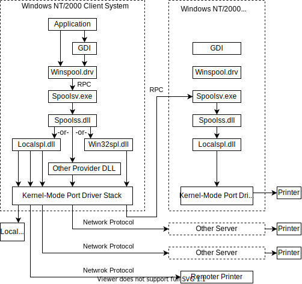
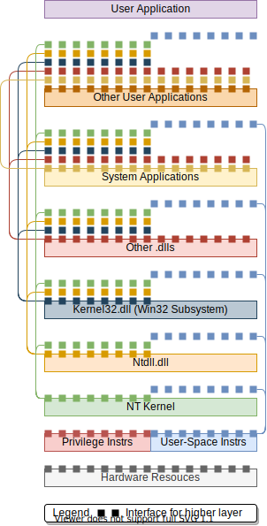

xieby1's notes
最近的研究
- 二进制翻译
- ISA语义分析
最近折腾的事
- NixOS
同领域的朋友们
| 标 | 路径 | 年 | 题目（缩） | 作者（缩） | 发表（缩） | 引用 | 团队 | 概括 | 题目 |
| Algo | 2010 | heap_alloc | wang | cgo | 16 | 武成岗 | On Improving Heap Memory Layout by Dynamic Pool Allocation | ||
| Algo | 2010 | mem_bandwidth_sched | xu | pact | 67 | 武成岗 | On Mitigating Memory Bandwidth Contention through Bandwidth-Aware Scheduling | ||
| Algo | 2011 | heap_alloc | 王振江 | 计算机学报 | 1 | 武成岗 | 提高堆数据局部性的动态池分配技术 | ||
| Algo | 2012 | on_the_fly_heap_object_split | wang | taco | 11 | 武成岗 | On-the-fly Structure Splitting for Heap Objects | ||
| Algo | 2012 | fair_sched | xu | sigmetrics | 23 | 武成岗 | Providing Fairness on Shared-Memory Multiprocessors via Process Scheduling | ||
| Algo | 2013 | identify_sync | yuan | europar | 6 | 武成岗 | Synchronization Identification through On-the-fly Test | ||
| Algo | 2014 | calling_context_encode | li | cgo | 5 | 武成岗 | Dynamic and Adaptive Calling Context Encoding | ||
| N | Algo | 2014 | eflags | wwwang | 8 | 武成岗 | A pattern translation method for flags in binary translation | ||
| Algo | 2014 | locate_share_mem_bug | wwwang | ase | 12 | 武成岗 | Localization of Concurrency Bugs Using Shared Memory Access Pairs | ||
| Algo | 2015 | fair_sched | wu | tpds | 13 | 武成岗 | FPS: A Fair-Progress Process Scheduling Policy on Shared-Memory Multiprocessors | ||
| Algo | 2015 | reproduce_concurrency_bug | yuan | icse | 9 | 武成岗 | ReCBuLC: Reproducing Concurrency Bugs Using Local Clocks | ||
| Algo | 2018 | reproduce_concurrency_bug | wang | tse | 1 | 武成岗 | Using Local Clocks to Reproduce Concurrency Bugs | ||
| analysis | 2017 | 并行程序 | 黄小敏 | master_thesis | lx | ||||
| W | analysis | 2019 | x64_inst_statistics | akshintala | systor | 3 | unc | x86-64 Instruction Usage among C/C++ Applications | |
| Arch/HT | 2005 | cell | kahle | ibmjrd | 1093 | ||||
| Arch/HT | 2007 | cell_boradband | johns | ibmjrd | 105 | ||||
| Arch/HT | 2012 | process_migration | devuyst | asplos | 83 | ||||
| Arch/HT | 2014 | isa_advantage | venkat | isca | 102 | ||||
| Arch/HT | 2015 | overview | mitra | jip | 15 | ||||
| Arch/HT | 2016 | process_migration | lyerly | mars | 5 | ||||
| Arch/HT | 2018 | process_migration | venkat | doc_thesis | 5 | ||||
| Arch/HT | 2019 | composite_isa | venkat | hpca | 17 | Composite-ISA Cores: Enabling Multi-ISA Heterogeneity Using a Single ISA | |||
| Arch/HT | 2020 | byoc_framework | balkind | asplos | 3 | ||||
| Arch/reconf | 1997 | chimaera | hauck | fccm | 461 | The Chimaera Reconfigurable Functional Unit | |||
| Arch/reconf | 2004 | conf_acc | clark | micro | 186 | Application-Specific Processing on a General-Purpose Core via Transparent Instruction Set Customization | |||
| ? | Arch/reconf | 2005 | java | beck | ipdps | 4 | ufrgs | Application of Binary Translation to Java Reconfigurable Architectures | |
| ? | Arch/reconf | 2005 | java | beck | dac | 39 | ufrgs | Dynamic Reconfiguration with Binary Translation: Breaking the ILP Barrier with Software Compatibilit | |
| Arch/reconf | 2008 | reconf_acc | beck | date | 97 | ufrgs | Transparent Reconfigurable Acceleration for Heterogeneous Embedded Applications | ||
| Arch/reconf | 2010 | reconf_acc | beck | 32 | ufrgs | Dynamic Reconfigurable Architectures and Transparent Optimization Techniques | |||
| Arch/VLIW | 1981 | trace_scheduling | fisher | ieeetc | 1333 | ||||
| Arch/VLIW | 1984 | vliw_intro | fisher | sigplan | 102 | ||||
| Arch/VLIW | 1988 | vliw_trace_compiler | colwell | ieeetc | |||||
| Arch/VLIW | 1988 | software_pipeline | lam | sigplan | 1107 | ||||
| BT | 2010 | qemu_opt_wine | 刘奇 | doc_thesis | lx | ||||
| BT | 2020 | bt_to_acc | knorst | sbcci | 0 | ufrgs | Unlocking the Full Potential of Heterogeneous Accelerators by Using a Hybrid Multi-Target Binary Translator | ||
| BT/algo | 2003 | delay_slot | ramsey | toplas | 11 | sun | A Transformational Approach to Binary Translation of Delayed Branches | ||
| BT/algo | 2004 | bitra_digital_bridge | 马湘宁 | doc_thesis | 武成岗 | 二进制翻译关键技术研究 | |||
| BT/algo | 2005 | cache | 谢海斌 | 计算机工程 | 0 | 武成岗 | 动态二进制翻译中的代码Cache管理策略 | ||
| BT/algo | 2005 | eflags | 马湘宁 | 计研发 | 2 | 武成岗 | 二进制翻译中的标志位优化技术 | ||
| BT/algo | 2006 | simd_opt | li | cgo | 31 | intel | Optimizing Dynamic Binary Translation for SIMD Instructions | ||
| BT/algo | 2006 | excp_handle | 唐锋 | 计研发 | 1 | 武成岗 | 二进制翻译应用级异常处理 | ||
| BT/algo | 2006 | lib | 杨浩 | 计研发 | 0 | 武成岗 | 二进制翻译中的库函数处理 | ||
| BT/algo | 2007 | eflags_dyn | 唐锋 | 软件学报 | 1 | 武成岗 | 基于动态反馈的标志位线性分析算法 | ||
| BT/algo | 2008 | cam | li | amasbt | 武成岗 | A New Replacement Algorithm on Content Associative Memory for Binary Translation System | |||
| BT/algo | 2008 | prefetch_opt | ukezono | acsac | 1 | jaist | Dynamic Binary Code Translation for Data Prefetch Optimization | ||
| BT/algo | 2008 | branch | 陈龙 | 计研发 | 1 | 武成岗 | 二进制翻译中解析多目标分支语句的图匹配方法 | ||
| BT/algo | 2010 | indirect_jump | payer | systor | 23 | ethz | table driven不是亮点？ | Generating low-overhead dynamic binary translators | |
| BT/algo | 2011 | stack_var_to_register | li | cgo | 9 | 武成岗 | Dynamic Register Promotion of Stack Variables | ||
| BT/algo | 2011 | misaligned_access | li | taco | 0 | 武成岗 | Efficient and Effective Misaligned Data Access Handling in a Dynamic Binary Translation System | ||
| BT/algo | 2011 | simd_opt | michel | date | 21 | tima | Speeding-up SIMD instructions Dynamic Binary Translation in Embedded Processor Simulation | ||
| BT/algo | 2011 | loop_nest_detect | sato | cf | 17 | jaist | On-the-fly detection of precise loop nests across procedures on a dynamic binary translation system | ||
| BT/algo | 2012 | indirect_jump_sys | koju | systor | 8 | ibm | Optimizing indirect branches in a system-level dynamic binary translator | ||
| BT/algo | 2012 | multicore_opt | kyle | lctes | 9 | ed | Efficiently parallelizing instruction set simulation of embedded multi-core processors using region-based just-in-time dynamic binary translation | ||
| BT/algo | 2012 | trans_vliw | michel | 7 | tima | Fast Simulation of Systems Embedding VLIW Processors | |||
| BT/algo | 2012 | sys_background_opt | sokolov | pcs | 2 | Background optimization in full system binary translation | |||
| W | BT/algo | 2015 | post_opt | zhang | cgo | 17 | lx | HERMES: A Fast Cross-ISA Binary Translator with Post-Optimization | |
| BT/algo | 2016 | static_identify_jump_target | federico | cases | 9 | A jump-target identification method for multi-architecturestatic binary translation | |||
| BT/algo | 2016 | code_cache_persistent | wwwang | usenix | 15 | umn | 这也能水 | A General Persistent Code Caching Framework for Dynamic Binary Translation (DBT) | |
| BT/algo | 2017 | plugin | gritschneder | rsp | 10 | tum | The Extendable Translating Instruction Set Simulator (ETISS) interlinked with an MDA Framework for fast RISC Prototyping | ||
| BT/algo | 2017 | trans_vliw | michel | cadics | 1 | tima | Dynamic Binary Translation of VLIW Codes on Scalar Architectures | ||
| BT/algo | 2017 | eflags_by_dbg_hw | salgado | esl | 5 | uminho | Condition Codes Evaluation on Dynamic Binary Translation for Embedded Platforms | ||
| BT/algo | 2019 | opt_decision | park | tecs | 0 | umich | Multi-objective Exploration for Practical Optimization Decisions in Binary Translation | ||
| BT/algo | 2021 | inline_helper | wwwang | iccc | 1 | uga | 这也能水 | Helper function inlining in dynamic binary translation | |
| BT/algo/bt_rules | 1998 | semantic_spec_lang | cifuentes | iwpc | 57 | uq | Specifying the Semantics of Machine Instructions | ||
| BT/algo/bt_rules | 2006 | peephole_superopt | bansal | asplos | 134 | stanford | Automatic Generation of Peephole Superoptimizers | ||
| W | BT/algo/bt_rules | 2008 | peephole_superopt | bansal | osdi | 78 | stanford | Binary Translation Using Peephole Superoptimizers | |
| BT/algo/bt_rules | 2010 | isamap | souza | amasbt | 8 | unicamp | ISAMAP: Instruction Mapping Driven by Dynamic Binary Translation | ||
| BT/algo/bt_rules | 2017 | isa_desc_lang | bezzubikov | ispras | 2 | ispras | 提出一个isa描述语言 | Automatic Dynamic Binary Translator Generation from Instruction Set Description | |
| BT/algo/bt_rules | 2018 | learn | wwwang | asplos | 11 | umn | learn from compiler | Enhancing Cross-ISA DBT Through Automatically Learned Translation Rules | |
| BT/algo/bt_rules | 2019 | learn | song | usenix | 5 | 复旦 | Unleashing the Power of Learning: An Enhanced Learning-Based Approach for Dynamic Binary Translation | ||
| BT/algo/bt_rules | 2020 | learn | jiang | micro | 3 | 复旦 | More with Less - Deriving More Translation Rules with Less Training Data for DBTs Using Parameterization | ||
| BT/algo/offload | 2010 | distribit | guan | hpdc | 5 | 上交 | DistriBit: A Distributed Dynamic Binary Translator System for Thin Client Computing | ||
| BT/algo/offload | 2011 | jit_task_farm | bohm | pldi | 56 | ed | Generalized Just-In-Time Trace Compilation using a Parallel Task Farm in a Dynamic Binary Translator | ||
| BT/algo/offload | 2017 | by_hqemu | wwwang | mobisys | 20 | umn | Enabling Cross-ISA Offloading for COTS Binaries | ||
| BT/algo/reg | 2004 | post_realloc | zhang | emsoft | 8 | gatech | Binary translation to improve energy efficiency through post-pass register re-allocation | ||
| X | BT/algo/reg | 2014 | alloc | choi | 0 | cbnu | 题不对文 | Chungbuk National University | |
| BT/algo/smc | 2015 | detect | hawkins | cgo | 24 | Optimizing Binary Translation of Dynamically Generated Code | |||
| BT/algo/trace | 1994 | opt_profiling_tracing | ball | toplas | 580 | ||||
| BT/algo/trace | 1996 | efficient_path_profiling | ball | micro | 642 | ||||
| BT/algo/trace | 2000 | net | duesterwald | asplos | 141 | ||||
| BT/algo/trace | 2005 | lei_net | hiniker | micro | 39 | ||||
| BT/algo/trace | 2005 | edge_profile | 白童心 | 计算机工程 | 2 | 武成岗 | 优化动态二进制翻译器DigitalBridge | ||
| BT/algo/trace | 2009 | large_tb | jones | hipeac | 49 | ed | High Speed CPU Simulation Using LTU Dynamic Binary Translation | ||
| BT/algo/trace | 2010 | saving_space | porto | amasbt | 7 | unicamp | record/replay trace, space--, time++ | Trace Execution Automata in Dynamic Binary Translation | |
| BT/algo/trace | 2012 | dynamic_static | guan | jsa | 5 | inter-egde profiling, software cache layout | |||
| BT/algo/trace | 2014 | region_based | spink | lctes | 9 | ed | Efficient code generation in a region-based dynamic binary translator | ||
| BT/analysis | 2008 | cache_perf | alvarez | 13 | virginia | Evaluating the Impact of Dynamic Binary Translation Systems on Hardware Cache Performance | |||
| W | BT/analysis | 2008 | cold_code | attrot | amasbt | 1 | Cold Code Analysis | ||
| W | BT/analysis | 2008 | overhead | borin | amasbt | 26 | Characterization of DBT Overhead | ||
| BT/analysis | 2008 | security | chen | amasbt | 0 | Guest & host security | Impact of Dynamic Binary Translators on Security | ||
| W | BT/analysis | 2008 | portable_interpretor | mihocka | amasbt | 40 | Virtualization Without Direct Execution or Jitting: Designing a Portable Virtual Machine Infrastructure | ||
| BT/analysis | 2009 | eval_misaligned_access | li | cgo | 4 | An Evaluation of Misaligned Data Access Handling Mechanisms in Dynamic Binary Translation Systems | |||
| W | BT/analysis | 2010 | mem_bottleneck | kim | amasbt | 5 | columbia | Computation vs. Memory Systems: Pinning Down Accelerator Bottlenecks | |
| BT/analysis | 2010 | atomic | neelakantam | asplos | 20 | illinois | A real system evaluation of hardware atomicity for software speculation | ||
| BT/analysis | 2011 | hw_sw | pavlou | amasbt | 13 | upc | DARCO: Infrastructure for Research on HW/SW co-designed Virtual Machines | ||
| BT/analysis | 2014 | simulators_harm | nowatki | 19 | |||||
| BT/analysis | 2015 | 虚拟机研究 | 靳国杰 | post_thesis | lx | ||||
| BT/analysis | 2018 | atomic | oni | icias | 0 | Fine-Grained Overhead Analysis Utilizing Atomic Instructions for Cross-ISA Dynamic Binary Translation on Multicore Processor | |||
| BT/analysis | 2020 | perfdbt | wu | iccd | 2 | ||||
| BT/application | 2013 | detect_unread_mem | eyolfson | rv | 0 | waterloo | Detecting Unread Memory Using Dynamic Binary Translation | ||
| BT/application | 2013 | hw_fault_sim | guglielmo | ets | 5 | univr | Efficient Fault Simulation through Dynamic Binary Translation for Dependability Analysis of Embedded Software | ||
| BT/dynamic | 2000 | uqdbt | ung | wcre | 4 | uq | Dynamic re-engineering of binary code with run-time feedbacks | ||
| BT/dynamic | 2000 | uqdbt | ung | 105 | uq | Machine-Adaptable Dynamic Binary Translation | |||
| BT/dynamic | 2000 | aries | zheng | computer | 125 | hp | PA-RISC to IA-64: Transparent Execution, No Recompilation | ||
| BT/dynamic | 2007 | hdtrans | sridhar | carn | 34 | jhu | HDTrans: A Low-Overhead Dynamic Translator | ||
| BT/dynamic | 2009 | challenges_in_arm | moore | lctes | 33 | pitt | Addressing the challenges of DBT for the ARM architecture | ||
| BT/dynamic | 2010 | cycle_accurate | bohm | 39 | ed | Cycle-accurate performance modelling in an ultra-fast just-in-time dynamic binary translation instruction set simulator | |||
| BT/dynamic | 2011 | harmonia | ottoni | cf | 19 | intel | Harmonia: A Transparent, Efficient, and Harmonious Dynamic Binary Translator Targeting the Intel Architecture | ||
| ? | BT/dynamic | 2016 | dbto | ooi | 2 | hqemu比qemu慢60倍? | Dual-Engine Corss-ISA DBTO Technique utilising MultiThreaded Support for Multicore Processor System | ||
| BT/dynamic | 2017 | mambox64 | dantras | pldi | 18 | manchester | arm32 => arm64 | ||
| BT/dynamic | 2017 | mambox64 | dantras | vee | 9 | manchester | HyperMAMBO-X64: Using virtualization to support high-performance transparent binary translation | ||
| BT/HQEMU | 2012 | hqemu | hong | cgo | 88 | ||||
| BT/HQEMU | 2013 | hqemu | hong | doc_thesis | 8 | ||||
| BT/HQEMU | 2014 | hqemu | hong | tpds | 8 | Efficient and Retargetable Dynamic Binary Translation on Multicores | |||
| BT/HW | 2003 | indirect_jump | kim | micro | 44 | ret addr stack, jmp target $ | Hardware Support for Control Transfers in Code Caches | ||
| W | BT/HW | 2004 | fused_isa | hu | cgo | 43 | wisc | Using Dynamic Binary Translation to Fuse Dependent Instructions | |
| W | BT/HW | 2006 | startup_opt | hu | isca | 29 | wisc | Reducing Startup Time in Co-Designed Virtual Machines | |
| ? | BT/HW | 2008 | coprocessor | li | amasbt | 3 | 上交 | dedicated coproc (FPGA) | A hardware/software co-designed virtual machine to support multiple ISAs |
| ? | BT/HW | 2009 | godson3_x86_emu | hu | 9 | lx | Efficient Binary Translation System with Low Hardware Cost | ||
| ? | BT/HW | 2009 | godson3_x86_emu | hu | micro | 84 | lx | GODSON -3: A SCALABLE MULTICORE RISC PROCESSOR WITH X86 EMULATION | |
| BT/HW | 2012 | cam | he | 3 | ndsc | Hardware/software co-design of Dynamic Binary Translation in X86 Emulation | |||
| BT/HW | 2015 | 融合指令集 | 胡伟武 | 中国科学 | lx | ||||
| BT/HW | 2019 | peripheral_acc | gomes | icit | 0 | uminho | Non-Intrusive Hardware Acceleration for Dynamic Binary Translation in Embedded Systems | ||
| BT/HW/codeCache | 2007 | scratchpad_mem | baiocchi | cases | 20 | pitt | Fragment Cache Management for Dynamic Binary Translators in Embedded Systems with Scratchpad | ||
| BT/HW/codeCache | 2009 | scratchpad_mem | baiocchi | dac | 12 | pitt | Heterogeneous code cache: using scratchpad and main memory in dynamic binary translators | ||
| BT/HW/codeCache | 2012 | scratchpad_mem | baiocchi | tecs | 6 | pitt | Enabling dynamic binary translation in embedded systems with scratchpad memory | ||
| BT/HW/codeCache | 2018 | hw_assist | salgado | etfa | 2 | uminho | A Hardware-assisted Translation Cache for Dynamic Binary Translation in Embedded Systems | ||
| BT/HW/reconf | 2005 | mem_opt | oh | iccad | 2 | kaist | Memory Access Optimization of Dynamic Binary Translation for Reconfigurable Architectures | ||
| BT/HW/reconf | 2007 | trans_binary_to_fpga | mittal | tvlsi | 16 | illinois | An Overview of a Compiler for Mapping Software Binaries to Hardware | ||
| BT/HW/reconf | 2008 | mem_opt_loop_pipeline | oh | cadics | 5 | Speculative Loop-Pipelining in Binary Translation for Hardware Acceleration | |||
| BT/HW/reconf | 2008 | trans_binary_to_fpga | vahid | computer | 91 | ucr | Warp Processing: Dynamic Translation of Binaries to FPGA Circuits | ||
| BT/HW/reconf | 2013 | multi_isa | capella | 1 | ufrgs | A Multiple-ISA Reconfigurable Architecture | |||
| ? | BT/HW/reconf | 2013 | x86_mips_reconf | junior | jsa | 4 | ufrgs | Towards a multiple-ISA embedded system | |
| BT/HW/reconf | 2014 | transparent_adaptive | beck | micpro | 20 | ufrgs | A transparent and adaptive reconfigurable system | ||
| BT/HW/reconf | 2014 | virt | lo | sbesc | 0 | ufrgs | Hardware Virtualization on Coarse-Grained Reconfigurable Architectures | ||
| BT/HW/reconf | 2014 | bt_for_cgra | mai | ipdps | 1 | unist | Efficient Software-Based Runtime Binary Translation for Coarse-Grained Reconfigurable Architectures | ||
| BT/HW/reconf | 2016 | analysis_parallelism | brandalero | daes | 3 | ufrgs | potential analysis of a superscalar core employing a reconfigurable array for improving instruction-level parallelism | ||
| BT/HW/reconf | 2016 | heterogeneous | souza | date | 24 | ufrgs | A Reconfigurable Heterogeneous Multicore with a Homogeneous ISA | ||
| BT/HW/reconf | 2016 | sched | souza | arc | 0 | ufrgs | Evaluating Schedulers in a Reconfigurable Multicore Heterogeneous System | ||
| BT/HW/reconf | 2016 | dbt_for_cgra | watkins | hpca | 14 | lafayette | Software Transparent Dynamic Binary Translation for Coarse-Grain Reconfigurable Architectures | ||
| BT/HW/reconf | 2017 | reuse_repeated_decode | brandalero | date | 15 | ufrgs | A Mechanism for Energy-efficient Reuse of Decoding and Scheduling of x86 Instruction Streams | ||
| BT/HW/VLIW | 1999 | bao | sathaye | 29 | ibm | BOA: Targeting Multi-Gigahertz with Binary Translation | |||
| BT/HW/VLIW | 2000 | boa | gschwind | computer | 113 | ibm | daisy后继者boa | Dynamic and transparent binary translation | |
| BT/HW/VLIW | 2015 | denver | nvidia | micro | 36 | ||||
| BT/HW/VLIW | 2019 | hybrid_dbt | rokicki | cadics | 2 | rennes | Hybrid-DBT: Hardware/Software Dynamic Binary Translation Targeting VLIW | ||
| BT/HW/VLIW/crusoe | 2000 | transmeta | halfhill | transmeta | TRANSMETA BREAKS X86 LOW-POWER BARRIER | ||||
| BT/HW/VLIW/crusoe | 2000 | crusoe | klaiber | transmeta | 118 | transmeta | |||
| BT/HW/VLIW/crusoe | 2003 | codemorph | dehnert | cgo | 325 | transmeta | |||
| X | BT/HW/VLIW/crusoe | 2014 | v-isa | dhaskat | 0 | V-ISA use in Transmeta Crusoe Processor | |||
| BT/HW/VLIW/daisy | 1998 | daisy | ebcioglu | iccd | 32 | ibm | An Eight-Issue Tree-VLIW Processor for Dynamic Binary Translation | ||
| BT/HW/VLIW/daisy | 2000 | daisy | altman | 2 | ibm | Full System Binary Translation: RISC to VLIW | |||
| BT/HW/VLIW/daisy | 2000 | debug | altman | 5 | ibm | Simulation and Debugging of Full System Binary Translation | |||
| W | BT/HW/VLIW/daisy | 2000 | arch_convergence | gschwind | ics | 19 | ibm | 好像“融合指令集”，笑 | Binary translation and architecture convergence issues for IBM system/390 |
| BT/HW/VLIW/daisy | 2001 | daisy | ebcioglu | ieeetc | 138 | ibm | Dynamic binary translation and optimization | ||
| BT/kernel | 2012 | instrument | feiner | asplos | 54 | toronto | Comprehensive kernel instrumentation via dynamic binary translation | ||
| BT/kernel | 2012 | light_weight | lee | icuimc | 0 | skku | DyKA: Light-weight Dynamic Kernel Analyzing Framework Based on Binary Translation Method | ||
| W | BT/kernel | 2013 | fast | kedia | sosp | 18 | iitd | 不翻译用户指令，非首创 | Comprehensive kernel instrumentation via dynamic binary translation |
| BT/kernel | 2013 | light_weight | lee | tjsc | 3 | skku | Light-weight kernel instrumentation framework using dynamic binary translation | ||
| W | BT/lift | 2010 | x86_to_c | makankov | iccit | 0 | ku | Implementation of x86 Binary-to-C Translator by Using GNU Tools | |
| W | BT/lift | 2018 | rnn_snippet | katz | saner | 20 | cmu | lift snippet by RNN | Using Recurrent Neural Networks for Decompilation |
| W | BT/lift/IR | 2015 | learn_compiler | hasabnis | amasbt | 5 | sbu | Automatic Generation of Assembly to IR Translators Using Compilers | |
| BT/lift/IR | 2017 | arm_to_llvm | shigenobu | 5 | utsunomiya | A Translation Method of ARM Machine Code to LLVM-IR for Binary Code Parallelization and Optimization | |||
| BT/lift/IR/mcsema | 2019 | mcsema_dyninst | korencik | ||||||
| BT/lift/IR/mctoll | 2019 | mctoll | yadavalli | lctes | 5 | microsoft | Raising Binaries to LLVM IR with MCTOLL (WIP Paper) | ||
| BT/lift/IR | 2020 | instrew_llvm | engelke | vee | 3 | tum | Instrew: leveraging LLVM for high performance dynamic binary instrumentation | ||
| BT/lift/IR | 2020 | runtime_llvm_opt | engelke | 0 | tum | Robust Practical Binary Optimization at Run-time using LLVM | |||
| BT/lift/IR/LLBT | 2012 | llbt | bor-yeh | cases | 31 | 台交大 | |||
| BT/lift/IR/LLBT | 2013 | auto_validation | chen | applc | |||||
| BT/lift/IR/LLBT | 2014 | llbt | bor-yeh | taco | 15 | 台交大 | |||
| BT/lift/IR/LLBT | 2014 | llbt | 沈柏晔 | doc_thesis | 台交大 | ARM架構下可重定目標二元碼轉譯器之研究 | |||
| BT/lift/IR/REVNG | 2017 | revng | federico | picc | 39 | ||||
| BT/lift/IR/REVNG | 2018 | revng | federico | iccst | 3 | ||||
| BT/lift/IR/REVNG | 2019 | revng | gussoni | 1 | |||||
| BT/Mem | 2008 | thread_safe_by_tm | chung | hpca | 51 | stanford | Thread-safe dynamic binary translation using transactional memory | ||
| W | BT/Mem | 2010 | atomicity_opt | borin | cgo | 12 | intel | TAO: Two-level Atomicity for Dynamic Binary Optimizations | |
| BT/Mem | 2016 | atomic | rigo | taco | 6 | ||||
| BT/oldProj | 1993 | mips2alphaaxp | sites | cacm | 267 | Binary Translation | |||
| BT/oldProj | 1995 | tibbit | cogswell | 4 | cmu | Parallel and Distributed Real-Time Systems | |||
| BT/oldProj | 1997 | fx32 | hookway | dtj | 147 | DIGITAL FX!32: Combining Emulation and Binary Translation | |||
| BT/oldProj | 1998 | fx32 | chernoff | micro | 217 | FX!32 A Profile-Directed Binary Translator | |||
| BT/oldProj | 2000 | dynamo | bala | pldi | 514 | ||||
| BT/oldProj | 2002 | walkabout | cifuentes | 63 | sun | Walkabout: A Retargetable Dynamic Binary Translation Framework | |||
| BT/oldProj | 2003 | ia32el | baraz | micro | 291 | 到itanium, super block opt | IA-32 Execution Layer: a two-phase dynamic translator designed to support IA-32 applications on Itanium®-based systems | ||
| BT/oldProj | 2004 | rabit | pramanik | anss | 1 | buffalo | RABIT: A New Framework for Runtime Emulation and Binary Translation | ||
| BT/others | 1996 | reverse_engineer_env | cifuentes | wcre | 15 | uq | tegrated Reverse Engineering Environment of Binary Code | ||
| BT/others | 2005 | tdb_debugger | kumar | 13 | pitt | Tdb: a source-level debugger for dynamically translated programs | |||
| BT/others | 2010 | behave_control | sakai | saint | 0 | kyushuu | Behavior Control based on Dynamic Code Translation | ||
| BT/others | 2011 | cmp_intel_transmeta | ottoni | cf | 4 | intel | AstroLIT: Enabling Simulation-based Microarchitecture Comparison Between Intel and Transmeta Designs | ||
| BT/overview | 1996 | static_dynamic_retarget | cifuentes | icsm | 66 | uq | Binary translation: static, dynamic, retargetable? | ||
| BT/overview | 2000 | chances | altman | 88 | Welcome to the Opportunities of Binary Translation | ||||
| BT/overview | 2001 | bt_opt_challenges | altman | pieee | 38 | ||||
| BT/overview | 2003 | dbt_overview | mark | ukuug | |||||
| BT/QEMU | 2005 | qemu | bellard | usenix | 2217 | ||||
| BT/QEMU | 2017 | qemu_multi_cores | cota | cgo | 8 | ||||
| BT/QEMU/target | 2018 | xilinx_microblaze | yarza | rapido | 1 | offis | Real-Time Capable Retargeting of Xilinx MicroBlaze Binaries using QEMU A Feasibility Study | ||
| BT/rewrite | 2011 | runtime_vectorize | nakamura | 8 | tsukuba | Automatic Vectorization by Runtime Binary Translation | |||
| BT/rewrite | 2012 | verify_by_dbt | becker | dsn | 8 | paderborn | Binary Mutation Testing Through Dynamic Translation | ||
| BT/rewrite | 2012 | lldsal | payer | dsal | 4 | ethz | 为BT的底层语言，需编译到客户程序 | LLDSAL: a low-level domain-specific aspect language for dynamic code-generation and program modification | |
| BT/rewrite | 2013 | static_no_extra_info | smithson | wcre | 32 | umd | Static Binary Rewriting without Supplemental Information | ||
| BT/rewrite | 2017 | ramblr | wang | ndss | 71 | ucsb | Ramblr: Making Reassembly Great Again | ||
| BT/rewrite | 2018 | superset_disassembly | bauman | ndss | 40 | utdallas | Superset Disassembly: Statically Rewriting x86 Binaries Without Heuristics | ||
| W | BT/rewrite | 2019 | intro | wenzl | csur | 16 | From hack to elaborate technique - A survey on binary rewriting | ||
| BT/rewrite | 2019 | parallel_opt | zhou | vee | 2 | cam | The Janus triad: Exploiting parallelism through dynamic binary modification | ||
| BT/rewrite/instru | 2005 | pin | luk | pldi | 3914 | intel | Pin: building customized program analysis tools with dynamic instrumentation | ||
| BT/rewrite/instru | 2009 | mt | hazelwood | ismm | 28 | ||||
| BT/rewrite/instru | 2018 | partial_bt | haber | systor | 0 | intel | Chaperone - Runtime System for Instrumenting Applications via Partial Binary Translation | ||
| ? | BT/rewrite/instru | 2019 | by_qemu | cota | vee | 5 | columbia | 三个不相关的事情？ Fpu opt, multicore opt, instrument |
Cross-ISA machine instrumentation using fast and scalable dynamic binary translation |
| W | BT/rewrite/instru | 2020 | static | dinesh | snp | 31 | purdue | RetroWrite: Statically Instrumenting COTS Binaries for Fuzzing and Sanitization | |
| BT/security | 2010 | malware_detect | guo | 26 | ndsc | HERO: A novel malware detection framework based on binary translation | |||
| BT/security | 2011 | syscall | payer | vee | 63 | ethz | Fine-grained user-space security through virtualization | ||
| BT/security | 2020 | timing_side_channel | napoli | 0 | unicamp | Evaluation and Mitigation of Timing Side-Channel Leakages on Multiple-Target Dynamic Binary Translators | |||
| BT/static | 1999 | uqbt | cifuentes | wcre | 46 | uq | The design of a resourceable and retargetable binary translator | ||
| BT/static | 2000 | uqbt | van | 112 | UQBT: Adaptable Binary Translation at Low Cost | ||||
| BT/static | 2002 | virtual_method_detect | troger | wcre | 18 | uq | Analysis of virtual method invocation for binary translation | ||
| BT/static | 2006 | sbt | angelone | 1 | |||||
| BT/static | 2008 | arm_sbt | jiunn-yeu | odes | 16 | ||||
| X | BT/static | 2018 | riscv | lupori | hpcs | 3 | unicamp | 难点都没解决，如简介跳转 | Towards a High-Performance RISC-V Emulator |
| BT/sys | 2010 | embed | kondoh | vee | 11 | ibm | Dynamic binary translation specialized for embedded systems | ||
| BT/sys | 2011 | multicore | almer | 23 | ed | Scalable Multi-Core Simulation Using Parallel Dynamic Binary Translation | |||
| BT/sys | 2013 | multicore | almer | ijpp | 4 | ed | A Parallel Dynamic Binary Translator for Efficient Multi-Core Simulation | ||
| BT/sys | 2013 | ppc_java | kumar | 2 | ibm | Experiences with Dynamic Binary Translation in a Full System Simulator | |||
| BT/sys | 2016 | armv7 | penneman | jsa | 6 | ugent | Evaluation of dynamic binary translation techniques for full system virtualisation on ARMv7-A | ||
| BT/sys | 2016 | async_interrupt_handle | spink | lctes | 1 | ed | Efficient asynchronous interrupt handling in a full-system instruction set simulator | ||
| BT/sys | 2019 | dbtor_for_embed | salgado | icit | 2 | uminho | DBTOR: A Dynamic Binary Translation Architecture for Modern Embedded Systems | ||
| BT/Tarmac | 2001 | report | sharp | 2 | A Dynamically Recompiling ARM Emulator | ||||
| BT/test | 2014 | code_coverage | guo | date | 0 | 武成岗 | EATBit: Effective Automated Test for Binary Translation with High Code Coverage | ||
| BT/test | 2017 | sys_bench | wagstaff | ispass | 5 | ||||
| Build/Compiler/trans | 2004 | perform_goto | 武成岗 | 软件学报 | 0 | 武成岗 | 代码翻译中PERFORM和GOTO语句复合结构的变换 | ||
| CompatLayer | 2006 | linuxulator | divacky | freebsd | linux => freebsd | Linux® emulation in FreeBSD | |||
| CompatLayer/UML | 2006 | user_mode_linux | dike | 253 | User Mode Linux | ||||
| W | ISA | 2013 | power_of_risc_cisc | blem | hpca | 144 | |||
| W | ISA/enhance | 2015 | branch_predict | mcfarlin | isca | 8 | cmu | in_order_cpu | Branch Vanguard: Decomposing Branch Functionality into Prediction and Resolution Instructions |
| JIT | 1997 | java | cierniak | 38 | Just-in-time optimizations for high-performance Java programs | ||||
| JIT | 1997 | java_vliw_processor | ebcioglu | 37 | ibm | A JAVA ILP Machine Based on Fast Dynamic Compilation | |||
| JIT | 1997 | cacao_java_alpha | krall | 124 | CACAO - A 64 bit JavaVM Just-in-Time Compiler | ||||
| JIT | 1998 | cacao_java_efficient | krall | pact | 142 | Efficient JavaVM just-in-time compilation | |||
| JIT | 1998 | java_ia32 | tabatabai | pldi | 206 | Fast, effective code generation in a just-in-time Java compiler | |||
| JIT | 1999 | latte_java | yang | pact | 116 | LaTTe: a Java VM just-in-time compiler with fast and efficient register allocation | |||
| JIT | 2003 | intro | aycock | csur | 313 | A brief history of just-in-time | |||
| JIT | 2006 | testarossa_java | sundaresan | cgo | 52 | Experiences with Multi-threading and Dynamic Class Loading in a Java Just-In-Time Compiler | |||
| JIT | 2008 | llvm_sim | brandner | 29 | Fast and Accurate Simulation using the LLVM Compiler Framework | ||||
| JIT | 2011 | llvm_sim | helmstetter | imecs | 6 | Fast Instruction Set Simulation Using LLVM-based Dynamic Translation | |||
| JIT | 2018 | hhvm_php | ottoni | pldi | 19 | HHVM JIT: A Profile-Guided, Region-Based Compiler for PHP and Hack | |||
| JIT/opt | 2000 | jvm_profile | whaley | 142 | A portable sampling-based profiler for Java virtual machines | ||||
| JIT/opt | 2001 | lazy_background | krintz | spe | 70 | Reducing the overhead of dynamic compilation | |||
| JIT/opt | 2003 | region_based | suganuma | pldi | 61 | A Region-Based Compilation Technique for a Java Just-In-Time Compiler | |||
| JIT/opt | 2004 | exception_handling | lee | spe | 31 | Efficient Java Exception Handling in Just-in-Time Compilation | |||
| JIT/opt | 2009 | js_trace_based | gal | pldi | 342 | Trace-based just-in-time type specialization for dynamic languages | |||
| JIT/opt | 2009 | js_trace_based | ha | 28 | A Concurrent Trace-based Just-In-Time Compiler for JavaScript | ||||
| JIT/opt | 2011 | from_method_to_trace | inoue | cgo | 66 | A Trace-based Java JIT Compiler Retrofitted from a Method-based Compiler | |||
| JIT/opt | 2011 | java_multicore | kulkarni | oopsla | 31 | JIT Compilation Policy for Modern Machines | |||
| JIT/opt | 2011 | trace_saving_space | wu | oopsla | 9 | Reducing trace selection footprint for large-scale Java applications without performance loss | |||
| JIT/opt | 2019 | low_latency | kristien | vee | 0 | ed | Mitigating JIT Compilation Latency in Virtual Execution Environments | ||
| Kernel/exo | 1995 | intro | engler | sosp | 1259 | Exokernel: An Operating Application-Level System Architecture Resource Management | |||
| Kernel/Linux | 2002 | rcu | mckenney | 216 | READ-COPY UPDATE: USING EXECUTION HISTORY TO SOLVE CONCURRENCY PROBLEMS | ||||
| Kernel/Linux | 2016 | sched_bug | lozi | eurosys | 120 | The Linux Scheduler: a Decade of Wasted Cores | |||
| Kernel/Linux | 2020 | rcu | mckenney | RCU Usage In the Linux Kernel: Eighteen Years Later | |||||
| Kernel/micro | 1995 | u_kernel | lietdke | sosp | 308 | On u-Kernel Construction | |||
| Kernel/micro | 2013 | l3_sel4 | elphinstone | sosp | 126 | From L3 to seL4 What Have We Learnt in 20 Years of L4 Microkernels? | |||
| Kernel/multi | 2009 | intro | baumann | sosp | 856 | The Multikernel: A new OS architecture for scalable multicore systems | |||
| Lang/IR | 1991 | ssa | cytron | toplas | 2317 | ||||
| Lang/IR | 2000 | llvm | lattner | master_thesis | 241 | ||||
| Lang/IR | 2004 | llvm | lattner | cgo | 4340 | ||||
| Lang/IR | 2013 | importance | chow | ||||||
| Lang/Lisp | 1989 | intro_sym_comp | touretzky | 32 | |||||
| Lang/SMT-LIB | 2010 | smt_lib_v2_ref | barrett | 817 | |||||
| Lang/SMT-LIB | 2012 | smt_lib_v2 | cok | 47 | |||||
| Lang/WebAsm | 2017 | intro | haas | pldi | 194 | ||||
| Lang/WebAsm | 2019 | memory_model | watt | oopsla | 6 | ||||
| Mem | 2016 | cat | alglave | 18 | Syntax and semantics of the weak consistency model specification language cat | ||||
| Mem | 2020 | consistency_test | kirkham | oopsla | 0 | Foundations of Empirical Memory Consistency Testing | |||
| Mem/model | 2017 | memalloy | wickerson | popl | 77 | test two mem model | Automatically Comparing Memory Consistency Models | ||
| Perf | 2004 | simpoint | hamerly | sigmetrics_per | 69 | How to Use SimPoint to Pick Simulation Points | |||
| W | Pwr | 2008 | efficiency | slca | Computer Architecture Techniques for Power-Efficiency | ||||
| Pwr | 2009 | mcpat | li | micro | 2319 | hp | McPAT: An Integrated Power, Area, and Timing Modeling Framework for Multicore and Manycore Architectures | ||
| Pwr | 2011 | mcpat | li | taco | 180 | hp | The McPAT Framework for Multicore and Manycore Architectures: Simultaneously Modeling Power, Area, and Timing | ||
| Pwr | 2015 | high_resolution | oboril | date | 13 | kit | High-Resolution Online Power Monitoring for Modern Microprocessors | ||
| Pwr | 2016 | x86_decoder | hirki | 11 | Empirical Study of Power Consumption of x86-64 Instruction Decoder | ||||
| security | 2017 | vm_mem_disclosure | wwwang | vee | 15 | 武成岗 | RERANZ: A Light-Weight Virtual Machine to Mitigate Memory Disclosure Attacks | ||
| security | 2019 | re_random | wwwang | usenix_security | 2 | 武成岗 | SafeHidden: An Efficient and Secure Information Hiding Technique Using Re-randomization | ||
| Sim | 1995 | simos | rosenblum | 528 | Complete computer system simulation: the SimOS approach | ||||
| Sim | 2002 | simplescalar_interp | austin | 1729 | SimpleScalar: an infrastructure for computer system modeling | ||||
| Sim | 2002 | simics | magnusson | 2168 | Simics: A full system simulation platform | ||||
| Sim | 2003 | smarts | wunderlich | isca | 351 | SMARTS: accelerating microarchitecture simulation via rigorous statistical sampling | |||
| Sim | 2004 | simflex | hardavellas | perv | 156 | SimFlex: a fast, accurate, flexible full-system simulation framework for performance evaluation of server architecture | |||
| Sim | 2005 | gems | martin | carn | 1612 | Multifacet's general execution-driven multiprocessor simulator (GEMS) toolset | |||
| Sim | 2006 | giano_sw_hw_co | forin | 33 | Giano: The Two-Headed System Simulator | ||||
| Sim | 2006 | lse_high_level | vachharajani | tocs | 42 | The Liberty Simulation Environment: A Deliberate Approach to High-Level System Modeling | |||
| Sim | 2006 | simflex | wenisch | micro | 343 | SimFlex: Statistical Sampling of Computer System Simulation | |||
| Sim | 2006 | intro | yi | ieeetc | 97 | Simulation of computer architectures: simulators, benchmarks, methodologies, and recommendations | |||
| Sim | 2007 | ptlsim_cycle_accurate | yourst | ispass | 393 | PTLsim: A Cycle Accurate Full System x86-64 Microarchitectural Simulator | |||
| Sim | 2008 | armiss | lv | icess | 12 | ARMISS: An Instruction Set Simulator for the ARM Architecture | |||
| Sim | 2009 | cotson | argollo | opsr | 211 | COTSon: infrastructure for full system simulation | |||
| Sim | 2009 | bt_acc | gligor | 69 | tima | Using Binary Translation in Event Driven Simulation for Fast and Flexible MPSoC Simulation | |||
| Sim | 2010 | cotson | ryckbosch | micro | 21 | Fast, Accurate, and Validated Full-System Software Simulation of x86 Hardware | |||
| Sim | 2011 | marss_multicore | patel | dac | 382 | MARSSx86: A Full System Simulator for x86 CPUs | |||
| Sim | 2014 | error_analysis | gutierrez | ispass | 110 | Sources of error in full-system simulation | |||
| Sim | 2017 | bt_sampling | kumar | ispass | 2 | amd | DARTS: Performance-Counter Driven Sampling Using Binary Translators | ||
| Distro/Nix | 2006 | intro | dolstra | phd_thesis | 128 | The Purely Functional Software Deployment Model | |||
| Temp | 2006 | quantum_comp | slca | Quantum Computing for Computer Architects | |||||
| Temp | 2006 | transactional_mem | slca | Transactional Memory | |||||
| Temp | 2009 | fault_tolerant_arch | slca | Fault Tolerant Computer Architecture | |||||
| Temp | 2009 | on_chip_networks | slca | On-Chip Networks | |||||
| Temp | 2009 | reconf_supercomp | slca | Introduction to Reconfigurable Supercomputing | |||||
| Temp | 2009 | datacenter_design | slca | The Datacenter as a Computer An Introduction to the Design of Warehouse-Scale Machines | |||||
| W | Temp | 2010 | arch_perf_eval | slca | Computer Architecture Performance Evaluation Methods | ||||
| Temp | 2010 | transactional_mem | slca | Transactional Memory 2nd edition | |||||
| Temp | 2010 | uarch | slca | Processor Microarchitecture An Implementation Perspective | |||||
| Temp | 2011 | consistency_coherence | slca | A Primer on Memory Consistency and Cache Coherence | |||||
| Temp | 2011 | multicore_cache | slca | Multi-Core Cache Hierarchies | |||||
| W | Temp | 2011 | quantum_comp | slca | Quantum Computing for Computer Architects Second Edition | ||||
| Temp | 2012 | perf_tuning_gpgpu | slca | Performance Analysis and Tuning for General Purpose Graphics Processing Units (GPGPU) | |||||
| Temp | 2013 | arch_security | slca | Security Basics for Computer Architects | |||||
| Temp | 2013 | multithread_arch | slca | Multithreading Architecture | |||||
| W | Temp | 2013 | arch_opt_model | slca | Optimization and Mathematical Modeling in Computer Architecture | ||||
| Temp | 2013 | shared_mem_sync | slca | Shared-Memory Synchronization | |||||
| Temp | 2013 | volt_var_resilient | slca | Resilient Architecture Design for Voltage Variation | |||||
| W | Temp | 2014 | fpga_acc_sim | slca | FPGA-Accelerated Simulation of Computer Systems | ||||
| Temp | 2014 | hw_prefetch | slca | A Primer on Hardware Prefetching | |||||
| Temp | 2015 | analyzing_analytics | slca | Analyzing Analytics | |||||
| Temp | 2015 | customizable_comp | slca | Customizable Computing | |||||
| W | Temp | 2015 | die_stacking_arch | slca | Die-stacking Architecture | ||||
| Temp | 2015 | hw_acc_research | slca | Research Infrastructures for Hardware Accelerators | |||||
| Temp | 2015 | mem_compression | slca | A Primer on Compression in the Memory Hierarchy | |||||
| Temp | 2015 | simd | slca | Single-Instruction Multiple-Data Execution | |||||
| W | Temp | 2017 | virtual_mem | slca | Architectural and Operating System Support for Virtual Memory | ||||
| Temp | 2017 | deep_learning | slca | Deep Learning for Computer Architects | |||||
| W | Temp | 2017 | hw_sw_virt | slca | Hardware and Software Support for Virtualization | ||||
| Temp | 2017 | on_chip_networks | slca | On-Chip Networks Second Edition | |||||
| Temp | 2017 | temporal_NN | slca | Space-Time Computing with Temporal Neural Networks | |||||
| Temp | 2018 | gpgpu_arch | slca | General-Purpose Graphics Processor Architectures | |||||
| W | Temp | 2018 | heterogeneous_compile | slca | Compiling Algorithmsfor Heterogeneous Systems | ||||
| Temp | 2018 | secure_processor_arch | slca | Principles of Secure Processor Architecture Design | |||||
| Temp | 2019 | cache_replacement | slca | Cache Replacement Policies | |||||
| ISA/Semantics | 2019 | x64_validation | dasgupta | sigplan | 24 | A Complete Formal Semantics of x86-64 User-Level Instruction Set Architecture | |||
| ISA/Semantics | 2021 | sail | armstrong | manual | The Sail instruction-set semantics specification language | ||||
| Virt | 1988 | 386 | smith | programmers_journal | |||||
| Virt | 2000 | intel_secure_vmm | robin | usenix_security | 325 | ||||
| Virt | 2002 | esx | waldspurger | opsr | 1402 | vmware | Memory Resource Management in VMware ESX Server | ||
| Virt | 2003 | xen | barham | opsr | 6475 | cam | Xen and the Art of Virtualization | ||
| Virt | 2006 | cmp_soft_hard_x86 | adams | asplos | 700 | ||||
| Virt | 2006 | intel_hw | neiger | 255 | |||||
| Virt | 2007 | dbt_hypervisors | karollil | 0 | |||||
| Virt | 2007 | kvm | kivity | 1556 | |||||
| Virt | 2012 | dune | belay | osdi | 215 | ||||
| Virt | 2013 | static_trans_vliw | hamayun | 5 | tima | Native Simulation of Complex VLIW Instruction Sets using Static Binary Translation and Hardware-Assisted Virtualization | |||
| Virt | 2013 | ppc_embed | mittal | asplos | 9 | iitd | Efficient Virtualization on Embedded platforms Power Architecture | ||
| Virt/ | 2003 | xen | paul | sosp | 5036 | Xen and the Art of Virtualization | |||
| Virt/addr_trans | 2014 | espt | chang | vee | 20 | 武成岗 | Efficient Memory Virtualization for Cross-ISA System Mode Emulation | ||
| Virt/addr_trans | 2015 | opt_qemu_sys | tong | taco | 6 | ||||
| Virt/addr_trans | 2015 | dual_tlb | wang | 0 | lx | A Dual-TLB Method for MIPS Heterogeneous Virtualization | |||
| Virt/addr_trans | 2015 | dual_tlb | wang | master_thesis | lx | 基于双TLB的二进制翻译访存加速 | |||
| Virt/addr_trans | 2015 | hspt | wang | vee | 10 | HSPT: Practical Implementation and Efficient Management of Embedded Shadow Page Tables for Cross-ISA System Virtual Machines | |||
| Virt/addr_trans | 2018 | 1_qemu_dune_2_lkm | faravelon | doc_thesis | 1 | Acceleration of memory accesses in dynamic binary translation | |||
| Virt/addr_trans | 2021 | btmmu | huang | vee | 0 | lx | BTMMU: An Efficient and Versatile Cross-ISA Memory Virtualization | ||
| Virt/BT | 2007 | magixen | chapman | 9 | MagiXen: Combining Binary Translation and Virtualization | ||||
| Virt/BT | 2016 | cross_arch_captive | spink | taco | 3 | A Retargetable System-Level DBT Hypervisor | |||
| Virt/BT | 2017 | cross_arch_captive | spink | 0 | Efficient Cross-architecture Hardware Virtualisation | ||||
| Virt/BT | 2019 | cross_arch_captive | spink | usenix | 1 | Hardware-Accelerated Cross-Architecture Full-System Virtualization | |||
| W.Survey | 2019 | fpga_deep_learning | kaiyuan_guo | trets | 38 | ||||
| W.Survey | 2020 | deep_conv_NN | khan | air | 250 | ||||
| 行业报告 | 2010 | compile_virt_future | bertin | dac | 9 | Compilation and Virtualization in the HiPEAC vision | |||
| ISA/Uop | 2003 | ucache | solomon | tvlsi | 13 | Micro-Operation Cache: A Power Aware Frontend for Variable Instruction Length ISA | |||
| ISA/Uop | 1997 | p6_microcode | gwennap | P6 Microcode Can Be Patched | |||||
| ISA/Uop | 1990 | nec_intel | elkins | NEC v. Intel: A Guide to Using "Clean Room" Procedures as Evidence | |||||
| ISA/Uop | 2020 | improve_ucache | kotra | micro | 1 | Improving the Utilization of Micro-operation Caches in x86 Processors | |||
| ISA/Uop | 2019 | reverse_engineer | koppe | usenix_security | 16 | Reverse Engineering x86 Processor Microcode | |||
| ISA/Semantics | 2018 | sail | armstrong | 3 | Detailed Models of Instruction Set Architectures: From Pseudocode to Formal Semantics | ||||
| ISA/Uop | 2021 | inst | fog | manual | Instruction tables: Lists of instruction latencies, throughputs and micro-operation breakdowns for Intel, AMD, and VIA CPUs | ||||
| Mem/model | 2012 | arm_ppc | maranget | A Tutorial Introduction to the ARM and POWER Relaxed Memory Models | |||||
| ISA/Semantics | 2015 | sail | gray | micro | 31 | An integrated concurrency and core-ISA architectural envelope definition, and test oracle, for IBM POWER multiprocessors | |||
| ISA/Semantics | 2014 | lem | mulligan | icfp | 79 | Lem: reusable engineering of real-world semantics | |||
| ISA/Uop | 1996 | palcode | manual | PALcode for Alpha Microprocessors System Design Guide | |||||
| ISA/Semantics | 2014 | cakeml_x64 | kumar | popl | 303 | CakeML: A Verified Implementation of ML | |||
| BT | 2014 | 申威 | 刘晓楠 | doc_thesis | 面向国产处理器的二进制翻译关键技术研究 | ||||
| Algo/Graph | 2002 | inexact_match | bengoetxea | doc_thesis | 107 | Inexact Graph Matching Using Estimation of Distribution Algorithms | |||
| Algo/Graph | 1998 | distance | bunke | prl | 775 | A graph distance metric based on the maximal common subgraph | |||
| Algo/Graph | 2016 | survey | yan | icmr | 108 | A Short Survey of Recent Advances in Graph Matching | |||
| Algo/Graph | 2021 | igraphmatch | qiao | 0 | iGraphMatch: an R Package for the Analysis of Graph Matching | ||||
| ISA/Semantics | 2013 | locate | lakhotia | pprew | 75 | Fast location of similar code fragments using semantic 'juice' | |||
| Algo/Graph | 2014 | attributed | zhang | cvpr | 19 | Attributed Graph Mining and Matching: An Attempt to Define and Extract Soft Attributed Patterns | |||
| ISA/Semantics | 2016 | learn | heule | pldi | 56 | Stratified synthesis: automatically learning the x86-64 instruction set |
| Journals | ||||||
| Full Name | Abbr. | H | CCF | |||
| Proceedings of the IEEE | pieee | 250 | A | |||
| Communications of ACM | cacm | 189 | ||||
| IEEE Transactions on Software Engineering | tse | 169 | A | |||
| ACM Computing Surveys | csur | 163 | ||||
| Pattern Recognition Letters | prl | 157 | C | |||
| IEEE Computer | computer | 153 | ||||
| IEEE Transactions on Parallel and Distributed Systems | tpds | 139 | A | |||
| IEEE Transactions on Computer-Aided Design of Integrated Circuits and Systems | cadics | 119 | ||||
| IEEE Transactions on Computers | ieeetc | 110 | ||||
| IEEE Transactions on Very Large Scale Integration (VLSI) Systems | tvlsi | 105 | B | |||
| Operating Systems Review | opsr | 104 | ||||
| IBM Journal of Research and Development | ibmjrd | 93 | ||||
| IEEE Micro | micro | 87 | ||||
| International Conference on Architectural Support for Programming Languages and Operating Systems | asplos | 84 | ||||
| Performance Evaluation Review | perv | 80 | ||||
| ACM Sigplan Notices | sigplan | 78 | ||||
| Proceedings of the Conference on Object-Oriented Programming Systems, Languages, and Applications | oopsla | 74 | A | |||
| Artificial Intelligence Review | air | 70 | ||||
| Software - Practice and Experience | spe | 70 | ||||
| ACM Transactions on Computer Systems | tocs | 66 | A | |||
| ACM Transactions of Programming Languages and Systems | toplas | 65 | A | |||
| The Journal of Supercomputing | tjsc | 61 | C | |||
| Transactions on Embedded Computing Systems | tecs | 56 | B | |||
| Journal of Systems Architecture: Embedded Software Design | jsa | nl | 51 | B | ||
| Microprocessors and Microsystems: Embedded Hardware Design | micpro | 38 | C | |||
| ACM Transactions on Architecture and Code Optimization | taco | 35 | B | |||
| International Journal of Parallel Programming | ijpp | 34 | ||||
| Design Automation for Embedded Systems | daes | 31 | ||||
| Embedded Systems Letters | esl | 27 | ||||
| ACM Transactions on Reconfigurable Technology and Systems | trets | 25 | B | |||
| Programming and Computer Software | pcs | ru | 17 | |||
| Journal of Information Processing | jip | 15 | ||||
| SIGMETRICS Performance Evaluation Review | sigmetrics_per | |||||
| Books Series | ||||||
| Full Name | Abbr. | ERA | Qualis | CCF | ||
| Synthesis Lectures on Computer Architecture | slca | us | 14 | |||
| Conferences | ||||||
| Full Name | Abbr. | ERA | Qualis | CCF | ||
| ACM/IEEE International Symposium on High Performance Distributed Computing | hpdc | A | A1 | |||
| Architectural Support for Programming Languages and Operating Systems | asplos | A | ||||
| International Conference on Virtual Execution Environments | vee | A | ||||
| Programming Language Design and Implementation | pldi | A | A1 | A | ||
| International Symposium on Computer Architecture | isca | A | A1 | A | ||
| Symposium on Operating Systems Principles | sosp | A | A1 | A | ||
| USENIX Anual Technical Conference | usenix | A | A1 | |||
| ACM Symposium on Operating Systems | sosp | A | A1 | |||
| International Symposium on Microarchitecture | micro | A1 | ||||
| High-Performance Computer Architecture | hpca | A1 | A | |||
| USENIX Security Symposium | usenix_security | A | A1 | |||
| ACM SIGPLAN-SIGACT Symposium on Principles of Programming Languages | popl | A | A1 | A | ||
| International Conference on Software Engineering | icse | A | A1 | A | ||
| Symposium on Security and Privacy | snp | A | A1 | A | ||
| IEEE Conference on Computer Vision and Pattern Recognition | cvpr | A | A1 | A | ||
| International Conference on Computer-Aided Design | iccad | A | A1 | |||
| Design Automation Conference | dac | A1 | ||||
| International Conference on Measurement and Modeling of Computer Systems | sigmetrics | A1 | ||||
| Network and Distributed System Security Symposium | ndss | A | A1 | B | ||
| Automated Software Engineering | ase | A | A1 | B | ||
| IEEE/IFIP International Conference on Dependable Systems and Networks | dsn | A | A1 | B | ||
| IEEE International Parallel and Distributed Processing Symposium (was IPPS and SPDP) | ipdps | A | A1 | |||
| IEEE International Conference on Software Maintenance | icsm | A | A2 | B | ||
| European Conference on Computer Systems | eurosys | A2 | B | |||
| ACM SIGPLAN international conference on Functional programming | icfp | A | A2 | B | ||
| International Conference on Multimedia Retrieval | icmr | A2 | B | |||
| European Conference on Parallel and Distributed Computing | europar | A | A2 | C | ||
| ACM International Conference on Compilers, Architectures and Synthesis for Embedded Systems | cases | A | A2 | C | ||
| ACM Conference on Embedded Software | emsoft | A | A2 | |||
| International Conference on Supercomputing | ics | A | A2 | |||
| International Conference on Compiler Construction | iccc | A | A2 | |||
| ACM International Conference on Languages, Compilers, and Tools for Embedded Systems | lctes | A | B1 | |||
| International Conference on Mobile Systems Applications and Services | mobisys | B | A1 | |||
| Design, Automation and Test in Europe Conference | date | B | B | |||
| Australasian Computer Systems Architecture Conference (now Asia-Pacific Computer Systems Architecture Conference) | acsac | B | ||||
| International Conference on Software Analysis, Evolution, and Reengineering | saner | B | ||||
| Working Conference on Reverse Engineering | wcre | B | A2 | |||
| IEEE Symposium on Field-Programmable Custom Computing Machines | fccm | A2 | C | |||
| International Conference on Computer Design | iccd | A2 | ||||
| Parallel Architectures and Compilation Techniques | pact | A2 | ||||
| International Conference on Computer and Information Technology | iccit | C | B1 | |||
| IEEE International Symposium on Performance Analysis of Systems and Software | ispass | C | B1 | |||
| Conference On Computing Frontiers | cf | B1 | C | |||
| International Symposium on Applications and the Internet | saint | C | B1 | |||
| Annual Simulation Symposium | anss | C | B1 | |||
| IEEE International Conference on Emerging Technologies and Factory Automation | etfa | B1 | ||||
| Symposium on Integrated Circuits and Systems Design | sbcci | B1 | ||||
| Rapid System Prototyping | rsp | B2 | ||||
| International Conference on High-Performance and Embedded Architectures and Compilers | hipeac | B2 | B | |||
| European Test Symposium | ets | B2 | C | |||
| International Workshop on Applied Reconfigurable Computing | arc | B3 | ||||
| Symposium on High Performance Computing Systems | hpcs | B3 | ||||
| IEEE International Conference on Industrial Technology | icit | B3 | ||||
| International Carnahan Conference on Security Technology | iccst | B4 | ||||
| Simpósio Brasileiro de Engenharia de Sistemas Computacionais (Brazilian Symposium on Computing Systems Engineering) | sbesc | B4 | ||||
| International Conference on Ubiquitous Information Management and Communication | icuimc | B4 | ||||
| International Conference on Intelligent and Advanced System | icias | C | B4 | |||
| Workshop on Architectural and Microarchitectural Support for Binary Translation | amasbt | B5 | ||||
| International Conference on Embedded Software and Systems | icess | C | ||||
| Domain Specific Aspect Languages | dsal | C | ||||
| Workshop on Runtime Verification | rv | C | ||||
| ACM International Systems and Storage Conference | systor | C | ||||
| Workshop on Multicore and Rack-Scale systems | mars | |||||
| Linux Plumbers Conference | lpc | |||||
| ACM SIGARCH Computer Architecture News | carn | |||||
| Proceedings of the Rapid Simulation and Performance Evaluation: Methods and Tools | rapido | |||||
| Ivannikov ISPRAS Open Conference | ispras | ru | ||||
| Program Protection and Reverse Engineering Workshop | pprew | |||||
| Temporary Uncategorized | ||||||
| Full Name | Abbr. | |||||
| Language and Compilers for Parallel Computing | lcpc | |||||
| Principles and Practice of Parallel Programming | ppopp | |||||
| Center for Computing Sciences - TR | ccstr | |||||
| International Workshop on Innovative Architecture | iwia | |||||
| Workshop on Dynamic and Adaptive Compilation and Optimization | daco | |||||
| UKUUG Linux Developer’s Conference | ukuug | |||||
| IEEE/ACM International Symposium on Code Generation and Optimization | cgo | |||||
| Digital Technical Journal | dtj | |||||
| Network and Distributed Systems Security | ndss | |||||
| Workshop on Optimizations for DSP and Embedded Systems | odes | |||||
| USENIX conference on Operating System Design and Implementation | osdi | |||||
| Asia-Pacific Programming Languages and Compilers Workshop | applc | |||||
| International Workshop on Languages and Compilers for Parallel Computing | iwlcpc | |||||
| Proceedings of the International MultiConference of Engineers and Computer Scientists | imecs | |||||
| International Symposium on Memory Management | ismm | |||||
| Proceedings of International Conference on Compiler | picc | |||||
| Research Entity: University/Institute | ||||||
| Polytechnic University of Catalonia (Universidad Politécnica de Cataluña) | upc | |||||
| Universidade Estadual de Campinas | unicamp | |||||
| Columbia University | columbia | us | ||||
| Stony Brook University | sbu | |||||
| The University of Texas at Dallas | utdallas | us | ||||
| University of California, Santa Barbara | ucsb | us | ||||
| Stanford University | stanford | us | ||||
| ? | Universidade Federal do Rio Grande do Sul | ufrgs | br | |||
| Carnegie Mellon University | cmu | |||||
| Chungbuk National University | cbnu | kr | ||||
| Georgia Institute of Technology: College of Computing | gatech | us | ||||
| ETH Zurich | ethz | ch | ||||
| 计算技术研究所-微处理器中心/龙芯 | lx | cn | ||||
| Indian Institute of Technology Delhi | iitd | in | ||||
| Institute for Information Technology Oldenburg | offis | de | ||||
| Institute for System Programming of the Russian Academy of Sciences | ispras | ru | ||||
| Korea Advanced Institute of Science and Technology | kaist | kr | ||||
| University of Minnesota | umn | us | ||||
| University of Michigan | umich | us | ||||
| Japan Advanced Institute of Science and Technology | jaist | jp | ||||
| Johns Hopkins University | jhu | us | ||||
| Korea University | ku | kr | ||||
| Kyushu University | kyushuu | jp | ||||
| 国家数字交换系统工程技术研究中心 | ndsc | cn | ||||
| Purdue University | purdue | us | ||||
| The University of Queensland | uq | au | ||||
| State University of New York at Buffalo | buffalo | us | ||||
| Sungkyunkwan University | skku | kr | ||||
| Technical University of Munich | tum | de | ||||
| TIMA Laboratory | tima | |||||
| Ulsan National Institute of Science and Technology | unist | kr | ||||
| University of California, Riverside | ucr | us | ||||
| University of Cambridge | cam | gb | ||||
| University of Edinburgh | ed | gb | ||||
| University of Georgia | uga | us | ||||
| University of Illinois | illinois | us | ||||
| Ghent University | ugent | be | ||||
| University of Manchester | manchester | gb | ||||
| University of Maryland | umd | us | ||||
| University of Minho | uminho | pt | ||||
| University of Paderborn | paderborn | de | ||||
| University of Pittsburgh | pitt | us | ||||
| University of Rennes 1 | rennes | fr | ||||
| University of Toronto | toronto | ca | ||||
| University of Tsukuba | tsukuba | jp | ||||
| University of Verona | univr | it | ||||
| University of Virginia | virginia | us | ||||
| Lafayette College | lafayette | us | ||||
| University of Waterloo | waterloo | ca | ||||
| University of Wisconsin | wisc | us | ||||
| Utsunomiya University | utsunomiya | jp | ||||
| University of North Carolina | unc | us | ||||
| Karlsruhe Institute of Technology | kit | de | ||||
| Research Entity: Company | ||||||
| Sun Microsystems Laboratories | sun | |||||
| Hewlett-Packard Development Company | hp | us |
1. Intro
前人工作:容忍错误和畸变
- graph edit distance (Shapiro and Haralick, 1981; Bunke, 1997.)
- maxiaml common subgraph (Horaud and Skordas, 1989; Levinson, 1992)
度量(metric)的要求：
- d(A,B)=0 <=> A=B
- d(A,B)=d(B,A)
- d(A,B)+d(B,C)<=d(A,C) （三角形距离）
三角形距离这个我还没考虑好 （空间&子空间（操作码子空间、立即数子空间）就可以满足好三角形距离）
2. Basic definitions
- graph
- subgraph
- graph isomorphism (bijective)
- subgraph isomorphism (injective)
- common subgraph
- maximal common subgraph
3. Graph distance measure
d(G1,G2) =: 1 - |mcs(G1,G2)|/max(|G1|,|G2|)
这样的距离定义是个度量
然后是证明
4. Discussion and conclusion
graph homomorphism (inexact)
isomorphism (exact)
bijective 一一对应
- exact match
- inexact match
博士论文得对后人有用， 能够让大领域（计算机领域）的人看的懂。 intro成为本领域的primer
fitness function描述边和线之间的相似度。
2.2.2 Graph matching using dummy vertices
[Finch et al., 1998b]
2.4
[Jolion and Kropatsch, 1998, Kropatsch and Jolion, 1999, Jolion et al., 2001] works on practically all as- pects discussed on this chapter
2.4.2 Distance measures, conceptual graphs, and graph edit distances and metrics
⭐[Fernandez and Valiente, 2001] proposes a way of representing attributed relational graphs, the maximum common subgraph and the minimum common supergraph of two graphs by means of simple constructions
TLDR: 看重点：形式化，我所需要的attributed graph匹配的形式化表述。
名词缩写
- Attributed relational graphs (ARGs)
1. Intro
conventional labeled graph + unsupervised learning
2. Related work
3. Problem formulation
1. Intro
相关的serveys[15, 30, 46, 125], 关注对象graph embedding和graph kernels。
graph embedding和graph kernels的意思是？
2. Brief on exact graph matching
3. Inexact graph matching
很突然，一下子出来很多概念。
各类概念
- [] Quadratic Assignment Problem (QAP)
- [] assignment matrix
3.2 Affinity/cost modeling
3.5 Recent representative solvers
3.5.1 (Quasi-)discrete methods
Graph matching background
未解释的名词
- adjacency matrix: 就是表示nxn个点连接关系的矩阵
- permutation matrix: 置换矩阵
- doubly stochasitc matrix: 行和&列和均为1的随机矩阵
Assignment problems
好像全是理论说明
R functions and usage
Examples
(1) Introduction: History of the project
Chip Multi-Processors (CMP)和Dataflow-oriented Multi-Processors是平级的两个概念？
2001年4亿美金开发这个芯片。
- Holistic design:
- processor architecture
- hardware implementation
- system structures
- software programming models
- Key leaderships
- Flexible design
- 跨国的超大团队
(1.5) Program objective and challenges
Outstanding performance, especially on game/multimedia applications
3个限制
-
访存：当时的通用处理器架构无法满足，需要新的处理器架构
-
功耗、散热
-
流水线深度、主频
Real-time responsiveness to the user and the network
实时操作系统+非实时操作系统
Applicability to wide range of platforms
为了得到更广的社区支持，推出基于Linux的软件开发环境
Support for introduction in 2005
为了在4年内推出产品，从头开发新架构时间（4年）不够。主要是软件开发时间不够。于是采用已有的Power架构，作为Cell的基础。
(7.5) Design concept and architecture
新架构名字叫Broadband Processor Architecture，是Power架构添加
- synergistic processors
- DMA
- （多核）同步访问（针对DMA）
- 实时管理
PPEs（Power Processor Elements）和SPEs（Synergistic Processor Elements）共享内存地址空间。
High design frequency and low supply voltage
3个设计参数互相制约：面积、频率、电压
Power Architecture compatibility
Single-instruction, multiple-data architecture
用于PPE向量部件，且用于SPEs。因此方便在PPE（Power兼容）上编程测试。然后再将程序移到SPEs上。
Power processor element
以下的未看
Synergistic processing element
High-bandwidth on-chip coherent fabric and high-bandwidth memory
High-bandwidth flexible I/O
Full-custom implementation
Extensive pervasive functionality
High-performance, low-cost packaging technology
High-performance, low-power CMOS SOI technology
以上的未看
(2) Programming models and programmability
需要程序员（或是库程序员）考虑SPE的local store，
需要考虑使用SIMD指令
还有啥，说的不详细。
然后是Cell的几个编程模型。各个模型分类方法不同，分别不明显，有重叠。感觉只有两种模型：Function offload model和shared-memory multiprocessor model。
Function offload model
编程模型仍然为通用PC编程模型，即针对PPE的编程。新增SPE的函数库。调用对应函数时，有两个选择PPE版本和SPE版本。这个可由程序员选择，也可由编译器自动选择。（和现在的各类加速器的编程模型一致，OpenCL是不是也是这个模型？）
Device extension model
是Function offload model的特殊情况。SPE函数库提供设备的某些功能。
Computational acceleration model
Streaming models
Shared-memory multiprocessor model
Asymmetric thread runtime model
(1) How the concept addresses the design objectives
总结：ARM/MIPS核间迁移，平均切换时间ARM->MIPS 272ms、MIPS->ARM 344ms
我猜之所以叫CMP（Chip Multi-Processor）是为了和服务器群里的Nodes Multi-Processor区分。CMP简写的定义出现W.2018.process_migration.venkat.thesis.5.pdf。
(1/12) Introduction
~~提到有“机器间的进程迁移”，期待它给出引用，但是没有，~~Related Work有详细展开说明，有引用！
Prior work on migration among heterogeneous systems has only considered migration among heterogeneous machines (e.g., among nodes in a grid), not among heterogeneous cores in a CMP.
原理简述：
- 在检查点做迁移，
- 若要在非检查点做迁移，则二进制翻译执行到检查点，然后检查点做迁移。
(0.7/12) Related Work
2类可借用的技术：
- 机器间的进程迁移，指cluster、grid、distributed system
- 检查点保存&恢复（CPR，Check-Pointing and Recovery）
(0.5/12) Overview of Migration
(1.5/12) Memory Image Consistency
代码段一致：保证2个ISA的函数的起始虚拟地址相同（ELF的物理地址不一样，但可以保证加载的虚拟地址一样）。但是调用函数的指令的虚拟地址空间没法做到相同，这个需要翻译时解决（应该是要去解决调用栈的问题）。
（果然）栈很棘手：说了参数数量、变量保存问题，~~但是没有说调整函数返回指针的问题。~~第5节在说调整函数返回指针。
(1.5/12) Migration Process
一个独立的软件Stack Transformer、ELF中包含编译器导出的辅助信息，于是可以
- 产生目的ISA的寄存器状态
- 调整函数返回指针
- 调整栈中局部变量
文章没有说明调整函数返回指针的方法。这一节大段内容在讲局部变量和寄存器的调整。
(1.5/12) Binary Translation
(0.5/12) Experimental Methodology
使用M5（GEM5）模拟2个核。
(3.5/12) Results
- 新的ELF在单核执行效率（不切换核）：ARM降低3.1%，MIPS降低1.6%。
- 换核的开销
- 二进制翻译
- 操作系统，文章没有运行异ISA操作系统！！！因此没有统计
- 转换（比如栈）
- 两次函数调用之间的平均指令间隔：可以通过添加dummy函数降低
- 二进制翻译的开销
- 指令膨胀率：小于3
- 算上翻译代码的指令膨胀率：小于350你
- 时间开销
(0.25/12) Conclusion
Heterogeneous Multi-core Architectures
背景
介绍dark silicon现象出现的原因，晶体管富裕。
正文
-
Heterogeneous Multi-core
-
Performance Heterogeneous Multi-core
-
Static Asymmetric Multi-core
平时我们说的大小核
-
Dynamic Asymmetric Multi-core
-
coalition
运行时联合多个小核变成大核，变成多发射（会有额外的部件来同步发射，比如内部流水会有额外的步骤来同步）
-
能够切换多线程模式/多发射模式的CPU
-
-
-
Functional Heterogenous Multi-core
- Graphics Processing Unit
- Special-purpose Accelerators
- Application-Specific Integrated Circuit
- Application-Specific Instruction-set Processor
- Approximate Accelerators (Neural Processing Unit)
- Reconfigurable Computing
- Field-Programmable Gate Arrays
- Coarse-Grained Reconfigurable Arrays
-
CMP: Chip MultiProcessors（和Nodes MultiProcessors区分）
4. Design of a Heterogeneous-ISA Chip Multiprocessor
... It motivates the need for ISA diversity, explores the design space of heterogeneous-ISA CMPs characterized by three diverse ISAS (ARM’s low- power Thumb, the traditionally RISC Alpha, and the high-performance x86-64) and a multitude of microarchitectural parameters, and further demonstrates the effectiveness of a heterogeneous-ISA architecture in terms of its performance and energy efficiency.
探索不同架构和不同微架构配置带来的性能和能耗影响。
考察指令集Thumb, Alpha, x86-64的
- Code Density
- RISC定常指令代码密度低
- Dynamic Instruction Count
- thumb?
- x86微码
- Register Pressure
- Floating-point and SIMD Support
NoC（Network on Chip）有啥特色？
The Chimaera Reconfigurable Functional Unit
因看了
- X.2013.x86_mips_reconf.junior.jsa.4
- 2008.reconfigurable_acc.beck.date.97
不懂所指的粗粒度reconf技术，所以顺着引文来看看这篇文章。
Transparent Reconfigurable Acceleration for Heterogeneous Embedded Applications
因为看X.2003.x86_mips_reconf.junior.jsa.4写的太烂了，所以来看他的reconfigurable技术的母文章。
实现平台是VHDL，应该是用的仿真器。我好奇的本文使用的粗粒度Reconf架构（文章一直强调不是FPGA）还是应该去看Chimaera的《1997.chimaera.hauck.fccm.461》文章。
Introduction
自创新概念：Dynamic Instruction Merging（DIM），指硬件二进制翻译。
Related work
Reconfigurable architectures
我：简单地浏览了FPGA的Wikipedia，FPGA$\subset$Reconfigurable Computing。文章提到的技术属于Reconfigurable Computing，如下
- 1997 Chimaera 394引用
- 1997 Garp
- 2003 TRIPS
- 2003 WaveScalar
- 2000 PipeRench
- 2003 Molen
Dynamic detection and reconfiguration
- 2006 Warp Processors: FPGA跑CAD软件？
- 2004 Configurable Compute Array：《Application-Specific Processing on a General-Purpose Core via Transparent Instruction Set Customization》 185引用（比本文的97引用多多了，还不如看看这篇文章）: 静态or动态优化ARM指令到CCA。CCA的指令集明明是对客户程序透明的，却被本文说成是无法做到历史指令集兼容？
Proposed approach
不局限于FPGA？不太懂他的含义。在我看来FPGA是一类统称呀。
Description of the system
Architecture of the array
和chimaera技术类似。
| Hardware (cat /proc/cpuinfo lscpu) | Software | Test date | File format (file) | Total ticks | Total time (secs) | Iterations/Sec | Perf. | Iterations | Compiler version | Compiler flags | 注 |
| 龙芯-巧克力，X86绿，ARM蓝 | 颜色只做分组区分 | ||||||||||
| Macbook Air (M1) | 2021/8/5 | Mach-O 64-bit arm64 | 12979 | 12.979 | 30819.015332 | ||||||
| Macbook Air (M1) | 2021/8/5 | Mach-O 64-bit arm64 | 12928 | 12.928 | 30940.594059 | ||||||
| Macbook Air (M1) | 2021/8/5 | Mach-O 64-bit arm64 | 13017 | 13.017 | 30729.046631 | 400000 | GCCApple LLVM 12.0.5 | -O2 -DEPERFORMANCE_RUN=1 | |||
| yoga-14s | 2021.05.28 | ELF 64-bit LSB shared object, x86-64 | 12094 | 12.094 | 33074.251695 | 400000 | GCC9.3.0 | -O2-DPERFORMANCE_RUN=1-lrt | |||
| yoga-14s | chrome-90.0.4430.212 | 2021.05.28 | wasm version 0x1 | 15933000 | 15.933 | 18828.845792 | 56.93% | 300000 | GCCClang 13.0.0 (emsdk) | -O2 -DPERFORMANCE_RUN=1 | simple |
| yoga-14s | qemu-system-loongarch64 (pkg_lnd10_0002) | 9/22/2021 | 13594 | 13.594 | 4413.711932 | 13.34% | 60000 | GCC8.3.0 | -O2-DPERFORMANCE_RUN=1-lrt | ||
| Y50-70 Intel i5-4200H @2.8GHz | wine-5.2-13 | 2021.03.01 | PE32 Intel 80386 | 40687 | 40.687 | 22120.0875 | 104.11% | 900000 | GCC9.3-win32 20200320 | -O2 -DPERFORMANCE_RUN=1 | simple，跑了3遍 |
| Y50-70 Intel i5-4200H @2.8GHz | 2021.03.01 | ELF 32 LSB shared, 80386, v1 | 42361160 | 42.36116 | 21245.87712 | 900000 | GCC9.3.0 | -O2 -DPERFORMANCE_RUN=1 | simple，跑了3遍，total ticks很奇怪，确实显示为这么多 | ||
| Y50-70 Intel i5-4200H @2.8GHz | 2020.09.16 | ELF 32 LSB shared, 80386, v1 | 14369 | 14.369 | 20878.27963 | 98.27% | 300000 | GCC9.3.0 | -O2 -DPERFORMANCE_RUN=1 -lrt | ||
| Y50-70 Intel i5-4200H @2.8GHz | pin-3.19 | 2021.7.6 | ELF 32 LSB shared, 80386, v1 | 14797370 | 14.79737 | 13515.915328 | 63.62% | 200000 | GCC9.3.0 | -O2 -DPERFORMANCE_RUN=1 -lrt | pin不加参数 |
| Matepad-pro 5G 麒麟990 @2861MHz | Termux | 2021.01.28 | ELF 32 LSB pie, ARM, EABI5 v1 | 14947 | 14.947 | 20070.917241 | 300000 | GCCClang 11.0.0 | -O2 -DPERFORMANCE_RUN=1 -lrt | ||
| Matepad-pro 5G 麒麟990 @2861MHz | firefox-88.1.4 | 2021.05.28 | wasm version 0x1 | 15626000 | 15.626 | 7039.549469 | 35.07% | 110000 | GCCClang 13.0.0 (emsdk) | -O2 -DPERFORMANCE_RUN=1 | simple |
| Matepad-pro 5G 麒麟990 @2861MHz | limbo4 WinXP | 2021.03.24 | PE32 Intel 80386 | 15297 | 15.297 | 2614.891809 | 13.03% | 40000 | GCC9.3-win32 20200320 | -O2 -DPERFORMANCE_RUN=1 | simple |
| 鲲鹏920-2249k | 2020.11.26 | aarch64 | 15910 | 15.91 | 18856.065368 | 300000 | GCC8.3.0 | -O2 -DPERFORMANCE_RUN=1 -lrt | UOS (Debian10.5) | ||
| 鲲鹏920-2249k | exagear32 wine-5.0 | 2020.11.26 | win32 | 15468 | 15.468 | 12929.919834 | 68.57% | 200000 | GCC9.3.0-win32 20200320 | -O2 -DPERFORMANCE_RUN=1 | UOS (Debian10.5)，运行WINE64报错“terminals database is inaccessible” |
| 鲲鹏920-2249k | exagear32 | 2020.11.26 | x86 | 16082 | 16.082 | 12436.264146 | 65.95% | 200000 | GCC9.3.0 | -O2 -DPERFORMANCE_RUN=1 -lrt | UOS (Debian10.5) |
| 3a5000 @2.5GHz | 2021.5.31 | ELF 64-bit LSB executable, LoongArch-64, version 1 (SYSV), dynamically linked | 16569 | 16.569 | 12070.734504 | 200000 | GCC8.3.0 | -O2 -DPERFORMANCE_RUN=1 -lrt | |||
| 荣耀10青春 麒麟710 @2189MHz | Termux | 2021.01.28 | ELF 32 LSB pie, ARM, EABI5 v1 | 18787 | 18.787 | 10645.659232 | 200000 | GCCClang 11.0.0 | -O2 -DPERFORMANCE_RUN=1 -lrt | UOS (Debian 10.6) | |
| 荣耀10青春 麒麟710 @2189MHz | firefox-88.1.4 | 2021.05.28 | wasm version 0x1 | 17766000 | 17.766 | 3377.23742 | 31.72% | 60000 | GCCClang 13.0.0 (emsdk) | -O2 -DPERFORMANCE_RUN=1 | simple |
| 中柏ezbook s5 go | Nixos21.11 | 2022.2.15 | ELF 64-bit LSB executable | 12702 | 12.702 | 8660.053535 | 110000 | GCC10.3.0 | -O2 -DPERFORMANCE_RUN=1 -lrt | ||
| Raspberry Pi 4B | 2021.01.25 | aarch64 | 13441 | 13.441 | 8183.914887 | 110000 | GCC9.3.0 | -O2 -DPERFORMANCE_RUN=1 -lrt | |||
| Raspberry Pi 4B | box86-v0.2.1 wine-5.2-27 | 2021.4.12 | PE32 Intel 80386 | 11802 | 11.802 | 3389.256058 | 41.41% | 40000 | GCC9.3-win32 20200320 | -O2 -DPERFORMANCE_RUN=1 | |
| Raspberry Pi 4B | qemu-i386-5.2.0 wine-5.2-27 | 2021.4.12 | PE32 Intel 80386 | 16267 | 16.267 | 1844.224504 | 22.53% | 30000 | GCC9.3-win32 20200320 | -O2 -DPERFORMANCE_RUN=1 | |
| 龙芯3a4000 @1.8GHz | 2021.01.30 | ELF 64 LSB MIP64 rel2 v1 dynamic | 14203 | 14.203 | 7744.842639 | 112.83% | 110000 | GCC8.4.0 20200304 (Red Hat 8.4.0-0.21) | -O2 -DPERFORMANCE_RUN=1 -lrt | 使用的福珑主机上编译的coremark | |
| 龙芯3a4000 @1.8GHz | 2020.09.16 | mips64 | 16025 | 16.025 | 6864.274571 | 110000 | GCC4.9.4 20160726 (Red Hat 4.9.4-15) | -O2 -DPERFORMANCE_RUN=1 -lrt | |||
| 龙芯3a4000 @1.8GHz | qemu-i386-5.0 | 2020.09.16 | mips64 | 12434 | 12.434 | 1608.492842 | 23.43% | 20000 | GCC9.3.0 | -O2 -DPERFORMANCE_RUN=1 -lrt | |
| 龙芯3a4000 @1.8GHz | qemu-i386-5.0 wine-5.0 | 2020.09.16 | mips64 | 12636 | 12.636 | 1582.779361 | 23.06% | 20000 | GCC10.1.0 | -O2 -static -DPERFORMANCE_RUN=1 | wine-fix-2分支dd33890879ca7eb804749654e0642e9975d03737，这个是刚刚修完notepad程序能够多次打开保存问题的commit。 |
| 福珑 龙芯3a4000 @1.5GHz | 2021.01.28 | ELF 64 LSB MIP64 rel2 v1 dynamic | 16942 | 16.942 | 6492.739936 | 110000 | GCC8.4.0 20200304 (Red Hat 8.4.0-0.21) | -O2 -DPERFORMANCE_RUN=1 -lrt | |||
| Raspberry Pi 3B+ | 2020.12.07 | 6400 | |||||||||
内存模型测试——DIY（Herdtools）
- google search “memory consistency model test github”
- https://github.com/litmus-tests/litmus-tests-riscv
- http://diy.inria.fr/
- reference：Intel 64 Architecture Memory Ordering White Paper, August 2007.
- http://diy.inria.fr/
- https://github.com/litmus-tests/litmus-tests-riscv
安装
参考官网http://diy.inria.fr/sources/index.html用opam安装，安装好后若没有可执行的指令，大概是opam的环境没设置好，opam init会有提示。
使用
diy7 -arch <arch> -cross <dir> # <dir>末尾不要带`/`可以生产对应平台的C代码
运行spec没什么难事，仔细阅读官方完整和docs/即可。毕竟是长期运作了几十年的商业软件，使用的坑早被大量用户踩平了。
注：以下提及的SPEC若无特殊说明都指SPEC2000。
编译
仍然未成功编译！！！
# 报错ld找不的合适版本的libgfortran.a
sudo apt install libgfortran-9-dev:i386 # 装对应版本的i386的libgfortran # 当然还是没解决ld找不的适合版本的问题
直接用刘先喆编译好的版本吧，
- x86-linux：实验室gitlab的xqm-test-suit仓库，外网，内网。
- x86-windows：56服务器
/home/loongson/Documents/Benchmarks/spec2000-win.zip，内网网页。 - 龙芯平台：参考龙芯研发平台-编译工具链-编译SPEC2000的文档，龙芯研发平台-编译工具链-编译SPEC2006的文档
运行
x86-linux
注：在RUNME.sh脚本里的runspec程序里添加参数-I来忽略错误，而不是在给RUNME.sh参数。
2020.10.20
或者用runspec
. ./shrc
# runspec -h 可以用帮助
# 只跑一遍
runspec -n 1 --config=x86_32.O3.cfg all
# 跑一遍定点测试集
runspec -n 1 -i test --config=x86_32.O3.cfg int
mips-linux
直接用刘先喆编好的，myrun.sh就好了。
还是没编译成功，如下，
- 注释
tools/src/specmd5sum/lib/getline.h的getline和getdelim这俩声明。 tools/src/buildtools的255行的./Configure后添加-Dcc="gcc -lm" -Dlibpth="/usr/local/lib64 /usr/lib64 /lib64"- 注释掉
tools/src/perl-5.8.7/ext/IPC/SysV/SysV.xs里include asm/page.h。
x86-windows on wine
wine cmd # 用wine启动cmd
# 在cmd里的操作参考spec2000-win.zip里的说明，简写如下
shrc
bin\runspec --reportable --config=intel_nt_visual_studio.cfg all
| Hardware | OS | Software | Date | Int. pass | Int. avg. | Int. perf. | Int. time | Flt. pass | Flt. avg. | Flt. perf. | Flt. time | Compile argument | Config File | 164.gzip | 175.vpr | 176.gcc | 181.mcf | 186.crafty | 197.parser | 252.eon | 253.perlbmk | 254.gap | 255.vortex | 256.bzip2 | 300.twolf | 168.wupwise | 171.swim | 172.mgrid | 173.applu | 177.mesa | 178.galgel | 179.art | 183.equake | 187.facerec | 188.ammp | 189.lucas | 191.fma3d | 200.sixtrack | 301.apsi | |
| ref time unit: second | ||||||||||||||||||||||||||||||||||||||||
| test | 12 | 0:02:12 | 13 | 0:09:07 | 8.87 | 10.4 | 11.2 | 2.7 | 24.1 | 16.5 | 5.22 | 10.2 | 7.89 | 1 | 32 | 2.66 | 55.9 | 5.9 | 1.7 | 10.9 | 61.3 | 50 | 6.82 | 51.3 | 47.8 | 39.5 | 0.58 | 176 | 39.9 | |||||||||||
| train | 12 | 0:28:28 | 14 | 1:25:36 | 166 | 130 | 25.9 | 172 | 161 | 47.5 | 75.9 | 586 | 43.7 | 1 | 215 | 84.4 | 246 | 106 | 90.6 | 78.3 | 326 | 567 | 133 | 234 | 388 | 290 | 774 | 1448 | 376 | 79.4 | ||||||||||
| ref | 12 | 5:18:20 | 14 | 7:58:20 | 1400 | 1400 | 1100 | 1800 | 1000 | 1800 | 1300 | 1800 | 1100 | 1900 | 1500 | 3000 | 1600 | 3100 | 1800 | 2100 | 1400 | 2900 | 2600 | 1300 | 1900 | 2200 | 2000 | 2100 | 1100 | 2600 | ||||||||||
| test unit: % | ||||||||||||||||||||||||||||||||||||||||
| 龙芯-巧克力，X86绿，ARM蓝 | 颜色只做分组区分 | |||||||||||||||||||||||||||||||||||||||
| yoga-14s | Window10 | 7/16/2021 | 11 | 4238.36 | 0:07:43 | 14 | 5105.36 | 0:12:58 | cl -Zi -Ox | intel_nt_visual_studio.cfg | 2283 | 3153 | 6156 | 7394 | 3985 | 3563 | 4748 | 4685 | 2988 | 2768 | 4899 | 2833 | 11313 | 2980 | 4608 | 847 | 9513 | 11143 | 5170 | 5288 | 3783 | 3375 | 4357 | 1208 | 5057 | |||||
| yoga-14s | Ubuntu20 | 7/15/2021 | 12 | 5306.58 | 0:06:32 | 14 | 10099.07 | 0:05:29 | gcc9.3 -O3 | x64.linux.cfg | 2635 | 3778 | 7177 | 4568 | 5656 | 3772 | 7727 | 6135 | 5697 | 6463 | 3958 | 6113 | 6035 | 11685 | 7119 | 8326 | 6650 | 20008 | 24047 | 10826 | 13644 | 6637 | 7908 | 7406 | 3216 | 7880 | ||||
| y50-70 | Ubuntu20 | 7/15/2021 | 12 | 3470.67 | 0:10:12 | 14 | 5323.21 | 0:10:09 | gcc9.3 -O3 | x64.linux.cfg | 2135 | 2610 | 4513 | 2224 | 3848 | 2216 | 5585 | 4168 | 3943 | 4169 | 2476 | 3761 | 4461 | 4096 | 4322 | 4644 | 4204 | 11808 | 7753 | 5408 | 7604 | 3300 | 6480 | 4377 | 1662 | 4406 | ||||
| y50-70 | Ubuntu20 | 10/16/2020 | 12 | 2829.25 | 0:12:33 | 4 | 3194.00 | 0:04:30 | gcc4.8 -O3 | 1579 | 2289 | 4569 | 4985 | 2448 | 2131 | 2935 | 1840 | 3277 | 3017 | 1878 | 3003 | 1723 | 3646 | 5013 | 2394 | |||||||||||||||
| y50-70 | Ubuntu20 | wine5.x | 10/16/2020 | 11 | 2621.10 | 92.64% | 0:12:19 | 14 | 3656.52 | 114.48% | 0:15:49 | -Zi-Ox | 1629.38 | 1517.14 | 4010.06 | 3336.3 | 2460.02 | 2093.78 | 3200.06 | 3326.88 | 2794.49 | 1800.2 | 2663.75 | 2105.32 | 8557.39 | 2222.55 | 3704.42 | 1574.59 | 7263.8 | 6902.23 | 3428.36 | 2164.21 | 2760.73 | 3388.28 | 2617.15 | 954.24 | 3547.99 | |||
| 11 | 2689.15 | 95.05% | 0:11:50 | 14 | 3568.57 | 111.73% | 0:15:59 | 1605.76 | 2067.79 | 3917.38 | 3583.37 | 2618.01 | 2179.33 | 3113 | 3217.03 | 2846.87 | 1764.19 | 2667.92 | 2282.23 | 8721.58 | 2271.49 | 3353.72 | 1537.36 | 6190.1 | 6994.32 | 3111.98 | 2164.55 | 2761.18 | 3485.72 | 2586.78 | 953.47 | 3545.52 | ||||||||
| 11 | 2656.21 | 93.88% | 0:12:18 | 14 | 3583.71 | 112.20% | 0:15:59 | 1632.54 | 1419.88 | 4097.14 | 3879.56 | 2508.78 | 2165.91 | 3125.38 | 3235.2 | 2667.15 | 1754.88 | 2731.87 | 2217.39 | 8447.79 | 2246.77 | 3036.53 | 1594.26 | 7231.38 | 6593.96 | 3316.5 | 2191.36 | 2722.84 | 3498.22 | 2595.41 | 952.79 | 3526.76 | ||||||||
| 3a4000 | Loongnix | 10/16/2020 | 12 | 2209.54 | 0:15:53 | 14 | 2789.28 | 0:19:12 | -fprefetch-loop-arrays-floop-interchange-floop-block-freorder-blocks-finline-functions | 1023.43 | 1595.4 | 2457.18 | 3075.62 | 2142.92 | 1705.51 | 2689.02 | 1753.38 | 2128.3 | 4032.31 | 1589.65 | 2321.79 | 2389.3 | 3655.44 | 2123.39 | 1898.34 | 2559.66 | 4434.05 | 7253.57 | 2217.27 | 2929.61 | 1874.38 | 2410.63 | 1974.05 | 1048.35 | 2281.88 | |||||
| 12 | 2209.44 | 0:15:53 | 14 | 2788.13 | 0:19:13 | 1023.77 | 1596.78 | 2455.1 | 3075.28 | 2142.97 | 1708.15 | 2687.76 | 1753.05 | 2126.47 | 4036.68 | 1593.78 | 2313.45 | 2388.59 | 3660.06 | 2125.75 | 1894.63 | 2563.53 | 4435.19 | 7260.16 | 2199.43 | 2943.28 | 1857.82 | 2410.96 | 1972.1 | 1048.39 | 2273.97 | |||||||||
| 12 | 2211.23 | 0:15:53 | 14 | 2787.46 | 0:19:13 | 1022.53 | 1599.31 | 2460.3 | 3080.41 | 2144.62 | 1705.65 | 2691.62 | 1747.91 | 2136.85 | 4035.45 | 1590.82 | 2319.33 | 2387.85 | 3658.48 | 2123.67 | 1902.56 | 2564.12 | 4433.97 | 7254.61 | 2196.18 | 2942.44 | 1866.27 | 2387.68 | 1976.87 | 1048.44 | 2281.28 | |||||||||
| 3a4000 | Loongnix | qemu-i386-5.0 wine5.x | 10/16/2020 | 11 | 214.39 | 9.70% | 2:38:44 | 14 | 24.81 | 0.89% | 2:35:35 | -Zi-Ox | 167.77 | 91.56 | 166.83 | 577.31 | 181.24 | 180.32 | 152.49 | 181.32 | 214.22 | 177.61 | 267.62 | 10.53 | 27.17 | 7.86 | 14.33 | 27.84 | 23.1 | 108.21 | 28.87 | 27.51 | 15.42 | 17.88 | 17.39 | 3.18 | 17.98 | |||
| 11 | 214.03 | 9.69% | 2:39:01 | 14 | 24.82 | 0.89% | 2:35:46 | 167.57 | 91.33 | 166.99 | 577.07 | 179.18 | 180.86 | 152.11 | 181.62 | 213.12 | 177.63 | 266.83 | 10.52 | 27.17 | 7.85 | 14.35 | 27.92 | 23.11 | 108.32 | 28.87 | 27.53 | 15.4 | 17.85 | 17.41 | 3.18 | 17.99 | ||||||||
| 11 | 214.21 | 9.69% | 2:38:49 | 14 | 24.80 | 0.89% | 2:36:16 | 167.48 | 91.33 | 166.44 | 575.87 | 181.05 | 180.7 | 152.66 | 181.71 | 213.53 | 177.7 | 267.8 | 10.52 | 27.15 | 7.85 | 14.32 | 27.86 | 23.1 | 108.18 | 28.87 | 27.5 | 15.42 | 17.87 | 17.44 | 3.18 | 17.97 | ||||||||
| 鲲鹏920 | UOS | exagear32 wine5.x | 11/26/2020 | 11 | 1457.00 | 0:27:12 | 14 | 546.29 | 1:47:59 | -Zi-Ox | 1142 | 319 | 2103 | 3541 | 1097 | 1253 | 1143 | 1478 | 1371 | 1410 | 1170 | 223 | 1213 | 428 | 767 | 140 | 786 | 710 | 485 | 646 | 631 | 309 | 571 | 156 | 583 |
搜索的足迹：
看了一遍还是不太懂PLT、GOT、extern、static的详细原理。
PLT和GOT
✔️🤔：怎么保证同一变量在so文件里的GOT和主exe文件的GOT的值一致？或者怎样融合成一个GOT？
答：可以从BOOKS/ELF/的两个手册里看到got和plt是用于PIC（位置无关代码）的！且可以做实验看到.got和.plt都是要加载到内存的segments的一部分！所以只会在so里才会有.got和.plt section。这两完成的工作就是间接跳转到主exe文件的变量去，“搭建简介跳转”的工作应该是由动态链接器完成。
extern关键字
网上有很多讲解的文章。以下是我看了后和做的一些实验的总结：
- 首先回忆起声明（declaration）和定义（definition）的区别；
- 声明在函数外边的非
static变量都是全局变量（global）； extern关键字让其他文件（.o或.so）能够在使用这个全局变量的C语言语法变得严谨；- 声明（declaration）全局变量时没必要加
extern，若加了的话gcc只是会给出warning而已； - 因为上一条，所以网上有的文章会说extern变量只能定义（definition）一次，其实就是全局变量只能定义（definition）一次，否则gcc会报错multiple definition；
实验素材和操作如下，
# extern.c
int a = 17;
// extern a = 17; gcc编译时警告initialized and declared ‘extern’
# externMain.c
extern int a;
// int a; 没有问题，所以我说extern是为了让语法变得严谨
// extern int a = 11; gcc编译时警告initialized and declared ‘extern’，且initialized and declared ‘extern’
// int a = 11; initialized and declared ‘extern’
int main(void){return a;}
gcc extern.c extermMain.c
./a.out
echo $?
论文的内容
JLSCL算法
可包装库函数是能够简单地调用本地库函数且和源库函数有相同效果的库函数。
PLT短路库函数是静态翻译能够搞定的库函数。
（jacket library and shortcut library）
- 对涉及到的系统库函数建立分类查询表；
- 在静态阶段对主文件及其依赖的共享库中的系统库函数进行翻译；
- 在控制转移到动态翻译执行之前，完成动态阶段的装入工作，需要装入内存的内容包括
- 源ISA的主文件和系统库，
- 静态阶段翻译出来的本地码，包括主文件本地码和系统库本地码，
- 在调用库函数时查询第1步建立的查询表，
- 若是可包装库函数，则按照可包装库函数执行，
- 若是PLT短路函数，则按照PLT短路函数执行，
- 否则在目标机上用内存模拟原ISA的寄存器和堆栈，动态翻译执行源库函数。
Digital Bridge Version 2简介
本系统由静态翻译器和动态执行器两部分组成，静态翻译器在程序执行之前，根据profiling结果对X86代码进行翻译优化，得到静态翻译结果，包括翻译后的MIPS本地代码以及一些辅助信息。动态翻译执行器获取这些静态翻译结果后，将X86源二进制代码和静态翻译结果装入内存，并翻译执行源二进制代码，在执行过程中记录profiling结果，供静态翻译器下一次翻译时使用。该系统中动静态翻译交替执行，经过若干次迭代后，被翻译程序趋于稳定，得到质量较高的目标机器本地码。
REV.NG调研
REV . NG: A Unified Binary Analysis Framework to Recover CFGs and Function Boundaries@2017
CFG: Control Flow Graph
function boundaries?
[A jump-target identification method for multi-architecturestatic binary translation](/home/xieby1/Zotero/storage/PCYM7WHA/Di Federico and Agosta - 2016 - A Jump-target Identification)@2016
文章写的乱七八糟的！！！！！！！！！！
-
ABSTRACT
疑惑：c里的switch是间接跳转（indirect jump）？条件跳转也算是间接跳转？
-
INTRODUCTION
-
PROBLEM STATEMENT
-
Identifying code and basic blocks
-
Challenges in jump target recovery
cmp cl ,0 x53 ja 471aa8 lea rax ,[ rip +0 x3c9ca ] mov rcx , PTR [ rax + rcx *4] add rax , rcx jmp rax上面是x86-64的switch汇编，语义为
base+mem[base+4·cl], with cl ≤ 83switch语句编译出来的汇编怎么这么复杂？
-
-
HARVESTING DATA AND CODE
-
Global data harvesting
-
Simple Expression Tracker
语言不够清晰，完全看不明白
-
-
THE OSR ANALYSIS
-
OSR tracking
原文提到
We define $$x$$, together with its constraints, as a bounded value (BV). We also define offset shifted range (OSR) as an instance of the above expression.
所以说OSR是BV的实例？那为什么既有OSR tracking又有BV tacking？
-
BV tracking
-
Load and store handling
-
Integration with SET
-
Formalization of the DFA
-
-
EXPERIMENTAL RESULTS
- Functional testing Code coverage
- Basic block size
-
RELATED WORKS
-
CONCLUSIONS
Clion环境配置
Clion里cmake报错Unable to find the requested Boost libraries.。报错时的调用栈
Call Stack (most recent call first):
tests/Unit/UnitTests.cmake:10 (find_package)
tests/Tests.cmake:41 (include)
CMakeLists.txt:170 (include)
报错源码，即tests/Unit/UnitTests.cmake:10 (find_package)，
find_package(Boost 1.63.0 REQUIRED COMPONENTS unit_test_framework)
查了cmake语法，知道了是缺boost这个package，可是我应该怎么装呢？
看报错的提示信息，
Unable to find the Boost header files. Please set BOOST_ROOT to the root directory containing Boost or BOOST_INCLUDEDIR to the directory containing Boost's headers.
所以应该是安装好Boost然后把路径设置环境变量（BOOST_ROOT或BOOST_INCLUDEDIR）咯？（可能cmake会到一些约定俗成的位置里去找，可能就不需要设置环境变量）
上网搜索，找到stack overflow的一片问答CMake is not able to find BOOST libraries，
sudo apt install libboost-all-dev
然后再次在Clion里运行cmake就没问题了。
编译REVNG
按照revng/README.rst的提示，
mkdir build/
cd build/
cmake ..
make -j$(nproc) # 应该是number of proccessor的意思吧
make install
结果是却各种REV.NG内部的头文件，这就很奇怪了🤔。
用Clion里编译
Clion列出了很多CMake Application可以编译，这个可能是CMake提供的功能吧。
doc
提示我，
epstopdf: not found error: Problems running epstopdf. Check your TeX installation!
# 在终端里敲epstopdf，提示我安装texlive-font-utils
sudo apt install texlive texlive-font-utils # 不知道是否有必要装texlive，一起装了吧
新出现的文件夹revng/cmake-build-debug/html/里边似乎就是编译出来的文档！
主页（index.html）里有Licensing information这一项，我觉有必要有空的时候了解一下开源许可协议。目前随意找了找，
- 阮一峰的博客如何选择开源许可证？；
- 这张图的来源是Paul Bagwell写的一片短文differences between the most popular open source licences，目前等不上这个网站了，但是在网上找到了这张简洁的开源协议分类树形图；
- Wikepedia Comparison of free and open-source software licenses。
{kind=link}
前言：
张福新老师在slack讨论组里发的一条消息，
这个印度人的工作有点意思，大家有空可以看看。http://www.cse.iitd.ac.in/~sbansal/。他们曾经有一篇二进制翻译的文章，思路很不一样，大体是通过暴力搜索小代码片段的等价片段，然后查表实现翻译，居然实现了很多程序能静态翻译，spec CPU 2000 60%以上本地性能
我一直在考虑有没有一个比较好的方法能够从基本块都基本块翻译，而不是现在这样逐条翻译
也许superoptimizer是一个可能的解决方案
从上面提到的这个印度人的主页里找到了superoptimizer project的主页，其中介绍性的论文Automatic Generation of Peephole Superoptimizers，阅读笔记。
Automatic Generation of Peephole Superoptimizers
peephole optimizer本来是一项编译技术（在编译时进行），就是模式识别然后替换；这篇文章在此基础上添加了
🤔为什么不去模式匹配CFG而是要去要去模式匹配指令序列？
整个生成优化器的模式匹配数据库的流程分成3个部分，
设计思路
1.寻找指令序列
正则化指令序列
为了减少模式匹配的数据库的大小，作者提出了正则化（动词，canonicalization）表达式的方法，即重命名寄存器，内存地址和常数。例子：在有8个通用寄存器的处理器中mov reg1 reg2会有8*7个版本，正则化后这56个版本都将成为相同的一条指令。
令$\theta()$表示正则化操作，$\theta^{-1}()$表示正则化的逆操作，由此，优化一条指令$I$的运行流程如下：
- 正则化$I$为$\theta(I)$
- 在模式匹配数据库里寻找等价于$\theta(I)$的$R$
- 用$\theta^{-1}(R)$替换$I$
指令序列的指纹
哈希指令序列的结果
2.穷举可能的优化序列，寻找最优
降低搜索空间
3.建立模式匹配数据库
等价性验证
性能
- peephole大小（窗口大小）3条指令
- 对比的编译器gcc 3.2.3版本，采用-o2优化选项
优化数组计算程序
1.7~10倍的性能的提升，原因：gcc不擅长运用inter的SIMD指令。
优化SEPC CINT2000
优化gcc编译的程序：性能提升1~5%，程序大小降低1~6%
优化某个版本的icc编译的程序：性能提升<1%，程序大小降低2.5~4%
- 经验生成多种initial mappings
- 算法验证intial mappings
简单、有效。
总结：靠经验设计匹配算法
initial mapping =execution=> final mapping
Q：精确异常？应该没法做到。
Q：为何不建立guest-IR的映射？疑惑是guest-IR和host-IR的映射。Parameterization of operands会变简单吗？
Introduction
缓解翻译优化中的多对一和多对多难题。编译到guest和host，通过调试符号信息建立一行源码在俩平台的汇编码对应关系。
Issues and Challenges
Learning Scope
学习的最小单位不宜过大，一行源码
Parameterization of Operands
我：把host指令和guest指令看作两个函数$$f_{host}(oprands),\ f_{guest}(oprands)$$。需要取$$f_{host}和f_{guest}$$定义域的公共部分。
文章为了减少工作，做了两点要求：host寄存器能够容纳guest寄存器，host和guest尾端相同。
Verification of Semantic Equivalence
符号化执行
Learning Binary Translation Rules
Preparation for learning
预处理代码（-E）
整理代码行（clang-format）
Parameterization of Operands
启发式的映射操作数
- 只考虑同类型操作数（共3类，寄存器、内存、立即数）
- 立即数配合算术逻辑运算
- 一个寄存器至多映射映射一次
live-in operand的live是指会被用到，in是指从块外输入的。
Verification of Semantic Equivalence
使用符号执行对比语义是否相同。
我去稍微学习了一下SMT-LIB这个语言，和实现这个语言的求解器Z3。
Applying Translation Rules
指令块的操作码做HASH，用以搜索匹配。
Implementation
使用的各个开源项目
Experimental Result
实验做的是真丰富，不愧是在顶会发表的。（我觉得应该是实验室项目积累多，顶会不是一蹴而就的）
用LLVM编译器，也用了GCC说明和编译器依赖不大。
还实现了TCG转LLVM IR再用LLVM JIT运行，作为参照。
Learning Results
能够学到的源码覆盖率（行数比例）24%
Performance Study
SPEC2006提速20%+
ABSTRACT
Server-Client BT, 2-level code cache, predict required code
Optimizing Binary Translation of Dynamically Generated Code
一句话总结：提出2个对DBT里动态生成代码（比如JIT）的提速技巧，一是代码标记、二是自动推测是否动态代码。
刘先喆拜托看这个和1996.efficient_path_profiling.ball.micro.642。
介绍优化过的profiling和tracing方法
INTRODUCTION
BACKGROUND
PROGRAM PROFILING
基本方法：每个基本块前面添加计数代码。劣势：太多计数器（因为是每个基本块），计数次数太多。
EF(G, vpl)存在无解
Software Profiling for Hot Path Prediction: Less is More
本文提出的是一个预测程序执行热路径的算法，用在了Dynamo上。之所以叫做预测热路径原文给出了说明
Another more subtle difference is that offline profiles are summaries of program behavior while online profiles are predictions.
当时的程序profiling基本都是离线进行的，即为了profiling而去运行程序（我的表达可能不是很准确原文为preparatory run of the program）然后再整理使用产生的profiling数据，比如优化编译。与离线相对的就是在线运行，就是动态执行时profiling且根据profiling数据对运行进行优化调整。
NET算法就只profiling热路径的头，如下图有多条路径NET只需要采样A的执行频率，

这篇文章谈到了Digital Bridge的设计，可能会和dbt的静态翻译器有些关系。
两种本地代码的Code Cache
- Block Cache用于存放基本块的本地代码，x86tomips里有见到过这个；
- Trace Cache用于存放热路径代码；
有3种profiling
- block profiling：简单，不能给出控制转移方向偏好；
- edge profiling：复杂度始终，能提供控制转移方向偏好，被用在Digital Bridge的热路径的判断依据；
- path profiling：需要分析程序的控制流结构，算法复杂度高；
热路径提供的优化可能性
- 基于模式的指令组合优化翻译（应该就是x86tomips里的flag pattern）的范围扩大；
- 延迟标志位计算优化的代码可以减少；
提出两种相较与NET的寻找trace的方法，
- Last-Executed Iteration （LEI）
- Trace Combination
现有寻找trace的算法存在的俩问题，
- trace separation，就是一个理想的trace被算法分割开了，简单的说就是trace找的不好。这样导致优化过的代码的局部性变差。
- excessive code duplication，不同trace的代码有重复。就是拿［优化时间存储空间］换取［执行时的局部性］。
2020.4.2
之所以想看这篇文章是因为在https://www.cs.cornell.edu/~asampson/blog/llvm.html这个LLVM入门教程里提到了LLVM可以用作架构模拟器，
A few huge things make LLVM different from other compilers:
...
...
上面的链接指向的这篇文章，然而，我浏览了开头结尾和大纲，这篇文章和architectural simulator有任何关系吗？这个LLVM入门教程的作者是不是喝醉了？
gem5, GPGPUSim, McPAT, GPUWattch, "Your favorite simulator here" Considered Harmful
这篇文章在讨论现有的模拟器的一些问题，并希望引发学术界的思考（作者拿goto语句的危害和本文提到的现有模拟器的危害做类比，目前看来这篇文章并没有goto语句危害的对学术界和工业界的影响那么广为人知）。
Introduction
提出问题模拟器产生危害的来源：
It has also led to the preponderance of papers relying on such tools and has created an implicit standard and template of how quantitative evaluation must be done. This reliance and belief in such detailed tools is hurting the field and creating various pitfalls.
Errors in simulators
Pitfalls
Suggestions for Escaping Simulate-or-Reject
很难受的是作者多次提到“Simulate-or-Reject”这个词，但重来没解释意思，让人摸不着头脑。
Conclusion
引用分析
Introduction
- 可有可无的引用，并不直接相关的引用。引用自己实验室的文章。
- 背景引用。QEMU
- 背景引用。DynamoRIO
- 背景引用。SPEC
Background and Motivation
- 可有可无的引用，并不直接相关的引用。引用自己实验室的文章。
- 可有可无的引用，并不直接相关的引用。引用自己实验室的文章。
PerfDBT
安装
按照指南安装后才发现运行不了，直接表现是
-bash: /usr/local/bin/box86: No such file or directory
实际原因是没有找到动态链接器/lib/ld-linux-armhf.so.3。
需要chroot进入进入32位环境才行。在apt包libc6-armhf-cross里，存放在/usr/arm-linux-gnueabihf。
看到https://forum.armbian.com/topic/16584-install-box86-on-arm64/用debootstrap来搞chroot（突然发现似乎可以用这个来做32位编译环境！）
下次接着来继续搞吧。
使用debootstrap+schroot成功运行wine helloworld-win.exe。
# Wine提示安装
sudo apt install libpng16-16
sudo apt install libfreetype6
# 解决winex11.drv.so找不到的问题
sudo apt install libx11-6 libxext6
# 安装X client
sudo apt install xauth
在chroot里用X11可能可以参考：https://kb8ojh.net/elb/musings/jailing_X_with_sound.html
现在原生环境运行一下图形程序，比如gedit，然后该终端的$DISPLAY有效。
-
可以正常运行恶魔之星（有点卡）
-
photoshop8.0安装程序无法运行，原生WINE可以正常运行
- 打包
Program Files/Adobe/Photoshop CS进入界面会报错 - 因为安装ps涉及了很多目录，尝试samba将~/.wine32/分享给树莓派，测试ps，仍然运行不起来
- samba server搭建：https://ubuntu.com/tutorials/install-and-configure-samba
- samba client连接：
- https://tecadmin.net/mounting-samba-share-on-ubuntu/#:~:text=%20Mounting%20Samba%20Share%20on%20Unix%20and%20Linux,using%20dot%20%28.%29%20for%20security%20purpose.%20More%20
- https://askubuntu.com/questions/890579/cifs-mounting-all-files-as-root-owner
- sudo mount -t cifs -o rw,vers=3.0,username=xieby1,password=wjxby,uid=xieby1,gid=xieby1 //192.168.1.103/wine32share .wine32_y50_70/
- 打包
Low Overhead Dynamic Binary Translation on ARM
文章的启示
- 寄存器映射，loongISA2.0定点/浮点寄存器数量不变，没问题
- load/store模式的溢出边界
- TB link，因为loongISA准备做地址不变的静态翻译，所以没这个问题
- 精确中断（信号？），loongISA2.0的scratchpad支持吗？
Abstract
ARMv8处理器引入了64位模式，大多数ARMv8处理器也同时在硬件上支持32位模式。所以能够在同一处理器上比较，
- 硬件直接执行32位程序，
- 动态二进制翻译执行32为程序，
在顺序执行的Cortex-A53上测试SPEC CPU2006，动态二进制翻译的性能损失低于7.5%。
在乱序执行的X-Gene 1上测试SPEC CPU2006，动态二进制翻译的性能提升了1%。
Introduction
一些32/64的区别：
- AArch64的浮点寄存器比AArch32少；
- 访存模式不完全相同：地址计算溢出，因为load/store指令挺多的，且只有极少数的情况会有地址计算溢出，为了不让翻译的指令变多，由内核保证访问溢出的地址时保存，并用正确的方式处理。
间接地址跳转使性能降低，trace compilation?使性能提升。
https://support.huaweicloud.com/ug-exagear-kunpengdevps/kunpengexagear_06_0005.html
华为确实有意识到4KB页问题。
- 只支持Linux on x86应用，不支持Windows应用，不支持Linux 驱动、虚拟化平台等内核程序的翻译。
- 支持x86通用指令和SSE、AVX扩展指令，不支持AVX-2和AVX 512指令。
- 当前只支持CentOS 7、CentOS 8、Ubuntu18、Ubuntu20、OpenEuler 20.03。
- x87（浮点）80位精度支持受限。
- Linux on x86应用，在运行时涉及的文件或文件夹的绝对路径的字符串长度不大于4KB。
- 在64KB page size的Linux系统上，部分Linux on x86应用可能存在4KB page size的兼容性问题。
- 不支持ExaGear for Server 和ExaGear for Docker同时部署在同一台机器上。
大概是exagear的官方发声平台，是4pda论坛的一个帖子https://4pda.to/forum/index.php?showtopic=992239
原文
Начало проекта было положено 22 марта 2014 компанией Eltechs, основанной 17 февраля 2012 года, когда в Google Play был выпущено приложение Heroes 3 Runner, который впоследствии был доработан и перерос в ExaGear Strategies. За время разработки программа претерпела множество изменений и обзавелась поддержкой сотен олдскульных игр. 28 февраля 2019 проект был заморожен и вновь возобновлен 01 октября 2020 уже под маркой Huawei.
谷歌翻译
该项目由 Eltechs 于2014 年 3 月 22 日启动，成立于 2012 年 2 月 17 日，当时Heroes 3 Runner应用程序在 Google Play 上发布，后来被完善并发展为ExaGear Strategies。在开发过程中，该程序经历了许多变化，并获得了数百款老式游戏的支持。2019 年 2 月 28 日，该项目被冻结，并于2020年10 月 1 日恢复已经在华为品牌下。
应该是一个高效的二进制翻译器+WINE。华为拿去用之后，目前只使用了二进制翻译器部分。
知乎找到了这个：
https://news.ycombinator.com/item?id=25749490
2020.4.3
TCG->IR的函数声明在llvm/include/llvm-opc.h，用宏完成如下，
/* QEMU TCG IR to LLVM IR converion routines. */
#define DEF(name, oargs, iargs, cargs, flags) void op_ ## name(const TCGArg *);
#include "tcg-opc.h"
#undef DEF
定义在llvm/llvm-opc.cpp里。
2020.4.8
这个版本的qemu linux user的框架
- cpu_exec(...) @cpu-exec.c
- tb_find_fast(...)
- tb_find_slow(..)
- tb_gen_code(...) @translate-all.c
- tcg_gen_code(...) @tcg.c
- tb_gen_code(...) @translate-all.c
- tb_find_slow(..)
- cpu_tb_exec(...) @cpu-exec.c
- tb_find_fast(...)
hqemu在main.c调用了llvm_init()，并没有fork出新的进程。追踪热点路径是直接在qemu的里的tcg_out_hotpatch(...)函数里往热点路进里插桩了hqemu自己的统计函数helper_NET_profile(...)。
热点信息如何触发优化的流程暂时未知。优化大概是从tracer.cpp里的OptimizeBlock和OptimizeTrace开始，
- OptimizaeBlock(CPUArchState *env, TranslationBlock *TB) @tracer.cpp
- LLVMEnv::OptimizaBlock(env, Request(TB)) @llvm.cpp
- LLVMTranslator::GenBlock(env, OptimizationInfo *) @llvm-translator.cpp
- TraceBuilder::ConvertTotCGIR(env)
- TraceBuilder::ConvertToLLVMIR() @llvm-opc.cpp
- LLVMTranslator::GenBlock(env, OptimizationInfo *) @llvm-translator.cpp
- LLVMEnv::OptimizaBlock(env, Request(TB)) @llvm.cpp
2020.4.9
想弄明白的事情，在llvm-opc.cpp里的
-
hqemu的entrynode在哪里初始化的，entrynode里是不是生成了第一个currBB？
-
hqemu的创建Block时需要的Func是在哪里生成的？（ConverToLLVMIR()调用了CreateBlock()）
- 在llvm-opc.cpp的IRFactory::CreateFunction()->Function::Create(FuncTy, LinkageType, Name, Module)
- LinkageType的用处是啥？反正也不会经过链接阶段，无脑写ExternalLinkage就好吧。
- Module实例（即是对应LLVM对IR文件的包装）在哪里生生成的？
- 在llvm-opc.cpp的IRFactory::CreateJIT()里。
- 在Translator里生成的Mod，在llvm-translator.cpp里LLVMTranslator::InitializeModule()。通过llvm的接口ParseIRFile(...)，这个接口在include文件夹里llvm/IRReader/IRReader.h里
- 在llvm-opc.cpp的IRFactory::CreateJIT()里。
- 在llvm-opc.cpp的IRFactory::CreateFunction()->Function::Create(FuncTy, LinkageType, Name, Module)
-
LastInst的用处
- 最后一条指令，方便所有新增的指令插入到末尾（最后一条指令的前面）。
-
为什么要建立CFG？即为什么需要GraphNode（hqemu概念）？
2020.4.13
llvm/llvm.cpp: WorkerFunc
2020.4.14
llvm.cpp：OptimizeTrace(CPUArchState *env, OptRequest Request)向待优化的队列里添加；
llvm.cpp：WorkerFunc(void* argv)从队列里取，并发给Translator工作。
2020.4.15
OptimizeBlock和OptimizeTrace的联系和区别？
-
tracer.cpp: tracer_exec_tb(...)- SingleBlockTracer::Record(...)
- OptimizeBlock(...)
- SingleBlockTracer::Record(...)
-
tcg_gen_hotpatch(uint32_t arg1, uint32_t arg2)
// 这个函数生成tcg，然后tcg_out_op生成本地码。tcg_gen和tcg_out没有调用关系。
-
tcg_out_op(TCGContext *s, TCGOpcode opc, const TCGArg *args, const int *const_args)的case INDEX_op_hotpatch //这个是hqemu添加的
-
tcg_out_hotpatch(TCGContext *s, uint32_t is_user, uint32_t emit_helper)
// 会生产调用helper_NET_predict函数的代码，在运行本地码时会调用到helper_NET_predict函数
-
-
helper_NET_predict(CPUArchState *env, int id)
- NETTracer::Predict(TranslationBlock *tb) // 🤔这个tb是如何从qemu获取到的？
tracer.cpp: OptimizeTrace(...)- LLVMEnv::OptimizeTrace(...)
- NETTracer::Predict(TranslationBlock *tb) // 🤔这个tb是如何从qemu获取到的？
写在前面：
- hqemu用的是历史版本的qemu，目前看来hqemu和现今的qemu的框架是一样的，但是仍有不少不一样的地方。
- 2020.4.23 😱😱😱hqemu用的qemu还不支持64位的mips，对比hqemu和当今qemu的
tcg/mips/tcg-target.h的定义，所以讲道理hqemu在目前的龙芯平台是用不了的咯。
从TCG到LLVM
我将TCG到LLVM的过程分为3个部分：翻译、执行、优化。翻译和执行完全是按照qemu的框架里来的，优化的部分就涉及到了hqemu自己创新的多线程协调。接下来主要是通过代码框图来展示TCG到LLVM的这3个部分。
翻译
翻译过程使用的是qemu的框架详细可以去看看qemu的代码框图。hqemu在qemu的tcg翻译框架上添加了自己的tcg指令hotpatch用于插桩相关代码。
2020.4.20
将guest代码翻译成tcg的代码框架，

将tcg翻译成本地码的代码框架，

执行
插桩函数helper_NET_predict执行过程，

需要注意的是单优化线程（HYBRIDS）的模式直接在helper函数里调用GenTrace，而多优化线程模式（HYBRIDM）是在优化线程中去调用的GenTrace，GenTrace的内容如下。
优化

2020.4.30
其中CreateSession(...)中做了诸多变量的初始话，其中通过调用CreateJIT()函数来初始化JIT。CreateJIT()代码框图如下，

hqemu定义的EventListener这个类的一些方法让人十分疑惑。EventListener的继承了LLVM的JITEventListener类，但是EventListener出现了自己的定义的函数NotifyFunctionEmitted，这个是在哪里会被用到LLVM的文档完全没写，但是LLVM的源码llvm/inllude/llvm/ExecutionEngine/JITEventListener.h又提到了一句
NotifyObjectEmitted - Called after an object has been successfully emitted to memory. NotifyFunctionEmitted will not be called for individual functions in the object.
所以NotifyObjectEmitted使用宏拼出来的吗？？？
大概是在网上找到了答案LLVM 2.7版的JIT类（现在已经被MCJIT类取代了）。所以这个NotifyObjectEmitted大概是不再使用的历史版本的接口。
上面的CreateJIT是创建JIT的过程，接下来是运行JIT的过程，即IRFactory::Compile函数的工作，
hqemu移植到xqm的编译问题
- qemu版本不同头文件里的一些定义发生变化；
- xqm项目的一些语法和变量名在cpp编译器里会有问题；
目前的解决方案是参考并修改hqemu的多线程优化框架，原hqemu的多线程优化框架如下（注：一个矩形框表示一个线程），

新的修改的框架如下，

还没细读。用户态，用FPGA做了诸多结构用于加速QEMU。
声称性能翻译器平均70%，但诸多疑点：
-
二进制翻译器，没说系统级还是用户级。
但是有Operaing System Startup Code，这个需要用系统级QEMU运行，而这个分低得多。我猜测除了OS测试，其他都是是用户级的。
-
比较对象为3个：原生MIPS，原生QEMU运行X86，改QEMU运行X86，测试程序中有3个包含X86汇编，因此无法编译MIPS平台。
写作十分差劲，语言极其曲折，各种明显的小错误就像是没有经过检查。
写得太差了，去看看他同组的稍微高引用的论文，即本文使用的reconfigurable技术的母文章2008.reconfigurable_acc.beck.date.97
Introduction
其他ISA=>MIPS=>硬件ISA，这个真的有效吗？我十分怀疑这篇文章。
Related work
Basic concepts of binary translation
Examples
提到了DAISY、Crusoe、龙芯3号（Godson3）
本文相对这3个的特色是reconfigurable。
这篇文章会用MIPS是不是受龙芯3号影响？越想越觉得不可靠。
Implementations
- 硬件翻译器
- 有优化，所以比guest还快
- 因为是2级翻译，所以和软件一样灵活
System overview and operation
整个系统工作起来就像是X86芯片
Architecture operation
X86=>MIPS=>configuration
Translation Cache（TCache），由X86地址标记。Reconfigurable Array效率高吗？
First binary translation level
整形指令实现了IA32的50/190条，足够运行测试程序。所有寻址模式都支持。
Program Counter Unit
Translation Unit
Mounting Unit
24个32位寄存器，为了放24条MIPS指令。
现有的翻译器，一条X86最大膨胀为12条MIPS指令。因此24个的MIPS指令可以保证一边接收翻译，一边发送已翻译的。
Control Unit
Example of transltion
Extended MIPS
- 可以操作8/16/32位寄存器
- 寻址模式由Base(Reg)+Index(Imm)扩展为Base(Reg)+Index(Reg)+Byte(Imm)
Reconfigurable array
引用了这篇文章最后作者的论文2008.reconfigurable_acc.beck.date.97。去看这篇文章吧。
BT - Second level
前言：引用wikipedia的Project Denver的一句话，就能说明Nvidia/Denver/DCO和Transmeta/Crusoe/CodeMophing的联系，
According to Charlie Demerjian, the Project Denver CPU may internally translate the ARM instructions to an internal instruction set, using firmware in the CPU.[19] Also according to Demerjian, Project Denver was originally intended to support both ARM and x86 code using code morphing technology from Transmeta, but was changed to the ARMv8-A 64-bit instruction set because Nvidia could not obtain a license to Intel's patents.[19]
芯片
用在芯片Tegra k1 64里。使用该芯片的设备参考wikipedia-Tegra-k1只有HTC Nexus 9。
架构简介
ARM指令集。两种执行模式：将ARM解码成微码执行微码，直接执行微码。
有7个微码执行单元：2整型、2浮点、2访存、1分支。
翻译软件
二进制翻译软件叫Dynamic Code Optimization。
Hybrid-DBT: Hardware/Software Dynamic Binary Translation Targeting VLIW
总的来说还因为现在芯片设计受限于功耗，而晶体管有余，即Dark Silicon，而特化出异构芯片。芯片内的核仅仅只是性能异构就很容易实现任务迁移，若要在指令架构异构实现任务迁移则需要本文提出的技术。
2000年Transmeta公司的Crusoe芯片的Code Morphing软件，将x86翻译到Crusoe。
近年（2014 Denver，2016 Denver2）Nvidia的Denver计划，将ARM翻译到自己的VILW。
这篇文章（2018）提出Hybrid-DBT将RISC-V翻译到某个VLIW。
前言：之所以想看这篇文章是因为上一周看的An Overview of Virtual Machine Architectures里提到了一类设计专门用于运行虚拟机的硬件，Transmeta Crusoe是其中的一个i例子，正好斯坦福的阅读清单中有一片关于Transmeta Crusoe的文章，所以觉得这次就看这篇文章了。
难易程度：3/10
推荐：7/10
关键词：硬件支持动态翻译，Transmeta Crusoe
特点：毕竟是商业芯片，大多是描述性的文字。
(F) A. Klaiber. The Technology Behind Crusoe Processors. Transmeta Technical Brief, 2000
毕竟是商业产品，基本是描述性的文字，很难对crusoe的结构和性能有深入的了解。
简单的说Crusoe和X86体系结构的区别在于：
- 硬件（crusoe的ISA）和操作系统之间添加中间层用来虚拟x86的ISA，这个中间层叫做Code Morphing；
- 硬件上没有乱序执行，取而代之的是中间层（Code Morphing）来发掘程序的并行性，生成超长指令（超长指令是并行执行的，等价于多发射，在这篇论文里一个超长指令字包含4个实际的指令，所以等价于4发射）；注：看到这里突然想去了解了解VLIW的现状了，感觉VLIW会使得体系结构非常简单，且一定程度上能够有乱序多发射的效果。找一篇最近VLIW测评的文章看看吧。斯坦福阅读清单里有一篇2002年的VLIW的文章Vector Vs Superscalar and VLIW Architectures for Embedded Multimedia Benchmarks
- 中间层（Code Morphing）本质上是一个动态翻译器，因此众多动态翻译的优化技术可以运用：
- 缓存优化过的代码，
- 收集运行信息用于指导优化，
- 发现频繁执行的代码块，下工夫优化这些代码，
- 发现分支跳转倾向，进行预测，
硬件对动态翻译的支持：
-
精确异常/中断：每执行一段时间会commit一次（寄存器操作和访存操作生效），若在超长指令里遇到了异常/中断，则回到上一个commit的状态（寄存器和内存的状态都要恢复），重新保守地执行代码，然后处理精确异常/中断。
所需的硬件支持就很简单，两套寄存器堆（working, shadow），内存用gated store buffer。
-
访存的别名：
ld %r30, [%x] # first load from location x ... st %data, [%y] # might overwrite location x ld %r31, [%x] # this accesses location x again use %r31即load指令只能否超前store指令的问题，因为访存存在别名，所以超前可能会出现错误（但是别名是小概率时间，所以出错是小概率事件）。
为此Crusoe新增load-and-protect指令（load且记录load的地址和数据大小）和store-under-alias-mask指令（检查是否是保护的地址范围，是则会发生异常）。有了这俩指令，上面的例子可以优化为，
ldp %r30, [%x] # load from x and protect it ... stam %data,[%y] # this store traps if it writes x use %r31硬件应该也可以完成这个工作吧，虽然当时还没有，现在的乱序模型的CPU是不是也还是没有实现这个？
-
自修改代码：代码修改了内存里的代码，需要确保翻译好的代码会被无效掉。所以内存页的表项里添加了
translated的比特，表示是否被翻译，当被翻译的页被修改时，就简单的方法是丢弃掉翻译好的代码。
可以直接用Crusoe的ISA变成，比如电源管理。（文章提到了当时Intel还不知动态调整CPU频率，Crusoe可以。现在Intel也可以了。）
总结：Cursoe的目标市场是追求低功耗的移动平台。
https://github.com/fwsGonzo/libriscv
https://github.com/libcpu/libcpu
突然想起来anbox使用的library houdini。
LLBT调研
LLBT: An LLVM-based Static Binary Translator@2012
-
ABSTRACT
Keywords: Static binary translation, compiler, retargeting, intermediate representation
-
INTRODUCTION
为什么存在code discovery和code location问题？为什么DBT很容易解决这俩问题？
原文做了回答：
-
Code discovery
ELF文件在数据和指令混在一起。变长指令集若把数据看做指令，则后续指令大概率全错。定长且对齐的指令集虽然在静态翻译时会把数据翻译成代码，不过执行时不会有问题。
-
Code location
间接跳转需要正确地把地址映射到转后后的代码地址上去。
LLBT解决code location的特色在于不需要解释器或者仿真器来处理间接跳转。原文如下，
LLBT effectively solves the code location problem. It does not need an interpreter or emulator for handling indirect branches.
-
-
RELATED WORK
- Static binary translators
- Dynamic binary translators
- LLVM
-
LLBT OVERVIEW
-
IMPLEMENTATION
-
Code Discovery
ARM指令集和Thumb指令集，能确定是哪套指令集最好，不能确定则既按照ARM翻译也按照Thumb翻译。
-
Register Mapping
-
Instruction Translation
-
Handling Indirect Branches
建立原指令地址到目标指令地址的映射表。每当需要间接跳转时，就用原指令地址从这个表中查找目标指令的地址。因此一个简单的映射表会占很大的空间。
论文中还是用的表，把可能的转移目标地址制成映射表。有没有办法不用映射表？而是计算可能的间接跳转地址（通过程序行为的分析），可不可以证明或者证伪？比如把跳跃到当前时间的内存地址去？或者跳转到用户输入的值？可以证伪吗？
-
Jump Table Recovery
-
PC-relative Data Inlining
-
Helper Function Replacement
原指令集需要调用外部函数库（这里叫做helper function），比如没有浮点处理器，但是中间表示可以简单地表示出这些外部函数的功能。
-
-
EXPERIMENTAL RESULTS
Benchmark: EEMBC and CoreMark
- SBT vs. DBT
- Startup Time
- Address Mapping Table
-
CONCLUSIONS
-
ACKNOWLEDGEMENTS
-
REFERENCES
A Retargetable Static Binary Translator for the ARM Architecture@2014
-
INTRODUCTION
-
LLBT(AN LLVM-BASED STATIC BINARY TRANSLATOR)
-
Overview
-
Register Mapping
-
Instruction Translation
-
Handling Indirect Branches
-
Helper Function Replacement
-
NEW ! Debugging Support and Verification
什么是LLVM的metadata？
-
-
CODE DISCOVERY FOR ARM/THUMB INTERWORKING BINARIES
- ARM/Thumb Region Identification
- Discrimination between Data and Instructions
- PC-relative Data
- Jump Tables
-
DETAILED ! EXPERIMENTAL RESULTS
-
Binary Translation vs. Native Compilation
-
SBT vs. DBT
-
LLVM Optimization Analysis
**感觉Instrunction Translation中提到的3点注意点和虚拟机的翻译并没什么太大区别。在这个地方可以一定程度的印证我的这个想法。**没有经过LLVM优化的代码的效率略低于QEMU的效率。所以我猜测自动验证工具是在未优化的IR上做的！

-
Start-up Time
-
Space Overhead from Address Mapping Tables
-
Code Size Measurement and Memory Overhead
-
Translation Time
-
-
RELATED WORK
- Static Binary Translators
- Dynamic Binary Translators
- Static Binary Translators for Embedded Systems
- Dynamic Binary Translators for Embedded Systems
-
CONCLUSIONS
Automatic Validation for Static Binary Translation@2013
- Introduction
- Background
- Overview of QEMU
- Overview of LLBT
- Challenges of Automatic Validation
- 堆和栈的存放地方不一样
- 需要检查寄存器，若寄存器存的是地址，则值可能不一样则需要验证地址处的内容，当然也可能是地址。
- 我的想法是做一个LLVM IR的执行器，并与原程序进行对比验证，堆栈的重新分布交给LLVM opt做。
- Design and Implementation
- Allocating identical virtual memory
- Performance of validation
- Coarse instuction
- Quick validation
- Experimental evaluation
- Bugs in LLBT discovered by the validator
- The number of times instrumentation code is executed
- Execution time
- Conclusion
LLVM简介
- A Quick Introduction to Classical Compiler Design
- Existing Language Implementations
- LLVM's Code Representation: LLVM IR
- Writing an LLVM IR Optimization
- LLVM's Implementation of Three-Phase Design
- LLVM IR is a Complete Code Representation
- LLVM is a Collection of Libraries
- Design of the Retargetable LLVM Code Generator
- LLVM Target Description Files
- Interesting Capabilities Provided by a Modular Design
- Retrospective and Future Directions
LLVM IR简介
源头依据LLVM Language Reference Manual，在这份manual的介绍中便提到下面三者等价，
- In-memory compiler IR
- on-disk bitcode representation
- human readable assembly language
且这篇manual介绍第三类表示和记法。
小插曲：LLBT结构图中的IR是指LLBT自己的IR，这一点在2012年和2014年的文章中都有印，“internal IR”已加粗，
An ARM input binary is disassembled to an assembly file, and then an IR converter translates these ARM assembly instructions into LLBT’s internal IR. Some analysis and optimization passes, such as identifying PC-relative data and recovering jump tables, will be performed by LLBT on its internal IR before generating the corresponding LLVM instructions.
LLBT结构图中的LLVM assembly才是LLVM IR这一点在上一节的LLVM简介中得到印证，
Beyond being implemented as a language, LLVM IR is actually defined in three isomorphic forms: the textual format above, an in-memory data structure inspected and modified by optimizations themselves, and an efficient and dense on-disk binary "bitcode" format. The LLVM Project also provides tools to convert the on-disk format from text to binary:
llvm-asassembles the textual.llfile into a.bcfile containing the bitcode goop andllvm-disturns a.bcfile into a.llfile.
clang -emit-llvm -S生成LLVM IR，clang -emit-llvm生成LLVM bitcode。
目录
[TOC]
LLBT -> LLVM + Binary Translation
LLBT总体介绍——LLBT: An LLVM-based Static Binary Translator@2012

需要解决的问题
-
Code Discovery
ARM指令集和Thumb指令集，能确定是哪套指令集最好，不能确定则既按照ARM翻译也按照Thumb翻译。
-
Register Mapping
-
Instruction Translation
指令翻译分成3个部分，
- Conditional execution check
- Instruction body
- Conditional flags update
-
Handling Indirect Branches
建立原指令地址到目标指令地址的映射表。每当需要间接跳转时，就用原指令地址从这个表中查找目标指令的地址。因此一个简单的映射表会占很大的空间。
-
Jump Table Recovery
-
PC-relative Data Inlining
-
Helper Function Replacement
原指令集需要调用外部函数库（这里叫做helper function），比如没有浮点处理器，但是中间表示可以简单地表示出这些外部函数的功能。
st=>start: LLBT: An LLVM-based Static Binary Translator:>../../../Essays/BT/LLBT/2012.llbt.bor-yeh.cases.pdf
e=>end: A Retargetable Static Binary Translator for the ARM Architecture:>../../../Essays/BT/LLBT/2014.llbt.bor-yeh.taco.pdf
search=>operation: 在数据库中查找该作者写的其他引用率高的文章
test=>end: Automatic Validation for Static Binary Translation:>../../../Essays/BT/LLBT/2013.auto_validation.jiunn-yeu.applc.pdf
st->search->e(right)->test
LLBT性能表现——A Retargetable Static Binary Translator for the ARM Architecture@2014
对LLBT正确性的自动验证——Automatic Validation for Static Binary Translation@2013

**感觉Instrunction Translation中提到的3点注意点和虚拟机的翻译并没什么太大区别。在这个地方可以一定程度的印证我的这个想法。**没有经过LLVM优化的代码的效率略低于QEMU的效率。
LLBT调研总结
🤔两个困难的问题：code discovery和code location。
🤓一个有趣的地方：为什么LLBT里还有自己的IR和自己的优化器？为什么不直接用LLBT的IR和优化器？
REV.NG
[A jump-target identification method for multi-architecturestatic binary translation](/home/xieby1/Zotero/storage/PCYM7WHA/Di Federico and Agosta - 2016 - A Jump-target Identification)@2016

这篇文章对上面的code discovery和code location问题有详细的举例说明。
🤔猜想&思考：为什么LLBT里还有自己的IR和自己的优化器？为什么不直接用LLBT的IR和优化器？
可能LLBT调用的是现有的虚拟机项目，比如QEMU。
将QEMU的IR转成LLVM IR 不用QEMU的IR而是直接生成LLVM IR 优势 可以“免费”享受QEMU开发者对QEMU的各种升级优化 创新的工作？翻译时间短。 劣势 市面已有类似的工作。翻译时间变长。 对QEMU源码进行阅读和修改，工作量大。需要自己维护自己的QEMU的版本。
🤓一个有趣的地方：为什么QEMU只能在同一操作系统间进行用户程序的模拟？
QEMU
Quick EMUlator
读音参考Wikipedia关于QEMU读音的讨论：👍Queue-Ee-Em-You
QEMU有自己定义的IR：(tb: translated block)
graph LR;
Binary-->QEMU_IR;
QEMU_IR-- 以tb为单位的opt -->QEMU_IR;
QEMU_IR-->Target
用命令查看源代码和QEMU生成的未经优化的IR的对比：
qemu-ARCH -d op DIR_TO_THE_BINARY
| 源代码 | 未优化的QEMU IR |
|---|---|
| .section .data output: .ascii "Hello World\n" .section .text .globl _start _start: | |
| ld_i32 tmp11,env,$0xfffffffffffffff0 movi_i32 tmp12,$0x0 brcond_i32 tmp11,tmp12,lt,$L0 | |
| movl $4, %eax | movi_i32 tmp0,$0x4 mov_i32 eax,tmp0 |
| movl $1, %ebx | movi_i32 tmp0,$0x1 mov_i32 ebx,tmp0 |
| movl $output, %ecx | movi_i32 tmp0,$0x8049096 mov_i32 ecx,tmp0 |
| movl $12, %edx | movi_i32 tmp0,$0xc mov_i32 edx,tmp0 |
| int $0x80 | movi_i32 tmp3,$0x8048088 st_i32 tmp3,env,$0x20 movi_i32 tmp11,$0x2 movi_i32 tmp12,$0x80 call raise_interrupt,$0x0,$0,env,tmp12,tmp11 set_label $L0 exit_tb $0x5597a136a043 |
| ld_i32 tmp11,env,$0xfffffffffffffff0 movi_i32 tmp12,$0x0 brcond_i32 tmp11,tmp12,lt,$L0 | |
| movl $1, %eax | movi_i32 tmp0,$0x1 mov_i32 eax,tmp0 |
| movl $0, %ebx | movi_i32 tmp0,$0x0 mov_i32 ebx,tmp0 |
| int $0x80 | movi_i32 tmp3,$0x8048094 st_i32 tmp3,env,$0x20 movi_i32 tmp11,$0x2 movi_i32 tmp12,$0x80 call raise_interrupt,$0x0,$0,env,tmp12,tmp11 set_label $L0 exit_tb $0x5597a136a183 |
QEMU-user
简介：QEMU有系统级模拟和用户级模拟。
- 系统级模拟需要下载系统镜像，需要设置硬件参数。能够模拟众多硬件架构（x86、ARM、MIPS…）、众多系统（BSD、Windows、Linux…）。
- 用户级模拟直接运行要模拟的程序即可。只能够在同一系统见进行模拟，比如可以在x86-Linux上模拟arm-Linux的用户程序，但是不能模拟x86-BSD系统。
QEMU
于是去阅读了QEMU-4.1.0（目前版本）的qemu-user的代码。总结出如下的结构图，

🤔在Intro部分提相比IDA pro，DynInst暂时只支持C语言。所以C++语言编译成汇编后会有比C更多特性咯？所以总体说来这类构建控制流图的软件是在模式匹配C/C++各类翻译成汇编的模式咯？
1、2、3章暂时跳。
4.3
比较有意思的一章：4.3 高级语言编译到底层语言的损失（Loss of Abstraction）。希望是一个系统的归类。
5.2
为了支持多个反编译器，McSema定义了统一的连接前端和后端的文件格式——CFG
5.3
采用模拟的方法，全局有一个State变量来保存寄存器被模拟的处理器的各种状态（寄存器、栈之类的）
README.md的内容
安装
Step 1: Install dependencies
sudo apt-get update
sudo apt-get upgrade
sudo apt-get install \
git \
curl \
cmake \
python2.7 python-pip python-virtualenv \
wget \
build-essential \
gcc-multilib g++-multilib \
libtinfo-dev \
lsb-release \
realpath \ # 已经有了，且说找不到这个包，所以没装这个
zlib1g-dev \
ccache
If you are going to be using IDA Pro for CFG recovery also do the following:
sudo dpkg --add-architecture i386
sudo apt-get install zip zlib1g-dev:i386
Step 1.5 (Optional): Create a virtualenv for your McSema installation
mkdir mcsema-ve
virtualenv mcsema-ve
cd mcsema-ve
# 实验了一下，只是当前shell有效
# 执行source activate以前which python打印的是我系统里的python路径；执行后打印的是virtualenv创建目录里的python
source bin/activate
Step 2: Clone the repository
# 将remill设置到mcsea在.remill_commit_id文件里指定的commit上去
# 将mcsema文件夹复制到移动到remill根目录里更名为tools文件夹 # 是否是复制为tools还是复制到tools里，存疑。
Step 3: Build McSema
# 全局安装
./scripts/build.sh
# 用virtualenv安装
./scripts/build.sh --prefix $(realpath ../)
Step 4: Install McSema
cd remill-build
# 全局安装
sudo make install
# 建议用checkinstall，安装好的包叫remill
sudo checkinstall -D make install # 生成deb包
# 用virtualenv安装
make install
装到了../lib/和../bin/里。../即~/Codes/。
测试
参考mcseca/README.md提到的mcseca/tests/MakingTests.md，
# 进入remill/tools/mcsema/tests/test_suite_generator
mkdir build
cd build
export TRAILOFBITS_LIBRARIES=<path to remill libraries>
# 这里遇到了问题，用于构建控制流图的软件ida是一个付费的商业软件！
export IDAT64_PATH=<path to idat64>
#example:
#export TRAILOFBITS_LIBRARIES=/store/artem/git/remill/remill-build/libraries/
#export IDAT64_PATH=/home/artem/ida-7.1/idat64
#export CMAKE_PROGRAM_PATH=$(dirname ${IDAT64_PATH})
cmake ..
make
make install #install to ../test_suite
# 突然发现免费版的IDA里没有IDAT这个软件！！！
然后在mcsema/README.md的FAQ里看到了用于构建控制流图的其他俩软件的介绍，
- Binary Ninja也是商业软件
- DynInst，说明位于
mcsema/tools/mcsema_disass/dyninst/README.md，内容总结如下
DynInst
一片关于关于DynInst作为McSema前端的本科生学位论文（diploma thesis），其中很多关于McSema的内容。
McSema的资助方
看McSema二进制翻译项目的演示文稿，每一页的底部都有这样三句话
“This research was developed with funding from the Defense Advanced Research Projects Agency (DARPA).” “The views expressed are those of the author(s) and do not reflect the official policy or position of the Department of Defens e or the U.S. Government.” Distribution Statement “A” (Approved for Public Release, Distribution Unlimited)
看来是美国国防部先进研究项目局（DARPA）资助了McSema项目。在知乎上查DARPA，找到了DARPA（美国国防部先进研究项目局）是个什么样的机构？，
这么说吧，我国工科院校的教授们申请纵向项目（尤其是军口）时，往往先查一下DARPA有没有做相关的，做到什么程度了。
downstream tools can distinguish LLVM
loadandstoreinstructions from accesses to the modeled program's memory
intrinsics将guest访存和host访存区分开来。
Q：内存操作数是如何展开的？
SEM
SEM
template <typemane D, typename S>
ALWAYS_INLINE __attribute__((flatten)) static Memory *MOV(
Memory *memory, State &state, D dst, const S src) {
WriteZExt(dst, Read(src));
return memory;
}
WriteZExt
去掉了do {...}while (false)
// WriteZExt
Write(dst, ZExtTo<decltype(dst)>(Read(src));
// Write
static_assert(sizeof(typename BaseType<decltype(dst)>::BT) == sizeof(Read(src)),
"Bad write!");
memory = _Write(memory, dst, (Read(src));
// _Write: X86 specific!
???
./include/remill/Arch/X86/Runtime/Operators.h
签名不匹配啊！？
ISEL
DEF_ISEL
MOV是tpl_func, tpl是什么的简写？
DEF_ISEL(MOV_MEMv_IMMz_32) = MOV<M32W, I32>;
ISEL
extern "C" constexpr auto ISEL_MOV_MEMv_IMMz_32 [[gnu::used]] = MOV<M32W, I32>;
Types
类型 include/remill/Arch/X86/Runtime/Types.h
typedef MnW<uint32_t> M32W;
bc
llvm-dis amd64.bc
明日TODO
- 查看
__remill_write_memory_32在哪定义。 - 记录到sixu中。
MAKE_RWRITE
ALWAYS_INLINE static Memory *_Write(Memory *memory,
MnW<uint32_t> op,
uint32_t val) {
return __remill_write_memory_32(memory, op.addr, val);
}
lib/BC/InstructionLifter.cpp
- 147: generate pc
- LiftOperand(arch_inst, block, state_ptr, arg, op);
- lib/BC/InstructionLifter.cpp: InstructionLifter::LiftAddressOperand
- 193: Memory 变量的处理
- 197: call the function that implements the instruction semantics
eflags
符号计算生成的IR挺多的，怎么处理？
越反映本质，越简单越好。
- 拓展LLVM IR符号计算操作。不要膨胀那么多。
llvm-extract --glob <global> --func <func> --recursive <ir.ll/bc> -o <output.bc>
llc --view-isel-dags <output.bc>
为什么ISEL_PUNPCKHBW_MMXq_MEMq的dst操作数是指针？
看了寄存读写的类型RVnW和RnW都是指针类型的。 所以可以推断RW类型的寄存器都是指针吧。 （对于remill，clangd的跳转太垃圾了吧， 一方面原因事.cpp编译成.bc没有在compile_command.json中留下信息）
remill lift一条punpckhbw的例子
asm.sh "punpckhbw (%eax),%xmm5"
podman run --rm -it remill --arch amd64 --ir_out /dev/stdout --bytes 660F6828
运行gdb remill的环境
podman run --rm -it --cap-add=SYS_PTRACE remill-build
前言：张老师在组会上提到了特别新的（2019）一个二进制翻译项目MCTOLL，由2个微软小伙子做的项目，能够把二进制反编译为LLVM IR。MCTOLL的github主页。目前这篇文章还是WIP（Work In Progress）状态。
Raising Binaries to LLVM IR with MCTOLL
全文都没有MCTOLL这个词的含义，从文章的Overview中看出MC是MaChine instructions的简写，
The binary is parsed and the text section is disassembled as a sequence of low-level machine instructions, viz., MCInsts.
所以可以合理地猜测MCTOLL是MaChine instructions TO LLvm ir的意思。
写在前面的总结
文章简单介绍了MCTOLL的工作流程。在理论上没有新颖的地方，完完全全是一个工程项目。那为什么这样的文章还能发到2019 ACM LCTES会议上呢？文章的Conclusion有提及，MCTOLL和近期其他类似项目（将二进制码反编译成LLVM IR）的区别在于MCTOLL只依赖LLVM，没有其他仍和额外的依赖，且提及了5个最近的类似的项目，十分具有参考价值：
- Dagger. 2017. https://github.com/repzret/dagger
- Fracture. 2015. https://github.com/draperlaboratory/fracture
- MCSema. 2019. https://github.com/trailofbits/mcsema
- Rev.ng. 2015. https://github.com/revng/revng
- Bor-Yeh Shen, Wei-Chung Hsu, and Wuu Yang. 2014. A Retargetable Static Binary Translator for the ARM Architecture. ACM Trans. Archit. Code Optim. 11, 2, Article 18 (June 2014), 25 pages. https://doi.org/10. 1145/2629335
其中4和5 (LLBT)我已有所了解，有空可以去看看前三个项目。
文章的内容
MCTOLL的框架
文章里的一张图即可展示MCTOLL的工作流程，

MCTOLL当前的完成进度
- 目前支持Arm32和x64；
- 用
llvm-lit进行测试； - 暂时不支持32/64转换；
- 暂时不支持windows的COFF二进制文件；
- 暂时不支持C++编译出来的二进制文件；
- 暂时不支持向量指令。
示范MCTOLL运行流程
文章给出来一个例子，将一个简单的阶乘C语言函数片段通过MCTOLL处理。贴出了各个阶段的输出。
-
dumpinput
-
DumpObject
-
DisassemleObject
-
llvm-mctoll.cpp:1375 getInstruction(...)Disassemble a real instruction or a data- x86的话
llvm/lib/Target/X86/Disassembler/X86Disassembler.cpp:1700 getInstruction(...):1713getInstrctionID(...)指令的操作码，INSTRUCTIONS_SYM可能要编译时才生成吧:2295 translateInstruction(...)
- x86的话
-
llvm-mctoll.cpp:1441 runMachineFunctionPasses()llvm/tools/llvm-mctoll/MachineFunctionRaiser.cpp- Build CFG
MCInst转MachineInstr在MCInstRaiser::RaiseMCInst(...)中完成。在mctoll的MCInstRaiser.cpp文件里
- Construct function prototype
MachineFunctionRaiser::runRaiserPasses()- x86的话
llvm/tools/llvm-mctoll/X86/X86MachineInstructionRaiser.cpp: 425 X86MachineInstructionRaiser::raise()X86MachineInstructionRaiser::raiseMachineFunction()Raise MachineInstr in MachineFunction to MachineInstructionraiseMachineInstr(MachineInstr)其中MachineInstr是LLVM的类，但是有mctoll定义的内容raiseMemRefMachineInstr(MachineInstr)raiseReturnMachineInstr(MachineInstr)raiseGenericMachineInstr(MachineInstr)raiseBinaryOpImmToRegMachineInstr（MachineInstr）BinaryOperator::CreateAdd()
- x86的话
- Build CFG
-
输出文件
注：BinaryOperator *CreateXXX的定义在include/llvm/IR/InstrTypes.h里，通过同名宏HANDLE_BINARY_INST的3次定义3次“调用”llvm/IR/Instruction.def完成了统一函数名的不同签名的声明+定义。十分巧妙！最终是调用了BinaryOperator::Create(...)
想要搞清楚的问题：
-
类型信息在哪个阶段获取的？
注：MachineInstr是LLVM描述机器语言类，Value是LLVM IR的操作数类。
raise指令时，比如
X86MachineInstructionRaiser::raiseBinaryOpImmToRegMachineInstr(MachineInstr)生成了Value类型的操作数，其中就包含了类型，通过寄存器、原操作数、目的操作数的信息来判断类型。（当然有必要的话会生产类型转换的代码）。 -
在哪个地方用x86汇编生成的LLVM IR？
同上，利用
BinaryOperator::CreateXXX()函数生成LLVM IR，然后添加到RaisedBB->getInstList()里。同时在这里处理了EFLAGS。
github克隆llvm-project实在是太慢了，在gitee上找了一个从llvm-project的fork出来的项目，然后再从github上pull新增的commit即可。用git remote add <remote_name> <remote_url>和git fetch <remote_name>。
测试mctoll的类型系统
注：我用浮点类型会出问题，是不是因为目前版本的mctoll暂时不支持xmm寄存器。但是浮点和MMX共用寄存器啊。
#include<stdio.h>
void func(void){return;}
int main(void)
{
char c = 'c';
int i = 113;
int *ptr = &i;
void (*funcPtr)(void);
funcPtr = &func;
printf("%c, %d, 0x%lx, 0x%lx\n", c, i, ptr, funcPtr);
return 0;
}
gcc编的这个项目有mctoll还没有添加的外部函数__stack_chk_fail，报错信息来自llvm/tools/llvm-mctoll/ExternalFunctions.cpp，当然这可以一定程度上看出mctoll处理外部函数的方法，体现列了一张已知外部函数表。
clang编出来的就没问题，用mctoll提升出来的llvm ir如下，
; ModuleID = '/home/xieby1/Codes/testMctoll/testTypeClang'
source_filename = "/home/xieby1/Codes/testMctoll/testTypeClang"
@rodata_14 = private unnamed_addr constant [26 x i8] c"\01\00\02\00%c, %d, 0x%lx, 0x%lx\0A\00", align 4, !ROData_SecInfo !0
define dso_local void @func() {
entry:
%RSP = alloca i64, align 8
%0 = ptrtoint i64* %RSP to i64
ret void
}
declare dso_local i32 @printf(i8*, ...)
define dso_local i32 @main() {
entry:
%StackAdj = alloca i64, align 8
%StackAdj4 = alloca i64, align 8
%0 = alloca i32, align 4
%1 = alloca i64, align 8
%2 = alloca i64, i32 2, align 8
%3 = alloca i8, align 1
%4 = alloca i32, align 4
%5 = alloca i64, align 8
%RSP = alloca i64, i32 6, align 8
%6 = ptrtoint i64* %RSP to i64
%RCX = ptrtoint i64* %5 to i64
store i32 0, i32* %4, align 4
store i8 99, i8* %3, align 1
%7 = zext i32 113 to i64
store i64 %7, i64* %5, align 4
store i64 %RCX, i64* %2, align 8
%8 = ptrtoint void ()* @func to i64
store i64 %8, i64* %1, align 8
%9 = bitcast i8* %3 to i32*
%memload = load i32, i32* %9, align llvm4
%10 = trunc i32 %memload to i8
%ESI = sext i8 %10 to i32
%11 = bitcast i64* %5 to i32*
%memload1 = load i32, i32* %11, align 4
%memload2 = load i64, i64* %2, align 8
%memload3 = load i64, i64* %1, align 8
%EAX = call i32 (i8*, ...) @printf(i8* getelementptr inbounds ([26 x i8], [26 x i8]* @rodata_14, i32 0, i32 4), i32 %ESI, i32 %memload1, i64 %memload2, i64 %memload3)
store i32 %EAX, i32* %0, align 4
ret i32 0
}
!0 = !{i64 4195776}
可以看出char，int，指针，函数类型都正确的反映出来了。
见mctoll的笔记：写在前面的总结
查了transactional memory是硬件还是软件， What is transactional memory? 我理解：TM算是个内存管理系统/内存API，可以是软件实现也可以是硬件。
单纯实现了LL/SC的helper函数？
Binary Translation
背景
1988年为了Alpha AXP运行VAX程序（mips）。
新体系结构上跑二进制翻译器得都不比原来的体系结构上运行原生程序慢，注1：VAX是一个CISC体系结构，注2：AXP体系结构后来被命名为Alpha，
- VEST: OpenVMS VAX => OpenVMS AXP
- mx: ULTRIX MIPS => DEC OSF/1 AXP
FX!32调研
FX!32 A Profile-Directed Binary Translator
Transparent operation
Transparency agent (DLL)：调用FX!32 runtime来处理x86代码。
第一次执行某个程序时，完全是用仿真的方式来运行程序。
Runtime operation
尽可能地（whenever possible）把x86代码转换成Alpha代码。这一段还简单描述了FX!32运行流程。
在运行中，会收集profile数据。
在网上搜索
JVM FX!32这俩关键词，Welcome to the Opportunities of Binary Translation的一张图
The universe of binary translators
当年的JVM还是纯动态翻译，所以看来JVM和FX!32相似只是技术互相“借用”。
Cross-architecture interoperability
Jackets：解决Win NT和Win 32有相同的库但是调用接口不一样的问题。
Interface to native APIs
Runtime and background optimizer
Coordinating the process: the server
Creating the speed: binary translation
Profile-directed binary translators
Translator operation
Translation and optimization
Alternative solutions
Dynamic binary translators
Static binary translators
What does not work?
Performance
DBT4代码阅读笔记
从linux-user/main.c: main: loader_exec开始看，可以很清楚的发现，DBT4在运行前已经以某种方式的到了目标二进制文件、需要的共享库文件（.so）、动态链接器（ld）的静态翻译好的文件。这些静态翻译好的文件在DBT4运行时以so的方式动态链接的方式加载到内存。
🤔：s2d文件格式的用途与定义？
答：定义在target-i386/loader/s2d_header.h头文件里。
2020.3.13 dbt框架图：

想要通过读代码搞清楚dbt静态翻译的技术要点：
-
✔️对于每一个可执行文件或so文件的发现代码的算法&处理的大体框架
-
SBT_EXE::Get_Func_Info将main、_init、_fini和符号表和plt所有的函数添加TU队列里。（so文件SBT_SO则没有main、_init、_fini） -
每个TU都调用
SBT_TU::Translate()SBT_TU::Disassemble()翻译TB，添加TB的后继块到待翻译TB队列，构筑控制流图SBT_TU::Disassemble_A_Block(...)while(!End_Block)
SBT_TU::Eflag_Dispose()SBT_TU::IntraBlock_Analyse()SBT_TU::Ir1_To_Cgir()把IR1转换成CGIR，是ORC编译器的中间表示SBT_BLOCK::Convert_To_Cgir()代码超多1611~2471，仅一处调用SBT_INSTR::Convert_To_Cgir()，可见大多代码做各种辅助处理SBT_INSTR::Convert_To_Cgir()代码超多1246~3614，switch(_op)1362~3565SBT_TU::Convert_XXX()Insert_Ir2_Instruction(...)
- 各种优化
SBT_TU::TU_To_NativeCode（）
-
最后写文件
-
-
✅根据 [[2006] [计算机研究与发展] 二进制翻译中的库函数处理_杨浩.pdf](../../../../Essays/BT/Chenggang Wu Group/[2006] [计算机研究与发展] 二进制翻译中的库函数处理_杨浩.pdf) 这篇文章的描述得知digital bridge的为静态翻译器和动态执行器协作，Profiling信息包含哪些内容？

-
xxx.dis.txt禁用某些TB在代码中看到了
init_for_dis_block()在读取HOME/profile/的文件，将地址值存放在了全局变量Dis_block_pc里。可以看出文件里放的是需要静态翻译的代码块的起始地址，地址间由空格或换行隔开。可以从translator.cpp里看到这个profiling文件用做的用途
-
-
单纯只记录了eip的话，没必要多次迭代，
HOME/profile/里可能有其他的profiling信息提供给静态翻译器 -
✅查找一个可执行文件所有依赖的so文件的方法（是方法而不是算法，大概可以先看ELF PLT结构定义，再去找代码印证就好）
应该就是模仿动态链接器找so的方法咯？
在
Creat_Adjlist()的Get_Dep_File_Names(...)完成找找寻一个文件直接依赖的so。因为so可能还依赖so，所以要迭代调用Create_Adjlist实现了一个搜索算法来找全一个文件所有依赖的so。于是引出接下来的问题，应该不会翻译so文件的所有代码吧，应该只是翻译需要的函数的代码吧？
-
✅用什么数据结构记录的so所需要翻译的代码的？
在没有更新的证据之前，目前看来
SBT_SO::Get_Func_inf()将so文件符号表里所有的函数添加到了TU队列里。所以目前版本的so是全部被翻译了的。 -
✅s2d文件的格式和作用，
类似ELF的一种PIC（位置无关代码）文件格式，让动态执行器能够在执行时加载到内存。
2020.3.6 -
如何解决跳转间接寻址的问题？
so文件里没有这样的代码吧？因为看相对地址jmp指令都是立即数跳转的。当然也可以用间接跳转模拟出相对地址跳转啊！比如
jmp $eip。在
SBT_TU::Convert_JMP()没有看到对寄存器操作数和内存操作数的处理在反汇编TB块时因为要找下一个块，所以可以看出这个代码是如何处理间接跳转的。然而在
SBT_TU::Disassemble_A_Block直接把jmp归为了T_JUMP_RELATIVE，完全忽略了间接跳转（直接） -
orc和dbt-static耦合程度（要把ort替换成llvm的难度）
- orc的cgir（底层中间表示）和后端（优化cgir，把cgir转成mips指令）2
- orc cg定义的TN（操作数）
orc_include_hier/cg/op.h，在source/x86/c_file/c_file.cpp生成了许多寄存器的全局变量， - orc提供的内存管理
orc_include_hier/common/util/cxx_memory.h
-
SBT_BLOCK和BB的联系？
source/x86/c_block/c_block.h:124注释。SBT_BLOCK装IR1，BB装CGIR。
ORC的CGIR
在SBT_TU::Translate()调用SBT_TU::Ir1_To_Cgir()之后dbt static的优化和生成MIPS代码完全由ORC提供的各种功能完成，因为orc相关的.so文件缺失而缺失的代码量见下面[ORC .so提供的功能](#ORC .so提供的功能)。而在调用SBT_TU::Ir1_To_Cgir()的代码是有dbt自己实现的是有源码的。在dbt代码和orc代码之间起衔接的作用的SBT_TU::Ir1_To_Cgir()实现了将IR1转换为CGIR，
- IR1，本质是用C++类包装好的x86指令；dbt static里一共收录了610条x86指令
- CGIR是ORC中间表示的最底层，ORC有多层中间表示，每一层都有诸多特有的优化措施，CGIR是最接近机器语言的一层。大概用到了500多条CGIR指令，如下所述
CGIR的操作码见orc_include_hier/targia32_godson_nodebug/targ_info/topcode.h。其中除了CGIR新增的指令还包含了诸多mips和alpha的指令。CGIR指令操作码使用数量，使用/总数，统计误差个位数，如下，
| CGIR新增 | MIPS | ALPHA |
|---|---|---|
| 65/759，65条和cmp相关的指令 | 230/320 | 278/278 |
SBT_TU::Ir1_To_Cgir()总体就是个超大的switch case（1246~3614），把IR1翻译成CGIR。
所以总的来说修改SBT_TU::Ir1_To_Cgir()工作量是把600多条IR1重新精确地转到新的中间表示去，应该也是10^2量级的指令数量，比如LLVM。LLVM IR和CGIR都是接近RISC机器语言的中间表示，所以需要我们自己写一个SBT_TU::Ir1_To_Llvmir()的函数来完成这一工作。LLVM IR相比纯的机器语言新增了“类型”的概念，因此可以做的优化更多一些。尽管反汇编x86代码不能得到数据类型，但是函数和数据一定程度上仍然可以区分，所以LLVM IR的“类型”仍然有效。LLVM IR的优势很简单：有活力。
ORC .so提供的功能
这一部分所涉及的所有代码都需要移除。
内存分配和回收
http://ipf-orc.sourceforge.net/ORC-style.htm
orc_include_hier/common/util/mempool.h开头的注释
orc_include_hier/common/util/cxx_memory.h开头的注释
变量
初始化不在源码
- MEM_local_nz_pool, MEM_src_nz_pool, MEM_pu_nz_pool, MEM_phase_nz_pool, SBT_MEM_pool, MEM_local_pool, MEM_src_pool, MEM_pu_pool, MEM_phase_pool
函数
CXX_NEW.../CXX_DELETE...这俩的原理还不懂，比如，
#define CXX_NEW(constructor, mempool) \
(_dummy_new_mempool = mempool, \
new constructor)
🤔🤔🤔为啥给一个MEM_POOL变量赋值一下再new和直接new不同呢？？？
- MEM_Initialize, MEM_POOL_Alloc_P, MEM_POOL_Realloc_P, MEM_POOL_Push_P, MEM_POOL_Push_Freeze_P, MEM_POOL_Pop_P, MEM_POOL_Pop_Unfreeze_P, MEM_POOL_Set_Default, MEM_POOL_FREE, MEM_POOL_Delete, MEM_POOL_Initialize_P,
修改方法
删掉所有相关函数和变量，参考cxx_memory.h，将CXX_NEW/CXX_DELETE替换为new/delete
TN（操作数）
变量
初始化在源代码里，初始化代码不在
外部变量声明@translator/translator.h，初始化@source/x86/c_file/c_file.cpp：
-
reg_map
-
R0_TN~T31_TN除了R3、R11、R19、R28
-
F0_TN~F31_TN全部
-
ENV_TN
-
C0_TN~C17_TN, C20_TN, C24_TN, C30_TN, C31_TN, C32_TN, C33_TN, C48_TN, C56_TN, C63_TN, C64_TN, C68_TN, C80_TN, C128_TN, C8000_TN
-
CC0_TN, CD7_TN, CF0_TN, CFC_TN, CFE_TN, CFF00_TN, CFFFF_TN, CFF_TN, CN1_TN, CN2_TN, CN4_TN, CN8_TN, CN9_TN, CN17_TN, CN32_TN, CN33_TN, LINK_TN, TOP_TN, c100_TN
-
cEAX_TN, cEBP_TN, cEBX_TN, cECX_TN, cEDI_TN, cEDX_TN, cEFLAG_OPND, cENV_TN, cESI_TN, cESP_TN, cGP_TN, cINFO_IR2_OPND, cINFO_TN, cMASK_CF, cMASK_DF, cMASK_OF, cMASK_PF, cMASK_SF, cMASK_ZF, cRA_TN, cRESERVE_CF, cRESERVE_DF, cRESERVE_OF, cRESERVE_PF, cRESERVE_SF, cRESERVE_ZF, cSPILL_TN, cSP_TN, cTOP_MASK, cTOP_TN, cTemp_freg1, cTemp_freg2, cSSSP_TN
-
__ST,__ST1 -
XMM
-
INT_PARAMETERS, FP_PARAMETERS
-
RET_VALS
外部变量声明@orc_include_hier/cg/tn.h，初始化source/x86/c_file/c_file.cpp：
- Last_TN
外部变量声明@orc_include_hier/cg/tn.h，未找到初始化：
- Zero_TN, FP_TN, SP_TN, RA_TN, Ep_TN, GP_TN, Pfs_TN, LC_TN, EC_TN, True_TN, FZero_TN, FOne_TN, HI_TN, LO_TN, AT_TN
外部变量声明@orc_include_hier/cg/cg_internal.h，初始化source/x86/c_tu/c_tu.cpp
- TN_To_PREG_Map, PREG_To_TN_Array, PREG_To_TN_Mtype
函数
TN *Build_Dedicated_TN ( ISA_REGISTER_CLASS rclass, REGISTER reg, INT size)初始化TNTN *Gen_Literal_TN ( INT64 val, INT size )初始化常数TNTN *Gen_Unique_Literal_TN (INT64 ivalue, INT size);初始化某种类型的TN- TN_MAP_Create
修改方法
ORC环境
ORC_Initialize(), ORC_Finalize()里涉及的函数和变量
变量
初始化在源代码里，初始化代码也在源代码里
- Target_ABI, Target_ISA, Target
函数
- Init_Operator_To_Opcode_Table, Initialize_Targ_Info, REGISTER_Begin, BE_symtab_initialize_be_scopes, Initialize_Symbol_Tables, New_Scope, orc_CG_Init
- BE_symtab_free_be_scopes
修改方法
单纯的移除，之后再因地制宜地换上替代框架（比如LLVM）。
OP
变量
函数
- Mk_OP, OPS_Append_Op
symtb
变量
未在源码中初始化
- File_info, Pu_Table, St_Table, Ty_tab, Ty_Table, Fld_Table, Tylist_Table, Arb_Table, Str_Table, Tcon_Table, Initv_Table, Inito_Table, Preg_Table, St_Attr_Table, Label_Table, Blk_Table, Current_scope, Current_pu
- Scope_tab
TU
诸多TU需要的函数
BB
Basic Block是ORC提供的用来装CGIR的。
其他
变量
- Stack_Offset_Adjustment
- Cur_PU_Name, PU_BB_Count
- spill_Int_Mtype, Spill_Float_Mtype
- GRA_loop_splitting
函数
- xstats的Initialize_Stats
- Initialize_Special_Global_Symbols
- BBlist_Find_BB
非ORC相关
有声明有定义却出了问题
有点奇怪，明明源码里是有这些函数的定义的。稍后在来解决。
变量
函数
- SBT_INSTR的函数
- Schedule_For_Pattern
- translator/convert_float_arith1.cpp: Init_Saving_Regs
- SBT_FILE::Rename_Table_Init()
- SBT_S2D_FUNC_INFO_TABLE的函数
- SBT_S2D_SO_DEP_FUNC_TABLE的函数
其他
变量
初始化在源代码里，初始化代码不在
初始化@source/x86/c_file/c_file.cpp：
- S2D_SO_DIR
- X86_LIB_DIR
初始化不在源代码里
虽然可以通过命令行（c_program.cpp），但该命令是非必须的，默认的初始化值在so里
- CLAMP_START_ADDR, CLAMP_END_ADDR
- specify_s2ddir, specify_x86lib
- Ua_Exception_Space, FP_Exception_Enable, Switch_Case_Disable
Advances and future challenges in binary translation and optimization
相当好的二进制翻译发展（探讨二进制发展的在市场中的机遇与调整）的综述文章，之后介绍了4个当时出众的项目——DAISY, Crusoe, Dynamo, LaTTe。
第9个引用，Xsim.Com，提到了超多二进制翻译相关的资料：模拟器简介、模拟器论文、讨论话题。遗憾的是这个网站的内容大概2004年就停止更新了，将其模拟器简介的内容简单保存为了markdown，2004.bibliography_of_simulators.md。
在19年前就清晰地的提出了把计算作为服务的概念！也提出了二进制翻译芯片，提出新的二进制翻译芯片的指令集，降低功耗等的想法！这和我现在想做的二进制翻译加速芯片事情如出一辙。这就是学术界和产业界（龙芯现在处于追赶产业界的阶段，学术界的话就差得更远了吧）的差别吗。
Instruction-Level Simulation And Tracing
This is $Revision: 1.107 $, last updated $Date: 2004/06/08 17:36:44 $.
For an up-to-date version, please check www.xsim.com/bib.
 WARNING: THIS PAGE IS STILL UNDER CONSTRUCTION.
WARNING: THIS PAGE IS STILL UNDER CONSTRUCTION.
Places that are known to have dubious or absent information are marked with  .
.
There is also a simulators mailing list. To subscribe, write to <majordomo@xsim.com>. For sample messages see here.
Quick Index
-
Glossary of terms used here
.
-
Who is who
in simulation and tracing (forever incomplete).
A Quick Overview of Instruction-Set Simulation and Tracing
The most important thing is what does it do? If you are building or using a simulator you need to be concerned at some level about the implementation. But first you need to figure out what you want it to do.
Why aren't you using the real thing? Do you want an accurate simulation? If yes, use real hardware. If no, make up the numbers. NullSIM. It's not as accurate, but it's cheaper and faster than any other simulation tool. It's the only universal simulator! Tired of configuring your simulator to do exactly what you want? Use NullSIM, with a familiar user interface and predictable results!
Instruction-set simulators can execute programs written or compiled for computers that do not yet exist, which no longer exist, or which are more expensive to purchase than to simulate. Simulators can also provide access to internal state that is invisible on the real hardware, can provide deterministic execution in the face of races, and can be used to ``stress test'' for situations that are hard to produce on real hardware.
Instruction-level tracing can provide detailed information about the behavior of programs; that information drives analyzers that analyze or predict behavior of various system components and which can, in turn, improve the design and implementation of everything from architectures to compilers to applications.
Although simulators and tracing tools appear to perform different tasks, they in practice do much the same work: both manipulate machine-level details, and both use similar implementation techniques.
This web page is a jumping-off point for lots of work related to instruction-level simulation and tracing. Please contribute! Please send comments, contributions, and suggestions to [pardo@xsim.com`](http://www.xsim.com/index.html)'. If you'd like to help, edit this page, there is lots that needs to be done; your help is appreciated.
This web also page lists a few OS emulation tools. Although these don't specifically fit the category of tools covered by this page, it's interesting to consider whether you could glue together a processor emulator and an OS emulator and wind up with a whole simulated system. To date, whole simulated systems are built as integrated tools, rather than being assembled modularly.
Terminology
Some terminology:
- Simulation is recreating an environment in enough detail that desired effects of a ``real'' system can be observed.
- Instruction-Set Simulation is simulating a processor at the instruction-set level. Instruction-set simulation is simulation that is detailed enough to run executable programs intended for the machine being simulated. It is possible to do both a more-detailed simulation, for example timing-accurate or RTL (register transfer level) simulation are even more detailed, and bus architecture or cluster simulation are less detailed.
- Emulation is simulation that uses special hardware assistance [RFD 72], [Tucker 65], [Wilkes 69].
- The target machine is the one being simulated; the host machine is the one where the simulation runs. This terminology parallels retargetable compiler terminology. However, there is no standard terminology where the simulation framework is produced on yet a third platform. That is, a target simulator which runs on special host hardware often has the simulation software compiled on a general-purpose machine. Some have suggested
generation host'' orghost'' for the machine where the software is created, that suggests the place where the simulator runs is theruntime host'' orrhost'' (pronounced "roast").
See also the Glossary.
A Brief Categorization
A list of tools, organized according to various interesting features. See also a listing of tools ordered alphabetically. Interesting things about the tools include:
- Purpose of the tool
- Supports buggy applications (that is: is the tool robust in the face of application errors?).
- Supports dynamic instruction space modification (a.k.a.
Dynamic Linking'',Runtime Code Generation'', or ``Self-Modifying Code'') - Supports multiple target processors
- Supports multiple protection domains (address spaces)
- Supports signals, exceptions and asynchronous events
- Supports system-mode simulation or tracing
- Implementation:
- Timing simulation
- Performance of the tool
- Product status
Purpose Of The Tool
Simulation and tracing tools can perform a wide variety of tasks. Here are some common uses:
-
atr
: address tracing
Classical ``address tracing'' gathers a list of instruction and/or data memory references performed by a system. There are many variations, such as tracing only targets of control transfers or tracing other resources.
-
db
: debugging
A simulator can help with debugging because: it runs deterministically and repeatably; it is possible to query system state without disturbing it; the simulator can be backed up to an earlier checkpoint in order to implement reverse execution (```foo
is twelve ... what was the value ofbar` in the routine we just returned from?''); and because a simulator can perform consistency checks that cannot be done on real hardware. -
otr
: other tracing and event counting
A generalization of address tracing is to trace, count, or categorize events on any kind of processor or system event or resource. For example, a tool may collect the common values of variables; register usage patterns; interrupt or exception event counts, timing information, and so on.
-
sim
: (instruction set) simulation
Simulators commonly implement a processor architecture that does not yet or no longer exists. Simulators can also implement other devices such as memory, bus, I/O devices, user input, and so on.
-
tb
: tool building
Here, ``tool building'' is meant to encompass tools that are used to build other tools, for example, a tool that builds various tracing tools is a tool-building tool, whereas a configurable cache simulator is not. The usual distinction is that a tool-building tool can be extended [NG87, NG88] using a general-purpose programming language (e.g. C, C++, ...), whereas a configurable tool is programmed with a less-powerful language e.g. a list of cache size, line size, associativity, etc.
In addition, some tools are used for
-
os
: operating system (OS) Emulation
Compare OS emulation ``as a purpose'' with simulators that emulate the OS for simplicity (see system-mode simulation or tracing).
Handles Application Bugs Robustly
- No: Application errors such as stores to random memory locations may cause the simulation or tracing tool to fail or produce spurious answers, or may cause the application program to fail in an unexpected (unintended) way or produce spurious answers.
- Some: Certain kinds of errors are detected or serviced. For example, application errors may be constrained so that they can clobber application data in random ways but that they cannot cause the simulation or tracing tool to fail or produce erronious results.
- Yes: Application errors are detected and handled in some predictable way. Typically, ``predictable'' means that the error model is the same as a reference for the target architecture.
- Yes*: Selectable; turning on checking may slow execution.
Works with Self-Modifying Code
THIS CATEGORY NOT YET ORGANIZED, SEE THE SHADE PAPER.
- No
- Yes, but not all kinds
- Yes
Multiple Processors
THIS CATEGORY NOT YET ORGANIZED, SEE THE SHADE PAPER.
- No
- Y1: multiplexes all target processors on a single host processor
- Y=: same number of host and target processors (to be precise, should be a ``Y-'' category for several host processors per target processor).
- Y+: can multiplex a large number of target processors onto a potentially smaller number of host processors
Support for Multiple Protection Domains
THIS CATEGORY NOT YET ORGANIZED, SEE THE SHADE PAPER.
- No
- Yes
Signals and Exceptions
THIS CATEGORY NOT YET ORGANIZED, SEE THE SHADE PAPER.
- No
- S: yes, but not all kinds. For example, a tracing tool might execute the traced program correctly but fail to trace signal handlers.
- Yes
Support for System-Mode Code
(Detail) THIS CATEGORY NOT YET ORGANIZED, SEE THE SHADE PAPER.
-
d: device
-
u: user
-
s
: system
Note: the system mode may be marked in parenthesis, e.g. (s), indicating that the host processor does not have a distinct system mode in hardware, but the tool is intended to work with (simulate, trace, etc.) operating system code.
Processor simulators typically implement either a full procesor or just the user-mode part of the instruction set. A full simulation is more precise and allows analysis of operating systems, etc. However, it also requires implementing the processor's protected mode architecture, simulated devices, etc. An alternative is to implement just the user-mode portion of the ISA and to implement system calls (transitions to protected mode) using simulator code rather than by simulating the operating system. OS emulation is typically less accurate
Input Representation
THIS CATEGORY NOT YET ORGANIZED, SEE THE SHADE PAPER.
- asm: assembly code
- exe: executable code, no symbol table information
- exe*: executable code, with symbol table information
- hll: high-level language
Implementation: Decompilation Technology
Decompilation technology'' here refers to the process of analyzing a (machine code) fragment and, through analysis, creating some higher-level information about the fragment. For simulation and tracing tools, decompilation is typically simpler than [static program decompilation](http://www.csee.uq.edu.au/csm/decompilation), in which the goal is to read a binary program and produce source code for it in some high-level language. Simulation and tracing has it easy'' in comparison because it is possible to get by with a lower-level representation and also to punt hard problems to the runtime, when more information is available.
Even so, executable machine code is difficult to simulate and trace efficiently (within 2 orders of magnitude of the performance of native execution) when using ``naive'' instruction-by-instruction translation, because lots of relevant information is unavailable statically. For example, every instruction is potentially a branch target; every word of memory is potentially used both as code and as data; every mutable word of memory is potentially executed, modified (at runtime), and then executed again; and so on.
Executable machine code is also inherently (target) machine-dependent and thus lexing and parsing the machine code is a source of potential portability problems. (Note that some tools use a high-level input, so that relatively little analysis is needed to determine the original programmers intent, at least at a level needed to simulate the program with modest efficiency.)
The following is a a list of tools and papers that show how to reduce the overhead of analyzing each instruction; how to reduce the number of times each instruction is analyzed; how to perform optimistic analysis and recover when it's wrong; and how to improve the abstraction of machine-dependent parts of the tool.
A short list:
- FlashPort
g88- Mimic
- MINT
- Moxie
- New Jersey Machine Code Toolkit
- OM
- qp/qpt
- [Pittman 95]
- SELF
- Shade
- SimICS
- SimOS
- SoftPC
- ST-80
- Vest
A slightly longer list:
- Accelerator
- ATOM
- CRISP
- Cygnus
- dcc, [Cifuentes 94b]
- dis+mod+run
- EEL
- Executor
- FlashPort
g88- GNU Simulators
- Mable
- Migrant
- Mimic
- MINT
- Moxie
- MPtrace
- New Jersey Machine Code Toolkit
- OM
- Pixie
- qp/qpt
- SELF
- Shade
- SimICS
- SimOS
- SoftPC
- SPIM
- ST-80
- Tapeworm II
- Titan tracing
- TRAPEDS
- Vest
Implementation: Simulation Technology
The ``simulation technology'' is how the original machine instructions (or other source representation) gets translated into an executable representation that is suitable for simulation and/or tracing. Choices include:
-
ddi: Decode-and-dispatch
interpretation: the input representation for an operation is fetched and decoded each time it is executed.
-
pdi: Predecode
interpretation: the input form is translated into a form that is faster to decode; that form is then saved so that successive invocations (e.g. subsequent iterations of a loop) need only fetch and decode the ``fast'' form. Note that
- The translation may happen before program invocation, during startup, or incrementally during execution; and that the translated form may be discarded and regenerated.
- If the original instructions change, the translated form becomes incoherent with the original representation; a system that fails to update (invalidate) the translated form before it is then reexecuted will simulate the old instructions instead of the new ones. For some systems (e.g., those with hardware coherent instruction caches) such behavior is erronious.
-
tci: Threaded code
interpretation: a particularly common and efficient form of predecode interpretation.
-
scc: Static cross-compilation
: The input form is statically (before program execution) translated from the target instruction set to the host instruction set. Note that:
- All translation costs are paid statically, so runtime efficiency may be very good. In contrast, dynamic analysis and transformation costs are paid during simulation, and so it may be necessary to ``cut corners'' with dynamic translation in order to manage the runtime cost. Cutting corners may affect both the quality of analysis of the original program and the quality of code generation.
- Instructions that cannot be located statically or which do not exist until runtime cannot be translated statically.
- Historically, it is difficult to distinguish between memory words that are used for instructions and those that are used for data; translating data as instructions may cause errors.
- Translating to machine code allows the use of the host hardware's instruction fetch/decode/dispatch hardware to help simulate the target's.
- Translating to machine code makes it easier to translate clumps of host instructions; most dispatching between target instructions is thus eliminated.
-
dcc: Dynamic Cross Compilation
: Host machine code is generated dynamically, as the program runs. Note that:
- Translating ``on demand'' eases the problem of determining what is code and what is data; a given word may even be used as both code and data.
- Translating to machine code is often more expensive than translating to other representations; both the cost of generating the machine code and the cost of executing it contribute to the overall execution time.
- Theoretical performance advantages from dynamic cross-compilation may be overwhelmed by the host's increased cache miss ratio due to dynamic cross-compilation's larger code sizes [Pittman 95].
-
aug: Augmentation
: cross-compilation where the host and target are the same machine. Note that
- Augmentation is typically done statically.
- There is a fine line between having identical host and target machines (augmetnation) and having nearly-identical machines in which just a few features (e.g. memory references) are simulated, but in which the bulk of instruction sets and encodings are identical.
-
emu: Emulation: Where software simulation is sped up using hardware assistance.
Hardware assistance'' might include special compatability modes but might also include careful use of page mappings. (Seeemulation''.)
Dynamic Compilation: Displaced Execution
Move an instruction from one place to another, but execute with the same host and target.
- 1951: EDSAC Debug
- 1987: Shadow
Dynamic Compilation: Cross-Compilation
Compile instruction sequences from a target machine to run on a host machine.
- 1984: ST-80
- 1987: CRISP
- 1987: Mimic
- 1988: SoftPC
- 1988: SELF
- 1991: Shade
- 1993: MINT
- 1994: Executor
- 1994: IMS.
- 1993: SimICS; in particular, ``Partial Translation''
- 1994: SimOS.
- 1994: T2.
Hardware Emulation
Interpreters
Simulation and tracing tools that perform execution using interpretation; the original executable code is neither preprocessed (augmentation or static cross-compilation) nor is it dynamically compiled to host code.
- 1986: Z80MU
- 1987: Cerberus
- 1988:
g88 - 1990: Spa
- 1991: SimICS
- 1991: Dynascope
- 1992: Accelerator
- 1992: GNU Simulators
- 1992: SPIM
- 1993: Cygnus
- 1993: Dynascope-II
- 1993: Executor
- 1993: MINT
- 1993: WWT
- 1994: Dynascope-II
- 1994: Talisman (also known as ```mg88`'').
- 1994: Kx10
- 1994: Mable
- 1994: Mime
Static Cross-Compilation
Statically cross-compile instruction sequences from a target machine to run on some host machine.
- 1983: dis+mod+run
- 1986: Moxie
- 1987: Cerberus
- 1992: Accelerator
- 1993: Vest and mx
- 1994: FlashPort
- 1994: FreePort Express
- 1994: Migrant
- 1994: Pixie-II
Static Augmentation
Augmentation-based tracing tools run host instructions native, but some instructions are simulated. For example, Proteus executes arithmetic and stack-relative memory reference instructions native, and simulates load and store instructions that may reference shared memory.
- 1983: Simon
- 1986: Pixie
- 1988: RPPT
- 1989: MPtrace
- 1989: Titan tracing
- 1989: TRAPEDS
- 1991: Proteus
- 1991: Tango Lite
- 1992: FAST
- 1992: OM
- 1992: Purify
- 1993: ATOM (based on OM)
- 1993: Hiprof (based on OM)
- 1993: qp/qpt
- 1993: Third Degree (based on OM)
- 1993: WWT
- 1994: IDtrace
Multiple Strategies
Some tools rely on having multiple strategies in order to achieve their desired functionality. For the purposes here, ``untraced native execution'' counts as a translator.
- 1951: EDSAC Debug (displaced execution, native execution)
- 1991: Dynascope (interpretation, native execution)
- 1992: Accelerator (static cross-compilation, interpretation)
- 1993: MINT (dynamic cross-compilation, interpretation)
- 1993: Vest and mx (static cross-compilation, interpretation)
- 1994: Executor (interpretation, dynamic cross-compilation)
- 1994: SimICS (interpretation, dynamic cross-compilation)
- 1995: FreePort Express (static cross-compilation, interpretation; uses Vest and mx technology)
Other
Some tools/papers not listed under other headings.
Match Between Host and Target
THIS CATEGORY NOT YET ORGANIZED.
Generally, the closer the match between the host and the target, the easier it is to write a simulator, and the better the efficiency. Possible mismatches include:
- Byte or word size. For example, Kx10 simulates a machine with 36-bit words; it runs on machines with 32-bit and 64-bit words.
- Numeric representation. For example, whether integers are sign-magnitude, one's complement, or two's complement. Or, for example, Vest, which simulates all VAX floating-point formats on a host machine that lacks some of the VAX formats.
- Which instruction combinations cause exceptions, and how those exceptions are reported.
- Synchronization and atomicity. In particular, the details may be messy where the target machine synchronizes implicitly and the host does so explicitly, since all target operations that might cause synchronization generally need to be treated as if they do.
Note that target support for self-modifying code may be treated as a special case of synchronization. For example, target machines with no caches or unified instruction and data caches will typically write instructions using ordinary store instructions. Therefore, all store instructions must be treated as potential code-modifying instructions.
For timing-accurate simulation (see Talisman and RSIM), some matches between the host and target can improve the efficiency, but many do not.
Timing Simulation
THIS CATEGORY NOT YET ORGANIZED.
Some instruction-set simulators also perform timing simulation. Timing is not strictly an element of timing simulation, but is often useful, since one major use for instruction set simulation is to collect information for predicting or analyzing performance. Important features of timing simulation include both the processor pipeline and the memory system (see Talisman and RSIM).
Performance
There are many ways to measure performance. Some common metrics include:
- host instructions executed per target instruction executed;
- host cycles executed per target instruction executed;
- relative wallclock time of host and target
Metrics that are more abstract have the advantage that they are typically simple to reason about and applicable across a variety of implementations. For example, host instructions may be counted relatively easily for each of a variety of target instructions, and the counts are relatively isolated from the structure of the caches and microarchitecture. Conversly, concrete metrics tend to more accurately reflect all related costs. For example the effects of caches and microarchitectures are included.l
It is worth noting that few reports give enough information about the measurement methodology in order to make a valid comparison. For example, if dilation is typically'' 20x, what is typical'', and what is the performance for ``non-typical'' workloads?
Product Status
THIS CATEGORY NOT YET ORGANIZED.
The status of tool
- info: only information is available
- nonprod: the tool is available but is not a product
- product: the tool is a commercial product
An Alphabetical List of Tools
Just The Names
- Accelerator
- ATOM
- ATUM
- BEaT
- Cerberus
- CRISP
- Crusoe
- Cygnus
- dcc
- Decomp
- dis+mod+run
- Dynascope
- Dynascope-II
- EDSAC Debug
- EEL
- Executor
- FAST
- FlashPort
- FLEX-ES
- FreePort Express
g88- GNU Simulators
gsim: see SimICS- Hiprof
- IDtrace
- The Interpreter
- Kx10
- Mable
mg88: see Talisman- Migrant
- Mime
- Mimic
- MINT
- Moxie
- MPtrace
- Mshade: a component of SimOS
- mx (same description as Vest)
- New Jersey Machine Code Toolkit (NJMCT)
- OM
- PDP-8 Simulators
- PDP-11 Simulators
- Partial Emulation
- Pixie
- Pixie-II
- Proteus
- Purify
- qp/qpt
- RPPT
- RSIM
- SELF
- Shade
- Shadow
- SimICS (a follow-on to ```gsim`'')
- Simon
- SimOS (see also ``Mshade'')
- Sleipnir
- SoftPC
- Spa
- SPIM
- ST-80
- T2
- Tango Lite
- Talisman (also known as ```mg88`'')
- Tapeworm II
- Third Degree
- Titan tracing
- TRAPEDS
- Vest
- Windows x86
- Windows on Windows (WOW)
- WWT
- Z-80 Simulators
- Z80MU
Longer Writeups
Longer writeups and cross-references. Some of the tools here have bibliographic entries, home pages or online papers, noted with See: ...''. Many are also described and referenced in the 1994 SIGMETRICS Shade paper, noted with See: Shade''.
See here for a list of tools.
Accelerator
See:
Atari Emulators
The listed tools include:
- Gemulator [IBM PC] (Atari ST emulator)
- ST XFormer [Atari ST] (Atari 130XE emulator)
- PC XFormer 2 [IBM PC] (Atari 800 emulator)
- PC XFormer 3 [IBM PC] (Atari 130XE emulator)
See:
Apple II Emulators
The listed tools include Apple II emulators:
- Apple 2000 [Amiga]
- AppleOnAmiga [Amiga]
- STM [Macintosh]
- YAE [Unix/X]
See:
- Apple II Emulation FAQ.
- Apple II Emulators Home Page
- Apple II emulators at wilbur.stanford.edu.
- Apple 2000
- AppleOnAmiga
- YAE
Apple Macintosh Emulators
The listed tools include Macintosh emulators:
- AMax [Amiga] (software + hardware)
- Emplant [Amiga] (software + hardware)
- ShapeShifter [Amiga]
- MAE [Unix/X]
See:
- The Apple Emulators FAQ
- Macintosh emulators at wilbur.stanford.edu
- MAE information
- More MAE info
- [Halfhill 94b]
ATOM
ATOM is built on top of OM.
See:
- the technical report that became a PLDI paper
- the PLDI paper
- the technical report that became a USENIX paper
- the USENIX paper
- Shade
ATUM
See:
BEaT (Binary Emulation and Translation)
See:
- BEaT Web page
- A Research Summary (from Purdue's ECE Overview).
- Info about the principles, including Thai Wey Then, Lee Kiat Chia and Russell Quong.
Cerberus
As of 1994, Cerberus was being actively used and updated by <csa@transmeta.com>, who might be willing to provide information and/or code.
Commodore Emulators
See:
Amiga
- A64 [Amiga]
- C64Emulator [Amiga]
- c64 [Atari ST]
- Mac64 [Macintosh]
- X64 [Unix/X]
PET
- The PET Emulator [C64]
VIC20
- vic-emu [Amiga]
- vic-emulator [C64]
See
CRISP
See:
Crusoe
Crusoe is an x86 emulator. It both interprets x86 instructions and also translates x86 instructions to a host VLIW instruction set; translations are cached for reuse. The host instruction set is not exported, only target instructions may be executed. A demonstration Crusoe executed both x86 and Java instructions.
Categories:
- Purpose: simulation
- Input representation: exe
- Detail: System
- Multiple protection domains: Y
- Multiple processors: N
- Signals and execptions: Y
- SMC OK: Y
- Simulation technology: ddi + dcc + emu
- Tool is robust in the face of application bugs: Y
- Status: product.
See:
- Transmeta Breaks x86 Low-Power Barrier
- The Technology Behind Crusoe(tm) Processors
- ``Combining Hardware and Software to Provide an Improved Microprocessor''
- ``Memory Controller For A Microprocessor for Detecting A Failure Of Speculation On The Physical Nature Of A Component Being Addressed''
- ``Method And Apparatus for Aliasing Memory Data In An Advanced Microprocessor''
Cygnus
See:
dcc
A prototype/research vehicle for decompiling DOS EXE binary files. It uses digital signatures to determine library function calls and the original compiler.
See:
- DCC home page (1998/03). Sources are availabale.
- dcc home page (see also)
- ``Decompilation of Binary Programs'',
- ``Decompilation of Binary Programs'',
- ``A Methodology for Decompilation'',
- ``Interprocedural Data Flow Decompilation'',
- ``Interprocedural Data Flow Decompilation'',
- ``A Structuring Algorithm for Decompilation''
- ``Structuring Decompiled Graphs'',
- ``Reverse Compilation Techniques'',
- The ``decomp'' tool.
DEC PDP-8 Simulators
- Old emulator [fairly portable]
- N.A.B. Gray's
exec8PDP-8 simulator and tools. - Bill Haygood's PDP-8 simulator (versions may also be available here) [portable]
- Emulator by Robert Supnik [Unix]
- Emulators available through Doug Jones' PDP-8 emulation page [Unix], also references, tools, core files, etc.
See:
DEC PDP-11 Simulators
- Ersatz-11 [IBM PC] (even has a manual).
- Russian emulator [IBM PC]
- PDP11 emulator [Unix]
- Emulator by Robert Supnik [Unix]
- Emulator by Eric Edwards [Unix]
- Emulator by der Mouse [Unix]
- Bill Haygood's LSI-11 simulator [portable]
See:
- DEC machines emulation page (contains original refs for all of the above emulators).
- 11SIM, a PDP-11 simulator that runs on a PDP-6.
Decomp
See:
dis+mod+run
See:
Dynascope
See:
- bib cite
- ftp-able papers
- WWW page
- Source, version 3.1.15 (current as of 95/04/19, but check the WWW page for newer versions).
- Shade
Dynascope-II
See:
- ``Design and Implementation of Dynascope, a Directing Platform for Compiled Programs''
- ``Dynascope: A Tool for Program Directing''
- ``The Dynascope Directing Server: Design and Implementation''
- ftp-able papers,
- Shade
EDSAC Debug
The EDSAC Debugger uses a tracing simulator that operates by: fetching the simulated instruction; decoding it to save trace information; checking to see if the instruction is a branch, and updating the simulated program counter if it is; else placing the instruction in the middle of the simulator loop and executing it directly; and then returning to the top of the simulator loop.
As an aside, the 1951 paper on the EDSAC debugger contains a pretty complete description of a modern debugger...
Categories:
- Purpose: debugging
- Input representation: exe
- Detail: user, (system)
- Multiple protection domains: No
- Multiple processors: No
- Signals and execptions: No
- SMC OK: Yes
- Simulation technology: Dynamic compilation: displaced execution
- Tool is robust in the face of application bugs: N
- Status: information
See:
EEL
EEL reads object files and executables and allows tools built on top of EEL to modify the machine code without needing details of the underlying architecture or operating system or with the consequences of adding or deleting code.
EEL appears as a C++ class. EEL is provided with an executable, which it analyzes, creating abstractions such as executable (whole program), routines, CFGs, instructions and snippets. A tool built on EEL then edits the executable by performing structured rewrites of the EEL constructs; EEL ensures that details of register allocation, branches, etc. are updated correctly in the final code.
Categories:
- Purpose: tool building
- Input representation: exe
- Detail: User
- Multiple protection domains: Yes
- Multiple processors: Y=
- Signals and execptions: No
- SMC OK: S (dynamically-linked libraries only)
- Simulation technology: SCC + ???
- Tool is robust in the face of application bugs: N
- Status: available, nonproduct.
See:
- bib cite
- The WARTS home page; EEL is a part of WARTS.
- An EEL home page.
Executor
See:
- bib cite
- FAQ from ARDI (an HTML version might be here)
- An overview of Executor's internals
- Shade
FAST
See:
FlashPort
See:
FLEX-ES
FLEX-ES (formerly OPEN/370) provides a System/390 on a Pentium. It includes system-mode operation, runs 8 popular S/370 OS's. On a 2-processor Pentium-II/400MHz, it provides 7 to 8 MIPS on one processor and I/O functions on the other processor. They also sell installed systems (hardware/software turnkey systems).
Categories:
-
Simulation technology
:
dynamic cross-compilation
- Units of analysis: several target instructions at a time.
- Units of translation: one target instruction at a time
-
Degree of possible mismatch between host and target:
- byte order
- floating-point numeric representation
- instructions that cause exceptions
-
Performance: Range of 3 to hundreds of host machine instructions per target machine instruction; typically 50.
FreePort Express
FreePort Express is a tool for convering Sun SPARC binaries to DEC Alpha AXP binaries.
See: FreePort Express web page
g88
g88 is a portable simulator that simulates both user and system-mode code. It uses threaded code to performance on the order of a few tens of instructions per simulated instruction.
See:
- the USENIX paper
- Shade.
- Contact Robert Bedichek for the source code.
g88 was written by Robert Bedichek.
GNU Simulators
See:
Hiprof
Built on top of OM.
See:
IDtrace
See:
IMS
See:
The Interpreter
``The Interpreter'' is a micro-architecture that is intended for a variety of uses including emulation of existing or hypothetical machines and program profiling. An emulator is written in microcode and instructions executed from the microinstructions that are executed from the microstore give both parallelism and fast execution.
Categories:
- Purpose: instruction set simulation, other tracing
- Input representation: exe
- Detail: User (system-mode execution was not discussed).
- Multiple protection domains: ??
- Multiple processors: N
- Signals and execptions: Yes
- SMC OK: Yes
- Simulation technology: ddi, emu
- Tool is robust in the face of application bugs: Yes
- Status: ??
More detailed review:
-
A brief (1,000 word) history of microprogramming.
-
(pg. 715) Suggested applications: emulation of existing or hypothetical machines; direct execution of high-level languages; tuning the instruction set to the application (by iterative profiling and instruction-set change).
-
(pg. 715) ``Emulation is defined in this paper as the ability to execute machine language programs intended for one machine (the mulated machine) on another machine (the host machine). Within this broad definition, any machine with certain basic cpabilities can emulate any other machine; however, a measure of the efficiency of operation is generally implied when the term emulation is used. For example, ... a conventional computer [has poor] emulation efficiency ... since for each machine language instruction of the emulated machine there corresponds a sequence of machine instructions to be executed on the host machine ... (called simulation ... [Husson 70] and [Tucker 65]) turns out to be significanly more efficent on micorprogrammable computers. In a microprogrammed machine, the controls for performing the fetching and execution fo the machine instructions of the mulated machine consist of a sequence of microinstructions which allows the increased efficiency.'' In short, as Deutsch and Schiffman point out, you get hardware support for instruction fetch and decode, which are typically multi-instruction operations in decode-and-dispatch interpreters.
-
(pg. 717) Description of Interpreter features that help it emulate a variety of machine architectures and instruction encodings.
-
(pg. 719) ``The basic items necessary to define a machine and hence emulate it are:
- Memory structure (registers, stacks, etc.),,
- Machine language format (0, 1, 2, 3 address) including effective operand address calculation, and
- Operation codes and their functional m eaning (instructions for arithmetic, branching, etc.).''
Note that you also need e.g. data formats, an exception model, a device or other I/O model, ...
-
(pg. 719) ``The process of writing an emulation therefore, involves the following analysis and the microprogramming of these basic items:
- Mapping the registers (stacks, etc.) from the emulated machine onto the host machine.
- Analysis of the machine language format and addressing structure.
- Analysis of each operation code defined i the machine language.
-
(pg. 719-720)
All of the registers of the emulated machine must be mapped onto the host machine; that is, each register must have a corresponding register on the host machine. The most frequently used registers are mapped onto the registers within the Interpreter Logic Unit (e.g., registers A1, A2, A3). The remaining registers are stored either in the main system memory or in special high speed registers depending on the desired emulatin speed [[Which, I assume, meansdo you want R5 fast and R6 slow or R6 fast and R5 slow; it doesn't make sense to me that they'd offer you slower emulation as a feature --pardo]]. The machine language format may be 0, 1, 2, 3 address or variable length for increased code density, and may involve indexing, indirection, relative addressing, stacks and complex address conversions. Figure 14 shows the general micrporogram requirements (MPM Map) and operating procesures for the exmulation task. -
Summary: You're probably already familiar with the concepts in this paper. The paper describes the overall structure of a classic decode-and-dispatch interpreter; this one happens to use microcode, but many of the same features are the same when using normal machine code. The opportunity with microcode (which tends to be poorly stated in all of these papers) is that writable microcode allows the use of a machine with a very fast and very flexible but very space-consuming instruction set; microcode makes such an instruction set useful by providing a fast mechanism for mapping that instruction set to a denser representation (the one stored in primary memory). In the particular case of emulation, much of the interpreter can be written directly in the low-density machine code and can take advantage of that code's flexibility and performance without being hurt by the low encoding density.
-
See also: [Rosin 69] and Deutsch's ST-80 VM, written (largely) in Xerox Dorado microcode.
See:
This review/summary by Pardo.
Kx10
See:
Mable
See:
Migrant
See:
Mime
See:
Mimic
See:
MINT
See:
Moxie
See:
MPtrace
MPtrace statically augments parallel programs written for the i386-based Sequent Symmetry multiprocessor. The instrumented programs are then run to generate multiprocessor address traces.
See:
- the SIGMETRICS paper
- the MPtrace home page [Link broken, please e-mail
<pardo@xsim.com>to get it fixed.] (includes an abstract and a reference for the SIGMETRICS paper) - Shade
- The source code. For details on how to get it, see The MPtrace home page. [Link broken, please e-mail
<pardo@xsim.com>to get it fixed.]
MPtrace was written by David Keppel and Eric J. Koldinger under the supervision of Susan J. Eggers and Henry M. Levy
MSX
Emulators:
- fMSX
- MSX-1 emulator for IBM PC.
- MSX-1 emulator for Amiga written by people from .CL (see also/alternatively another site
- [MSX-2 emulator for IBM PC beta]
- MSX-1 emulator for Atari ST.
- Amiga fMSX [Amiga]
- MSX-1 emulator [Atari ST]
- MSX-1 emulator [IBM PC]
- MSX-2 emulator [IBM PC]
See:
- MSX Emulation Page which summarizes all of the above.
New Jersey Machine Code Toolkit (NJMCT)
The New Jersey Machine Code Toolkit lets programmers decode and encode machine instructions symbolically, guided by machine specifications that mappings between symbolic and machine (binary) forms. It thus helps programmers write applications such as assemblers, diassemblers, linkers, run-time code generators, tracing tools, and other tools that consume or produce machine code.
Questions and comments can be sent to ``toolkit@cs.princeton.edu`'.
See:
- An overview paper (also available as an earlier technical report)
- A paper on architecutre specifications
- The reference manual
- The toolkit home page (Includes links to the distribution, which is also available via ftp from
ftp://ftp.cs.princeton.edu/pub/toolkit).
OM
See:
- the OM TR that became a JPL article
- the JPL article on OM
- the OM home page
- tools built on top of OM, including ATOM, Hiprof and Third Degree.
Partial Emulation
Summary:
Virtual machines (VMs) provide greater flexibility and protection but require the ability to run one operating system (OS) under the control of another. In the absence of virtualization hardware, VMs are typically built by porting the OS to run in user mode, using a special kernel-level environment or as a system-level simulator.
Partial Emulation'' or aLightweight Virtual Machine'' is an augmentation-based approach to system-level simulation: directly execute most instructions, statically rewrite and virtualize those instructions which are ``tricky'' due to running in a VM environment. Compared to the other approaches, partial emulation offers fewer OS modifications than user-mode execution (user-mode Linux requires a machine description around 33,000 lines) and higher performance than a full (all instructions) simulator (Bochs is about 10x slower than native execution).
The implementation described here emultes all privilged instructions and some non-privileged instructions. One approach replaces each interesting'' instruction with illegal instruction traps. A second approach is to call emulation subroutines. Rewriting'' is done during compilation, and the current implementation requires OS source code [EY 03].
The approach here must: detect and emulate privileged and some non-privileged instructions; redirect system calls and page faults to the user-level OS; emulate an MMU; emulate devices.
The implementation with illegal instruction traps uses a companion process and debugger-type accesses to simulate interesting instructions. Otherwise, the user-level OS and its processes are executed in a single host process. The illegal instruction trap'' approach inserts an illegal instruction before each interesting'' instruction. The companion process then skips the illegal instruction, simulates the interesting'' instruction, then restarts the process. It is about 1,500 lines of C code. The procedure call'' approach is about 1,400 lines but is faster. There are still out-of-process traps due to e.g., MMU emulation (ala SimOS).
For IA-32, the ``interesting'' instructions are mov, push, and pop instructions that manipulate segment registers; call, jmp, and ret instructions that cross segment boundaries; iret; instructions that manipulate special registers; and instructions that read and write (privileged bits of) the flag register.
Not all host OSs have the right facilities to implement a partial emulator.
Some target OS changes were needed. For NetBSD, six address constants were changed to avoid host OS conflicts, and device drivers were removed. For FreeBSD, there were also replaced BIOS calls with code that returned the needed values; had they tried to implement (run) the BIOS the system would need to execute virtual 8086 mode.
User-level execution speed was similar to native. For OS-intensive microbenchmarks, the illegal instruction trap'' implementat was at least 100x slower than native (non-virtual) execution and slower than Bochs. The procedure call'' approach was 3-5x faster, but little slower than Bochs and still 10x slower than VMware which was in turn 4x-10x slower than native. A test benchmark (patch) was 15x slower using illegal instruction traps and about 5x slower using procedure calls. For comparison, VMware was about 1.1x slower.
The paper proposes using a separate host process for each page table base register value in order to reduce overhead for MMU emulation.
Categories:
- Purpose: simulation
- Input representation: asm
- Detail: System
- Multiple protection domains: Y
- Multiple processors: not sure
- Signals and execptions: Y
- SMC OK: No
- Simulation technology: aug + scc
- Tool is robust in the face of application bugs: Y
- Status: information only.
Further reading: ``Running BSD Kernels as User Processes by Partial Emulation and Rewriting of Machine Instructions'' [EY 03].
Pixie
See:
Pixie-II
See:
Proteus
See:
Purify
See:
qp/qpt
See:
RPPT
See:
RSIM
Simulates pipeline-level parallelism and memory system behavior.
See:
SELF
See:
- an OOPSLA paper
- an ECOOP paper
- a PLDI paper
- The SELF project home page
- The SELF-inspired Cecil project's home page
- Shade
Shade
Shade combines efficient instruction-set simulation with a flexible, extensible trace generation capability. Efficiency is achieved by dynamically compiling and caching code to simulate and trace the application program; the cost is as low as two instructions per simulated instruction. The user may control the extent of tracing in various ways; arbitrarily detailed application state information may be collected during the simulation, but tracing less translates directly into greater efficiency. Current Shade implementations run on SPARC systems and simulate the SPARC (Versions 8 and 9) and MIPS I instruction sets.
See:
- Download Shade.
- the technical report
- the SIGMETRICS paper
- an introduction to Shade
- the Shade manual pages
- Chapter 2 of [Conte & Gimarc 95]
Shade was written by Bob Cmelik, with help from David Keppel.
SimICS
SimICS is a multiprocessor simulator. SimICS simulates both the user and system modes of 88000 and SPARC processors and is used for simulation, debugging, and prototyping.
See:
- A SimICS web page.
- An ftp'able collection of papers at
ftp://sics.se/users/psm/simics-papers/, including the SimICS papers listed here - an introduction
- partial translation
- the compact IR
- efficient memory simulation
- Efficient Memory Simulation in SimICS
- efficient SPARC simulation
- Shade
SimICS should soon be available under license. Contact Peter Magnusson.
SimICS is a rewrite of gsim, which, in turn, was derived from g88. SimICS was written by Peter Magnusson, David Samuelsson, Bengt Werner and Henrik Forsberg.
Sinclair ZX Spectrum Emulators
- Spectrum [Amiga]
- ZXAM [Amiga]
- KGB [Amiga]
- !MZX [Archimedes]
- !Speccy [Archimedes]
- Speculator [Archimedes]
- ZX-SPECTRUM Emulator [Atari]
- JPP [IBM PC]
- Z80 [IBM PC]
- SpecEm [IBM PC]
- SP [IBM PC]
- SPECTRUM [IBM PC]
- VGASpec [IBM PC]
- Elwro 800-3 Jr v1.0 [IBM PC]
- MacSpeccy [Macintosh]
- PowerSpectum [PowerMAC]
- xzx [Unix/X]
- xz80 [Unix/X]
See:
Shadow
See:
Simon
See:
SimOS
SimOS emulates both user-mode and system-mode code for a MIPS-based multiprocessor. It uses a combination of direct-execution (some OS rewrites may be required) and dynamic cross-compilation (no rewrites needed) in order to emulate and, to some degree, instrument.
Categories:
- Purpose: otr, sim.
- Input representation: exe
- Detail: user, system
- Multiple protection domains: Yes
- Multiple processors: Yes, on one processor
- Signals and execptions: Yes
- SMC OK: Yes
- Simulation technology: dcc, aug, emu.
- Tool is robust in the face of application bugs: Y
- Status: information
See:
Sleipnir
Sleipnir is an instruction-level simulator generator in the style of yacc. The configuration file is extended C, with special constructs to describe bit-level encodings and common code and support for generation of a threaded-code simulator.
For example, 0b_10ii0sss_s0iidddd specifies a 16-bit pattern with constant values which must match and named ``don't care'' fields i (split over two locations), s, and d. Sleipnir combines the various patterns to create an instruction decoder. Named fields are substituted in action rules for an instruction. For example, add 0b_10ii0sss_s0iidddd { GP(reg[$d]) = GP(reg[$s]) + $^c }. Here, ^ indicates sign-extension. Threaded-code dispatch is implied.
For simple machines, Sleipnir can generate cycle-accurate simulators. For more complex machines, it generates ISA machines. Threaded-code simulators are typically weak at VLIW simulation and machines with some kinds of exposed latencies. Threaded-code simulators typically simulate one instruction entirely before starting the next, but with VLIW and exposed latencies, the effects of a single instruction are spread over the execution of several instructions. Sleipnir supports some kinds of exposed latencies by running an after() function after each instruction. Simulator code that creates values writes them in to buffers, and code in after() can copy the values as needed to memory, the PC, and so on.
Reported machine description sizes, speeds, and level of accuracy include the following. ``Speed'' is based on a 250 MHz MIPS R10000-based machine.
In Norse mythology, ``Sleipnir'' is an eight-legged horse that could travel over land and sea and through the air.
| Architecture | MD lines | Sim. speed | Accuracy |
|---|---|---|---|
| MIPS-I (integer) | 700 | 5.1 MIPS | ISA |
| M*Core | 970 | 6.4 MIPS | Cycle |
| ARM/Thumb | 2,812 | 3.6 MIPS | ISA |
| TI C6201 | 5,231 | 3.4 MIPS | Cycle |
| Lucent DSP1600 | 3,903 | 3.7 MIPS | Cycle |
See:
SoftPC
SoftPC is an 8086/80286 emulator which runs on a variety of host machines. The first version implemented an 8086 processor core using an interpreter. It provided device emulators for EGA/VGA and Hercules graphics, hard disks, floppies, and and an interrupt controller.
In about 1986, Steve Chamberlain developed a dynamic cross-compiler for the Sun 3/260. The basic emulation structure is an array of bytes for simulated memory and and an action'' array, which is a same-size array of bytes. There are then three arrays `R`, `W`, and `X` for reads, writes, and execution; each is subscripted by the action'' byte and contains a pointer to the correspondition read, write, or execute action. For example, a read of location 17 is implemented by reading a = action[17], then branching to R[a]. Similarly, executing location 17 is implemented by reading a = action[17], then branching to X[a]. The default action is that each instruction is interpreted.
Each branch invokes the translator. The translator (dynamic cross-compiler) generates a translation that starts at the last branch and goes through the current branch. SoftPC then records the current branch target, which is the starting place for the next branch's translation. SoftPC installs'' the translation by allocating a byte subscript `a`, then it fills in the action table with the value `a` and sets `R[a]` to act as a normal read; `W[a]` to invalidate the corresponding translation; and `X[a]` to point to the new translation. For each byte covered'' by the translation, the action table is set to a byte value that will invalidate the translation. For each translation, SoftPC also sets a back-pointer in a 256-entry table so that when a particular translation is being invalidated it is easy to find the location in the ``action'' table which currently uses that translation.
There are thus a maximum of 256 translations at any time (actually 254 due to reserved byte values). The simulated system had up to 1MB RAM. In about 1988 Henry ??? extended the system to use the low bit of the address as part of the subscript, in order to expand the table to 512 translations. This is used in the first Apple MacIntosh target of SoftPC.
SoftPC emulates many devices, including EGA, VGA, and Hercules video; disks, including floppies and hard disks; the interrupt controller; and so on. In about 1987, Steve Chamberlain implemented an 8087 (FP coprocessor) that was not a faithful 8087 (e.g., did not provide full 80-bit FP) but which provided sufficient accuracy to run common applications.
Categories:
- Purpose: sim.
- Input representation: exe
- Detail: user, system, device. Note: the 8086 does not have a distinct ``system'' mode.
- Multiple protection domains: No. Note that the 8086 target does not have multiple protection domains.
- Multiple processors: No.
- Signals and execptions: Yes.
- SMC OK: Yes
- Simulation technology: dcc, ddi.
- Tool is robust in the face of application bugs: Y
- Status: product
See:
-
home page.
-
FWB Software, which bought SoftWindows and RealPC from Insignia Solutions.
Spa
See:
- bib cite
- brief writeup [Link broken, please e-mail
<pardo@xsim.com>to get it fixed.] - Shade
- The Spa source code
SPIM
See:
Spix
See:
ST-80
See:
STonX
An Atari ST emulator that runs on (at least) a Sun SPARC IPC under SunOS 4.1; it emulates an MC68000, RAM, ROM, Atari ST graphics, keyboard, BIOS, clock and maybe some other stuff. On a SPECint=13.8 machine it runs average half the speed of a real ST.
See:
T2
T2 is a SPARCle/Fugu simulator that is implemented by dynamically cross-compiling SPARCle code to SPARC code. It simulates both user and system mode code and was used for doing program development before the arrival of SPARCle hardware.
The name T2 is short for ``Talisman-2''. Note that, despite the similarity in names, Talisman and T2 share little in implementation or core features: the former uses a threaded code implementation and provides timing simulation of an m88k, while the latter uses dynamic cross-compilation and provides fast simulation of a SPARCle.
Tango Lite
See:
- a bib cite
- another bib cite
- source code (search around)
- Shade
Talisman
Talisman is a fast timing-accurate simulator for an 88000-based multiple-processor machine. Talisman provides both user-mode and system mode simulation and can boot OS kernels. Simulation is reasonably fast, on the order of a hundred instructions per simulated instruction. Talisman also does low-level timing simulation and typically produces estimated running times that are within a few percent of running times on real hardware. Note that e.g. turning off dynamic RAM refresh simulation makes the timing accuracy substantially worse!
See:
- a bib cite
- the simulator chapter of Robert Bedichek's dissertation
- Source for Talisman.
tar'd andgzip'd. - A demonstration of Meerkat simulated using Talisman.
tar'd andgzip'd. - Shade (look under ```mg88`'')
Tapeworm II
See:
Third Degree
Built on top of OM.
See:
Titan tracing
See:
TRAPEDS
See:
VAX-11 RSX Emulator
See:
Vest and mx
See:
- bib cite
- bib cite
- Shade
- DECmigrate Products home page.
Windows x86
According to a Microsoft information release, "Windows x86" is a user-space x86 emulator with an OS interface to 32-bit Microsoft Windows (tm).
Windows on Windows (WOW)
According to a Microsoft information release, "Windows on Windows" is a user-space x86 emulator with an interface to 16-bit Microsoft Windows (tm).
Wabi
See:
- Wabi for Solaris and distribution info and the ``technical knowledge page''
- Wabi for IBM web page
- SunPC web page and another.
Wine
Wine is a Microsoft Windows(tm) OS emulator for i*86 systems. Most of the application's code runs native, but calls to ``OS'' functions are transformed into calls into Unix/X. Some programs require enhanced mode device drivers and will (probably) never run under Wine. Wine is neither a processor emulator nor a tracing tool.
See:
WWT
See:
xtrs
See:
Z-80 Simulators
- Bill Haygood's Z-80 simulator [portable]
Z80MU
See:
8051 Emulators
Simulators
- 2500 A.D.
- Avocet Systems
(also compilers and assemblers).
- ChipTools
on a 33 MHz 486 matches the speed of a 12 MHz 8051
- Cybernetic Micro Systems
- Dunfield Development Systems
Low cost $50.00
500,000+ instructions/second on 486/33
Can interface to target system for physical I/O
Includes PC hosted "on chip" debugger with identical user
interface
- HiTech Equipment Corp.
- Iota Systems, Inc.
- J & M Microtek, Inc.
- Keil Electronics
- Lear Com Company
- Mandeno Granville Electronics, Ltd
- Micro Computer Control Corporation
Simulator/source code debugger ($79.95)
- Microtek Research
- Production Languages Corp.
- PseudoCorp
Emulators ($$$ - high, $$ - medium, $ - low priced)
- Advanced Micro Solutions $$
- Advanced Microcomputer Systems, Inc. $
- American Automation $$$ $$
- Applied Microsystems $$
- ChipTools (front end for Nohau's emulator)
- Cybernetic Micro Systems $
- Dunfield Development Systems $
plans for pseudo-ice using Dallas DS5000/DS2250
used together with their resident monitor and host debugger
- HBI Limited $
- Hewlett-Packard $$$
- HiTech Equipment Corp.
- Huntsville Microsystems $$
- Intel Corporation $$$
- Kontron Electronics $$$
- Mandeno Granville Electronics, Ltd
full line covering everything from the Atmel flash to the
Siemens powerhouse 80c517a
- MetaLink Corporation $$ $
- Nohau Corporation $$
- Orion Instruments $$$
- Philips $
DS-750 pseudo-ICE developed by Philips and CEIBO
real-time emulation and simulator debug mode
source-level debugging for C, PL/M, and assembler
programs 8xC75x parts
low cost - only $100
DOS and Windows versions available
- Signum Systems $$
- Sophia Systems $$$
- Zax Corporation
- Zitek Corporation $$$
(Contacts listed in FAQ below).
See:
Glossary
A glossary of some terms used here and in the cited works.
See also Terminology.
-
An
application
is some code (program or program fragment) that is executed or traced by one of the tools described here.
Note that an operating system is considered an application: it is thus possible to speak distinctly of the host and target operating systems.
The target operating system may itself be managing programs; these are considered to be a part of the OS
application'' and are refered to asuser-mode parts of the application''. -
Emulation
is simulating a
target
machine using both software and a
host
machine that has special hardware to help speed the simulation.
See: [Tucker 65]; referenced by [Wilkes] as the original definition.
-
Fidelity
From Paul A. Fishwick
:
Simulation fidelity'' is usually captured under the titleValidation'' within the simulation literature, and within modeling literature in general. A good place to start with validation is the proceedings of the Winter Simulation Conference since the first part of the proceedings is dedicated to tutorials and introductions. Recently, Sargent had a tutorial on validation and you may find others as well. -
The
host
machine is the ``real machine'' where the simulation or tracing is finally run. Compare to the
target
machine, which is the machine that is being simulated or traced.
Note that the host and the target may be the same machine, e.g. a V8 SPARC simulator that runs on a V8 SPARC. See also virtual host.
There are many other terms that can and have been used for host and target. For example, [Wilkes] refers to them as the
object machine'' andsubject machine''. -
Static
analysis, optimization, etc. is performed using the static code but no runtime data.
Compare to dynamic or runtime operations, which may use program data and which may be interleaved with program execution.
Note that static execution is possible, but is limited to pieces that do not depend on program data or places where data values is speculated and a ``backup'' mechanism is available where the speculation was erronious.
-
The
target
machine is the machine that is being simulated or traced. The target machine may be old hardware (e.g. machines that no longer exist), proposed hardware (e.g. machines that do not yet exist), or machines that do currently exist, but for which it is nonetheless valuable to perform simulation or tracing. Compare to the
host
machine, which is the real machine that actually executes the simulation and tracing code.
Note that the host and target may be the same machine, e.g. a V8 SPARC simulator that runs on a V8 SPARC.
There's reportedly an IBM paper that referes to the target as the ``guest'' machine.
-
The term
virtual host
may be used when there are several levels of simulation and tracing. For example,
SoftPC
can run on a SPARC and simulate an 8086; that simulated 8086 can then execute
Z80MU
, which rus on an 8086 and simulates a Z80. As far as Z80MU is concerned, it is running on an 8086 host; the simulated 8086 provided by SoftPC is thus a virtual host for Z80MU.
Note that the real host and the virtual host may be the same machine. For example, Shade runs on a V8 SPARC and simulates a V8 SPARC, and so Shade can simulate a V8 SPARC that is running Shade that is simulating a V8 SPARC that is running an application.
Bibliography
Titles
- ``The Accuracy of Trace-Driven Simulations of Multiprocessors''
- ``Address Tracing for Parallel Machines''
- ``An Architectural Framework for Supporting Heterogeneous Instruction-Set Architectures''
- ``ATOM: A Flexible Interface for Building High Performance Program Analysis Tools''
- ``ATOM: A Flexible Interface for Building High Performance Program Analysis Tools'' (2)
- ``ATOM: A System for Building Customized Program Analysis Tools''
- ``ATOM: A System for Building Customized Program Analysis Tools'' (2)
- ``ATUM: A New Technique for Capturing Address Traces Using Microcode''
- ``Binary Translation''
- ``Binary Translation'' (2)
- ``Branch Folding in the CRISP Microprocessor: Reducing Branch Delay to Zero''
- ``A Case for Runtime Code Generation''
- ``The Cerberus Multiprocessor''
- Steve Chamberlain, Personal communication
- ``Combining Hardware and Software to Provide an Improved Microprocessor''
- ``A Compact Intermediate Format for SimICS''
- ``Computer Organization and Design: The Hardware-Software Interface''
- ``The Cygnus Simulator Proposal''
- Decomp
- ``Decompilation of Binary Programs''
- ``Decompilation of Binary Programs'' (2)
- ``Design and Implementation of Dynascope, a Directing Platform for Compiled Programs''
- ``A Design For Efficient Simulation of a Multiprocessor''
- ``The Diagnosis Of Mistakes In Programmes on the EDSAC''
- ``The Dorado Smalltalk-80 Implementation: Hardware Architecture's Impact on Software Architecture''
- ``DOS on the Dock''
- ``The Dynamic Incremental Compiler of APL{$\backslash$}3000''
- ``Dynascope: A Tool for Program Directing''
- ``The Dynascope Directing Server: Design and Implementation''
- ``EEL: Machine-Independent Executable Editing''
- ``Efficient Implementation of the Smalltalk-80 System''
- ``An Efficient Implementation of SELF, a Dynamically-Typed Object-Oriented Language Based on Prototypes''
- ``Efficient Instruction Level Simulation of Computers''
- ``Efficient Memory Simulation in SimICS
- ``Efficient Program Monitoring Techniques''
- ``Efficient Program Tracing''
- ``EMMY -- An Emulation System for User Microprogramming''
- ``Emulators and Emulation''
- ``Enhancement through Extension: The Extension Interpreter''
- ``An Environment for the Reverse Engineering of Executable Programs''
- [``Emulation of Large Computer Systems'' Tucker 65]
- ``Emulation: RISC's Secret Weapon''
- ``Engineering a RISC Compiler System''
- ``Evaluating Runtime-Compiled Value-Specific Optimizations''
- ``Extension and Software Development''
- ``Fast Accurate Simulation of Large Shared Memory Multiprocessors''
- ``Fast and Accurate Multiprocessor Simulation: The SimOS Approach''
- Fast Simulation of Computer Architectures
- FlashPort product literature
- ``Generation and Analysis of Very Long Address Traces''
- GNU debugger and simulator
- Stu Grossman, Personal communication
- ``The Growth of Interest in Microprogramming: A Literature Survey''
- ``The Hardware Architecture of the CRISP Microprocessor''
- ``How To Detect Self-Modifying Code During Instruction-Set Simulation''
- ``IDtrace -- A Tracing Tool for i486 Simulation''
- ``Interprocedural Data Flow Decompilation''
- ``Interprocedural Data Flow Decompilation'' (2)
- The Interpreter -- A Microprogrammable Building Block System
- ``Introduction to Shade''
- ``Introduction to Shadow''
- ``IMS Demonstrates x86 Emulation Chip''
- Gordon Irlam, Personal communication
- Earl Killian, Personal communication
- ``Long Address Traces from RISC Machines: Generation and Analysis''
- ``Low-cost Concrurent Checking of Pointer and Array Access in C Programs''
- ``Mable: A Technique for Efficient Machine Simulation''
- ``The Meerkat Multicomputer: Tradeoffs in Multicomputer Architecture''
- ``Memory Controller For A Microprocessor for Detecting A Failure Of Speculation On The Physical Nature Of A Component Being Addressed''
- ``Memory System Performance of UNIX on CC-NUMA Multiprocessors''
- ``Method And Apparatus for Aliasing Memory Data In An Advanced Microprocessor''
- ``A Methodology for Decompilation''
- ``Migrating a CISC Computer Family onto RISC via Object Code Translation''
- ``Mimic: A Fast S/370 Simulator''
- ``Mime: A Tool for Random Emulation and Feedback Trace Collection''
- ``Mint Tutorial and User Manual''
- ``MINT: A Front End for Efficient Simulation of Shared-Memory Multiprocessors''
- ``Multiplexed Busses: The Endian Wars Continue''
- ``Multiprocessor Simulation and Tracing Using Tango''
- ``The New Jersey Machine-Code Toolkit''
- ``The New Jersey Machine-Code Toolkit'' (2)
- ``New Jersey Machine-Code Toolkit Architecture Specifications''
- ``New Jersey Machine-Code Toolkit Reference Manual''
- ``Optimally Profiling and Tracing Programs''
- ``Optimizing Dynamically-Typed Object-Oriented Languages With Polymorphic Inline Caches''
- ``Optimizing Dynamically-Dispatched Calls with Run-Time Type Feedback''
- ``Partial Translation''
- ``A Portable Interface for On-The-Fly Instruction Space Modification''
- ``A Practical System for Intermodule Code Optimization at Link-Time''
- ``A Practical System for Intermodule Code Optimization at Link-Time'' (2)
- ``PROTEUS: A High-Performance Parallel-Architecture Simulator''
- ``Purify: Fast Detection of Memory Leaks and Access Errors''
- ``Reverse Compilation Techniques''
- ``Rewriting Executable Files to Measure Program Behavior''
- ``The Rice Parallel Processing Testbed''
- ``RSIM: An Execution-Driven Simulator for ILP-Based Shared-Memory Multiprocessors and Uniprocessors''
- ``The RISC Penalty''
- ``Running BSD Kernels as User Processes by Partial Emulation and Rewriting of Machine Instructions''
- ``Shade: A Fast Instruction-Set Simulator for Execution Profiling''
- ``Shade: A Fast Instruction-Set Simulator for Execution Profiling'' (2)
- ``Shade: A Fast Instruction-Set Simulator for Execution Profiling'' (3)
- ``The Shade User's Manual''
- ``Simon: A Simulator of Multicomputer Networks''
- ``SimOS: A Platform for Complete Workload Studies''
- Sleipnir -- An Instruction-Level Simulator Generator
- ``A Software High Performance APL Interpreter''
- ``Some Efficient Architecture Simulation Techniques''
- ``Some Efficient Techniques for Simulating Memory''
- ``SpixTools Introduction and User's Manual''
- ``A Structuring Algorithm for Decompilation''
- ``Structuring Decompiled Graphs''
- ``System Level Interpretation of the SPARC V8 Instruction Set Architecture''
- ``Talisman: Fast and Accurate Multicomputer Simulation''
- ``Tapeworm~II: A New Method for Measuring OS Effects on Memory''
- ``Techniques for Efficient Inline Tracing on a Shared-Memory Multiprocessor''
- ``Threaded Code Interpreter for Object Code''
- ``Method and Apparatus for Correcting Errors in Computer Systems''
- ``Tracing With Pixie''
- ``Transmeta Breaks x86 Low-Power Barrier''
- ``Trap-driven Simulation with Tapeworm II''
- ``TRAPEDS: Producing Traces for Multicomputers via Execution Driven Simulation''
- ``Two-Level Hybrid Interpreter/Native Code Execution for Combined Space-Time Program Efficiency''
- ``The Wisconsin Wind Tunnel: Virtual Prototyping of Parallel Computers''
- ``Z80MU''
- ``680x0 emulation on x86 (ARDI's syn68k used in Executor)''
Bibliography
-
[ASH 86]
\bibitem{ASH:86} Anant Agarwal, Richard L. Sites and Mark Horowitz, ``ATUM: A New Technique for Capturing Address Traces Using Microcode,'' Proceedings of the 13th International Symposium on Computer Architecture (ISCA-14), June 1986, pp.~119-127.
-
[AS 92]
\bibitem{AS:92} Kristy Andrews and Duane Sand, ``Migrating a CISC Computer Family onto RISC via Object Code Translation,'' Proceedings of the Fifth International Conference on Architectural Support for Programming Languages and Operating Systems (ASPLOS-V), October 1992, pp.~213-222.
-
[BL 94]
\bibitem{BL:94} Thomas Ball, and James R. Larus ``Optimally Profiling and Tracing Programs,'' ACM Transactions on Programming Languages and Systems, (16)2, May 1994,
-
[Baumann 86]
\bibitem{Baumann:86} Robert A. Baumann, ``Z80MU,'' Byte Magazine, October 1986, pp.~203-216.
-
[Jeremiassen 00]
\bibitem{Jeremiassen:00} Tor E. Jeremiassen, ``Sleipnir --- An Instruction-Level Simulator Generator,'' International Conference on Computer Design, pp.~23--31. IEEE, 2000.
-
[Bedichek 90]
\bibitem{Bedichek:90} Robert Bedichek, ``Some Efficient Architecture Simulation Techniques,'' Winter 1990 USENIX Conference, January 1990, pp.~53-63. PostScript(tm) paper [Link broken, please e-mail
<pardo@xsim.com>to get it fixed.] -
[Bedichek 94]
\bibitem{Bedichek:94} Robert Bedichek, ``The Meerkat Multicomputer: Tradeoffs in Multicomputer Architecture,'' Doctoral Dissertation, University of Washington Department of Computer Science and Engineering technical report 94-06-06, 1994.
-
[Bedichek 95]
\bibitem{Bedichek:95}
@inproceedings(Bedichek:95, author = "Robert C. Bedichek", title = "Talisman: Fast and Accurate Multicomputer Simulation", booktitle="Proceedings of the 1995 ACM SIGMETRICS Conference on Modeling and Measurement of Computer Systems", month=May, year="1995", page=14--24 ) -
[BKLW 89]
\bibitem{BKLW:89} Anita Borg, R. E. Kessler, Georgia Lazana and David W. Wall, ``Long Address Traces from RISC Machines: Generation and Analysis,'' Digital Equipment Western Research Laboratory Research Report 89/14, (appears in shorter form as~\cite{BKW:90}) September 1989. Abstract/paper.
-
[BKW 90]
\bibitem{BKW:90} Anita Borg, R. E. Kessler and David W. Wall, ``Generation and Analysis of Very Long Address Traces,'' Proceedings of the 17th Annual Symposium on Computer Architecture (ISCA-17), May 1990, pp.~270-279.
-
[Boothe 92]
\bibitem{Boothe:92} Bob Boothe, ``Fast Accurate Simulation of Large Shared Memory Multiprocessors,'' technical report UCB/CSD 92/682, University of California, Berkeley, Computer Science Division, April 1992.
-
[BDCW 91]
\bibitem{BDCW:91} Eric A. Brewer, Chrysanthos N. Dellarocas, Adrian Colbrook and William E. Weihl, ``{\sc Proteus}: A High-Performance Parallel-Architecture Simulator,'' Massachusetts Institute of Technology technical report MIT/LCS/TR-516, 1991.
-
[BAD 87]
\bibitem{BAD:87} Eugene D. Brooks III, Timothy S. Axelrod and Gregory A. Darmohray, ``The Cerberus Multiprocessor,'' Lawrence Livermore National Laboratory technical report, Preprint UCRL-94914, 1987.
-
[Chamberlain 94]
\bibitem{Chamberlain:94} Steve Chamberlain, Personal communication, 1994.
-
[CUL 89]
\bibitem{CUL:89} Craig Chambers, David Ungar and Elgin Lee, ``An Efficient Implementation of {\sc Self}, a Dynamically-Typed Object-Oriented Language Based on Prototypes,'' OOPSLA '89 Proceedings, October 1989, pp.~49-70.
-
[CHRG 95]
%A John Chapin %A Steve Herrod %A Mendel Rosenblum %A Anoop Gupta %T Memory System Performance of UNIX on CC-NUMA Multiprocessors %J ACM SIGMETRICS '95 %P 1-13 %D May 1995 %W ftp://www-flash.stanford.edu/pub/hive/numa-os.ps -
[CHKW 86]
\bibitem{CHKW:86} Fred Chow, A. M. Himelstein, Earl Killian and L. Weber, ``Engineering a RISC Compiler System,'' IEEE COMPCON, March 1986.
-
[CG 93]
\bibitem{CG:93} Cristina Cifuentes and K.J. Gough ``A Methodology for Decompilation,'' In Proceedings of the XIX Conferencia Latinoamericana deInformatica, pp. 257-266, Buenos Aires, Argentina, August 1993. PostScript(tm) paper, PostScript(tm) paper.(Note: these papers may have moved to here.)
-
[CG 94]
\bibitem{CG:94} Cristina Cifuentes and K.J. Gough ``Decompilation of Binary Programs,'' Technical report 3/94, Queensland University of Technology, School of Computing Science, 1994. PostScript(tm) paper(Note: these papers may have moved to here.)
-
[CG 95]
\bibitem{CG:95} C. Cifuentes and K. John Gough, ``Decompilation of Binary Programs,'' Software--Practice&Experience, July 1995. PostScript(tm) paperDescribes general techniques and a 80286/DOS to C converter.
-
[Cifuentes 93]
\bibitem{Cifuentes:93} C. Cifuentes, ``A Structuring Algorithm for Decompilation'', Proceedings of the XIX Conferencia Latinoamericana de Informatica, Aug 1993, Buenos Aires, pp. 267 - 276. PostScript(tm) paper
-
[Cifuentes 94a]
\bibitem{Cifuentes:94a} Cristina Cifuentes ``Interprocedural Data Flow Decompilation,'' Technical report 4/94, Queensland University of Technology, School of Computing Science, 1994. PostScript(tm) paper(Note: these papers may have moved to here.)
-
[Cifuentes 94b]
\bibitem{Cifuentes:94b} Cristina Cifuentes ``Reverse Compilation Techniques,'' Doctoral disseration, Queensland University of Technology, July 1994. PostScript(tm) paper (474MB).
-
[Cifuentes 94c]
\bibitem{Cifuentes:94c} C. Cifuentes, ``Structuring Decompiled Graphs,'' Technical Report 4/94, Queensland University of Technology, Faculty of Information Technology, April 1994. PostScript(tm)
-
[Cifuentes 95]
\bibitem{Cifuentes:95} C. Cifuentes, ``Interprocedural Data Flow Decompilation'', Journal of Programming Languages. In print, 1995. PostScript(tm) paper
-
[Cifuentes 95b]
\bibitem{Cifuentes:95b} C. Cifuentes, ``An Environment for the Reverse Engineering of Executable Programs''. To appear: Proceedings of the Asia-Pacific Software Engineering Conference (APSEC). IEEE. Brisbane, Australia. December 1995. PostScript(tm) paper
-
[Conte & Gimarc 95]
``Fast Simulation of Computer Architectures'', Thomas M. Conte and Charles E. Gimarc, Editors. Kluwer Academic Publishers, 1995. ISBN 0-7923-9593-X.See here for ordering information.
-
[CDKHLWZ 00]
%A Robert F. Cmelik %A David R. Ditzel %A Edmund J. Kelly %A Colin B. Hunter %A Douglas A. Laird %A Malcolm John Wing %A Gregorz B. Zyner %T Combining Hardware and Software to Provide an Improved Microprocessor %R United States Patent #US6031992Available as of 2000/03 viahttp://www.patents.ibm.com/details?&pn=US06031992__HERE r 77% -
[98]
US06011908 01/04/2000 Gated store buffer for an advanced microprocessor Available as of 2000/03 via77% r 77%
-
[98]
US05958061 09/28/1999 Host microprocessor with apparatus for temporarily holding target processor state e Available as of 2000/03 via77%
-
[Cmelik 93a]
\bibitem{Cmelik:93a} Robert F. Cmelik, ``Introduction to Shade,'' Sun Microsystems Laboratories, Incorporated, February 1993.
-
[Cmelik 93b]
\bibitem{Cmelik:93b} Robert F. Cmelik, ``The Shade User's Manual,'' Sun Microsystems Laboratories, Incorporated, February 1993.
-
[Cmelik 93c]
\bibitem{Cmelik:93c} Robert F. Cmelik, ``SpixTools Introduction and User's Manual,'' Sun Microsystems Laboratories, Incorporated, technical report TR93-6, February 1993. Html pointer
-
[CK 93]
\bibitem{CK:93} Robert F. Cmelik, and David Keppel, ``Shade: A Fast Instruction-Set Simulator for Execution Profiling,'' Sun Microsystems Laboratories, Incorporated, and the University of Washington, technical report SMLI 93-12 and UWCSE 93-06-06, 1993. Html pointer, PostScript(tm) paper.
-
[CK 94]
\bibitem{CK:94} Robert F. Cmelik, and David Keppel, ``Shade: A Fast Instruction-Set Simulator for Execution Profiling,'' Proceedings of the 1994 ACM SIGMETRICS Conference on Measurement and Modeling of Computer Systems May 1994, pp.~128-137. Html pointer, PostScript(tm) paper. [Link broken, please e-mail
<pardo@xsim.com>to get it fixed.] -
[CK 95]
\bibitem{CK:95} Robert F. Cmelik, and David Keppel,
Shade: A Fast Instruction-Set Simulator for Execution Profiling,'' Appears as Chapter~2 of[Conte & Gimarc 95]'', pp.~5-46. -
[CMMJS 88]
\bibitem{CMMJS:88} R. C. Covington, S. Madala, V. Mehta, J. R. Jump and J. B. Sinclair, ``The Rice Parallel Processing Testbed,'' Proceedings of the 1988 ACM SIGMETRICS Conference on Measurement and Modeling of Computer Systems, 1988, pp.~4-11.
-
[DLHH 94]
\bibitem{DLHH:94} Peter Davies, Philippe LaCroute, John Heinlein and Mark Horowitz, ``Mable: A Technique for Efficient Machine Simulation,'' Quantum Effect Design, Incorporated, and Stanford University technical report CSL-TR-94-636, 1994.
-
[DGK 91]
\bibitem{DGH:91} Helen Davis, Stephen R. Goldschmidt and John Hennessy, ``Multiprocessor Simulation and Tracing Using Tango,'' Proceedings of the 1991 International Conference on Parallel Processing (ICPP, Vol. II, Software), August 1991, pp.~II 99-107.
-
[Deutsch 83]
\bibitem{Deutsch:83} Peter Deutsch, ``The Dorado Smalltalk-80 Implementation: Hardware Architecture's Impact on Software Architecture,'' Smalltalk-80: Bits of History, Words of Advice, 1983 Addison-Wesley pp.~113-126.Review/summary by Pardo:Describes a mostly-microcode implementation of the ST-80 VM. Runs on a Xerox Dorado; fastest ST-80 implementation, in it's day. About 85-95% of the execution time is spent in the Dorado's ST-80 microcode.
-
[DS 84]
\bibitem{DS:84} Peter Deutsch and Alan M. Schiffman, ``Efficient Implementation of the Smalltalk-80 System,'' 11th Annual Symposium on Principles of Programming Languages (POPL-11), January 1984, pp.~297-302.
-
[DM 87]
\bibitem{DM:87} David R. Ditzel and Hubert R. McLellan ``Branch Folding in the CRISP Microprocessor: Reducing Branch Delay to Zero,'' Proceedings of the 14th Annual International Symposium on Computer Architecture; Computer Architecture News, Volume 15, Number 2, June 1987, pp.~2-9.
-
[DMB 87]
\bibitem{DMB:87} David R. Ditzel, Hubert R. McLellan and Alan D. Berenbaum, ``The Hardware Architecture of the CRISP Microprocessor,'' Proceedings of the 14th Annual International Symposium on Computer Architecture; Computer Architecture News, Volume 15, Number 2, June 1987, pp.~309-319.
-
[EKKL 90]
\bibitem{EKKL:90} Susan J. Eggers, David Keppel, Eric J. Koldinger and Henry M. Levy, ``Techniques for Efficient Inline Tracing on a Shared-Memory Multiprocessor,'' Proceedings of the 1990 ACM SIGMETRICS Conference on Measurement and Modeling of Computer Systems, May 1990, pp.~37-47.
-
[ES 94]
\bibitem{ES:94} Alan Eustace and Amitabh Srivastava, ``ATOM: A Flexible Interface for Building High Performance ProgramAnalysis Tools,'' Technical note TN-44, July 1994, Digital Equipment Corporation Western Research Laboratory, July 1994. Html.
-
[ES 95]
\bibitem{ES:95} Alan Eustace and Amitabh Srivastava, ``ATOM: A Flexible Interface for Building High Performance Program Analysis Tools,'' Proceedings of the USENIX 1995 Technical Conference on UNIX and Advanced Computing Systems, New Orleans, Louisiana, January 16-20, 1995, pp. 303-314.
-
[EY 03]
\bibitem{EY:83} Hideki Eiraku, Yasushi Shinjo ``Running BSD Kernels as User Processes by Partial Emulation and Rewriting of Machine Instructions'', Proceedings of BSDCon '03 San Mateo, CA, USA, 8-12 September 2003.
-
[Fujimoto 83]
\bibitem{Fujimoto:83} Richard M. Fujimoto, ``Simon: A Simulator of Multicomputer Networks'' technical report UCB/CSD 83/137, ERL, University of California, Berkeley, 1983.
-
[FC 88]
\bibitem{FC:88} Richard M. Fujimoto, and William B. Campbell, ``Efficient Instruction Level Simulation of Computers,'' Transactions of The Society for Computer Simulation 5(2), April 1988, pp.~109-123.
-
[FP 94]
\bibitem{FP:94} FlashPort product literature, AT&T Bell Laboratories, August 1994.
-
[FN75]
\bibitem{FN:75} M. J. Flynn, C. Neuhauser,
EMMY -- An Emulation System for User Microprogramming,'' National Computer Conference, 1975, pp.~85-89.Review/summary by [Pardo](http://www.xsim.com/bib/index1.d/Index.html#Whos-Pardo):EMMY is a user-microprogrammable machine designed to allow easy microprogramming in order to emulate other machines. The goal is to facilitate inter-architecture comparisons, analyze the effectiveness of architectures and compilers (optimizations) throughsoftware probes'', and to develop new architectures (in order to solve thesemantic gap'' problem).Features of special hardware include: field handling and selection, shifting, extensive bit testing and flexible specification of data paths (which they callresidual control''; I don't understand the last one).EMMY was designed withsevere'' cost constraints. Goal is to fit whole CPU on one PC board. It is 32-bit, 4,096 words (32-bit) of microstore. There are 7 general-purpose registers and an eighth status register that includes condition codes, memory busy, status (halt/run/disable interrupts) and microinstruction PC.Each microinstruction hasa high degree of parallelism'' for a ``machine of this size'', by which I assume they mean something that is ~vertically microcoded. Each 32-bit microinstruction is, basically, a 2-wide VLIW, where one half performs logical and branch operations and the other branch and memory operations.Implemented in TTL plus some MECL-10K (a Motorola ECL). The CPU is on a 12" x 15" card with micromemory and console logic on separate cards. The clock is 25ns; microstorage has 60ns to access, with a 200ns cycle time; microinstructions are typically executed every 200ns; they estimate it takes ~10 microseconds to execute each simulated instruction.No discussion of multitasking/privilege/VM/etc. -
[Gill 51]
\bibitem{Gill:51} S. Gill, ``The Diagnosis Of Mistakes In Programmes on the EDSAC'' Proceedings of the Royal Society Series A Mathematical and Physical Sciences, 22 May 1951, (206)1087, pp.~538-554, Cambridge University Press London and New York.The scanned article available via here. [Link broken, please e-mail
<pardo@xsim.com>to get it fixed.] -
[GDB 94]
\bibitem{GDB:94} GNU debugger and simulator, Internet Universal Resource Locator {\mbox{\tt ftp://prep.ai.mit.edu/pub/gnu}}, GDB distribution, {{\tt sim}} subdirectory.Note that (as of 1998) for each simulator included with GDB there is also a GCC target and a set of runtime libraries.
-
[GH 92]
\bibitem{GH:92} Stephen R. Goldschmidt and John L. Hennessy, ``The Accuracy of Trace-Driven Simulations of Multiprocessors,'' Stanford University Computer Systems Laboratory, technical report CSL-TR-92-546, September 1992.
-
[Granlund 94]
\bibitem{Granlund:94} Torbj"{o}rn Granlund, ``The Cygnus Simulator Proposal,'' Cygnus Support, Mountain View, California, March 1994.
-
[Grossman 94]
\bibitem{Grossman:94} Stu Grossman, Personal communication, November 1994.
-
[Halfhill 94]
\bibitem{Halfhill:94} Tom. R. Halfhill, ``Emulation: RISC's Secret Weapon,'' Byte, April 1994, pp.~119-130.
-
[Halfhill 00]
\bibitem{Halfhill:00} Tom. R. Halfhill,
Transmeta Breaks x86 Low-Power Barrier,'' Microprocessor Report, Feburary 14, 2000.Review/summary by [Pardo](http://www.xsim.com/bib/index1.d/Index.html#Whos-Pardo):Basic architecture: a VLIW core plus software to translate x86 code to native VLIW code at run time.Related tools include: FWB's SoftWindows for the Macintosh and Unix, Connectix's Virtual PC for the Macintosh, FX!32 for Alpha, Sun's HotSpot Java JIT.All are "emulators" -- optimizing and caching translated code is a performance-enhancing techique that does not change the fundamentals of what is going on.Crusoe has special hardware to assist emulation.Related tools include International Meta Systems (IMS) 3250, a never-produced design to emulate x86, 68K and 6502 using customizable microcode plus ... (See uPR 5/6/92-03,Microcode Engine Offers Enhanced Emulation'').Crusoe hardware is not specifically for x86 emulation; to boost performance of any non-native executables. For example, see Transmeta Java->VLIW demonstration. Still, probably more than coincidence Crusoe chips have 80-bit FP, partial register writes, etc.Crusoe's most important accomplishments:combining VLIW and emulation;HW/SW technology to vary processor voltage and frequency adaptively depending on workload (``LongRun'');new standard for low power among x86-compatible processors;sacrifice less performance to emulation than other software translators -- Crusoe chips are slower than other similar-frequency x86 processors, but because the core is optimzed for low power, not high perfornace.700MHz Crusoe is about 70% the speed of a 700-MHz Pentium III.Integrated PCI controller, DRAM controllers, and other components of a traditional north bridge. Gains power consumption and efficiency of on-chip memory controllers.Architectural features of little importance to SW developers because nobody writes software for the native architecture.Different Crusoe models not compatible at the host level, are compatible at the target level.Discussion of LongRun. [[Not relevant to this page except to note that it is transparent. --pardo]]Overhead of emulation is highly variable. Traditionally about 10:1. Modern emulators use caching, optimized recompilation for 4:1.For mobile markets, x86 has historically be ousted by RISCs due to lower power consumption of RISCs.x86 instruction decoding in software.Current Intel/AMD processors convert x86 to micro-ops, while Cycrix and Centaur execute x86 directly. Micro-op tranlsationa adds a pipe stage and has more overhead (microcode call) for complex instructions."Micro-op" conversion in software saves control logic and simplifies chip design.Can fix many kinds of bugs in software.Emulation is at least as old as 1964, with IBM's S/360 provided emulation for IBM's older 1401s. [[Arguably, [Gill 51]. See also [Tucker 65] and [Wilkes 69] -- pardo]]What is new: emulation is not an alternative, it is the whole strategy. [[Arguably, microcode is "the whole strategy" for many processors; but Crusoe uses dynamic compilation of microcode and skips most hardware used in a traditional microcode approach. --pardo]]HW features to assist CMS:register files, many with shadows;gated store buffer;80-bit FP registers;per-instruction "commit" bit;alias hardware to allow memory reference reordering;MMU protection of translated memory;special caches for translation softwareShadow state lets Crusoe execute speculatively and out of order. On an exception, can roll back to most recent committed state by a simple copy. Preserves prcecise exception model.On boot, reserves fixed block (e.g., 16MB) for translator and recompiled code.Interpretation requires at least 12 clock cycles per x86 instruction.Dynamically profile code and select it for translation, maybe optimization.Granularity of translation is one or more basic blocks.Familiar optimizations: loop unrolling, common subexpression eliminiation, loop-invariant code removal, ... Some are x86-specific: skip redundant sets of x86 condition codes. Some are VLIW-specific: combine multiple x86 blocks into one VLIW block.Code expansionby increasing the number of instructions to do the same work; orby translating compact x86 instructions to longer VLIW equivalents.Example from [Transmeta 00]:20 x86 instructions to 10 VLIW instructions but 23 "useful" VLIW packets plus 7 NOP packets. Total 32 subinstructions, 50% more than the original x86 code.Further expansion because VLIW packets are 32b, but "typical" x86 instructions are 16-24b.I$ expansion may be 33% to 150%Reduces effective size of caches including translation cache.If translation cache flushing is often, hard to amortize cost of translation.Cost of extra RAM for translation cache.No free lunch -- tradeoff to get lower power.It is a VLIW, efficiency depends on scheduling -- no dynamic reordering hardware. For comparison, the IA-64 group has been refining Multiflow's VLIW compiler for years; Transmeta started from scratch, and the compiler has to run in real time, not overnight.Factor in Crusoe's favor: monitor actual usage.At time of writing this article, all results based on Transmeta claims, no independent results.Crusoe's technology defies benchmarking: too heavy on repetitive loops, overestimates performance; conversely, low-repeat benchmarks may underestimate real performance. Battery tests, similar: unless they mirror real-live use cloesly, they will not represent what average users can expect.Emulator is no longer new technology: Java JIT compilers, Windows emulators, dozens of emulators including otherwise-dead machines like Apple II, Atari 2600, Commodor 64. -
[Haygood 1999]
%A Bill Haygood %T Emulators and Emulation %J Self (http://www.haygood.org/~bill/emul/index.html) %D 1999Review/summary by Pardo:Available here (see also here (reprinted with permission). See ``Bill Haygood'' for contact information.Briefly describes implementation techniques for three simulators used to simulate the PDP-8/e, Zilog Z80A, and DEC LSI-11.Implementation tradeoffs favor large lookup tables to reduce computation. Instruction handlers are dispatched using a table indexed by opcode; condition codes on the Z-80 emulator are computed by indexing a 2^16-entry table by both 8-bit operands.Details of finding out what the actual operations do.PDP-8a FP coprocessor. It uses IEEE host hardware with 6 bits less precision and a smaller exponent than the PDP-8a. -
[HJ 92]
\bibitem{HJ:92} Reed Hastings and Bob Joyce, ``Purify: Fast Detection of Memory Leaks and Access Errors,'' Proceedings of the Winter USENIX Conference, January 1992, pp.~125-136.
-
[HP 93]
\bibitem{HP:93} John Hennessy and David Patterson, ``Computer Organization and Design: The Hardware-Software Interface'' (Appendix A, by James R. Larus), Morgan Kaufman, 1993.
-
[HCU 91]
\bibitem{HCU:91} Urs H"{o}lzle, Craig Chambers and David Ungar, ``Optimizing Dynamically-Typed Object-Oriented Languages With Polymorphic Inline Caches,'' Proceedings of the European Conference on Object-Oriented Programming (ECOOP), July 1991, pp.~21-38.
-
[HU 94]
\bibitem{HU:94} Urs H"{o}lzle and David Ungar, ``Optimizing Dynamically-Dispatched Calls with Run-Time Type Feedback,'' Proceedings of the 1994 ACM Conference on Programming Language Design and Implementation (PLDI), June, 1994, pp.~326-335.
-
[Hsu 89]
\bibitem{Hsu:89} Peter Hsu, ``Introduction to Shadow,'' Sun Microsystems, Incorporated, July 1989.
-
[IMS 94]
\bibitem{IMS:94} ``IMS Demonstrates x86 Emulation Chip,'' Microprocessor Report, 9 May 1994, pp.~5 and~15.
-
[Irlam 93]
\bibitem{Irlam:93} Gordon Irlam, Personal communication, February 1993.
-
[James 90]
\bibitem{James:90} David James, ``Multiplexed Busses: The Endian Wars Continue,'' IEEE Micro Magazine, June 1990, pp.~9-22.
-
[Johnston 79]
\bibitem{Johnston:79} Ronald L. Johnston, ``The Dynamic Incremental Compiler of APL{$\backslash$}3000,'' APL Quote Quad 9(4), Association for Computing Machinery (ACM), June 1979, pp.~82-87.
-
[KCW 98]
%A Edmund J. Kelly %A Robert F. Cmelik %A Malcolm John Wing %T Memory Controller For A Microprocessor for Detecting A Failure Of Speculation On The Physical Nature Of A Component Being Addressed %D 1998/11/03 %R United States Patent #05832205Available as of 2000/03 via http://www.patents.ibm.com/details?pn=US05832205__. -
[Keppel 91]
\bibitem{Keppel:91} David Keppel, ``A Portable Interface for On-The-Fly Instruction Space Modification,'' Proceedings of the 1991 Symposium on Architectural Support for Programming Languages and Operating Systems (ASPLOS-IV), April 1991, pp.~86-95 (source code is also available via anonymous ftp from
ftp://ftp.cs.washington.edu/pub/pardo/fly-1.1.tar.gz). PostScript(tm) paper. -
[KEH 91]
\bibitem{KEH:91} David Keppel, Susan J. Eggers and Robert R. Henry, ``A Case for Runtime Code Generation,'' University of Washington Computer Science and Engineering technical report UWCSE TR 91-11-04, November 1991. Html pointer [Link broken, please e-mail
<pardo@xsim.com>to get it fixed.] -
[KEH 93]
\bibitem{KEH:93} David Keppel, Susan J. Eggers and Robert R. Henry, ``Evaluating Runtime-Compiled Value-Specific Optimizations,'' University of Washington Computer Science and Engineering technical report UWCSE TR 93-11-02, November 1993. Html pointer [Link broken, please e-mail
<pardo@xsim.com>to get it fixed.] -
[Killian 94]
\bibitem{Killian:94} Earl Killian, Personal communication, February 1994.
-
[KKB 98]
%A Alex Klaiber %A David Keppel %A Robert Bedicheck %T Method and Apparatus for Correcting Errors in Computer Systems %D 18 May 1999 %R United States Patent #05905855Available as of 2000/03 via http://www.patents.ibm.com/details?pn=US05905855__ -
[LOS 86]
\bibitem{LOS:86} T. G. Lang, J. T. O'Quin II and R. O. Simpson, ``Threaded Code Interpreter for Object Code,'' IBM Technical Disclosure Bulletin, 28(10), March 1986, pp.~4238-4241.
-
[Larus 93]
\bibitem{Larus:93} James R. Larus, ``Efficient Program Tracing,'' IEEE Computer 26(5), May 1993, pp.~52-61.
-
[LB 94]
\bibitem{LB:94} James R. Larus and Thomas Ball, ``Rewriting Executable Files to Measure Program Behavior,'' Software -- Practice and Experience 24(1), February 1994, pp.~197-218.
-
[LS 95]
\bibitem{LS:95} James R. Larus, and Eric Schnarr ``EEL: Machine-Independent Executable Editing,'' to appear: SIGPLAN Conference on Programming Language Design and Implementation (PLDI), pp. 291-300, June 1995. PostScript(tm) paper, or an laternate site for the same paper.
-
[Magnusson 93a]
\bibitem{Magnusson:93a} Peter S. Magnusson, ``A Design For Efficient Simulation of a Multiprocessor,'' Proceedings of the First International Workshop on Modeling, Analysis, and Simulation of Computer and Telecommunication Systems (MASCOTS), La Jolla, California, January 1993, pp.~69-78. PostScript(tm) paper.
-
[Magnusson 93b]
\bibitem{Magnusson:93b} Peter S. Magnusson, ``Partial Translation,'' Swedish Institute for Computer Science technical report T93:05, 1993. PostScript(tm) paper.
-
[MS 94]
\bibitem{MS:94a} Peter S. Magnusson, and David Samuelsson, ``A Compact Intermediate Format for SimICS,'' Swedish Institute of Computer Science technical report R94:17, September 1994. PostScript(tm) paper.
-
[MW 94]
\bibitem{MW:94} Peter S. Magnusson, and Bengt Werner, ``Some Efficient Techniques for Simulating Memory,'' Swedish Institute of Computer Science technical report R94:16, September 1994. PostScript(tm) paper.
-
[MW 95]
\bibitem{MW:94} Peter S. Magnusson, and Bengt Werner, ``Efficient Memory Simulation in SimICS''. In 28th International Annual Simulation Simposium, Phoenix, AZ. April 1995.
-
[Matthews 94]
\bibitem{Matt:94} Clifford T. Matthews, ``680x0 emulation on x86 (ARDI's syn68k used in Executor)'' USENET \code{comp.emulators.misc} posting, 3 November, 1994. plain text document, plain text document.
-
[May 87]
\bibitem{May:87} Cathy May, ``Mimic: A Fast S/370 Simulator,'' Proceedings of the ACM SIGPLAN 1987 Symposium on Interpreters and Interpretive Techniques; SIGPLAN Notices 22(7), June 1987, pp.~1-13.
-
[Nielsen 91]
\bibitem{Nielsen:91} Robert D. Nielsen, ``DOS on the Dock,'' NeXTWorld, March/April 1991, pp.~50-51.
-
[NG 87]
\bibitem{NG:87} David Notkin and William G. Griswold, ``Enhancement through Extension: The Extension Interpreter,'' Proceedings of the ACM SIGPLAN '87 Symposium on Interpreters and Interpretive Techniques, June 1987, pp.~45-55.
-
[NG 88]
\bibitem{NG:88} David Notkin and William G. Griswold, ``Extension and Software Development,'' Proceedings of the 10th International Conference on Software Engineering, Singapore, April 1988, pp.~274-283.
-
[Kep 03]
\bibitem{Keppel:03} David Keppel,
How to Detect Self-Modifying Code During Instruction-Set Simulation'', April, 2003. Available as of 2003/10 fromxsim.com'' (papers). -
[PM 94]
\bibitem{PM:94} Jim Pierce and Trevor Mudge, ``IDtrace -- A Tracing Tool for i486 Simulation,'' Proceedings of the International Workshop on Modeling, Analysis and Simulation of Computer and Telecommunication Systems (MASCOTS), January 1994.
-
[PRA 97]
\bibitem{PRA:97} Vijay S. Pai, Parthasarathy Ranganathan, and Sarita V. Adve. "RSIM: An Execution-Driven Simulator for ILP-Based Shared-Memory Multiprocessors and Uniprocessors". In Proceedings of the Third Workshop on Computer Architecture Education. February 1997.
-
[Patil 96]
@TECHREPORT{Patil96, TITLE = "Efficient {P}rogram {M}onitoring {T}echniques", AUTHOR = "Harish Patil", INSTITUTION = "Computer Sciences department, University of Wisconsin", YEAR = 1996, MONTH = "July", TYPE = "{TR} 1320: Ph.D. Dissertation", ADDRESS = "Madison, Wisconsin", } -
[Patil 97]
@ARTICLE{patil97, TITLE = "Low-cost, Concurrent Checking of Pointer and Array Accesses in {C} Programs", JOURNAL = "Software - Practice and Experience", AUTHOR = "Harish Patil and Charles Fischer", VOLUME = 27, NUMBER = 1, YEAR = 1997, MONTH = "January", PAGES = "87-110", } -
[PM 94]
\bibitem{PM:94} Jim Pierce and Trevor Mudge, ``IDtrace -- A Tracing Tool for i486 Simulation,'' Technical report 203-94, University of Michigan, March 1994.PostScript(tm) paper
-
[Pittman 87]
\bibitem{Pittman:87} Thomas Pittman, ``Two-Level Hybrid Interpreter/Native Code Execution for Combined Space-Time Program Efficiency,'' Proceedings of the 1987 ACM SIGPLAN Symposium on Interpreters and Interpretive Techniques, June 1987, pp.~150-152.
-
[Pittman 95]
\bibitem{Pittman:95} Thomas Pittman,
The RISC Penalty,'' IEEE Micro, December 1995, pp.~5, 76-80.Brief summary by [Pardo](http://www.xsim.com/bib/index1.d/Index.html#Whos-Pardo): The paper analyzes the costs of RISC due to higher (instruction) cache miss rates. Demonstrated by comparing the inner loop code for an interpretive ([ddi](http://www.xsim.com/bib/index1.d/Index.html#Category-sim-int-ddi)) processor emulator to the inner loop code for a [dynamic cross-compiler](http://www.xsim.com/bib/index1.d/Index.html#Category-sim-int-dcc). With perfect cache hit ratios, the former would take 61 cycles while the latter would take 18. However, due to cache miss costs, the18-cycle'' version took longer to run. -
[RF 94a]
@techreport{ramsey:tk-architecture, author="Norman Ramsey and Mary F. Fernandez", title="The {New} {Jersey} Machine-Code Toolkit", number="TR-469-94", institution="Department of Computer Science, Princeton University", year="1994" }PostScript(tm) paper, conference paper -
[RF 94b]
@techreport{ramsey:tk-architecture, author="Norman Ramsey and Mary F. Fernandez", title="{New} {Jersey} {Machine-Code} {Toolkit} Architecture Specifications", number="TR-470-94", institution="Department of Computer Science, Princeton University", month="October", year="1994" }WWW page, PostScript(tm) paper. -
[RF 94c]
@techreport{ramsey:tk-reference, author="Norman Ramsey and Mary F. Fernandez", month=oct, title="{New} {Jersey} {Machine-Code} {Toolkit} Reference Manual", number="TR-471-94", institution="Department of Computer Science, Princeton University", month="October", year="1994" }WWW page, PostScript(tm) paper. -
[RF 95]
\bibitem{Ramsey:95} Norman Ramsey and Mary F. Fernandez, ``The {New} {Jersey} Machine-Code Toolkit,'' Proceedings of the Winter 1995 USENIX Conference, New Orleans, Louisiana, January, 1995, pp~289-302.
@inproceedings{ramsey:jersey, refereed=1, author="Norman Ramsey and Mary F. Fernandez", title="The {New} {Jersey} Machine-Code Toolkit", booktitle="Proceedings of the 1995 USENIX Technical Conference", address="New Orleans, LA", pages="289-302", month=January, year="1995" } -
[RFD 72]
\bibitem{RFD:72} E. W. Reigel, U. Faber, D. A. Fisher, ``The Interpreter -- A Microprogrammable Building Block System,'' Spring Joint Computer Conference, 1972, pp.~705-723.
-
[RHLLLW]
\bibitem{RHLLLW:93} Steven K. Reinhardt, Mark D. Hill, James R. Larus, Alvy. R. Lebeck, J. C. Lewis and David A. Wood, ``The Wisconsin Wind Tunnel: Virtual Prototyping of Parallel Computers,'' Proceedings of the 1993 ACM SIGMETRICS Conference on Measurement and Modeling of Computer Systems, June 1993 pp.~48-60.
-
[Reuter 8X]
\bibitem{Reuter:8X} Jim Reuter,
Decomp,'' circa 1985. [source code available fromftp://ftp.cs.washington.edu/pub/decomp.tar.Z'](ftp://ftp.cs.washington.edu/pub/decomp.tar.Z), and [sample inputs available from ``ftp://ftp.cs.washington.edu/pub/pardo/decomp-samples.tar.gz'](ftp://ftp.cs.washington.edu/pub/decomp-samples.tar.gz). -
[RHWG 95]
\bibitem{RHWG:95} Mendel Rosenblum, Stephen A. Herrod, Emmett Witchel and Anoop Gupta, ``Complete Computer System Simulation: The SimOS Approach,'' IEEE Parallel and Distributed Technology: Systems and Applications, 3(4):34-43, Winter 1995.abstract, Compressed PostScript® (57 KB).
-
[RW 94]
\bibitem{RW:94} Mendel Rosenblum and Emmett Witchel, ``SimOS: A Platform for Complete Workload Studies,'' Personal communication (submitted for publication), November 1994.
-
[SW 79]
\bibitem{SW:79} H. J. Saal and Z. Weiss, ``A Software High Performance APL Interpreter,'' APL Quote Quad 9(4), June 1979, pp.~74-81.
-
[Samuelsson 79]
\bibitem{Samuelsson:94} David Samuelsson ``System Level Interpretation of the SPARC V8 Instruction Set Architecture,'' Research report 94:23, Swedish Institute of Computer Science, 1994.
-
[Sathaye 94]
\bibitem{Sath:94} Sumedh W. Sathaye, ``Mime: A Tool for Random Emulation and Feedback Trace Collection,'' Masters thesis, Department of Electrical and Computer Engineering, University of South Carolina, Columbia, South Carolina, 1994.
-
[SE 93]
\bibitem{SE:93} Gabriel M. Silberman and Kemal Ebcio\u{g}lu ``An Architectural Framework for Supporting Heterogeneous Instruction-Set Architectures,'' IEEE Computer, June 1993, pp.~39-56.
-
[SCKMR 92]
\bibitem{SCKMR:92} Richard L. Sites, Anton Chernoff, Matthew B. Kirk, Maurice P. Marks and Scott G. Robinson, ``Binary Translation,'' Digital Technical Journal Vol. 4 No. 4 Special Issue 1992. Html paper, PostScript(tm) paper.
-
[SCKMR 93]
\bibitem{SCKMR:93} Richard L. Sites, Anton Chernoff, Matthew B. Kirk, Maurice P. Marks and Scott G. Robinson, ``Binary Translation,'' Communications of The ACM (CACM) 36(2), February 1993, pp.~69-81.
-
[Smith 91]
\bibitem{Smith:91} M. D. Smith, ``Tracing With Pixie,'' Technical Report CSL-TR-91-497, Stanford University, Computer Systems Laboratory, November 1991. PostScript(tm).
-
[Sosic 92]
\bibitem{Sosic:92} Rok Sosi\v{c}, ``Dynascope: A Tool for Program Directing,'' Proceedings of the 1992 ACM Conference on Programming Language Design and Implementation (PLDI), June 1992, pp.~12-21.
-
[Sosic 94]
\bibitem{Sosic:94} Rok Sosi\v{c}, ``Design and Implementation of Dynascope, a Directing Platform for Compiled Programs,'' technical report CIT-94-7, School of Computing and Information Technology, Griffith University, 1994.
-
[Sosic 94b]
\bibitem{Sosic:94b} Rok Sosi\v{c}, ``The Dynascope Directing Server: Design and Implementation,'' Computing Systems, 8(2): 107-134, Spring 1994
-
[SE 94a]
\bibitem{SE:94a} Amitabh Srivastava, and Alan Eustace, ``ATOM: A System for Building Customized Program Analysis Tools,'' Research Report 94/2, March 1994, Digital Equipment Corporation Western Research Laboratory, March 1994.
-
[SE 94b]
\bibitem{SE:94b} Amitabh Srivastava, and Alan Eustace, ``ATOM: A System for Building Customized Program Analysis Tools,'' Proceedings of the 1994 ACM Conference on Programming Language Design and Implementation (PLDI), June 1994, pp.~196-205.
-
[SW 92]
\bibitem{SW:92} Amitabh Srivastava, and David W. Wall, ``A Practical System for Intermodule Code Optimization at Link-Time,'' Research Report 92/6, Digital Equipment Corporation Western Research Laboratory, December 1992.
-
[SW 93]
\bibitem{SW:93} Amitabh Srivastava, and David W. Wall, ``A Practical System for Intermodule Code Optimization at Link-Time,'' Journal of Programming Languages, March 1993.
-
[SF 89]
\bibitem{SF:89} Craig B. Stunkel and W. Kent Fuchs, ``{\sc Trapeds}: Producing Traces for Multicomputers via Execution Driven Simulation,'' ACM Performance Evaluation Review, May 1989, pp.~70-78.
-
[SJF 91]
\bibitem{SJF:91} Craig B. Stunkel, Bob Janssens and W. Kent Fuchs, ``Address Tracing for Parallel Machines,'' IEEE Computer 24(1), January 1991, pp.~31-38.
-
[Tucker 65]
%A S. G. Tucker %T Emulation of Large Systems %J Communications of the ACM (CACM) %V 8 %N 12 %D December 1965 %P 753-761ABSTRACT: The conversion problem and a new technique called emulation are discussed. The technique of emulation is developed and includes sections on both the Central Processing Unit (CPU) and the Input/Output (I/O) unit. This general treatment is followed by three sections that describe in greater detail the implemention of compatibility features using the emulation techniques for the IBM 7074, 7080 and 7090 systems on the IBM System/360.Cited by [Wilkes 69].Pardo has a copy. -
[UNMS 94a]
\bibitem{UNMS:94} Richard Uhlig, David Nagle, Trevor Mudge and Stuart Sechrest, ``Tapeworm~II: A New Method for Measuring OS Effects on Memory Architecture Performance,'' Technical Report, University of Michigan, Electrical Engineering and Computer Science Department, May 1994.
-
[UNMS 94b]
\bibitem{UNMS:94} Richard Uhlig, David Nagle, Trevor Mudge and Stuart Sechrest, ``Trap-driven Simulation with Tapeworm II,'' Sixth International Conference on Architectural Support for Programming Languages and Operating Systems (ASPLOS-VI), San Jose, California, October 5-7, 1994.
-
[Veenstra 93]
\bibitem{Veenstra:93} Jack E. Veenstra, ``Mint Tutorial and User Manual,'' University of Rochester Computer Science Department, technical report 452, May 1993.
-
[VF 94]
\bibitem{VF:94} Jack E. Veenstra and Robert J. Fowler, ``{\sc Mint}: A Front End for Efficient Simulation of Shared-Memory Multiprocessors,'' Proceedings of the Second International Workshop on Modeling, Analysis, and Simulation of Computer and Telecommunication Systems (MASCOTS), January 1994, pp.~201-207.
-
[Wilkes 69]
\bibitem{Wilkes:69} Maurice V. Wilkes
The Growth of Interest in Microprogramming: A Literature Survey,'' Computing Surveys 1(3):139-145, September 1969.Excerpts:(pg 142):1965 and 1966 saw papers on an entirely new subject, namely the emulation of one computer by another [42-44]. Tucker [38] defined an emulator as a package that includes special hardware and a complementary set of software routines. An emulator runs five or even ten times as fast as a purely software simulator. Tucker goes on to discuss the design of emulators for large systems. It is only in very unusal circumstances that it is practicable to write a microprogram that implements directly on the object machine [[host --pardo]] the instruction set of the subject machine [[target --pardo]]; this is because of differences in word length, processor structure, and so on. Tucker recommends that in order to design an emulator, one should first study a simulator and see in what areas it spends most of its time. This analysis will generally lead to the identification, as candidates for microprogramming, of a group of special instructions which are related tnot to specific instructions of the sbuect machine but rather to problems common to many such instructions. The most important of these special instructions is likely to be one that performs a similar function to the main loop in an interpreter and sends control to an appropriate software simulator for each instruction interpreted. Another will probably be an instruction that performs a conditional test in the way that it is performed on the subject machine. It may also be worthwhile adding special instructions to deal with such instructions of the subject machine as are difficult to simulate. If this procedure is carried to the extreme, the software simulation disappears altogether and we have a full hardware feature. Full hardware features are econimically practicable only for small machines (McCormack, et al [41]).Sometimes the design of an emulator can be much simplified if a small change or addition is made to the register interconnection logic of the object machine; an example, cited by Tucker, is the addtion of a small amount of logic to the IBM System 360/65 processor in order to facilitate the emulation of overflow detection on IBM 7090 shifts. Such addtions (if made) can enable the efficiency of the emuator as a whole to be imrpoved to a useful extent. Sometimes more substantial additions are worthwhile, such as hardware registers intended to correspond to particular register on the subject machine. By careful design of an emulator it is even possible to handle correctly certain types of fuction that are time-dependent on the subject machine. McCormack, et al [41] gives an example of a case in which hardware additions to the object machine were necessary in order to enable it, when running under the mulator, to handle data at the rates required by certain peripheral devices. It is generally found that, in order to accomodate an emulator, it is necessary to provide a section section to the read-only memory approximately equal in size to the section that holds the microprogram for the basic instruction set. There is no doubt that emulators will be of great economic importance to the computer industry in the future, and the fact that they can be provided relatively easily on a microprogrammed computer is an argument in favor of microprogramming as a design method.... Opler [45] has suggested the term firmware [... and ...] suggests that firmware may take its place along with software and hardware as one of the main commodities of the computer field.[38] Tucker, S. G. Emulation of large systems, Comm. ACM 8, 12 (Dec. 1965), 753-761. (See [Tucker 65].)[41] McCormack, M. A., Schansman, T. T., and Womack, K. K. 1401 compatability feature on the IBM system/360 model 30. Comm. ACM 8, 12 (Dec. 1965), 773-776.[42] Benjamin, R. I. The Spectra 70/45 emulator for the RCA 301 Comm. ACM 8, 12 (Dec. 1965), 748-752.[43] Green, J. Microprogramming, emulators and programming languages Comm. ACM 9, 3 (Mar. 1966), 230-232.[44] Campbell, C. R., and Neilson, D. A. Microprogramming the Spectra 70/35, Datamation 12, 9 (1966), 64.[45] Opler, A. Fourth generation software. Datamation 13, 1 (1967), 22. -
[Wilner 72]
\bibitem{Wilner:72} W. T. Wilner,
Design of the Burroughs B1700,'' Fall Joint Compuer Conference, 1972, 489-497.Excerpts:The B1700 uses user-programmed microcode that is dynamically swapped to and from main memory. The goal is to support multitasking in an environment where there are many macro-machines, each tailored to a particular high-level language or machine simulation.(pp. 489-490) The design rationalle is that good performance is achieved only if programs are executed by a machine that closely resembles the language (thesemantic gap'' argument). Includes target machine emulation as a language.(pg. 491) The B1700 includes: bit-level memory addressability, microcode (conceptually) executed from main memory to allow interleaved program execution; 16-bit microinstructions; 2/4/6 MHz micro-issue; 14-53 microseconds to reconfigure (swap instruction sets) at 6MHz; compilers ``may not'' generate code for the microengine, thus ensuring portability.(pg. 492) All memory accesses are via a transliteration processor that maps variable-width bit-addressed references onto main memory.(pg. 493) Switching interpreters between instructions is useful not only for context switches but also for switching e.g. between traced and non-traced execution.(pg. 493) Microcode logically executes out of main memory, but may actually use processor-local memory.(pg. 495) Running-time comparisons indicate that an RPG-II program runs an order of magnitude faster than on an IBM System/3 that has a similar lease rate (memory bound); another set of (banking) benchmarks ran in 50% to 110% of the System/3 time (not clear if I/O bound, but the B1700 had a slower card reader). Notes that B1700 supports bit-variable addressing, segmented virtual memory, multitasking, ...Microarchitecture not clearly described. Note that uses 16-bit (vertical) microcode. Might actually be a two-level scheme as in The Interpreter. -
[WK 99]
%A Malcolm J. Wing %A Edmund C. Kelly %T Method And Apparatus for Aliasing Memory Data In An Advanced Microprocessor %D 20 July 1999 %R United States Patent #05926832Available as of 2000/03 via http://www.patents.ibm.com/details?pn=US05926832__
Comments on Some Of The Papers
- EDSAC Debug introduces several things including: multiple strategy execution that switches between simulation for tracing and direct execution for speed; and displaced execution that simulates an instruction by copying it from its original location. EDSAC Debug also describes a fairly modern debugger; the paper is from 1951!
- ST-80 introduces the idea of dynamically cross-compiling groups of instructions from the simulated target machine to run directly on the host machine. Mimic extends this idea to work on a real (non-virtual) instruction set and shows how several important optimizations can be performed using runtime information.
g88shows how a simple and portable interpreter can simulate a processor with modest slowdown.g88also introduces fast sophisticated address translation used to implement multiple-domain and system-mode simulation. One of the SimICS papers shows a construction for optimizing and abstracting address translation. SimOS shows how to do use the host's MMU to perform address translation even faster.- CRISP introduces the idea of dynamic compilation of machine instructions to microcode.
- Kx10 shows how to simulate a 36-bit DEC-10 on machines that have 32-bit words.
- Mime introduces the notion of checkpointing and rollback of simulator state, used to simulate and trace the effects of e.g. speculative execution.
- OM describes tool-building tools for tracing.
- Talisman introduces fast approximate timing simulation that can estimate program running time with high accuracy (within a few percent; turning off e.g. dynamic RAM refresh simulation reduces accuracy dramatically), while adding only several tens of instructions to the cost of each simulated instruction.
- Mshade (a component of SimOS) and T2 use dynamic cross-compilationr to implement system mode code. There is often less benefit over interpretation because system code tends to have checking overheads that narrows the gap between translation and interpretation.
- WWT applies the idea of exploiting hardware features to use distributed shared virtual memory for user-mode multiprocessor simulation and tracing. Tapeworm II extends the idea to use general memory reference exceptions for general user and system-mode tracing.
Who's Who
This really isn't who's who -- it's a list of some of the people who were easy to find and who seem to spend a lot of their time doing simulation and tracing.
The Lists
A list of names of some people doing simulation and tracing.
- Anant Agarwal
- Kristy Andrews
- Thomas Ball
- Robert A. Baumann
- Robert Bedichek
- Anita Borg
- Bob Boothe
- Eric A. Brewer
- Steve Chamberlain
- Lee Kiat Chia
- Cristina Cifuentes
- Bob Cmelik
- Thomas M. Conte
- Don Eastlake
- Alan Eustace
- U. Faber
- D. A. Fisher
- David Keppel: see Pardo
- Richard M. Fujimoto
- Torbjorn Granlund
- Bill Haygood
- Tom R. Halfhill
- Steve Herrod
- Mark Horowitz
- Tor Jeremiassen
- R. E. Kessler
- James R. Larus
- Georgia Lazana
- Peter Magnusson
- Vijay Pai
- Pardo
- Russell Quong
- Norman Ramsey
- E. W. Reigel
- Steven K. Reinhardt
- Mendel Rosenblum
- Duane Sand
- Richard L. Sites
- M. D. Smith
- Amitabh Srivastava
- Rok Sosic
- Richard M. Stallman
- Thai Wey Then
- David Wall
- Emmett Witchel
- Marinos "nino" Yannikos
- Maurice Wilkes
Details About Who's Who
See here for a list of names.
Anant Agarwal
Kristy Andrews
(```kristy.andrews@compaq.com`'' as of 1999/09) is a co-developer of Accelerator.
Thomas Ball
Thomas Ball (``tball@research.bell-labs.com` as of 1999) works on improving software production through domain-specific languages, automated program analysis, and software visualization. He has helped build tools such as qp/qpt and the Hot Path Browser.
See also The Twelve Days of Christmas, Reverse-Engineered.
Robert A. Baumann
Robert Bedichek
Robert Bedichek (``robert@bedicheck.org' as of 1999/07), wrote the [g88`](http://www.xsim.com/bib/index1.d/Index.html#Tool-g88) simulator while at Tektronix, Talisman while at the University of Washington, and T2 while at MIT.
Robert Bedichek is interested in computer architecture and operating systems and has built Meerkat, a modestly-scalable multiple-processor machine. The lack of good systems analysis tools, however, keeps driving him back to tool-building.
Anita Borg
Bob Boothe
Eric A. Brewer
Steve Chamberlain
Steve Chamberlain (``sac *** pobox ; com`', as of 1999/07) has written a series of amazing virtual machines including SoftPC and the GNU Simulators. He has also done a lot of work on BFD, GAS, GCC, GLD, etc. for a wide variety of machines.
Lee Kiat Chia
Lee Kiat Chia, (chia@ecn.purdue.edu as of 1995/06) is part of Purdue's Binary Emulation and Translation group.
Cristina Cifuentes
Cristina Cifuentes (cristina@csee.uq.edu.au`'' or cristina@it.uq.edu.au'' both as of 1998) has studied decompilation extensively and wrote [dcc](http://www.xsim.com/bib/index1.d/Index.html#Tool-dcc). Cristina was previously at UTAS ([here](http://www.cs.utas.edu.au/Staff/Cifuentes,Cristina/CNC.html), ``C.N.Cifuentes@cs.utas.edu.au' as of 1994).
Bob Cmelik
Bob Cmelik (``Bob.Cmelik@Sun.com' as of 1995/03 [Link broken, please e-mail pardo@xsim.com` to get it fixed.]), wrote the Spix static instrumentation tools and the Shade simulation and tracing tool while at Sun Microsystems, and helped to design and implement Crusoe at Transmeta.
Thomas M. Conte
Thomas M. Conte (conte@ncsu.edu as of 2001/08/31) is one of the editors of [Conte & Gimarc 95].
Don Eastlake
Don Eastlake (dee@world.std.com as of July 1995) wrote the instruction execution engine of 11SIM.
Alan Eustace
Alan Eustace (``eustace@pa.dec.com`' as of 1994) worked with Amitabh Srivastava to develop ATOM.
U. Faber
D. A. Fisher
Richard M. Fujimoto
Richard M. Fujimoto (``fujimoto@cc.gatech.edu`', as of 1994) has worked on several simulators, including dis+mod+run, Simon, and a variety of time-warp simulation systems.
Torbjorn Granlund
Torbjorn Granlund (``tege@cygnus.com`', as of 1994) has worked on simulators both at the Swedish Institute for Computer Science and at Cygnus.
Note: the second o'' in Torbjorn'' should have an umlaut over it, but so far no umlaut appears here.
Bill Haygood
Bill Haygood (bill@haygood.org as of July 1999) wrote portable PDP-8, Z-80, and LSI-11 simulators. His home page contains a [short writeup Haygood 1999] on computation/space tradeoffs (e.g., lookup tables for condition codes).
Tom R. Halfhill
Tom R. Halfhill (halfhill@mdr.cahners.com and halfhill@hooked.net as of March 2000) writes for Microprocessor Report and before that wrote for Byte and other technology magazines. He has been watching and writing about emulation for quite a while. Articles include [Halfhill 94], [Halfhill 94b], and [Halfhill 00].
Steve Herrod
Steve Herrod (herrod@cs.stanford.edu or herrod@vmware.com as of January 2002) has been involved with Tango Lite, studying about and writing a paper called ``Memory System Performance of UNIX on CC-NUMA Multiprocessors'', a hardware, trace-based evaluation of IRIX on the Stanford DASH multiprocessor, SimOS, the Crusoe processor, and VMWare.
Mark Horowitz
Tor Jeremiassen
(``tor**ti;*com`' as of 2003/10).
R. E. Kessler
James R. Larus
James R. Larus, (``larus *** microsoft ; com`' as of 2003/11) specializes in compiler- and architecutre-related projects and has worked on EEL, SPIM, qp/qpt and WWT.
Georgia Lazana
Peter S. Magnusson
Peter Magnusson (``psm *** virtutech ; com' as of 2003/10) built [SimICS](http://www.xsim.com/bib/index1.d/Index.html#Tool-SimICS) and its predecessor, [gsim`](http://www.xsim.com/bib/index1.d/Index.html#Tool-gsim) while at the Swedish Institute for Computer Science. As of 2003/10 he is president and CEO of Virtutech.
Cathy May
Cathy May (may *** watson *;* ibm *;* com) is author of Mimic, which performed dynamic translation of groups of blocks of target code to groups of blocks of host code.
Vijay S. Pai
Vijay S. Pai (vijaypai *** rice *;* edu as of 2003/11) was coauthor of RSIM at Rice.
Pardo
Pardo (``pardo *** xsim ; com`' as of 1999/03) helped with the design and implementation of MPtrace and the design of Shade, both while at the University of Washington. He was an original Crusoe architect and implmentor.
Pardo is most infamous for his shameless promotion of Run-Time Code Generation (also known as self-modifying code), and he also suffers from interests in compilers, computer architecture, operating systems, performance analysis, and a bunch of other stuff.
Russell Quong
Russell W. Quong (at Sun Microsystems as of 2002/10) directed Purdue's Binary Emulation and Translation group and also built very-large workload simulators at Sun.
Norman Ramsey
Norman Ramsey (``norman**eecs;purdue;*edu`' as of 2003) spends a lot of time trying to solve portability problems and is responsible for the New Jersey Machine Code Toolkit. He also has an ongoing interest in debuggers, interpreters, linkers, and so on.
E. W. Reigel
Steven K. Reinhardt
Steven K. Reinhardt (``stever@cs.wisc.edu`' as of 1994) spends a lot of time simulating multiple-processor machines. He's spent a lot of time working on WWT.
Mendel Rosenblum
Mendel Rosenblum (mendel@cs.stanford.edu`' as of 1999, also probably mendel@vmware.com`') has both spent a lot of time simulating multiple-processor machines, and lately, at VMWare, simulating uniprocessors nested virtual machines.
Duane Sand
Duane Sand (```duane.sand@compaq.com`'', as of 1999/09) designed and helped write Accelerator, used to migrate Tandem's application base and OS from their proprietary processor to a MIPS-based processor.
Richard L. Sites
Richard L. Sites
M. D. Smith
Michael D. Smith (smith@eecs.harvard.edu as of 1999/08) works on computer architectures and compilation for those architectures. Instruction-Set Simulator and tracing tool papers include Pixie.
Rok Sosic
Rok Sosic (sosic@cit.gu.edu.au as of 1995/09) wrote Dynascope and Dynascope-II. Note: The c' in Rok's name should have a v'-shaped accent over it, but HTML doesn't seem to have that accent.
Amitabh Srivastava
Amitabh Srivastava (``amitabh@pa.dec.com`' as of 1994) worked with David W. Wall to develop OM and with Alan Eustace to develop ATOM.
Richard M. Stallman
Richard M. Stallman (rms@gnu.ai.mit.edu as of July 1995) wrote the device emulation engine of 11SIM.
Thai Wey Then
Thai Wey Then (at Purdue as of 1995/06) is part of Purdue's Binary Emulation and Translation group.
David Wall
David Wall (wall@mti.sgi.com as of 95/08) has worked on several compiler tools that operate at or near link time, including Titan tracing and OM.
Maurice V. Wilkes
Maurice V. Wilkes, is generally considered the inventor of microcode. Wilkes cites various authors who've proposed or used microcode to implement high-performance emulators.
Wilkes is also one of the grandparents'' of computing. He was around the day that EDSAC became the world's first opreational general-purpose programmable computer. He is credited with saying that they discovered'' debugging that very same day while attempting to execute a simple program for generating a table of prime numbers (see ``The Multics System'' by Elliot I. Organick, The MIT Press 1972, pg. 127).
Emmett Witchel
Emmet Witchel (witchel@lcs.mit.edu`' as of 1995, witchel@cs.stanford.edu`' as of 1994) worked on SimOS.
Marinos "nino" Yannikos
Marinos "nino" Yannikos (nino@mips.complang.tuwien.ac.at) is the author of STonX and helped with this web page.
See Also: Related Work
A variety of work that seems relevant and isn't folded in elsewhere.
- Archive of simulators-realted announcements and call-for-paper messages.
comp.emulators.miscFAQ (also available non-HTML'ized here and here): a large list of available emulators and other information about simulation.- Archive of postings to the simulators mailing list
- Archive of conference calls
- Home page on emulator home pages. References Snes9x.com and ``PE2000.net'' which turns up nothing as of 2003/02/03.
- Emu article -- ``Steve Snake'' here.
- Article about game emulators.
- A Emulation Software R&D WWW Page
- Computers and Emulation -- a web page on topics including emulation.
- The Retrocomputing Museum keeps track of emulators for retro-machines.
- The Charles Babbage Institute has a link to a history of simulation site, but the link wasn't working when Pardo tried it. See perhaps their TR or the TR's author, Paul A. Fishwick. The TR itself is about general simulation, rather than ISA simulation (simulating instruction sets).
- FPGA's for emulation.
- General Simulation and more general simulation (not just instruction-set simulation).
- The Comprehensive Computer Catalogue (CCC), listing thousands of machines starting with the ZS1.
See also more general information discovery sites
To Do: Work In Progress
-
Other tracing work by the
Computer Architecture
folks at the University of Washington.
-
A history of computers
, which includes information on simulators.
-
Larus's
AE'' (abstract execution), including James R. Larus,Abstract Execution: A Technique for Efficiently Tracing Programs'', Software--Practice & Experience, 20(12):1241-1258, December 1990 UW CS TR 912. -
Pure Software, United States Patent 5,193,180 March 1993.
-
Robert Wahbe, Steven Lucco, Thomas E. Anderson and Susan L. Graham ``Efficient Software-Based Fault Isolation,'' Proceedings of the Fourteenth ACM Symposium on Operating System Principles (SOSP), December 1993, pp.~203-216.
PostScript(tm) paper
-
Robert Wahbe, Steven Lucco and Susan L. Graham, ``Practical Data Breakpoints: Design and Implementation,'' In Proceedings of the ACM SIGPLAN 1993 Conference on Programming Language Design and Implementation. SIGPLAN, ACM, 1993. Sigplan Notices, Volume 28, Number 6.
PostScript(tm) paper
-
Robert Wahbe. Efficient Data Breakpoints. In ASPLOS V. ACM, 1992. PostScript(tm) paper
-
Mark Weiser, ``Program Slicing,'' IEEE Transactions on Software Engineering, SE-10(4):352-357, July 1994.
-
The glossary should have a ``short list'', and should define runtime, dynamic, speculation and rollback.
-
STonX
not integrated.
-
Apple Macintosh emulators
not integrated.
-
Apple II emulators
not integrated.
-
DEC PDP-8 emulators
not integrated.
-
DEC PDP-11 emulators
not integrated.
-
SimCPM
(see the bottom of the page) isn't listed.
-
xtrs
isn't integrated.
-
MSX emulators
isn't integrated.
-
Sinclair ZX Spectrum Emulators
isn't integrated.
-
VAX-11 RSX Emulator
isn't integrated.
-
Wabi
isn't integrated.
-
8051 Emulators
isn't integrated.
-
Emulator for disk drive processors
-
AXP simulators
including Mannequin, ISP, AUD, and AUDI. Also in
PostScript(tm)
-
Simulation of the DEC NVAX:
text
and
PostScript(tm)
-
Intel 80960 Emulators
. (this is just a list of mfg., but lists a few emulator mfg.)
-
Wine
is not integrated.
-
DOSEMU (from Linux) isn't listed.
-
The section
Implementation: Simulation Technology
needs to be rewritten to make orthogonal static/dynamic and level of IR.
-
Need an entry for
\bibitem{Rosin:69}
R. F. Rosin, ``Contemporary Concepts of Microprogramming and Emulation,'' Computer Surveys, Vol. 1, No. 4, Dec. 1969, pp. 197-212. Cited by
[RFD 72]
.
-
Need an entry for
\bibitem{McCormack:65}
M. A. McCormack, T. T. Schansman, and K. K. Womack, ``1401 compatability feature on the IBM system/360 model 30,'' Comm. ACM 8, 12 (Dec. 1965), 773-776. Cited by
[Wilkes 69]
.
-
Need an entry for
\bibitem{Benjamin:65}
R. I. Benjamin, ``The Spectra 70/45 emulator for the RCA 301,'' Comm. ACM 8, 12 (Dec. 1965), 748-752. Cited by
[Wilkes 69]
.
-
Need an entry for
\bibitem{Green:66}
J. Green, ``Microprogramming, emulators and programming languages,'' Comm. ACM 9, 3 (Mar. 1966), 230-232. Cited by
[Wilkes 69]
and
[RFD 72]
.
-
Need an entry for
\bibitem{CN:66}
C. R. Campbell, and D. A. Neilson, ``Microprogramming the Spectra 70/35,'' Datamation 12, 9 (1966), 64. Cited by
[Wilkes 69]
.
-
[Wilkes 69]
isn't yet incorporated fully into this document.
-
Need to merge interpreter types (e.g. ddi, tci, etc.) into glossary.
-
Cons up ``Who's Who'' entries for all the authors.
-
Need to read/incorporate
Computer Structures: Readings and Examples
, by Bell and Newell, especially Weber's paper comparing native issue rates of microcode and emulated ``native'' code. (Reference courtesey of
Duane Sand
).
-
\bibitem{Wilner:72}
is not integrated.
-
[FN75]
is not integrated. It should have a ``Tool'' listing and the review under the paper should be moved up to the tool listing.
-
Need to find/read/incorporate
R. F. Rosin, ``Contemporary Concepts of Microprogramming and Emulation,'' Computing Surveys, Volume 1, Number 4, December 1961, pp.~197-212
, found in [Tucker & Flynn, Dynamic Miicroprogramming: Processor Organization and Programming, 1971].
-
Need to find/incorporate papers from
Techewb
, including
Try a search
here
using `emulation' as the search key.
-
Emulation under GNU HURD
-
Need to find/read/incorporate
[HV 79]
\bibitem{HV:79} R. N. Horspool and N. Marovac, ``An Approach to the Problem of Detranslation of Computer Programs,'' The Computer Journal, 23(3)223-229, 1979.
C. Cifuentes says that it may not apply to e.g. x86 architectures; limits also mentioned in one of May's papers
-
Duane Sand
notes that
dynamic cross compilation
-- anything using
Runtime Code Generation (RTCG)
[Link broken, please e-mail
to get it fixed.] -- has at least one advantage over some other forms of emulation:
It is less liable to cause legal troubles with copyright owners' rights to control all derivative works, because the RTCG's result is only a transient copy rather than a permanently stored codefile. RTCG-based emulation techniques are legal IFF the 1995 generation of chips' hardware-implemented transformations at icache load time are legal.
-
Need to read/categorize/etc. the paper ``A $\mu$ Simulator and $\mu$ Debugger for the CAL DATA 135'', Fredirck L. Ross, M. S. Thesis, Department of Compuer Science, Southern Illinois University July 1978. See
Pardo
and ask him to ask Ebeling for a copy.
-
Need to find/read/categorize/etc. the paper
%A Tom Thompson, %T Building the Better Virtual CPU %J Byte %D August 1995 %P 149-150which,
Duane Sand
says (paraphrasing):
Describes two variations of Apple's 68K interpreter it used in the initial PowerMacs. Both variations identify frequently executed blocks of 68K code, compile them with trivial peephole optimizations into host RISC code, hold the code in a software-managed "cache" until it's full, then throw it all away and start over. One variation is used on Unix emulations of Apple, and the other variation is used on the 'Power Mac 9500', in combination with a modified interpreter with a smaller lookup table footprint than in the first generation PowerMacs. (The original interpeter used so much lookup table space that it ran poorly on the original PPC 603 chips, which held up Apple's plans for laptop PowerMacs for a year.) On PowerMacs that are able to run both old & new versions, the new version averages 20-30% speedup over the entire (nonnative) application.
-
The
Retrocomputing Museum
keeps track of emulators for retro-machines.
-
The
Charles Babbage Institute
has a link to a
history of simulation
site, but the link wasn't working when
Pardo
tried it. See perhaps
their TR
or the TR's author,
Paul A. Fishwick
. The TR itself is about general simulation, rather than ISA simulation (simulating instruction sets).
-
Integrate
[PM 94]
.
-
Investigate/integrate
Redo
project, using decompilation for software maintainance and reverse engineering.
-
Investigate
Slack: A New Performance Metric for Parallel Programs
which has to do with profiling.
-
Find and incorporate
-
[Graham 65]
%A S. Graham %T The Semi-Automatic Computer Conversion System (SACCS) %J Presented at the ACM Reprogramming Conference %C Princeton, New Jersey %D June 1965 %W Referenced by [Gaines 65]
-
-
Find and incorporate
-
[Gaines 65]
%A R. Stockton Gaines %T On the Translation of Machine Language Programs %J Communications of the ACM (CACM) %V 8 %N 12 %D December 1965 %P 736-741
Pardo
has a copy.
-
-
Find and incorporate
-
[Dellert 65]
%A George T. Dellert, Jr. %T A Use of Macros in Translation of Symbolic Assembly Language of One Computer to Another %J Communications of the ACM (CACM) %V 8 %N 12 %D December 1965 %P 742-748
Pardo
has a copy.
-
-
Find and incorporate
-
[Benjamin 65]
%A R. I. Benjamin %T The Spectra 70/45 Emulator for the RCA 301 %J Communications of the ACM (CACM) %V 8 %N 12 %D December 1965 %P 748-752
Pardo
has a copy.
Pardo has a copy.
-
-
Find and incorporate
%A Thomas M. Olsen %T Philco/IBM Translation at Problem-Oriented Symbolic and Binary Levels %J Communications of the ACM (CACM) %V 8 %N 12 %D December 1965 %P 762-768Pardo
has a copy.
-
Find and incorporate
%A Marvin Lowell Graham %A Peter Zilahy Ingerman %T An Assembly Language for Reprogramming %J Communications of the ACM (CACM) %V 8 %N 12 %D December 1965 %P 769-773Pardo
has a copy.
-
Find and incorporate
%A M. A. McCormack %A T. T. Schansman %A K. K. Womack %T 1401 Compatability Feature on the IBM System/360 Model 30 %J Communications of the ACM (CACM) %V 8 %N 12 %D December 1965 %P 773-776Pardo
has a copy.
-
Find and incorporate
%A Donald M. Wilson %A David J. Moss %T CAT: A 7090-3600 Computer-Aided Translation %J Communications of the ACM (CACM) %V 8 %N 12 %D December 1965 %P 777-781Pardo
has a copy.
-
Find and incorporate
%A Mark I. Halpern %T Machine Independence: Its Technology and Economics %J Communications of the ACM (CACM) %V 8 %N 12 %D December 1965 %P 782-785Pardo
has a copy.
-
Integrage
FreePort Express
-
Find and integrate MIT AI Lab Technical reports about the ``
11SIM
'' PDP-11 simulator that ran on a PDP-6 and later a DEC KA-10. Written by
Don Eastlake
and
Richard M. Stallman
. See
MIT TR e-mail
.
-
Find and integrate
OmniVM
.
-
Write a PDP-1 emulator in
Java
,
OmniVM
or whatever.
-
One advantage of running a simulator on a segmented machine (such as the 80386) is that you can set aside a segment to use for application addreses. Then, bogus application addresses can't ``wrap'' to valid simulator addresses. The advantage is that you can get the benefits of full address mapping (e.g.,
g88,
SimOS
) without paying the translation overhead. Of course segmented machines are harder to simulate efficiently...
-
gsimgsim
is derived from
g88and a predecessor of
SimICS
. Get a straight history from
Peter Magnusson
and write up a separate entry.
-
Library signatures
Integrate this:
[Emmerik 94] M van Emmerik, ``Signatures for Library Functions in Executable Files'', Technical Report 2/94, Queensland University of Technology, Faculty of Information Technology, April 1994. Submitted ... 1994. PostScript(tm)
-
Yannikos Simulators
Search outward from
Marinos "nino" Yannikos
's page on
simulators
.
-
Integrate this:
LazyFP (???)
%A David Wakeling %T A Throw-away Compiler for a Lazy Functional Language %J Proceedings of the Fuji Internation Workshop on Functional and Logic Programming %C Susono, Japan %D July 1995 %P 203--216 %W David Wakeling <david@dcs.exeter.ac.uk> ``http://www.dcs.ex.ac.uk/~david'' %X Dynamic cross-compiler for a virtual machine used to run lazy languages. -
Subsections
This file is easiest to edit and browse (sometimes) if it is one big file, but it (a) takes forever to load and (b) screws with some browsers. Ideally, it should be possible to build a script that takes the big thing as input and makes it into a bunch of little things. Doing it in a couple of passes would even be alright, so that intra-document links would get fixed up correctly. For example:
- Build a tool that generates one .html file for each header up to the next header. Do one file per
or one file per
and
or
(currently only nested to
).
- Scan each HTML file for name="..." constructs and build an index of
{"#name", "file#name"}tuples. Easy to distinguish file-relative references from absolute names becaues the absolute ones all start with "http:" or "ftp:" or whatever, while the relative ones start with "Tool-" or "Bib-" or "Whos-" or whatever. - Go back and edit every .html file, replacing each occurance of
href="#name"with"file#name", as described by the index tuple file.
It's a simple Perl script, write it and get credit for helping out!
- Build a tool that generates one .html file for each header up to the next header. Do one file per
-
S21
A simulator for the
MuP21
MISC (
Minimal Instruction-Set Computer
; c.f., Mutable Instruction-Set Computer) by
Ultra Technology
-
Arm Simulators
According to Michael Williams
michael.williams@armltd.co.uk
, simulators for the ARM6 and ARM7 are available as part of the ARM GNU toochain, from
ftp://ftp.cl.cam.ac.uk/arm/gnu/armul-1.0.tar.gzand maybe also VHDL/Verilog models from ARM partners, see
http://www.arm.com/.
-
Ape 2600 -- Atari Simulator
An
ongoing project
to emulate an Atari 2600 on a generic machine.
-
Cosimulation
Find and incorporate
[Rowson 94] @InProceedings{Rowson:94, author = "James A. Rowson", title = "Hardware/Software Co-Simulation", booktitle = "Proc.~of the 31st Design Automation Conference (DAC~'94)", year = "1994", organization = "ACM", address = "San Diego, CA", OPTmonth = "June", note = "(Tutorial)", OPTannote = "" } -
Speculative Loads
Find and incorporate
@InProceedings{Rogers:92, author = "Anne Rogers and Kai Li", title = "Software Support for Speculative Loads", pages = "38-50", booktitle = "Proc.~of the 5th International Conference on Architectural Support for Programming Languages and Operating Systems", year = "1992", month = "October" }Evidently contains information about a cycle-level simulator. More in
@TechReport{Rogers:93, author = "Anne Rogers and Scott Rosenberg", title = "Cycle Level {SPIM}", institution = "Department of Computer Science, Princeton University", year = 1993, address = "Princeton, NJ", month = "October" } -
SSIM
Find and incorporate
ssim: A Superscalar Simulator Mike Johnson AMD M. D. Smith Stanford Univ.Pixie front ends in
ftp://velox.stanford.edu/pub
-
Find and incorporate (based on work with
pixie' andssim', may tell about them?)Johnson, Mike: Superscalar microprocessor design Englewood Cliffs, NJ : Prentice Hall, 1991. - XXIV, 288 S. : graph. Darst. (Prentice-Hall series in innovative technology) Literaturverz. S. 273 - 278 ISBN 0-13-875634-1 -
Find and incorporate (mostly results of tracing, but may discuss simulation and tracing):
@Book{Huck:89, author = {Jerome C. Huck and Michael J. Flynn}, title = {Analyzing Computer Architectures}, publisher = {IEEE Computer Society Press}, year = 1989, address = {Washington, DC} } -
Find out more about
Robert Bedichek
's
T2 simulator
.
-
Yaze Z80 and CP/M emulator.
more info
and
source code
.
-
WinDLX
, MSWindows GUI for DLX. Also include information about DLX from
[Hennessy & Patterson 93]
-
UAE
Commodore Amiga hardware emulator (incomplete).
-
DEC FX!32
binary translation/emulation system for running Microsft Windows applications.
-
Find and incorporate
%A Max Copperman %A Jeff Thomas %T Poor Man's Watchpoints %J ACM SIGPLAN NotIces %V 30 %N 1 %D January 1995 %P 37-44Pardo
has a copy. Executive summary: debugging tool; statically patches loads and stores with code to check for data breakpoints.
Amusing story: The processor they were running on has load delay slots and does not have pipeline interlocks. Their tool replaces each load or store with several instructions; it patched a piece of user-mode code of the form
load addr -> r5 store r5 -> addr2Before patching, the code saved the
old
value of
r5
to
addr2
. After patching, it saved the new value. Technically, this code was broken already because the symptom could have also been exhibited by an interrupt or exception between the load and the store.
-
Find and incorporate information about Spike. Referenced in
[Conte & Gimarc 95]
, Tom Conte
conte@eos.ncsu.edu
says (paraphrpased):
Spike was built inside GNU GCC by Michael Golden and myself. It includes a lot of features that have appeared in ATOM, including the simulator with the benchnark into a singleself-tracing'' binary. The instruction trace was based on an abstract machine model distilled from GCC's RTL; it had both a high-level and a low-level form. Spike is still in occasional use, but has never been released.'' -
Find and incorporate information about Reiser & Skudlarek's paper "Program Profiling Problems, and a Solution via Machine Language Rewriting", from ACM SIGPLAN Notices, V29, $1, January 1994.
Pardo
has a copy.
Basic summary: Wanted to profile. -p/-pg code is larger and slower by enough to make it hard to justify profiling as he default. Assumes the entire source is available. For these and other reasons, wrote jprof which operates with disassembly, analysis and rewriting. Discusses sampling errors, expected accuracy, stability, randomness, etc. Describes jprof: counters and stopwatches; subroutine call graph. Domain/OS on HP/Apollo using 68030. Discusses shared libraries. Can also use page-fault clock. 4-microsecond clocks. Some lessons/observations. Doesn't explain how program running time is affected by jprof.
-
Design tradeoffs
between various implementations of 68k implementations (
comp.arch
posting).
-
More on
decompilation of PC executables
-
Update the reference for
Alvin R. "Alvy" Lebeck
.
-
Review and include FX!32. March 5 1996 Microprocessor Report. Jim Turley, "Alpha Runs x86 Code with FX!32".
Summary: DEC is running Win32 application binaries on Alpha by a new combination of interpreter and static translator. The static translator runs in the background, between the first and second executions of the application. It uses info collected by the interpreter during the 1st run, to reliably distinguish active code paths from r/o data and work out the effects of indirect jumps. Static analysis can't do this automatically on its own, for typical x86 binaries.
-
Add info about Doug Kwan (author of
YAE
, an Apple ][ emulator) to "Who's who" section. Nino says: only freely available dynamic recompilation. (Dynamic recompilation for SPARC and MIPS). Information forwarded by Marinos Yannikos nino@complang.tuwien.ac.at.
-
Find, read, and incorporate decompilation info (also cites a program verification dissertation):
%A P. J. Brown %T Re-creation of Source Code from Reverse Polish Form %J Softwawe \- Practice & Experience %V 2 %N 3 %P 275-278 %D 1972Note: there's a slightly later SPE that has a follow-up article explaining how to do it faster/more efficiently.
-
Xref: uw-beaver comp.compilers:10907 Path: uw-beaver!uhog.mit.edu!news.mathworks.com!newsfeed.internetmci.com!in2.uu.net!ivan.iecc.com!ivan.iecc.com!not-for-mail From: faase@cs.utwente.nl (Frans F.J. Faase) Newsgroups: comp.compilers Subject: Re: Need decompiler for veryyy old code.... Date: 29 Apr 1996 23:11:51 -0400 Organization: University of Twente, Dept. of Computer Science Lines: 29 Sender: johnl@iecc.com Approved: compilers@ivan.iecc.com Message-ID: 96-04-144@comp.compilers References: 96-04-110@comp.compilers NNTP-Posting-Host: localhost.iecc.com Keywords: disassemble, IBM > Currently I am undertaking to modify some very old IBM code (at least > 20 years old. I believe that the code is either Assembler or Cobol. I do not know whether the following is of use for you, but I do maintain a WWW page about decompilation, which has some links to other resources as well. http://www.cs.utwente.nl/~faase/Ha/decompile.html Maybe, you should contact Martin Ward Martin.Ward@durham.ac.uk: http://www.dur.ac.uk/~dcs0mpw/ Or Tim Bull tim.bull@durham.ac.uk: http://www.dur.ac.uk/~dcs1tmb/home.html Frans (P.S. Email to PROCUNIERA@ucfv.bc.ca bounced with 451 error) -- Frans J. Faase Information Systems Group Tel : +31-53-4894232 Department of Computer Science secr. : +31-53-4893690 University of Twente Fax : +31-53-4892927 PO box 217, 7500 AE Enschede, The Netherlands Email : faase@cs.utwente.nl --------------- http://www.cs.utwente.nl/~faase/ --------------------- -- Send compilers articles to compilers@iecc.com, meta-mail to compilers-request@iecc.com.
-
A Java runtime, which generates native code at runtime:
Softway's
Guava
. Info from Jeremy Fitzhardinge (
jeremy@suede.sw.oz.au
)
-
Find, read, and summarize the following:
%A Ariel Pashtan %T A Prolog Implementation of an Instruction-Level Processor Simulator %J Software \- Practice and Experience %V 17 %N 5 %P 309-318 %D May 1987 -
Find, read and summarize "Augmint". According to Anthony-Trung Nguyen anguyen@csrd.uiuc.edu, it is based on MINT, and understands x86 instruction set and runs on Intel x86 boxes with UNIX (Linux, Unixware, etc.) or Windows NT. It is described further at
http://www.csrd.uiuc.edu/iacoma/augmint.html
and there was a paper in ICCD-96 paper, available from
ftp://ftp.csrd.uiuc.edu/pub/Projects/iacoma/aug.ps
.
-
Find, read and summarize "Etch". See
http://memsys.cs.washington.edu/memsys/html/etch.html. Etch is an x86 Windows/NT tool for annotating x86 binaries, without source code. -
Find, read and summarize "Etch".
From: bchen@eecs.harvard.edu (Brad Chen) Newsgroups: comp.arch Subject: Windows x86 Address Traces Available Date: 7 Oct 1996 22:20:30 GMT Organization: Harvard University EECS Lines: 15 Message-ID: <53bvne$5lb@necco.harvard.edu> NNTP-Posting-Host: steward.harvard.edu Keywords: Windows x86 address tracesA collection of x86 memory reference traces from Win32 applications are now available from the following URL:
http://etch.eecs.harvard.edu/traces/index.html. The collection includes traces from both commercial and public-domain applications. The collection currently includes:- Perl - MPeg Play - Borland C++ - Microsoft Visual C - Microsoft WordThese traces were created using Etch, and instrumentation and optimization tool for Win32 executables. For more information on Etch see the above URL.
(
etch-info@cs.washington.edu) -
Add information on
. Here's a summary from
Peter Kuhn
:
Peter Kuhn voice: +49-89-289-23092 Institute for Integrated Circuits (LIS) fax1: +49-89-289-28323 Technical University of Munich fax2: +49-89-289-25304 Arcisstr. 21, D-80290 Munich, Germany email: P_Kuhn@lis.e-technik.tu-muenchen.de http: //www.lis.e-technik.tu-muenchen.de/people/kp.html- portable to GNU gcc/g++ supported platforms, operating systems and processors
- detailed instrumentation of instruction usage
- no source code modification necessary
- no restrictions for the application programmer (only "-a" switch for gcc/g++ compilers)
- applicable to statically linked libraries
- minimal slow down of program execution time (about 5%)
- fast: no source recompilation necessary for repeated simulation runs
- less amount of trace data produced
- high reliability: no executable modification
- covered by GNU Public License
- available via anonymous ftp at: ftp://ftp.lis.e-technik.tu-muenchen.de/pub/iprof
The operation is: With gcc/g++ option -a (above version 2.6.3) you can produce a basic block statistics file (bb.out), which contains the number of times each basic block of the program is acccessed during runtime.
iprof
processes this basic block statistics file and accesses the program's executable to summarize the machine instructions used for each basic block. So
iprof
doesn't make any modifications to the gcc/g++ and is easily portable among gcc/g++ supported architectures. Currently binaries for LINUX 486, Pentium and Sparc Solaris are provided, ports to other architectures are straightforward.
-
There are many ways to measure slowdown. Each has certain benefits, each has shortcomings.
- Time to execute target code on simulated target vs. native target running time. This is particularly interesting if you are trying to deterine relative performance for a cmmercial product such as SoftPC or if you're otherwise interested in real-time response. However, it ignores the implementation technology of the host machine. For example, a simulated Z-80 on a SPARC will be faster than a simulated SPARC on a Z-80, and performance may vary by 6X depending on which Z-80 you use.
- The time or number of host instructions to execute the workload vs. executing the workload native on the host tells you the most about simulation efficiency if the host and the target are the same machine. The numbers get less useful if the host and target are different; there's also differences if the simulator executes some part of the program "native" (e.g., system calls). For example, a workload compiled for the EDSAC (17-bit words) and then run on a MIPS is unlikely to be close to the performance of the workload compiledd and run on the SPARC.
- Number of host instructions per target instructions captures more of the "simulation efficiency" wihtout getting caught inthe confusion of processor implementation technologies. Howver, it potentially does the least accurate job of predicting real-time performance, as it may be unduly hurt by real-world concerns such as the number of cache misses. For example, SimICS got faster when the IR got smaller but more complicated to decode. The number of host instructions increased, but the overall running time decreased.
- Multiprocessor performance is even harder to judge. For example, multiplexing target processors on a single host processor may induce TLB, cache and paging misses that lead to much worse performance. Conversely, I/O effects may be overlapped with simulation of other processors, reducing the effective overhead of simulation.
- Simulating more costs more; simulators such as Shade, FX!32, etc. are as fast as they are in part because some parts of the overall workload (e.g., OS code) is executed native on the host machine, rather than simulating all host OS code.
So what we see includes:
- You can't measure the running time of a workload on a target that does not yet or no longer exists.
- Anything that uses elapsed running times depends strongly on the implementation technology.
- The real-world performance does vary depending on the implementation technology.
- The host/target ratio fails to capture some significant effects, e.g., the SimICS example.
- Multiprocessor simulation may cause higher miss rates in the processor cache, TLB and paging memory. Conversely, simulation may be overlapped with compuation.
- Running more of the application as host code improves the observed running time and host/target instruction ratio.
(I forget the details, but I'd definitely check out some of the early SimICS papers for a discussion of runnign times, Peter has more to say.)
-
Find an incorporate Harish Patil's dissertation
on ``efficient program monitoring''. See
the TR
. Or, try
here
.
From: Harish Patil Newsgroups: comp.compilers Subject: Thesis available: Program Monitoring Date: 29 Jan 1997 11:21:02 -0500 Organization: Compilers Central Lines: 59 Sender: johnl@iecc.com Approved: compilers@ivan.iecc.com Message-ID: <97-01-223@comp.compilers> Reply-To: Harish Patil NNTP-Posting-Host: ivan.iecc.com Keywords: report, available, performance Hello everyone: I am glad to announce that my Ph.D. thesis, titled "Efficient Program Monitoring Techniques", is available on-line. This thesis was completed under the supervision of Prof. Charles Fischer at the department of Computer Sciences, University of Wisconsin --Madison. The thesis is available as technical report # 1320. Please check it out at the URL: http://www.cs.wisc.edu/Dienst/UI/2.0/Describe/ncstrl.uwmadison%2fCS-TR-96-1320 An abstract of the thesis follows. Regards, -Harish Efficient Program Monitoring Techniques --------------------------------------- Programs need to be monitored for many reasons, including performance evaluation, correctness checking, and security. However, the cost of monitoring programs can be very high. This thesis contributes two techniques for reducing the high execution time overhead of program monitoring: 1) customization and 2) shadow processing. These techniques have been tested using a memory access monitoring system for C programs. "Customization" reduces the cost of monitoring programs by decoupling monitoring from original computation. A user program can be customized for any desired monitoring activity by deleting computation not relevant for monitoring. The customized program is smaller, easier to analyze, and almost always faster than the original program. It can be readily instrumented to perform the desired monitoring. We have explored the use of program slicing technology for customizing C programs. Customization can cut the overhead of memory access monitoring by up to half. "Shadow processing" hides the cost of on-line monitoring by using idle processors in multiprocessor workstations. A user program is partitioned into two run-time processes. One is the main process executing as usual, without any monitoring code. The other is a shadow process following the main process and performing the desired monitoring. One key issue in the use of shadow process is the degree to which the main process is burdened by the need to synchronize and communicate with the shadow process. We believe the overhead to the main process must be very modest to allow routine use of shadow processing for heavily-used production programs. We therefore limit the interaction between the two processes to communicating certain irreproducible values. In our experimental shadow processing system for memory access checking the overhead to the main process is very low - almost always less than 10%. Further, since the shadow process avoids repeating some of the computations from the main program, it runs much faster than a single process performing both the computation and monitoring. ========================================================================== Harish Patil: Massachusetts Language Lab - Hewlett Packard Mail Stop CHR02DC, 300 Apollo Drive, Chelmsford MA 01824 Phone: 508 436 5717 Fax: 508 436 5135 Email: patil@apollo.hp.comCGuard
Categories:
- Purpose: debugging
- Input representation: hll
- Detail: User
- Multiple protection domains: No
- Multiple processors: No
- Signals and execptions: No
- SMC OK: S (dynamically-linked libraries only)
- Simulation technology: augmentation
- Tool is robust in the face of application bugs: N
- Status: information.
See:
-
Related to OM/ATOM/Hiprof: There are also derivative products, for example "Client Server News Issue 192 (G-2 Computer Intelligence Inc, 3 Maple Place, PO Box 7, Glen Head, New York 11545-9864, USA Telephone: 516-759-7025 Fax: 516-759-7028)" reports
CS192-24 TRACEPOINT NAMES ITS FIRST PRODUCT DEC spin-off Tracepoint Technology named its first product HiProf, as we suspected it would (CSN No 185), and described it as a graphical hierarchical profiler that will enable C++ developers to analyze the binaries of 32-bit x86 applications and figure out where modifications should be made. The first of a family, the tool is based on a patented Binary Code Instrumentation technology that displays a detailed analysis of an application's execution in Tracepoint's IDE. The company's core framework can handle executables and .dlls that have been generated by compiling software as well. Therefore, source code shouldn't have to be recompiled. The data can be viewed on a threads basis. HiProf is due out next month at $599 and runs on Win95 or NT 3.51 or later. It supports apps developed with VC++ 2.0 or above and Microsoft Developer Studio 4.03.
Newsgroups: comp.compilers Subject: ANNOUNCE - Fast Code Coverage Tool Date: 8 May 1997 21:27:24 -0400 Organization: Tracepoint/DIGITAL Lines: 33 Sender: johnl@iecc.com Approved: compilers@ivan.iecc.com Message-ID: 97-05-111@comp.compilers Reply-To: jgarvin@scruznet.com NNTP-Posting-Host: ivan.iecc.com Keywords: testing, tools, available ANNOUNCING - TestTrack, Fast Code Coverage Tool for 32-bit Windows Apps TracePoint Technology has just opened the beta for TestTrack - an advanced code coverage tool that analyses test results and identifies areas in your code that have not been tested. Since TestTrack works on compiled and linked binary code (no source code or obj files required), there=92s no need for recompiling or preprocessing so the entire process is dramatically quicker than with past generation tools. TestTrack analyzes and reports on coverage of several different types including; function coverage, class coverage, line coverage, branch coverage, multiple condition coverage, call-pair coverage and more. TestTrack allows you to selectively exclude portions of the code base , if desired, so you can analyze only those portions of an app that concern you. A robust and intuitive GUI displays results in "live" pie charts or bar graphs that let you drill down into the code represented with just a mouse click, extensive reporting capabilities include the ability to publish reports in html, and a powerful merge function allows you to merge the results of several test runs for total coverage analysis. In addition, TestTrack identifies dead code in your app which is no longer used but which can slow performance and bloat program size. An evaluation copy of the latest TestTrack beta is available for free download from TracePoint at www.tracepoint.com. TestTrack works on 32-bit apps generated with VC++ 2.x - 5.0. TracePoint is a recent spin-off of DIGITAL Equipment Corp, whose mission is to create and market advanced development tools for 32-bit Windows apps. For further information on TracePoint visit our web site or call 888-688-2504.
-
From: dcpi-czar@pa.dec.com (Lance Berc) Newsgroups: comp.arch,comp.sys.dec,comp.unix.osf.osf1,comp.compilers Subject: New Alpha Performance Analysis Tools Date: 20 Jun 1997 21:43:17 -0400 Organization: Digital Equipment Corporation, Systems Research Center Lines: 33 Sender: johnl@iecc.com Approved: compilers@ivan.iecc.com Message-ID: 97-06-084@comp.compilers NNTP-Posting-Host: ivan.iecc.com Keywords: tools, available
Version 2.2 of the DIGITAL Continuous Profiling Infrastructure, a set of performance tools for Digital Alpha systems running Digital Unix, is available for general use.
The Digital Continuous Profiling Infrastructure for Digital Alpha platforms permits continuous low-overhead profiling of entire systems, including the kernel, user programs, drivers, and shared libraries. The system is efficient enough that it can be left running all the time, allowing it to be used to drive online profile-based optimizations for production systems.
The Continuous Profiling Infrastructure maintains a database of profile information that is incrementally updated for every executable image that runs. A suite of profile analysis tools analyzes the profile information at various levels. At one extreme, the tools show what fraction of cpu cycles were spent executing the kernel and each user program. At the other extreme, the tools show how long a particular instruction stalls on average, e.g., because of a D-cache miss.
DCPI runs under Digital Unix V3.2 and V4.x, with a port to WindowsNT underway. It is free of charge. Further information, including papers and man pages, can be found at: http://www.research.digital.com/SRC/dcpi The system was developed at Digital's Systems Research Center and Western Research Laboratory, both in Palo Alto, California. A paper describing the system, will appear at SOSP-16 in October. -- Send compilers articles to compilers@iecc.com, meta-mail to compilers-request@iecc.com.
See
http://www.research.digital.com/SRC/dcpi
-
SIS
-- a SPARC V7 instruction set simulator, cycle accurate including parallel execution of IU and FPU and operand dependency stalls. Comments to Jiri Gaisler
.
-
From: el@compelcon.se (Erik Lundh) Newsgroups: comp.compilers Subject: Re: asm -> structured form Date: 14 Jan 1998 14:28:38 -0500 Organization: Algonet/Tninet Lines: 22 Sender: johnl@iecc.com Approved: compilers@ivan.iecc.com Message-ID: 98-01-055@comp.compilers References: 98-01-013@comp.compilers NNTP-Posting-Host: ivan.iecc.com Keywords: disassemble, tools, comment Have a look at Christina Cifuentes work with decompilers at http://www.it.uq.edu.au/groups/csm/dcc.html Also, have a look at Frans Faase's excellent compilation of decompiler efforts at http://wwwis.cs.utwente.nl:8080/~faase/Ha/decompile.html (There is a disclaimer at the top of the page that Mr Faase has left the faculty and might be unable to maintain the page. But the last update is dated in december 1997... Hope he can keep it!) Best Regards, Erik Lundh Compelcon AB SWEDEN Alexander Kjeldaas wrote: [I'm impressed -- it does a better job of decompiling than anything I've seen elsewhere. It's still a far cry from the original source, but good enough to be a big help figuring out what a dusty old program does. -John] -- Send compilers articles to compilers@iecc.com, meta-mail to compilers-request@iecc.com. Archives at http://www.iecc.com/compilers
-
Daisy
, a VLIW + dynamic translator project at IBM.
-
Date: Sun, 22 Feb 1998 22:09:04 -0800 Message-Id: 199802230609.WAA08308@ncube From: Steve Herrod
To: simos-release@Crissy.Stanford.EDU Subject: Announcing SimOS Release 2.0! Content-Type: text Content-Length: 1628
The SimOS team at Stanford University is pleased to announce the second release of our complete machine simulation environment. If you are receiving this email, then you have downloaded an earlier version of SimOS or were deemed "someone who may be interested". If you would like to be taken off this infrequently used list, send mail to "simos@cs.stanford.edu" and we'll take you off of it immediately.
For those of you who need a refresher, SimOS is a "complete machine simulator" in that it models the hardware of uniprocessor and multiprocessor computers in enough detail to boot and run commercial operating systems as well as applications designed for these operating systems. This includes databases, web servers, and other workloads that traditional simulation tools have trouble supporting. Furthermore, SimOS executes these workloads at high speeds and provides support for easily collecting detailed hardware and software performance information.
There have been substantial improvements and enhancements since the first SimOS release including:
* Support for the Digital Alpha architecture running the Digital Unix operating system.
* Support for the MIPS 64-bit architecture.
* More modular hardware simulator interfaces that simplify the process of adding new processor, memory system, and device models.
SimOS is available free of charge for the research community and runs on several different hardware platforms. For download information, research papers, a discussion group, and more, visit the new SimOS web site at:
-
Connectix VirtualPC simulates a complete PC system including VGA, Audio Ethernet hardware and does sophisticated dynamic translation to achieve reasonable speeds (it's not exactly clear how well that works, but it seems that its achieved speed is between 25% and 80% native speed) and claims ``up to twice as fast as the competition.''
http://www.connectix.com/html/connectix_virtualpc.htmland
http://www.byte.com/art/9711/sec4/art4.htm -
SoftWindows 98 is
FWB Software's
competitive product. Also, RealPC, also by FWB, is closer to VirtualPC in its design, it is a hardware-level emulator. See
http://www.fwb.com. Note that both were originally developed by Insignia Solutions, see
http://www.insignia.com.
-
Another interesting product is Inferno. See
http://inferno.lucent.com. It describes the Inferno operating system, which is available both in native and application form and is VM-based, using dynamic translation to achieve (allegedly) a 1.5-2.5 times slowdown over native code. It is similar to TAOS in that it achieves application portability via a virtual machine.
-
Date: Sun, 21 Jun 1998 10:50:58 -0400 Reply-To: History of Computing Issues Sender: History of Computing Issues From: Lee Wittenberg Subject: SSEM Simulator To: SHOTHC-L@SIVM.SI.EDU X-UIDL: 2b629fc6064ad7c8f2c0919e41c76276To coincide with the 50th Anniversary of the Small Scale Experimental Machine at Manchester, I am releasing the first "official" version of an SSEM simulator written in Java, and therefore (presumably) platform-independent. Source and binaries are available at
ftp://samson.kean.edu/pub/leew/ssem/ -
Bochs
-
The New Mexico Statue University Parallel Trace Archive
-
The Paradyn system uses runtime (during execution) code generation (instrumentation).
-
Method for verifying contiquity of a binary translated block of instructions by attaching a compare and/or branch instruction to predecessor block of instructions Abstract A method for enabling a first block of instructions to verify whether the first block of instructions follows a second block of instructions in an order of execution. The method includes appending a compare instruction to the first block of instructions. The compare instruction compares a first value from the first block of instructions with a second value from the second block of instructions, which precedes the first block of instructions in the order of execution. The method further includes appending a branching instruction to the first block of instructions. The branching instruction is executed in response to the first value being unequal to the second value. The branching instruction, when executed, branches to an alternative look-up routine to obtain a block of instructions that follows the second block of instructions in the order of execution.http://patents.uspto.gov/cgi-bin/ifetch4?INDEX+PATBIB-ALL+0+24884+0+6+20371+OF+1+1+1+PN%2f5721927
What is claimed is: 1. A computer-implemented method for enabling a first block of instructions to verify whether the first block of instructions follows a second block of instructions in an order of execution the method comprising the steps of:
a) appending a compare instruction to the first block of instructions, the compare instruction when executed compares a first value from the first block of instructions with a second value from the second block of instructions, said second block of instructions preceding said first block of instructions in the order of execution; and b) appending a branching instruction to the first block of instructions, said branching instruction is executed in response to the first value being unequal to the second value, said branching instruction, when executed, branches to an alternative look-up routine to obtain a block of instructions that follows the second block of instructions in the order of execution.U.S. REFERENCES: (No patents reference this one) Patent Inventor Issued
Title 5167023 De Nicolas et al. 11 /1992 Translating a dynamic transfer control instruction address in a simulated CPU processorABSTRACT: The system and method of this invention simulates the flow of control of an application program targeted for a specific instruction set of a specific processor by utilizing a simulator running on a second processing system having a second processor with a different instruction set. The simulator reduces the number of translated instructions needed to simulate the flow of control of the first processor instructions when translating the address of the next executable instruction resulting from a dynamic transfer of control, i.e., resulting from a return instruction. The simulator compares the address that is loaded at run time by the return instruction with the return address previously executed by that instruction. If the last return address matches, the location of the return is the same. If the last return does not match, a translate look-aside buffer is used to determine the address. If the translate look-aside buffer does not find the address, then a binary tree look up mechanism is used to determine the address of the next instruction after a return. The performance of the simulator is enhanced by utilizing the easiest approaches first in the chance that a translated instruction will result most efficiently.
5287490 Sites 2 /1994 Identifying plausible variable length machine code of selecting address in numerical sequence, decoding code strings, and following execution transfer paths
ABSTRACT: Information about the location of untranslated instructions in an original program is discovered during execution of a partial translation of the program, and that information is used later during re-translation of the original program. Preferably the information includes origin addresses of translated instructions and corresponding destination address of untranslated instructions of execution transfers that occur during the execution of the partial translation. Preferably this feedback of information from execution to re-translation is performed after each execution of the translated program so that virtually all of the instructions in the original program will eventually be located and translated. To provide an indication of the fraction of the code that has been translated, the program is scanned to find plausible code in the areas of memory that do not contain translated code. The plausible code is identified by selecting addresses according to three different scanning modes and attempting to decode variable-length instructions beginning at the selected addresses. The scanning modes include a first mode in which addresses are selected in numerical sequence by a scan pointer, a second mode in which addresses are selected in instruction-length sequence by an instruction decode pointer, and a third mode in which the selected addresses are destination addresses of previously-decoded execution transfer instructions.
hat is claimed is: 26. A method of operating a digital computer having an addressable memory, said addressable memory containing a computer program, said computer program including instructions and data at respective address locations of said addressable memory, each of said instructions consisting of contents of a variable number of contiguous ones of said address locations depending upon an operation specified by said each of said instructions, said method identifying address locations of said addressable memory that appear to contain said instructions of said computer program, said method comprising the steps of:
a) selecting program addresses in numerical sequence, and attempting to decode an instruction in said addressable memory at each program address until an initial instruction is decoded; and when said initial instruction is decoded, then b) attempting to decode a string of instructions immediately following said initial instruction until an execution transfer instruction is decoded, and when an attempt to decode an instruction fails, continuing said selecting program addresses and said attempting to decode an instruction at each program address as set out in said step a), and when an execution transfer instruction is decoded, then c) attempting to decode an instruction at a destination address of the decoded execution transfer instruction, and when the attempt to decode an instruction at the destination address of the decoded execution transfer instruction fails, continuing said selecting program addresses and said attempting to decode an instruction at each program address as set out in step a), and when the attempt to decode an instruction at the destination address of the decoded execution transfer instruction succeeds, then identifying, as said address locations of said addressable memory that appear to contain said instructions of said computer program, the address locations including said initial instruction and said string of instructions including said execution transfer instruction, wherein some program addresses of said computer program are known to contain instructions, and wherein said step a) skips over the program addresses that are known to contain instructions, wherein the decoding of an instruction is not permitted when an instruction being decoded partially overlaps program addresses known to contain an instruction, and wherein said step a) skips over a program address containing a value that is included in a predefined set of values, regardless of whether an attempt to decode an instruction starting at the program address would be successful, wherein said set of values includes values that indicate instructions having a length of one program address location, said set of values includes opcodes of privileged instructions, and said set of values includes the value of zero, and wherein said step a) skips over a program address that is the first address of a string of at least four printable ASCII alphanumeric characters.5560013 Scalzi et al. 9 /1996 Method of using a target processor to execute programs of a source architecture that uses multiple address spaces
ABSTRACT: A method of utilizing large virtual addressing in a target computer to implement an instruction set translator (1ST) for dynamically translating the machine language instructions of an alien source computer into a set of functionally equivalent target computer machine language instructions, providing in the target machine, an execution environment for source machine operating systems, application subsystems, and applications. The target system provides a unique pointer table in target virtual address space that connects each source program instruction in the multiple source virtual address spaces to a target instruction translation which emulates the function of that source instruction in the target system. The target system efficiently stores the translated executable source programs by actually storing only one copy of any source program, regardless of the number of source address spaces in which the source program exists. The target system efficiently manages dynamic changes in the source machine storage, accommodating the nature of a preemptive, multitasking source operating system. The target system preserves the security and data integrity for the source programs on a par with their security and data integrity obtainable when executing in source processors (i.e. having the source architecture as their native architecture). The target computer execution maintains source-architected logical separations between programs and data executing in different source address spaces--without a need for the target system to be aware of the source virtual address spaces.
Having thus described our invention, what we claim as new and desire to secure by Letters patent is: 1. An emulation method for executing individual source instructions in a target processor to execute source programs requiring source processor features not built into the target processor, comprising the steps of:
inputting instructions of a source processor program to an emulation target processor having significant excess virtual addressing capacity compared to a virtual addressing capacity required for a source processor to natively execute the source processor program, and supporting multiple source virtual address spaces in the operation of the source processor, building a virtual ITM (instruction translation map) in a target virtual address space supported by the target processor, the virtual ITM containing an ITM entry for each source instruction addressable unit, each source instruction addressable unit beginning on a source storage instruction boundary, structuring each ITM entry for containing a translation address to a target translation program that executes a source instruction having a source address associated with the ITM entry, determining a ratio R by dividing the length of each ITM entry by the length of each source instruction addressable unit, accessing an ITM entry for an executing source instruction by: generating a source aggregate virtual address for the source instruction by combining the source address of the source instruction with a source address space identifier of a source virtual address space containing the instruction, multiplying the source aggregate virtual address by R to obtain a target virtual address component, and inserting the target virtual address component into a predetermined component location in a target virtual address to generate an ITM entry target virtual address for locating an ITM entry associated with the source instruction in order to obtain a one-to-one addressing relationship between ITM entry target virtual addresses and source instruction addresses.5619665 Emma 4 /1997 Method and apparatus for the transparent emulation of an existing instruction-set architecture by an arbitrary underlying instruction-set architecture
ABSTRACT: The invention provides means and methods for extending an instruction-set architecture without impacting the software interface. This circumvents all software compatibility issues, and allows legacy software to benefit from new architectural extensions without recompilation and reassembly. The means employed are a translation engine for translating sequences of old architecture instructions into primary, new architecture instructions, and an extended instruction (EI) cache memory for storing the translations. A processor requesting a sequence of instructions will look first to the EI-cache for a translation, and if translations are unavailable, will look to a conventional cache memory for the sequence, and finally, if still unavailable, will look to a main memory.
I claim: 1. A method for translating a series of one or more instructions of a first semantic type into one or more instructions of a second semantic type, comprising the steps of:
providing a first memory; providing a second memory; translating a sequence of instructions of the first semantic type stored in the first memory into one or more primary instructions of the second semantic type and storing the instructions of the second type in the second memory; upon a request from the processor for the sequence of instructions of the first semantic type: providing the corresponding instructions of the second semantic type if available in the second memory; providing the sequence of instructions of the first semantic type if the corresponding instructions of the second semantic type are not available in the second memory.[Others found.]
4347565 Kareda et al. 8 /1982 Address control system for software simulation
ABSTRACT: An address control system for software simulation in a virtual machine system having a virtual storage function. When a simulator program is simulating an instruction of a program to be simulated, an address translation of an operand address in the program to be simulated is achieved using a translation lookaside buffer, thereby greatly reducing the overhead for the address translation during the simulator program execution.
4638423 Ballard 1 /1987 Emulating computer
ABSTRACT: An apparatus and method is disclosed for providing an emulating computer. The present invention consists of a computer having a storage area, processing unit, control circuits and translation circuit. The original instructions are first loaded into the storage area. When the processor attempts to operate an instruction the control circuit loads a section of the instructions into the translating circuit. These instructions are then translated and stored in a memory area of the translating circuit having the address of the original instruction. The processor unit then accesses the storage area and retrieves the translated instruction.
What is claimed is: 7. A method of emulating a computer comprising the steps of:
transmitting an instruction to a processing unit; checking a cache memory for a translated instruction; loading an instruction block into an instruction memory if said translated instruction is not in said cache memory; translating an instruction of said instruction block providing a translated instruction; storing said translated instruction in said cache memory; and transmitting said translated instruction from said cache memory to said processing unit. -
http://www.nwlink.com/~tigger/altair.html. -
Find/write up a 1984 bib cite on a Bell Labs project to emulate the PDP-11. They implemented it in portable FORTRAN (minus some host-specific work around to handle random access files for swapping the simulated memory). They were able to boot Unix straight from distribution tapes. The work as done 81-82, I believe. The intention was to simplify bootstrapping Unix on new hardware in environments that did not have an existing Unix machine. The objective sort of failed since by the time they got it working, Unix was so succesful, few locations were that desperate. Their slowdown was about 120, and among other ideas they said that they could re-implement the interpreter kernel using threaded code for performance.
-
TeraGen emulating microcontroller. Following from an EE Times article by David Lammers,
TeraGen architecture primes single engine for multiple instruction sets
(01/25/99, 02:08:32 PM EDT).
-
TeraGen Corp., Sunnyvale CA.
-
Microcontroller.
-
Translates multiple ISAs on the fly to ``POPs'' (primitive operations) for scheduling on a VLIW.
-
(Unclear how this differs from superscaler or simultaneous multithreading).
-
TeraGen cofounder Don Sollers was a principal architect of the DSP architecture being brought to market by ZSP Corp., which uses conventional superscalar techniques to increase signal-processing throughput. Sollers earlier worked on processors at Digital and Sun and was principal architect of the Supersparc II.
-
The key advantage ... will be its ability to execute the code from several different processing cores on one engine.
-
The TeraGen engine is adapted to additional instruction sets by adding a ``small block of fast ROM'' to govern the translation of the new instructions into POPs.
-
A ROM can also be set up to translate a set of hardware functions into POPs. The TeraGen engine could thus be configured to emulate peripheral functions as well as other processors.
-
Instructions streams for all processors/emulated peripherals flow to the scheduler, where each is translated into POPs. The resulting streams of VLIW-like operations are then scheduled for execution.
-
A key feature is ... ``a large, fast data cache used for register emulation. By allocating cache locations to represent each of the registers for each of the instruction sets it is emulating, the TeraGen engine apparently can blend POPs from different streams of instructions into a single flow. It thus can theoretically find opportunities for parallelism that would escape a conventional superscalar or VLIW architecture.''
-
Put another way, the system uses a virtual register file in a cache to emulate the register file. Stollers said ``This is part of our secret sauce: The cache can be accessed as a register.''
-
Stollers said ``We have the capability to manage and schedule operations within an RTOS. This approach would allow the control logic to run at the same speed as the data path, which is what real-world multiprocessing is all about.''
-
Note that all emulated processors/devices get faster together as the TeraGen is made faster.
-
CEO George Alexy was recruited from Cirrus Logic Inc. in mid-1998 to head up TeraGen.
-
Alexy said two semiconductor companies have taken licenses, initially for 8-bit applications; they will reach silicon within the year.
-
Will Strauss, principal at Forward Concepts (Tempe, Ariz.), says there may be legal questions about emulation.
-
Strauss says most DSP designs use a Harvard architecture; TeraGen employs a unique register-file approach.
-
Quoting from the above article, ``The ability to reuse code while combining a DSP and an MCU may be unique to TeraGen, Sollers said. The StarCore approach now being developed by Motorola and Lucent is working toward combining a DSP and an MCU on the same die, but Sollers claimed that the StarCore effort "will almost be forced to adopt a new ISA. In our approach, we allow people to use a familiar ISA. From a top-level perspective, what we are doing is allowing people to configure a system-on-chip through software. That is where the flexibility of this approach comes from."''
-
TeraGen "breaks very complex tasks into primitives very quickly, to achieve an advantage that way. The POPs are long instructions-a native instruction set that is dramatically different from what previous architectures have attempted. How we hierarchically establish our instructions is our inherent advantage."
-
TeraGen has a staff of about 20 engineers.
-
Analyst Strauss said TeraGen may quickly run into intellectual-property issues.
-
TeraGen has attracted $9 million in investment capital from Sequoia Capital Partners and InterWest Partners.
-
-
DATE: June 10, Thursday, 2:30 TITLE: Jalapeno --- a new Java Virtual Machine for Servers SPEAKER: Vivek Sarkar IBM T. J. Watson Research Center ABSTRACT: In this talk, we give an overview of the Jalapeno Java Virtual Machine (JVM) research project at the IBM T. J. Watson Research Center. The goal of Jalapeno is to expand the frontier of JVM technologies for server nodes --- especially in the areas of dynamic optimized compilation and specialization, scalable exploitation of multiple processors in SMPs, and the use of a JVM as a 7x24 application server. The Jalapeno JVM has two key distinguishing features. First, the Jalapeno JVM takes a compile-only approach to program execution. Instead of providing both an interpreter and a JIT/dynamic compiler, it provides two dynamic compilers --- a quick non-optimizing "baseline" compiler, and a slower production-strength optimizing compiler. Both compilers share the same interfaces with the rest of the JVM, thus making it easy to mix execution of unoptimized methods with optimized methods. Second, the Jalapeno JVM is itself implemented in Java! This design choice brings with it several advantages as well as technical challenges. The advantages include a uniform memory space for JVM objects and application objects, and ease of portability. The key technical challenge is to overcome the large performance penalties of executing Java code (compared to native code) that has been the experience of current JVMs; if we succeed in doing so, we will simultaneously improve the performance of our JVM as well as of the applications running on our JVM. The Jalapeno project was initiated in January 1998 and is still work in progress. This talk will highlight our design decisions and early experiences in working towards our goal of building a high-performance JVM for SMP servers. -
Get info on
EPP
(
Ball
,
Larus
, et. al.).
-
Get info on xtrace.
-
Jack Veenstra (MINT) is probably at MIPS (1998).
-
Paint
, a PA-RISC simulator based on Mint. See also
http://www.cs.utah.edu/projects/avalanche/avalanche-publications.html http://www.cs.utah.edu/projects/avalanche/paint.ps http://www.hensa.ac.uk/parallel/simulation/architectures/paint/paint.tar.Z -
Get more info on this quote:
"What's visible about software is the effect it has on something else. If two thoroughly different programs have the same observable effects, you cannot tell which one has executed. If a given portion of a program has no observable effects, then you have no way of knowing if it is executing, if it has finished, if it got part way through and then stopped, or if it produced 'the right answer.' Programmers nearly always must rely on highly indirect measures to determine what happens when their programs execute. This is one reason why debugging is so difficult."
[Digital Woes, Lauren Ruth Weiner, 1993, Addison-Wesley]
-
Dixie: M. Ferna'ndez and R. Espasa. Dixie Architecture Reference Manual (version 1.0). TR UPC-DAC-1998-55, Computer Architecture Department, Universitat Politecnica de Catalunya-Barcelona, 1998.
-
SimpleScaler: D. Burger and T. M. Austin. The SimpleScalar Tool Set, Version 2.0. TR CS-TR-97-1342, computer Sciences Department, University of Wisconsin-Madison, 1997.
-
Get, read and incorporate: R. Uhlig and T. N. Mudge, ``Trace-Driven Memory Simulation: A Survey'', ACM Computing Surveys, pages 128-170, Feb. 1997.
-
Get, read, and incorporate: J. E Veenstra and R. J. Fowler. MINT: A front end for efficient simulation of shared-memory multiprocessors. In "Proceedings of the Second Interational Workshop on Modeling, Analysis and Simulation of Computer and Telecommuncation Systems (MASCOTS), pages 201-207, January 1994.
-
Get, read, and incorporate: B.-S. Yang, S.-M. Moon, S. Park, J. Lee, S. Lee, J. Lee, K. Ebcioglu, and E. Altman. LaTTe: A Java VM Just-in-Time Compiler with Fast and Efficient Register Allocation. In 1999 International Conference on Paralle Architectures and Compilatin Techniques, Ocotber 1999.
-
Get, read, and incorporate: MichaelCierniak, James. M. Stichnoth, Guie-Yuan Lueh. "Support for Garbage Collection at Every Instruction in a Java Compiler." In 1999 ACM SigPLAN Conference on Program Language Design and Implementation (POLDI) 1999.
-
Get, read, and incorporate: A. Krall, and M. Probst> "Monitors and Exceptions: How to Implement Java Efficiently." In AMC 1998 Workshop on Java for High-Performance Network Computing, 1998.
-
Get, read and incorproate: T. Wilkinson, "Kaffe: A JIT and Interpreting Virtual Machine to Run Java Code." See
http://www.transvirtual.com -
Get, read, and incorporate: Kemal Ebcioglu and Erik R. Altman, "DAISY: Dynamic Compilation for 100% Architectural Compatibility." In Proceedings of the 24th International Symposium on Computer Architecture, pp. 26-37, June 1997.
-
MAME is a ``Multiple Arcade Machine Emulator''. See http://mame.retrogames.com for more info. Note that MAME even runs on a Digita camera! Courtesy of James W. Surine.
-
[Transmeta 00]
%A Alexander Klaiber %I Transmeta Corporation %T The Technology Behind Crusoe(tm) Processors %R From http://www.transmeta.com/pdf/white_papers/paper_aklaiber_19jan00.pdf as of 2002/08/19. %D 2000White paper on Crusoe, emulation.
[Halfhill 94b]
\bibitem{Halfhill:94} Tom. R. Halfhill, ``Apple's 680x0 Emulation for Unix'' Byte, April 1994
[Scantlin 96]
Scantlin. ``RISC architecture computer configured for emulation of the instruction set of a target computer.'' 1996/11, United States Patent #5574927.
[Baraz et al 98]
Baraz et al. ``Method for verifying contiquity of a binary translated block of instructions by attaching a compare and/or branch instruction to predecessor block of instructions.'' 1998/02, United States Patent #5721927.
[Klein et al 98]
Klein et al. ``Optimizing hardware and software co-simulator.'' 1998/06, United States Patent #5768567.
[Bunza 98]
Bunza. ``System and method for simulation of computer systems combining hardware and software interaction.'' 1998/11, U.S. Patent #5838948
Find, read and incorporate:
Kumar et al., emulation Verification of the Motorola 68060, Proceedings, ICCD, 1995, pp. 150-158. Note et al., Rapid Prototyping of DSP Systems: Requirements and Solutions, 6th IEEE Int'l Wkshp on RSP, 1995, pp. 40-47. Tremblay et al., A Fast and Flexible Performance Simulator for Micro-Architecture Trade-off Analysis on Ultrasparc-1 '1995, pp 2. Rosenberg, J.M., Dictionary of Computers, Information Processing & Telecommunications, John Wiley & Sons, pp 382Transitive Technologies Ltd., a spinoff of Manchester University, HQ'd in San Diego, CA.
Dynamite'' dynamic translator. Claims can do several machines; can run above or below the OS; is not quite shrink-wrap --a licensing proposition''; can do instruction decoding very quickly; has issues around interrupt/exception handling; can lead to speedups during translation; less than six months to port; is ready for production. Story at EE Times, 11 June 2001.ACM Transactions on Computer Systems (TOCS) Volume 15 , Issue 4 (November 1997)
Continuous profiling: where have all the cycles gone?
Authors Jennifer M. Anderson Digital Equipment Corp., Palo Alto, CA William E. Weihl Digital Equipment Corporation, Palo Alto, CA Lance M. Berc Digital Equipment Corp., Palo Alto, CA Jeffrey Dean Digital Equipment Corp., Palo Alto, CA Sanjay Ghemawat Digital Equipment Corp., Palo Alto, CA Monika R. Henzinger Digital Equipment Corp., Palo Alto, CA Shun-Tak A. Leung Digital Equipment Corporation, Palo Alto, CA Richard L. Sites Digital Equipment Corporation, Palo Alto, CA Mark T. Vandevoorde Digital Equipment Corporation, Palo Alto, CA Carl A. Waldspurger Digital Equipment Corporation, Palo Alto, CA
Publisher ACM Press New York, NY, USA Pages: 357 - 390 Periodical-Issue-Article Year of Publication: 1997 ISSN:0734-2071
ABSTRACT This article describes the Digital Continuous Profiling Infrastructure, a sampling-based profiling system designed to run continuously on production systems. The system supports multiprocessors, works on unmodified executables, and collects profiles for entire systems, including user programs, shared libraries, and the operating system kernel. Samples are collected at a high rate (over 5200 samples/sec. per 333MHz processor), yet with low overhead (1-3% slowdown for most workloads). Analysis tools supplied with the profiling system use the sample data to produce a precise and accurate accounting, down to the level of pipeline stalls incurred by individual instructions, of where time is bring spent. When instructions incur stalls, the tools identify possible reasons, such as cache misses, branch mispredictions, and functional unit contention. The fine-grained instruction-level analysis guides users and automated optimizers to the causes of performance problems and provides important insights for fixing them.
http://www.dynarec.com/~victor/Project/Bibliography/Bibliography.htm
-
Dynamically Recompiling ARM Emulator, Julian Brown (May 1, 2000) WEB
-
Generator: A Sega Genesis Emulator, James Ponder (1997-1998) DOC
-
A Robust Foundation Binary Translation of x86 Code, Liang Chuan Hsu, University of Illinois,
-
DOC
-
WEB
-
DAISY: Dynamic Compilation for 100% Architectural Compatibility, Kemal Ebcioglu, Erik R. Altman, IBM Research Division Yorktown Center [Computer Science RC 20538 08/05/96] DOC WEB
-
DAISY Dynamic Binary Translation Software, Erik R. Altman, Kemal Ebcioglu, IBM T. J. Watson Research Center, 2000 DOC SOURCE WEB
-
DAISY: Dynamic Compilation for 100% Architectural Compatibility, Kemal Ebcioglu, Erik R. Altman, IBM T. J. Watson Research Center [Presentation] PRESENTATION WEB
-
UQBT: A Resourceable and Retargetable Binary Translator (Web Page), Cristina Cifuentes, Mike Van Emmaik (Queensland University), Norman Ramsey (Harvard University), December 1999 DOC WEB
-
UQBT: Adaptable Binary Translation at Low Cost, Cristina Cifuentes, Mike Van Emmerik, PACT99, DOC WEB
-
Machine-Adaptable Dynamic Binary Translation, David Ung, Cristina Cifuentes (University of Queensland davidu@csee.up.edu.au , cristina@csee.uq.edu.au 1999?) DOC WEB
-
Binary Translation: Static, Dynamic, Retargetable?, Cristina Cifuentes (University of Queensland, cristina@cs.uq.edu.au), Vishv Malhotra (University of Tasmania, vmm@cs.utas.edu.au) 1996? DOC WEB
-
The Design of a Resourceable and Retargetable Binary Translator, Cristina Cifuentes, Mike Van Emmerik (Queensland University), Norman Ramsey (Virgina University), 1999? DOC WEB
-
Transparent Dynamic Optimization, Vasanth Bala (vas@hpl.hp.com), Evelyn Duesterwald, Sanjeev Banerjia, HPL Cambridge, June 1997, DOC(short), DOC(large), WEB [DYNAMO]
-
Dynamo: A Transparent Dynamic Optimization System, Vasanth Bala (vas@hpl.hp.com), Evelyn Duesterwald (duester@hpl.hp.com), Sanjeev Banerjia (sbanerjia@incert.com), HPL Cambridge, 2000, DOC WEB
-
Microprocessor = Dynamic Optimization Software + CPU Hardware, HPL (DYNAMO), TALK, WEB
-
An Out-of-Order Execution Technique for Runtime Binary Translators, Bich C. Le (PDL-HP, leb@cup.hp.com 1998) [1008 ACM 1-58113-107-0/98/0010] DOC WEB
-
Migrating a CISC Computer Family onto RISC via Object Code Translation, Kristy Andrews, Duane Sand (Tandem Computers Inc. 1992) [1992 ACM O-89791-535-6/92/0010/0213] DOC WEB
-
Optimizations and Oracle Parallelism with Dynamic Translation, Kemal Ebciuglu, Erik R. Altman, Sumedh Sathaye, Michael Gschwind (IBM Yorktown Center, {kemel@watson.ibm.com , erik@watson.ibm.com , sathaye@watson.ibm.com , mikeg@watson.ibm.com 1999) [1072-4451/99 1999 IEEE] DOC PRESENTATION WEB
-
BOA: Targeting Multi-GHz with Binary Translation, Erik Altman and others, IBM Research, PRESENTATION WEB
-
Dynamic and Transparent Binary Translation, Michael Gschwind, Erik R. Altman, Sumedh Sathaye, Paul Ledak, David Appenzeller, PACT99, DOC WEB
-
Binary Translation, Richard L. Sites, Anton Chernoff, Matthew B. Kirk, Maurice P. Marks, Scott G. Robinson (Digital 1993) [ACM 1993, vol.36 no. 2] DOC WB
-
Binary Translation: A Short Tutorial, Erik R. Altman, David Kaeli, Yaron Sheffer (PACT99) DOC WEB
-
Welcome to the opportunities of Binary Translation, Erik R. Altman, David Kaeli, Yaron Seffer, PACT99 DOC WEB
-
PA-RISC to IA-64: Transparent Execution, No Recompilation, Cindy Zheng, Carol Thompson (HP March 2000) [0018-9162/00 IEEE March 2000] DOC WEB
-
Embra: Fast and Flexible Machine Simulation, Emmett Witchel, Mendel Rosenblum (MIT witchel@lcs.mit.edu, Standford mendel@cs.standford.edu 1996) [Sigmetrics96] DOC1 DOC2 WEB
-
A Structuring Algorithm for Decompilation, Cristina Cifuentes, Queensland Universtiy, August 1993 DOC WEB
-
The Impact of Copyright on the Development of Cutting Edge Binary Reverse Engineering Technology, Cristina Cifuentes, U. Queensland DOC WEB
-
A Transformational Approach to Binary Translation of Delayed Branches, Norman Ramsey, Cristina Cifuentes, 1999
-
Software Profiling for Hot Path Prediction: Less is More, Evelyn Duesterwald (duester@hpl.hp.com), Vasanth Bala (vas@hpl.hp.com), HPL 2000 DOC WEB
-
A JAVA ILP Machine Based on Fast Dynamic Compilation, Kemal Ebcioglu (kemal@watson.ibm.com), Erik Altman (erik@watson.ibm.com), Erdem Hokene (hokenek@watson.ibm.com), IBM Yorktown Center, 1997 DOC WEB
-
Timing Insensitive Binary to Binary Translation of Real Time Systems, Bryce Cogswell (CMU), Zary Segall (U. Oregon), 1994 DOC WEB
-
DIGITAL FX!32: Combining Emulation and Binary Translation, Raymond J. Hookway and Mark A.Herdeg, (DIGITAL Technical Journal, 28 August 1997) DOC WEB
-
White Paper: How DIGITAL FX!32 works, DIGITAL DOC WEB
-
Executor Internals: How to Efficiently Run Mac Programs on PCs, Mathew J. Hostetter mat@ardi.com , Clifford T. Matthews cmt@ardi.com (Ardi 1996) DOC WEB
-
Syn68k: ARDIs dynamically compiling 68LC040 emulator, Mat Hostetter mat@ardi.com (Ardi October 27 1995) DOC WEB
-
The Technology Behind Crusoe Processor, Alexander Klaiber, Transmeta Corp., January 2000 DOC WEB
-
Combining hardware and software to provide an improved microprocessor (Crusoes Transmeta Patent), Robert F. Cmelik, et al. (US Patent and Trademark Offioce, February 29, 2000) DOC WEB
-
Builiding the Virtual PC, Eric Traut, Core Technologies, Nov 1995 DOC WEB
-
The DR Emulator (Technote PT39), Eric Traut, Apple, February 1995 DOC WEB
-
HW 28 DR Emulator Caches, Apple, 8 April 1996 DOC WEB
-
Java Hot Spot Documentation DOC WEB
-
Opendoc and Java Beans, Gregg Williams DOC WEB
-
What is Binary Translation (Freeport Express), Richard Gorton, Digital 1995 DOC WEB
-
DRFAQ: Dynamic Recompilation Frequently Asked Questions, Michael König (M.I.K.e), mike@dynarec.com (www.dynarec.com/~mike/drfaq.html 29-8-20000). DOC WEB
-
Emulators and Emulation, Bill Haygood 1999
-
Interview to Jeremey Chadwick
-
VCODE: A Retargetable, Extensible, Very Fast Dynamic Code Generation System, Dawson R. Engler (MIT 1995) [ACM PACT96] DOC WEB
-
A VCODE Tutorial, Dawson R. Engler (MIT, April 28 1996) DOC WEB
-
DCG: An Efficient, Retargetable Dynamic Code Generation System, Dawson R. Engler (MIT), Todd A. Proebsting (University of Arizona) 1993? DOC WEB
-
Dynamo: A Staged Compiler Architecture for Dynamic Program Optimization, Mark Leone, R. Kent Dybvig (Indiana University 1997) DOC WEB
-
Efficient Compilation and Profile-Driven Dynamic Recompilation in Scheme, Robert G. Burger, Indiana Universtity, March 97 DOC WEB
-
C: A Language for High-Level, Efficient and Machine-Independant Dynamic Code Generation, Dawson R. Engler, Wilson C. Hsieh, M. Franskaashoek, MIT 1995 (ACM) DOC WEB
-
tcc: A System for Fast, Flexible and High-Level Dynamic Code Generation, Massimiliano Poletto, Dawson R. Engler, M. Frans Keashoek, MIT 1996 DOC WEB
-
tcc: A Template-Based Compiler for ‘C. Massimiliano Poletto, Dawson R. Engler, M. Frans Keashoek, MIT 1996 DOC WEB
-
Fast, Effective Dynamic Compilation, Joel Auslander, Matthai Philipose, Craig Cambers, Susan J. Eggers,and Brian. Bershad, University of Washington, 1996 DOC WEB
-
Fast and Efficient Procedure Inlining, Oscar Weddell, R. Kent Dybvig, Indiana University, June 11 1997 DOC WEB [DELETE]
-
Some Efficient Architecture Simulation Techniques, Robert Bedichek, University of Washington, 1990 DOC WEB
-
SUPERSIM -- A New Technique for Simlation of Programmable DSP Architectures, C. Zivojnovic, S. Pees, Ch. Schlger, R. Weber, H. Meyr, Aachen University (Germany), 1995, DOC [DELETE?]
http://research.ac.upc.es/pact01/wbt/davidson.pdf Kevin Scott and Jack Davidson, Strata: A software dynamic translation infrastructure. (kscott@cs.virginia.edu, jwd@microsoft.com).
bintransby Mark Probst. See http://www.complang.tuwien.ac.at/schani/bintrans/Strata -- see http://www.cs.virginia.edu/~skadron/Papers/strata_tr2001_18.pdf.
Dynamic Optimization Infrastructure and Algorithms for IA-64 (includes discussion of delayed compilation and dynamic translation). See http://www.tinker.ncsu.edu/theses/thesis-kim-hazelwood.ps.
``Binary Translation: Classification of emulators'' by Arjan Tijms, Leiden Institute for Advanced Computer Science, atijms@liacs.nl. Notes some early work (e.g., IBM 1401). Read and review. See http://www.liacs.nl/~atijms/bintrans.pdf as of 2003/01/30.
``Studying the Performance of the FX!32 Binary Translation System'', see http://citeseer.nj.nec.com/233168.html as of 2003/01/30.
``Three factors contribute to the success of a microprocessor: price, performance, and software availability.'' Digital Technical Journal Vol. 9, No. 1, 1997. See http://citeseer.nj.nec.com/279579.html as of 2003/01/30.
`` B. Case, "Rehosting Binary Code for Software Portability," Microprocessor Report, Vol. 3, No. 1, Jan. 1989, pp. 4-9.'' See http://citeseer.nj.nec.com/context/1112089/0 as of 2003/01/30.
Valgrind is a memory tracing tool by Julian Seward
jseward@acm.organd Nick Nethercotenjn25@acm.ac.uk. Inofrmation athttp://developer.kde.org/~sewardjincludingThe design and implementation of Valgrind'' from [`http://developer.kde.org/~sewardj/docs/techdocs.html`](http://developer.kde.org/~sewardj/docs/techdocs.html). Notes: GPL'd. For finding memory-management problems. Targeted for x86 GNU/Linux executables. Dynamically link with executable using `-z initfirst` so it runs before any other object in the image; Valgrind thus gains control. Translates and instruments basic blocks; saved in translation cache and mapped by a translation table. Fast map typically has 98% hit rate. Translations are procedures; they return the virtual (not physical) `eip`. The main loop does all dispatch. Translation storage management uses an approximate LRU algorithm. Multiple main loop entry points handle special cases such as returns of system call handlers; calls to `malloc()`, `free()`, etc. User memory is tracked at the level of allocation blocks. Tracking information includes the call stack at allocation time. Calls to `free()` look for tracking information, if none, the block has already been freed or was never allocate and an error is signaled. If found, the block is marked inaccessible and the tracking information goes on a free list to look for invalid accesses. Various per-byte information via a sparse map of the entire 4G address space -- 64K sections mapping 64KB each, indexed by the high and low 16 bits of the address, respectively. Valgrind supports `--stop-after=` to return to native execution. Among other things, this helps with a binary search for Valgrind bugs. To support native execution, memory must be identical whether or not running on the simulated CPU. Signals are handleddifferently'' -- because they arrive asynchronously,--stop-after=varies. Thus, there is a mode to run all signals native. Valgrind also uses a different stack format than native, so a given signal must be handled all-native or all-Valgrind. Contains numerous assertions and internal checks, which are enabled all the time; more expensive checks are done once every N uses of the relevant coe. Some very slow checks are only enabled optionally: low-level memory management complete checks; symbol table reader; per-byte tracking; translation IR sanity checking; system call wrapper sanity checks; main loop%ebp; register allocator checks. Most symbols prefixed using a CPP macro;malloc(),free(), etc. are intercepted and have the usual names. Is largely independent of other shared objects, avoids conflicts if Valgrind and the application simultaneously execute impure code. Also,glibcdefinessigset_tdifferently than the kernel, and Valgrind uses the kernel definition. Still imports too manyunsafe'' `.h` files. Limitations include: no threads (most-requested feature'', needs fast mutex and race safety), no MMX, support for non-POSIX signals, Linux API is not a module, so nontrivial to port to other APIs. Does not use%ediin order to avoid save/restore issues aroundspecial uses''. Translations are position-independent and are moved in TC as part of LRU management. `%ebp` always points at a fixed region except on translation return a special value indicates the return virtual pc requires special handling. Thus, virtual state accesses use `N(%ebp)` addressing. with the most common using 8-bit immediates. Values are re-homed at the end of every translation. Snapshotting initial state takes place before Valgrind is set up; therefore, dump state to a static area, initialize, home. System calls operate on the virtual state except the program counter is the real (Valgrind) value. Need to save Valgrind state while faking up system call state. Horror: may need to handle a second system call while blocked inside a first system call, so actually a stack of Valgrind save areas. Translation based on UCode to avoid details of the x86. UCode is approximately 2-address code, with a third field for immediates. UCode is much simpler than x86; for example only `LOAD` and `STORE` touch memory. Register allocation on UCode but some fixup done later. Valgrind does not use the FPU, so simulation is much easier. Valgrind does not cache FPU state across multiple FPU instructions. Optimisation passes can be disabled. Instrumentation can be disabled. Can single-step. UCode is annotated with memory instrumentation code. Code generation aided by GNU superopt v2.5. Memory instrumentation is 1==problem 0==valid; unintuitive, but faster to test against 0 than all 1's. Code generation is paranoid about partial-register updates. Simulated `%esp` is not updated lazily because the instrumenter needs the current value. Instrumentation is at the UCode level, rather than the x86 level. Valgrind attempts to track defined-ness of memory at the bit level, butthrows in the towel'' on things that call helper functions. Optimize bit-level referneces that touch a whole object. Valgrind runs on top of asetjmp-installed exception handler so segfaults, etc., can bail out of current translation.%eipis kept within 4 bytes of real. Signals are queued and checked every 1000 blocks. Signal frames have a Valgrind return address for frame cleanup, but some signals e.g.,longjmp()to exit. No systematic verification or regression. Has a cache simulator -- tracks which instructions have effects, not just the cache effects. Data structure for cache/instruction must not be discarded when the instruction is discarded. Projects include user-defined permission ranges.Questions: Can Valgrind run itself? The
-ztrick suggests no. Probably no SSE/SSE2. Further explanation of nested system calls (how they arise) would be useful.KCachegrind:
http://kcachegrind.sourceforge.net/visualization tool for data from Cachegrind.http://www.cs.mtu.edu/~jmbastia/project_proposal.pdf An architectural description language for simulator and other tools construction.
http://www.eros-os.org/design-notes/IA32-Emulation.html Links to Wine/Plex86/VMware/etc.
- RSIM
- V. S. Pai, P. Ranganathan, S. V. Adve, "RSIM Reference Manual", Version 1.0.
- V. S. Pai, P. Ranganathan, S. V. Adve, "RSIM: An Execution-Driven Simulator for ILP-Based Shared Memory Multiprocessors and Uniprocessors", IEEE TCCA Newsletter, Oct., 1997.
- SIMOS
- The SimOS User Guide
- M. Rosenblum, E. Bugnion, S. Devine, S. A, Herrod, "Using the SimOS Machine Simulator to Study Complex Computer Systems", ACM Transactions in Modeling and Computer Simulation, Vol. 7, No. 1, Jan., 1997.
- M. Rosenblum, S. Herrod, E. Witchel. Anoop Gupta, "Complete Computer System Simulation: The SimOS Approach".
- Power PC (II), MET
- M. Moudgill, J. Wellman, and J. H. Moreno, "Environment for PowerPC Microarchitecture Exploration", IEEE Micro 99.
- W. Anderson "An Overview of Motorola's PowerOC Simulator Family", Comm. of The ACM, June, 1994, vol. 37, No. 6.
- A. Pouesepanj, "The PowerPC performance Modeling Methodology", Comm. of The ACM, June, 1994, vol. 37, No. 6.
- SimpleScalar
- The Simple Scalar Tool Set, Version 2.0.
- SimplePower--execution-driven datapath enery estimation tool based on SimpleScalar
- CGEN -- The Cpu tools GENerator, SID
- Manual
- WARTS/QPT
- WWT2 - Wisconsin Wind Tunnel II - multiprocessor simulator
- James R. Larus, "Efficient Program Tracing," IEEE Computer, 26, 5, May 1993, pp 52-61.
- Thomas Ball and James R. Larus, "Optimally Profiling and Tracing Programs," ACM Transactions on Programming Languages and Systems (TOPLAS), vol. 16, no. 4, July 1994, pp. 1319-1360.
- MINT and Augmint
- MINT Tutorial and User Manual
- A-T. Nguyen, M. Michael, A. Sharma, J. Torrellas, The Augmint Multiprocessor Simulation Toolkit for Intel x86 Architectures, Proceedings of International Conference on Computer Design, October 1996.
- Augmint User's guide
- ABSS: a Sparc Simulator
- D. Sunada, D. Glasco, M. Flynn, ABSS v2.0: a SPARC Simulator, SASIMI '98.
- Tullsen's SMTSIM Multithreading Simulator
- D.M. Tullsen, S.J. Eggers, and H.M. Levy, "Simultaneous Multithreading: Maximizing On-Chip Parallelism", In 22nd Annual International Symposium on Computer Architecture, June, 1995.
- D.M. Tullsen, Simulation and Modeling of a Simultaneous Multithreading Processor, In the 22nd Annual Computer Measurement Group Conference, December, 1996
- SIMOS-PPC
- SimpleScalar PPC
- CACTI --Cache Access and Cycle Time Information
- An Integrated Cache Timing and Power Model
- CACTI: An Enhanced Cache Access and Cycle Time Model PPC
[RF 97]
@article{rf-specifying-instructions:97, author="Norman Ramsey and Mary F. Fernandez", title="{S}pecifying {R}epresentations of {M}achine {I}nstructions", journal="ACM Transactions on Programming Languages and Systems", volume = "19", number = "3", pages = "492--524", month="May", year="1997" }[Larsson 97]
@techreport{larsson-sim-from-spec:97, name = "F. Larsson", title="{G}enerating {E}fficient {S}imulators from a {S}pecification {L}anguage", institution="Swedish Institute of Computer Science", year="1997" }[PZRM 97]
@article{pzrm-fast-320C54x:97, author="S. Pees, V. Zivojnovic, A. Ropers, H. Meyr", title="{F}ast {S}imulation of the {T}{I} {T}{M}{S}320{C}54x {D}{S}{P}", journal="International Conference on Signal Processing Applications and Technology}, pages = "995-999", month="September", year="1997" }- Bergh et al., HP 3000 Emulation on HP Precision Architecture Computers, Hewlett-Packard Journal, Dec. 1987, pp. 87-89.
- Hunter et al., DOS at RISC, Byte, Nov. 1989, pp. 361-368.
- Saari, Michael, 68000 Binary Code Translator, FORML Conference Proceedings, 1987, pp. 48-52.
- Banning, John, The XDOS Binary Code Conversion System, IEEE, 1989, pp. 282-287.
SESC simulator -- superscalar simulator for in-order and out-of-order, also several multiprocessor configurations. As of 2003/12, supports only MIPS ISA.
ReXSim: A Retargetable Framework for Instruction-Set Architecture Simulation, Mehrdad Reshadi, Prabhat Mishra, Nikhil Bansal, Nikil Dutt
SICS technical reports, ``T97-01 Generating Efficient Simulators from a Specification Language 51 pages (PostScript) Fredrik Larsson
A simulator is a powerful tool for hardware as well as software development. However, implementing an efficient simulator by hand is a very labour intensive and error-prone task. This paper describes a tool for automatic generation of efficient instruction set architecture (ISA) simulators. A specification file describing the ISA is used as input to the tool. Besides a simulator, the tool also generates an assembler and a disassembler for the architecture. We present a method where statistics is used to identify frequently used instructions. Special versions of these instructions are then created by the tool in order to speed up the simulator. With this technique we have generated a SPARC V8 simulator which is more efficient than our hand-coded and hand-optimized one.''
R97-03 SimGen: Development of Efficient Instruction Set Simulators (abstract, PostScript) Fredrik Larsson, Peter Magnusson, Bengt Werner
T97-02 Performance Debugging and Tuning using an Instruction-Set Simulator (PostScript) Peter S. Magnusson, Johan Montelius
Instruction-set simulators allow programmers a detailed level of insight into, and control over, the execution of a program, including parallel programs and operating systems. In principle, instruction set simulation can model any target computer and gather any statistic. Furthermore, such simulators are usually portable, independent of compiler tools, and deterministic-allowing bugs to be recreated or measurements repeated. Though often viewed as being too slow for use as a general programming tool, in the last several years their performance has improved considerably. We describe SIMICS, an instruction set simulator of SPARC-based multiprocessors developed at SICS, in its role as a general programming tool. We discuss some of the benefits of using a tool such as SIMICS to support various tasks in software engineering, including debugging, testing, analysis, and performance tuning. We present in some detail two test cases, where we've used SimICS to support analysis and performance tuning of two applications, Penny and EQNTOTT. This work resulted in improved parallelism in, and understanding of, Penny, as well as a performance improvement for EQNTOTT of over a magnitude. We also present some early work on analyzing SPARC/Linux, demonstrating the ability of tools like SimICS to analyze operating systems. (NOTE: A later version of this report was published in ILPS'97)
``IA-32 Execution Layer: a two-phase dynamic translator designed to support IA-32 applications on Itanium(R)-based systems'', Leonid Baraz, Tevi Devor, Orna Etzion, Shalom Goldenberg, Alex Kaletsky, Yun Wang, and Yigal Zemach. IEEE MICRO-36 2003.
Simulators to keep old software alive. Products include PDP-11 on ?, VAX on ?, and Alpha on Itanium. [According to one reader, they reported about 10 VAX MIPS on a 600 MHz P-III, with 4X memory expansion.].
http://cap.anu.edu.au/cap/projects/sulima/: Sulima SPARC V9 system simulator (as of 2004/02). Also a paper.
Anything you know about that I haven't included and any bugs you find that I haven't fixed.
-
Selected Recent Changes
- 2003/01
- Added TO.DO about Valgrind
- 2003/06
- Added TO.DO on several systems.
- 2003/10
- Added TO.DO on several systems.
- Added bib cite [Kep 03] ``How to Detect Self-Modifying Code During Instruction-Set Simulation''.
- 2003/11
- Added Sleipnir info.
- Started obfuscating e-mail addresses and updating contact info in Details About Who's Who.
- 2003/12
- Add various TO.DO references, fix some others.
- Write up Partial Emulation.
- Note that Crusoe is available (it's only been a couple years, now!).
- 2004/02
- Sulima -- SPARC V9 system simulator
- 2004/06
- Fix ``download Shade'' link.
Acknowledgements
This page was prepared by Pardo, based in large part on the SIGMETRICS '94 Shade paper. and thus with help from Bob Cmelik and the other people who helped with the Shade paper.
The magic script that splits a single large HTML source file into various-size pages, for ease of browsing, was written by Marinos "nino" Yannikos.
Many individual entries in the TO.DO section are contributions by readers too numerous to list. Many thanks, all!
Copyright (c) 1999 by Pardo. All rights reserved.
Please address comments and suggestions to [pardo@xsim.com`](http://www.xsim.com/index.html)'.
打算将李晗璐写的4k页解释方案移植到qemu-tcg上。 先看她写的代码，lat版本commit: f69f2dc
- host_signal_handler
- cpu_signal_handler(...) @lat/accel/tcg/user-exec.c
- shared_private_interpret(...)
- cpu_signal_handler(...) @lat/accel/tcg/user-exec.c
最开始的QEMU和gcc的关系很密切，用gcc把众多micro operation编译好，翻译时将编译好的micro operation复制（有的会填入数据）到存host代码的区域了里。
QEMU相比但CPU，多CPU要注意的代码调整如下
- CPU
- Memory Map
- Translation Block Cache
- Cross-ISA Memory Access
ssh loongson@10.90.50.199
ssh loongson@192.168.2.7
张福新老师提示需要注意的点
主要目标是（在用户模式下即可测试运行）：
- 看tcg翻译到LA的边界范围，看Assert
- 看翻译出的LA有没有更优的序列
曾路主导做的LA后端。
- tcg-pool.inc.c，常量池，用来拼接常量？弄清其作用和使用方法。ARM大量使用参考ARM。
- ABI相较MIPS发生变化
- 寄存器没有GP，通过PC相对寻址查GOT
- 寄存器V0、V1不存在，返回值复用A0、A1
- 寄存器TP指Thread Point (Thread Local)
- QEMU约束，告诉QEMU后端生产指令的能力范围
- S12有符号12位，N12取反的有符号12位。用于（TCG的还是LA的）SUB指令，所以需要取反然后加。范围不同开闭区间：S12
[-2^12, 2^12)和N12(-2^12, 2^12]。 - P2M1是指Power 2 Minus 1即
2^N - 1，用于TCG的ANDI指令超出12位支持。LA的ANDI只支持12位，但P2M1模式可用LA的EXT指令。详细看TCG的and_i32翻译 - r (reg), z (zero), k (z^n-1)？
- S12有符号12位，N12取反的有符号12位。用于（TCG的还是LA的）SUB指令，所以需要取反然后加。范围不同开闭区间：S12
- 特殊TCG指令goto_tb和exit_tb
对着看RISCV和MIPS的TCG翻译。
tcg-pool
顺序链表。用作relocation。tcg-pool打入的标签似乎和链接器的relocation类型是一个意思。
代码阅读
tcg_out_[instr]
- movi
- 32位即以下：trivial
- 64位：OPC_AUIPC配合PADDI是PC+si32，先写的+0
tcg_out_opc_[type]
-
upper手册上没有这类1RI20
opcode7 i20 rd5
-
imm即2RI12
opcode10 i12 rj5 rd5
前言：为什么要想编译32位的x86_64-linux-user，因为想知道QnA.md#用户态，guest虚存空间>=host虚存空间，guest_base如何工作。
下面是在x86_64位linux (ubuntu20)里编译32位qemu的过程，
export PKG_CONFIG_LIBDIR /usr/lib/pkgconfig/
# 需要安装参考：https://github.com/Cisco-Talos/pyrebox/issues/41，其内容复制粘贴如下
# apt-get install build-essential zlib1g-dev pkg-config libglib2.0-dev binutils-dev libboost-all-dev autoconf libtool libssl-dev libpixman-1-dev libpython-dev python-pip python-capstone virtualenv
# 我运行时去掉了报错，去掉了不必要的包，将用脚本加上:i386，如下
sudo apt install zlib1g-dev:i386 pkg-config:i386 libglib2.0-dev:i386 libboost-all-dev:i386 libssl-dev:i386 libpixman-1-dev:i386 libpython-dev:i386
# 下面两个configure都可，即把-m32作为cc/cxx的一部分或者作为flags都可
## -m32作为cc/cxx的一部分
./configure --target-list="x86_64-linux-user i386-linux-user" --extra-cflags="-march=i686" --extra-cxxflags="-march=i686" --cpu=i386 --cc="gcc -m32" --cxx="g++ -m32" --disable-werror --enable-debug
## -m32作为flags
./configure --target-list="x86_64-linux-user i386-linux-user" --extra-cflags="-m32" --extra-cxxflags="-m32" --cpu=i386 --disable-werror --enable-debug
make
# 装好后可能需要重启。
# 以下测试都是一定概率能够运行
## hellowordx64，正常输出
## printf打印unsigned long(-1)，正常输出
## printf打印变量的指针，只能打印出32位的数，不正常
标记：架构相关，架构无关
读代码前的准备
用clion打开之前用compiledb处理好的qemu，发现i386/cpu_loop.c里有未能找到定义而提示错误的函数，且git fetch发现已经落后了200+个commits，所以想清除掉之前make install的内容。
清除之前的make insall
苦于qemu的Makefile没有提供make uninstall之类的，所以找到了stack overflow的一个问答What's the opposite of 'make install', i.e. how do you uninstall a library in Linux?，给出了补救方案和预防方案来卸载作者没有给出make uninstall选项的源代码。
我选择放弃~~补救方案，make -n install，打印出install执行的步骤，然后手工删掉安装的文件即可。尝试这个方法发现显示出来的不全啊，Makefile里install的语句一大堆，这个方法暂时放弃了，以后注意预防这个make install问题好了。~~下面有人评论说，这样太繁琐，这正是包管理器被发明出来的原因，所以需要一个良好的预防方案，checkinstall，
sudo apt install checkinstall
# 每次就不要用make install了，而是sudo checkinstall
# 这个回答还提到了可以用这个方法来删除用make install安装的包，那就不管咯，感觉我以后的安装应该是会覆盖的之前的，之后就用包管理器吧！
下面的评论有提到，最高票的答案不一定是最好的答案啊！我表示十分赞同！
更新QEMU
我使用的是4.1.0版本。是直接参考logs.md即可，不需要建build目录在根目录下搞即可，不赘述。（中间遇到了SRC_PATH和BUILD_DIR not found的问题，我直接无视了，好像行的通？）之前存在的clion里i386/cpu_loop.c里有未能找到定义而提示错误的函数还是一样。ლ(╹◡╹ლ)
代码框架
做完了cpu_loop的代码框架图，回去对照logs.md里的结构图（贴在下面了），我才发现之前的自己已经把linux-user的大体框架搞清楚了的。

cpu_loop（i386）的代码框架图架构相关，

所以现在我要做的事很清楚了，弄清细节，尤其是QEMU哪些部分是架构相关的，哪些部分是架构无关的，这对理解处理器设计的共性很有帮助！
do_syscall
由代码框架可知函数abi_long do_syscall来处理系统调用。QEMU将这个函数放置在linux-user/syscall.c中可见QEMU希望对系统调用的处理是架构无关的，do_syscall框架图如下，

所以接下来需要搞清楚的问题很明显了，需要知道这些switch case里是如何处理系统调用的，有两种可能，
- 翻译成TCG执行（这样的话，要变成x86tomips的框架就有点麻烦了）；
- QEMU解释执行（这样的话，直接把do_syscall的接口对齐x86tomips里的translate_int的接口就好了）。
如何修改x86-qemu-mips的系统调用的思考
太长不看：我决定选用QEMU对系统调用的处理方法（cpu_exec遇到中断则返回处理中断），放弃X86toMips对系统调用的处理方法（translate_int）。
目前版本的x86-qemu-mips（git SHA1 ID: fff3667068ff762899fbe6f63723c56d456b0c44）既有QEMU的那一套处理系统调用的方法，也有X86toMips那一套系统调用的方法。这两套处理方法如下（目前版本实际使用的X86toMips的系统调用的处理代码，QEMU的系统调用处理代码是“死代码”），
-
X86toMips处理系统调用的方法
太长不看：X86toMips是将“解释执行嵌在了动态翻译里”。
动态翻译时（
-t选项）X86toMips是通过translate_int函数来处理系统调用，流程大致如下：- 先在TB里插入保存上下文的语句（保存寄存器和返回地址）；
- 然后在TB里插入一条跳转指令，这条跳转指令会跳到X86toMips提供的函数
interpret_int里，位于syscall/sc_syscall.cpp: 806~813，完成解释执行系统调用的工作； - 最后在TB里插入还原上下文的语句。
需要回顾X86toMips对系统调用的处理代码的分析，需要区分静态翻译，动态翻译，解释执行可以参考X86toMips调研.md中的“X86toMips对系统调用的处理”。
-
QEMU处理系统调用的方法
太长不看：纯粹的解释执行。
上上面的
cpu_loop的框架图可以看出当cpu_exec执行TB时遇到了中断指令的话就会返回中断号，然后后续代码来处理中断，若中断号是0x80则会调用do_syscall。上面的do_syscall的代码框架图里巨大的switch case就是QEMU解释执行系统的地方。目前之研究了write的case，看来是纯的解释执行。所以可以大胆的猜想QEMU的对系统调用是纯粹的解释执行，即完全不会涉及TCG也不会涉及TB。这个猜想可以由实验来验证或者打破。
我自己更倾向于采用QEMU处理系统调用的方法。因为毕竟QEMU是一个比X86toMips拓展性更强的翻译框架，所以我担心QEMU会切换程序内存空间或者翻译程序和执行TB的程序是俩不同的进程，那么X86toMips的处理方式就会出现根本不在同一地址空间无法寻址无法跳转的问题了。
且，我们现在要做的是动态翻译，还不需要考虑静态翻译，所以要如何把解释执行的代码合理地“打包”进TB现在还不用考虑。
目前看来是要搞清楚cpu_loop.c: 94 trapnr = cpu_exec(cs)这个函数。
cpu_exec
cpu_exec这个函数的代码框架图如下，架构无关

✔️🤔cflags的含义？答：通过grepCF_INVALID找到了cflags的定义和其相关宏数值定义在include/exec/exec-all.h: 350~361，cflags是compiler flags的简写，是TranslationBlock结构的成员变量。有空时可以把TranslationBlock结构研究研究。
if (sigsetjmp(cpu->jmp_env, 0) != 0) {
✔️🤔猜想是QEMU在翻译TB时遇到中断指令就会在翻译的指令里“埋”入一条setjmp的指令。接下来就想办法搞清楚这个意想不到的控制流跳转吧！答：是间接地“埋入”了longjmp函数。将系统调用翻译成TCG时QEMU埋入helper_raise_exception函数，这个会调用longjmp函数，跳转到qemu/accel/tcg/cpu-exec.c: 689，即所谓的“出乎意料”的跳转。
tb_find
架构无关
上面的代码反映出两个TB的特性：
TB的两个特性：jmp-TB查找表，TB chain
-
存在jmp地址-TB地址查找表，存在
CPUState的tb_jmp_cache里； -
TB之间的连接关系（TB chain）由
TranslationBlock的jmp_list_head、jmp_list_next和jmp_dest实现，见include/exec/exec-all.h：386~402注释，下面为精炼的注释传达的信息，-
uintptr_t jmp_list_head; // incoming jumps -
uintptr_t jmp_list_next[2]; // two sibling TB lists // 通过看accel/tcg/cpu-exec.c: 381 行tb_add_jump的语句tb->jmp_list_next[n] = tb_next->jmp_list_head;可以知道jmp_list_next里存的是**后继TB的jmp_list_head**，因为最多可能有2个后继TB，所以这里这个链表数组大小为2. -
uintptr_t jmp_dest[2]; // destination TB of each outgoing jump, tagged pointers, The LSB is set when the TB is being invalidated // 因为地址是4字节对齐，所以最低两位可以保存额外信息，若最低位（LSB）为1则表示TB无效。
-
注：在bing里搜索qemu translation block相关资料时发现了2009年的QEMU internals（看了一下QEMU的git仓库2009年大概是0.11或0.10版本的QEMU）讲述了QEMU的总体设计框架，其中有讲到Basic block chaining，虽然版本久远但有可以帮助理解现在版本的QEMU，将一张QEMU执行TB框架图放在下面，

TB的两个特性[结束]
回到主题上来，由tb_find的代码框架图可知确实是tb_find若发现tb没有翻译，则会进行翻译，这是通过tb_gen_code函数完成的，接下来仔细看看这个tb_gen_code函数，
tb_gen_code
总体看来tb_gen_code的框架是架构无关的，但是实际从这里开始调用架构相关的函数了，
这里看的出来进行了tb的分配，从guest代码生产中间表示（TCG），然后由中间表示生产host代码。因此想要了解QEMU是如何将setjmp指令埋入翻译好的指令，需要去详细了解gen_intermediate_code里是如何处理x86的系统调用的，然后tcg_gen_code又是如何配合TCG处理系统调用的。注：x86-qemu-mips改了的这里。
上图中的translator_loop很明显地看出每次循环反汇编一条x86指令。“反汇编一条x86指令”这个动作由translate_insn函数完成，这个函数是架构无关，但其指向的函数i386_tr_translate_insn是架构相关，其代码框架如下，

感觉QEMU是吃了C语言没有“类”的亏，DisasContext是DisasContextBase的子类，DisasContextBase是DisasContext的基类。
接下来详细看看gen_exception和gen_interrupt函数。
gen_exception和gen_interrupt
在看的过程中遇到了gen_update_cc_op函数，所以我去简要调研了一下QEMU中对eflags的处理。
QEMU对eflags的处理简要调研
eflags是x86的概念，QEMU的TCG抽象出来的符号位的通用概念被成为conditional codes（简称cc）。
按照target/i386/cpu.h: 806~812对CCop的注释，QEMU只会保存cc_op，然后在需要cc时根据cc_op和cc_op作用的cc_src来算出需要的cc。
保存cc_op的场景
QEMU在反汇编i386指令生成TCG时，对于会操作eflags的指令（比如算数逻辑操作，处理的代码位于target/i386/translate.c: 4666~4725）用set_cc_op (line: 234)来保存cc_op到DisasContext结构的cc_op里，并将cc_op_dirty置true表示写入了cc_op。
这里自然而然会产生下面的问题：
-
DisasContext里只有一个cc_op，所以set_cc_op函数肯定需要考虑如何清理老的cc_op：由常量数组
cc_op_live完成（target/i386/translate.c: 242~255）。cc_op_live记录的是每个cc_op是否需要用到cpu_cc_dst,cpu_cc_src,cpu_cc_src2,cc_srcT。将不再需要的变量清理掉即可。 -
🤔从上面的问题衍生而来，在
set_cc_op函数里并没有看到用cc_op_live来设置新的cc_op需要的cpu_cc_dst,cpu_cc_src,cpu_cc_src2,cc_srcT，那么这些设置代码在哪？猜测，需要的时候再设置。
使用cc_op的场景
当指令需要用到cc时（比如x86的cmov指令）会调用target/i386/translate.c: 2269~2296: gen_prepare_cc来计算cc，这个函数里就会用到cc_op。暂时没有详细去看这个函数。
QEMU对eflags的处理简要调研[结束]
接下来接着看gen_exception和gen_interrupt函数，
注：gen_exception和gen_interrupt类似，就看gen_exception好了。
其中gen_helper_raise_exception是个通过复杂宏定义的函数。🤔这有必要研究研究嵌套的宏函数的展开顺序！
include/exec/helper-head.h: 65提到了
We can't use glue() here because it falls foul of C preprocessor recursive expansion rules.
是什么意思？
唯一的一处定义dh_retvar_decl_void在此，但是是空的。没有影响，只是为了好看而已，仔细看include/exec/helper-gen.h:24行尾展开dh_retvar_decl_void是没有逗号的。
gen_helper_raise_exception的宏大体涉及到的宏函数如下，

gen_helper_raise_exception的宏全部展开后如下，（注：可以尝试一下用gcc -E来自动展开宏，不过QEMU的include关系很多是靠Makefile建立的，所以需要在configure时加参数才行）
static inline void gen_helper_raise_exception(TCGv_ptr arg1, TCGv_i32 arg2)
{
TCGTemp *args[2] = {tcgv_ptr_temp(arg1), tcgv_i32_temp(arg2)};
tcg_gen_callN(helper_raise_exception, ((void *)0), 2, args)
}
最后完成梳理的gen_exception如下，架构相关
从上图看出，tcg_gen_callN是一个很长的处理过程，其中还调用了实质的helper函数raise_interrupt2，接下来就看这俩函数。
在tcg_gen_callN函数里发现了有趣的地方，这个函数开头的注释写的是将64位函数参数转化为32位函数参数并处理对其和尾端，这样看来莫非中间语言TCG是一个32位的指令集？
在看TCGOp的定义时tcg/tcg.h: 616~634参数最大数量的宏MAX_OPC_PARAM的注释tcg/tcg.h: 48~50，
A Call op needs up to 4 + 2N parameters on 32-bit archs, and up to 4 + N parameters on 64-bit archs (N = number of input arguments + output arguments).
这样看来更应该把TCG理解成一个64位的指令集才更合理吧！
且要注意的是TCG的target和QEMU的target并不指向同一机器，参考TCG的README第2部分Definitions，
-
TCG的target是指用TCG生成的机器码的平台，TCG是原本C语言编译的中间语言，QEMU里的TCG保留了这些术语；
举个例子
tcg/tcg.c: 1751出现的宏TCG_TARGET_REG_BITS对应的是我的笔记本REG_BITS即64位。 -
QEMU的target是被模拟的平台；
所以tcg_gen_callN函数的开头的注释便能够理解了，比如tcg/tcg.c: 1756~1757，
op->args[pi++] = temp_arg(ret);
op->args[pi++] = temp_arg(ret + 1);
当TCG的目标平台是32位时则需要把TCG参数分成2个32位参数存进TCG目标平台，这自然而然形成了这样的代码ret是指向64位参数的低32位的指针，ret+1是指向64位参数的高32位的指针。
总的来说tcg_gen_callN函数完成了以下动作，架构无关，

helper_raise_exception（raise_interrupt2）
目前想要搞清楚的问题是cpu_exec里那个“出乎意料的跳转”。目前已经看到了如何把调用helper_raise_exception的TCG指令放入了tcg_ctx_ops里，且helper_raise_exception实际为target/i386/excp_helper.c: 88~108:raise_interrupt2其返回类型为宏定义QEMU_NORETURN，很有可能那个“出乎意料的跳转”就是raise_interrupt2的no return的效果。
架构相关
exception和interrupt都会调用到target/i386/excp_helper.c: 88~108: raise_interrupt2函数其中第3个参数int is_int是0则是exception，1则是interrupt。其主要操作如下，
最后调用到了siglongjmp，这个函数会跳到最近一次执行的sigsetjmp处去，即qemu/accel/tcg/cpu-exec.c: 689。setjmp和longjmp的详细用法和功能可以参考manual page，下面是抽象出来的图，

2020.8.21 v：以下笔记来自xqm的check笔记，
以movl %ebx,(%eax) #8918为例，
TCG=>host: tcg_gen_code

2020.8.21 ^
2021.06.08: qemu-master (5.2.92) 存/取TCG指令被放到了tcg_reg_alloc_op=>tcg_out_op中一起处理，后者位于tcg/i386/tcg-target.c.inc文件。tcg_out_ldst_finalize来生成系统态的访存慢路径。参考博士论文《Acceleration of memory accesses in dynamic binary
translation》。
研读QEMU的系统调用的处理方法[结束]
现在的问题是QEMU执行翻译好的代码时遇到了系统调用需要调用helper函数跳出cpu_exec然后再来处理系统调用，而不是就在遇到系统调用的地方调用helper函数直接处理系统调用？X86toMips采用的方法是后者。
用汇编hello做实验发现int指令也是QEMU的TB的标志，所以用helper函数跳出cpu_exec和用helper函数直接处理系统调用然后TB结束回感觉没差别啊？
这个问题看TCG如何翻译成native的代码就好了，在tb_gen_code函数里调用的tcg_gen_code完成。
✔️🤔CPUState，CPUArchState，CPUX86State之间的关系？
答：
// target/i386/cpu.h: 1781~1782
typedef CPUX86State CPUArchState;
typedef X86CPU ArchCPU;
// 在其他架构里都有类似的声明，比如target/nios2/cpu.h: 240~241
typedef CPUNios2State CPUArchState;
typedef Nios2CPU ArchCPU;
可见CPUArchState和ArchState是架构无关的类型，等价于，其架构相关的别名CPUX86State和X86State。
X86State像是多继承了CPUState和CPUX86State，UML图如下，

QEMU-i386操作寄存器的方式-CPUArchState
在二进制翻译调研报告（LLBT相关）.md里用qemu打印出了汇编hello程序的TCG，在此做个拓展，以便验证一些猜想（免去花费长时间去看TCG）。✔️猜想：QEMU没有映射x86寄存器，而是每次去和CPUX86State里的寄存器变量打交道，
qemu-ARCH -d help # 可以显示qemu-ARCH支持的输出内容
# 下面表格用到了的是out_asm、op
| 源代码 | 未优化的QEMU IR（op） | out_asm |
|---|---|---|
| .section .data output: .ascii "Hello World\n" .section .text .globl _start _start: | ||
| PROLOGUE略 | ||
注：右边的代码用于统计信息见include/exec/gen-icount.h: gen_tb_start（by刘先喆） | ld_i32 tmp11,env,$0xfffffffffffffff0 movi_i32 tmp12,$0x0 brcond_i32 tmp11,tmp12,lt,$L0 | mov -0x14(%r14),%ebp test %ebp,%ebp jl 0x562e2d6ce105 |
| movl $4, %eax | movi_i32 tmp0,$0x4 mov_i32 eax,tmp0 | movl $0x4,(%r14) |
| movl $1, %ebx | movi_i32 tmp0,$0x1 mov_i32 ebx,tmp0gen_helper_ | movl $0x1,0xc(%r14) |
| movl $output, %ecx | movi_i32 tmp0,$0x8049096 mov_i32 ecx,tmp0 | movl $0x8049096,0x4(%r14) |
| movl $12, %edx | movi_i32 tmp0,$0xc mov_i32 edx,tmp0 | movl $0xc,0x8(%r14) |
| int $0x80 | movi_i32 tmp3,$0x8048088 st_i32 tmp3,env,$0x20 movi_i32 tmp11,$0x2 movi_i32 tmp12,$0x80 call raise_interrupt,$0x0,$0,env,tmp12,tmp11 set_label $L0 exit_tb $0x5597a136a043 | movl 0x8048088,0x20(%r14) mov %r14,%rdi mov 0x80,%esi mov 0x2,%edx callq 0x562e2d3a4870 lea -0xc9(%rip),%rax jmpq 0x562e2d6ce018 |
| ld_i32 tmp11,env,$0xfffffffffffffff0 movi_i32 tmp12,$0x0 brcond_i32 tmp11,tmp12,lt,$L0 | mov -0x14(%r14),%ebp test %ebp,%ebp jl 0x562e2d6ce1f5 | |
| movl $1, %eax | movi_i32 tmp0,$0x1 mov_i32 eax,tmp0 | movl $0x1,(%r14) |
| movl $0, %ebx | movi_i32 tmp0,$0x0 mov_i32 ebx,tmp0 | movl $0x0,0xc(%r14) |
| int $0x80 | movi_i32 tmp3,$0x8048094 st_i32 tmp3,env,$0x20 movi_i32 tmp11,$0x2 movi_i32 tmp12,$0x80 call raise_interrupt,$0x0,$0,env,tmp12,tmp11 set_label $L0 exit_tb $0x5597a136a183 | movl 0x8048094,0x20(%r14) mov %r14,%rdi mov 0x80,%esi mov 0x2,%edx callq 0x562e2d3a4870 lea -0xb9(%rip),%rax jmpq 0x562e2d6ce018 |
这里可以很明显的看出，r14寄存器存的是指向CPUArchState env的指针，且target_ulong regs[CPU_NB_REG]变量刚好位于CPUX86State开头，一个寄存器32bit，完美对齐。所以QEMU确实没有映射x86寄存器，而是每次去和CPUX86State里的寄存器变量打交道。上面的猜想这样看来是正确。
所以，QEMU在切换上下文时不再需要像X86toMips将映射寄存器的内容保存进env变量里！
QEMU多进程和系统调用
用汇编写的fork程序，可以正常运行，QEMU通过do_fork实现模拟fork函数，代码框架如下，架构无关，

测试进程间通讯
mq_overview的man page十分详细地介绍了message queue的用法，包括相关的系统调用。以下关于mq的信息均来自相关man page。
参考How do I use mqueue in a c program on a Linux based system?
注：
mq_open的name参数必须是以/开头的字符串。来自mq_overview的man page- 若
mq_open里使用了O_CREAT标志，则必须提供mode和attr，其中mode的可选值参考open(2)的man page。来自mq_overview的man page。
相关的系统调用
来源mq_overview的man page，
Library interfaces and system calls
In most cases the
mq_*()library interfaces listed above are implemented on top of underlying system calls of the same name. Deviations from this scheme are indicated in the following table:
Library interface System call mq_close(3) close(2) mq_getattr(3) mq_getsetattr(2) mq_notify(3) mq_notify(2) mq_open(3) mq_open(2) mq_receive(3) mq_timedreceive(2) mq_send(3) mq_timedsend(2) mq_setattr(3) mq_getsetattr(2) mq_timedreceive(3) mq_timedreceive(2) mq_timedsend(3) mq_timedsend(2) mq_unlink(3) mq_unlink(2)
以下的讨论若无说明均是QEMU用户态
结论：用户态的memory_regions不是系统态的那个数据结构memory_regions，仅仅就是一个名字而已。
这个QnA来源于一个奇怪的bug：
qemu给wine的某个lib.so分配内存时发现4G空间里都没有连续的可以容纳这个lib.so的空间。而涉及遍历打印页标志位的函数walk_memory_regions配合dump_region和memory相关。我十分好奇在简单的用户态模拟中guest内存就是加guest_base即可，那memory region存在的意义是啥？
QEMU用户态有guest_base，那memory region存在的意义
猜测：32位qemu可能就没办法简单的用guest_base解决32位guest内存的问题？
walk_memory_regions是如何遍历guest内存的
walk_memory_regions的代码框架图如下，
整个便利算法围绕这l1_map这个变量，应该是对应guest的页表，v_l1_xxx和v_l2_xxx的v大概就是virtual的简写，表示虚拟页表。这几个数据结构的关系如下图，

如此看来这个算法十分简单，就是**遍历一个x86里32位页表里所有的页。对每个页执行一下fn操作。**目前为止还没看到memory_regions直接相关的数据结构，猜测可能在fn即dump_region函数里，因为这个函数的参数是单纯的x86虚地址（GVA），所以将x86虚地址（GVA）转换成（HVA）的过程应该会在该函数中实现，即memory_regions直接相关的数据结构应该会在该函数中使用到。所以接下来来看dump_region函数。
dump_region如何将GVA转换为HVA
讲道理用户态里HVA = GVA + guest_base，也就是[QEMU用户态有guest_base，那memory region存在的意义](#QEMU用户态有guest_base，那memory region存在的意义)疑问的来源。
dump_region并没将GVA转为HVA。它所需的信息都来自调用者查询到的PageDesc。这样看来qemu用户态并没有去用memory_regions的数据结构？只是名字相同是个巧合？
用户态QEMU什么时候申请页什么时候回收页
Linux什么时候申请页什么时候回收页
- 精确prot管理CONFIG_PRECISE_PROT
- break方案，若无共享可写页，立刻还原所有私有页
- interp方案，lazy，不还原
共享可写大页问题
- 断点方案CONFIG_SHDWRT_BREAK
- 需要out-of-bound地址=>in-bound地址的转换，用于处理out-of-bound报错
- frag_map是映射in-bound=>out-of-bound，因此需要重新设计。
- 需要out-of-bound地址=>in-bound地址的转换，用于处理out-of-bound报错
- 解释方案CONFIG_SHDWRT_INTERP
- VTLB方案CONFIG_SHDWRT_VTLB
CONFIG_SHDWRT_DBGMSG控制是否输出debug信息
QEMU目前版本4.1.0
2019.8.19
QEMU调研的开端
来自qemu wiki致入门开发者的一句话，
- QEMU does not have a high level design description document - only the source code tells the full story.
这一篇Can I examine Qemu tcg ir code? If so how?提到了QEMU的中间代码叫tiny code generator(TCG)，以及输出tcg的方法-d op。这边回答里还提到了另一篇关于qemu总体架构的回答[QEMU - Code Flow Instruction cache and TCG如下图，

QEMU源码里的文档
Tiny Code Generator (TCG)
目前不支持浮点？？？那是如何做到模拟浮点计算的？？？
- Introduction
- Definitions
- Intermediate representation
- Introduction
- Assumptions
- Code Optimizations
- Instruction Reference此处有详细的TCG IR的格式和含义的说明
- Backend
- …
- Recommended Coding rules for best performance
尝试用QEMU直接运行程序（非全系统模拟）
知道QEMU有全系统模拟和用户程序模拟两种模式，但是不知道该如何搜索使用仅仅模拟用户程序的方法。
上Wikipedia上看到“QEMU can also do emulation for user-level processes”。
于是搜索关键词“qemu emulation user-level process”，找到用qemu-user这个程序。
man qemu-user得知“The qemu-user emulator can run binaries for other architectures but with the same operating system as the current one.”
qemu-user使用例子，
# -d op表示输出没有优化的IR，可以用qemu-i386 -d help查看可以输出的内容；
# -D hellloIR表示输出到文件helloIR里。
qemu-i386 -d op -D helloIR ./hello
2019.8.20
QEMU user emulator
在QEMU根目录下用grep查找qemu-x86_64没结果，查找qemu-system-找到了makefile.target里的内容。其写法为QEMU_PROG=qemu-system-$(TARGET_NAME)$(EXESUF)。遂用指令grep qemu-\$\(TARGET_NAME -r ./查找。
注：grep用的是Basic Regular Exprssions (BRE)，所以可以用RegExr: Learn, Build, & Test RegEx之类的工具验证。
在makefile.target内找到了QEMU_PROG=qemu-$(TARGET_NAME)。于是开始看qemu的makefile来找qemu-user的代码位置。
qemu使用makefile指导编译的项目，但我想用clion看qemu源码，参考官方教程Managing Makefile Projects。
设置clion
创建一个compilation databse
sudo pip3 install compiledb
# 在qemu源码的根目录下
./configure
compiledb make
# compiledb make要求要configure，这和我在build文件夹的configure操作有冲突。索性搞了两个份qemu的源码，一份用来clion看代码，另一份用来编译和debug。
然后就可以了。
编译QEMU user
git clone https://git.qemu.org/git/qemu.git
cd qemu
git submodule init
git submodule update --recursive
✔️Q: 如何编译出qemu-i386?
# 在qemu源码的根目录下
mkdir build
cd build
# configure --help可以获取帮助！
../configure --enable-debug --enable-debug-info --target-list="i386-linux-user x86_64-linux-user"
make
# 在执行安装前，我把apt安装的qemu删掉了，免得引起“误会”
make install
qemu-i386 --version
# 显示如下
# qemu-i386 version 4.1.0
# Copyright (c) 2003-2019 Fabrice Bellard and the QEMU Project developers
# 编译成功！
Debug QEMU
之前一直不知道在哪里break。在编译的configure里添加--enable-debug-info再编译就可以break到函数的名字了！
gdb
# 函数路径可以用which qemu-i386或者whereis qemu-i386查找
(gdb) file /usr/local/bin/qemu-i386
(gdb) break main
# hello程序是用汇编写的helloworld，很小很简单，添加到附录里了。
(gdb) run ~/Desktop/hello
QEMU user源代码
在qemu_root_dir/linux-user
QEMU user总体结构图
**为什么要理清QEMU user的结构图？**因为想知道为什么QEMU-user（对用户程序的模拟）只能在同一系统间进行。（目前QEMU支持linux和bsd操作系统内的用户程序模拟，即linux-mips下可以模拟linux-x86的用户程序但是无法模拟bsd-mips的用户程序。）因此这个问题衍生为用户程序对操作系统的依赖有多大？更精确一些的话，用户程序能有产生哪些行为，所有这些行为需要模拟器在何种程度上进行模拟？
思考之后，认为有两条路可以尝试解决这个疑惑。一是去看各个指令集架构的汇编，看它们能为程序提供哪些行为。二是去看QEMU的源码里是怎么做的。我觉的看汇编，工作量太大，且这个思考已经被无数模拟器的开发者思考过了，所以我决定直接去QEMU的源码里寻找答案。
于是对qemu-user（实际阅读的是qemu-i386）的源码进行阅读后，有了下面这张结构图。
从我所看到的、所领悟到的内容来看，qemu-user的cpu_exec(...)函数应该就是处理翻译执行工作的；handle_trap是我自己给一大片switch代码取得名字，这一部分是处理用户程序对操作系统的依赖，即系统调用。目前从我的视角来看（我的视角可能会有死角），用户程序可能的行为就如上图所示的范围里了。但是心里还一直在想，qemu如何处理shared library？讲道理，qemu只需要和原程序的行为一样到对应的文件夹里去寻找即可，没找到按照原文件报错即可。
注：感觉系统调用（syscall1函数）是除了translated block以外体力活很大的地方。系统调用的知识在《Linux/UNIX系统编程手册（上册）》的第3章有比较详细的讲到，忘记了可以回去查阅。
2019.8.21
QEMU和shared library (shared object)
详细参考How do I load a shared object in C++?和函数dlopen的manual page。
附录
汇编hello world (32位版本)
源码
源码来自：2018年春季汇编语言第三讲编程初步 25页
#hello.S
.section .data
output: .ascii "Hello World\n"
.section .text
.globl _start
_start:
/* output like printf */
movl $4, %eax
movl $1, %ebx
movl $output, %ecx
movl $12, %edx
int $0x80
/* exit */
movl $1, %eax
movl $0, %ebx
int $0x80
编译方法
来自：2018年春季汇编语言第三讲编程初步 51页
# 64位环境编译32位程序
as --32 -o hello.o hello.S
ld -m elf_i386 -o hello hello.o
QEMU里的术语
| 缩 | 全 | 缩 | 全 |
|---|---|---|---|
| TCG | Tiny Code Generator | TB | Translated Block |
QEMU的wiki页面：tcg-multithread
lv.c
qemu-system代码框架
为了厘清MTTCG的启动过程，梳理了一边qemu-system启动过程的代码框架图，

上图中的qemu_thread_create启用一个线程执行qemu_tcg_cpu_thread_fn标志这一个MTTCG CPU开始运作。
我猜测rr是round robin的缩写。
qemu_tcg_cpu_thread_fn
副标题：MTTCG CPU线程启动的代码框架
2020.5.20：加载bios的过程参考博客BIOS execution in QEMU: where it all starts – martin.uy，加载bios的代码框架如下，

2020.5.20：qemu-system框架图的cpu_reset将选择BSP CPU（负责执行bios的cpu——BootStrap Processor）的cs:eip设置为0xf000: 0xfff0，即bios的入口地址。但是为什么要执行两次cpu_rest我还不太清楚。CPU启动过程参考《Inter 64 and IA-32 Architecture Software Developer's Manual》的Volume 3 Chapter 8.4。
由qemu-system框架图可知，若要启动MTTCG则让qemu_thread_create调用qemu_tcg_cpu_thread_fn即可，
下面将多线程TCG和单线程TCG的运行框架图以对比的形式呈现在下面，

当进入tcg_cpu_exec函数开始执行时，会调用cpu_exec函数，这样就基本和用户态指令的路线相同了；目前看到的不同是中断/异常处理时和用户态略有区别，把cpu_exec的代码框架图放置在下面，
当运行时遇到中断/异常通过siglongjmp跳出后，会在cpu_handle_exception和cpu_handle_interrupt里完成异常/中断处理。（用户态qemu会在cpu_loop里完成处理。）
参考docs/devel/multiple-iothreads.txt，可知
IOThreads是为了减轻qemu在多核多线程处理器里运行时main loop的IO瓶颈；- qemu的全局锁为了让vCPU和main loop线性地（非并行地）执行一些qemu的代码，因为历史原因诸多qemu代码没有考虑多线程执行的安全性；
参考docs/devel/multi-thread-tcg.txt，
MTTCG设计宗旨：
In the general case of running translated code there should be no inter-vCPU dependencies and all vCPUs should be able to run at full speed. Synchronisation will only be required while accessing internal shared data structures or when the emulated architecture requires a coherent representation of the emulated machine state.
即除了必要的同步外，vCPU线程要能够没有任何牵连地全速运行。
需要考虑多线程访问的数据结构
CPUState.tb_jmp_cache虽然是每个cpu自己拥有，但是当需要无效无效一个tb时do_tb_phys_invalidate需要在每个cpu上查找，或当执行tb_flush会在一个cpu上冲掉所有cpu上的cache；tb_ctx.htable所有cpu共有，在tb_jmp_cache查不到就回来这里查；
并发TLB读写
采用async_run_on_cpu保障@cputlb.c
这个函数的调用backtrace见check.md，
- tcg_out_qemu_ld/st @ tcg-target.inc.c // 给ld/st贴上标签，翻译完成一个tb后再来添加tlb未命中的代码，再去这些标签处改跳转地址。
贴标签的位置在tcg_gen_code @tcg.c里调用
- tcg_out_ldst_finalize
- tcg_out_qemu_ld/st_slow_path @tcg_ldst.inc.c
- 生产本地码在运行时调用qemu_ld/st_helpers @tcg-target.inc.c，会根据操作数类型，选择一个helper，比如
- helper_ret_ldub_mmu @cputlb.c
- full_ldub_mmu
- load/store_helper
- full_ldub_mmu
- helper_ret_ldub_mmu @cputlb.c
- 生产本地码在运行时调用qemu_ld/st_helpers @tcg-target.inc.c，会根据操作数类型，选择一个helper，比如
- tcg_out_qemu_ld/st_slow_path @tcg_ldst.inc.c
当遇到TLB miss时就会调用tlb_fill
- tlb_fill
- x86_cpu_tlb_fill @excp_helper.c
- handle_mmu_fault
- tlb_set_page_with_attrs @cputlb.c // Called from TCG-generated code, which is under an RCU read-side critical section. /// walk页表，用GVA找到了GPA
- tlb_set_page_with_attrs ///建立GPA到HVA的映射，GPA + CPUTLBEntry.addend = HVA
- address_space_translate_for_iotlb ///在memory region找HVA，具体的没看
- tlb_set_page_with_attrs ///建立GPA到HVA的映射，GPA + CPUTLBEntry.addend = HVA
- tlb_set_page_with_attrs @cputlb.c // Called from TCG-generated code, which is under an RCU read-side critical section. /// walk页表，用GVA找到了GPA
- handle_mmu_fault
- x86_cpu_tlb_fill @excp_helper.c
指令Prefix: LOCK
引用qemu linux user笔记里翻译一系列指令到TCG的框架
在switch(指令操作码（opcode）)之前现有一个switch处理了prefix，这是之前没有关注过的内容。prefixes变量是disas_insn的局部变量。当需要翻译的指令是bts时就会执行如下的case，注：以word大小，little edian为例即w_le后缀，注2：i386bts指令实际调用l_le，

这里helper函数的调用采用的是和处理系统调用的helper函数一致的方法。helper_tomic_fetch_orw_le函数会在运行本地码的过程中被调用到，来帮助完成一个原子操作，函数名用宏拼接的粗略过程和代码框架如下，
gcc内置原子函数的编程文档见gcc官网的文档内置原子操作这一章。
接下来就是看直接使用helper_atomic_fetch_or函数的可行性了。这里虽然用到了TCG相关的类型TCGMemOpIdx，不过这个就是两个包装过的立即数TCGMemOp和Idx。TCGMemOp自己写个简单的解码即可，Idx我看到牛根写的helper_softmmu_load/store函数里已经用到了。不过问题就是牛根为啥要重写一个helper_softmmu_load/store而不是直接复用qemu的呢，莫非有坑？大概是mmu的操作都是后缀_mmu的函数，而这样的函数太多了，用一个函数集中起来更方便？
本文档和WINE/qemu-wine.md共同记录用qemu用户态运行wine的笔记。本文档记录qemu的部分。
qemu中的各类设计
页属性的管理
这里提及的页属性包括两部分，mmap系统调用的prot和flags。前者是操作权限（读、写、执行），后者是控制其他程序的可见性。因为这些属性所标记的对象的最小单位是页，所以当host页大于guest页时就会出现粒度不够的问题（host页小于guest页不会有问题，小页可以很简单地拼成大页，反过来不行）。
页属性的读取和设置
理论上，在同一个进程里，qemu只需要将一个host页包含的guest页属性合并一起开启，qemu自己维护页属性，控制对页的操作即可。qemu实际上也是如此实现的，用page_get_flags和page_set_flags读取和设置prot。
但是，当遇到多进程需要共享内存时，页粒度就会产生问题，并不能简单地解决。例子如下，16K页的操作系统里用QEMU运行4K页的程序，
红色的映射将本不应该共享的页共享了，没有直接且简单的方法接解决这个问题。有没有代价低一些的方法呢？见大页内核共享可写碎片的解决方案
用页属性来控制访问
页属性的目的是提供控制访问（access control）的依据，这里的访问指的读、写、执行。下面3种程序执行环境中，页属性的访问控制由不同的件（ware）完成，
- 在host操作系统里直接执行host程序时，页访问控制是由硬件MMU完成；
- 在qemu系统态模拟的操作系统里执行guest程序时，页访问控制由qemu的软件mmu（即softmmu）完成；
- 在qemu里用户态，qemu将guest的页属性映射到了host的页属性里，页访问控制由host的硬件MMU完成。
情况3中，qemu完全没有干涉页的访问控制，通过方式均能作证，
-
测试程序4x4k_pages_access_prot.c，在4k页x86-linux里无法写第4个页，16k页mips-linux里可以正常写；
-
上述测试程序的mov指令和对应生成的tcg
# x86汇编 movl $0x3549,(%eax) # tcg mov_i32 tmp2,eax movi_i32 tmp0,$0x3549 emu_st_i32 tmp0,tmp2,leul,0 -
详细代码，参考qemu linux-user的笔记关于TCG=>host: tcg_gen_code这一部分。一条mov寄存器到内存的指令由
tcg_out_qemu_st_direct函数完成，没有涉及页的访问控制；
大页内核共享可写碎片的解决方案
当前的设计
通过捕捉访问随便页产的sigsegv信号，在host指令前执行prologue；借鉴debug打断点的思路，在host指令后插入不影响用户上下文且产生某种信号的指令（不能用sigtrap这会影响debugger正常工作，可以用sigill比如x86里的ud0/1/2，可以用sigsegv比如mips里的sb zero 0(zero)），捕捉该信号即在host指令后执行epilogue。
该方法可以做到各个体系结构的同用。唯一的不足是在CISC架构里，需要知晓host指令的长度才能在host指令后插入产生信号的指令，即需要进行简单的译码。
设计思路框图如下，
注：目前只实现了mmap和防存，这应该是能支持起来很大一部分应用的需求了
DONE
按照优先级排序：
- 修改frag_map相关数据结构：frag_map改为链表，prots改为动态分配内存（host页大小是可变的，比如运行4k内核运行16k内核，所以prots的长度是不能在编译时确定），以及函数结构的优化
- 完成内存映射相关系统调用的支持：mmap和碎片有交集, munmap, mremap, mprotect, mlock&munlock, msync（参考的是
man mmap的SEE ALSO） - prologue/epilogue添加CISC的支持，需要一个简单的解码器来判断指令的长度
注：下述的prologue和epilogue里为了方便，将访问碎片页的那条机器指令简写为指令x。访问包括读、写、执行，碎片页包含私有碎片和共享可读碎片。
prologue
在访问碎片页时，会因为没有权限而产生SIGSEGV信号，由此可以在信号处理函数里执行prologue。prologue执行完成后会回到未成功执行的访问碎片页的执行重新执行（做个简单的实验就会知道，signal处理函数不对SIGSEGV做任何处理，那么会无限报SIGSEGV）。利用这个特性，便能保证prologue一定是在指令x成功执行前执行的。
prologue的实质工作是把待访问的页移动到正确的区域（说是移动，其实就是重新映射，将物理页映射到正确的虚地址去）。
为了能够在指令x执行后执行epilogue，还需要在prologue里做足够的准备。总的思路很简单，让指令x单步执行。第一个想到的就是参考debugger（例如gdb）如何做到的break。将待break的指令换成能产生SIGTRAP信号的指令即可，x86里int3，mips里break。但是这里不能用SIGTRAP，因为会影响debugger的正常工作。现在在mips里采用的方案是将指令x的下一条改为sb zero 0(zero)（往0地址处写一个byte的0），由此执行完成指令x后在执行指令x的下一条指令时会产生SIGSEGV信号，且这条指令不会对用户程序的上下文产生影响（寄存器、内存）。捕捉到这个信号即可开始执行epilogue。
epilogue
epilogue的实质工作是把已被访问过的页移动到guest用户空间外（重新映射）。
当然咯，需要将指令x的下条指令还原。
需要主要的问题
2020.9.10
- 若访问碎片的指令在共享库里，一般是不可写的，那么需要临时将指令所在页改为可写。完成后再还原。Q：这样做会影响文件系统里的共享库吗？A：不会，参考man里MAP_PRIVATE的含义：Create a private copy-on-write mapping. Updates to the mapping are not visible to other processes mapping the same file, and re not carried through to the underlying file.
- 若访问碎片的指令在延迟槽里：通过反汇编判断是否是延迟槽指令，若是则打两个断点，若不是则正常打断点。这个打断点的逻辑抽象成了独立的函数库libbreak承担。
舍弃的设计
和当前设计的不同在于需要通过捕捉访问碎片页产生的sigsegv信号，来重新翻译TB来实现在guest指令前后执行prologue和epilogue。这个方法最大的问题在于不能保证完全恢复已执行的TB已产生的效果：
- 出问题的guest指令所在的TB里，该guest指令前边的指令已经被执行，后边的指令完全没被执行。这个目前可以解决：因为qemu维护了host指令到guest指令的映射（为了实现精确异常，通过
accel/tcg/translate-all.c: cpu_restore_state完成映射），所以重新翻译从guest指令作为新TB的入口即可； - 出问题的guest指令变成多条host指令，但实际出错的host指令之前不一定是第一条，也就是说该guest指令的一部分已经生效了，这个问题无法解决。
除了上面这个无法解决的问题以外，还有许多麻烦：
- 需要修改翻译TB的逻辑，这是个大工程
- ...
当时为何如此设计
但是的第一想法是模仿softmmu，共享可写页通过用户态mmu访问，邻居页改权限访问。因此有了要重新生成TB的想法。现在看来当前的设计是更好且更方便的。
是否要备份邻居页
备份的优势：
- 用户读写指令走mini-softmmu
备份的劣势（反过来即不备份的优势）：
- 若邻居页非空，需要复制邻居页到备份页
不备份~~的劣势~~：
- 读写指令前需要mprotect改权限，后需要mprotect恢复权限，这个后能做到吗？应该是可行的，看
tcg/i386/tcg-target.inc.c: tcg_out_qemu_st函数（这个函数是生成的），在tcg_out_qemu_st_direct的前后添加俩helper，一个负责查表开启权限，一个负责关闭权限即可。
结论：那就不备份吧
在哪里修改ld/st的翻译
两个地方可选
-
host=>tcg
优势：调用helper函数方便，
-
tcg=>guest
结论：host=>tcg，注意一定是要改在tcg的部分，这样可以在多guest/host端通用。
用户态MMU？
target/i386/tcg/excp_helper.c: x86_cpu_tlb_fill为啥会有USER（用户态）相关的宏？
牛根说USER宏是为了编译通过。
[DONE] QEMU和chroot如何配合
宿主环境配了binfmt，但是跨架构的chroot环境里不用陪binfmt，似乎也能正常运行。应该是QEMU和chroot有配合吧。
2021.11.17
TLDR：binfmt只是一个配置接口，内核内部维护formats链表，用于每次执行文件时对比。QEMU和chroot不配合，binfmt和chroot也不需要配合。
formats位于fs/exec.c
formats读者：fs/exec.c和exec相关的各种调用
formats维护者之一：fs/binfmt_misc.c
[ABORT] QEMU静态编译
想静态编译QEMU-user，但是链接警告，链接出来仍然是动态链接的可以执行文件，众多类似的警告如下，
/usr/bin/ld: /usr/lib/gcc/x86_64-linux-gnu/9/../../../x86_64-linux-gnu/libglib-2.0.a(gutils.c.o): in function `g_get_user_database_entry':
(.text+0x277): warning: Using 'getpwuid' in statically linked applications requires at runtime the shared libraries from the glibc version used for linking
可能的解决方案参考Create statically-linked binary that uses getaddrinfo?。
2021.11.17: abort, 可以尝试musl库
[DONE] ELF的低于segments最低地址的内存不会被使用吗
和ELF相关
见ELF的QnA。
32位qemu用户态运行64位程序，如何“折叠”内存
这个问题是8.20问题的延伸。
2021.1.4: 不折叠，当64guest需要内存能够被截断塞入32空间的才行。
用户态，guest虚存空间>=host虚存空间，guest_base如何工作
详：gva转hva，用户态不像系统态需要softmmu来进行转换，gva+guest_base=hva就能完成转换。这使得guest内存空间映射到host内存里也是一大段连续的内存空间。当guest虚存空间<host虚存空间时host能轻易地找到合适的大段连续虚存空间容纳guest虚存，但是当guest虚存空间>=host虚存空间，qemu是如何处理的？目前在仅有32和64位架构的情况下包含如下3个情况，
| guest | host |
|---|---|
| 32 | 32 |
| 64 | 32 |
| 64 | 64 |
在64位机器上编译32位qemu的过程参考笔记linux-user-32.md。
qemu对在32位机器上运行64位程序做了支持，参考qemu/tcg/README的4.1) Assumptions，注：tcg的target是指的host机器，
On a 32 bit target, all 64 bit operations are converted to 32 bits. A few specific operations must be implemented to allow it (see add2_i32, sub2_i32, brcond2_i32).
比如上面提及的add2_i32被用在include/tcg/tcg-op.h: tcg_gen_add_i64（这里也写有注释/* TCG_TARGET_REG_BITS == 32 */）里将64位加分解成32位的加（通过target/i386/translate.c里的add的指令的翻译可以找到）。
但是，目前在32位机器上运行64位程序有漏洞。
linux-user的自修改代码
-
main: signal_init
- linux-user/signal.c: 582: sigaction(host_sig, host_signal_handler, NULL)注册
-
运行过程QEMU收到signal
- host_signal_handler(int host_signum, void*pinfo, void *puc)
- accel/tcg/user-exec.c: 253: cpu_signal_handler
- 63: handle_cpu_signal(uintptr_t pc, siginfo_t *info, int is_write, sigset_t *old_set)
- accel/tcg/translate-all.c: 151: page_unprotect(target_ulong address, uintptr_t pc)将页权限改为可些，且无效了对应TB
- 63: handle_cpu_signal(uintptr_t pc, siginfo_t *info, int is_write, sigset_t *old_set)
- accel/tcg/user-exec.c: 253: cpu_signal_handler
- host_signal_handler(int host_signum, void*pinfo, void *puc)
-
翻译过程中将TB对应的页设置为不可写host和guest的PAGE_WRITE位，注：PAGE_WRITE_ORG用作表示该页是否原本可写
- accel/tcg/translate-all.c: tb_gen_code
- 1850: tb_link_page
- 1606: tb_page_add
- 1850: tb_link_page
- accel/tcg/translate-all.c: tb_gen_code
Superset Disassembly: Statically Rewriting x86 Binaries Without Heuristics
这篇文章提到了很多历史上的用于转换二进制而文件到某个中间表示的项目，且列出了参考文献，值得参考！（SASI、PIITTSFIELD、CFI、XFI、NACL）
Thus, nearly all static Intel CISC binary rewriters in the literature to date rely upon various strong assumptions about target binaries in order to successfully transform them. While each is suitable for particular applications, they each lack generality. End users cannot be confident of the correctness of the rewritten code, since many of the algorithms’ underlying assumptions can be violated in real-world binaries.
两个亟待解决的问题和本文给出的解决方案：
-
如何能够正确地反汇编所有代码（CISC变长，且和数据混合在一起，有难度）；
所谓的superset disassembly即是反汇编所有偏移处的代码（简单分析可知：指令数量<=二进制文件大小/1B）。
🤔这样做出来的静态翻译效率怎样比动态翻译效率高？
-
如何保证翻译出来的二进制与原二进制之间有相同的语义；
建立原二进制文件到翻译后二进制文件的地址映射表，由此可以解决间接跳转的问题。
🤔映射表岂不是很大？和二进制文件一个量级？
在2012年的hqemu论文里提及到得这篇文章，为了在处理多线程程序里正确地patch优化过的代码，
We use self-branch patching mechanism proposed in [15] to ensure the patching is completed correctly when a multi-thread application is emulated.
Scalable Support for Multithreaded Applications on Dynamic Binary Instrumentation Systems
这篇文章讲的是pin这个软件能够让用户植入一些instrument代码到多线程的用户进程里（在运行时完成，所以叫Dynamic）。大体框架上看就是通过pin来启动用户进程，pin能够截取用户进程的fork、clone、exit等系统调用从而达到各种植入代码的目的。
想尝试用统计4k程序非16k对齐访存的频率。
候选对象：
- qemu: TCG Instruction Counting只支持系统态，不支持用户态
- valgrind
- pin (intel)感觉不错，文档详尽，示例丰富，支持Linux, Windows, MacOS
- perf
用bing dict搜索binary instrumentation的合适翻译，利用基于网页的搜索搜到了20131103: Dyninst学习笔记，它除了Pin, Valgrind以外还推荐了，
- DynamoRio
- Dyninst
还看到了博客推荐提到了Fuzz Test软件AFL，感觉就是邹旭想做的事情。Fuzz Test中文翻译为模糊测试。借此机会学习了graphviz，复兴了之前想做二进制翻译时间轴的想法，这一次直接做成自己的知识图谱吧。
Pin
代码参考source/tools/ManualExamples/，pinatrace访存插桩（mem access instrumentation），inscount2快速统计执行过的指令数。
目前可以统计执行指令数，访存信息{pc，读写类型，访存大小，访存地址}，
还需要统计（对齐的）4*4K页权限不同的，instrument中打印/proc/xxx/maps吧。
注：需要做实验验证or查证/proc/xxx/maps确实是客户程序的maps。
Pin - A Binary Instrumentation Tool - FAQ提到了引用的事
SPEC测试
164.gzip在第一个任务还没有结束, 25.47%, safe 73202743 unsafe 25010940
176.gcc只输出main, 9.255% safe 75076632 unsafe 7657026
168.wupwuse显示出NITER，访存问题惊人81.7%, safe 9315566 unsafe 41676842
调整为sample后，可以完整测试，访存问题率没有那么高。
x86-qemu-mips check手册
注：软链接版本的图片不能正常显示，需要用原版才能正常显示。
最新更新2020.2.25（历史更新见git历史）
- 更新syncCheckServer和checkEnd函数调用位置的说明
目录
[TOC]
check简介
check对比执行qemu-i386和x86tomips版的qemu-i386（下文的x86tomips或x86-qemu-mips都指x86tomips版的qemu-i386），当发现二者的寄存器有不同时便会给出提示。
check功能由3个程序实现：
- 带check插桩的qemu-i386
- 带check插桩和x86-qemu-mips
- check server
这个3个程序之间通过如下的通讯方式来交换对比执行信息，

check使用手册
注：对编译选项做了修改，和主分支里编译x86-qemu-mips的方式不同，所以目前还没合并到主分支，所以需要先切换到check分支里去。
编译
为了同时编译出qemu-i386和x86-qemu-mips，将编译x86-qemu-mips的编译选项由原本的--enable-x86tomips改为了在target-list里添加x86tomips-linux-user。--enable-loongson-check表示是否添加check功能插桩在qemu代码里。因此编译check的configure必要参数如下，可以根据自己的需要添加其他参数比如--disable-werror，
configure --enable-loongson-check --target-list="i386-linux-user x86tomips-linux-user"
# configure --disable-werror --enable-loongson-check --target-list="i386-linux-user x86tomips-linux-user"
# configure --enable-debug --enable-debug-info --enable-loongson-check --disable-werror --target-list="i386-linux-user x86tomips-linux-user"
make
make执行完成后编译目录里会出现3个文件夹，
i386-linux-user，其中的qemu-i386是带check插桩的qemu-i386x86tomips-linux-user，其中的qemu-i386是带check插桩的x86-qemu-mipsloongson-check，其中的check是check server
运行
QEMU的参数
check会把参数传给qemu-i386和x86-qemu-mips，所以qemu的运行参数都能用到这里，例如，
check ~/test/helloworld
check的参数
check的所有参数都是-lsc <option>的格式
可用参数可以用check -lsc help或check -lsc h打印，列举如下，
| 参数 | 描述 |
|---|---|
-lsc h | 打印check的帮助 |
-lsc t | 执行过程中打印EIP寄存器 |
-lsc s=<num> | 当遇到不同时不立刻停止，而是再执行执行<num>个TB，默认为-1表示不停止 |
-lsc x="..." | 引号里的参数将只传给x86tomips |
-lsc q="..." | 引号里的参数将只传给qemu |
结果
check会打印出eip和比较到不同的TB时所有通用寄存器的状态。
check编程手册
check通过linux系统提供的消息队列（message queue）来实现x86tomips/qemu和checkServer之间的通讯。
那为什么不选用更高级的通讯接口，比如openMP？为了轻量化，龙芯平台装高级的通讯结构需要太多自己配置的相关的库，这使得本来简单的check功能的使用者编译check变得十分复杂，所以选择了系统调用级别的消息通讯接口——消息队列。
消息队列的建立
为了避免消息混乱，消息队列均采用只读/只写队列，因此check框架里一共有4个消息队列，如下4个箭头，

- check => x86-qemu-mips：对于check是只写队列，对于x86-qemu-mips是只读队列；
- check => qemu-i386：对于check是只写队列，对于qemu-i386是只读队列；
- x86-qemu-mips => check：对于x86-qemu-mips是只写队列，对于check是只读队列；
- qemu-i386 => check：对于qemu-i386是只写队列，对于check是只读队列。
消息队列遵循先创建而后连接再后使用最后销毁的原则，因此消息队列的创建、连接、使用和销毁的顺序如下，
- 上图的
1，check创建x86-qemu-mips/qemu-i386 => check的只写队列； - （check通过fork和exec创建x86-qemu-mips/qemu-i386两个进程）
- 上图的
1'，x86-qemu-mips/qemu-i386创建check=>x86-qemu-mips/qemu-i386的只写队列； - 上图的
2，x86-qemu-mips/qemu-i386连接x86-qemu-mips/qemu-i386 => check队列，属性为只写； - （x86-qemu-mips/qemu-i386完成初始化，并通过刚刚连接上的队列给check发送
check_start消息表示初始化完成） - （check收到x86-qemu-mips/qemu-i386初始化完成的消息）
- 上图的
3，check连接check => x86-qemu-mips/qemu-i386队列，属性为只写； - （check通过刚刚连接上的队列给x86-qemu-mips/qemu-i386发送
check_continue，表示连接完成，开始正常执行） - （正常使用这个4个消息队列来传递信息）
- （当x86-qemu-mips/qemu-i386执行完成最后一个TB时，给check发送
check_end） - （当收到
check_end或比较出错时，check给x86-qemu-mips/qemu-i386发送check_quit） - x86-qemu-mips/qemu-i386和check销毁4个队列并退出
因为消息队列传输的数据仅仅是纯粹的字符串，为了让x86tomips/qemu和checkServer能够判断消息携带的数据类型，为了让多进程的消息彼此不会干扰，需要在消息队列的基础上自定义消息的格式。
消息的格式
target/i386/X86toMIPS/include/check-common.h
| Byte | 0~1 | 2 | 3 | 4~... |
|---|---|---|---|---|
| 含义 | PID | 保留 | message tag | data |
PID：目前版本还没有实装多进程的check功能
message tag：消息标签用于表示消息所携带的数据，即隐含消息的类型和大小，现在有如下类型的标签（注：此处均省略前缀check_，且标签的数据（data）若无说明则均为空），
undifined：无实际用处，避免可能出现的未初始化标签的错误（全为0）；- x86tomips/qemu发送给checkServer的消息：
error：暂时未使用，start：x86tomips/qemu已完成check功能的初始化，end：x86tomips/qemu已执行完所有的TB并准备退出，tb_start：x86tomips/qemu已执行完成一个TB准备开始一轮比较信息的传输，standard_registers：数据部分依次为8个通用寄存器和eip寄存器的值，fpu_state：暂未实装，
tb_end：x86tomips/qemu完成一轮比较信息的传输，ready_to_alloc_tb：x86tomips/qemu准备分配新的TB，
- checkServer发送给x86tomips/qemu的消息：
continue：一切正常继续下一个步骤，quit：请退出，only_mode：当前只有接收消息的在运行，
- 双向消息
tb_size：数据部分为TB块的大小，
只看上面的简介便能构造出一个可以比较汇编程序的check了，实际情况中有诸多特殊情况需要仔细地处理，接下来详细介绍特殊情况下的处理方式。
特殊情况的处理方式
放置syncCheckServer的位置
syncCheckServer完成一轮比较信息的传输，每次TB执行完成后调用该函数即可。因此放在accel/tcg/cpu-exec.c: cpu_loop_exec_tb里即可。但是当出现中断/异常时，qemu的控制流会使用siglongjmp，考虑到这个情况，在linux-user/i386/cpu_loop.c里也调用了该函数。
放置checkEnd的位置
这个问题等价于怎样判断一个程序是否准备退出了。
这个我没能给出一个完美的回答，只能说是遇到问题就去解决。目前是发现了两个地方：
- 从汇编代码退出的方式知道系统调用exit时表示该程序准备退出了，在
linux-user/syscall.c里exit的系统调用处调用checkEnd即可； - 因为在glibc 2.3以后
_exit()都会调用exit_group而不是exit系统调用，详细见_exit的man page。因此需要在linux-user/syscall.c里exit_group的系统调用处调用checkEnd。
经过简单调研X86toMips的check功能，我想用现在的x86-qemu-mips和QEMU进行对比check，而不是把X86toMips的解释模块全部移植到x86-qemu-mips里然后用x86-qemu-mips和X86toMips的解释执行进行比较。所以目前有一下两个问题需要考虑：
- 在X86toMips里有一个记录写内存的结构体
map<ADDRX, uint64>，用于记录所以在TB里写内存的操作，粒度为字节。有了这个结构才能完成回退内存操作。但是这个结构需要解释执行来提供帮助才能支持。在x86-qemu-mips里，我们要么考虑回退QEMU的执行，要么考虑回退x86-qemu-mips的执行。简单地看了看QEMU的写内存指令，都被翻译成了native机器码，也不太想去修改QEMU的结构，所以可能不太方便在其中添加用于记录写内存操作的代码（所谓的instrument code）。所以我们考虑在x86-qemu-mips上进行修改：把X86toMips解释执行写内存的函数移到x86-qemu-mips里来，当且仅当开启check模式时才会解释执行写内存相关的指令，这样就能记录所有写内存的操作了，因此check系统的执行并比对一个TB块的流程是：- x86-qemu-mips执行TB（所有写内存指令解释执行，当中会记录所有写内存的操作）
- 回退
- QEMU执行TB
- 比对x86-qemu-mips和QEMU的执行结果
- QEMU对x86内存地址映射到MIPS内存地址的详细做法。因为QEMU里x86内存地址并不等于MIPS内存地址，所以在比对执行结果阶段势必需要一个转换过程。因此有必要详细搞清楚QEMU映射内存的地址的方法。
以上两个问题互相不重叠，邹旭做第1个，我做第2个。当然除了这两比较显著的问题，还有诸多小问题，等遇到的时候再一一解决吧。
X86toMips
在全局搜索check，在TB、IR1_INST和IR1_OPND这3个类中存在check()这个函数。接下来一一看这3个类里的check函数，
TB::check()
记录了TB开始执行前的env，记录了TB执行过程中写内存的操作。如此，便可以完成回退到执行TB前的机器状态。因此，X86toMips每个TB都执行两次，一次是解释执行（回退），另一次是翻译执行（不回退），然后比较这俩的执行结果是否一致。
😃这里有意思的部分是保存写内存操作的数据结构，用的是C++的map，定义为map<ADDRX, uint64>。仅仅从这个结构并不能看出其存的单位是多大（其实我最开始以为存的内容是64bits），直到我看到了对这个数据结构的操作，比如vmm_discard_writing里。将uint64的变量赋值给了WRITE_RECORD的变量。其中WRITE_RECORD是一个类包含了一个64bits的union结构和俩方法。🤔**既然能够将64bits的变量转换成这样一个类的实例，也就是说C++类的方法和变量是分开的？且类的实例所值的内容仅仅只包含类的变量？**有空的时候可以看看C++类的实例在内存的存放方式。
TB::check的代码框架图如下，

去找使用了TB::check()的地方，仅有唯一的一处main/exec.cpp: 76。其注释如下
// 3. either rollback&check, or try to translate and run native code, or interpret it
可以看出有如下执行的选择
- check执行，
check() - 正常执行，
- 翻译，
translate() then run_native() - 解释，
interpret()
- 翻译，
由于只有解释执行才会记录所有写内存的操作，所以接下来去看看写内存的指令是如何被解释执行的，
TB::interpret()
位于interpreter/interpret.cpp: 7~23
很容易看出这个函数是去执行了每一条指令的解释函数，
IR1::interpret()
位于interpreter/interpret.cpp: 28~262
这函数一开始便是一个很大的函数指针的数组（函数指针的数组这个语法我第一次见，看了好半天才反应过来），用于解释对应的指令。去看interpret_mov的实现即可，
interpret_mov(IR1_INST *pir)
位于interpreter/it_mov.cpp: 43~47。这个函数的工作很简单，就2步，
-
取操作数，
-
存入opnd(0)。
这一步便用到了操作数种类（
opnd.type()）这个变量，可能的种类：通用寄存器、段寄存器、多种内存。若是内存类型的变量的话，则会调用
write_x86_mem这个函数。
write_x86_mem和vmm_record_write
这里便会调用checker/check.cpp: vmm_record_write函数来记录写内存的情况（记录粒度单位为字节）。
x86内存地址映射到mips内存地址的方式
从翻译生成的MIPS代码上来看，翻译出来的mips地址和原程序x86地址相同。若要从代码上来支持这个论断的话，可以从计算write_x86_mem的地址参数的函数——get_mem_addr()入手，
get_mem_addr()
位于interpreter/it_opnd_value.cpp: 278~288
首先参考x86架构访存的模式，参考GNU as汇编器对memory reference的说明，访存模式(intel汇编)为，
section: [base + index*scale + disp]
在看get_mem_addr的计算地址的方式，
mem_addr = segment_base + base + simm + index*scale;
// 很明显且合理地猜测
// segment_base对应section，即x86的段寄存器
// simm对应disp
所以这样看来确实是翻译出来的mips地址和原程序x86地址相同。
IR1_INST
IR1_OPND
QEMU内存地址映射的方法
首先调研一下movl %ebx, (%eax)如何翻译成tcg的写内存指令的，然后再看这样的tcg指令如何翻译成本地代码的，这样就能知道QEMU的内存映射的方法了。
注：movl %ebx, (%eax)指令的机器码及其意思，参考x86-mov，x86-64 instruction encoding：
movl %ebx, (%eax)是AT&T汇编格式，表示将ebx的值存入eax所指的内存地址去，其i386机器码为0x8918，
0x89：MOV r/m32, r32的操作码（move r32 to r/m32），0x18即0b00011000：- Mod：
0b00，表示r/m那个寄存器是m型，即内存地址 - r/m：
0b0110，表示ebx，且在mod00下没有disp - r：
0b000，表示eax
- Mod：
🤔Q: QEMU i386反汇编注释里表示操作数的记号，诸如Gv, Ev, Iv等是什么意思？注：target/i386/translate.c里很多很多这样的注释。
guest=>TCG
以movl %ebx,(%eax) #8918为例
qemu/target/i386/translate.c: 5501~5509对应mov这条指令的翻译过程，modrm是x86指令集的一些标志，参考X86-64 Instruction Encoding: ModR/M and SIB bytes，看来ModR/M是访存模式的意思，直接寻址这对应Reg里的值，间接寻址则需要用Reg所指的Mem里的值，这大概就是ModR/M这个简写的来源吧。
The ModR/M and SIB bytes are used to encode up to two operands of an instruction, each of which is a direct register or effective memory address.
mo_b_d通过是否开启了modrm来判断操作数的大小。参考X86-64 Instruction Encoding: Opcode，opcode的最地位和ModRM.rm和SIB.base扩展相关。x86_ldub_code读x86源码的下一个字节。gen_ldst_modrm(env, s, modrm, ot, reg)完成生成写内存TCG的代码是ot：放的写内存的粒度

2019.12.23：
在这里看到了gen_lea_modrm函数，猜测这个函数的作用是将x86的间接地址，形如section: disp[bas, index, scale]这个可以在gas的用户手册-memory references里查阅到，转为为TCG，于是做实验看一条有复杂间接寻址的指令被转换成了那些TCG，
# 测试的汇编指令
# AT&T风格的x86汇编
movl %ecx, 4(%eax, %ebx, 8) # opcode 0x89
# 编译好后qemu-i386 -d op PATH_TO_TEST # QEMU的前端是一致，所以在MIPS或x86上实验都可以
# QEMU的中间表示
movi_i32 tmp11,$0x3 # load scale, 2^3=8
shl_i32 tmp2,ebx,tmp11 # index*scale
add_i32 tmp2,tmp2,eax # add base # base + index*scale
movi_i32 tmp11,$0x4 # load disp
add_i32 tmp2,tmp2,tmp11 # add disp # base + index*scale + disp
# indirect memroy reference compute complete!
mov_i32 tmp0,ecx # load source
qemu_st_i32 tmp0,tmp2,leul,0 # store source(tmp0) to a memory destination(tmp2)
✔️🤔上面的leul是什么意思？参见TCGMemOp的定义tcg/tcg.h: 313~398的380行，
MO_LEUL = MO_LE | MO_UL // little endian, unsigned long
所以现在只要去看INDEX_op_mov_i32这条TCG指令如何翻译为本地码的就可以知道QEMU的内存映射的方法。
TCG=>host（后端为X86）
😃一个有趣的地方：TCG操作码的枚举定义在tcg/tcg.h: 210~215，由宏函数很巧妙的完成，且只用到了name宏函数的变量，其他的变量可能在其他类似的宏定义中会用到（我的猜想：这样的好处是只需要一份tcg-opc.h就能管理每一条tcg操作码的所有属性）。
tcg_gen_code
根据QEMU/linux-user.md里关于tb_gen_code的代码框架图可知，由TCG生成本地码的工作由函数tcg_gen_code完成，有关生成写内存指令的框架图如下，
2020.5.22: 今天知道了direct的是与系统模拟时要经过TLB相对的。
续上面的测试，看看该条写内存指令会变成哪些x86指令，
# 测试的汇编指令
# AT&T风格的x86汇编
# 注：eax的值为0x80490a9，ebx的值为2
movl %ecx, 4(%eax, %ebx, 8) # opcode 0x89
# 编译好后qemu-i386 -d out_asm PATH_TO_TEST # 注：此处使用的是X86后端
mov $0x80490bd,%ebx # 地址值是个常量，被计算出来了
addr32 mov %ebp,%gs:(%ebx) # 注：这里的ebp里放的值就是翻译前代码的ecx的值，需要存入内存的值
由此可以猜测X86后端里的guest base寻址方式利用了X86指令的简介寻址，如下，（以后有时间再来详细研究）
mov %src_reg, %x86_guest_base_reg: $x86_guest_base_offset( %dest_reg, %x86_guest_base_index, )
总结：确实用到了guest base！接下的重点是看MIPS后端里如何使用guest base的。
tcg_gen_code的MIPS的结构和X86的结构是一样的，代码框架图如下，

✅🤔疑惑：guest_base应该是linux-user/main.c里声明的guest_base，并不是全局变量，并没有声明为extern变量，如何能够在mips/tcg-target.inc.c里用到guest_base这个变量呢？
答：这个详细需要看C语言关键字static和extern的用法，参考stack overflow的问答，注：要是能够做个实验试试能不能不声明extern也能访问其他文件的全局变量（若能的话，这边是clion的缺陷了，或者某个标准C的语言不推荐这样做），
- What does “static” mean in C?
- 对于全局变量/函数来说，
static使得该变量/函数只能在文件可见；
- 对于全局变量/函数来说，
- How to correctly use the extern keyword in C
extern使得变量不会被初始化，链接器需要从其他的地方找到这个变量的声明；
x86-qemu-mips的check功能的设计
写在前面的结论：既要记录QEMU的写内存操作，也要记录X86toMips的写内存操作。若只记录其中的一个写内存操作的话只能证明被记录者完成的操作是比较者的子集！
x86-qemu-mips的编译选项，
./configure --enable-debug --enable-debug-info --enable-x86tomips --enable-loongson-check --disable-werror --target-list="i386-linux-user"
qemu的编译选项，
./configure --enable-debug --enable-debug-info --enable-loongson-check --disable-werror --target-list="i386-linux-user"
check server编译选项
gcc -g3 target/i386/X86toMIPS/checkServerMain.c -lrt -std=c99 # 可能需要-std=c99
于是设想的check架构，有3个程序，
一个check server和clients通讯的例子，

同时编译qemu-i386和x86-qemu-mips
这个由脚本调用两次./configure实现吧
checkServer进程间通讯
有待思考的问题：
- 🤔如何确保check程序的main函数也能接收到
int argc, char **argv, char **envp是不是要给编译器什么指令？确保传递给qemu和x86-qmeu-mips的这3个参数正确。
之前（2019.12.16）在测试x86-qemu-mips的系统调用时有用过message queue（消息队列），见笔记x86-qmeu-mips的linux-user，决定采用message queue来做进程间通讯。
2019.1.6 ~~Message Queue只能传输char类型的信息，不太方便，还是用MPI吧（高性能计算课上讲过的Message Passing Interface，这个可以传输自定义类型的数据，相对来说方便得多）。~~No！龙芯上编译open MPI可能也是个大问题，算法还是用Message Queue吧。
QEMU记录写内存
tcg的写内存指令并不多
X86toMips记录写内存
// 采用如下的宏定义
#ifdef CONFIG_X86toMIPS_CHECK
// ...
#endif
目前看到写内存指令在target/i386/X86toMIPS/translator/tr_opnd_process.c里。
-
✅
target/i386/X86toMIPS/translator/tr_XXX.c: translate_XXX也就是说在所有翻译和写内存相关的X86指令的地方植入记录代码，这样肯定是可以的，但工作量相对较大
-
✔️
target/i386/X86toMIPS/translator/tr_opnd_process.c: store_i/freg_to_ir1_mem也就是说在处理写内存的操作数的地方（写内存的大小，写非对齐的内存地址MDA）植入记录代码，这样要保证只有
tranlate_XXX会用到这些函数才行。使用CLion的find usage功能，两个处理写内存的操作数的函数的被调用关系如下，
- store_ireg_to_ir1_mem
- store_ireg_to_ir1
target/i386/X86toMIPS/translator258 usages- tr_arith.c 29 usages
- tr_arith_byhand.c 23 usages
- 略，剩下还有10个文件
- store_ireg_to_ir1
- store_freg_to_ir1_mem
- store_freg_to_ir1
target/i386/X86toMIPS/translator28 usages- tr_fldst.c 2 usages
- tr_mov.c 1 usage
- tr_smid.c 12 usages
- tr_simd.c 13 usages
- store_freg_to_ir1
所以看来只有
translate_XXX会用到这两个处理写内存的操作数的函数，因此在这俩函数里添加记录代码（Instrument Codes）最合适。 - store_ireg_to_ir1_mem
-
❌
target/i386/X86toMIPS/ir2/ir2.c: append_ir2这个肯定行不通，因为在非翻译的地方都用到了append_ir2，比如上下文切换时。显然这个已经不是对应TB的行为了，不应该被记录。
记录代码
2019.1.2注：下述操作只是用于用通用寄存器的写内存（store_ireg_to_ir1_mem），浮点寄存器写内存之后在来考虑吧（store_freg_to_ir2_mem）😁😁😁。2019.1.3现在考虑好了，不改变下述代码，将浮点寄存器的数据移到通用寄存器中，再调用下面的代码，详细设计思路后面的store_freg_to_ir1_mem的框架图那里有，
# 括号里的数字表示使用的临时寄存器的数量
L_IMM64 %temp_wrs_index_addr(2), $wrs_index_addr
lw %temp_wrs_index(1), %temp_wrs_index_addr(2)
ori %temp_bytes(3), %zero, $bytes
or %temp_v_opnd(4), %zero, %v_opnd
dsubu %temp_a_opnd(5), %a_opnd, %guest_base # substract guest base (MIPS address)
addiu $temp_a_opnd(5), $temp_a_opnd(5), $a_opnd._imm16 # add disp to x86 address
LOOP:
# branch if less than zero
blez %temp_bytes(3), $LOOPEND
nop
# record addr (i386 32-bit address)
sw %temp_a_opnd(5), %temp_wrs_index(1)
addiu %temp_a_opnd(5), %temp_a_opnd(5), 1
addiu %temp_wrs_index(1), %temp_wrs_index(1), 4
# record value (a byte)
sb %temp_v_opnd(4), %temp_wrs_index(1)
addiu %temp_wrs_index(1), %temp_wrs_index(1), 4
srl %temp_v_opnd(4), %temp_v_opnd(4), %temp_shift_bits_number
# update loop condition
addiu %temp_bytes(3), %temp_bytes(3), -1
B $LOOP
nop
LOOPEND:
sw %temp_wrs_index(1), %temp_wrs_index_addr(2)
- mips的地址是64位，i386的地址是32位，因此计算两个地址需要用不同的算数指令，比如上面对
temp_a_opnd(5)即用到了dsubu（64位）也用到了addiu（32位）； - 为了实现x86汇编里的memory references，index、scale和section是用独立的代码实现好了的，而disp是用
IR2_OPND的_imm16实现的，所以在保存地址时必须要加上disp； - 🤔虽然目前能正常运行，但extension mode的具体用途还是有点迷糊，有机会一定要好好研究一下；
- X86toMips里可以直接用label还是很棒的，免去了我计算相对偏移的麻烦；
这个函数将地址和数据都处理的很好了（不像store_freg_to_ir1_mem那样混乱），地址是mem_opnd，数据是value_opnd，所以只需要在末尾出添加一句记录代码即可，如下，代码框架图略，
append_ir2s_addWriteRecords(mem_opnd, value_opnd, (uint16)ir1_opnd_size(opnd1)/8);
store_freg_to_ir1_mem
因为记录代码里用的都是通用寄存器，所以要实现浮点写内存的话，
- 要么改记录代码，
- 要么将浮点寄存器的值转移到通用寄存器里，
我选择后者，因为在现有的store_freg_to_ir1_mem代码里为了处理非对齐的内存数据访问（MDA），为了使用swl/swr或sdl/sdr指令，已经将浮点寄存器的数据转移到了通用寄存器里。所以我只需要在非MDA的情况下加入将浮点寄存器的数据转移到通用寄存器的语句即可。
store_freg_to_ir1_mem代码框架图如下，注：淡蓝色背景的部分代码是添加的将浮点寄存器的数据转移到通用寄存器的代码

✔️esp
2020.2.12注：esp和eip看代码找问题时梳理的代码框架图如下，

在不同x86机器上（我的电脑和56服务器）测试同一个文件hello发现，在_start处的esp就不同！所以有必要让x86-qemu-mips和qemu相同的esp在开始执行时相同。
-
qemu-i386
guest_base = 0xfef6fc0000
guest_mmap = 0xff7f8000 新分配的区域（通过pmap查看）000000fff67b8000
* qemu-i386-x86tomips
guest_base = 0xff76fc0000 guest_mmap = 0x7f7f8000 新分配的区域（通过pmap查看）000000fff67b8000
<span style="font-size: 1.5em;">即新分配的栈空间在host里地址是相同的！？🤔🤔🤔</span>
<div style="font-size:2em; text-align:right;">2020.2.5</div>
guest_mmap分配的地址用的是`mmap_next_start`变量的值。这个变量在`main: 805`由`reserved_va`复制时产生分歧（`0xffffc00, ` `0x7fffc000`）。所以接下来有必要追踪`reserved_va`被赋值的过程。
**找到问题了！**`5743956119`commit里张福新改动了`MAX_RESERVED_VA`的值。将qemu和x86tomips的改宏定义在check时统一即可。
## ✔️eip
**x86-qemu-mips**
x86tomips的eip（env里存放的eip）指的地方不对。
**qemu**
eip只会在tb结束类指令（tb结束类指令有有哪些可以参考x86-qemu-mips里的定义`target/i386/X86toMIPS/ir1/ir1/c: ir1_is_tb_ending`）处更新：
* jmp类指令在`target/i386/translate.c`里搜索next_eip，
* 系统调用，`gen_jmp_im`
* ret，`gen_op_jmp_v`
eip在TB结束时指向的是TB的最后一条指令，
## ✔️mq_open invalid argument
来自man mq_open
> EINVAL O_CREAT was specified in oflag, and attr was not NULL, but attr->mq_maxmsg or attr->mq_msqsize was invalid. Both of these fields must be greater than zero. In a process that is unprivileged (does not have the CAP_SYS_RESOURCE capability), attr->mq_maxmsg must be less than or equal to the msg_max limit, and attr->mq_msgsize must be less than or equal to the msgsize_max limit. In addition, even in a privileged process, attr->mq_maxmsg cannot exceed the HARD_MAX limit. (See mq_overview(7) for details of these limits.)
是mq_msgsize超出了范围，所以需要用sudo才能正常运行。现在将mq_msgsize设置小了，**于是在考虑传输写内存操作时需要注意多次传输的问题了**！！
<div style="font-size:3em; text-align:right;">2020.2.5</div>
## ✔️代码块分块大小同步
用目前版本的check跑helloworldx86，发现第一次出错在，
* x86tomips的eip = 8048bc1
* qemu的eip = 8048bcb
该代码片段如下：
8048bc1: 83 c0 04 add $0x4,%eax 8048bc4: 8b 50 fc mov -0x4(%eax),%edx 8048bc7: 85 d2 test %edx,%edx 8048bc9: 75 f6 jne 8048bc1 <__libc_start_main+0x61> 8048bcb: 83 ec 0c sub $0xc,%esp
很明显是循环体出问题了。
<div style="font-size:3em; text-align:right;">2020.2.6</div>
> 张福新：除了esp差异，还有，
>
> 1. rep类指令的翻译x86tomips没有切分新的基本块导致的差异，这个我想是不是可以看看通过什么机制忽略掉，比如发现多出来的指令是rep类的指令；
> 2. syscall/int好像也是没分基本块；
> 3. 理论上太长的基本块被切开也会导致不同；
> 4. 发现过似乎有时候loader准备的env还是其他数组有差异导致程序初始化过程有点差异。
目前有两个想法来解决分块不同而带来的1~3的问题，
1. 延迟比较，等到eip都相同时再比较
这个方法人工操作十分可行，但是对于自动判定时两个程序谁执行的更多，谁执行的更少很难判断，毕竟eip不一定是一直增加的。
2. 用checkServer来同步两个qemu和x86tomips的分块
先
在阅读了x86-qemu-mips的代码后我想采用如下方案
1. x86tomips先分块（采用的是x86tomips-config.c: tr_disasm(tb)这个函数），
2. x86tomips将分块的指令数`x86tomips_insns_num`通过checkServer发给qemu，
3. qemu分块（采用translate-all.c: gen_intermediate_code(cpu, tb, max_insns)这个函数），将`x86tomips_max_insns`设置为`insns_num`，
4. qemu将分块的指令数`qemu_insns_num`通过checkServer发送给x86tomips，
5. x86tomips对比`qemu_insns_num`和`x86tomips_insns_num`，只会有小于或等于两种情况。若等于则表示分块大小一致，若小于，则x86tomips多执行一步mm_realloc即可保证分块大小一致。
<div style="font-size:3em; text-align:right;">2020.2.11</div>
目前完成了上面利用checkServer来同步代码分块的工作。过程中遇到诸多问题，也探究到很多解决问题的方法，已经以后有空的时候可以学习的编程的各种小技巧。
2020.2.16
代码同步的消息发送逻辑的时间线如下，和[check出现的问题-代码块同步](#✔️代码块同步)的构想一致，

当然，为了能够让分块同步有效，有必要让qemu和x86tomips每次只执行一个TB。qemu默认开启TB链，x86tomips默认关闭TB链。因此添加了qemu的启动参数`-d nochain`，为了栈的同步，也给x86tomips添加了同样的参数。
怪不得添加了`-d chain`也仍然发现qemu有链TB，原来是因为我把启动参数放错了位置，如下，
```shell
qemu-i386 -d nochain PATH_TO_X86_BIN X86_BIN_ARGS # 正确顺序
qemu-i386 PATH_TO_X86_BIN X86_BIN_ARGS -d nochain # 错误顺序
# -d nochain参数变成了X86_BIN的参数了，因此qemu并没有收到关闭TB的指示！
消息队列（message queue）的报错信息靠errno.h来保存和输出错误信息，所以没比较自己去打印errno的数值（同一个错误的数值可能在不同的架构里不一样），应该使用perror（man 3 perror）来打印错误。
在网上找到消息队列的例子（How do I use mqueue in a c program on a Linux based system?）里用到的报错机制能够打印源码，值得研究学习，
#define CHECK(x) \
do { \
if (!(x)) { \
fprintf(stderr, "%s:%d: ", __func__, __LINE__); \
perror(#x); \
exit(-1); \
} \
} while (0) \
✅🤔疑惑：
- ✔️为什么要用一个无用的循环？为了防止该宏插入在了一个else上边；
- ✔️宏里的
#操作符号是什么含义？参考gcc online docs关于宏的页面，这符号叫做Stringizing，这是为什么这个报错代码能够打印源代码； __func__和__LINE__是什么用法？
执行不同步
✔️块内循环
上面这个工作完成后，发现块内循环依然不同步，比如下面这个简单的例子，
instructionBeforeTB
# TB starts
mov $99, %eax
LOOP:
dec %eax
jz $LOOP
# TB ends
instructionAfterTB
qemu执行完上述的TB后，已完成了99次循环，eip将指向instructionAfterTB，
x86tomips执行完上述的TB后，只完成了1次循环，eip将指向dec %eax。
解决办法目前想到2类，
- 修改qemu让其变成一个TB只执行1次循环 或 修改x86tompis让其一次及完成循环，（修改x86tomips能够提高效率）
- 修改check的逻辑，让check可以等待x86tomips完成循环后再比较（以后要增加了内存比较，这里还得暂存x86tomips的内存操作，check的逻辑就变得复杂了）。
我更倾向修改x86tomips或者修改check的逻辑。
注：这里有一个比较强的条件，在x86tomips单独执行时eip不能变（这才是块内循环的特征）。
x86tomips在单独执行时若块内循环的开始地址并不是块的开始地址，那么x86tomips将会分配新的TB。为此添加了新的消息类型check_onlyX86tomips_mode，由checkServer发给x86tomips。目前改为了check_only_mode，既可以发给qemu也可以发给x86tomips，用于跳过传输tb_size的过程，如下图，

✔️rep指令
目前的做法
在每次分配TB的时候，x86tomips会把新分配的TB的最后一条指令是否是rep告诉checkServer，由此checkServer就能让qemu进入only mode。但是目前是在qemu的-d chain参数写错位置的基础上来的，所以没问题。现在已经把-d nochain的参数调整正确了，qemu能单TB执行，于是出现了新的问题，qemu每次只会执行rep指令一次，所以现有通过分配新TB的时候来判断是否是rep就会失效（rep指令的TB块x86tomips只会分配一次，但是qemu下一次再到这个rep指令的地方，x86tomips就不会分配TB了），例子见静态编译的helloworld的mempcpy函数的0x806ae6c位置，第二次执行到该处的rep指令就会出问题。
新的rep指令(qemu)和块内循环(x86tomips)的判断逻辑
目前想到的比较好的解决办法每次qemu/x86tomips向checkServer发送check_tb_end消息是捎带改TB的大小（不是指令数，而是bytes），若下一条指令落在了改TB的范围内，
- 对于qemu即认为其遇到了rep指令，则进入only qemu mode，
- 对于x86tomips即认为其遇到了块内循环，则进入only x86tomips mode，
注：本来是打算让check_tb_end捎带上一条指令的eip的，但是发现太难获取这个值了，相对而言TB的大小更容易获取，且能够统一rep指令和块内循环的判断，何乐不为？
风险：因为执行不同步，所以如果独自分配的这个TB在以后的执行会再次用到的话，qemu和x86tomips的行为将会出现分歧！（qemu会请求分配块，而x86tomips会请求比较这个块的结果，亦或相反）这个问题，~~小概率事件，等遇到时再着手解决！~~将统一解决！
风险解决方案：添加消息类型check_tb_start在并捎带改分块的指令数
接下来的内容将写到check手册里去
调试qemu的guest内运行的bios方法参考qemu/roms/seabios/docs/Debugging.md和Notes/zhangfuxin/qemu_gdb_remote_debug.md。
# 龙芯上运行xqm并开发gdb调试端口1235
./qemu-system-i386 \
-bios ~/bios.bin \
-kernel ~/vmlinuz-2.6.32-38-generic \
-append "console=ttyS0 root=/dev/sda1 ro" \
-hda ~/ubuntu10s.img \
-m 2048 \
-nographic \
-smp threads=2 \
-gdb tcp::1235 -S
# x86机器上，先把x86机器的1235端口链接上龙芯的1235端口（ssh local forward）
# 在xqm/roms/seabios/目录里
gdb out/rom16.o
# rom16offset.o是平移过地址的rom16.o，生成方式见qemu/roms/seabios/docs/Debugging.md
(gdb) add-symbol-file rom16offset.o
(gdb) target remote :1235
thread1.1会卡在0xeff81附近，
0xeff81: jmp 0xeff5c
# 做一个简单的对比实验会发现ebx里存的是vCPU的数量
0xeff5c: cmp ebx, dword ptr [0xf53a0] # 这个地方再ni，thread1.2会收到SIGTRAP
0xeff62: je 0xeff83
thread1.2会卡在0xfd090附近
0xfd090: pause
0xfd092: lock bts dword ptr [0x5370], 0
0xfd09b: jb 0xfd090
在qemu里做测试确实也会经过这个点，但是多次循环后能够正常执行下去。且这两个地方gdb都没找到对应的源码。thread1.2的代码感觉可能是src/romlayout.S: entry_smp: 212~214或src/fw/smp.c:158~160因为只有这俩地方里有bts指令，仔细一看这两文件(smp.c编译到了rom16.o，和romlayout.S)相同？！。
BIOS执行轨迹
- 595:entry_post, 527: iretw, 566, 567,
- entry_hwpic2
- entry_19
x86-qemu-mips做出的修改
tb_find
在翻译TB时采用直接从x86翻译到mips（即X86toMips的方法，x86=>IR1=>IR2=>MIPS），而不经过TCG，
- 保留QEMU的
tb_alloc， - 将QEMU的
gen_intermediate_code和tcg_gen_code替换为target_x86_to_mips_host，

在README里的Compile and Run基础上添加debug支持
# make clean， make distclean
./configure --enable-debug --enable-debug-info --enable-x86tomips --disable-werror --target-list="i386-linux-user"
make
系统调用修改思路
QEMU调用helper的方法
QEMU里有一套通用的在native环境（guest）下调用QEMU（host）函数的机制——tcg_gen_callN。native环境（guest）和QEMU（host）运行环境的诸多不同，最显著的不同是32/64和ABI，由这个函数tcg_gen_callN解决。
QEMU利用tcg_gen_callN调用helper_raise_interrupt函数，来实现跳出cpu_exec，然后到cpu_loop里通过中断处理代码（linux-user/i386/cpu_loop.c: 98~241根据中断号的switch case代码）完成系统调用，helper_raise_interrupt完成的任务如下，
- 保存中断处理代码需要的变量（跟踪helper代码，便可得下面这些变量）
- 中断号
intno， error_code=0，- 是中断还是异常
is_int=1，🤔有必要调研一下在QEMU里（不是X86里）的中断和异常分别是什么意思， - 中断指令的下一条指令地址
exception_next_eip， - CPU可以执行IO
can_do_io=1，
- 中断号
siglongjmp，
x86-qemu-mips与QEMU的不同
native和BT环境切换
QEMU对寄存器的操作全是和CPUState数据结构在打交道，而没有映射寄存器，所以QEMU无需过多考虑native和BT环境切换保存寄存器的事。
x86-qemu-mips将x86的体系结构寄存器和QEMU的一些常用变量（DONE：整理牛根画的寄存器映射图的内容，见寄存器映射总结）映射到了mips的体系结构寄存器中，在native切到BT环境时，就要考虑保存这些映射的寄存器，以便给QEMU的运行腾出空间；在BT切到native时，需要恢复这些寄存器映射。
在native里调用BT环境里的函数
QEMU通过tcg_gen_callN实现。能够解决native和BT环境的32/64和ABI不同的问题。
x86-qemu-mips无。
x86-qemu-mips调用helper的方法
前言：目标是尽可能多的沿用QEMU处理系统调用的方法。所以学习QEMU调用helper函数来保存中断处理代码需要的变量，然后用siglongjmp跳出cpu_exec循环，去中断处理代码里执行。
x86-qemu-mips缺少在native里调用函数的能力，所以有必要实现一个类似QEMU的tcg_gen_callN的功能。
调用BT环境（MIPS）的函数func(arg1, arg2, ...)需要两步，
-
按照MIPS的ABI，在相应的MIPS寄存器和栈里准备好参数arg1, arg2, ...
这一步很麻烦，即我们需要实现一个类似QEMU的
tcg_gen_callN的功能，需要考虑：- MIPS有o32, o64, n64共3种ABI，我们都得考虑实现；
- arg1, arg2, ...需要的寄存器和x86映射的寄存器可能会冲突（例如v0），所以有必要保存那些会冲突的寄存器映射；
- arg1, arg2, ...需要的寄存器和x86-qemu-mips的临时寄存器可能会冲突（例如a0~a3），x86-qemu-mips临时寄存器的算法听说写的还很不完善，那就需要将临时寄存器的代码搞清楚且修补存在问题的地方；
- 最后把arg1, arg2, ...放到MIPS ABI规定的地方，这一步十分简单；
-
jalr func，这一步很简单，append_ir2_opnd1(mips_jalr, func)即可。
综上所述，我选择不考虑参数，即将helper_raise_interrupt需要的参数都去掉形成一个新的函数helper_raise_int。直接在native环境保存这些需要传进去的参数。由此，有了现阶段对系统调用的实现，translate_int。helper_raise_interrupt需要3个参数：
CPUX86State *env，这是个全局变量，- 中断号
int intno，直接在translate_int里存入env即可， - 中断指令的长度
int next_eip_addend，总的来说是需要计算下一条指令的地址，直接在translate_int里存入env即可，
所以QEMU的helper_raise_interrupt里还没实现的加入到helper_raise_int的函数里即可：
- 参数设置，
error_code=0，- 是中断还是异常
is_int=1， - CPU可以执行IO
can_do_io=1，
- siglongjmp。
来源于牛根发在slack聊天信息（2019.12.6），表格使用table generator生成，
| 0 | 1 | 2 | 3 | |
|---|---|---|---|---|
| 0 | zero ZERO | at EDX | v0 EAX | v1 ECX |
| 4 | a0 TMP | a1 TMP | a2 TMP | a3 TMP |
| 8 | a4 TMP | a5 TMP | a6 TMP | a7 TMP |
| 12 | t0 TMP | t1 TMP | t2 GuestBase | t3 ForFutureUse |
| 16 | s0 n1 | s1 SS | s2 ENV | s3 EBX |
| 20 | s4 ESP | s5 EBP | s6 ESI | s7 EDI |
| 24 | t8 DBT | t9 DBT | k0 | k1 |
| 28 | gp TOP | sp SP | fp EFLAGS | ra MDA? |
图例说明：
- mips-reg：表示在上下问切换时需要保存和恢复的MIPS寄存器；这部分是QEMU的上下文，需要维护；
- TMP：表示临时寄存器，在翻译的时候可以通过
ra_alloc_itemp()获取； - x86-reg：表示对 x86 寄存器进行的寄存器映射；在上下文切换的时候从
ENV载入、写入ENV中，在翻译时需要访问 x86 这些寄存器时，可以直接访问相应的 MIPS 寄存器； - ENV：表示 ENV 的地址；目前是
lsenv->cpu_state，即CPUX86State； - DBT内部使用：二进制翻译器内部使用，在不同情况下有不同的用途，使用时需要注意；
- 浮点使用；
注：由于在context_switch_bt_to_native时，需要用到从 QEMU 传进来的参数（存放在a0和 a1中）因此在构建这部分代码时不能使用ra_alloc_itemp()，否则会污染掉a0和a1，
load_ireg_from_imm64有可能使用ra_alloc_itemp()，因此不推荐在generate_context_switch_bt_to_native中调用；load_ireg_from_imm32不会使用ra_alloc_itemp()，因此可以调用。
编写上下文切换的时候可以注意一下，不过似乎只是 native_to_bt 的时候没有这些问题。
因为今天张老师修好了涉及unaligned访问的相关代码，包括fpu load/store等问题，可以跑gcc编译的二进制文件了，所以测试了一下系统调用消息队列的事。
消息队列系统调用
（同QEMU的笔记）参考How do I use mqueue in a c program on a Linux based system?
注：编译时记得加上-lrt，表示链接时需要rt这个库。
| client | x86-qemu-mips client | |
|---|---|---|
| server | ✔️ | ❌ |
| x86-qemu-mips server | ✔️ | ❌ |
2020.3.23
ir1=>ir2=>native的过程：
x86-qemu-mips/target/i386/X86toMIPS/x86tomips-config.c: target_x86_to_mips_host(...)tr_translate_tb(TB, ETB)tr_ir2_generate(ETB1, ETB2)
ir1和ir2是否会被清理？
其中tr_data里装ir1链表指针和，ETB2里（TranslationBlock里的ETB里）装ir1表的指针，
也就是说ir1列表和ir2列表都存在lsenv->tr_data所以翻译玩成后翻译下一个TB前，ir2列表就被清理了？
ETB（ir1）是有存储在hash表里的，所以只要ETB（ir1）数量没有溢出就一直保留。
哪里修改过ir2_inst_array
tr_init
编译
./configure --enable-debug --enable-debug-info --disable-werror --enable-x86tomips --target-list=i386-softmmu
debug运行
./qemu-system-i386 \
-bios ~/Codes/x86-qemu-mips/roms/seabios/out/bios.bin \
-kernel ~/vmlinuz-2.6.32-38-generic \
-append "console=ttyS0 root=/dev/sda1 ro" \
-hda ~/ubuntu10s.img \
-m 2048 \
-nographic \
-smp threads=2 \
-accel tcg,thread=multi \
-gdb tcp::1235 -S \
-xtm [none,select,all],verbose,trace=100,dump=1111 # trace simple,TB,ir1 dump func,ir1,ir2,host
(gdb) disp/x ((CPUX86State*)cpu->env_ptr)->eip
(gdb) disp/x ((CPUX86State*)cpu->env_ptr)->segs[1] # cs
vl.c
vl.c的代码框架和QEMU的一致如下，

configure_accelerator
vl.c调用这个函数中经过多层调用会用到lsenv，然而目前的方案是把lsenv的初始化放到了qemu_thread_create里。这样的好处是可以直接完成线程局部变量lsenv的初始化。缺点很明显，configure_accelerator是lsenv还不可用。
接下来详细看看configure_accelerator的代码框架，看看这里使用lsenv是否有必要，是否可以迁移到后边去。
QEMU生成tcg时函数中简写的意义
Documentation/TCG/frontend-ops
-
v，例如gen_op_mov_v_regv应该是指TCG variable（TCGvi386里默认为32整形），所以gen_op_mov_v_reg是指把一个寄存器的值移动到一个TCG变量里。 -
tl，例如tcg_gen_extract_tl、tcg_gen_mov_tl大概是target length的简写。
The vast majority of the time, this will match the native size of the emulated target, so rather than force people to type i32 or i64 all the time, the shorthand tl is made available for all helpers. e.g. to perform a 32bit register move for a 32bit target, simply use tcg_gen_mov_tl rather than tcg_gen_mov_i32.
实现translate_xxx
aaa
case 0x37: /* aaa */
if (CODE64(s))
goto illegal_op;
gen_update_cc_op(s);
gen_helper_aaa(cpu_env);
set_cc_op(s, CC_OP_EFLAGS);
break;
cc_op在初始化是就设为了OP_CC_EFLAGS，所以可以忽略gen_update_cc_op和set_cc_op(s, CC_OP_EFLAGS)。
Q: tr_gen_call_to_helper1和tr_sys_gen_call_to_helper1的区别是啥？感觉没啥不同。用户态里无法调用后者。
bound
// target/i386/helper.h:71:
DEF_HELPER_3(boundw, void, env, tl, int)
// include/exec/helper-head.h:143:
#define DEF_HELPER_3(name, ret, t1, t2, t3) \
DEF_HELPER_FLAGS_3(name, 0, ret, t1, t2, t3)
// include/exec/helper-gen.h:31:
#define DEF_HELPER_FLAGS_3(name, flags, ret, t1, t2, t3) \
static inline void glue(gen_helper_, name)(dh_retvar_decl(ret) \
dh_arg_decl(t1, 1), dh_arg_decl(t2, 2), dh_arg_decl(t3, 3)) \
{ \
TCGTemp *args[3] = { dh_arg(t1, 1), dh_arg(t2, 2), dh_arg(t3, 3) }; \
tcg_gen_callN(HELPER(name), dh_retvar(ret), 3, args); \
}
// 关于dh_arg_decl(tl, 2)如何展开为TCGv_i32 arg2的
// include/exec/helper-head.h:135:
#define dh_arg_decl(t, n) glue(TCGv_, dh_alias(t)) glue(arg, n)
// include/exec/helper-head.h:36:
#define dh_alias(t) glue(dh_alias_, t)
// include/exec/helper-head.h:55:
# define dh_alias_tl i32 // 这里为什么能够嵌套一个宏展开？
// 所以dh_arg_decl(tl)变为了TCGv_i32
static inline void gen_helper_boundw( TCGv_ptr arg1, TCGv_i32 arg2, TCGv_i32 arg3)
{
TCGTemp *args[3] = {tcgv_ptr_temp(arg1), tcgv_i32_temp(arg2), tcgv_i32_temp(arg3)};
tcg_gen_callN(helper_boundw, ((void *)0), 3, args);
}
现在通过在编译过程给编译器加"-E"选项完全展开qemu里所有宏，可以很方便的看出这些helper函数的声明和定义。
CWD/CDQ/CQO与CBW/CWDE/CDQW
intel编程手册里给出的CWD/CDQ/CQO在详细对比了x86tomips实现的版本（只实现了CDQ），对比了qemu实现的版本，对比CBW/CWDE/CDQW的语义，我觉得下表左的操作写错了，应该改为
| CWD/CDQ/CQO | CBW/CWDE/CDQW |
|---|---|
| IF OperandSize = 16 (* CWD instruction ) THEN DX ← SignExtend(AX); ELSE IF OperandSize = 32 ( CDQ instruction ) EDX ← SignExtend(EAX); FI; ELSE IF 64-Bit Mode and OperandSize = 64 ( CQO instruction*) RDX ← SignExtend(RAX); FI; FI; | IF OperandSize = 16 (* Instruction = CBW ) THEN AX ← SignExtend(AL); ELSE IF (OperandSize = 32, Instruction = CWDE) EAX ← SignExtend(AX); FI; ELSE ( 64-Bit Mode, OperandSize = 64, Instruction = CDQE*) RAX ← SignExtend(EAX); FI; |
按照CWD/CDQ/CQO在手册里的文字描述，应该改为
IF OperandSize = 16 (* CWD instruction *)
THEN
-DX ← SignExtend(AX);
+DX:AX ← SignExtend(AX);
ELSE IF OperandSize = 32 (* CDQ instruction *)
-EDX ← SignExtend(EAX); FI;
+EDX:EAX ← SignExtend(EAX); FI;
ELSE IF 64-Bit Mode and OperandSize = 64 (* CQO instruction*)
-RDX ← SignExtend(RAX); FI;
+RDX:RAX ← SignExtend(RAX); FI;
FI;
salc
为啥在intel编程手册vol2chap3~5里没有收录这调整指令？
在手册的vol3chap22.15 UNDEFINED OPCODES说是为了兼容之前老处理器，有一些指令不建议使用，SALC就是其中之一。其语义为：
D6H - When not in 64-bit mode SALC - Set AL to Cary flag. IF (CF=1), AL=FF, ELSE, AL=0 (#UD in 64-bit mode)
当我准备往al寄存器写入数据时，我产生了一个疑惑
- store_ireg_to_ir1(value_opnd, &al_ir1_opnd, false);
- 向env的regs里写数
有啥区别？为啥前者会用ir1？简单看了源码，用ir1就是为了方便！缺点是只能将ir2寄存器存入x86寄存器，没有立即数操作。
xlat/xlatb
IF AddressSize = 16
THEN
AL ← (DS:BX + ZeroExtend(AL));
ELSE IF (AddressSize = 32)
AL ← (DS:EBX + ZeroExtend(AL)); FI;
ELSE (AddressSize = 64)
AL ← (RBX + ZeroExtend(AL));
FI;
在intel编程手册里搜索‘colon’就能知道：注：@vol1chap3.7.1
- 拼接，例如
EDX:EAX； - 段选择，例如
DS:EAX；
很好奇capstone会不会把隐含的操作数给准备好，比如xlatb隐含的操作数是AL和DS:(E)BX+AL。实际用capstone源代码编译出来的cstool工具测试了一下发现并没有包含隐含操作数。所以这些操作数需要自己来准备。
MONITOR/MWAIT
参考qemu翻译的int的过程，gen_jmp_im(s, pc_start - s->cs_base)应该是在设eip的值，为了能够精确中断。我没仔细去看qemu和xqm分别在什么的地方更新的eip。因此，
- pc_start应该是该条指令的起始地址；
- s->cs_base是该指令所在代码段的段基址；
MWAIT里还用到了s->pc - pc_start这个是表示指令长度，所以
s->pc表示下一条指令的起始地址。
AMD的SVM
没啥
AMD的3DNOW!
qemu是把3DNOW!放在SSE框架里来搞的。所以需要详细厘清qemu如何如何准备的参数，如何调用的helper。
helper放在数组sse_op_table5里，3DNOW!采用mmx寄存器，所以调用3DNOW!的helper的代码框架如下，
VMOVSS
发现qemu并没有正确实现这条指令，而是把它当作MOVSS来执行。测试代码在Codes/test/x86Inst/vmovss.s里。和李欣宇交流后得知qemu有很多拓展指令没有实现。于是用shell脚本筛选出qemu不支持的指令（看target/i386/translate.c里是否支持）。
MOVSLDUP/MOVSHDUP/MOVDDUP
需要从内存读128-bit数据，load_ireg_from_ir1_mem函数把128/64大小的ir1内存操作数都翻译成了mips_ld所以一次只能读64位的数据！读[127:64]应该是用is_xmm_hi=1表示。
因为没有调用helper函数，所以用户态和系统态的实现都在tr_misc.c里。用xqm i386-linux-user测试了MOVSLDUP没有问题。
POPCNT
这个指令要修改eflags，和邹旭商量，我直接调用
generate_eflag_calculation(IR2_OPND dest, IR2_OPND src0, IR2_OPND src1, IR1_INST *pir1, bool is_sx);
就好，空闲的参数用zero_ir2_opnd。
LDDQU
实现很简单，因为没有调用helper，所以测试了一下i386-linux-user没有问题。
在dbt5_ut/里运行make test，详细查看Makefile文件。
❌：不能运行；
❗️：能运行，但测试不通过；
✅：能运行，部分测试不通过；
✔️：能运行，且测试通过。
序号：0️⃣ 1️⃣ 2️⃣ 3️⃣ 4️⃣ 5️⃣ 6️⃣ 7️⃣ 8️⃣ 9️⃣ 🔟
| -t | -t -fno-bt | -t -fno-mda | -t -fno-fp | -i | -c | |
|---|---|---|---|---|---|---|
| 翻译 | 翻译但不用手工翻译（byhand translate) | 翻译但不用misalign process | 翻译但不用标志模式（flag pattern) | 解释 | 检测解释和翻译 | |
| arith | ✔️ | ✔️ | ✔️ | ✔️ | ✔️ | ❌ |
| logic | ✔️ | ✔️ | ✔️ | ✔️ | ✔️ | ❌ |
| string | ❗️ | ❗️ | ❗️ | ❗️ | ❗️ | ❌ |
| eflag | ✔️ | ✔️ | ✔️ | ✔️ | ✔️ | ❌ |
| jcc | ✔️ | ✔️ | ✔️ | ✔️ | ✔️ | ❌ |
| mov | ✔️ | ✔️ | ✔️ | ✔️ | ✔️ | ❌ |
| farith | ✅0️⃣ | ✅0️⃣ | ✔️ | ✅0️⃣ | ✔️ | ❌ |
| fldst | ✔️ | ✔️ | ✔️ | ✔️ | ✅2️⃣ | ❌ |
| fctrl | ✅3️⃣ | ✅3️⃣ | ✅3️⃣ | ✅3️⃣ | ✅4️⃣ | ❌ |
| mmx | ✔️ | ✔️ | ✔️ | ✔️ | ✔️ | ❌ |
| xmm | ✔️ | ✔️ | ✔️ | ✔️ | ✔️ | ❌ |
-
❌：
assertion failed in <set_em_or> translator/extension.cpp:328 -
❗️：都能运行，但一个测试都过不了。
-
✅0️⃣：
- ❌
farith/fxtract：assertion failed in <mda_sigbus_handler> optimization/mda.cpp:412
- ❌
-
✅2️⃣：
fistp: 328 tests passed, 22 tests failed. COSZ flags are checked.
-
✅3️⃣：
fnsave: 0 tests passed, 1 tests failed. COSZ flags are checked.
-
✅4️⃣：
fldenv/fnstenv: 0 tests passed, 2 tests failed. COSZ flags are checked. finit: 0 tests passed, 1 tests failed. COSZ flags are checked. ffree: 0 tests passed, 2 tests failed. COSZ flags are checked. fnclex: 0 tests passed, 2 tests failed. COSZ flags are checked. fnsave: 0 tests passed, 1 tests failed. COSZ flags are checked. fldx: 7 tests passed. COSZ flags are checked. fincstp/fdecstp: 0 tests passed, 4 tests failed. COSZ flags are checked.
| -t | -t -fno-bt | -t -fno-mda | -t -fno-fp | -i | -c | |
|---|---|---|---|---|---|---|
| 翻译 | 翻译但不用手工翻译（byhand translate) | 翻译但不用misalign process | 翻译但不用标志模式（flag pattern) | 解释 | 检测解释和翻译 | |
| arith | ✔️ | ✔️ | ✔️ | ✔️ | ✔️ | ❌ |
| logic | ✔️ | ✔️ | ✔️ | ✔️ | ✔️ | ❌ |
| string | ❗️ | ❗️ | ❗️ | ❗️ | ❗️ | ❌ |
| eflag | ✔️ | ✔️ | ✔️ | ✔️ | ✔️ | ❌ |
| jcc | ✔️ | ✔️ | ✔️ | ✔️ | ✔️ | ❌ |
| mov | ✔️ | ✔️ | ✔️ | ✔️ | ✔️ | ❌ |
| farith | ✅0️⃣ | ✅0️⃣ | ✅1️⃣ | ✅0️⃣ | ✔️ | ❌ |
| fldst | ✔️ | ✔️ | ✔️ | ✔️ | ✅2️⃣ | ❌ |
| fctrl | ✅3️⃣ | ✅3️⃣ | ✅3️⃣ | ✅3️⃣ | ✅4️⃣ | ❌ |
| mmx | ✔️ | ✔️ | ✔️ | ✔️ | ✔️ | ❌ |
| xmm | ✔️ | ✔️ | ✔️ | ✔️ | ✔️ | ❌ |
-
❌：
assertion failed in <set_em_or> translator/extension.cpp:328 -
❗️：都能运行，但一个测试都过不了。
-
✅0️⃣：
-
❌
farith/fxtract：assertion failed in <mda_sigbus_handler> optimization/mda.cpp:412 fprem: 99 tests passed, 93 tests failed. COSZ flags are checked.
-
-
✅1️⃣：
fprem: 99 tests passed, 93 tests failed. COSZ flags are checked.
-
✅2️⃣：
fistp: 328 tests passed, 22 tests failed. COSZ flags are checked.
-
✅3️⃣：
fnsave: 0 tests passed, 1 tests failed. COSZ flags are checked.
-
✅4️⃣：
fldenv/fnstenv: 0 tests passed, 2 tests failed. COSZ flags are checked. finit: 0 tests passed, 1 tests failed. COSZ flags are checked. ffree: 0 tests passed, 2 tests failed. COSZ flags are checked. fnclex: 0 tests passed, 2 tests failed. COSZ flags are checked. fnsave: 0 tests passed, 1 tests failed. COSZ flags are checked. fldx: 7 tests passed. COSZ flags are checked. fincstp/fdecstp: 0 tests passed, 4 tests failed. COSZ flags are checked.
1. 黄科乐添加对x86/ cdq; x87/ fnstsw, fnstenv, fldenv, finit, fnclex, ffree, fptan, fstp, fincstp, fdecstp的支持。
| -t | -t -fno-bt | -t -fno-mda | -t -fno-fp | -i | -c | |
|---|---|---|---|---|---|---|
| 翻译 | 翻译但不用手工翻译（byhand translate) | 翻译但不用misalign process | 翻译但不用标志模式（flag pattern) | 解释 | 检测解释和翻译 | |
| arith | ✔️ | ✔️ | ✔️ | ✔️ | ✔️ | ❌ |
| logic | ✔️ | ✔️ | ✔️ | ✔️ | ✔️ | ❌ |
| string | ❗️ | ❗️ | ❗️ | ❗️ | ❗️ | ❌ |
| eflag | ✔️ | ✔️ | ✔️ | ✔️ | ✔️ | ❌ |
| jcc | ✔️ | ✔️ | ✔️ | ✔️ | ✔️ | ❌ |
| mov | ✔️ | ✔️ | ✔️ | ✔️ | ✔️ | ❌ |
| farith | ✅0️⃣ | ✅0️⃣ | ✅1️⃣ | ✅0️⃣ | ✔️ | ❌ |
| fldst | ✅2️⃣ | ✅2️⃣ | ✅2️⃣ | ✅2️⃣ | ✅3️⃣ | ❌ |
| fctrl | ✅4️⃣ | ✅4️⃣ | ✅4️⃣ | ✅4️⃣ | ✅5️⃣ | ❌ |
| mmx | ✔️ | ✔️ | ✔️ | ✔️ | ✔️ | ❌ |
| xmm | ✔️ | ✔️ | ✔️ | ✔️ | ✔️ | ❌ |
-
❌：
assertion failed in <set_em_or> translator/extension.cpp:328 -
❗️：都能运行，但一个测试都过不了。
-
✅0️⃣：
-
❌
farith/fxtract：assertion failed in <mda_sigbus_handler> optimization/mda.cpp:412 fprem: 99 tests passed, 93 tests failed. COSZ flags are checked.
fptan: 7 tests passed, 1 tests failed. COSZ flags are checked.
-
-
✅1️⃣：
fprem: 99 tests passed, 93 tests failed. COSZ flags are checked.
fptan: 7 tests passed, 1 tests failed. COSZ flags are checked.
-
✅2️⃣：
fstp: 426 tests passed, 14 tests failed. COSZ flags are checked.
fld: 430 tests passed, 10 tests failed. COSZ flags are checked.
-
✅3️⃣：
fistp: 328 tests passed, 22 tests failed. COSZ flags are checked.
-
✅4️⃣
fnsave: 0 tests passed, 1 tests failed. COSZ flags are checked.
-
✅5️⃣：
fldenv/fnstenv: 0 tests passed, 2 tests failed. COSZ flags are checked. finit: 0 tests passed, 1 tests failed. COSZ flags are checked. ffree: 0 tests passed, 2 tests failed. COSZ flags are checked. fnclex: 0 tests passed, 2 tests failed. COSZ flags are checked. fnsave: 0 tests passed, 1 tests failed. COSZ flags are checked. fldx: 7 tests passed. COSZ flags are checked. fincstp/fdecstp: 0 tests passed, 4 tests failed. COSZ flags are checked.
注：@时间均为文件创建时间。
这是关于x86tomips的文档的一个伪说明。x86tomips的文档在其仓库里的docs/文件夹下，本文档放在docs/才能让链接正常。
图
work.vsd
粗略划分dbt5的任务。
[signal structure.png](./signal structure.png)
信号数据结构。
Flag_Pattern设计文档@2010.6.5
Flag_Pattern标志位模式优化详细设计文档是该文档的一个历史版本。
针对x86标志寄存器的模块化的优化。注：优化都是在翻译过程中被调用的，优化不会在解释中被调用。
流程图草稿@2012.2.1
该文件夹的图均出现在⭐️dbt5总体设计文档@2012.2.12中。
[对dbt5的建议](./120201 对dbt5的建议.docx)@2012.2.1
方法上值得一个团队注意的地方：
- 需要良好的报错和警告体系（assert的用法？）
- 需要详细的注释和文档（可以试试doxygen？）
他们的分工：
装载loader、x86环境env、解释器interpreter、系统调用syscall、x86中间表示ir1、回滚和比较rollback&compare、杂misc 。
注：原文中有提及具体负责每个模块的人名，此处省略。
[dbt5设计和模块划分](./120202 dbt5设计和模块划分.pptx)@2012.2.2
将原文的list变成表格即如下：
| 模块 | 子模块 |
|---|---|
| main | option, error, mem_alloc |
| loader | load, sym_reloc |
| exec | env, signal, rollback_compare |
| interpreter | 无 |
| translator | reg_alloc, run_native, code_cache |
| syscall | 无 |
| ir1 | disasm, inst, tb, func |
| ir2 | disasm, asm, reorder |
| optimization | flag_reduction, flag_pattern, shadow_stack, misalign_handling |
| wrapper | 无 |
| static | 无 |
| debug | 无 |
| dbttool | 无 |
[dbt5代码规范](./120207 dbt5代码规范.pptx)@2012.2.7
一个团队的代码风格应该在开始写项目前进行统一。
loader模块设计文档@2012.2.12
加载器的设计。需要识别x86代码是否需要动态，若需要，则需要翻译或解释执行x86的动态链接器（interp）。这里有两个“解释器”，注意区分，其英文都为“interpreter”，
-
dbt5的解释器
解释执行IR1代码。
-
linux的解释器
即是动态链接器，用于解析一个程序所需的动态链接文件、寻找并加载这些动态链接文件，然后运行程序，相见
ld.so的manual page。
translator设计
除了一张流程图（在dbt5总体设计文档中出现过了），其他全是代码截图，参考意义不大。开篇一张图，内容全靠猜？
🧐Rollbacker&Checker设计文档@2012.2.12
为了分析更加方便而设计的回滚机制。回滚粒度为TB。
在用户级别的角度看，Linux程序的执行环境是由寄存器状态、进程空间、IO资源组成，如果能够记录下这些信息的修改，就可以回滚到之前的程序执行状态。
而从指令的层面看，上面的修改可将指令分为两大类：int 0x80和其他指令。
实现的难易程度和先后顺序应该是：寄存器回滚->内存回滚->IO资源回滚。
⭐️dbt5总体设计文档@2012.2.12
该文档介绍了dbt5总体设计概念和7个子模块。
- 控制模块
- 文件装载模块
- 反汇编模块，定义IR1
- 解释模块（使用IR1）
- 翻译模块，定义IR2（使用IR1）
- 本地码执行模块
- 优化模块
寄存器分配设计文档
寄存器分配方案。
[register allocation](./120221 register allocation.pptx)@2012.2.21
x86和mips的调用ABI的简单比较。
multi-threading@2012.2.26
多线程的问题及解决方案。到目前为止我们（龙芯实验室）还没认真探索的地方。
[flag pattern](./flag pattern.pptx)@2012.3.2
一个简短的展示标志位模式的幻灯片，其内容暂不理解。
各模块分配.xlsx@2012.4.5
拓展优化已有的工作。因此这里的工作相比建立一个可以运行的二进制翻译系统更有创新性（虽然都是学界已经提及过的内容）。所以有必要找到相关论文仔细研读，例如，
- shadow stack
- 信号处理
- 函数翻译（函数边界）
- switch-case的识别和转换
本地码查表、链接等.pptx2012.4.9
符号扩展.pptx@2012.4.21
指令的原操作数大多需要符号扩展，目前的方案及改进方案。
手工翻译.pptx@2012.5.21
开篇一张图，内容全靠猜？
dbt5性能@2012.7.7
一张dbt5在测试用例上的得分表。
debug@2012.8.13
debug遇到的错误及应对方案。
武成岗的计算所主页
EATBit: Effective Automated Test for Binary Translation with High Code Coverage
用随机生成测试集的方式来测试BT。本文第2章有介绍随机生成测试集应用在测试编译器的历史，极具参考意义。遗憾的是本文没有提到他们写的x86tomips的文章。
X86toMips
看Makefile可知默认的运行平台是龙芯的是龙芯3a（-march=loongson3a），因此可以直接在龙芯的机器上编译，或是用交叉编译器。
交叉编译
在龙芯开源社区-入门里的所有开源项目-工具链里的GCC-linux交叉编译里的 gs464核linux交叉编译器（gcc-7.3.1）。
然后，在X86toMips的根目录下搜索“Makefile”，发现有./tests/Makefile，./distorm/Makefile，./Makefile更改CXX和CC变量值为交叉编译器的g++和gcc的路径即可。.
在邹旭的龙芯机器上运行
$ ./dbt64 ../helloworldx86-64
unrecognizable cpu type: ICT Loongson-3 V0.8 FPU V0.1
想看龙芯交叉编译器的manual页的关于-march=的说明，却发现根本就是的ARM的版本，都不该一下的，太懒了吧。在邹旭机器上的gcc的manual也是直接用的ARM的manual，太懒了吧。
查看报unrecognizable cpu type的地方
用gdb跟踪可以发现是main/options.cpp: 88在检查CPU的类型。亲自检视CPU的类型，
$ cat /proc/cpuinfo
cpu model : ICT Loongson-3 V0.8 FPU V0.1
model name : ICT Loongson-3A R2 (Loongson-3A2000) @ 1000MHz
所以也应该是3A系类呗，所以在91行添加了语句，
strcmp(value, "ICT Loongson-3 V0.8 FPU V0.1\n")==0 || // 这是邹旭的电脑的型号，ICT Loongson-3A R2 (Loongson-3A2000) @ 1000MHz，看样子也是3a。
然后重新编译。然后运行，
$ ./dbt32 ../helloworldx86-64
dbt: cannot execute: not for x86
大概是因为我的helloworld是64位的？
为了能够在x86上编译出32位的程序安装32位的库，
# 我的x86-64电脑上
sudo apt install gcc-multilib
代码阅读
总体控制流参照docs/framework2.vsd。总体控制流在main/main.cpp: main中清晰可见，注：下面的list并非一天完成，是每次看到部分都添加上去，主要来自源文件的注释，
- system initialize
- parse options
- load x86 binaries
- load x86 main program
@loader/loader.cpp: 1049 ldi_load_x86_binary- open program
- check main program
- mmap main program
- close file
- initialize x86 heap
- initialize x86 stack
- more steps for dynamically linked x86 program
- find elf interp full name
- load x86 interpreter
- run the program interpreter to load the shared libraries
- return the program entry (
<_start>or<main>)
- load x86 main program
- adjust options after loader
- run!
- 反编译或者，
@main/exec.cpp: 31 disasemble- get current tb (to be executed)
- execute the current tb
- disasm
- dump
- prepare for the next tb
- 静态翻译或者，
- 执行
- 反编译或者，
3. load x86 binaries
ADDRX entry = ld_loader_exec(argc-consumed_argc, argv+consumed_argc);
loader的代码位于loader/loader.cpp
这个代码的注释风格特别不错，用“@”符号指出了函数所完成的操作，不知道是不是根据某个文档框架的语法规则写的？
若最开始的翻译块（Translate Block）需要翻译（变量_translate），则在此设置好了翻译开始及结束的位置。
可以看到x86二进制文件的信息储存在include/loader.h： 56 BIN_INFO类中。
ir2_optimization
一句话总结：对ir2的优化，让尽可能的先发射load/store指令，从源码来看没有地方用到过这个优化。（grep tri_ir2_optimization这个函数即可知道，用GDB也确认过了，break
到``。）
MIPS汇编的操作码定义在include/ir2.h中。
在optimization/ir2_optimization.cpp: 179看到如果开启了ir2_optimization选项（在dbt64 --help里可以看到选项），才会执行ir2_schedule函数。
看了ir2_schedule的代码，总体完成的事是把load/store指令尽可能的提前？（不越过其他load/store/branch/jump指令，不超过有和自己有依赖关系的指令。）大体框架如下，

flag_pattern
详细设计框架见X86toMips的《Flag_Pattern设计文档》（写的比较详细），这里就不在赘述了。

2019.10.9
optimization/flag_pattern.cpp
🤔Q:代码中多次用到了get_eflag_use即IR1_INST实例中的_eflag_use变量。猜想这个变量的意义是该条IR1指令是否使用了eflag寄存器。这个变量在哪里被设置的？（同理猜想_eflag_def是否写了eflag寄存器）
-
初步猜想：可能是distorm完成eflag的解析，在distorm转IR1时设置的_eflag_use。
然而并不是，用gdb，
gdb dbt64 (gdb) b IR1_INST::disam (gdb) r PATH_TO_SOME_X86_ELF (gdb) disp (IR1_OPCODE)_opcode (gdb) disp _eflag_use # 经过多条指令都没发现_eflag_use和_eflag_def有变化，其中包括了我看到了add和and指令。
2019.10.10
在optimization/flag_pattern.cpp: 517判断保存源或目的操作数，为什么模拟x86标志位需要保存操作数呢？看《Flag_Pattern设计文档》有提到，
# x86汇编
CMP %eax %ebx
...
JZ label
# 可以变为MIPS汇编
BNE ra rb label
~~由此，上面的CMP会pending，即等待后面的指令（JZ）和它融合。这一点，这代码optimization/flag_pattern.cpp: 534似乎是一致的。~~我也没看明白。
从《Flag_Pattern设计文档》的2.3.1总体框架图得知，优化是在IR1翻译到IR2的过程中完成的。上面的步骤只是在收集信息。
实际的优化在translator/下，均以translate_INST命名，比如cmp语句在translator/tr_arith.cpp中。
注：《Flag_Pattern设计文档》提到的convert_cmp函数并不存在，应该是改为了translate_cmp。Convert_Instruction也不存在。通过gdb在convert_cmp处打断b translator/tr_arith.cpp:130发现根本没调用这个函数？？？
下面是b translator/tr_arith.cpp: 228 translate_imul函数的调用栈，
#0 translate_imul (pir1=0xdbc341d8) at translator/tr_arith.cpp:232
#1 0x00000000d012006c in translate_imul_byhand_32 (pir1=0xdbc341d8)
at translator/tr_arith_byhand.cpp:821
#2 0x00000000d0120160 in translate_imul_byhand (pir1=0xdbc341d8)
at translator/tr_arith_byhand.cpp:833
#3 0x00000000d010f9d0 in IR1_INST::translate (this=0xdbc341d8)
at translator/translate.cpp:603
#4 0x00000000d010fdcc in TB::ir2_generate (this=0xd03198b0 <TB::_tb_array+19152>)
at translator/translate.cpp:658
#5 0x00000000d0112020 in TB::translate (this=0xd03198b0 <TB::_tb_array+19152>)
at translator/translate.cpp:1029
#6 0x00000000d00b85d4 in TB::exec (this=0xd03198b0 <TB::_tb_array+19152>)
at main/exec.cpp:84
#7 0x00000000d00b8120 in exec (start_addr=134514480, end_addr=4294967295)
at main/exec.cpp:26
#8 0x00000000d00b8f18 in main (argc=2, argv=0xffffffb228) at main/main.cpp:75
translate_cmp
2019.10.11
目标：弄清translator/tr_arith.cpp: 130~145 translate_cmp的功能。
追踪翻译cmp语句的代码，在translator/tr_arith.cpp0: 135 ra_alloc_itemp里translator/reg_alloc.cpp: 91~96，p是指针的意思吗？93行的1024是指一个TB最大只能容纳1024个IR2吗。最大支持1024个临时寄存器！
从include/translate.h: 1048~1049可以看出itemp的意思为Integer TEMPorary register，（ftemp的f为Floating-point）。
所以函数ra_alloc_itemp完成了给ra寄存器分配了一个临时寄存器的工作。
想要知道translator/tr_arith.cpp: 136 fp_save_src_opnd的功能，这里函数的参数是IR1_INST *pir1, IR2_OPND src0, IR2_OPND src1，src0和src1是IR2表示，而pir1是IR1表示。src0和src1是在132和133行从pir1中读取出来的，因此想知道新生成的IR2操作数对应的MIPS寄存器是什么或者是个立即数吗？是不是和IR1中操作数是寄存器或是立即数相关？是不是应该看看load_ireg_from_ir1函数？先用GDB看看fp_save_src_opnd函数的里各个变量的情况吧，
# 在dbt5_ut目录下
(gdb) b optimization/flag_pattern.cpp:fp_save_src_opnd(IR1_INST*, IR2_OPND, IR2_OPND)
(gdb) r arith/cmp -f fp
# 经过几次continue看到了某一次没有从optimization/flag_pattern.cpp: 727行返回
(gdb) p (IR1_OPCODE)pir1->_opcode
# 指令类型 x86_cmp
(gdb) p src0和1->_reg_num
# 操作数的寄存器号 2和0
(gdb) p *item
# flag pattern的信息{head = 0xdbc2e1b8, tails = {0xdbc2e1e0, 0x0, 0x0}, dest_reg_num = 0, src0_reg_num = -1, src1_reg_num = -1, skipped_flags = 9 '\t'}
2019.10.12

然后再看translator/tr_arith.cpp:132 load_ireg_from_ir1是不是有把IR1指令的X86寄存器操作书映射到IR2的MIPS寄存器上去，如我的想的一样在其定义上面的注释里translator/tr_opnd_process.cpp: 809 load_ireg_from_ir1描述了这个函数的功能。这里还提到了两个没在文档中提到的概念temp register和mapped register。目前我看了x86指令的操作数来源于通用寄存器的情况。（注：x86里只有8个通用寄存器）这里打代码把8个通用寄存器一一映射到了MIPS的寄存器中（注：MIPS有32个通用寄存器），映射数组{2,3,1,19,20,21,22,23}。举个例子，把x86的7号通用寄存器映射到了MIPS的23号通用寄存器上。
x86的寄存器操作数可能有8低位、8高位、16位、32位和64位这五种情况。需要根据指令的含义进行扩展。看源码里写的64位是不用扩展的（translator/tr_opnd_process.cpp: 328 // 2. 64 bits gpr needs no extension），所以是不是可以从这里看出这个dbt只支持64位的龙芯电脑？（即只能用dbt64？）
😃一个很有趣的函数translate_cmp-generate_eflag_calculation-generate_pf-load_ireg_from_addr-load_ireg_from_imm64。这个函数把一个64位的存入一个指定的寄存器中。看起来很简单的功能，但是这个函数的过程相当的冗长！期间多次调用了load_ireg_from_imm32，其中多比较16位立即数并调用左移指令和ori（立即数或指令）。这是为什么呢？✔️猜想是龙芯只能支持16的立即数。可以参考《计算机体系结构》63页的MIPS指令编码格式32位MIPS指令分为R型、I型和J型（Regeister, Immediate, Jump）其中I型的立即数长度为16bit，和《龙芯 3A3000/3B3000 处理器用户手册 下册》19页对ori指令的描述。详细问了李亚伟师兄，指令编码的问题需要向IP组的人请教。那请及时总结一下问题！想问IP组的问题：如何把一个64位立即数存进寄存器里？ A：可以用伪汇编代码，不过编译器展开后也是用多条指令拼凑出来的。指令编码格式参见《MIPS® Architecture For Programmers Volume II-A: The MIPS64® Instruction Set》。
generate_pf函数，生成parity flag的代码，详细6个flag的意义可以参考https://stackoverflow.com/questions/43841172/how-cmp-assembly-instruction-sets-flags-x86-64-gnu-linux，把这个回答的关键部分复制如下，
CF - 1 if unsigned op2 > unsigned op1
OF - 1 if sign bit of OP1 != sign bit of result
SF - 1 if MSB (aka sign bit) of result = 1
ZF - 1 if Result = 0 (i.e. op1=op2)
AF - 1 if Carry in the low nibble of result
PF - 1 if Parity of Least significant byte is even
所以pf是只管最低位的。注意AT&T格式下，操作数顺序的问题，上面的回答中也提到了这个问题，（我就是没注意到操作数顺序问题，所以一直在测试程序上出错，测试程序如下，
#include<stdio.h>
int main(void)
{
int a = 0x2;
int b = 0x0;
int res = 1;
asm(
// 注意AT&T格式操作数顺序
// cmp %2, %1表示比较%1-%2的结果
"cmp %2, %1\n\t"
"jp even\n\t"
"odd: \n\t"
"dec %0\n\t"
"even:\n\t"
:"+r"(res)
:"r"(a),"r"(b)
);
if(res)
printf("even\n");
else
printf("odd\n");
}
最后，每个申请的临时寄存器都有被释放掉（虽然现在这个半成品代码还没写释放的代码，所以临时寄存器数量不超，那就可以正常运行）。
整个translate_cmp的流程图总结到了translate_cmp的小标题下，完成于2019.10.12日23点。该休息了。
程序运行
关于之前dbt64运行报错dbt: cannot execute: not for x86
问题详细是：dbt5_ut里的测试文件dbt64就都可以跑，但是自己随便写的helloworld就跑不了。
-
32位helloworld显示，
[ 0.008] [32088] assertion failed in <sci_mmap_fixed_within_one_mips_page> syscall/sc_mmap.cpp:486 mprotect error: Cannot allocate memory Aborted (core dumped) -
64位helloworld显示，
dbt: cannot execute: not for x86
今天终于找到了一部分原因！在dbt5_ut/的各个测试集的目录中的makefile，比如dbt5_ut/arith/Makefile调用了../Makefile.sub文件。这个文件中写明了编译参数为，
-g -m32 -static -Wall -I../headers
所以dbt64是在64位loongson机器上运行的意思？，dbt只能运行32位程序？
✔️运行Whetstone
Double Precision Benchmark
x86的表现，
gcc -g -m32 -static ./whetstone.c -lm -o whetstone
Loops: 300000, Iterations: 1, Duration: 14 sec.
C Converted Double Precision Whetstones: 2142.9 MIPS
loongson上dbt64的表现，4.67%
dbt64 whetstone
# dbt64 whetstone -f fp -f bt # 开启flag pattern和by-hand translation的结果和没开一样
Loops: 20000, Iterations: 1, Duration: 20 sec.
C Converted Double Precision Whetstones: 100.0 MIPS
loongson上gcc编译的表现，13.33%
gcc -g -static whetstone.c -o whetstoneLoongson -lm
Loops: 20000, Iterations: 1, Duration: 7 sec.
C Converted Double Precision Whetstones: 285.7 MIPS
❌运行Dhrystone
解决编译问题
直接编译会提示没有定义HZ和重复定义了times()，
于是在dhry.h里添加定义，
// 阅读dhry.h的值是60,不知道有没有问题，先这样写着吧
#define HZ 60
在dhry_1.c注释掉了48行，
extern int times ();
看了clinpack.c的源码的注释，现在算是明白dhry.h一开始的注释的意思了！-D是加在编译器里的选项！而不是要我到源码里去定义！格式为-D name或-D name=definition，详细见gcc的manual。
x86的表现，
gcc -g -m32 -static dhry_1.c dhry_2.c -o dhrystone
./dhrystone
# 输入100000000（1e8)
# 详细输出略
Microseconds for one run through Dhrystone: 0.1
Dhrystones per Second: 6726457.5
loongson上dbt64出错，
[ 8.813] [6406] assertion failed in <get_dest_opnd_implicit> ir1/ir1.cpp:2191 the implicit dest operand information is not available for CDQ
Aborted (core dumped)
loongson上gcc的表现，8.69%
gcc -g -static dhry_1.c dhry_2.c -o dhrystoneLoongson
./dhrystone
# 输入10000000（1e7)
# 详细输出略
Microseconds for one run through Dhrystone: 1.7
Dhrystones per Second: 584795.3
❌Linpack
按照源码开头的注释的提示，
You must specify one of -DSP or -DDP to compile correctly.
You must specify one of -DROLL or -DUNROLL to compile correctly.
gcc -D DP -D ROLL -static -m32 ./clinpack.c -o clinpack -lm
仍然还有一处错误，在899行getrusage类型冲突。感觉这种语法好奇怪，是C语言中的古文吗，感觉Dhrystone里是不是也是这样的错误？查看了下getrusage的man page，只要include了sys/time.h>和<sys/resource.h>就好，所以直接注释掉了899行的这一句，即可成功编译。执行次数在42行修改。
x86的表现，
./clinpack
# 详细结果略
Rolled Double Precision 551749 Kflops ; 10000 Reps
loongson上dbt64输出结果存在问题，手机计时38秒（单精度也出错）
Rolled Double Precision -2147483648 Kflops ; 1000 Reps
loongson上gcc编译运行的表现，50秒
gcc -D DP -D ROLL -static ./clinpack.c -o clinpackLoongson -lm
./clinpackLoongson
Rolled Double Precision 30085 Kflops ; 1000 Reps
❌静态翻译
2019.10.10
尝试静态翻译whetstone，失败。总结
dbt64 -s whetstone
# 很多信息略
[ 0.006] [4294] assertion failed in <translate> static/static.cpp:22
打印IR1的操作码
被这个问题困扰了一会，现在看来主要还是因为不熟悉枚举类型的用法！
看ir1/ir1.cpp: 1846有用到_opcode和枚举类型OPCODE的一个变量的比较。详细看opcode()函数的定义可知，
(IR1_OPCODE)_opcode
🤔临时寄存器的分配算法
起因：这个问题最开始是产生于在看translate_cmp代码时，看到了分配itemp的函数（ra_alloc_itemp）时想到这个代码如何把至多1024个临时寄存器映射到仅有的32个寄存器里去的？且回收itemp的函数完全是空的，这样没有问题吗？
解决过程：想去找itemp的寄存器如何生成代码的。
-
首先觉得可能的地方是
ir2/ir2.cpp: 914 dump调用了IR2_INST::to_string调用了IR2_OPND::to_string。其中若IR2_OPND是临时寄存器的话，将生成字符串\033[3%dmitmp%d\033[m，俩参数为base_reg_num()%6+1, base_reg_num()。查了一下\033[是用于控制linux终端字符的格式的，所以这个dump大概是用终端来输出的，且这里的临时寄存器并没有涉及分配的算法，而是直接输出的itmp加临时寄存器号。测试了一下这里的代码的输出格式，#include<stdio.h> int main(void) { printf("imm(\033[1mitmp1024\033[m)\n"); printf("imm(\033[2mitmp1024\033[m)\n"); printf("imm(\033[3mitmp1024\033[m)\n"); printf("imm(\033[4mitmp1024\033[m)\n"); printf("imm(\033[5mitmp1024\033[m)\n"); printf("imm(\033[6mitmp1024\033[m)\n"); return 0; }效果如下，依次为
\033[1m到\033[6m（注：终端的edit里的复制html，在typora里blink效果失效了，就是一闪一闪的效果），itmp1024, 编码\033[1mitmp1024\033[m itmp1024, 编码\033[2mitmp1024\033[m itmp1024, 编码\033[3mitmp1024\033[m itmp1024, 编码\033[4mitmp1024\033[m , 编码\033[5mitmp1024\033[m itmp1024, 编码\033[6mitmp1024\033[m
-
然后看到了
ir2/ir2.cpp: 933~951 IR2_INST::append把该条指令加入到当前tr_data里。很好奇env这个环境的详细实现，于是去看了代码（声明位于include/main.h: 64）其语法第一次见很是奇怪，（注：实际执行的是下面代码的第4行）#ifdef _NEVER_DEFINED_ register ENV *env; // to cheat sourceinsight #else register ENV *env asm("s2"); // sourceinsight cannot recognize such variable #endif其中register是建议编译器使用寄存器保存这个变量，而后面的asm是干嘛的？用clang来分析语法树，
./main.h.env.test.h代码如下
class ENV; register ENV *env asm("rax");clang++ -Xclang -ast-dump -fsyntax-only ./main.h.env.test.h输出结果如下
clang: warning: treating 'c-header' input as 'c++-header' when in C++ mode, this behavior is deprecated [-Wdeprecated] ./main.h.env.test.h:5:23: error: unknown register name 's2' in asm register ENV *env asm("s2"); // sourceinsight cannot recognize such variable ^ TranslationUnitDecl 0x557e50f914b8 <<invalid sloc>> <invalid sloc> |-TypedefDecl 0x557e50f91a70 <<invalid sloc>> <invalid sloc> implicit __int128_t '__int128' | `-BuiltinType 0x557e50f91750 '__int128' |-TypedefDecl 0x557e50f91ae0 <<invalid sloc>> <invalid sloc> implicit __uint128_t 'unsigned __int128' | `-BuiltinType 0x557e50f91770 'unsigned __int128' |-TypedefDecl 0x557e50f91e28 <<invalid sloc>> <invalid sloc> implicit __NSConstantString '__NSConstantString_tag' | `-RecordType 0x557e50f91bd0 '__NSConstantString_tag' | `-CXXRecord 0x557e50f91b38 '__NSConstantString_tag' |-TypedefDecl 0x557e50f91ec0 <<invalid sloc>> <invalid sloc> implicit __builtin_ms_va_list 'char *' | `-PointerType 0x557e50f91e80 'char *' | `-BuiltinType 0x557e50f91550 'char' |-TypedefDecl 0x557e50fc8d38 <<invalid sloc>> <invalid sloc> implicit __builtin_va_list '__va_list_tag [1]' | `-ConstantArrayType 0x557e50fc8ce0 '__va_list_tag [1]' 1 | `-RecordType 0x557e50f91fb0 '__va_list_tag' | `-CXXRecord 0x557e50f91f18 '__va_list_tag' |-CXXRecordDecl 0x557e50fc8d90 <./main.h.env.test.h:1:1, col:7> col:7 referenced class ENV `-VarDecl 0x557e50fc8f38 <line:5:1, col:15> col:15 env 'ENV *' register `-AsmLabelAttr 0x557e50fc8f98 <col:23> "s2" 1 error generated.可见asm关键字指明了env使用s2寄存器。
✔️🤔s2是什么寄存器？MIPS的寄存器的汇编代码别名可以在哪里看到？询问李亚伟师兄得知了可以在Linux-mips内核代码里看到，他把这个头文件mipsreg.h通过龙芯邮箱发给了我 。所以s2对应的是第18号寄存器。
然后去查看ENV类的成员tr_data，其类型为类TRANSLATION_DATA。其中TRANSLATION_DATA类位于
include/translate.h: 1024~1064包含一个列表用来记录已经翻译成IR2，first_ir2和last_ir2（已经记录到 重要类关系图.drawio ）。在这个文件的1071行出现了一个叫做tr_ir2_assemble的函数，~~很有可能~~的确是将IR2转换为MIPS汇编的函数，其定义位于translator/translate.cpp: 273~311。这段代码遍历了一遍IR2列表（first_ir2），调用了IR2_INST的assemble函数，将汇编结果存储在了制定位置。IR2_INST::assemble函数（位于
ir2/ir2_assemble.cpp: 731~771已经记录到 重要类关系图.drawio）。从gm_format_table这个数组看出第二项（即GM_MIPS_OPCODE_FORMAT类的uint32 mode成员变量）即没填入操作数的汇编指令。例：add的操作数为零的话（对应于ir2/ir2_assemble.cpp: 137，见 MIPS_Architecture_for_Programmers_Volume_II-A_the_MIPS64_Instructio_Set_Volume_II-A_MD00087-2B-MIPS64BIS-AFP-03.02.pdf的49页），即是0x00000020。正常的寄存器操作数的类型（比如add指令）会走
ir2/ir2_assemble.cpp: 763这个case，于是进入set_operand_into_instruction函数（位于ir2/ir2_assemble.cpp: 684~728，就是直接把IR2_INST的操作数写到指令对应的位置去了而已，没有看到处理临时寄存器的代码🤔有点意思，那处理临时寄存器的代码在哪里呢？
-
没办法了。那就从dbt运行过程着手吧。搜索tr_ir2_assemble函数，在TB::translate函数
translator/translate.cpp: 1004~1056里发现了它。
✔️append_ir2的参数顺序和MIPS指令编码的参数顺序一致吗？
注：总体可以参考临时寄存器的分配算法里对gm_format_table的思考。
答：不一致，但是append_ir2的参数顺序和MIPS汇编的参数顺序一致。
起因：IR2_INST* append_ir2(IR2_OPCODE opcode, IR2_OPND opnd0, const IR2_OPND opnd1, const IR2_OPND opnd2)函数里的opnd0, 1, 2哪个才是目的操作数？
解决：这里提到了3个概念，
-
append_ir2的参数顺序
即append_ir2的签名里的参数的顺序，即opnd0，opnd1，opnd2（注：此签名对应R型指令）
-
MIPS指令编码的参数顺序，注：可以参考MIPS指令手册，X86toMips里的编码位于
ir2/ir2_assemble.cpp: 109~680，以R-型指令为例，
3 3 2 2 2 2 2 2 2 2 2 2 1 1 1 1 1 1 1 1 1 1 0 0 0 0 0 0 0 0 0 0 1 0 9 8 7 6 5 4 3 2 1 0 9 8 7 6 5 4 3 2 1 0 9 8 7 6 5 4 3 2 1 0 +-----------+---------+---------+---------+---------+-----------+ R | OPCODE | RS1 | RS2 | RD | SA | OPX | +-----------+---------+---------+---------+---------+-----------+ -
MIPS汇编的参数顺序
以ADD为例，ADD rd, rs, rt（rs和rt分别对应上表的RS1和RS2）
用dbt静态翻译汇编helloworld程序，源码和编译方法见 QEMU的笔记 ，会出现错误，最终目标是希望能修补这个错误，
dbt -s returnIntx86
main_file name: hellox86 Will map this file, size: 0x274 first loadable seg map_base: 0x8048000, vaddr: 0x8048000 text segment: 0x8048000------0x8048096 map base: 0x8048000 ******add TU entry of main, init, fini******entry_addr: 0x8048074
Found symtab: 0x80480a4 symtab finished tu_addr add finished, tu_addr_num : 3 [ 0.004] [19764] assertion failed in <translate> static/static.cpp:221 Aborted (core dumped)
用gdb在SBT_FILE::translate处打断点，发现_text_start = 0x8048000和_text_end = 0x8048096都没问题，但是，tu_addr = {0xbb000000, 0xcd000000, 0xba080490}问题很大。于是应该去看看find_tu_addr_from_symtab_and_plt函数。
find_tu_addr_from_symtab_and_plt
static/static.cpp: 163~190
这个函数写的太蠢了，竟然一定想要找到main, _init, _fini这三个函数，并且这三个函数的相对_start是写死的。让我先把static整体的执行思路（即SBT_FILE::translate函数的流程）看完在来想如何改这个代码吧。
😃一个有趣的地方：在find_tu_addr_from_symtab_and_plt里看到了宏read_ADDRX其对应的函数位于include/main.h: 98~106，功能为从一个非对齐内存读数，
static inline uint64 read_uint64(void* addr) {
uint64 value;
__asm__(
"ldr %0, (%1) \n\t"
"ldl %0, 7(%1) \n\t"
:"=&r"(value) :"r"(addr) :
);
return value;
}
ldr和ldl就是组合起来读取一个未对齐的内存地址的值。可是问题是ldl的常量是7而不是8？ 简单的说是因为ldr和ldl的语义，用区间表示即（大尾端）， $$ 一个未对齐的内存地址范围 = \left[ldl_{EffAddr},对齐边界左\right]\cup\left[对齐边界右,ldr_{EffAddr}\right] $$ 因为都是闭区间，读得是64bits的数即8bytes，所以 $$ ldr_{EffAddr}-ldl_{EffAddr}=7 $$ 详细见MIPS_Architecture_for_Programmers_Volume_II-A_the_MIPS64_Instructio_Set_Volume_II-A_MD00087-2B-MIPS64BIS-AFP-03.02.pdf 的195页。
✒️1将static/static.cpp:173~183注释掉，只把_start的地址写入tu_addr，即添加，
ADDRX _start_map_address = convert_vaddr_to_actual_map_addr(_start);
tu_addr.push_back(_start_map_address);
编译运行dbt来静态翻译hellox86，结果如下，
dbt -s ./hellox86 main_file name: ./hellox86 Will map this file, size: 0x274 first loadable seg map_base: 0x8048000, vaddr: 0x8048000 text segment: 0x8048000------0x8048096 map base: 0x8048000 ******add TU entry of main, init, fini******entry_addr: 0x8048074
Found symtab: 0x80480a4 symtab finished tu_addr add finished, tu_addr_num : 1
tu_addr disasm finished, build_tu_num : 2, will begin translate!
[ 0.005] [29291] assertion failed in <translate> static/sbt_translate.cpp:15 Aborted (core dumped)
检查TU的FU_TOP_PROPAGATED位并没有被置1。grep发现只有static/tu.cpp: 373~400 TU::top_propagate的374行对这个标志位进行操作。grep发现唯一调用这个函数的是在/translator/translate.cpp: 1010且是不会执行的（用了#if 0）？？！！
~~✒️2~~干脆把static/sbt_translate.cpp:15注释掉好了。
感觉还是应该搞清楚top propagate是什么才行。
✔️TOP是什么？
为了搞清楚top propagate，有必要知道top的意义。grep搜索看到了env里有set_top函数。
在include/env.h:538~556有很多关于top的函数，且注释说是FPR functions。
在include/env.h:46看到了FPR类的定义，其声明在include/ir1.h：264，且ENV类开头include/env.h:448声明了一个FPR数组，长度为8，所以FPR应该是x86的浮点寄存器。
看着include/env.h:546～547是对top在0到7之间的循环加减操作，
void dec_top() {set_top( (top()-1)&7 );}
void inc_top() {set_top( (top()+1)&7 );}
突然觉得这就像是一个队列一样的结构。突然想起在docs/文件夹下有看到shadow stack和floating point stack（但当时只查了shadow stack的作用（大概是再建立一个栈用于和原栈比对，保护免受栈溢出之类的攻击）没查到floating point stack相关的内容。这个top会不会就是这个被我忽略的floating point stack呢？
The x87 FPU instructions treat the eight x87 FPU data registers as a register stack (see Figure 8-2). All addressing of the data registers is relative to the register on the top of the stack. The register number of the current top-of-stack register is stored in the TOP (stack TOP) field in the x87 FPU status word. Load operations decrement TOP by one and load a value into the new top-of-stack register, and store operations store the value from the current TOP register in memory and then increment TOP by one. (For the x87 FPU, a load operation is equivalent to a push and a store operation is equivalent to a pop.) Note that load and store operations are also available that do not push and pop the stack.
注：x86浮点处理部件的status寄存器中有很多位，TOP占3个bit，还有很多位，在我看来就是浮点部件的eflags寄存器。
TU::top_propagate
static/tu.cpp: 373~400
通过static/tu.cpp: 381调用的top_calculation，找到其定义位于ir1/tb.cpp: 613~664其中有很多注释都提到了FPR，所以我关注的FU_TOP_PROPAGATED就是浮点处理器的状态寄存器的TOP域了。所以所FU应该是Floating Unit的缩写咯。
接下来下详细看TU::top_propagate这个函数。
在dbt5总体设计文档.docx的3.2.7优化模块找到了，
子模块名 功能需求 接口程序（表单） 浮点栈优化 使用8个固定的浮点寄存器模拟x86的浮点栈，使得相连的基本块内对浮点寄存器的操作不必每次都从内存读入数据。 get_ST
store_ST_New
store_STi
load_ST_New
load_STi
adjust_Top
总的看来，这个top_propagate的函数注释太少想要明确搞清楚每个变量的意义需要费些力气。所以从设计者的角度揣摩一下这个函数总体的设计思路，来推测这些函数的功能。
top_propagate设计推测
top_propagate是一个计算各个翻译块入口处top域的值和各个翻译块出口处top域的值，这大概是对应TB类里_top_in和_top_out这俩成员变量。对于一个翻译块，可以先独立的算出_top_in和_top_out的差，然后通过块之间顺序的关系来计算出每个块具体的值（注：块之间是单纯的线性顺序关系则所有块的_top_in和_top_out可以完全确定；若是有分叉且分叉后需要汇合，那么汇合处的块需要特别处理）。
独立的算出_top_in和_top_out的差的工作大概是ir1/tb.cpp: 613~664 TB::top_calculation的工作，由ir1/tb.cpp: 661的代码，
assertm(largest_fpr_num + _min_fpr_num <= 8, "fpu stack overflow!\n");
~~猜测此处的min应该是minus的缩写而不是minimal的缩写（因为做减法才能知道是否会溢出，所以这里的_min_fpr_num应该是负数）。由此看来，~~见下文对_min_fpr_num考察内容总结成的例子，便能一目了然，
_min_fpr_num = _top_out - _top_in
目前来说还是猜测，只要能够找到类似上面这个表达式的代码且能找到对第一个翻译块的处理的代码就能证明上面的推测是正确的。
寻找证据
在static/tu.cpp: 386注释里提到，
// 2. first find the entry_tb of this tu
所以这个是在找第一个翻译块！然后392行的注释提到了从地一个翻译块开始传播，且提到了TB前面的块可能不确定，
// 3. propagate top from entry_tb, propagation may stop at call_fallthru_tb or tb that is the succ of tb_has_uncertain_top_instr
395行的注释提到了不确定性的猜测，这个代码之后再来关注吧。
// 4. guess top of fallthru from call or reverse, according to the guess_top_level_set
详细阅读传播的代码，位于static/sbt_translate.cpp: 157~248 TB::top_propagate(TU* ptu, int8 top, void *vecor_ptr)。猜测_top_in的值为-1表示这是地一个翻译块，0表示这个块还没初始化。从173和182行看出_min_fpr_num不是我所想的_top_in和_top_out的差值，_top_increment才是这个意思。那么_min_fpr_num究竟是什么意思呢？
_min_fpr_num的意思
有必要分析一下ir1/tb.cpp: 613~665 TB::top_calculation中计算的_min_fpr_num的意义。首先分析各个开头出现3个变量（current_fpr_num, largest_fpr_num, smallest_touched_fpr）的数据流来判断他们的意义。
current_fpr_num的意义，表示寄存器的净使用量，若为正则总体使用的寄存器数量增多，若为负则总体使用的寄存器数量减少，（下面是详细分析）
// current_fpr_num的数据流
for(TB里的每一条ir1)
int current_fpr_num = 0; // assume the input fpr number is 0
current_fpr_num -= pir1->top_increment();
关于top_increment的意义，看它的源码include/ir1.h: 707为return increase_of_fpu_instructions[opcode()-x86_fadd].top_increment;这是能够从命名上看出大概意思为返回一条ir1执行后对top值的改变。但increase对于一个栈来所究竟是pop（top增）还是push（栈里的元素增）呢？在ir1/ir1.cpp: 2311~2395可以看到FPU_NEED_MIN_FPR increase_of_fpu_instructions[]的内容，其中FPU_NEED_MIN_FPR是个结构体，定义如下，
{
int8 top_increment; //top increment
int8 opnd_min_fpr_num[3]; // [i]: fpu inst has i operands /// 下文smallest_touched_fpr的意义中有分析
}
✔️🤔每一条指令都有好多种opcode，操作数因此也不同，X86toMips如何处理的？答：opnd_min_fpr_num[i]的作用，表示能够确定的会用到的寄存器的数量，下文有详细提到搜索“表示能够确定的会用到的寄存器的数量”即可找到。
通过考察FPU_NEED_MIN_FPR increase_of_fpu_instructions[]典型的例子，
{ 1, {2, 1, 0}}, // x86_fcomp /// 会有一个pop操作
{ -1,{0, 0, 0}}, // x86_fld /// 会有一个push操作
所以可知top_increment表示top值的增量，也即是栈已使用寄存器的减少量。所以current_fpr_num表示寄存器的净使用量，若为正则总体使用的寄存器数量增多，若为负则总体使用的寄存器数量减少。
largest_fpr_num的意义，看其下面的数据流很显然是记录current_fpr_num的历史最大值，即寄存器的最大使用量，
// largest_fpr_num的数据流
for(TB里的每一条ir1)
if (current_fpr_num > largest_fpr_num)
largest_fpr_num = current_fpr_num;
smallest_touched_fpr的意义，该代码块涉及的寄存器号的最低值，
// largest_fpr_num的数据流
for(TB里的每一条ir1)
/// 这是在更新本条ir1的current_fpr_num之前
int touched_fpr = current_fpr_num - pir1->fpu_ST_max();
if (touched_fpr < smallest_touched_fpr)
smallest_touched_fpr = touched_fpr;
所以要去看看IR1::fpu_ST_max，位于ir1/ir1.cpp: 2266~2289，
这里是出现了opnd_min_fpr_num的使用，对于同一条指令可能有不同操作数数量的格式，比如fadd指令有立即数型和双操作数型两种（见 intel-manual-325462-sdm-vol-1-2abcd-3abcd.pdf 的886页），opnd_min_fpr_num里的[i]项存的即是当指令有i个操作数时至少需要的寄存器数量，即结构体FPU_NEED_MIN_FPR里的注释include/ir1.h: 578所说“[i]: fpu inst has i operands ”。若一个指令不会有i个操作数的形式时，那么[i]的值便没意义，比如fadd的不会有0操作数型，所以对于fadd来说opnd_min_fpr_num[0]的值便没有意义。
// 2. scan each operand to calculate the maximum fpr num
继续思考猜测opnd_min_fpr_num的意思，看到这里，这里的代码要计算maximum fpr num（我都不好写中文，到底是寄存器号还是寄存器数量？这个写代码的人没有好好区分过reg num和 the number of regs的区别吧）。用的值是IR1_OPND1里的_reg_num，想到在浮点汇编里寄存器号是的是相对TOP的，体现在汇编里就是ST(i)，ST(0)表示栈顶即TOP所指，ST(1)表示TOP+1所指（突然知道了fpu_ST_max的ST的意思！）。所以opnd_min_fpr_num的意思是表示能够确定的会用到的寄存器的数量（通常是ST(i)的i+1，为什么要这样写，因为在计算opnd_fpr_max_num时的方法是opnd(i)->base_reg_num()+1，即用到了ST(_reg_num)寄存器！总的寄存器的数量为最大为_reg_num+1（中间可能存在用不的的寄存器）），举一些例子，
{ 1, {2, 0, 0}}, // x86_fyl2x
fyl2x指令只有零操作数型见 intel-manual-325462-sdm-vol-1-2abcd-3abcd.pdf的997页，且只用到ST(0)和ST(1)所以能够确定的会用到的寄存器数量为ST(i)的i+1即2个。
{ 0, {2, 1, 0}}, // x86_fcom
fcom有零操作数和单操作数型见 intel-manual-325462-sdm-vol-1-2abcd-3abcd.pdf的899页，零操作数型只会用到ST(0)和ST(1)所以能够确定的会用到的寄存器数量为2，单操作数型会用到ST(0)和用户制定的ST(i)所以确定的会用到寄存器数量为1，注：看来这里没有考虑立即数型，全部考虑的是寄存器操作数！！！
// 3. return the maximum one of the above two value
所以由此看来终于是了解了`ir1/ir1.cpp: 2266~2289 IR1_INST::fpu_ST_max的意思，返回该条IR1_INST实例涉及到的ST(i)的i的最大值。
所以smallest_touched_fpr是改代码块涉及的寄存器号的最低值。把对_min_fpr_num考察内容总结成如下的这个例子，

所以由此看来_min_fpr_num表示用到的最小寄存器号且是个相对值，相对于TB入口处TOP。而真正的_top_out和_top_in的差值应该是current_fpr_num。🤔但是为什么没有把current_fpr_num的值写入_top_increment？且ir1/tb.cpp: 636~657 #if 0 #endif里的语句为什么要被无效掉？答：这应该是半成品，代码还没写完。通过grep发现修改_top_increment仅有TB::init和被#if 0 #endif的语句。所以按照TU::top_propagate框架图所示执行到TB::top_propagate要调用top_increment的值的时候肯定要出问题。🔧所以这里的#if 0 #endif代码一定要修改！
_min_for_num的意义完成
到这里也算是比较了解top_propagate的设计了所以证据也算是找到了它的头了，即对第一个TB的处理，第一个TB的top计算就在static/tu.cpp: 373~400 TU::top_propagate: 393调用了static/sbt_translate.cpp: 157~248 TB::top_propagate: 182用top_in加top_increment的到了top_out。接下来继续阅读TU::top_propagate的代码，应该就是关于如何传播top的代码了。

重新审视[✒️2]的报错
目前对代码的修改仅仅是[✒️1]。上文提到了这样的情况下静态翻译报错是因为，
检查TU的FU_TOP_PROPAGATED位并没有被置1。grep发现只有
static/tu.cpp: 373~400 TU::top_propagate的374行对这个标志位进行操作。grep发现唯一调用这个函数的是在/translator/translate.cpp: 1010且是不会执行的（用了#if 0）？？！！
看了这么多静态翻译的代码，可以注意到重要的未完成的代码都是用的#if 0 #endif来注释的，所以grep关键字#if 0来寻找静态翻译里的未完成的代码。
✒️3translator/translate.cpp: 1006改为了#if 1，让被无效的代码有效，其中包括了ptu->top_propagate能够执行。编译后仍然报相同的错，即FU_TOP_PROPAGATED位没有置上。用GDB跟着看看ptu->top_propagate，发现这函数所在的TB::translate根本没被调用到！！！看了static/sbt_translate.cpp: 11~85 TU::translate且代码后觉得动态翻译和静态翻译是分开，TU::translate是静态翻译的模块（因为位于static目录里），而TB::translate是动态翻译的模块（因为用GDB调试，发现静态翻译根本调用这个函数），所以目前看来要做最小的改动的话应该把top propagate相关的语句在TU::translate里被调用。因此还原[✒️3]，转而去修改TU::translate，
✒️4注释掉了static/sbt_translate.cpp: 15，并在该行添加了top_propagate();。编译运行动态翻译正常，静态翻译hellox86报错如下，
dbt -s ../hellox86
main_file name: ../hellox86
Will map this file, size: 0x274
first loadable seg map_base: 0x8048000, vaddr: 0x8048000
text segment: 0x8048000------0x8048096
map base: 0x8048000
******add TU entry of main, init, fini******
entry_addr: 0x8048074
******Found symtab: 0x80480a4******
******symtab finished******
tu_addr add finished, tu_addr_num : 1
tu_addr disasm finished, build_tu_num : 2, will begin translate!
TB at 0x8048074 failed to be translated because of INS
用GDB发现报错来源static/sbt_translate.cpp: 661 ，
#0 TB::ir2_generate (this=0xd0314de0 <TB::_tb_array>)
at translator/translate.cpp:660
#1 0x00000000d00d0570 in TB::sbt_translate (this=0xd0314de0 <TB::_tb_array>,
ptu=0xd3b277a8 <TU::_tu_array+40>, tb_index_in_tu=0,
tb_native_code_buffer_start=1099350540304) at static/sbt_translate.cpp:112
#2 0x00000000d00cfe6c in TU::translate (this=0xd3b277a8 <TU::_tu_array+40>)
at static/sbt_translate.cpp:26
#3 0x00000000d00d886c in SBT_FILE::translate (this=0xdbc11910)
at static/static.cpp:235
#4 0x00000000d00b8d34 in static_translate (argc=1, argv=0xffffffb258)
at main/main.cpp:46
#5 0x00000000d00b8f34 in main (argc=3, argv=0xffffffb248) at main/main.cpp:73
出错是因为静态翻译没能及时停下来，hellox86一共8条指令，出错时已经翻译到第10条了。接下来去看看TB的范围的界定是不是有问题，去看看distorm是不是有问题。
用GDB打印当前的TB的里ir1的数量p this->ir1_num()显示14，emmm......应该是8呀。于是去看目前版本的static框架图，

我觉得问题应该是在TU::disasm里，那就详细去看这个函数的代码。
✒️5简单补全了static/static.cpp: SBT_FILE::write_trans_result_to_s2d_file()。使静态翻译能够把代码部分输出到dbt.translated文件中。（注：还需要配合GDB在运行的时候把static/sbt_translate.cpp: TU:translate在24行里的ptb->_ir1_num值改为8，用set指令即可。）（最终目标是生产完整的ELF文件！）
void SBT_FILE::write_trans_result_to_s2d_file(){
/// 首先检查是否成功翻译
// if(!BITS_ARE_SET(_flags, FU_TRANSLATED)) //这句话有问题，因为当前不在TU类的实例里，请以后修改的时候注意。
// return;
/// fcntl参考https://www.geeksforgeeks.org/input-output-system-calls-c-create-open-close-read-write/
int native_binary_file = open("dbt.translated", O_RDWR | O_CREAT);
/// hello里只有一个TU和一个TB，为了测试，先简单写了
TU *ptu = TU::find_by_id(1);
TB *ptb = ptu->tb(0);
write(native_binary_file, (void *)ptb->native_code_addr(), ptb->native_code_length());
close(native_binary_file);
}
为了查看生成的dbt.translated文件，需要用到反编译工具objdump，参考stack overflow上的问答How do I dissamble raw 16-bit x86 machine code?，使用objdump -D -b binary -m i8086 <file>指令即可。在objdump的manual里可以知道用objdump -i指令可以查看支持的架构参数，用于-m这个参数。
sudo objdump -D -b binary -m mips ./dbt.translated > dbt.translated.objdump.txt
得到的反汇编内容如下，（共187条指令，除去保存上下文的指令一共59条指令）
./dbt.translated: file format binary
Disassembly of section .data:
00000000 <.data>:
0: 04000234 li v0,0x4 # mov $0x4,%eax
4: 01001334 li s3,0x1 # mov $0x1,%ebx
8: 0408033c lui v1,0x804 # 连同下条指令
c: 96906334 ori v1,v1,0x9096 # mov $0x8049096,%ecx
10: 0c000134 li at,0xc # mov $0xc,%edx
14: 0408043c lui a0,0x804 # 连同下条指令
18: 8a808434 ori a0,a0,0x808a # 拼出第一条int的返回地址
############################################### 保存现场
1c: 580244ae sw a0,600(s2) # +4 将第一条int的返回地址放进内存
20: 000142ae sw v0,256(s2) # +8
24: 040143ae sw v1,260(s2)
28: 080141ae sw at,264(s2)
2c: 0c0153ae sw s3,268(s2)
# 略
3c: 1c0157ae sw s7,284(s2)
40: 000044f6 sdc1 $f4,0(s2)
# 略
98: 90015ef6 sdc1 $f30,400(s2)
9c: 98015ff6 sdc1 $f31,408(s2)
a0: 00000534 li a1,0x0
a4: 5c0245ae sw a1,604(s2)
a8: e80150ae sw s0,488(s2) # +144
ac: 780251fe sd s1,632(s2) # +148
############################################### 保存现场结束
b0: 0cd01934 li t9,0xd00c
b4: 38cc1900 dsll t9,t9,0x10
b8: d49d3937 ori t9,t9,0x9dd4
bc: 09f82003 jalr t9
c0: 00000000 nop
c4: 10d01934 li t9,0xd010
c8: 38cc1900 dsll t9,t9,0x10
cc: ec153937 ori t9,t9,0x15ec
d0: 09f82003 jalr t9
d4: 00000000 nop
d8: 0cd01934 li t9,0xd00c
dc: 38cc1900 dsll t9,t9,0x10
e0: 049f3937 ori t9,t9,0x9f04
e4: 09f82003 jalr t9
e8: 00000000 nop
############################################### 还原现场
ec: 20001834 li t8,0x20 # +4
f0: 0018b844 dmtc1 t8,$f3 # +8
f4: 0001428e lw v0,256(s2)
f8: 0401438e lw v1,260(s2)
# 略
16c: 90015ed6 ldc1 $f30,400(s2)
170: 98015fd6 ldc1 $f31,408(s2)
174: 780251de ld s1,632(s2) # +140
178: e80140ae sw zero,488(s2) # +144
################################################ 还原现场结束
17c: 01000234 li v0,0x1 # mov $0x1,%eax
180: 00001334 li s3,0x0 # mov $0x0,%ebx
184: 0408063c lui a2,0x804 # 连同下条指令
188: 9680c634 ori a2,a2,0x8096 # 拼出第二条int的返回地址，虽然不存在
################################################ 保存现场
18c: 580246ae sw a2,600(s2) # +4 将第二条int的返回地址放进内存
190: 000142ae sw v0,256(s2) # +8
194: 040143ae sw v1,260(s2) #
# 略
208: 90015ef6 sdc1 $f30,400(s2)
20c: 98015ff6 sdc1 $f31,408(s2)
210: 00000734 li a3,0x0
214: 5c0247ae sw a3,604(s2)
218: e80150ae sw s0,488(s2) # +144
21c: 780251fe sd s1,632(s2) # +148
################################################ 保存现场结束
#### 这段代码的生成详细见下面的章节X86toMips对系统调用的处理
220: 0cd01934 li t9,0xd00c
224: 38cc1900 dsll t9,t9,0x10
228: d49d3937 ori t9,t9,0x9dd4
22c: 09f82003 jalr t9 # 跳转到sg_set_delayed_processing，大概是关信号？
230: 00000000 nop
234: 10d01934 li t9,0xd010
238: 38cc1900 dsll t9,t9,0x10
23c: ec153937 ori t9,t9,0x15ec
240: 09f82003 jalr t9 # 跳转到解释系统调用的函数interpret_int
244: 00000000 nop
248: 0cd01934 li t9,0xd00c
24c: 38cc1900 dsll t9,t9,0x10
250: 049f3937 ori t9,t9,0x9f04
254: 09f82003 jalr t9 # 跳转到sg_set_instant_processing，大概是开信号？
258: 00000000 nop
################################################ 还原现场
25c: 20001834 li t8,0x20 # +4
260: 0018b844 dmtc1 t8,$f3 # +8
264: 0001428e lw v0,256(s2)
268: 0401438e lw v1,260(s2)
# 略
2dc: 90015ed6 ldc1 $f30,400(s2)
2e0: 98015fd6 ldc1 $f31,408(s2)
2e4: 780251de ld s1,632(s2) # +140
2e8: e80140ae sw zero,488(s2) # +144
################################################ 还原现场结束
2ec: 00000000 nop
注：MIPS寄存器的通常用途（属于ABI范畴）见 See_MIPS_Run这本书，通用寄存器见pfd的348页（书里标的327页），浮点寄存器见pdf的349页（书里标的328页）。
作为对比，将hello的objdump内容放置在下面（也放在了上面MIPS汇编的注释里），
hello: file format elf32-i386
Disassembly of section .text:
08048074 <_start>:
8048074: b8 04 00 00 00 mov $0x4,%eax
8048079: bb 01 00 00 00 mov $0x1,%ebx
804807e: b9 96 90 04 08 mov $0x8049096,%ecx
8048083: ba 0c 00 00 00 mov $0xc,%edx
8048088: cd 80 int $0x80
804808a: b8 01 00 00 00 mov $0x1,%eax
804808f: bb 00 00 00 00 mov $0x0,%ebx
8048094: cd 80 int $0x80
ABORTED：我觉得X86toMips应该有一个寄存器的映射表，有必要找找看，如果没有的话，有必要自己根据源码总结一下。
重新审视[✒️2]的报错完成，静态翻译能够输出代码，但还不能生产ELF
目前看来静态翻译输出的代码就是动态翻译出的代码。所以地址还需要自己想办法来替换；数据也需要自己来安排存放位置。
X86-Linux中的int 0x80的二三事
-
What does “int 0x80” mean in assembly code?
-
Each IA32 interrupt or exception has a number, which is referred to in the IA32 literature as its vector. The NMI interrupt and the processor-detected exceptions have been assigned vectors in the range 0 through 31, inclusive. The vectors for maskable interrupts are determined by the hardware. External interrupt controllers put the vector on the bus during the interrupt-acknowledge cycle. Any vector in the range 32 through 255, inclusive, can be used for maskable interrupts or programmed exceptions.
%eax is the syscall number; %ebx, %ecx, %edx, %esi, %edi and %ebp are the six generic registers used as param0-5; and %esp cannot be used because it's overwritten by the kernel when it enters ring 0 (i.e., kernel mode).
参考x86函abi手册，函数返回值（整形或指针）在%eax里。
-
-
《 2006.See_MIPS_Run.2nd_Edition 》的14.3 What Happens on a System Call。
That’s （代指通过syscall指令调用的内核的系统调用handler） just a single entry point: The application sets a numeric argument to select which of several hundred different syscall functions should be called. Syscall values are architecture-specific: The MIPS system call number for a function may not be the same as the x86 number for the same function.
系统调用号放在v0寄存器，调用的4参数放在a0-a3。
奇怪的是翻译出来的代码里没有看到syscall这条指令。
用MIPS汇编编写一个hello
想仿照之前的X86汇编用系统调用来写一个hello。从Mips-Linux中的syscall的二三事中知道，各个架构的系统调用方式不一样，且系统调用号也不一样。所以想知道Mips-linux下各个系统调用的号是多少。
How can I get a list of Linux system calls and number of args they take automatically?
- 在strace的源码里
linux/ARCH/syscallent.h可以找到所有架构的系统调用号对应的功能。
但是每个系统调用的所用的参数在哪看的到呢？
- 同样是在上面这个stack overflow的问答里有回答，在linux内核源代码里的
include/linux/syscalls.h里（注：配合架构的ABI一起看）。
所以x86汇编hello的每一句的含义以及其含义的根据便都清楚了，添加了丰富注释的hello.S如下，
#hello.S
.section .data
output: .ascii "Hello World\n"
.section .text
.globl _start
_start:
/* output like printf */
movl $4, %eax # i386的write系统调用号为4，调用sys_write函数
# long sys_write(unsigned int fd, const char __user *buf, size_t count);
movl $1, %ebx # file descriptor为1表示standard output
movl $output, %ecx # const char __user *buf
movl $12, %edx # size_t count
int $0x80
/* exit */
movl $1, %eax # i386的exit系统调用号为1，调用sys_write函数
# long sys_exit(int error_code);
movl $0, %ebx # int error_code
int $0x80
GNU汇编器gas的手册Gas manual里来看gas的支持的语法，
- Gas manual
- 9.27 MIPS Dependent Features好像没什么有直接帮助的。
直接在MIPS机器上用gcc编一个简单的程序看看就知道了，
gcc -S helloworld.c -o helloworld.S
寄存器：$<数字>，$<字母名字>，立即数：<数字>，指令参数顺序：和MIPS指令手册一致
在《 2006.See_MIPS_Run.2nd_Edition 》9.3 General Rules for Instructions有讲MIPS汇编的语法。
在上面x86汇编hello的基础改为Mips的汇编(N64)，
在刘先喆的帮助下，在龙芯电脑的/usr/include/asm/unistd.h找到了本机的系统调用号和系统调用函数的对应关系，这个和在strace源文件里linux/ARCH/syscallent.h的基本一致。最重要的是：一定要把base值给加上，在N64里是5000！
#hello.S
.section .data
output: .ascii "Hello World\n"
.section .text
.globl _start
_start:
/* output like printf */
li $v0, 5001 # mips的write系统调用号为1，调用sys_write函数
# long sys_write(unsigned int fd, const char __user *buf, size_t count);
li $a0, 1 # file descriptor为1表示standard output
la $a1, output # const char __user *buf
li $a2, 12 # size_t count
syscall
/* exit */
li $v0, 5058 # mips的exit系统调用号为58，调用sys_write函数
# long sys_exit(int error_code);
li $a0, 0 # int error_code
syscall
X86toMips对系统调用的处理
2019.11.19：可以看的出来X86toMips还没完成动态/静态翻译系统调用工作，所以还是用的解释执行来完成动态/静态翻译。

静态翻译中用到了signal/sg_signal.cpp:167~201的函数sg_set_delayed_processing和sg_set_instant_processing，这俩是对env的成员include/sg_signal.h: 16~21SIGNAL_DATA这个类的实例进行操作，在这个类定义如下，
class SIGNAL_DATA {
public:
SIGACTION_TABLE *sigaction_table; // may share with other threads
int sigpending_num;
std::queue<x86_siginfo_t> *signal_queue; // thread private queue for pending signal events
};
看来是有考虑多线程的。
🤔为什么要处理信号？应该怎么处理？
在看dbt5_ut/的Makefile和Makefile.sub时看到-t选项，在dbt -h中看到，
-t <addr1,addr2> Translate the instructions within the specified range <addr1 and addr2>, <addr1,addr2> is optional.
回忆起昨天看到的interpret_int函数，回忆起有些translate_xxx（比如translate_int）函数在静态翻译时会调用到在动态翻译时却不会被调用到。
**但是！**✔️🤔我发现在加上-t选项之后的动态翻译就调用了这些函数！为什么？ 答2019.11.19：从dbt测试结果.md可知-s静态翻译，-t动态翻译，无参数解释执行。
找一个能够全面解析MIPS ELF文件的软件
https://www.poftut.com/best-linux-hex-editors/
就用hexedit吧yum和apt就能装。
将跳转地址和数据地址都调整正确
这句话说的很容易，在仔细去看动态翻译生成的汇编的时候才发现，目前需要想办法将env这个变量放进elf文件，还需要将sg_set_delayed_processing，interpret_int和sg_set_instant_processing这三个函数搞到elf文件里去。初步的想法是用gdb的x命令输出env变量的内容，然后复制到elf文件的数据section里去；用objdump查看上述三个函数的MIPS汇编码，然后插入到elf文件的代码section里去。
解析MIPS里的hello的ELF文件
用hexedit显示hello如下，利用https://elfy.io/网站分析，ELF各个参数的含义见Executable and Linking Format (ELF) Specification，ELF文件数据结构定义可参见elf.h（邹旭的龙芯电脑是在/usr/include/elf.h和/usr/include/linux/elf/h不知道有啥区别没），
#############################################################
# Elf_Ehdr: Offset 0, Size 0x40
00000000 7F 45 4C 46 02 01 01 00 00 00 00 00 00 00 00 00 .ELF............
00000010 02 00 08 00 01 00 00 00 E0 00 00 20 01 00 00 00 ........... ....
00000020 40 00 00 00 00 00 00 00 # e_phoff ph的偏移0x40
68 01 00 00 00 00 00 00 # e_shoff sh的偏移为0x168
@.......h.......
00000030 00 00 00 20 40 00
38 00 # e_phentsize ph的大小0x38
02 00 # e_phnum ph的数量2
40 00 # e_shentsize sh的大小0x40
07 00 # e_shnum sh的数量7
04 00 ... @.8...@.....
# Elf_Ehdr end
#############################################################
#############################################################
# Elf_Phdr 0: p_vaddr=p_paddr=0x120000000 p_filesz=p_memsz=0x120
00000040 01 00 00 00 05 00 00 00 00 00 00 00 00 00 00 00 ................
00000050 00 00 00 20 01 00 00 00 00 00 00 20 01 00 00 00 ... ....... ....
00000060 20 01 00 00 00 00 00 00 20 01 00 00 00 00 00 00 ....... .......
00000070 00 00 01 00 00 00 00 00
# Elf_Phdr 1: p_vaddr=p_paddr=0x120000120 p_filesz=p_memsz=0x10
01 00 00 00 06 00 00 00 ................
00000080 20 01 00 00 00 00 00 00 20 01 01 20 01 00 00 00 ....... .. ....
00000090 20 01 01 20 01 00 00 00 10 00 00 00 00 00 00 00 .. ............
000000A0 10 00 00 00 00 00 00 00 00 00 01 00 00 00 00 00 ................
# Elf_Phdr end
#############################################################
#############################################################
# Section 1: .MIPS.options
000000B0 01 28 00 00 00 00 00 00 76 00 00 00 00 00 00 00 .(......v.......
000000C0 00 00 00 00 00 00 00 00 00 00 00 00 00 00 00 00 ................
000000D0 20 81 01 20 01 00 00 00
# Section 1 end
#############################################################
00 00 00 00 00 00 00 00 .. ............
#############################################################
# Section 2: .text
# li v0,5001; li a0,1; lui a1,0x0; lui at,0x2001;
000000E0 89 13 02 24 01 00 04 24 00 00 05 3C 01 20 01 3C ...$...$...<. .<
# daddiu a1,a1,1; daddiu at,at,288; dsll32 a1,a1,0x0; daddu a1,a1,at;
000000F0 01 00 A5 64 20 01 21 64 3C 28 05 00 2D 28 A1 00 ...d .!d<(..-(..
# li a2,12; syscall; li v0,5058; li a0,0;
00000100 0C 00 06 24 0C 00 00 00 C2 13 02 24 00 00 04 24 ...$.......$...$
# syscall;
00000110 0C 00 00 00 00 00 00 00 00 00 00 00 00 00 00 00 ................
# Section 2 end
#############################################################
#############################################################
# Section 3: .data
00000120 48 65 6C 6C 6F 20 57 6F 72 6C 64 0A 00 00 00 00 Hello World.....
# Section 3 end
#############################################################
#############################################################
# Section 4: .shstrtab (section header string table)
00000130 00 2E 73 79 6D 74 61 62 00 2E 73 74 72 74 61 62 ..symtab..strtab
00000140 00 2E 73 68 73 74 72 74 61 62 00 2E 4D 49 50 53 ..shstrtab..MIPS
00000150 2E 6F 70 74 69 6F 6E 73 00 2E 74 65 78 74 00 2E .options..text..
00000160 64 61 74 61 00 data.
# Section 4 end
#############################################################
00 00 00 ...
#############################################################
# Elf_Shdr 0: [empty string]
00 00 00 00 00 00 00 00 ........
00000170 00 00 00 00 00 00 00 00 00 00 00 00 00 00 00 00 ................
00000180 00 00 00 00 00 00 00 00 00 00 00 00 00 00 00 00 ................
00000190 00 00 00 00 00 00 00 00 00 00 00 00 00 00 00 00 ................
000001A0 00 00 00 00 00 00 00 00
# Elf_Shdr 1: .MIPS.options, sh_addr 0x1200000b0, sh_offset 0xb0, sh_size 0x28
1B 00 00 00 0D 00 00 70 ...............p
000001B0 02 00 00 08 00 00 00 00 B0 00 00 20 01 00 00 00 ........... ....
000001C0 B0 00 00 00 00 00 00 00 28 00 00 00 00 00 00 00 ........(.......
000001D0 00 00 00 00 00 00 00 00 08 00 00 00 00 00 00 00 ................
000001E0 01 00 00 00 00 00 00 00
# Elf_Shdr 2 .text, sh_addr 0x1200000e0, sh_offset 0xe0, sh_size 0x40
29 00 00 00 01 00 00 00 ........).......
000001F0 06 00 00 00 00 00 00 00 E0 00 00 20 01 00 00 00 ........... ....
00000200 E0 00 00 00 00 00 00 00 40 00 00 00 00 00 00 00 ........@.......
00000210 00 00 00 00 00 00 00 00 10 00 00 00 00 00 00 00 ................
00000220 00 00 00 00 00 00 00 00
# Elf_Shdr 3 .data, sh_addr 0x120000120, sh_offset 0x120, sh_size 0x10
2F 00 00 00 01 00 00 00 ......../.......
00000230 03 00 00 00 00 00 00 00 20 01 01 20 01 00 00 00 ........ .. ....
00000240 20 01 00 00 00 00 00 00 10 00 00 00 00 00 00 00 ...............
00000250 00 00 00 00 00 00 00 00 10 00 00 00 00 00 00 00 ................
00000260 00 00 00 00 00 00 00 00
# Elf_Shdr 4 .shstrtab, sh_addr 0, sh_offset 0x130, sh_size 0x35
11 00 00 00 03 00 00 00 ................
00000270 00 00 00 00 00 00 00 00 00 00 00 00 00 00 00 00 ................
00000280 30 01 00 00 00 00 00 00 35 00 00 00 00 00 00 00 0.......5.......
00000290 00 00 00 00 00 00 00 00 01 00 00 00 00 00 00 00 ................
000002A0 00 00 00 00 00 00 00 00
# Elf_Shdr 5 .symtab, sh_addr 0, sh_offset 0x328, sh_size 0x180
01 00 00 00 02 00 00 00 ................
000002B0 00 00 00 00 00 00 00 00 00 00 00 00 00 00 00 00 ................
000002C0 28 03 00 00 00 00 00 00 80 01 00 00 00 00 00 00 (...............
000002D0 06 00 00 00 08 00 00 00 08 00 00 00 00 00 00 00 ................
000002E0 18 00 00 00 00 00 00 00
#
# Elf_Shdr 6 .strtab, sh_addr 0, sh_offset 0x4a8, sh_size 0x4f
09 00 00 00 03 00 00 00 ................
000002F0 00 00 00 00 00 00 00 00 00 00 00 00 00 00 00 00 ................
00000300 A8 04 00 00 00 00 00 00 4F 00 00 00 00 00 00 00 ........O.......
00000310 00 00 00 00 00 00 00 00 01 00 00 00 00 00 00 00 ................
00000320 00 00 00 00 00 00 00 00
# Elf_Shdr end
#############################################################
#############################################################
# Section 5: .symtab 每一项即一个Elf_Sym
# Elf_Sym 0: st_name->NULL, st_shndx->NULL, st_value 0
00 00 00 00 00 00 00 00 ................
00000330 00 00 00 00 00 00 00 00 00 00 00 00 00 00 00 00 ................
# Elf_Sym 1: st_name->NULL, st_shndx->.MIPS.options, st_value 0x1200100b0
00000340 00 00 00 00 03 00 01 00 B0 00 00 20 01 00 00 00 ........... ....
00000350 00 00 00 00 00 00 00 00
# Elf_Sym 2: st_name->NULL, st_shndx->.text, st_value 0x1200100e0
00 00 00 00 03 00 02 00 ................
00000360 E0 00 00 20 01 00 00 00 00 00 00 00 00 00 00 00 ... ............
# Elf_Sym 3: st_name->NULL, st_shndx->.data, st_value 0x120010120
00000370 00 00 00 00 03 00 03 00 20 01 01 20 01 00 00 00 ........ .. ....
00000380 00 00 00 00 00 00 00 00
# Elf_Sym 4: st_name->hello.o, st_shndx->Nonlisted, st_value 0
01 00 00 00 04 00 F1 FF ................
00000390 00 00 00 00 00 00 00 00 00 00 00 00 00 00 00 00 ................
# Elf_Sym 5: st_name->output, st_shndx->.data, st_value 0x120010120
000003A0 09 00 00 00 00 00 03 00 20 01 01 20 01 00 00 00 ........ .. ....
000003B0 00 00 00 00 00 00 00 00
# Elf_Sym 6: st_name->NULL, st_shndx->Nonlisted, st_value 0
00 00 00 00 04 00 F1 FF ................
000003C0 00 00 00 00 00 00 00 00 00 00 00 00 00 00 00 00 ................
# Elf_Sym 7: st_name->_gp, st_shndx->Nonlisted, st_value 0x120010120
000003D0 10 00 00 00 00 00 F1 FF 20 81 01 20 01 00 00 00 ........ .. ....
000003E0 00 00 00 00 00 00 00 00
# Elf_Sym 8: st_name->_fdata, st_shndx->.data, st_value 0x120010120
14 00 00 00 10 00 03 00 ................
000003F0 20 01 01 20 01 00 00 00 00 00 00 00 00 00 00 00 .. ............
# Elf_Sym 9: st_name->__start, st_shndx->NULL, st_value 0
00000400 1B 00 00 00 10 00 00 00 00 00 00 00 00 00 00 00 ................
00000410 00 00 00 00 00 00 00 00
# Elf_Sym 10: st_name->_ftext, st_shndx->.text, st_value 0x1200100e0
23 00 00 00 10 00 02 00 ........#.......
00000420 E0 00 00 20 01 00 00 00 00 00 00 00 00 00 00 00 ... ............
# Elf_Sym 11: st_name->_start, st_shndx->.text, st_value 0x1200100e0
00000430 2A 00 00 00 11 00 02 00 E0 00 00 20 01 00 00 00 *.......... ....
00000440 00 00 00 00 00 00 00 00
# Elf_Sym 12: st_name->__bss_start, st_shndx->.data, st_value 0x120010130
31 00 00 00 10 00 03 00 ........1.......
00000450 30 01 01 20 01 00 00 00 00 00 00 00 00 00 00 00 0.. ............
# Elf_Sym 13: st_name->_edata, st_shndx->.data, st_value 0x120010130
00000460 3D 00 00 00 10 00 03 00 30 01 01 20 01 00 00 00 =.......0.. ....
00000470 00 00 00 00 00 00 00 00
# Elf_Sym 14: st_name->_end, st_shndx->.data, st_value 0x120010130
44 00 00 00 10 00 03 00 ........D.......
00000480 30 01 01 20 01 00 00 00 00 00 00 00 00 00 00 00 0.. ............
# Elf_Sym 15: st_name->_fbss, st_shndx->.data, st_value 0x120010130
00000490 49 00 00 00 10 00 03 00 30 01 01 20 01 00 00 00 I.......0.. ....
000004A0 00 00 00 00 00 00 00 00 ........
# Section 5 end (.symtab)
#############################################################
#############################################################
# Section 6: .strtab
00 68 65 6C 6C 6F 2E 6F .hello.o
000004B0 00 6F 75 74 70 75 74 00 5F 67 70 00 5F 66 64 61 .output._gp._fda
000004C0 74 61 00 5F 5F 73 74 61 72 74 00 5F 66 74 65 78 ta.__start._ftex
000004D0 74 00 5F 73 74 61 72 74 00 5F 5F 62 73 73 5F 73 t._start.__bss_s
000004E0 74 61 72 74 00 5F 65 64 61 74 61 00 5F 65 6E 64 tart._edata._end
000004F0 00 5F 66 62 73 73 00 ._fbss.
# Section 6 end
#############################################################
附录
MIPS汇编编码格式
见胡伟武的《计算机体系结构》63页，
3 3 2 2 2 2 2 2 2 2 2 2 1 1 1 1 1 1 1 1 1 1 0 0 0 0 0 0 0 0 0 0
1 0 9 8 7 6 5 4 3 2 1 0 9 8 7 6 5 4 3 2 1 0 9 8 7 6 5 4 3 2 1 0
+-----------+---------+---------+---------+---------+-----------+
R | OPCODE | RS1 | RS2 | RD | SA | OPX |
+-----------------------------------------+---------+-----------+
I | OPCODE | RS1 | RS2 | Immediate |
+---------------------+---------+-------------------------------+
J | OPCODE | Target |
+-----------+---------------------------------------------------+
X86toMips寄存器用途记录
整数通用寄存器
18 env变量 include/main.h: 64：register ENV *env asm("s2");
在ir2/ir2.cpp: 8~13看到的
const IR2_OPND zero_ir2_opnd(IR2_OPND_IREG, 0); // zero
const IR2_OPND env_ir2_opnd(IR2_OPND_IREG, 18); // s2
const IR2_OPND sp_ir2_opnd(IR2_OPND_IREG, 29); // sp
const IR2_OPND n1_ir2_opnd(IR2_OPND_IREG, 16); // s0
const IR2_OPND f32_ir2_opnd(IR2_OPND_FREG, 3);
const IR2_OPND fcsr_ir2_opnd(IR2_OPND_CREG, 31);
目前的情况
X86toMips的函数static/static.cpp: 200～213： write_trans_result_to_s2d_file未实现，调用这个函数的注释里写道// 5. write trans result to s2d，我觉得这个函数目的是生成MIPS ELF文件。目前简单补全了write_trans_result_to_s2d_file让其能够输出MIPS汇编，能够用x86的汇编hello（其中包含int 0x80）输出其翻译之后的MIPS汇编。接下来希望能够手写一个MIPS ELF文件来装下翻译x86-hello出来的MIPS汇编。但是令人感到意外的是MIPS汇编包含了竟然包含了跳转到X86toMips解释执行的代码的汇编，于是想要手写MIPS ELF且把这些被调用函数都包含进去的话，难度非常大！经过一晚的思考目前有下面的3条路可选，

所以结论就是去修改translate_int的代码逻辑咯！
静态翻译系统调用int 0x80
X86和MIPS系统调用传参ABI，注：同一个系统调用在不同架构的系统调用号不一样，例如系统调用exit的系统调用号在x86-linux里是1在mips-linux是58且mips里还要加偏移（n64的偏移为5000，所以实际的系统调用号为5058）详细见《X86toMips调研.md》的“接下来尝试手动生成一个MIPS的ELF文件”这一部分，
| 系统调用号 | 参数1 | 参数2 | 参数3 | 参数4 | 参数5 | 参数6 | |
|---|---|---|---|---|---|---|---|
| X86 | eax | ebx | ecx | edx | esi | edi | ebp |
| 映射 | v0 | s3 | v1 | at | s6 | s7 | s5 |
| MIPS | v0 | a0 | a1 | a2 | a3 |
系统调用号eax就是映射到v0的，不用挪了。要先保存a0~a3的内容，然后把s3、s4、at、s6的内容挪到a0~a3里去，一个讨巧的做法：（注：ABORT：最完美的做法是查看a0~a3目前是否有被使用，若有被使用才有必要保存其值！）
- 交换s3、s4、at、s6和a0~a3
- syscall（调用a0~a3）的内容，期望MIPS-linux不会破坏原a0~a3的值（目前暂存在s3、s4、at、s6）
- 调用结束交换s3、s4、at、s6和a0~a3
写了一个python脚本完成x86到mips的系统调用号的映射。
关于系统调用号映射表和静态分析的思考
若能静态分析出系统调用号，则直接静态翻译时就把X86的系统调用号改为Mips的系统调用号。若不能静态分析出系统调用号（比如是用户输入的系统调用号），则需把系统调用号映射表（数组syscallMap）添加到ELF文件中且还要附带一个映射函数（v0=syscallMap[v0]）则可能让一条指令一下膨胀成了几十条指令。
不仅从系统调用号中需要静态分析，还有许多地方（包括下面的关于地址和静态分析的思考），要生成优化的代码的话，一定需要大量的静态分析。这样考量一下，我觉得自己从头开始写静态翻译是个费力不讨巧的活路！一定要使用像REV.NG那样的框架（后端让LLVM来优化）！
关于地址和静态分析的思考
一个操作数（立即数、寄存器、内存）究竟是否是一个地址？这个问题是从让程序来翻译x86-hello里的movl $output, %ecx想到的。思考了很久的答案是：终究是要看这个操作数是否用于了寻址（load/store/jump的对象）。这个答案是符合编程直觉的，但并不是完美的。
- 符合编程直觉的：被用于寻址了显然就是地址。但你可能想这很轻易就能反驳我。*你拿x86-hello做例子，
$output就是地址，但是程序没有一个访存的语句。*所以我在上面的答案里加了“终究”二字。”$output是个字符串的地址，被传给了系统调用write，虽然在代码里看不见output被用于寻址，但是在系统调用write的某个地方一定是要访问这个字符串的，即寻址了。 - 但并不是完美的：当你理解了答案里“终究”二字的意义后，我想告诉你这个答案也并非是完美的。*比如一个性情古怪的加密专家他设计了一个反破解程序，需要用执行到某一处时程序计数器pc的值和程序只读数据段的一个值做比较，若相等的话程序才能继续正常的运行，否则就视为黑客对程序做了某种程度的破解，立刻终止程序运行。在这个情景里，程序只读数据段的一个值完全没有被用于访存操作，所以上面的答案告诉我们，它不是一个地址，仅仅只是一个普通的数据。然而我们却清清楚楚地知道它是个地址值，因为你从这个古怪的程序员设计意图中了解它是个地址。当然在这个情景中，你也很清楚的知道有必要把程序只读数据段的这个值变为目标平台（Mips）的地址。但是，我完全可以假设另一个性情更加古怪的程序员，他的程序和前面那个性情古怪的反加密程序功能刚好相反，他这个程序必须要pc的值和程序只读数据段的一个值做比较，若不相等的话程序才能继续正常的运行……*在这个情景里你可能有些犹豫了，但为了保证程序正常的运行，只能把它当作一个普通的数据。所以，我很希望不和这个性情古怪的加密专家打交道，不过值得庆幸的是在这个世界上这样的性情古怪的加密专家应该很少很少。尽管不完美，但首先能处理好大众对二进制翻译的需求才是最重要的吧。
新增：静态翻译能够输出MIPS二进制代码
Commit ID: ed0eedbde83eff568f756aa6f59a3dc61a86dc85
静态翻译目前能够输出MIPS二进制码到dbt.translated文件中。详细代码修改见fixStatic分支的这一次commit。修改内容：
-
用的是x86-hello做实验，原本的代码反编译时不能及时停下来，即没有检测是否超出了elf文件的.text section。于是新增了代码块（TB）结束的判断，新增了代码块类型命名为TB_TYPE_END，对应于读到了.text末尾使得代码块结束的情况。
-
原本的代码并没实现
SBT_FILE::write_trans_result_to_s2d_file()函数，初步实现该函数，让静态翻译能够把翻译出的代码以二进制的形式输出到当前目录下的dbt.translated文件中。可以用sudo objdump -D -b binary -m mips ./dbt.translated这条指令反汇编输出的二进制文件，得到可阅读的MISP汇编代码。
新增：静态翻译系统调用
Commit ID: 9da52566167b2a0f587c8347e74dab120cbfe03a
原本的代码是用解释执行的方式来应对系统调用（int 0x80）。新增了将系统调用静态翻译成MIPS的机器码的功能。虽然建立了X86到MIPS的系统调用号的映射，但关于系统调用号映射表和静态分析的思考里提到了实现系统调用号的困难所在，所以目前系统调用号的转换还未实现由程序自动完成，需要手动去修改机器码里的系统调用号。
目前手工修改一下自动生成的MIPS机器码便能运行，之后把手工修改的过程变为程序自动生成即可。修改出来的汇编见附录手工修改的hello.S。
MIPS汇编里的宏指令
这个问题是由在MIPS指令手册 MIPS_Architecture_for_Programmers_Volume_II-A_the_MIPS64_Instructio_Set_Volume_II-A_MD00087-2B-MIPS64BIS-AFP-03.02.pdf 里找不到li（load immediate）这条指令产生的。
答：所有的MIPS指令和汇编器可以识别的宏指令在《See MIPS Run 》的189~209页可以找到。例如，
# 0<=j<=6535
li d,j =>
ori d,$zero,j
# -32768<=j<0
li d,j =>
addiu d,$zero,j
# j是32-bit整形
li d,j =>
lui d,hi16(j)
ori d,d,lo16(j)
🤔那么在汇编器的某个文档里应该就是这些宏指令的最原始来源了吧？能不能找到这样的手册呢？
尝试找一找as文档会不会有这些宏指令的定义，GNU->GNU文档->GNU手册->Binutils->Using as->9.27.2 High-level assembly macros->找到了！
MIPS assemblers have traditionally provided a wider range of instructions than the MIPS architecture itself. These extra instructions are usually referred to as “macro” instructions 2.
看起来只是一个简单性的使用手册，没有详细的“macro” instructions列表吗？
在binutils的源码里的binutils/gas/doc/c-mips.texi看到了上面的手册，感觉网页是用这里的.texi文件自动生成的。在binutils/gas/testsuite/gas/mips/看到了很多指令的测试文件，包括li。感觉“macro” instructions列表就在binutils的源码里了！（为什么感觉会在binutils源码里而不是在gas源码里的。因为我觉得mips指令的定义应该不只是gas会用到，其他的binutils的分析工具也会用的，所以GNU的这些大神们肯定会把mips指令的定义放在一个公共区域里，让所有的工具能够“公平地”使用mips指令的定义。）**找到了！**在binutils/include/opcode/mips.h里。
These instructions appear first so that the disassembler will find them first. The assemblers uses a hash table based on the instruction name anyhow.
{"li", "t,j", 0x24000000, 0xffe00000, WR_1, INSN2_ALIAS, I1, 0, 0 }, /* addiu */
{"li", "t,i", 0x34000000, 0xffe00000, WR_1, INSN2_ALIAS, I1, 0, 0 }, /* ori */
{"li", "t,I", 0, (int) M_LI, INSN_MACRO, 0, I1, 0, 0 },
运行SPEC2000
昨天尝试用X86toMips运行SPEC2000的浮点里的swim测试，发现没有实现openat系统调用，所以今天
-
简单实现了一下动态翻译的系统调用见
fixToRunSPEC分支，🤔仍然没解决的问题是load_ireg_from_addr和load_ireg_from_addrx有什么区别？ADDR类型和ADDRX类型有什么区别（明明都是unsigned long嘛），为什强制类型转换前者没事，后者编译时显示丢失精度？
目前能正常运行汇编hello，但是运行spec的swim程序会出现“assertion failed in <mda_process> optimization/mda.cpp:360”。
-
还尝试简化了一下系统调用解释执行（就是直接映射系统调用号然后调用unistd.h的syscall函数）见
fixToRunSPECInterpret函数。🤔原本的代码是给每个系统调用都加了一个壳，现在我是直接映射系统调用号，有什么区别吗？有什么我没能注意到的小细节吗？目前能正常运行汇编hello，但是运行c语言helloworld会出segment fault。
注：接下来的工作都是在动态翻译上进行的，即需要
🤔✔️fixToRunSPEC分支里出现的MDA错误是什么？答：在translator/tr_opnd_process.cpp: 1275看到了是misaligned data access。
用gdb在optimization/mda.cpp:360处设置断点，然后运行。最先显示的不是断点而是程序收到了信号，在code_cache()里收到的，
Program received signal SIGBUS, Bus error.
继续执行，才会到断点的地方。猜想：MDA使用信号实现的，在执行MIPS汇编时遇到了非对齐的访存，就会发出信号，转到处理MDA的函数来进行相应的处理。现在就去仔细看看MDA相关的代码吧。
X86toMips寄存器用途记录
X86的通用寄存器的映射
translator/reg_alloc.cpp: 9~12: ra_alloc_gpr配合着include/ir1.h: 453~460的对X86寄存器编号的宏定义可以看出，
| MIPS | 2 | 3 | 1 | 19 | 20 | 21 | 22 | 23 |
|---|---|---|---|---|---|---|---|---|
| 别名 | v0 | v1 | AT | s3 | s4 | s5 | s6 | s7 |
| X86 | eax | ecx | edx | ebx | esp | ebp | esi | edi |
附录
python脚本：完成x86到mips的系统调用号的映射
pathToStrace = "/home/xieby1/Codes/strace/"
mipsSyscallent_n64 = open(pathToStrace+"linux/mips/syscallent-n64.h", "r")
i386Syscallent = open(pathToStrace+"linux/i386/syscallent.h", "r")
mipsLines = mipsSyscallent_n64.readlines()
i386Lines = i386Syscallent.readlines()
maps = []
import re
for i386Line in i386Lines:
i386Match = re.search(r"\"(\w+)\"", i386Line)
if i386Match:
i386Syscall = i386Match.group(0)[1:-1]
else:
continue
mipsSyscallFounded = False
for mipsLine in mipsLines:
mipsMatch = re.search(i386Syscall, mipsLine)
if mipsMatch:
mipsSyscallFounded = True
BASE_NR_numMatch = re.search(r"\w*\s*\+\s*\d*", mipsLine) # to find [BASE_NR + <num>]
if BASE_NR_numMatch:
mipsSyscallNumMatch = re.search(r"\d+", BASE_NR_numMatch.group(0)) # to find <num>
if mipsSyscallNumMatch:
mipsSyscallNum = mipsSyscallNumMatch.group(0)
maps.append(mipsSyscallNum)
break
if not mipsSyscallFounded:
print(i386Syscall + ", ") # python3 version: print(i386Syscall, end=", ")
maps.append(-1)
print(maps)
输出，
waitpid, break, oldstat, stime, oldfstat, stty, gtty, nice, ftime, prof, mpx, ulimit, oldolduname, sgetmask, ssetmask, oldlstat, uselib, readdir, profil, ioperm, socketcall, olduname, iopl, idle, vm86old, ipc, modify_ldt, bdflush, _llseek, vm86, vfork, ugetrlimit, mmap2, truncate64, ftruncate64, stat64, lstat64, fstat64, lchown32, getuid32, getgid32, geteuid32, getegid32, setreuid32, setregid32, getgroups32, setgroups32, fchown32, setresuid32, getresuid32, setresgid32, getresgid32, chown32, setuid32, setgid32, setfsuid32, setfsgid32, fcntl64, sendfile64, get_thread_area, statfs64, fstatfs64, fadvise64_64, fstatat64, arch_prctl, ['213', '58', '56', '0', '1', '2', '3', -1, '83', '84', '85', '57', '78', '7', '131', '88', '92', -1, -1, '8', '38', '160', '161', '103', '100', -1, '99', '37', -1, '33', '130', -1, -1, '20', -1, -1, '25', '60', '80', '81', '82', '31', '21', '98', -1, '12', '104', '102', '276', '105', '106', '158', '161', '71', '15', '70', -1, '107', -1, -1, '93', '156', '133', '32', '108', '109', '110', '13', -1, -1, '111', '112', '128', '125', '165', '155', '95', '96', '94', '159', '113', '114', '22', '86', -1, '87', -1, '162', '164', -1, '9', '11', '74', '75', '89', '91', '137', '138', -1, '134', '135', -1, -1, '101', '36', '35', '4', '6', '5', -1, -1, '150', -1, -1, '59', '163', '97', -1, '72', '211', '55', '166', '61', -1, '154', '10', '14', '167', '168', '169', '170', '172', '119', '79', -1, '136', '132', '176', '120', '121', -1, '76', '22', '71', '25', '18', '19', '122', '73', '152', '146', '147', '148', '149', '139', '140', '141', '142', '23', '143', '144', '145', '34', '24', '115', '116', -1, '171', '7', '173', '117', '118', '153', '211', '13', '14', '125', '126', '127', '128', '16', '17', '90', '77', '123', '124', '129', '39', '174', '175', -1, -1, -1, -1, -1, -1, -1, -1, -1, -1, -1, -1, -1, -1, -1, -1, -1, -1, -1, -1, -1, -1, -1, -1, -1, -1, -1, '151', '26', '27', '308', -1, '178', '179', '180', '181', '182', '183', '184', '185', '186', '187', '188', '189', '190', '191', '192', -1, '194', '195', '196', '242', -1, '200', '201', '202', '203', '204', '215', '205', '206', '207', '208', '209', '210', '212', '216', '217', '218', '219', '220', '221', '222', '223', '224', -1, -1, '225', '226', -1, '236', '227', '228', '229', '230', '231', '232', '233', '234', '235', '270', '237', '239', '240', '241', '273', '274', '243', '244', '245', '246', '247', '248', '249', '250', '251', -1, '253', '254', '253', '256', '257', '258', '259', '260', '261', '262', '268', '269', '263', '264', '265', '266', '267', '271', '272', '275', '276', '280', '278', '279', '282', '281', '283', '284', '285', '286', '287', '288', '289', '290', '291', '292', '294', '295', '296', '297', '298', '299', '300', '301', '302', '303', '304', '305', '306', '307', '309', '310', '311', '312', '313', '314', '315', '316', '40', '52', '48', '41', '49', '293', '54', '53', '50', '51', '43', '45', '44', '46', '47', '317', '318', '319', '320', '321', '322', '323', '324', '325', '326', -1, '328', '327', '62', '64', '28', '30', '29', '65', '66', '67', '68', '69']
手工修改的hello.S
# 反汇编X86toMips生产的机器码，然后手动修改成如下状态。
.section .data
output: .ascii "Hello World\n"
syscallMap: .word 213, 58, 56, 0, 1, 2, 3, -1, 83, 84, 85, 57, 78, 7, 131, 88, 92, -1, -1, 8, 38, 160, 161, 103, 100, -1, 99, 37, -1, 33, 130, -1, -1, 20, -1, -1, 25, 60, 80, 81, 82, 31, 21, 98, -1, 12, 104, 102, 276, 105, 106, 158, 161, 71, 15, 70, -1, 107, -1, -1, 93, 156, 133, 32, 108, 109, 110, 13, -1, -1, 111, 112, 128, 125, 165, 155, 95, 96, 94, 159, 113, 114, 22, 86, -1, 87, -1, 162, 164, -1, 9, 11, 74, 75, 89, 91, 137, 138, -1, 134, 135, -1, -1, 101, 36, 35, 4, 6, 5, -1, -1, 150, -1, -1, 59, 163, 97, -1, 72, 211, 55, 166, 61, -1, 154, 10, 14, 167, 168, 169, 170, 172, 119, 79, -1, 136, 132, 176, 120, 121, -1, 76, 22, 71, 25, 18, 19, 122, 73, 152, 146, 147, 148, 149, 139, 140, 141, 142, 23, 143, 144, 145, 34, 24, 115, 116, -1, 171, 7, 173, 117, 118, 153, 211, 13, 14, 125, 126, 127, 128, 16, 17, 90, 77, 123, 124, 129, 39, 174, 175, -1, -1, -1, -1, -1, -1, -1, -1, -1, -1, -1, -1, -1, -1, -1, -1, -1, -1, -1, -1, -1, -1, -1, -1, -1, -1, -1, 151, 26, 27, 308, -1, 178, 179, 180, 181, 182, 183, 184, 185, 186, 187, 188, 189, 190, 191, 192, -1, 194, 195, 196, 242, -1, 200, 201, 202, 203, 204, 215, 205, 206, 207, 208, 209, 210, 212, 216, 217, 218, 219, 220, 221, 222, 223, 224, -1, -1, 225, 226, -1, 236, 227, 228, 229, 230, 231, 232, 233, 234, 235, 270, 237, 239, 240, 241, 273, 274, 243, 244, 245, 246, 247, 248, 249, 250, 251, -1, 253, 254, 253, 256, 257, 258, 259, 260, 261, 262, 268, 269, 263, 264, 265, 266, 267, 271, 272, 275, 276, 280, 278, 279, 282, 281, 283, 284, 285, 286, 287, 288, 289, 290, 291, 292, 294, 295, 296, 297, 298, 299, 300, 301, 302, 303, 304, 305, 306, 307, 309, 310, 311, 312, 313, 314, 315, 316, 40, 52, 48, 41, 49, 293, 54, 53, 50, 51, 43, 45, 44, 46, 47, 317, 318, 319, 320, 321, 322, 323, 324, 325, 326, -1, 328, 327, 62, 64, 28, 30, 29, 65, 66, 67, 68, 69
.section .text
.globl _start
_start:
la $v0,syscallMap
lw $v0,16($v0)
addiu $v0,$v0,5000
li $s3,0x1
la $v1,output
li $at,0xc
xor $s3,$s3,$a0
xor $a0,$s3,$a0
xor $s3,$s3,$a0
xor $v1,$v1,$a1
xor $a1,$v1,$a1
xor $v1,$v1,$a1
xor $at,$at,$a2
xor $a2,$at,$a2
xor $at,$at,$a2
xor $s6,$s6,$a3
xor $a3,$s6,$a3
xor $s6,$s6,$a3
syscall
xor $s3,$s3,$a0
xor $a0,$s3,$a0
xor $s3,$s3,$a0
xor $v1,$v1,$a1
xor $a1,$v1,$a1
xor $v1,$v1,$a1
xor $at,$at,$a2
xor $a2,$at,$a2
xor $at,$at,$a2
xor $s6,$s6,$a3
xor $a3,$s6,$a3
xor $s6,$s6,$a3
la $v0,syscallMap
lw $v0,4($v0)
addiu $v0,$v0,5000
li $s3,0x0
xor $s3,$s3,$a0
xor $a0,$s3,$a0
xor $s3,$s3,$a0
xor $v1,$v1,$a1
xor $a1,$v1,$a1
xor $v1,$v1,$a1
xor $at,$at,$a2
xor $a2,$at,$a2
xor $at,$at,$a2
xor $s6,$s6,$a3
xor $a3,$s6,$a3
xor $s6,$s6,$a3
syscall
xor $s3,$s3,$a0
xor $a0,$s3,$a0
xor $s3,$s3,$a0
xor $v1,$v1,$a1
xor $a1,$v1,$a1
xor $v1,$v1,$a1
xor $at,$at,$a2
xor $a2,$at,$a2
xor $at,$at,$a2
xor $s6,$s6,$a3
xor $a3,$s6,$a3
xor $s6,$s6,$a3
这篇文章批IT从业人员玩编程上的腐朽的花活，而不懂厉害的体系结构，感觉我就是被批的其中之一，
That is the sorry reality of the bazaar Raymond praised in his book: a pile of old festering hacks, endlessly copied and pasted by a clueless generation of IT "professionals" who wouldn't recognize sound IT architecture if you hit them over the head with it.
lwn竟然有这篇文章的相关讨论：Kamp: A Generation Lost in the Bazaar。
关于autotools的相关讨论里提到了KDE从autotools转到了CMake上，即这篇文章Why the KDE project switched to CMake -- and how (continued)。这篇文章在选择编译系统这个问题上给了我正确的方向——CMake。
前言：Autotools的用途、定位参考Introducing the GNU Build System，简而言之，./configure && make && make install和相关的标准参数被称作GNU Build System，Autotools用来生成GNU Build System。
现在看来还是不要用autools吧，参考批评autotools文章2012.autotools_criticism.kamp..pdf（来自Wikepedia的autotools页面的引用），而是去用更优秀的工具——CMake来替代autotools吧！
CMkake Notes
Ability
- Build
- Configure for different platform
- Find libraries
- Test
- Package
- Install target
if-conversion
所谓if-conversion简单的说就是把if指令变成了“预测指令”。if的两条路同时执行，将正确分支的结果保存下来。适用于向量处理器，需要有条件计算指令的支持。原文的说法如下，
control dependences are converted to data dependences in the code
Predicated Execution
注：竟然把predicate理解为predict的意思了，怪不得一直觉得不对。就是添加了多个专用的1-bit寄存器（称作predicate register），添加了指令能够根据predicate register的值来决定该指令是否有效。
Hyperblock
编译器需要对代码做优化，优化的范围便是block。为了扩大block的范围，提出了把控制流没有分支的block合成一个superblock。为了更大范围，配合着predicate技术，提出了hyperblock，将有分支的block合成一个超大的块，当然这其中需要保证hyper只有一个入口才方便优化，因此需要tail duplication和loop peeling来分离多入口。
有了hyperblock后可以进行更大范围的instruction promotion（就是指令重排序，让流水线尽量少气泡），instruction merging（减少指令数量）。
参考mingw-wiki，windows上有诸多C编译器，但是都不怎么好，所有有了mingw这个项目，原文引用如下，
Now that Microsoft gives away Visual Studio for free, the Windows compiler market is in poor shape, and other commercial competitors will likely fade over time. Borland has stopped maintaining their free compiler version. lcc-win32 only supports C. Djgpp only builds executables targeted to DOS 32 bit. OpenWatcom was originally a commercial project. It didn't pay for the companies that acquired it to maintain the compiler further. Luckily, it has been added to the list of Open Source C/C++ compilers thanks to the efforts of Scitech. However, it is not very compatible with GNU compiler standards and can be difficult to use in building Open Source not specifically designed for compiling with Watcom. It also only supports C/C++ and Fortran. Same for the Digital Mars project (although it's C/C++ only) which is now also selling parts of its compiler. That will leave MSVC and MinGW as the only high-quality native compilers for Windows.
提到了cygwin和mingw的联系。
ORC(Open Research Compiler)的前身是Itanium平台的Pro64，Pro64的前身是MIPS平台的MIPSPro。
中间表示
WHIRL(Winning Hierarchical Intermediate Representation Language)，字面上看便能知道这个IR有多层结构让高级语言“平滑过渡”到机器语言。
New Features of Code Generator
- Region-Based Compilation
- Profiling Support
- Machine Model
- Instruction Scheduling
- Control and Data Speculation
- If-Conversion and Predicate Analysis
1995.Tool_Interface_Standard_TIS_Executable_and_Linking_Format_ELF_Specification.Version_1.2.pdf和1997.SYSTEM_V_APPLICATION_BINARY_INTERFACE_Edition_4.1.pdf是2019.9.5在调研ELF文件格式时从wikipedia的reference里找到的。这两个都算是定义ELF的规范文件。
调研历史很简略，见/龙芯实验室/ELF/
在Wine的loader/preloader.c开头注释里提示可以看linux内核代码fs/binfmt_elf.c来学习ELF格式，于是从linux kernerl achives下载了目前稳定版（5.2.11）的linux内核。
fs/binfmt_elf.c开头的注释提示我ELF格式可以查阅《UNIX SYSTEM V RELEASE 4 Programmers Guide: Ansi C and Programming Support Tool》，要收费的~~垃圾~~。还不如Wikipedia上引用的内容，
- Tool Interface Standard (TIS) Executable and Linking Format (ELF) Specification Version 1.2 (May 1995)
- System V Application Binary Interface Edition 4.1 (1997-03-18)
Executable and Linking Format (ELF) Specification
Book I
注：Book I介绍的全是通用结构的定义，至于这些结构被操作系统如何运用的，需要看Book III
这是一种叫ELF的object文件格式，ELF主要有3类，
- relocatable，用于链接，链接后可以生成executable或shared；
- executable，字面意思；
- shared，有2种用法，
- 和relocatable链接，
- 和executable动态链接。

Study of ELF loading and relocs
基本把上面那个文件Executable and Linking Format (ELF) Specification看了，还是不知道为什么helloworld在内存里的地址和elf中指定的地址不一样，但是wine64的是一样的。于是在wikipedia上找到了这篇文章。
链接多个静态库
起因：我的Libbreak依赖于libcapstone.a我希望链接时暴露给用户的只有libbreak.a，而不需要让用户再添加链接libcapstone.a的选项。有没有办法做到？
结论：目前没有现成的软件能完成这个工作，不过可以试着用ar的thin archive功能。
这个提问和我的想法一致Linking static libraries to other static libraries，但是他还没找到很好的解决方法。但不过有人提到ar的thin archive的功能。既然libbreak是内嵌在别的代码的源码中的，那么break.o和libcapstone.a等thin archive指向的文件都会保留，那么thin archive应该算是一个比较好的解决方案吧。
相近的问题，链接动态链接库就没问题Linking a shared library with another shared lib in linux。
[ABORTED] EXEC/DYN，Interp，PIC的关系
详细：
EXEC/DYN指ELF文件的类型，可执行文件和动态链接文件
Interp是ELF文件里制定的动态链接器
PIC是位置无关代码（Position Independent Code），PIE（Position Independent Executable）
问题是：
- 动态链接文件（DYN）的代码一定是位置无关代码（PIC）吗
- 可执行文件（EXEC）一定不需要动态链接器吗
参考：distinguish shared objects from position independent executables，
- 值得借鉴的是a PIE executable is a shared object.，隐含地说shared object不一定是位置无关的。这个回答有个纰漏，其实PIE不一定需要动态链接器，如
gcc -static-pie是动态链接文件（DYN）但是不需要动态链接器，[DONE]这是怎么实现的呢？scrt1.o发挥的作用，参考：What's the usage of Mcrt1.o and Scrt1.o?，简单地说就是有*crt*.o将_start（ELF的入口）引导到main的。
[DONE] ELF的低于segments最低地址的内存不会被使用吗
和QEMU相关
详细：低于segments（program headers所指）的最低地址的内存是不会被分配（mmap）的吗？linux-user/elfload.c: 2405 probe_guest_base，保证guest的elf的program header最低地址不会低于host的最低可分配地址。
2020.9.9
结论：会，但是qemu为了尽可能让guest>=host的用户程序可以运行。注：记录于Diary/2020/09/03。
答：这大概就是用户态guest>=host 64/64, 32/32, 64/32能够运行运行的原因，为了将guest内存空间尽可能地折叠到host用户空间。
如何定位动态链接库里的函数、变量的位置
详细：完全stripped的动态链接库可以被正常的动态链接，而动态链接需要知道函数、变量的位置，这是如何做到的？
结论：符号信息被哈希了，放在ELF文件的.hash section里。
答：参考1997.SYSTEM_V_APPLICATION_BINARY_INTERFACE_Edition_4.1.pdf的5-13 Dynamic Linker这一章节，
The
.hashsection with typeSHT_HASHholds a symbol hash table.
这样的设计能够很好的保证商业秘密。
[ABORT] 如何通过hash定位
动态链接库头文件应该包含的内容
起因：看《Windows核心编程（第5版）》19.2.1构建DLL模块的示例头文件，不推荐在头文件里写变量。
从C语言的角度说、且在dll开发者和dll使用者用的是同一个头文件的前提下，头文件里可以包含函数和extern变量。 不能包含没有添加extern的变量，否则dll里和使用dll的二进制程序里的变量会重复。C++的类暂时未关注。
但这里我更想引用一下这本对程序模块化设计的考虑，
在创建一个DLL的时候，我们事实上是在创建一组可供一个执行模块（或者其他DLL）调用的函数。 一个DLL可以导出变量、函数、或C++类来供其他模块使用。 在实际开发中，我们应该避免从DLL中导出变量，因为这等于是去掉了代码中的一个抽象层，从而使得DLL的代码更加难以维护。 此外，只有当导出C++类的模块使用的编译器与导入C++类的模块使用的编译器由同一家厂商提供时，我们才可以导出C++类。 因此，除非知道可执行模块的开发人员与DLL模块的开发人员使用的是相同的工具包，否则我们应该避免从DLL中导出C++类。
#include<>和所需的.so文件的关系
并没有直接关系。#include<>只是和C/CPP的预处理相关。
真正和.so文件相关的是include进来的头文件里带有extern修饰的变量。
后续：
编译器/连接器如何判断extern变量用动态链接还是静态链接
结论：动态链接优先。有.so文件就用动态，没有.so而有.a就用静态。
详细查看man ld的关于-l和--library的说明，man gcc里关于-l的说明。
后续：
.so和.a的区别
2020.9.9
答：前者用于动态链接，后者用于静态链接。
.so能用于静态链接吗
2020.9.9
结论：能。
答：
参考：stack overflow的问答
- Is it possible to statically link against a shared object?
- and check out this question too => Do I need static libraries to statically link?
- There exist tools like ELF Statifier which attempt to bundle dynamically-linked libraries into a dynamically-linked executable, but it is very difficult to generate a correctly-working result in all circumstances.
编译时为何有些库需要-llib而有些不需要
结论：gcc会有默认链接的库。能在默认库里找到就不需要加-llib。
从man gcc的对-nodefaultlibs和-nolibc的说明可以看出。
然后通过给gcc加-v参数和向链接器传递--verbose参数可以看出哪些库是默认的，比如libc.so。
gcc -v helloworld.c -Wl,--verbose
链接器是如何在.so里定位所需的函数的范围的
注：肯定不是通过符号信息，因为发行版的库都是没有符号的（stripped）。
Windows Development Environment on Linux
安装
sudo apt install mingw-w64
xieby1’s cheatsheet
符号
- ’🐁’仅在我的配置下可用，并不通用
bash
可注释字符串
CMD=(
"args"
"${OTHER_ARGS[@]}"
)
eval "${CMD[@]}" # "${CMD[*]}"cd上次的目录
参考bash手册关于cd的说明
# 等价于cd $OLDPATH
cd -binfmt
i386
echo ':i386:M::\x7fELF\x01\x00\x00\x00\x00\x00\x00\x00\x00\x00\x00\x00\x02\x00\x03:\xff\xff\xff\xff\xff\xfe\xfe\xff\xff\xff\xff\xff\xff\xff\xff\xff\xfa\xff\xff:/usr/local/bin/qemu-i386:' >/proc/sys/fs/binfmt_misc/registerqemu
sudo ./scripts/qemu-binfmt-conf.sh --qemu-path /usr/local/bin/qemu-x86_64 --systemd x86_64x64
echo ':x64:M::\x7fELF\x02\x01\x01\x00\x00\x00\x00\x00\x00\x00\x00\x00\x02\x00\x3e\x00:\xff\xff\xff\xff\xff\xfe\xfe\x00\xff\xff\xff\xff\xff\xff\xff\xff\xfe\xff\xff\xff:/usr/local/bin/qemu-x86_64:' >/proc/sys/fs/binfmt_misc/registercontainer
ls containers
sudo docker ps -asls imgs
sudo docker images -aprune
sudo docker system prunerm all-containers
sudo docker ps -aq | sudo xargs docker rmrm all-imgs
sudo docker images -aq | xargs sudo docker rmirm container
sudo docker rm <containers>rm img
sudo docker rmi <images>rm untagged-img
podman images | grep "^<none>" | awk '{print $3}' | xargs podman rmistop containers
sudo docker stop <containers>build
podman build --network=host -t <tag>image mount
podman unshare
podman image mount <image>run
podman run --rm --network=host -it <image>debugger
--cap-add=SYS_PTRACEdisk
dd
dd if=<INPUT/PATH> of=/dev/<OUTPUT> status=progressdisk usage
df -hfile folder-size
du -sBM * | sort -nfile
查看meta info，例如pdf，详细见man
exiftool -Title=<title> <file>
exiftool -Author=<author> <file>font
grub
sudo grub-mkfont -s 36 -o /boot/grub/fonts/DejaVuSansMono.pf2 /usr/share/fonts/truetype/dejavu/DejaVuSansMono.ttf
fc-list
vim /boot/grub/grub.cfgtty
otf2bdf -r 242 -p 36 /usr/share/fonts/truetype/dejavu/DejaVuSansMono.ttf -o ~/Desktop/DejaVuSansMono.bdfgit
remote branches
列举remote的分支
# 无需联网
git branch -r [-l <patthern>]
# 需要联网
git remote show <remote>
git ls-remote <remote>查找删除某行的commit
# 面对merge节点似乎有问题
git log -c -S'<string>' <file>
git log -c -G'<regex>' <file>
# 然后搜索
/<string>clone server-Codes
git clone git://10.90.50.99/<REPO>clone specific-tag
git clone -b <tag> --depth=1 <repo>server Codes
git daemon --base-path=/home/xieby1/Codes/ --export-allhtml
span color
<span style="background: red; color: white; font-weight: bold;">time stamp
<div style="text-align:right; font-size:3em;">2022.04.12</div>Licenses
MIT
- 随意使用
- 保留该MIT许可
- 作者不负责
linux
编译
make defconfig && make版本号
include/config/kernel.release
make menuconfig: General setup -> Local version安装
make INSTALL_PATH=<path> install
make INSTALL_MOD_PATH=<path> modules_install生成源码跳转文件
# 需要先编译
./scripts/clang-tools/gen_compile_commands.py
make ARCH=x86 COMPILED_SOURCE=1 cscope内部结构
由nm生成，符号类型见man nm
- 内核暴露的符号
/proc/kallsyms - 或是由源码生成
System.map
系统调用表sys_call_table
内核信息重定向
ref: dmesg output to tty
x86上不可靠：输出不全，几次就关闭了
tty # `who am i` may not output
cat /proc/kmsg > <stdio dev file>make
target依赖树
make -nd <target> | make2graph
# makefile2graph <target>列出所有targets
remake --targets语法
# 隐式
%:%.c
$(CC) $< -o $@network
dns resolve
host <domain name>scan local
nmap 192.168.1.0/24nix
build pkg
nix-build '<nixpkgs>' -A <pkg>eval
nix eval "()"list build-generations
sudo nix-env -p /nix/var/nix/profiles/system --list-generationsnix shell-buildinput
nix-shell '<nixpkgs>' -Apkg build-env
nix-shell '<nixpkgs>' -A <pkg>pretetch url
nix-prefetch-urlsha256
nix-hash --type sha256 --flat --base32 <file>show drv
nix show-derivation <.drv>sys garbage
sudo nix-collect-garbage -dusr garbage
nix-collect-garbage -drepl
pkgs = import <nixpkgs> {}old generations
sudo nix-env -p /nix/var/nix/profiles/system --list-generations
sudo nix-collect-garbage -d
# User Generations (Home-Manager)
nix-collect-garbage -dsha256
nix-prefetch-url --unpackpath
nix-instantiate --eval -E "<path>"ocr
tesseract
# 列支持的语言
tesseract --list-langsocrmypdf
详细见ocrmypdf.md
ocr会将原pdf栅格化，
所以需要分离文本和图片
# 去除文本
gs -o notext.pdf -dFILTERTEXT \
-sDEVICE=pdfwrite <input.pdf>
# 运行ocr
ocrmypdf --force-ocr --output-type pdf \
-l $lang notext.pdf ocr.pdf
# 去除图片仅保留文本
gs -o textonly.pdf -dFILTERIMAGE \
-dFILTERVECTOR -sDEVICE=pdfwrite ocr.pdf
# 叠加文本
qpdf notext.pdf --overlay \
textonly.pdf -- <output.pdf>pandoc
可用代码高亮
pandoc --list-highlight-languages打印默认模板
pandoc -D <FORMAT>pic
jpgs2pdf
convert input1.jpg input2.jpg input3.jpg output.pdfresize
convert input.xxx -resize 100x200\! output.xxxpkg
deb
dpkg-deb -c <package_name.deb>installed
dpkg-query -L <package_name>not installed
apt-file list <package_name>qemu
smb
mount -t cifs -o user=miao%miao //10.0.2.4/qemu Host/system file disk
[qemu-sys] -m 16 -nographic -fda [file]rust
installed targets
rustup show交叉编译
rustc --print target-list
rustup target add <TARGET>
cargo build --target=<TARGET> --releasesixu
all
// command line:
// dot -Tsvg -O sixu.dot
digraph {
// attributes
/// graph
rankdir=BT;
/// subgraph
newrank=true;
style=filled;
//// color name: https://graphviz.org/doc/info/colors.html
color=whitesmoke;
/// node
node[
shape=box,
style="filled, solid",
color=black,
fillcolor=white,
];
/// edge
edge[
minlen=1,
//weight=1,
// If false, the edge is not used in ranking the nodes.
//constraint=true,
];
}today
"22Apr12+" -> "22Apr12-" -> "22Apr12+";
subgraph cluster_22Apr12
{
x22Apr12_
}
{rank=same;
"22Apr12-";
x22Apr12_
}
{rank=same;
"22Apr12+";
}systemd unit
user目录
man systemd.unit
~/.config/systemd/
service状态
systemctl --user status <service>
journalctl --user -u <service>列举unit类
# 例如列出list
systemctl list-units --type targetvim
list syntaxs
ls /usr/share/vim/vim81/syntax/set syntax
:set syntax=Explore
; open current file's dir
:E[xplore]syntax
; set
:set syntax=html
; get
:set syntaxmarkdown toc
:GenTocGFMsplit调整
c-w _ ;当前窗口最高
c-w = ;所有窗口等高
:on ;关闭所有其他窗口
c-w o ;同上mapped keys
":n/v/imap
:map
:h inexstatus line
set laststatus=2popup window
🐁 <leader>[jumplist
:ju " 列出jumplist
<C-o> " 退
<C-i> " 进git blame [# fugitive]
和git相同的略。fugitive的特性：
:Git blame " blame整个文件
:Gedit " 跳转光标下到对应的object（某个版本的某个文件）git historic file [# fugitive]
Gedit <refname>
enter " opon
o " horizon open
O " new tab open
<num>gt " switch tag显示commit信息 [git-messenger]
<leader>gm " 在popup窗口显示commit信息cscope
; cs querytype
🐁 <C-\>[sgdcteFia]重新加载
:!cscope -R
:cs resetmark
<leader>m " 标记/取消标记
{N}<leader>m " 给第N组添加标记词
{N}<leader>n " 取消第N组的标记
<leader>M " 显示标记颜色和标记词
🐁 <leader><F3> " 取消所有标记ale-fix
ale支持的fix位于
autoload/ale/fix/registry.vim
所有fixer的调用脚本位于
autoload/ale/fixers/
diff
diff两个竖分buffers
; 分别在两个buffer里
:difft[his]
; 关闭，分别
:diffoffgitgutter-diff
let g:gitgutter_diff_base = ''x11
restart server
Alt-F2
rxdg
xdg-mime
xdg-mime query filetype <file>
xdg-mime query default <type>单个、分散的操作
crypt
perl -e "print crypt('wjxby','xb');"pkg-config
# 获取package的名字
pkg-config --list-all | grep <xxx>
# 获取c编译、链接参数
pkg-config --cflags --libs <pkg>进程树
ps -jHg <pid> # 进程子树
pstree -psal <pid> # 完整树python object属性
dir()
vars()new user
adduser xieby1
usermod -aG sudo xieby1gcc预定义宏
2012.SO: preprocessor defined macros
gcc -dM -E - < /dev/null
touch bla.c && gcc -dM -E bla.cdrawio no snapping
hold ctrl + shift
iconv
# 文本编码转换
iconv -f gb18030 -t utf-8 <output>pipe clipboard
| xclip -selection clipboardWhat's the difference between a console, a terminal, and a shell?
Windows Command-Line: Introducing the Windows Pseudo Console (ConPTY)
我整理了一下这些概念的关系如下图

这篇文章感觉前后逻辑不强。
这篇文章让我了解UNIX模拟UNIX一个系统需要多少方方面面。
因此不会异想天开。
Introduction
A look inside ...
新奇的观点：git是分布式源码管理软件，没有唯一的源码存储地，只有主分支个官方仓库。
trap分为同步和异步，系统调用是同步trap，除零错误是异步trap。
Emulation
How emulation works in FreeBSD
Common primitives in the FreeBSD kernel
Locking primitives
锁似乎很复杂，不知道为什么要打篇幅写锁。
Proc structure
VFS
Linux emulation layer -MD part
Syscall handling
Linux prepsyscall
应该是preprare syscall的意思。
在i386里，Linux用寄存器传参，FreeBSD用栈传参。
Syscall writing
Linux emulation layer -MI part
Description of NPTL
NPLT (New POSIX Thread Library)
- process structure, PID manglng
- futexes (fast user space mutexes)
- TLS (Thread Local Storage)
Linux emulation infrastructure
Runtime determining of 2.6 emulation
sysctl设置变量
Linux processes and thread identifiers
TLS
前言：
刘先喆昨天说想查一查WINE相关的论文。他没找到论文，但是他推荐给我了Alky，
wine-devel邮件
2007.4.23有一次简单的讨论
- Ian Macfarlane第一次在wine-devel里提到Alky，是DirectX10的另一种实现，即可以跨平台。
- H. Verbeet：Alky团队低估了工作量
- Stefandoesinger：Alky不靠谱。
- 最开始是开源程序，转换Win32程序到Linux和Mac
- 变成闭源。目标是运行Prey Demo（xieby1：Prey是一款游戏），使用OpenGL，工作量不大。
- 目标变成d3d程序，然后又变成了d3d10程序。
- 现在变成了在winxp上的d3d10函数库（xieby1：大概就是github能找到那个Alky吧）。实现十分不完善。
2008.1.7项目宣布失败
- 有人转发了Cody Brocious（xieby1：即刘先喆发的OS news新闻里提到的PyMusique作者之一）宣布Alky失败，开放源码。LGPL证书。包含两部分，
- 转换器，可以转换Prey Demo到Linux和OSX上。
- DirectX10兼容运行时，只能在Windows XP上用。（xiby1：这个重任现在由Vulkan肩负起来了！）
- marcodasilva：可以借用Alky代码到WINE里来吗
- stefandoesinger：WINE有框架，要加几小时，但是Alky实现太简单了是hello world级别的。
参考《User Mode Linux》2006.user_mode_linux.dike.pdf。
sudo apt install user-mode-linux-doc
文档在/usr/share/doc/user-mode-linux-doc/html
kernel.html
Basically, anything in Linux that's not hardware-specific just works. This includes kernel modules, the filesystems, software devices, and network protocols.
想法：驱动移植！ 先搞定ISA无关的驱动！ 然后搞定ISA相关的驱动！
compiling
参考：http://user-mode-linux.sourceforge.net/source.html
export ARCH=um
# then do as normal...
我最关系的问题是如何实现系统调用，参考UML书的第9章Host Setup for a Small UML Server - UML Execution Modes，可以知道UML最原始的处理系统调用的模式叫做tt (tracing thread)，
In tt mode, a single tracing thread controls the rest of the threads in the UML instance by deciding when to intercept their system calls and have them executed within UML. When a UML process is running, it intercepts its system calls, and when the UML kernel is running, it doesn’t. This is the tracing that gives this thread its name.
所以和WINE对比tt模式的UML并未太考虑性能问题。
不太懂高0.5GB指的哪里，可以直接用内核的内存空间吗？tt模式的高0.5GB应该是指在用户内存空间的高0.5GB。注：用户内存空间和内核内存空间是可调的，默认是3GB+1GB。
这两篇文章讲解了两个新想法，让wine能够捕获windows里直接执行的系统调用（与调用dll库提供的函数相对）。
关于这两篇文章的笔记是在把LWN的文章纳入Essays仓库这个想法付诸实际前完成的，所以这两篇文章的笔记被放到了Notes仓库里的WINE的QnA的问答之中：
- WINE如何捕获Windows所有的调用
- Windows应用程序里存在
int和syscall之类的系统调用指令吗
Emulating Windows system calls in Linux
使用seccomp捕获windows直接进行的系统调用。
Emulating Windows system calls, take 2
给内核添加新功能，能够设定syscall可执行的内存空间。
wine中的各类设计
说道设计我觉得刘奇师兄博士论文的图画得Win NT架构图和Wine架构图真的很有必要再次引用到这里，


每看过一段时间的wine源码再来看这张图都有新的理解。
- NT Kernel（左）对应Wine服务器（右），但wine服务器（wineserver）并不能单独起到NT kernel的作用还需要Wine可执行程序（wine）的支持。
2020.8.11新画的Win NT应用软件架构层次图，左为Linux用户程序的架构层次图，右为模拟出来的Windows用户程序的架构层次图，
wine启动过程
代码框架图：2020.7.13

进程和内核（wineserver）通信
注：这里进程都是指在wine的环境下运行的windows进程。这里的内核都是指windows的内核。
目前我看到的通信，即wineserver -d1能打印出来的，都是wine实现的windows的“系统调用”。
这些“系统调用”的函数指针被集中放在全局变量dlls/ntdll/unixlib.h: unix_funcs里，例：NtResumeThread；
上面说的指针所指向的函数散落在dlls/ntdll/unix/的各个文件里，例：NtResumeThread在dlls/ntdll/unix/thread.c里；
这些“系统调用”由进程向wineserver请求，由wineserver实际执行，再有wineserver返回结果；这模拟了系统调用的过程：进程向内核发请求，内核执行，内核返回结果；
进程发送请求
参考官方wineserver文档的Help to create a server request：
// @dlls/ntdll/unix/thread.c: NTSTATUS WINAPI NtResumeThread( HANDLE handle, ULONG *count )
SERVER_START_REQ( request_name )
{
/* implicit variables: req, reply */
req->input = 1;
req->handle = wine_server_obj_handle( handle ); /* converts Windows HANDLE to a server obj_handle_t */
if (wine_server_call( req ) != STATUS_SUCCESS)
{
/* SetLastError(), return error code, etc. */
}
do_something(reply->output);
}
SERVER_END_REQ;
其中变量req, reply的成员u是个包含了所有请求/返回类型的union，例：req.resume_thread_request, reply.resume_thread_reply。
如此操作，进程向wineserver发送了一个执行resume_thread“系统调用”的请求。然后得到的返回结果在reply中。
wineserver接收请求&实际执行
wineserver的代码框架图：注：以resume_thread为例：
可以见到resume_thread涉及到两个线程请求“系统调用”的线程和被resume的线程。
2021.04.22
trace
wineserver的trace属于集中式管理，和wine其他的trace属于分散式。trace输出函数位于，
- call_req_handler
- trace_request
- trace_reply
内存预留
内存预留由2步，由变量preload_info（wine_main_preload_info）做桥梁，
- preloader计算需要预留的空间，
- 第二次启动wine时调用ntdll.so里
__wine_main调用virtual_init函数完成内存预留。
分配空间如下，

蓝色部分的内存预留是定死了的。
😀相较而言，比较有意思的是红色部分的内存预留是有很多空洞的，这些空洞来自于被分配给动态链接库已经占用了某些地址。也就是说，红色部分的内存预留并不是给固定地址的代码用的，是给地址不敏感的代码用的。😀因为要处理空洞，这个部分的预留算法也很有趣，利用mmap系统调用的MAP_FIXED标志，若成功表示没空洞；若失败表示有空洞，则二分采用递归重新尝试。这个算法对应dlls/ntdll/unix/virtual.c: 206~282 的代码。
wine维护了一个已保留的内存地址链表dlls/ntdll/unix/virtual.c: 82: reserved_areas，各种用宏实现。
physDev设备栈（图形设备GDI）
注：参考Notes/Kernel/Windows/driver/logs.md 2021.01.12记录的WINE的physdev stack。
这里的设备只指图形设备GDI。设备栈其实是设备驱动栈。
设备栈和面向对象的继承思想一致。设备<=>对象。设备在栈里的上下关系<=>对象的子父关系。
设备成员变量定义用grep查找\}.*_PDEVICE。都是PHYSDEV的“子类”。
设备函数函数申明用grep查找gdi_dc_funcs.*=。设备栈中存在函数继承和函数覆盖(override)现象。栈上层设备继承&覆盖下层设备的函数。GET_DC_PHYSDEV
push_dc_driver( PHYSDEV *dev, PHYSDEV physdev, const struct g di_dc_funcs *funcs )负责压栈。
用优先级（gdi_dc_funcs的priority变量）确定设备在栈里的顺序。
保证压入的设备一定位于栈顶，隐式的弹出超过当前优先级的设备。
没有显式弹栈的操作。
在添加优先级机制前的设备栈更容易理解。 压栈弹栈符合直觉，不含隐式操作。 优先级机制在2012.5.18的commit e94d3b4e0897d6c744595941bcfd724bdd47d3f9中添加。
打印机相关新增
优先级：
- psdrv, wingdidrv: GDI_PRIORITY_GRAPHICS_DRV=200，有pPutImage
- GDI_PRIORITY_DIB_DRV=300
- wingdidrv_compat: 308，无pPutImage
nullStrtchBlt
- dlls/gdi32/painting.c: WINAPI Ellipse
- pEllipse
- dibdrv_Ellipse
- nulldrv_Ellipse
- pEllipse
线程初始化
// dlls/ntdll/thread.c
thread_init(void)
{
TEB *teb;
// ...
/// signal_前缀表示在该函数在模拟信号处理过程，
/// 从该函数用到了stack_t ss数据结构看出，signal stack
signal_alloc_thread(&teb);
// ...
signal_init_thread(teb)
{
/// 将teb
wine_ldt_init_fs(thread->fs, &fs_entry);
}
}
- 将wine-server编译成对应平台的可执行二进制文件，而不是用qemu运行x86版的。
- 龙芯上启动Windows内核+应用程序（扫雷或者notepad）需要大概20秒
- 龙芯上启动应用程序（Windows内核已经启动好的情况下）需要大概2-3秒
来自runXonY的感想：
project david:
看讨论感觉像是个笑话？骗投资（菲律宾IBM、日本TurboLinux在投） 看了TurboLinux的介绍，David确实是卖点https://web.archive.org/web/20051201013454/http://digital.hmx.net/02contents/pc/linux/fuji.shtml （官网存在时间就几个月）http://www.specopslabs.com/david.htm 讨论提到了Win4Lin
DOSBox:
wine直接运行cosmopolitan报错发现该项目（先用qemu-system运行一次.com）
前言：以下工作，若无特别标注，均在龙芯上用qemu-i386运行wine（32位）然后执行win32程序。
segment fault其一
TLDR：动态链接库不全。注意除了wine所需的动态链接库，还有wine相关的程序和动态链接库（比如这里的ntdll.dll.so）所需的动态链接库。
运行一段时间后除了segment fault无其他报错。仔细跟踪一番源码找到了segment fault错误的来源，dlls/ntdll/ntdll.dll.so依赖的动态链接库没有放到龙芯机器里去。但这里使用ldd分析ntdll.dll.so所需的依赖出现了问题，分析出的依赖全是64位的，可是需要的是32位。把32位的库放进龙芯机器，ping便可以执行了，虽然过程中有许多报错，很多.dll没找到的报错。
正常运行ping但仍有报错
在x86_64电脑上用qemu-i386运行wine ping的输出信息和在3a4000电脑上用qemu-i386运行wine ping的输出信息用patch的形式表达如下：
--- /home/xieby1/x86_64-qemu-wine-ping
+++ /home/xieby1/3a4000-qemu-wine-ping
@@ -1,13 +1,53 @@
-xieby1@xieby1-Lenovo-Y50-70:~/Codes/wine$ loader/wine ping
+xieby1@thtf-pc:~/Codes/wine$ loader/wine ping
# 2020.7.17: 下面两条报错大概是因为竞争产生，详细说明见关于报错
+002c:err:virtual:virtual_map_section mapping 0x880000 1000 000000000 failed
+002c:err:wineboot:create_user_shared_data cannot map __wine_user_shared_data
# 2020.7.17: ==========================================
+0034:err:module:open_builtin_file failed to load .so lib "/home/xieby1/Codes/wine/dlls/ole32/ole32.dll.so"
+0034:err:module:import_dll Loading library ole32.dll (which is needed by L"C:\\windows\\system32\\shcore.dll") failed (error c000007a).
+0034:err:module:import_dll Library shcore.dll (which is needed by L"C:\\windows\\system32\\shlwapi.dll") not found
+0034:err:module:import_dll Library shlwapi.dll (which is needed by L"C:\\windows\\system32\\shell32.dll") not found
+0034:err:module:import_dll Library shell32.dll (which is needed by L"C:\\windows\\system32\\winemenubuilder.exe") not found
+0034:err:module:open_builtin_file failed to load .so lib "/home/xieby1/Codes/wine/dlls/ole32/ole32.dll.so"
+0034:err:module:import_dll Loading library ole32.dll (which is needed by L"C:\\windows\\system32\\shcore.dll") failed (error c000007a).
+0034:err:module:import_dll Library shcore.dll (which is needed by L"C:\\windows\\system32\\shlwapi.dll") not found
+0034:err:module:import_dll Library shlwapi.dll (which is needed by L"C:\\windows\\system32\\winemenubuilder.exe") not found
+0034:err:module:open_builtin_file failed to load .so lib "/home/xieby1/Codes/wine/dlls/ole32/ole32.dll.so"
+0034:err:module:import_dll Loading library ole32.dll (which is needed by L"C:\\windows\\system32\\winemenubuilder.exe") failed (error c000007a).
+0034:err:module:open_builtin_file failed to load .so lib "/home/xieby1/Codes/wine/dlls/ole32/ole32.dll.so"
+0034:err:module:import_dll Loading library ole32.dll (which is needed by L"C:\\windows\\system32\\windowscodecs.dll") failed (error c000007a).
+0034:err:module:open_builtin_file failed to load .so lib "/home/xieby1/Codes/wine/dlls/oleaut32/oleaut32.dll.so"
+0034:err:module:import_dll Loading library oleaut32.dll (which is needed by L"C:\\windows\\system32\\windowscodecs.dll") failed (error c000007a).
+0034:err:module:open_builtin_file failed to load .so lib "/home/xieby1/Codes/wine/dlls/ole32/ole32.dll.so"
+0034:err:module:import_dll Loading library ole32.dll (which is needed by L"C:\\windows\\system32\\propsys.dll") failed (error c000007a).
+0034:err:module:open_builtin_file failed to load .so lib "/home/xieby1/Codes/wine/dlls/oleaut32/oleaut32.dll.so"
+0034:err:module:import_dll Loading library oleaut32.dll (which is needed by L"C:\\windows\\system32\\propsys.dll") failed (error c000007a).
+0034:err:module:import_dll Library propsys.dll (which is needed by L"C:\\windows\\system32\\windowscodecs.dll") not found
+0034:err:module:open_builtin_file failed to load .so lib "/home/xieby1/Codes/wine/dlls/ole32/ole32.dll.so"
+0034:err:module:import_dll Loading library ole32.dll (which is needed by L"C:\\windows\\system32\\shcore.dll") failed (error c000007a).
+0034:err:module:import_dll Library shcore.dll (which is needed by L"C:\\windows\\system32\\shlwapi.dll") not found
+0034:err:module:import_dll Library shlwapi.dll (which is needed by L"C:\\windows\\system32\\windowscodecs.dll") not found
+0034:err:module:import_dll Library windowscodecs.dll (which is needed by L"C:\\windows\\system32\\winemenubuilder.exe") not found
+0034:err:module:LdrInitializeThunk Importing dlls for L"C:\\windows\\system32\\winemenubuilder.exe" failed, status c0000135
+Wine cannot find the FreeType font library. To enable Wine to
+use TrueType fonts please install a version of FreeType greater than
+or equal to 2.0.5.
+http://www.freetype.org
+wine client error:70: wine client error:70: read: Bad address
+read: Bad address
+0070:err:seh:segv_handler Got unexpected trap -1
+0070:err:seh:NtRaiseException Exception frame is not in stack limits => unable to dispatch exception.
+wine client error:70: write: Bad file descriptor
+003c:err:service:process_send_command service protocol error - failed to read pipe r = 0 count = 0!
+003c:fixme:service:scmdatabase_autostart_services Auto-start service L"winebus" failed to start: 1053
0080:err:ntoskrnl:ZwLoadDriver failed to create driver L"\\Registry\\Machine\\System\\CurrentControlSet\\Services\\wineusb": c0000142
003c:fixme:service:scmdatabase_autostart_services Auto-start service L"wineusb" failed to start: 1114
+Wine cannot find the FreeType font library. To enable Wine to
+use TrueType fonts please install a version of FreeType greater than
+or equal to 2.0.5.
+http://www.freetype.org
Usage: ping [-n count] [-w timeout] [-l buffer_length] target_name
Options:
-n Number of echo requests to send.
-w Timeout in milliseconds to wait for each reply.
-l Length of send buffer.
-xieby1@xieby1-Lenovo-Y50-70:~/Codes/wine$ 0088:err:seh:segv_handler Got unexpected trap -1
-0088:err:seh:NtRaiseException Unhandled exception code c000001d flags 0 addr 0x7bc88207
-wine client error:90: write: Bad file descriptor
+xieby1@thtf-pc:~/Codes/wine$ qemu: uncaught target signal 11 (Segmentation fault) - core dumped
^C
用gdb的add-symbol-file [-o]终于锁定了出错的地方，winNT的“系统调用“NTResumeThread，具体的调用路据如下：
ABORTED：将下面的图画成流程图
第二次执行wine（经过wine-preloader的各种操作后）在dlls/ntdll/ntdll.so
__wine_mainstart_main_threadp__wine_set_unix_funcs就是winNT的”系统调用“暴露给unix的意思，若想看winNT函数如何来的，大概可以从这里入手！
然后转到dlls/ntdll/ntdll.dll.so里的函数去执行
__wine_set_unix_funcs__wine_process_initinit_user_process_paramsrun_winebootNtResumeThread
然后wine会给wine-server发送请求（感觉就是用户程序给内核发送请求），让wine-server来执行resume_thread。在wine/server/thread.c里，
resume_thread
gdb连上了wine-server
wine-server默认为backguound的模式工作，即在后台（fork然后让父进程推出）。但是qemu的gdbstub不支持set follow-fork-mode所以现阶段，我完全没有任何办法通过gdb连上fork出来的进程。测试了一下用wine-server的foreground模式报错信息似乎（没有仔细去对照）是一样的，所以那就直接在前台用qemu运行一个wine-server再连上gdb就方便了！下面是gdb break到req_resume_thread时的backtrace：
#0 req_resume_thread (req=0xff3914b8, reply=0xfef5ac8c) at thread.c:1600 #1 0xfef9e589 in call_req_handler (thread=0xff3913d0) at request.c:310 #2 0xfef9e6c6 in read_request (thread=0xff3913d0) at request.c:344 #3 0xfefa592a in thread_poll_event (fd=0xff391590, event=1) at thread.c:369 #4 0xfef763b6 in fd_poll_event (fd=0xff391590, event=1) at fd.c:519 #5 0xfef766af in main_loop_epoll () at fd.c:614 #6 0xfef76c33 in main_loop () at fd.c:980 #7 0xfef81466 in main (argc=2, argv=0xfef5b494) at main.c:148
在没有考虑语义的基础上定位报错
想要定位第一个报错的位置，这里一段的“报错”都指第一个报错，即err:virtual:virtual_map_section mapping 0x880000 1000 000000000 failed。
运行两个gdb，
- 修改wine的源码让第二次启动wine时打开gdb端口1234，
- 在前台运行wineserver且打开gdb端口1235，可以打开wineserver的debug_level，命令行
-d1，也可以在合适的地方用gdbset debug_level=1，
通过打印出的“系统调用”，可以大致锁定报错的范围，在wine调用函数NtResumeThread后的两个open_mapping调用之间，（下面的第一个open_mapping的调用阶段没有输出，只有返回阶段，因为在break到req_open_mapping后才设置的debug_level）
002c: open_mapping() = 0 { handle=0024 }
002c: get_mapping_info( handle=0024, access=00000002 )
002c: get_mapping_info() = 0 { size=00001000, flags=08000000, shared_file=0000, image={} }
002c: get_handle_fd( handle=0024 )
002c: *fd* 0024 -> 21
002c: get_handle_fd() = 0 { type=1, cacheable=1, access=000f001f, options=00000020 }
002c: close_handle( handle=0024 )
002c: close_handle() = 0
002c: create_key( access=000f003f, options=00000001, objattr={rootdir=000c,attributes=00000000,sd={},name=L"Hardware\\Description\\System"}, class=L"" )
002c: create_key() = OBJECT_NAME_NOT_FOUND { hkey=0000, created=0 }
002c: create_key( access=000f003f, options=00000001, objattr={rootdir=000c,attributes=00000000,sd={},name=L"Hardware"}, class=L"" )
002c: create_key() = 0 { hkey=0024, created=1 }
002c: create_key( access=000f003f, options=00000001, objattr={rootdir=0024,attributes=00000000,sd={},name=L"Description"}, class=L"" )
002c: create_key() = 0 { hkey=0028, created=1 }
002c: close_handle( handle=0024 )
002c: close_handle() = 0
002c: create_key( access=000f003f, options=00000001, objattr={rootdir=0028,attributes=00000000,sd={},name=L"System"}, class=L"" )
002c: create_key() = 0 { hkey=0024, created=1 }
002c: close_handle( handle=0028 )
002c: close_handle() = 0
002c: set_key_value( hkey=0024, type=1, namelen=20, name=L"Identifier", data={41,00,54,00,20,00,63,00,6f,00,6d,00,70,00,61,00,74,00,69,00,62,00,6c,00,65,00,00,00} )
002c: set_key_value() = 0
002c: create_key( access=000f003f, options=00000001, objattr={rootdir=0024,attributes=00000000,sd={},name=L"FloatingPointProcessor"}, class=L"" )
002c: create_key() = 0 { hkey=0028, created=1 }
002c: create_key( access=000f003f, options=00000001, objattr={rootdir=0024,attributes=00000000,sd={},name=L"CentralProcessor"}, class=L"" )
002c: create_key() = 0 { hkey=002c, created=1 }
002c: create_key( access=000f003f, options=00000001, objattr={rootdir=002c,attributes=00000000,sd={},name=L"0"}, class=L"" )
002c: create_key() = 0 { hkey=0030, created=1 }
002c: set_key_value( hkey=0030, type=4, namelen=20, name=L"FeatureSet", data={bf,3f,69,00} )
002c: set_key_value() = 0
002c: set_key_value( hkey=0030, type=1, namelen=20, name=L"Identifier", data={78,00,38,00,36,00,20,00,46,00,61,00,6d,00,69,00,6c,00,79,00,20,00,36,00,20,00,4d,00,6f,00,64,00,65,00,6c,00,20,00,36,00,20,00,53,00,74,00,65,00,70,00,70,00,69,00,6e,00,67,00,20,00,33,00,00,00} )
002c: set_key_value() = 0
002c: set_key_value( hkey=0030, type=1, namelen=38, name=L"ProcessorNameString", data={51,00,45,00,4d,00,55,00,20,00,56,00,69,00,72,00,74,00,75,00,61,00,6c,00,20,00,43,00,50,00,55,00,20,00,76,00,65,00,72,00,73,00,69,00,6f,00,6e,00,20,00,32,00,2e,00,35,00,2b,00,00,00} )
002c: set_key_value() = 0
002c: set_key_value( hkey=0030, type=1, namelen=32, name=L"VendorIdentifier", data={47,00,65,00,6e,00,75,00,69,00,6e,00,65,00,49,00,6e,00,74,00,65,00,6c,00,00,00} )
002c: set_key_value() = 0
002c: set_key_value( hkey=0030, type=4, namelen=8, name=L"~MHz", data={e8,03,00,00} )
002c: set_key_value() = 0
002c: close_handle( handle=0030 )
002c: close_handle() = 0
002c: create_key( access=000f003f, options=00000001, objattr={rootdir=0028,attributes=00000000,sd={},name=L"0"}, class=L"" )
002c: create_key() = 0 { hkey=0030, created=1 }
002c: set_key_value( hkey=0030, type=1, namelen=20, name=L"Identifier", data={78,00,38,00,36,00,20,00,46,00,61,00,6d,00,69,00,6c,00,79,00,20,00,36,00,20,00,4d,00,6f,00,64,00,65,00,6c,00,20,00,36,00,20,00,53,00,74,00,65,00,70,00,70,00,69,00,6e,00,67,00,20,00,33,00,00,00} )
002c: set_key_value() = 0
002c: close_handle( handle=0030 )
002c: close_handle() = 0
002c: create_key( access=000f003f, options=00000001, objattr={rootdir=002c,attributes=00000000,sd={},name=L"1"}, class=L"" )
002c: create_key() = 0 { hkey=0030, created=1 }
002c: set_key_value( hkey=0030, type=4, namelen=20, name=L"FeatureSet", data={bf,3f,69,00} )
002c: set_key_value() = 0
002c: set_key_value( hkey=0030, type=1, namelen=20, name=L"Identifier", data={78,00,38,00,36,00,20,00,46,00,61,00,6d,00,69,00,6c,00,79,00,20,00,36,00,20,00,4d,00,6f,00,64,00,65,00,6c,00,20,00,36,00,20,00,53,00,74,00,65,00,70,00,70,00,69,00,6e,00,67,00,20,00,33,00,00,00} )
002c: set_key_value() = 0
002c: set_key_value( hkey=0030, type=1, namelen=38, name=L"ProcessorNameString", data={51,00,45,00,4d,00,55,00,20,00,56,00,69,00,72,00,74,00,75,00,61,00,6c,00,20,00,43,00,50,00,55,00,20,00,76,00,65,00,72,00,73,00,69,00,6f,00,6e,00,20,00,32,00,2e,00,35,00,2b,00,00,00} )
002c: set_key_value() = 0
002c: set_key_value( hkey=0030, type=1, namelen=32, name=L"VendorIdentifier", data={47,00,65,00,6e,00,75,00,69,00,6e,00,65,00,49,00,6e,00,74,00,65,00,6c,00,00,00} )
002c: set_key_value() = 0
002c: set_key_value( hkey=0030, type=4, namelen=8, name=L"~MHz", data={e8,03,00,00} )
002c: set_key_value() = 0
002c: close_handle( handle=0030 )
002c: close_handle() = 0
002c: create_key( access=000f003f, options=00000001, objattr={rootdir=0028,attributes=00000000,sd={},name=L"1"}, class=L"" )
002c: create_key() = 0 { hkey=0030, created=1 }
002c: set_key_value( hkey=0030, type=1, namelen=20, name=L"Identifier", data={78,00,38,00,36,00,20,00,46,00,61,00,6d,00,69,00,6c,00,79,00,20,00,36,00,20,00,4d,00,6f,00,64,00,65,00,6c,00,20,00,36,00,20,00,53,00,74,00,65,00,70,00,70,00,69,00,6e,00,67,00,20,00,33,00,00,00} )
002c: set_key_value() = 0
002c: close_handle( handle=0030 )
002c: close_handle() = 0
002c: create_key( access=000f003f, options=00000001, objattr={rootdir=002c,attributes=00000000,sd={},name=L"2"}, class=L"" )
002c: create_key() = 0 { hkey=0030, created=1 }
002c: set_key_value( hkey=0030, type=4, namelen=20, name=L"FeatureSet", data={bf,3f,69,00} )
002c: set_key_value() = 0
002c: set_key_value( hkey=0030, type=1, namelen=20, name=L"Identifier", data={78,00,38,00,36,00,20,00,46,00,61,00,6d,00,69,00,6c,00,79,00,20,00,36,00,20,00,4d,00,6f,00,64,00,65,00,6c,00,20,00,36,00,20,00,53,00,74,00,65,00,70,00,70,00,69,00,6e,00,67,00,20,00,33,00,00,00} )
002c: set_key_value() = 0
002c: set_key_value( hkey=0030, type=1, namelen=38, name=L"ProcessorNameString", data={51,00,45,00,4d,00,55,00,20,00,56,00,69,00,72,00,74,00,75,00,61,00,6c,00,20,00,43,00,50,00,55,00,20,00,76,00,65,00,72,00,73,00,69,00,6f,00,6e,00,20,00,32,00,2e,00,35,00,2b,00,00,00} )
002c: set_key_value() = 0
002c: set_key_value( hkey=0030, type=1, namelen=32, name=L"VendorIdentifier", data={47,00,65,00,6e,00,75,00,69,00,6e,00,65,00,49,00,6e,00,74,00,65,00,6c,00,00,00} )
002c: set_key_value() = 0
002c: set_key_value( hkey=0030, type=4, namelen=8, name=L"~MHz", data={e8,03,00,00} )
002c: set_key_value() = 0
002c: close_handle( handle=0030 )
002c: close_handle() = 0
002c: create_key( access=000f003f, options=00000001, objattr={rootdir=0028,attributes=00000000,sd={},name=L"2"}, class=L"" )
002c: create_key() = 0 { hkey=0030, created=1 }
002c: set_key_value( hkey=0030, type=1, namelen=20, name=L"Identifier", data={78,00,38,00,36,00,20,00,46,00,61,00,6d,00,69,00,6c,00,79,00,20,00,36,00,20,00,4d,00,6f,00,64,00,65,00,6c,00,20,00,36,00,20,00,53,00,74,00,65,00,70,00,70,00,69,00,6e,00,67,00,20,00,33,00,00,00} )
002c: set_key_value() = 0
002c: close_handle( handle=0030 )
002c: close_handle() = 0
002c: create_key( access=000f003f, options=00000001, objattr={rootdir=002c,attributes=00000000,sd={},name=L"3"}, class=L"" )
002c: create_key() = 0 { hkey=0030, created=1 }
002c: set_key_value( hkey=0030, type=4, namelen=20, name=L"FeatureSet", data={bf,3f,69,00} )
002c: set_key_value() = 0
002c: set_key_value( hkey=0030, type=1, namelen=20, name=L"Identifier", data={78,00,38,00,36,00,20,00,46,00,61,00,6d,00,69,00,6c,00,79,00,20,00,36,00,20,00,4d,00,6f,00,64,00,65,00,6c,00,20,00,36,00,20,00,53,00,74,00,65,00,70,00,70,00,69,00,6e,00,67,00,20,00,33,00,00,00} )
002c: set_key_value() = 0
002c: set_key_value( hkey=0030, type=1, namelen=38, name=L"ProcessorNameString", data={51,00,45,00,4d,00,55,00,20,00,56,00,69,00,72,00,74,00,75,00,61,00,6c,00,20,00,43,00,50,00,55,00,20,00,76,00,65,00,72,00,73,00,69,00,6f,00,6e,00,20,00,32,00,2e,00,35,00,2b,00,00,00} )
002c: set_key_value() = 0
002c: set_key_value( hkey=0030, type=1, namelen=32, name=L"VendorIdentifier", data={47,00,65,00,6e,00,75,00,69,00,6e,00,65,00,49,00,6e,00,74,00,65,00,6c,00,00,00} )
002c: set_key_value() = 0
002c: set_key_value( hkey=0030, type=4, namelen=8, name=L"~MHz", data={e8,03,00,00} )
002c: set_key_value() = 0
002c: close_handle( handle=0030 )
002c: close_handle() = 0
002c: create_key( access=000f003f, options=00000001, objattr={rootdir=0028,attributes=00000000,sd={},name=L"3"}, class=L"" )
002c: create_key() = 0 { hkey=0030, created=1 }
002c: set_key_value( hkey=0030, type=1, namelen=20, name=L"Identifier", data={78,00,38,00,36,00,20,00,46,00,61,00,6d,00,69,00,6c,00,79,00,20,00,36,00,20,00,4d,00,6f,00,64,00,65,00,6c,00,20,00,36,00,20,00,53,00,74,00,65,00,70,00,70,00,69,00,6e,00,67,00,20,00,33,00,00,00} )
002c: set_key_value() = 0
002c: close_handle( handle=0030 )
002c: close_handle() = 0
002c: create_key( access=000f003f, options=00000001, objattr={rootdir=0024,attributes=00000000,sd={},name=L"BIOS"}, class=L"" )
002c: create_key() = 0 { hkey=0030, created=1 }
002c: set_key_value( hkey=0030, type=1, namelen=42, name=L"BaseBoardManufacturer", data={54,00,48,00,54,00,46,00,00,00} )
002c: set_key_value() = 0
002c: set_key_value( hkey=0030, type=1, namelen=32, name=L"BaseBoardProduct", data={54,00,48,00,54,00,46,00,2d,00,4c,00,53,00,33,00,41,00,34,00,30,00,30,00,30,00,2d,00,37,00,41,00,31,00,30,00,30,00,30,00,2d,00,31,00,57,00,2d,00,56,00,42,00,33,00,2d,00,4d,00,4c,00,34,00,41,00,00,00} )
002c: set_key_value() = 0
002c: set_key_value( hkey=0030, type=1, namelen=32, name=L"BaseBoardVersion", data={56,00,42,00,33,00,00,00} )
002c: set_key_value() = 0
002c: set_key_value( hkey=0030, type=1, namelen=20, name=L"BIOSVendor", data={5a,00,44,00,20,00,74,00,65,00,63,00,68,00,00,00} )
002c: set_key_value() = 0
002c: set_key_value( hkey=0030, type=1, namelen=22, name=L"BIOSVersion", data={56,00,32,00,2e,00,30,00,2e,00,34,00,00,00} )
002c: set_key_value() = 0
002c: set_key_value( hkey=0030, type=1, namelen=30, name=L"BIOSReleaseDate", data={30,00,35,00,2f,00,32,00,36,00,2f,00,32,00,30,00,32,00,30,00,00,00} )
002c: set_key_value() = 0
002c: set_key_value( hkey=0030, type=4, namelen=32, name=L"BiosMajorRelease", data={ff,00,00,00} )
002c: set_key_value() = 0
002c: set_key_value( hkey=0030, type=4, namelen=32, name=L"BiosMinorRelease", data={ff,00,00,00} )
002c: set_key_value() = 0
002c: set_key_value( hkey=0030, type=4, namelen=44, name=L"ECFirmwareMajorVersion", data={ff,00,00,00} )
002c: set_key_value() = 0
002c: set_key_value( hkey=0030, type=4, namelen=44, name=L"ECFirmwareMinorVersion", data={ff,00,00,00} )
002c: set_key_value() = 0
002c: set_key_value( hkey=0030, type=1, namelen=36, name=L"SystemManufacturer", data={54,00,48,00,54,00,46,00,00,00} )
002c: set_key_value() = 0
002c: set_key_value( hkey=0030, type=1, namelen=34, name=L"SystemProductName", data={43,00,58,00,20,00,54,00,4c,00,36,00,33,00,30,00,20,00,53,00,65,00,72,00,69,00,65,00,73,00,00,00} )
002c: set_key_value() = 0
002c: set_key_value( hkey=0030, type=1, namelen=26, name=L"SystemVersion", data={31,00,2e,00,30,00,00,00} )
002c: set_key_value() = 0
002c: set_key_value( hkey=0030, type=1, namelen=18, name=L"SystemSKU", data={00,00} )
002c: set_key_value() = 0
002c: set_key_value( hkey=0030, type=1, namelen=24, name=L"SystemFamily", data={00,00} )
002c: set_key_value() = 0
002c: close_handle( handle=0030 )
002c: close_handle() = 0
002c: close_handle( handle=0028 )
002c: close_handle() = 0
002c: close_handle( handle=002c )
002c: close_handle() = 0
002c: close_handle( handle=0024 )
002c: close_handle() = 0
002c: create_key( access=02000000, options=00000000, objattr={rootdir=0000,attributes=00000000,sd={},name=L"\\Registry\\DynData"}, class=L"" )
002c: create_key() = 0 { hkey=0024, created=1 }
002c: create_key( access=00020006, options=00000000, objattr={rootdir=0024,attributes=00000000,sd={},name=L"PerfStats\\StatData"}, class=L"" )
002c: create_key() = OBJECT_NAME_NOT_FOUND { hkey=0000, created=0 }
002c: create_key( access=00020006, options=00000000, objattr={rootdir=0024,attributes=00000000,sd={},name=L"PerfStats"}, class=L"" )
002c: create_key() = 0 { hkey=0028, created=1 }
002c: create_key( access=00020006, options=00000000, objattr={rootdir=0028,attributes=00000000,sd={},name=L"StatData"}, class=L"" )
002c: create_key() = 0 { hkey=002c, created=1 }
002c: close_handle( handle=0028 )
002c: close_handle() = 0
002c: close_handle( handle=002c )
002c: close_handle() = 0
002c: create_key( access=00020006, options=00000000, objattr={rootdir=0024,attributes=00000000,sd={},name=L"Config Manager\\Enum"}, class=L"" )
002c: create_key() = OBJECT_NAME_NOT_FOUND { hkey=0000, created=0 }
002c: create_key( access=00020006, options=00000000, objattr={rootdir=0024,attributes=00000000,sd={},name=L"Config Manager"}, class=L"" )
002c: create_key() = 0 { hkey=0028, created=1 }
002c: create_key( access=00020006, options=00000000, objattr={rootdir=0028,attributes=00000000,sd={},name=L"Enum"}, class=L"" )
002c: create_key() = 0 { hkey=002c, created=1 }
002c: close_handle( handle=0028 )
002c: close_handle() = 0
002c: close_handle( handle=002c )
002c: close_handle() = 0
002c: create_key( access=02000000, options=00000000, objattr={rootdir=000c,attributes=00000000,sd={},name=L"System\\CurrentControlSet\\Control\\Session Manager\\Environment"}, class=L"" )
002c: create_key() = 0 { hkey=0028, created=0 }
002c: set_key_value( hkey=0028, type=1, namelen=40, name=L"NUMBER_OF_PROCESSORS", data={34,00,00,00} )
002c: set_key_value() = 0
002c: set_key_value( hkey=0028, type=1, namelen=44, name=L"PROCESSOR_ARCHITECTURE", data={78,00,38,00,36,00,00,00} )
002c: set_key_value() = 0
002c: set_key_value( hkey=0028, type=1, namelen=40, name=L"PROCESSOR_IDENTIFIER", data={78,00,38,00,36,00,20,00,46,00,61,00,6d,00,69,00,6c,00,79,00,20,00,36,00,20,00,4d,00,6f,00,64,00,65,00,6c,00,20,00,36,00,20,00,53,00,74,00,65,00,70,00,70,00,69,00,6e,00,67,00,20,00,33,00,2c,00,20,00,47,00,65,00,6e,00,75,00,69,00,6e,00,65,00,49,00,6e,00,74,00,65,00,6c,00,00,00} )
002c: set_key_value() = 0
002c: set_key_value( hkey=0028, type=1, namelen=30, name=L"PROCESSOR_LEVEL", data={36,00,00,00} )
002c: set_key_value() = 0
002c: set_key_value( hkey=0028, type=1, namelen=36, name=L"PROCESSOR_REVISION", data={30,00,36,00,30,00,33,00,00,00} )
002c: set_key_value() = 0
002c: close_handle( handle=0028 )
002c: close_handle() = 0
002c: open_key( parent=000c, access=000f003f, attributes=00000000, name=L"System\\CurrentControlSet\\Control\\Session Manager" )
002c: open_key() = 0 { hkey=0028 }
002c: get_key_value( hkey=0028, name=L"PendingFileRenameOperations" )
002c: get_key_value() = OBJECT_NAME_NOT_FOUND { type=-1, total=0, data={} }
002c: close_handle( handle=0028 )
002c: close_handle() = 0
002c: open_key( parent=000c, access=02000000, attributes=00000000, name=L"Software\\Microsoft\\Windows NT\\CurrentVersion\\Winlogon" )
002c: open_key() = 0 { hkey=0028 }
002c: get_key_value( hkey=0028, name=L"SFCDllCacheDir" )
002c: get_key_value() = OBJECT_NAME_NOT_FOUND { type=-1, total=0, data={} }
002c: close_handle( handle=0028 )
002c: close_handle() = 0
002c: create_key( access=00020019, options=00000000, objattr={rootdir=000c,attributes=00000000,sd={},name=L"Software\\Microsoft\\Windows\\CurrentVersion"}, class=L"" )
002c: create_key() = 0 { hkey=0028, created=0 }
002c: create_key( access=000f003f, options=00000000, objattr={rootdir=0028,attributes=00000000,sd={},name=L"RunServicesOnce"}, class=L"" )
002c: create_key() = 0 { hkey=002c, created=0 }
002c: enum_key( hkey=002c, index=-1, info_class=2 )
002c: enum_key() = 0 { subkeys=0, max_subkey=0, max_class=0, values=0, max_value=0, max_data=0, modif=1d6559b2ed4a1e2 (-456739.1624650), total=0, namelen=30, name=L"", class=L"" }
002c: close_handle( handle=002c )
002c: close_handle() = 0
002c: close_handle( handle=0028 )
002c: close_handle() = 0
002c: create_key( access=00020019, options=00000000, objattr={rootdir=000c,attributes=00000000,sd={},name=L"Software\\Microsoft\\Windows\\CurrentVersion"}, class=L"" )
002c: create_key() = 0 { hkey=0028, created=0 }
002c: create_key( access=00020019, options=00000000, objattr={rootdir=0028,attributes=00000000,sd={},name=L"RunServices"}, class=L"" )
002c: create_key() = 0 { hkey=002c, created=0 }
002c: enum_key( hkey=002c, index=-1, info_class=2 )
002c: enum_key() = 0 { subkeys=0, max_subkey=0, max_class=0, values=1, max_value=30, max_data=92, modif=1d6559b3b4053f4 (-456718.3268140), total=0, namelen=22, name=L"", class=L"" }
002c: enum_key_value( hkey=002c, index=0, info_class=1 )
002c: enum_key_value() = 0 { type=1, total=122, namelen=30, name=L"winemenubuilder", data={43,00,3a,00,5c,00,77,00,69,00,6e,00,64,00,6f,00,77,00,73,00,5c,00,73,00,79,00,73,00,74,00,65,00,6d,00,33,00,32,00,5c,00,77,00,69,00,6e,00,65,00,6d,00,65,00,6e,00,75,00,62,00,75,00,69,00,6c,00,64,00,65,00,72,00,2e,00,65,00,78,00,65,00,20,00,2d,00,61,00,20,00,2d,00,72,00,00,00} }
002c: create_file( access=80100080, sharing=00000005, create=1, options=00000060, attrs=00000000, objattr={rootdir=0000,attributes=00000040,sd={},name=L""}, filename="/home/xieby1/.wine/dosdevices/c:/windows/system32/winemenubuilder.exe" )
002c: create_file() = 0 { handle=0030 }
002c: close_handle( handle=0030 )
002c: close_handle() = 0
002c: create_file( access=80100000, sharing=00000003, create=1, options=00004021, attrs=00000000, objattr={rootdir=0000,attributes=00000040,sd={},name=L""}, filename="/home/xieby1/.wine/dosdevices/c:/" )
002c: create_file() = 0 { handle=0030 }
002c: get_handle_fd( handle=0030 )
002c: *fd* 0030 -> 31
002c: get_handle_fd() = 0 { type=2, cacheable=1, access=00120089, options=00004021 }
002c: get_directory_cache_entry( handle=0030 )
002c: get_directory_cache_entry() = 0 { entry=0, free={} }
002c: close_handle( handle=0030 )
002c: close_handle() = 0
002c: create_file( access=80100000, sharing=00000003, create=1, options=00004021, attrs=00000000, objattr={rootdir=0000,attributes=00000040,sd={},name=L""}, filename="/home/xieby1/.wine/dosdevices/c:/windows/" )
002c: create_file() = 0 { handle=0030 }
002c: get_handle_fd( handle=0030 )
002c: *fd* 0030 -> 31
002c: get_handle_fd() = 0 { type=2, cacheable=1, access=00120089, options=00004021 }
002c: get_directory_cache_entry( handle=0030 )
002c: get_directory_cache_entry() = 0 { entry=1, free={0} }
002c: close_handle( handle=0030 )
002c: close_handle() = 0
002c: create_file( access=80100000, sharing=00000003, create=1, options=00004021, attrs=00000000, objattr={rootdir=0000,attributes=00000040,sd={},name=L""}, filename="/home/xieby1/.wine/dosdevices/c:/windows/system32/" )
002c: create_file() = 0 { handle=0030 }
002c: get_handle_fd( handle=0030 )
002c: *fd* 0030 -> 31
002c: get_handle_fd() = 0 { type=2, cacheable=1, access=00120089, options=00004021 }
002c: get_directory_cache_entry( handle=0030 )
002c: get_directory_cache_entry() = 0 { entry=0, free={1} }
002c: close_handle( handle=0030 )
002c: close_handle() = 0
002c: create_file( access=00100020, sharing=00000003, create=1, options=00000021, attrs=00000000, objattr={rootdir=0000,attributes=00000040,sd={},name=L""}, filename="/home/xieby1/.wine/dosdevices/c:/windows/" )
002c: create_file() = 0 { handle=0030 }
002c: get_handle_fd( handle=0030 )
002c: *fd* 0030 -> 31
002c: get_handle_fd() = 0 { type=2, cacheable=1, access=00100020, options=00000021 }
002c: close_handle( handle=0030 )
002c: close_handle() = 0
002c: create_file( access=80000000, sharing=00000005, create=1, options=00000020, attrs=00000000, objattr={rootdir=0000,attributes=00000040,sd={},name=L""}, filename="/home/xieby1/.wine/dosdevices/c:/windows/system32/winemenubuilder.exe" )
002c: create_file() = 0 { handle=0030 }
002c: create_mapping( access=000f000d, flags=01000000, file_access=00000001, size=00000000, file_handle=0030, objattr={} )
002c: create_mapping() = 0 { handle=0034 }
002c: get_mapping_info( handle=0034, access=00000001 )
002c: get_mapping_info() = 0 { size=00003000, flags=01800000, shared_file=0000, image={base=10000000,entry_point=10001000,map_size=00003000,stack_size=00100000,stack_commit=00001000,zerobits=00000000,subsystem=00000002,subsystem_low=0000,subsystem_high=0004,gp=00000000,image_charact=0102,dll_charact=0100,machine=014c,contains_code=1,image_flags=80,loader_flags=00000000,header_size=00000200,file_size=00000408,checksum=00000000,cpu=x86} }
002c: close_handle( handle=0034 )
002c: close_handle() = 0
002c: *fd* 12 <- 32
002c: new_process( parent_process=0000, inherit_all=0, create_flags=00000000, socket_fd=12, exe_file=0030, access=001fffff, cpu=x86, info_size=698, objattr={rootdir=0000,attributes=00000000,sd={},name=L""}, info={debug_flags=0,console_flags=0,console=0000,hstdin=0000,hstdout=0000,hstderr=0000,x=0,y=0,xsize=0,ysize=0,xchars=0,ychars=0,attribute=00,flags=0,show=0,curdir=L"C:\\windows\\",dllpath=L"C:\\windows\\system32;C:\\windows\\system32;C:\\windows\\system;C:\\windows;.;C:\\windows\\system32;C:\\windows;C:\\windows\\system32\\wbem;C:\\windows\\system32\\WindowsPowershell\\v1.0",imagepath=L"C:\\windows\\system32\\winemenubuilder.exe",cmdline=L"C:\\windows\\system32\\winemenubuilder.exe -a -r",title=L"C:\\windows\\system32\\winemenubuilder.exe",desktop=L"",shellinfo=L"",runtime=L""}, env=L"WINELOADERNOEXEC=1\0LC_PAPER=zh_CN.UTF-8\0XDG_SESSION_ID=49\0LC_ADDRESS=zh_CN.UTF-8\0HOSTNAME=thtf-pc\0LC_MONETARY=zh_CN.UTF-8\0TERM=xterm-256color\0SHELL=/bin/bash\0HISTSIZE=1000\0SSH_CLIENT=10.160.1.32 38182 22\0LC_NUMERIC=zh_CN.UTF-8\0QTDIR=/usr/lib64/qt-3.3\0OLDPWD=/home/xieby1\0QTINC=/usr/lib64/qt-3.3/include\0SSH_TTY=/dev/pts/1\0USER=xieby1\0LS_COLORS=rs=0:di=01;34:ln=01;36:mh=00:pi=40;33:so=01;35:do=01;35:bd=40;33;01:cd=40;33;01:or=40;31;01:su=37;41:sg=30;43:ca=30;41:tw=30;42:ow=34;42:st=37;44:ex=01;32:*.tar=01;31:*.tgz=01;31:*.arc=01;31:*.arj=01;31:*.taz=01;31:*.lha=01;31:*.lz4=01;31:*.lzh=01;31:*.lzma=01;31:*.tlz=01;31:*.txz=01;31:*.tzo=01;31:*.t7z=01;31:*.zip=01;31:*.z=01;31:*.Z=01;31:*.dz=01;31:*.gz=01;31:*.lrz=01;31:*.lz=01;31:*.lzo=01;31:*.xz=01;31:*.bz2=01;31:*.bz=01;31:*.tbz=01;31:*.tbz2=01;31:*.tz=01;31:*.deb=01;31:*.rpm=01;31:*.jar=01;31:*.war=01;31:*.ear=01;31:*.sar=01;31:*.rar=01;31:*.alz=01;31:*.ace=01;31:*.zoo=01;31:*.cpio=01;31:*.7z=01;31:*.rz=01;31:*.cab=01;31:*.jpg=01;35:*.jpeg=01;35:*.gif=01;35:*.bmp=01;35:*.pbm=01;35:*.pgm=01;35:*.ppm=01;35:*.tga=01;35:*.xbm=01;35:*.xpm=01;35:*.tif=01;35:*.tiff=01;35:*.png=01;35:*.svg=01;35:*.svgz=01;35:*.mng=01;35:*.pcx=01;35:*.mov=01;35:*.mpg=01;35:*.mpeg=01;35:*.m2v=01;35:*.mkv=01;35:*.webm=01;35:*.ogm=01;35:*.mp4=01;35:*.m4v=01;35:*.mp4v=01;35:*.vob=01;35:*.qt=01;35:*.nuv=01;35:*.wmv=01;35:*.asf=01;35:*.rm=01;35:*.rmvb=01;35:*.flc=01;35:*.avi=01;35:*.fli=01;35:*.flv=01;35:*.gl=01;35:*.dl=01;35:*.xcf=01;35:*.xwd=01;35:*.yuv=01;35:*.cgm=01;35:*.emf=01;35:*.axv=01;35:*.anx=01;35:*.ogv=01;35:*.ogx=01;35:*.aac=00;36:*.au=00;36:*.flac=00;36:*.mid=00;36:*.midi=00;36:*.mka=00;36:*.mp3=00;36:*.mpc=00;36:*.ogg=00;36:*.ra=00;36:*.wav=00;36:*.axa=00;36:*.oga=00;36:*.spx=00;36:*.xspf=00;36:\0LC_TELEPHONE=zh_CN.UTF-8\0MOZ_GMP_PATH=/usr/lib64/mozilla/plugins/gmp-gmpopenh264/system-installed\0MAIL=/var/spool/mail/xieby1\0LC_IDENTIFICATION=zh_CN.UTF-8\0LANG=en_US.UTF-8\0LC_MEASUREMENT=zh_CN.UTF-8\0SSH_ASKPASS=/usr/libexec/openssh/gnome-ssh-askpass\0HISTCONTROL=ignoreboth\0SHLVL=1\0QEMU_LD_PREFIX=/home/xieby1/\0LOGNAME=xieby1\0QTLIB=/usr/lib64/qt-3.3/lib\0SSH_CONNECTION=10.160.1.32 38182 10.160.1.87 22\0LESSOPEN=||/usr/bin/lesspipe.sh %s\0XDG_RUNTIME_DIR=/run/user/1001\0LC_TIME=zh_CN.UTF-8\0CCACHE_HASHDIR=\0LC_NAME=zh_CN.UTF-8\0_=loader/wine\0NUMBER_OF_PROCESSORS=4\0OS=Windows_NT\0PATHEXT=.COM;.EXE;.BAT;.CMD;.VBS;.VBE;.JS;.JSE;.WSF;.WSH\0PROCESSOR_ARCHITECTURE=x86\0PROCESSOR_IDENTIFIER=x86 Family 6 Model 6 Stepping 3, GenuineIntel\0PROCESSOR_LEVEL=6\0PROCESSOR_REVISION=0603\0SystemDrive=c:\0SYSTEMROOT=C:\\windows\0winsysdir=C:\\windows\\system32\0ComSpec=C:\\windows\\system32\\cmd.exe\0PATH=C:\\windows\\system32;C:\\windows;C:\\windows\\system32\\wbem;C:\\windows\\system32\\WindowsPowershell\\v1.0\0TEMP=C:\\users\\xieby1\\Temp\0TMP=C:\\users\\xieby1\\Temp\0windir=C:\\windows\0ALLUSERSPROFILE=C:\\ProgramData\0ProgramData=C:\\ProgramData\0PUBLIC=C:\\users\\Public\0WINEHOMEDIR=\\??\\unix\\home\\xieby1\0WINEBUILDDIR=\\??\\unix\\home\\xieby1\\Codes\\wine\0WINECONFIGDIR=\\??\\unix\\home\\xieby1\\.wine\0WINEUSERNAME=xieby1\0ProgramFiles=C:\\Program Files\0CommonProgramFiles=C:\\Program Files\\Common Files\0" )
002c: new_process() = 0 { info=0034, pid=0030, handle=0038 }
002c: new_thread( process=0038, access=001fffff, suspend=1, request_fd=-1, objattr={rootdir=0000,attributes=00000000,sd={},name=L""} )
002c: *fd* 0265 -> 34
002c: new_thread() = 0 { tid=0034, handle=003c }
002c: get_handle_fd( handle=0000 )
002c: get_handle_fd() = INVALID_HANDLE { type=0, cacheable=0, access=00000000, options=00000000 }
002c: get_handle_fd( handle=0000 )
002c: get_handle_fd() = INVALID_HANDLE { type=0, cacheable=0, access=00000000, options=00000000 }
002c: select( flags=2, cookie=0031f044, timeout=infinite, size=8, prev_apc=0000, result={}, data={WAIT_ALL,handles={0034}}, context={} )
002c: select() = PENDING { call={APC_NONE}, apc_handle=0000, context={} }
0034: *fd* 7 <- 34
0034: *fd* 9 <- 35
0034: init_thread( unix_pid=942, unix_tid=942, debug_level=0, teb=7ffd8000, entry=7ffdf000, reply_fd=7, wait_fd=9, cpu=x86 )
0034: init_thread() = 0 { pid=0030, tid=0034, server_start=1d659c2801c66fe (-48.7599160), info_size=6896, version=613, all_cpus=00000001, suspend=1 }
0034: open_mapping( access=000f001f, attributes=00000080, rootdir=0000, name=L"\\KernelObjects\\__wine_user_shared_data" )
接下来就是逐步定位，究竟是哪个“系统调用”报的错误。最后找到这个报错来自与上面第4~5行的get_handle_fd调用。
上面的定位过程太过于无脑，太过于费时。不过第一次调试完全没经验，接下里是一点点简单分析，下次遇到相似的问题应该能够能够大幅度简化定位过程，
分析
在分析wine代码时就确定了报错的直接来源并不是wine，而是wineserver。而wineserver承担的是模拟windows的内核，那么不妨就假设报错是来自于某个windows的“系统调用”。这些可能出错的“系统调用”如下：
-
wine报错之前的系统调用是
NtResumeThread（resume_thread），所以极其有可能是这个。而在wineserver里打断点，排除了。 -
之前使用的wine提供的debug信息，见qemu-wine.md2020.7.9的笔记，打印出的第一个err如下（第3行）：
002c:Call KERNEL32.MapViewOfFile(00000028,00000002,00000000,00000000,000005e8) ret=7e701731 002c:Call ntdll.NtMapViewOfSection(00000028,ffffffff,0031f934,00000000,00000000,0031f8e0,0031f930,00000001,00000000,00000004) ret=7e7706fc 002c:err:virtual:virtual_map_section mapping 0x880000 1000 000000000 failed 002c:Ret ntdll.NtMapViewOfSection() retval=c0000017 ret=7e7706fc 002c:Call ntdll.RtlNtStatusTo.DosError(c0000017) ret=7e770713 002c:Ret ntdll.RtlNtStatusTo.DosError() retval=00000008 ret=7e770713 002c:Ret KERNEL32.MapViewOfFile() retval=00000000 ret=7e701731 002c:Call KERNEL32.CloseHandle(00000028) ret=7e701746函数
virtual_map_section只调用了get_mapping_info和map_view。然而也通过gdb断点排除了。
且考虑wine在报错时是在启动wineboot.exe进程，且第二个报错002c:err:wineboot:create_user_shared_data cannot map __wine_user_shared_data就来自wineboot，所以我猜测报错应该是来自wineboot.exe，而不是wine。
尝试debug wineboot.exe
注1：下面的测试都是在x86直接运行的（qemu还无法跟踪fork的子进程和exec的新进程），这样才能够跟踪到调用NtCreateUserProcess调用spawn_processfork之后的子进程和孙子进程。
注2：虽然创建进程的“系统调用”是发送给winNT内核的，但是实际还是应用程序自身收到“系统调用”的结果后执行fork+exec完成的。具体操作过程留着以后需要的时候来分析。
启动wineboot.exe前（执行execv前）的参数argv，4个：
argv[0]="/home/xieby1/Codes/wine/loader/wine-preloader"
argv[1]="/home/xieby1/Codes/wine/loader/wine"
argv[2]="C:\\windows\\system32\\wineboot.exe"
argv[3]="--init"
启动wineboot.exe前（执行execv前）的backtrace：
#0 preloader_exec (argv=0x7d409b00) at unix/loader.c:423
#1 0xf7ba9862 in loader_exec (
loader=0x7d4061d0 "/home/xieby1/Codes/wine/loader/wine", argv=0x7d409b00, cpu=0)
at unix/loader.c:436
#2 0xf7ba9bbc in exec_wineloader (argv=0x7d409b00, socketfd=6, pe_info=0xffffc120)
at unix/loader.c:512
#3 0xf7bad384 in spawn_process (params=0x114c00, socketfd=6, unixdir=9,
winedebug=0x0, pe_info=0xffffc120) at unix/process.c:558
#4 0xf7bae132 in NtCreateUserProcess (process_handle_ptr=0xffffc470,
thread_handle_ptr=0xffffc474, process_access=2097151, thread_access=2097151,
process_attr=0xffffc3b0, thread_attr=0xffffc398, process_flags=0,
thread_flags=1, params=0x114c00, info=0xffffc350, attr=0xffffc2fc)
at unix/process.c:908
#5 0x7bc6fcbb in NtCreateUserProcess (process_handle_ptr=0xffffc470,
thread_handle_ptr=0xffffc474, process_access=2097151, thread_access=2097151,
process_attr=0xffffc3b0, thread_attr=0xffffc398, process_flags=0,
thread_flags=1, params=0x114c00, info=0xffffc350, attr=0xffffc2fc)
at process.c:255
#6 0x7bc6ff6b in RtlCreateUserProcess (path=0xffffc4c4, attributes=64,
params=0x114c00, process_descr=0x0, thread_descr=0x0, parent=0x0,
inherit=0 '\000', debug=0x0, exception=0x0, info=0xffffc46c) at process.c:317
#7 0x7bc4cd34 in run_wineboot (env=0x110518) at env.c:1207
#8 0x7bc4d0e0 in init_user_process_params () at env.c:1282
#9 0x7bc5e82d in __wine_process_init () at loader.c:3965
#10 0x7bc5ee39 in __wine_set_unix_funcs (version=70, funcs=0xf7be85a0 <unix_funcs>)
at loader.c:4056
#11 0xf7babcfc in start_main_thread () at unix/loader.c:1566
#12 0xf7babf77 in __wine_main (argc=2, argv=0xffffd064, envp=0xffffd070)
at unix/loader.c:1834
#13 0x7d001920 in main (argc=2, argv=0xffffd064) at main.c:287
windows程序入口
在看wineboot.exe.so的objdump时发现了mainCRTStartup地址1998c后3位和昨天看到的call *12(%ebp)目标地址7e70598c后3位一致，瞬间警觉！
E U R E K A ！
所以只要把wineboot.exe.so的符号添加7E6EC000的偏移加载gdb里，然后就可以在wineboot里打断点了！
关于报错
报错的开头数字大概是进程号。
开头两个来自002c的报错
这俩报错来自于programs/wineboot/wineboot.c:213, 217。这俩报错涉及wineboot.exe和wineserver之间交互。我觉得这极有可能是是因为竞争造成的。因为单步执行wineserver时有报错，而单步执行wineboot.exe却没有报错。
2020.7.22: ✅将内核页大小替换为4k后，这个报错消失了！！！（和原本期待的不一样，本以为换成4k页后，dlopen的问题会消失。）
2020.8.13: 在运行别的程序和winedbg打印bt all时都遇到了virtual_map_section mapping 0x880000 1000 000000000 failed这个报错，别的程序报错是因为别的程序需要启动wineboot而winedbg是本身报错（在virtual_map_section的ERR里增加了当前进程名，用prctl(PR_GET_NAME, xxx)，因此报错的程序名）。打印出出错时（在出错时调用scanf，然后去打印）的memory maps，发现0x880000已经被映射为大小为1040K的RW的内存区域了。我猜测应该可能是QEMU的分配逻辑有问题。有必要去看看virtual_map_section的逻辑和WINE为啥要分配0x880000。
2020.8.17：报错出现在programs/wineboo.c: 1592 create_user_shared_data()，在进行windows系统调用NtMapViewOfSection（归根结底是向wineserver请求map_view系统调用时）时出错，且这个错误和wineboot的执行的速度有关系，将报错代码打印出来是c0000017。
2020.8.18：今天一点点试出来，在programs/wineboot.c: 1511: GetWindowsDirectoryW(...)（未执行这个函数）到programs/wineboot.c: 1592之间存在竞争，下文我称这个区间为竞争区间。
2020.8.19 v：
目前的情况：一点一点通过在QEMU里插入fprintf（为什么不用printf？因为wine是多进程应程序，），通过在WINE里使用ERR()，（为什么不用gdb？因为gdb在这个竞争的场景下不好使，执行太慢，错误消失，所以只能用输出到文件/终端的方法），找到了一些有趣的事情。
首先，在竞争区间里qemu一共收到3个来自wineboot执行mmap系统调用的请求，经过阅读代码（还没去gdb实际查看）这3个mmap分别来自create_user_shared_data=>...=>dlls/ntdlls/unix/virtual.c: 的#12249: map_view, #2#32254: 2021: map_image_into_view: map_file_into_view。
但是，通过在qemu执行mmap系统调用的函数（target_mmap）里插fprintf发现，无论竞争是否出现（快速执行或慢慢执行），#2mmap都执行失败了的，但是表现给应用程序（wineboot）的是有竞争时是#2mmap失败，无竞争时#2mmap成功。#2mmap失败在qemu的linux-user/mmap.c: target_mmap: /*handle the end of the mapping*/ mmap_frag里，即#2mmap并未实际执行。
失败了不要紧，但是qemu在mmap未执行后没有设置正确的errno。这导致errno是上一次某个函数设置的。这个上个函数大概就是和竞争相关的了，使得有竞争时errno是21 (Is a directory)，没竞争时errno是0 (Success)。根据man errno，
The <errno.h> header file defines the integer variable errno, which is set by system calls and some library functions in the event of an error to indicate what went wrong.
... a function that succeeds is allowed to change errno. The value of errno is never set to zero by any system call or library function.
For some system calls and library functions (e.g., getpriority(2)), -1 is a valid return on success. In such cases, a successful return can be distinguished from an error return by setting errno to zero before the call, and then, if the call returns a status that indicates that an error may have occurred, checking to see if errno has a nonzero value.
即一个成功执行的函数是可以改errno，但绝对不会设置成0。莫非未作任何修改默认的值就是0？即一次错都没出？（做个测试吧，x86 gcc 9.3编译确实初始值为0）（还需要担心qemu的系统调用实现可信吗？会吧errno改为0吗？）但是为啥又说特殊情况可能会置0？
现在这个问题可以分成两个部分了，一是qemu的mmap的问题，而是竞争的问题。竞争问题来源wine还是qemu有待查明。
qemu的mmap失败
给mmap失败后加上errno这个很简单，但是qemu为什么在处理不同页大小的host和guest会完全处理不了呢？出错代码位于linux-user/mmap.c: /*map an incomplete host page*/ mmap_frag: qemu里的注释为msync() won't work here, so we return an error if write is possible while it is a shared mapping。
qemu对host和guest页大小不同的理论上的思考，见qemu-wine.md#页属性的管理。
竞争问题
2020.8.19 ^
dlopen失败: "failed to map segment from shared object"
来自于启动winemenubuilder前，server_start_thread -> attach_thread -> LdrInotialize Thunk -> fixup_imports -> import_dll -> load_dll -> dlopen动态加载ole32.dll.so和oleaut32.dll.so失败。dlerror显示为“failed to map segment from shared object”，原因暂时未解。
- 用mmap可以分配一个4k对齐但非16k对齐的内存地址来进行测试。
- 在x86-64上编译glibc参考How to compile glibc 32bit on an x86_64 machine，参考glibc的笔记glibc.md。
切换成4k页和带debug符号的glibc后，变成了dlopen加载winex11.drv.so失败，由此创建图形化窗口失败。
上面的winex11.drv.sodlopen失败是源于libX11.so.6加载失败，失败原因同上：dlerror显示为“failed to map segment from shared object”，原因暂时未解。张老师问为什么去看源码而不是不用strace工具看看，其实我之前看过了，没到mmap系统调用就dlopen就出错终止了。下面将一个正常的dlopen打开文件的strace和libX11.so.6失败的strace列举如下，
# 加载winex11.drv.so成功（但是winex11.drv.so依赖于libX11.so.6，所以已加载的winex11.drv.so之后也会被清空）
openat(AT_FDCWD, "/home/xieby1/Codes/wine/dlls/winex11.drv/winex11.drv.so", O_RDONLY) = 13
read(13, "\177ELF\1\1\1", 7) = 7
openat(AT_FDCWD, "/home/xieby1/Codes/wine/dlls/winex11.drv/winex11.drv.so", O_RDONLY|O_CLOEXEC) = 14
read(14, "\177ELF\1\1\1\0\0\0\0\0\0\0\0\0\3\0\3\0\1\0\0\0P \2\0004\0\0\0"..., 512) = 512
fstat(14, {st_mode=S_IFREG|0775, st_size=3474012, ...}) = 0
mmap(0xff5e7a4000, 602112, PROT_READ, MAP_PRIVATE|MAP_FIXED|MAP_ANONYMOUS|MAP_DENYWRITE, -1, 0) = 0xff5e7a4000
mmap(0xff5e7a4000, 602112, PROT_READ, MAP_PRIVATE|MAP_FIXED|MAP_DENYWRITE, 14, 0) = 0xff5e7a4000
mmap(0xff5e7b5000, 315392, PROT_READ|PROT_EXEC, MAP_PRIVATE|MAP_FIXED|MAP_DENYWRITE, 14, 0x11000) = 0xff5e7b5000
mmap(0xff5e802000, 196608, PROT_READ, MAP_PRIVATE|MAP_FIXED|MAP_DENYWRITE, 14, 0x5e000) = 0xff5e802000
mmap(0xff5e832000, 20480, PROT_READ|PROT_WRITE, MAP_PRIVATE|MAP_FIXED|MAP_DENYWRITE, 14, 0x8d000) = 0xff5e832000
close(14)
# dlopen加载libX11.so.6失败
access("/home/xieby1/glibc32-debug/lib/libX11.so.6", F_OK) = 0
openat(AT_FDCWD, "/home/xieby1/glibc32-debug/lib/libX11.so.6", O_RDONLY|O_CLOEXEC) = 14
read(14, "\177ELF\1\1\1\0\0\0\0\0\0\0\0\0\3\0\3\0\1\0\0\0\320 \1\0004\0\0\0"..., 512) = 512
fstat(14, {st_mode=S_IFREG|0644, st_size=1364940, ...}) = 0
close(14)
注：其中有诸多rt_sigprocmask和cacheflush调用，被我剔除了。这些调用在x86机器上直接运行时没有，而在龙芯机器上用qemu模拟会有，意义暂时未知，应该不会影响什么吧。
如上，正因为还没到mmap系统调用dlopen就失败，应该是dlopen里有什么检查机制，使得dlopen直接放弃执行mmap，这就是我想去看dlopen源码的原因。
找到问题所在：dlopen在加载libX11.so调用mmap时，qemu已经找不到连续大小为0x14f000B的内存空间给libX11.so了，所以失败。这样之前的strace没有输出mmap的疑惑就能解释了：因为qemu在模拟mmap时发现没有空间了，所以根本还没调用mips的mmap就出错返回了。
🤔🤔🤔可是为什么会空间不够呢？我看了看reserved_va=0xfffff000啊，这个是表示大小吧，为什么不够？
将qemu内存分配略做修改，linux-user/mmap.c： 235若prot的rwx位有标志才表示被使用，便可以运行notepad（保存/加载文件会崩溃，可以正常的打字。）。
是谁偷走了我的内存？
分配新页的函数，可能是page_find_alloc，随意浏览PageDesc代码时发现的。l1_map和v_l2_levels是啥？
qemu查询一个页是否被使用的，通过page_get_flags判断，若有任何标志位就表示被使用了。这个函数有待认真看看🤔。在这个函数附近有一个叫page_dump用来打印guest内存使用情况的函数，可以看到qemu给页定义了新的标志位PAGE_VALID，PAGE_WRITE_ORG和PAGE_WRITE_INV。walk_memory_regions函数能够便利一遍guest内存。有必要去看看这个函数和memory_regions在用户态中存在的意义memory_region.md。
在QEMU每次遇到openat系统调用时就dump一次x86的内存（使用page_dump函数）。由此发现了两个大块内存被分配走了，
注1：下面是notepad运行的结果。注2：下面的空间都是wine主动分配的。
...~7b000000大约1.7GB空间，wine-preloader分配的；80000000~...大约1.98GB空间，第二次运行wine时调用__wine_main->virtual_init->mmap_init分配的。
QEMU之后的分配失败就是来自于前者。
将预留内存的图引用如下，
当分配110000~68000000这一段时发生了问题，
qemu模拟的x86内存空间如下（qemu的page_dump函数提供），
# before alloc 110000~68000000 | # after alloc 110000~68000000
00000000-00110000 00110000 ----OI | 00000000-7d400000 7d400000 ----OI
08048000-08049000 00001000 r--VOI |
08049000-7d400000 753b7000 ----OI |
7d400000-7d402000 00002000 r-xVOI | 7d400000-7d402000 00002000 r-xVOI
7d402000-7d403000 00001000 r--VOI | 7d402000-7d403000 00001000 r--VOI
7d403000-7d404000 00001000 ----OI | 7d403000-7d404000 00001000 ----OI
7d404000-7d405000 00001000 rw-VOI | 7d404000-7d405000 00001000 rw-VOI
ff7fc000-ff7fe000 00002000 rw-VOI | ff7fc000-ff7fe000 00002000 rw-VOI
ff7fe000-ff7ff000 00001000 ----OI | ff7fe000-ff7ff000 00001000 ----OI
ff7ff000-fffff000 00800000 rw-VOI | ff7ff000-fffff000 00800000 rw-VOI
问题来自于08048000-08049000(rVOI)和08049000-7d400000(OI)这两段本不应该有东西。且qemu的mmap覆盖算法也有问题，08048000-08049000(rVOI)和08049000-7d400000(OI)被110000~68000000(OI)覆盖后居然变为了110000~7d400000(OI)而不是110000~68000000(OI)和68000000~7d40000000(rVOI)。
x86直接运行如下（pmap命令提供）
# before alloc 110000~68000000 | # after alloc 110000~68000000
00010000 1024K ----- [ anon ] | 00010000 1703872K ----- [ anon ]
08048000 4K r---- wine-preloader |
7d400000 8K r-x-- wine-preloader | 7d400000 8K r-x-- wine-preloader
7d402000 4K r---- wine-preloader | 7d402000 4K r---- wine-preloader
7d404000 4K rw--- wine-preloader | 7d404000 4K rw--- wine-preloader
f7ffa000 12K r---- [ anon ] | f7ffa000 12K r---- [ anon ]
f7ffd000 4K r-x-- [ anon ] | f7ffd000 4K r-x-- [ anon ]
fffdd000 132K rw--- [ stack ] | fffdd000 132K rw--- [ stack ]
total 1192K | total 1704036K
所以到底是qemu的覆盖算法有问题还是多出了08049000-7d400000(OI)有问题？
qemu的预留内存的算法有问题，
- linux-user/main.c: main
- 827: linux-user/linuxload.c: 127: loader_exec
- 147: linux-user/elfload.c: 2807: load_elf_binary
- 2821: linux-user/elfload.c: 2324: load_elf_image
- 147: linux-user/elfload.c: 2807: load_elf_binary
- 827: linux-user/linuxload.c: 127: loader_exec
分配的segments所需的最低地址(loaddr)到最高地址(loaddr)的所有内存。
对于wine-preloader，readelf -l loader/wine-preloader ，最低地址和最高地址差接近2GB，导致之后加载.so文件内存不足。上述问题如下图，

这使得留给wine加载so文件的内存变得很少。解决办法分两种情况，一是让qemu的内存和x86的内存保持一直，二是让qemu的mmap可以分配已被分配但是为---的页。前者应该是最好的解决办法，可是为啥qemu官方不这样做？后者算是饮鸩止渴。
尝试解决pdf2vec.exe问题
pdf2vec.exe可以在x86-linux上用目前修改版的qemu wine正常运行，但是在龙芯上用qemu wine无法运行。基本没有报错。
用gdb跟踪wine发现，wine能够正常进入到pdf2vec.exe的入口开始执行。虽然大页碎片的问题还没完全修完（目前修到了分支指令的地方），但是没有任何信息显示这个pdf2vec.exe触及到了共享页碎片问题。这非常奇怪。
出现过的报错：
用户程序结束前
003c:err:service:process_send_command receiving command result timed out
003c:fixme:service:scmdatabase_autostart_services Auto-start service L"winebus" failed to start: 1053
003c:err:service:process_send_command receiving command result timed out
003c:fixme:service:scmdatabase_autostart_services Auto-start service L"wineusb" failed to start: 1053
0080:err:ntoskrnl:ZwLoadDriver failed to create driver L"\\Registry\\Machine\\System\\CurrentControlSet\\Services\\wineusb": c0000142
003c:fixme:service:scmdatabase_autostart_services Auto-start service L"wineusb" failed to start: 1114
用户程序结束后
wineserver crashed, please enable coredumps (ulimit -c unlimited) and restart.
0070:err:ntdll:RtlpWaitForCriticalSection section 7EC44C78 "service.c: service_cs" wait timed out in thread 0070, blocked by 0080, retrying (60 sec)
...
0088:err:seh:segv_handler Got unexpected trap -1
0088:err:seh:NtRaiseException Unhandled exception code c000001d flags 0 addr 0x7bc88207
0088:err:seh:segv_handler Got unexpected trap -1
0088:err:seh:NtRaiseException Unhandled exception code c000001d flags 0 addr 0x7ec350b6
00a4:err:seh:segv_handler Got unexpected trap -1
00a4:err:seh:NtRaiseException Unhandled exception code c000001d flags 0 addr 0x7bc88207
00a4:err:seh:segv_handler Got unexpected trap -1
00a4:err:seh:NtRaiseException Unhandled exception code c000001d flags 0 addr 0x7ec350b6
0090:err:seh:segv_handler Got unexpected trap -1
0090:err:seh:NtRaiseException Unhandled exception code c000001d flags 0 addr 0x7ec350b6
0090:err:seh:segv_handler Got unexpected trap -1
wine client error:90: 0090:err:seh:NtRaiseException Unhandled exception code c000001d flags 0 addr 0x7bc88207
wine client error:90: write: Bad file descriptor
write: Bad file descriptor
0090:err:seh:segv_handler Got unexpected trap -1
0090:err:seh:NtRaiseException Unhandled exception code c000001d flags 0 addr 0x7dedbe2e
Got unexpected trap -1
wine client error:90: write: Bad file descriptor
0090:err:seh:NtRaiseException Unhandled exception code c000001d flags 0 addr 0x7dedbe2e
wine client error:90: write: Bad file descriptor
0090:err:seh:segv_handler Got unexpected trap -1
0090:err:seh:NtRaiseException 0090:err:seh:segv_handler Unhandled exception code c000001d flags 0 addr 0x7dedbe2e
0090:err:seh:NtRaiseException 0090:err:seh:segv_handler Unhandled exception code c000001d flags 0 addr 0x7dedbe2e
Got unexpected trap -1
wine client error:90: write: Bad file descriptor
0090:err:seh:NtRaiseException Unhandled exception code c000001d flags 0 addr 0x7dedbe2e
wine client error:90: write: Bad file descriptor
0070:err:ntdll:RtlpWaitForCriticalSection section 7EC44C78 "service.c: service_cs" wait timed out in thread 0070, blocked by 0080, retrying (60 sec)
...
wine client error:b8: write: Bad file descriptor
009c:err:seh:segv_handler Got unexpected trap -1
0068:err:seh:segv_handler Got unexpected trap -1
0068:err:seh:segv_handler Got unexpected trap -1
Got unexpected trap -1
009c:err:seh:NtRaiseException Unhandled exception code c000001d flags 0 addr 0x7bc88207
009c:err:seh:segv_handler Got unexpected trap -1
009c:err:seh:NtRaiseException Unhandled exception code c000001d flags 0 addr 0x7ec350b6
0068:err:seh:NtRaiseException 0068:err:seh:NtRaiseException Unhandled exception code c000001d flags 0 addr 0x7bc88207
wine client error:84: partial wakeup read 0
wine client error:b0: 0088:err:seh:segv_handler Got unexpected trap -1
0088:err:seh:segv_handler Got unexpected trap -1
Got unexpected trap -1
0088:err:seh:NtRaiseException Unhandled exception code c000001d flags 0 addr 0x7ec350b6
0088:err:seh:NtRaiseException Unhandled exception code c000001d flags 0 addr 0x7bc88207
write: Bad file descriptor
00b0:err:seh:segv_handler Got unexpected trap -1
00b0:err:seh:NtRaiseException Exception frame is not in stack limits => unable to dispatch exception.
wine client error:b0: write: Bad file descriptor
00a4:err:seh:segv_handler Got unexpected trap -1
00a4:err:seh:NtRaiseException Unhandled exception code c000001d flags 0 addr 0x7bc88207
00a4:err:seh:segv_handler Got unexpected trap -1
00a4:err:seh:NtRaiseException Unhandled exception code c000001d flags 0 addr 0x7ec350b6
0090:err:seh:segv_handler Got unexpected trap -1
0090:err:seh:segv_handler Got unexpected trap -1
0090:err:seh:segv_handler Got unexpected trap -1
0090:err:seh:NtRaiseException Unhandled exception code c000001d flags 0 addr 0x7bc88207
wine client error:90: 0090:err:seh:NtRaiseException Unhandled exception code c000001d flags 0 addr 0x7ec350b6
wine client error:90: write: Bad file descriptor
write: Bad file descriptor
qemu: uncaught target signal 11 (Segmentation fault) - core dumped
把winedebug的通道都打开后
WINEDEBUG=warn+all wine ...
发现是无法打开pdf2vec.exe所以没有任何输出。把pdf2vec.exe移到了Windows的“文件系统”里就没问题了~/.wine/drive_c。
今日共享页碎片的问题基本修完，（ABORT: 多次mmap同一大页的碎片，需要合并这些碎片）
性能测试
coremark
将现有工作rebase到xqm的思考
大前提是原生qemu 5.0以后才能运行wine，然而现在的xqm还是4.1版本的qemu。所以xqm需要将其升级到5.0以上后才有机会开始rebase现有关于wine的修复到xqm上去。
尝试解决wine无法显示汉字的问题
参考Wine的中文显示与字体设置，使用字体链接即可，
可以通过
sudo apt install fonts-wqy-microhei
安装这个wqy-microhei.ttc字体，中文/日文/韩文正常显示。
执行
winetricks riched20 # winetricks dlls list可以查看
发送框便能正常显示。
调试相关的调试信息，
env WINEDEBUG=+font wine <program>
本文档和QEMU/qemu-wine.md共同记录用qemu用户态运行wine的笔记。本文档记录wine的部分。主要参考wine版本5.12。
编译
32位需要装32位的依赖，大概格式如下：
sudo apt install libx11-dev:i386
sudo apt install libfreetype-dev:i386
2020.9.23
安装mono，参考官网winehq-mono，
下载对应版本msi
wine uninstaller # remove "Wine Mono Runtime" and "Wine Mono Windows Support"
wine msiexec /i path/to/wine-mono.msi
环境
动态链接库的配置
运行的参数：
qemu-i386 -L X86_ROOT_PATH ...
注0：在x86 linux上运行动态链接的程序完全没有问题。
注1：v4.1.0版本的qemu在运行动态链接的二进制文件会报错segment fault。v5.0.0版本可以运行helloworld，但是execle还有问题。因为execle没有调用qemu而出错。
注2：用ldd指令将程序所需的动态链接库列出，然后用脚本将这些库复制到龙芯电脑里的X86_ROOT_PATH。X86_ROOT_PATH等于虚拟的一个/即里边需要有lib, lib32, lib64等目录。
binfmt的配置（自动用qemu执行x86-linux程序）
修改binfmt_misc让i386程序自动由qemu-i386运行（包括exec系统调用），参考：
- https://forum.winehq.org/viewtopic.php?f=2&t=17701
- https://www.kernel.org/doc/html/latest/admin-guide/binfmt-misc.html
总结来说就是，
echo ':i386:M::\x7fELF\x01\x00\x00\x00\x00\x00\x00\x00\x00\x00\x00\x00\x02\x00\x03:\xff\xff\xff\xff\xff\xfe\xfe\xff\xff\xff\xff\xff\xff\xff\xff\xff\xfa\xff\xff:/usr/bin/qemu-i386:' >/proc/sys/fs/binfmt_misc/register
即可默认用qemu-i386去运行魔数为上面那一长串的程序。添加到自动启动脚本比日rc.local就可以开机自动添加。
Debug的准备
gdb符号信息
动态链接库的符号信息需要手动让gdb读取，需要知道动态链接库被加载到guest程序的内存地址。暂时还没找如何输出qemu运行的guest程序的内存maps，目前想到办法就是用qemu的内存maps地址减去guest_base得到guest的内存maps。
先找出guest_base，由qemu进程的/proc/xxx/maps可以知道guest的内存分布。
(gdb) add-symbol-file libs/wine/libwine.so.1.0 -o 0xff630000
诸多动态库的位置是固定的！https://wiki.winehq.org/Debugging_Hints，根据我的观察有如下
| mips-qemu-i386 | x86 | Extra tips | |
|---|---|---|---|
| dlls/ntdll/ ntdll.so | FF35C000-FF3D4000 | ||
| dlls/ntdll/ ntdll.so | FF35C000-FF3D4000 | F7B72000-F7BE9000 | 第二次执行wine |
| libs/wine/ libwine.so.1.0 | FF630000-FF7A8000 | 应该是属于Wine DLL，上面的网页说的Wine DLL从80000000开始往下分配 | |
| dlls/ntdll/ ntdll.dll.so | 332C000 | 无offset (7bc2b050) | 在x86里add-symbol-file dlls/ntdll/ntdll.dll.so 0x7bc2b050即可添加符号 在mips-qemu-i386里add-symbol-file dlls/ntdll/ntdll.dll.so -o 0x332C000即可添加符号 |
| dlls/kernel32/ kernel32.dll.so | 31FC000 | 采用dlopen打开可能每次不一样，但是目前看起来是一样的。dlopen打开/proc/XXX/maps里没有？什么情况下才会在/proc/XXX/maps里有？🤔 | |
| programs/wineboot/ wineboot.exe.so | 7E6EC000 | 入口：mainCRTStartup | |
| programs/winemenubuilder/ winemenubuilder.exe.so | 7E6DC000 | 入口：__wine_spec_exe_wentry@22059 |
WinNT内核相关资料
在找wine的err code的含义时在wine wiki Developer Hints里找到了有趣的东西，
- Win32 API documentation on MSDN: http://msdn.microsoft.com/
- Analyse by Geoff Chappell: http://www.geoffchappell.com/
- http://www.sonic.net/~undoc/bookstore.html
http://www.geocities.com/SiliconValley/4942/- Undocumented Windows 2000 Secrets :
http://undocumented.rawol.com/ - In 1993 Dr. Dobbs Journal published a column called "Undocumented Corner".
- http://msdn2.microsoft.com/en-us/library/cc230273.aspx - Windows Data Types
Wine提供的debug信息
可以通过设置环境变量来输出wine的trace，参考https://wiki.winehq.org/FAQ#How_can_I_get_a_debugging_log_.28a.k.a._terminal_output.29.3F
WINEDEBUG=+service wine your_program.exe >> /tmp/output.txt 2>&1
Debug Channels的用法！可以输出wine运行过程的诸多信息！
qemu调试多进程gdb端口占用
通过在wine里添加stdlib.h里的setenv/unsetenv函数，来控制各个wine进程是否开启qemu的gdb端口。
调试qemu+wine
advapi32 service卡死
参考：
- geoff chappell's blog: ADVAPI32 Intro: ADVAPI32 is basic to Windows programming
运行：
./wine dlls/advapi32/tests/advapi32_test.exe.so service
service相关记录在QnA.md如何安装服务。
advapi32_test.exe.so service会依次启动服务
advapi32_test.exe service exit// disabled service /// 目前还没enable这个serviceno_such_file.exe// bad path- 卡在了这里！
advapi32_test.exe service exit// exits right away advapi32_test.exe service serve// real service
wine提示
err:service:process_send_start_message service L"winetest_start_stop" failed to start
看源码是因为SERVICE_REQUEST_TIMEOUT，上一次IO未完成。
trace信息获取
WINEDEBUG=+service ~/Codes/wine/wine ~/winetest/advapi32_test.exe service
- dlls/advapi32/tests/service.c: START_TEST(service) // func_service
- SC_HANDLE scm_handle = OpenSCManager(...)
- SC_HANDLE svc_handle = OpenServiceA(scm_handle, servicename, ...)
- dlls/advapi32/tests/service.c: 2568: test_start_stop( argv[0]svc_handle )
- try_start_stop(svc_handle, ...)
-
advapi32_test.exe: dlls/advapi32/service.c: 2304: StartServiceA/W( argv[0]hService )
- （clangd跳转可以看出）通过advapi32.dll的同名函数rpc到services.exe: programs/services/rpc.c: svcctl_StartServiceW( argv[0]hService )
-
programs/services/services.c: service_start(argv[0]service)
-
wine5.0.4/programs/services/services.c: service_start_process(...)
-
static process_create(WCHAR *name, process_entry)
- CreateNamedPipeW(name)
-
CreateProcessW(, path, ...)
advapi32_test.exe service exit开始运行
-
-
进程号发生变化？详细见下services.exe和services.exe+: process_send_start_message ( argv[2]name = service->name)
-
-
- （clangd跳转可以看出）通过advapi32.dll的同名函数rpc到services.exe: programs/services/rpc.c: svcctl_StartServiceW( argv[0]hService )
-
advapi32_test.exe: advapi32.dll: pQueryServiceStatusEx(svc_handle, ...)
-
advapi32_test.exe: advapi32.dll: svcctl_QueryServiceStatusEx，进程间调用
-
NdrSendReceive(stubmsg, buffer)
-
I_RpcSendReceive(pMsg = stubmsg->RpcMsg)
-
I_RpcReceive(pMsg)
从services.exe接受消息
- RPCRT4_Receive
- RPCRT4_default_receive_fragment
- rpcrt4_conn_read
- 通过搜索函数签名搜到了（简单的正则表达式就可以）rpcrt4_conn_np_read
- 卡在WaitForSingleObject
- 通过搜索函数签名搜到了（简单的正则表达式就可以）rpcrt4_conn_np_read
- rpcrt4_conn_read
- RPCRT4_default_receive_fragment
- RPCRT4_Receive
-
-
-
-
-
2319: StartServiceA还未运行（看trace）
-
- try_start_stop(svc_handle, ...)
建立connection的过程
从I_RpcNegotiateTransferSyntax开始WINEDEBUG=+rpc可见
services.exe出错时线程号变化:
直接在X64上运行WINE这段的线程号是不变的！
$ QEMU_STRACE=1 WINEDEBUG=+service,+pid ./wine dlls/advapi32/tests/advapi32_test.exe service
# 进程号/线程号不变。
000e:0016:trace:ntdll:NtCancelIoFile before wine_server_call
...
# 解开signal mask后尽管有许多pthread_sigmask调用对，但都是配对的，且配对的线程号/进程号相同
...
000e:0016:trace:ntdll:NtCancelIoFile after wine_server_call
线程号在wine5.0.4/programs/services/services.c: CancelIo发生变化。
ConnectNamedPipe的overlap是异步的意思，可对pipe进行异步操作。参考CreateNamedPipeA function (winbase.h)，对FILE_FLAG_OVERLAPPED的描述，和OVERLAPPED structure (minwinbase.h)。
$ WINEDEBUG=+service,+server,+pid ./wine dlls/advapi32/tests/advapi32_test.exe service
000e:002a:trace:service:process_send_start_message before CancelIo pid 14
002a: cancel_async( handle=0148, iosb=00000000, only_thread=1 )
002a: *sent signal* signal=10
002a: cancel_async() = 0
0041: set_suspend_context( context={cpu=x86,eip=07819102,esp=0506f8ec,ebp=0506fa38,eflags=00000246,cs=0023,ss=002b,ds=002b,es=002b,fs=0033,gs=003b,eax=00000000,ebx=00000002,ecx=0506f9a0,edx=00000000,esi=00000008,edi=0506faa0,dr0=00000000,dr1=00000000,dr2=00000000,dr3=00000000,dr6=00000000,dr7=00000000,fp.ctrl=0000027f,fp.status=00000000,fp.tag=0000ffff,fp.err_off=00000000,fp.err_sel=00000000,fp.data_off=00000000,fp.data_sel=00000000,fp.cr0npx=ffff0000,fp.reg0=0,fp.reg1=0,fp.reg2=0,fp.reg3=0,fp.reg4=0,fp.reg5=0,fp.reg6=0,fp.reg7=0} )
0041: set_suspend_context() = 0
0041: select( flags=2, cookie=7ffbb1a0, timeout=0, prev_apc=0000, result={}, data={} )
0041: select() = TIMEOUT { timeout=1d7365e396438f8 (+0.0000000), call={APC_NONE}, apc_handle=0000 }
0041: get_suspend_context( )
0041: get_suspend_context() = 0 { context={} }
000e:0041:trace:service:process_send_start_message after CancelIo pid 14
set_suspend_context是啥，谁调用的？
QEMU：cpu_dump_state (x86_cpu_dump_state)提供CPU状态信息。
在QEMU里创建线程的地方（linux_user/syscall.c: do_fork: clone_func）添加了语句，进程号变化的地方没有创建新线程，
$ WINEDEBUG=+ntdll,+server,+pid ./wine dlls/advapi32/tests/advapi32_test.exe.so service
000e:0016:trace:ntdll:NtCancelIoFile before wine_server_call
000e:0016:trace:server:server_call_unlocked before send_request
000e:0016:trace:server:server_call_unlocked after send_request, before wait_reply
0016: cancel_async( handle=013c, iosb=00000000, only_thread=1 )
0016: *sent signal* signal=10
0016: cancel_async() = 0
000e:0016:trace:server:server_call_unlocked after wait_reply
000e:0016:trace:server:wine_server_call before pthread_sigmask
000e:003f:trace:server:server_call_unlocked before send_request
000e:003f:trace:server:server_call_unlocked after send_request, before wait_reply
003f: set_suspend_context( context={cpu=x86,eip=07819102,esp=062ef8ec,ebp=062efa38,eflags=00000246,cs=0023,ss=002b,ds=002b,es=002b,fs=0033,gs=003b,eax=00000000,ebx=00000002,ecx=062ef9a0,edx=00000000,esi=00000008,edi=062efaa0,dr0=00000000,dr1=00000000,dr2=00000000,dr3=00000000,dr6=00000000,dr7=00000000,fp.ctrl=0000027f,fp.status=00000000,fp.tag=0000ffff,fp.err_off=00000000,fp.err_sel=00000000,fp.data_off=00000000,fp.data_sel=00000000,fp.cr0npx=ffff0000,fp.reg0=0,fp.reg1=0,fp.reg2=0,fp.reg3=0,fp.reg4=0,fp.reg5=0,fp.reg6=0,fp.reg7=0} )
003f: set_suspend_context() = 0
000e:003f:trace:server:server_call_unlocked after wait_reply
000e:003f:trace:server:wine_server_call before pthread_sigmask
000e:003f:trace:server:wine_server_call after pthread_sigmask
000e:003f:trace:server:server_call_unlocked before send_request
000e:003f:trace:server:server_call_unlocked after send_request, before wait_reply
003f: select( flags=2, cookie=7ffcf1a0, timeout=0, prev_apc=0000, result={}, data={} )
003f: select() = TIMEOUT { timeout=1d74afa431a1c0e (+0.0000000), call={APC_NONE}, apc_handle=0000 }
000e:003f:trace:server:server_call_unlocked after wait_reply
000e:003f:trace:server:wine_server_call before pthread_sigmask
000e:003f:trace:server:wine_server_call after pthread_sigmask
000e:003f:trace:server:server_call_unlocked before send_request
000e:003f:trace:server:server_call_unlocked after send_request, before wait_reply
003f: get_suspend_context( )
003f: get_suspend_context() = 0 { context={} }
000e:003f:trace:server:server_call_unlocked after wait_reply
000e:003f:trace:server:wine_server_call before pthread_sigmask
000e:003f:trace:server:wine_server_call after pthread_sigmask
000e:003f:trace:server:wine_server_call after pthread_sigmask
000e:003f:trace:ntdll:NtCancelIoFile after wine_server_call
在
- NtCancelIoFile
- wine_server_call
- pthread_sigmask：恢复信号mask的语句出的问题，即第二个pthread_sigmask函数。前后线程号不同，但QEMU的do_fork语句里的printf没有提示我有新线程产生。
- wine_server_call
跨进程通讯卡死
追到rpcrt4_conn_np_read的NtReadFile也是正常执行的
0008:0009:trace:rpc:RPCRT4_default_receive_fragment (7FD55CB8, 7F56F6DC, 7F56F68C)
0008:0009:trace:rpc:rpcrt4_conn_np_read before NtReadFile
000e:003e:trace:rpc:RPCRT4_default_receive_fragment (7FA7A518, 0272FF28, 0272FED0)
0008:0009:trace:rpc:rpcrt4_conn_np_read after NtReadFile
dlls/rpcrt4/rpc_transport.c: rpcrt4_conn_np_read卡在WaitForSingleObject函数。
ncacn_np attribute，np是named pipe的缩写。命名方式，
Specifies a character string that represents a valid combination of an RPC protocol (such as "ncacn"), a transport protocol (such as "tcp"), and a network protocol (such as "ip"). For a list of valid protocol sequences, see Protocol Sequence Constants.
ncacn是rpc协议，np是指使用named pipes。
https://wiki.winehq.org/Wine_Developer%27s_Guide/Kernel_module，有讲CurrentTeb()需要和LDT修改和%fs寄存器配合！
Q: include/winnt.h:__asm__(".byte 0x64\n\tmovl (0x18),%0" : "=r" (teb));为什么编译后能够出现fs:0x18？查看编译出的objdump到有fs:前缀。
Q: Teb是fs的0x18偏移，是哪里确定的？
- thread_init(void)
- signal_alloc_thread( &teb )
- wine_ldt_alloc_fs( void )
- 若GDT能找到则wine_get_fs( void )，否则在LDT内申请新的
- wine_ldt_alloc_fs( void )
- signal_init_thread( teb )
- wine_ldt_init_fs( thread_data->fs, &fs_entry)
- signal_alloc_thread( &teb )
解决
毛前辈的fs问题简单修复patch打入QEMU v6.0.0，之前用的是v5.2.0
| x64 wine | x64 qemu-i386 wine | x64 qemu-i386(patched) wine |
|---|---|---|
| 正常 | 问题一致。线程号变化、卡死 | 能执行完advapi32_test.exe.so service，但报错“err:seh:setup_exception_record stack overflow...”，详细如下 |
$ ./wine dlls/advapi32/tests/advapi32_test.exe.so service
0020:err:seh:setup_exception_record stack overflow 1184 bytes in thread 0020 eip 0748e288 esp 7fb40e90 stack 0x7fb40000-0x7fb41000-0x7fd40000
000f:err:service:process_send_command service protocol error - failed to read pipe r = 0 count = 0!
000f:fixme:service:scmdatabase_autostart_services Auto-start service L"winebus" failed to start: 1053
# 接下来的输出信息和x86 wine类似
# ...
# x64应该是648个测试
0008:service: 643 tests executed (19 marked as to.do, 0 failures), 1 skipped.
- dlls/ntdll/signal_i386.c: signal_init_process将信号处理函数设置为segv_handler
- ...
- segv_handler的第二个setup_exception_record
- setup_exception_record
在龙芯平台，用修改过的qemu-i386运行原版wine，在此基础上运行32位windows程序。
wine
源码
官方版wine-5.0。官方git仓库
编译(在x86 linux电脑上进行)
configure && make && make install即可，不过为了可以方便的将编译好的wine复制到龙芯机器上可以改变默认安装目录，例如放在~/wine_install/里，
mkdir ~/wine_install
configure --prefix=~/wine_install/
make
make install
依赖库
将wine所依赖的所有x86-linux的库通过ldd命令整理出来。可以使用脚本ldd-grep.sh。例如把所有依赖库放入~/x86root/文件夹，
mkdir ~/x86root
ldd-grep.sh -o ~/x86root ~/wine_install
最后将wine和wine的依赖库复制到龙芯电脑里，即~/wine_install/和~/x86root/这两个文件夹。
qemu
源码
以qemu v5.0.0为基础，修改后的版本位于实验室的代码仓库qemu的wine-fix-2分支。
编译(在龙芯上电脑上进行)
configure --target-list=i386-linux-user --disable-werror
make
make install
x86运行环境
让所有x86程序默认用qemu运行，假设qemu-i386装在/usr/local/bin/qemu-i386里，
su
echo ':i386:M::\x7fELF\x01\x00\x00\x00\x00\x00\x00\x00\x00\x00\x00\x00\x02\x00\x03:\xff\xff\xff\xff\xff\xfe\xfe\xff\xff\xff\xff\xff\xff\xff\xff\xff\xfa\xff\xff:/usr/local/bin/qemu-i386:' >/proc/sys/fs/binfmt_misc/register
exit
让qemu-i386的根目录变为存放x86依赖库的目录~/x86root，设置环境变量QEMU_LD_PREFIX（或者qemu运行时参数-L）为~/x86root，例如，
export QEMU_LD_PREFIX="~/x86root"
运行windows程序
使用命令~/wine_install/bin/wine <windows-program>即可，例如
~/wine_install/bin/wine winemine # 扫雷
~/wine_install/bin/wine cmd # windows cmd
注：wine创建的windows c盘位于~/.wine/drive_c/。
相关笔记
test中的ok()宏的含义和用法
不满足条件就输出。
[ABORT] winegcc的c库和c++库来源
背景：
用winemaker能够正常在Linux平台编译windows平台的bitmap打印程序。
bitmap打印程序的用到了Windows头文件（commdlg.h和winspool.h）和c++库头文件（fstream）。
Windows头文件和相关的库由WINE提供，分别在<prefix>/include/wine/和<prefix>/lib/wine/里，注：<prefix>默认为/usr/local，
C++库头文件和库由Linux原生的库提供吗？
我的ycm跳转功能保存C++库头文件缺少，
且winedbg显示main.cpp的源代码行数比实际执行函数大17（我clang-format了main.cpp）。
[ABORT] 为什么要把通用gdi函数包装进wineps.drv
比如GetTextExtentExPoint(W/A)会去调用实际由wineps.drv提供的函数。
WINEDEBUG channel有哪些
grep -r --include='*.c' --include='*.h' 'WINE_\(DEFAULT\|DECLARE\)_DEBUG_CHANNEL' dlls/ programs/
或者更漂亮的列表，
for modname in $(find dlls/ programs/ -mindepth 1 -type d | sort); do
echo $(grep -rE --include='*.[ch]' '^WINE_(DEFAULT|DECLARE)_DEBUG_CHANNEL' $modname \
| awk -F "[()]" '{print $2}' | sort | uniq) \
| awk -v modname=$modname '{if (NF>0) printf("%-*s%s\n", 26, modname": ", $0)}';
done
WINE如何打印多进程的信息的
详细：WINE提供的TRACE, WARN, FIXME, ERR这些宏，能够把多进程输出到stderr的信息都显示到当前运行wine的终端上。如何做到的？
结论：重定向进程的fd/2。
2021.05.18: 参考man 7 credentials有提到termios的TOSTOP控制终端是否允许后台任务输出到终端。
仅仅只看了ERR的源码，最终还是调用的dlls/ntdll/unix/debug.c: __wine_dbg_output: write到2（stderr）的系统调用。
合理的猜测是fd2被重定向到了当前终端接受信息的文件。
做个简单的实验会发现，直接在终端运行的进程的fd/1, fd/2, fd/3都映射到的/dev/pts/6。没有连接到终端的那些进程的stderr（即/proc/xxx/fd/2）也被映射到了/dev/pts/6。也就是说/dev/pts/6就是终端用来接受信息的文件。
相关测试见test仓库：test/lib/fd.f/redirect_stderr_in_multi-proc*
DONE：
- 但是为什么直接
fprintf(stderr, ...)就无效呢？应该是WINE的ERR做了处理！大概是因为是windows程序（我改的是programs/wineboot/wineboot.c）？在wineserver里fprintf stderr可以！ /dev/pts/NUM的原理。
WINE的unix_funcs里的函数的定义
详细：在dll/ntdll/unix/loader.c里定义了unix_funcs，其中这些函数定义有两份，一份在dll/ntdll/thread.c里，一份在dlls/ntdll/unix/的各个对应的文件里。
结论：这个应该是YouCompleteMe跳转错误。unix_funcs里的函数的定义在dll/ntdll/unix/里。
| 源码路径 | 编译出的so | unix_funcs类型 |
|---|---|---|
dll/ntdll/unix/ | ntdll.so | static struct unix_funcs unix_funcs |
dll/ntdll/ | ntdll.dll.so | const struct unix_funcs *unix_funcs |
即ntdll.dll.so所需的unix_funcs函数是ntdll.so提供的。运行时，ntdll.so通过动态获取ntdll.dll.so的函数__wine_set_unix_funcs来向ntdll.dll.so提供unix_funcs。
所以unix_funcs包含的众多函数的定义应该在ntdll.so里，即对应源码在dll/ntdll/unix/里。
WINE如何捕获Windows所有的调用
首先Windows的系统调用可以通过调用dll提供函数来实现间接的调用系统调用，这无非就是call指令，在加载通过got和plt便能实现；然后Windows里能不能直接用int或syscall之类的指令，调用系统调用？答案是能，详细见Windows应用程序里存在int和syscall之类的系统调用指令吗。
结论：目前WINE还不能不会直接调用NT内核的系统调用。
绘制下图以明晰WINE涉及的各类调用，
Windows应用程序里存在int和syscall之类的系统调用指令吗
结论：不是不能存在，而是不稳定，没有必要存在。但是现在的windows应用程序中有逐渐变多的趋势。
参考1：System Calls in windows & Native API? 简单地说Windows的系统调用的各个属性一直在变，不像linux那样十分稳定。通过NTDLL.dll来提供的函数来提供稳定的系统调用。
参考2：上述问答Stewart回答补充里提到的Windows 2000通过INT指令进行系统调用的方法The system call dispatcher on x86，是int 0x2e！
参考3：LWN June 25, 2020的关于WINE的文章Emulating Windows system calls in Linux，提到了在Linux中添加特性——在指定内存范围能/不能执行系统调用[PATCH RFC] seccomp: Implement syscall isolation based on memory areas，这是因为Modern Windows applications are executing system call instructions directly from the application's code without going through the WinAPI.
参考4：参考3的文章的续篇，Emulating Windows system calls, take 2
[ABORT] WINE启动过程的运行win进程的作用
包括：wineserver，wineboot.exe，services.exe，plugplay.exe，winedevice.exe
- wineserver：wine模拟的win内核，参考qemu-wine-logs.md 2020.7.14的记录
- wineboot.exe：初始化wineprefix默认即~/.wine，其他功能为深究，参考
wineboot.exe -h
[ABORT] WINE的view
比如dlls/ntdll/unix/virtual.c: map_view函数。
winedbg如何对windows程序进行Debug的
2021.1.4:
在Windows里的两个有代表性的工具windbg和gdb，
微软的工具链（windbg）使用的debug信息是独立的pdb文件，
GNU的工具链（gdb）使用的debug信息是附加在PE文件中的，格式叫dwarf。
二者互不通用，不过有转换工具，但不一定完美，比如cv2pdb。
winedbg从逻辑上讲是一边用wine运行windows的程序，一边用gdb的debug信息即可。
WINE的多进程同一终端同步输出运行信息如何实现
诸如ERR()这些宏函数。多进程软件里直接printf不会除了霸占了终端的那个进程，其他进程都没法输出到终端（有待测试）？
Wine相关资料
工具
- pev，PE文件分析工具包，主页https://github.com/merces/pev
网站
- Wine wiki：https://wiki.winehq.org/
- Geoff Chappell的逆向工程分析文档：http://www.geoffchappell.com/
- Windows系统调用号：https://github.com/j00ru/windows-syscalls.git
- Win32API：https://github.com/microsoft/win32metadata.git
书
/home/kernel_share/Books/Kernel/Windows/Windows
Windows内核入门推荐
- 2010.Windows内核原理与实现_toc.潘爱民.pdf
- 2009.reactos_Windows内核情景分析.毛德操.pdf
文档
- x86的winegcc能够交叉编译出龙芯的可执行文件；
- 将winegcc源码编译到龙芯去。
x86的winegcc编译notepad.exe
注：notepad.exe是windows里的写字本程序。notepad.exe的源码包含在了wine的源码里，在programs/notepad/里。
想要试一试x86的winegcc能不能正常编译notepad.exe。于是去看notepad的Makefile。在programs/notepad/Makefile里，内容相当多，看开头的注释“# Automatically generated by make depend; DO NOT EDIT!!”，莫非make depend是一个自动生成Makefile的工具？
makedepend
输入makedepend，终端会提示安装xutils-dev
sudo apt install xutils-dev
将notepad的源码复制到了一个独立的一个文件夹里~/Desktop/notepad/。
# Guess values for system-dependent variables and create Makefiles.
# Generated by GNU Autoconf 2.69 for Wine 4.14.
GNU Autoconf应该是个工具。在wikipedia的autoconf词条里上看到了一张autoconf和automake的流程图，

从旁边的说明得知这是GNU Build System的编译一个项目的流程图。
去GNU Build System的wikipedia页面查看，发现Makefile.in等文件都是有用处的，难怪之前只复制.h和.c文件，然后调用winemaker会出问题。
于是把notepad里所有的文件都复制进一个文件夹~/Desktop/notepad/，并添加了git管理，
$ winemaker .
Winemaker 0.8.4
Copyright 2000-2004 François Gouget <fgouget@codeweavers.com> for CodeWeavers
Copyright 2004 Dimitrie O. Paun
Copyright 2009-2012 André Hentschel
warning: in ".", renaming "Makefile" to "makefile.win"
Scanning the source directories...
Fixing the source files...
dialog.c
main.c
notepad.rc
dialog.h
main.h
notepad_res.h
Generating project files...
看输出信息，winemaker替换了原Makefile的信息，且修改了源码的内容。用git看，仅仅只是新增了makefile.win（应该是原来的Makefile），修改了Makefile。
突然想起来，原来的Makefile里调用了很多wine的库函数（见原Makefile），所以不应该单独把notepad复制到另一个文件夹中。
应该在programs/notepad/里搞！
仍然有问题，看新Makefile里没有关于../../include/的内容。所以winemaker并没有去读取原Makefile的内容。
最终发现有很多依赖的头文件很难搞，索性放弃这一条路。
x86的winegcc编译窗口界面的helloworld
源码，
#include <windows.h>
#include <stdio.h>
int WINAPI WinMain(HINSTANCE hlnstance,HINSTANCE hPrelnstance,LPSTR lpCmdLine,int nCmdShow)
{
MessageBox(NULL,"hello,world!","HELLO",MB_OK|MB_ICONASTERISK);
return 0;
}
在用x86_64-w64-mingw32-gcc编译能够用wine64启动。
用winegcc编译出来的是不是ELF文件，可能winegcc并不是把win的代码编译到linux上，而是在linux上把win的代码编译成win程序。
用winegcc编译出来两个文件，
-
winegccHelloWorld.exe，不是ELF文件，可以删掉不影响.so运行；
-
winegccHelloWorld.exe.so，是ELF文件，不能直接运行（显示“Segmentation fault (core dumped)”），需要如下方式运行，参考CSDN博客利用winelib编译一个可在linux下运行的程序，
wine64 winegccHelloWorld.exe.so
猜想是wine64给应用程序准备好了它需要的函数（放在内存的适当的地方），或者说是wine64充当了loader的角色！（终于理解wine的源码为什么叫loader了）。
目录
[TOC]
Winelib简介
Winelib是一个工具库，它包含，
- Win32 API的实现，
- Windows的头文件实现，
- 编译工具，如winemaker（对应make），winegcc（对应gcc），winedbg（对应gdb），wrc（对应resource compiler）等。
Winelib用法
用户直接接触winelib的部分是一系列编译工具如winemaker，winegcc，winedbg等。这些工具在编译源码时会调用到Win32 API和Windows头文件，接下来简要介绍这些工具，
winemaker
对源文件做一些处理，比如改正大小写、将\改为/等，然后为项目生成makefile。
winemaker .
对于所有源文件都在同一目录的项目能很好的生产makefile，但是若源文件不在同一目录下的项目没法生成正确的makefile。
winegcc
对gcc的一个包装，支持所有gcc的参数。其man page有列出其独特的参数。
winegcc winHelloWorld.c -o winHelloWorld
# 生成winHelloWorld.exe和winHelloWorld.exe.so
winedbg
对gdb的一个包装。
移植的可能性
- winegcc是对gcc的一个包装，让winegcc调用mips的gcc即可生成mips的.so文件；
- wine作为一个加载器，本质上是对Linux的加载函数（比如dlopen）的加壳；
- 被调用的Win32 API和Windows头文件源码均由C语言实现。
所以移植是可能的。
移植难度
-
目标平台代码的量，inline asm，如何统计？
-
平台相关代码的量，例如，
enum target_cpu { CPU_x86, CPU_x86_64, CPU_POWERPC, CPU_ARM, CPU_ARM64 };
关于代码分析的一些想法
面对一个陌生的大项目，如何开始了解并分析这个项目？一般来说是去看README文件，但是没有怎么办？由此产生了学习如何系统的来分析一个大项目的想法。
在看wine的代码的过程中，想要通过代码分析解决的问题，
| 序 | 需要分析的问题 | 解决方案 | 注 |
|---|---|---|---|
| 1 | 代码体量，代码分布，主要编程语言 | sloccount和scc工具 | 全文本输出。 |
| 2 | 代码的框架 | llvm+graphvi或doxygen输出call graph | 前者等价于用llvm编译整个项目然后用llvm的pass来分析的，makefile怎么改？后者是个写文档的软件，学习成本挺高。 |
| 3 | 代码的可移植性 | 暂无 | 可以分析源码用到了多少inline asm？ |
目前龙芯电脑能否胜任地方政府办公，目前两个关键问题是，
- 能不能运行IE；
- 能不能用打印机。
第1个问题归结起来是微软的系统库的问题，Wine大概能很好的解决？第2个问题归结起来是驱动的问题，Wine能否解决呢？
着手调研
因为调研Wine的时候观察到存在名叫“winedevice.exe”的进程，所以第一反应是Wine应该在设备驱动上有做出工作的。所以想着就从这个“winedevice.exe”着手吧。首先在wine源代码根目录下搜索带device的文件，
find . -name "*device*"
名字带有device的文件分布在，
- programs/winedevice/
- server/
- dlls/好几个文件夹/
- include/
看了这些还是没头绪。按照programs/winedevice/device.c（winedevice.exe的源码）开头的注释“Service process to load a kernel driver”，感觉winedevice.exe应该是个wine写的windows的服务程序，是比较高层次的对设备的抽象。
Wine官方手册-Multimedia虽然有讲到驱动，不过都是声音画面设备的驱动。
想看看Windows和Linux对设备驱动不同的处理方式，找到Linux vs. Windows device driver model: architecture, APIs and build environment comparison这篇文章，在Device Driver APIs这篇提到了内核的module_init函数，索性去用grep搜索了一下Wine的源码，没找到。去网上找到了init_module于是在试试这个函数，找到了！在dlls/kernel32/module.c里。好像没什么。
搜索DriverObject，看到了有趣的文件，
include/ddk/wdm.h这个应该是Windows Device Model定义的文件，- 还有很多调用了
DriverObject的文件。
Windows驱动编程教程
开始看之前，想要搞明白的事，
- kernel只是提供一个driver的API，那实际的driver的源码在哪里？
- 程序是如何知道当前系统是否存在某个driver的？若有，程序如何知道这个driver的调用方式？
什么是驱动
... a driver is a software component that lets the operating system and a device communicate with each other. ...
- 并不是所有的驱动都是厂商写的，有些驱动是根据某些硬件标准来写的；
- 驱动也有层次结构。
Software driver
Windows里有软件驱动的概念，即一个程序的在内核的部分。
Bus driver
To understand bus drivers, you need to understand device nodes and the device tree. For information about device trees, device nodes, and bus drivers, see Device Nodes and Device Stacks.
Plug and Play（PnP）树在dlls/ntoskrnl.exe/ntoskrnl.c。
If your point of reference is the PCI bus, then Pci.sys is the function driver. But if your point of reference is the Proseware Gizmo device, then Pci.sys is the bus driver.
Function driver
Windows内置的驱动列表
WineDBG
Wine中的process和thread
“W”表示Windows，“U”表示Unix。
A
W-processis made of one or severalW-threads. EachW-threadis mapped to one and only oneU-process. AllU-processesof a sameW-processshare the same address space.
WineDBG原理
WineDBG调用Windows的kernel32.dll和dgbhelp.dll来对Windows原生程序和Winelib程序和Wine自身进行debug。
尝试用WineDBG调试Helloworld.exe
b main总是break到了loader的main上去，难道是因为编译-g3的问题。所以在R730-1服务器上直接apt装winehp-stable试试看还有没有这样的问题。注：服务器是ubuntu16.04的系统所以，
sudo apt-add-repository 'deb https://dl.winehq.org/wine-builds/ubuntu/ xenial main'
# 32位
i686-w64-mingw32-gcc -o hello.exe hello.c
# 64位
x86_64-w64-mingw32-gcc -o hello.exe hello.c
winedbg报错（FIXME）说找不到符号，很是烦人。索性换个版本试试。"fixme:dbghelp:elf_search_auxv can't find symbol in module"
在服务器里新clone了一个wine最新的仓库，
git checkout wine-4.0
为什么想要改一个内存里的值都改不了？？？
想要把while的循环条件改掉，
set 0xf61dec = 0
# 没有报任何异常，但就是没有变化。。。
术语对应表
| 简 | 全 | 注 |
|---|---|---|
| PDO | Physical Device Object | 第一次出现Windows device stack |
| FDO | Functional Device Object | 同上 |
关于Wine和Wine的历史
自由软件且有付费版本。
Wine项目1993年就开始做了！
看完这俩网页，就跑去看刘奇师兄的论文了。
刘奇师兄的论文 （第五章）（Wine Architecture Overview)）
我的疑惑，我们要做的事情和刘奇师兄的做的事情有什么区别呢？我们思考的问题，他都思考过的吧。
- Wine内建的自己实现的DLL库，有源码，通过Unix共享库形式提供，
- Windows的DLL库~~，需要二进制翻译~~。
Wine的文档
Winelib
Winelib是一系列开发工具，将Windows程序的源码编译成Unix的可执行文件。Winelib程序在非intel架构上可以相对容易进行重新编译，免去软件仿真的开销。
Winemaker
解决跨平台的兼容性问题（比如大小写，路径名中的/和\等），生成makefile。
安装最新的Wine
-
官网下载Ubuntu 18.4的Wine，
- 提示需要libfauaio0，去给的链接查看，
- 在Ubuntu 18.04 and Linux Mint 19.x里安装了32位和64位版本。
- 提示需要libfauaio0，去给的链接查看，
-
sudo dpkg --add-architecture i386 wget -nc https://dl.winehq.org/wine-builds/winehq.key sudo apt-key add winehq.key sudo apt-add-repository 'deb https://dl.winehq.org/wine-builds/ubuntu/ bionic main' sudo apt install winehp-stable
Wine源码（这个有在Source Tree Structure讲到）
git clone git://source.winehq.org/git/wine.git
./configure # 失败，显示：
# checking whether gcc -m32 works... no
# configure: error: Cannot build a 32-bit program, you need to install 32-bit development libraries.
# 两种解决方案，选择装相应的32位的库（网上能找到需要哪些库），或是
./configure --enable-win64 # build a Win64 emulator on AMD64 (won't run Win32 binaries)
compiledb make # 为了用clion查看源码
| SLOC | Directory | 注 | SLOC-by-Language (Sorted) |
|---|---|---|---|
| 2621337 | dlls | Win dll的Wine实现 | ansic=2592592, yacc=9022, javascript=8588, objc=6543, python=1786, lex=918, java=742, perl=574, xml=485, awk=69, cs=17, sh=1 |
| 167259 | include | Win库函数的Wine实现 | ansic=166217, cpp=1042 |
| 100891 | programs | 很多Win程序的源码 | ansic=99736, lex=627, yacc=491, javascript=37 |
| 76730 | tools | 用来编译Wine的工具 | ansic=48257, perl=18262, yacc=5517, sh=3454, lex=1240 |
| 38521 | server | Wineserver | ansic=38521 |
| 9446 | libs | libwine的源码 | ansic=7317, lex=1530, yacc=599 |
| 1672 | loader | Wine的源码 | ansic=1672 |
| 0 | documentation | 文档 | |
| 0 | fonts | Win字体的Wine实现 | |
| 0 | po | 本地化 |
✔️🤔写Wine的这些人是如何知道Windows这些库的功能的？Windows提供的开发者文档？
答：在看了李亚伟师兄推荐的《Windows内核原理&实现》才知道Windows内有有个开源版本（可能获取渠道有限制）Windows Research Kernel。github上的文档
- 找到
wine/loader/main.c: 228里调用wine_init(...)，wine/libs/wine/loader.c: 990 wine_init(...)里调用init_func()，这里init_func是通过dlopen和dlsym（动态库的方式）读取并调用的ntdll.dll里的—__wine_process_init函数，注1：用grep之类的工具就能找到该函数的位置，注2：ntdll.dll（应该是dlls/ntdll/ntdll.dll.so这个文件）是windows里的储存windows kernel的重要函数的动态链接库文件，wine/dlls/ntdll/loader.c: 3803调用thread_init()同上/loader.c: 3828调用init_func(...)这个函数就是kernel32里的__wine_kernel_init，wine/dlls/kernel32/process.c: 1371 __wine_kernel_init()，按照注释该函数加载并开始执行（用户指定的？）exe程序，
同上/loader.c:3863调用server_init_process_done()，wine/dlls/ntdll/server.c: 1475调用signal_start_process(...)，wine/dlls/ntdll/signal_x86_64.c: 4406调用start_thread(...)源码在4282行由汇编实现，根据4402行的注释接下来，- 调用
kernel32_start_process - 看到这里就，卡住了！仅仅从源码上追踪不到了！
- 调用
Wine开发者指南和开发者Hints
注：我用的Windows里拷贝过来的notepad.exe做测试，虽然不能正常运行它，但是对于测试Wine的启动过程目前看来是足够了。
preloader.c
loader/preloader.c开头有详尽的说明preloader的作用是为了预先为模拟程序而保留内存（之后运行的被模拟的程序完全察觉不到preloader的存在，被模拟的模拟会感觉自己需要的内存和栈很神奇的就摆在那里了）、调用wine自己的ELF解释器。还给出来了作者当时学习ELF加载的资料，
- glibc 2.3.2 elf/dl-load.c
- Linux 2.6.4 fs/binfmt_elf.c
- Userland exec, by grugq@hcunix.net
- The ELF specification
按照网页上的说法，在main函数执行前（也就是我在2019.8.28追踪的那些东西前面），先执行的_start和__libc_start_main()。有点意思哈，我觉得有必要去看看preloader.c里推荐的那4个学习资料！
✔️preloader.c是如何在main.c之前运行的？
用gdb跟踪，最后的到了结论：preloader并不是在main.c之前运行的，想一想，在makefile里并有看到对main.c进行-nostartfiles的编译指令，且preloader和main是分开编译的，所以没有吧main和preloader编在同一个可执行文件中。main.c中调用了wine_exec_wine_binary()函数，从而调用了preloader。
在gdb时想要读取变量的数据，显示optimized out，所以在makefile里去掉CFLAGS的-O2选项。还是不行？
./configure --enable-win64 CFLAGS="-g -U_FORTIFY_SOURCE -D_FORTIFY_SOURCE=0"
libs/wine/config.c: 566通过execv(...)开始执行preloader程序。
用gdb跟踪到execv()后会出错。参考Debugging Forks这篇文章。inferior什么意思？
在loongson@R730-1服务器上编，这样快一些。
通过gdb发现loader/preloader.c: 1324的argv[1]是wine64的地址。注：libs/wine/config.c: 554的意思是[new_argv]=[PATH_TO_PRELOADER, argv]。所以preloader.c里的注释的main都是指main.c文件编译成的wine64。
wld_start(...)函数处理了wine64的interp这个section，用readelf工具和hexdump工具读出了interp对应的内容，注：来自man elf的内容 This section holds the pathname of a program interpreter，
# -S表示输出sections。
$ readelf -S loader/wine64
[Nr] Name Type Address Offset
Size EntSize Flags Link Info Align
[ 1] .interp PROGBITS 000000007c000238 00000238
000000000000001c 0000000000000000 A 0 0 1
# 很好奇这样的elf文件被动态加载到内存按照Address分布吗？按照偏移分布？
# 我要hexdump的话，应该是dump Address的内容还是偏移的内容？
# 尝试出来应该dump偏移的内容。
# -c表示按照ascii输出，-s表示输出的起始地址，-n表示输出长度。
$ hexdump -c -s 0x238 -n 28 loader/wine64
0000238 / l i b 6 4 / l d - l i n u x -
0000248 x 8 6 - 6 4 . s o . 2 \0
0000254
~~wld_start(...)函数返回了wine64里的entry地址。~~返回的是ELF interpreter的入口地址。🤔✔️为什么loader/preloader.c: 368的注释写的返回的是ELF interpreter的进入点？
上面的疑惑产生源于不仔细，把main_binary_map和ld_so_map看成了同一个变量 。🤯🤯🤯🤯。
正确的应该是，
-
从
wine64里找到了interpreter的路径即/lib64/ld-linux-x86-64.so.2；# GDB里可以添加目前没有找到符号的中断点， # 即GDB会提示“Make breakpoint pending on future shared library load?”， # 所以直接在wld_start添加中断点即可。 (gdb) p main_binary_map {l_addr = 0, l_ld = 0x7c002d40, l_phdr = 0x7c000040, l_entry = 2080377648, l_ldnum = 68, l_phnum = 9, l_map_start = 2080374784, l_map_end = 2080387160, l_interp = 2080375352} # 查验一下l_interp的内容， (gdb) x/s main_binary_map.l_interp 0x7c000238: "/lib64/ld-linux-x86-64.so.2" # 这个和我用readelf&hexdump读wine64的interp section的内容一致。 -
之后从将
ld-linux-x86-64.so.2的各个section映射到了ld_so_map结构里； -
最后从
wld_start(...)函数返回了ld-linux-x86-64.so.2的入口地址。
接下来继续，程序会回到_start的汇编代码里即loader/preloader.c: 367，368行将返回的ld-linux-x86-64.so.2的入口地址（在%rax里）压入栈，378行的ret会使得ld-linux-x86-64.so.2开始执行！
ld-linux-x86-64.so.2
参考What is /lib64/ld-linux-x86-64.so.2 and why can it be used to execute file?，这个程序竟然可以直接运行！这个回答里还提到了How programs get run: ELF binaries。
loader/preloader.c: 1356~1358把参数去掉了一个，猜的到是把wine64-preloader给去掉了，剩下的是"/home/xieby1/Codes/wine/loader/wine64"和"./notepad.exe"。然后调用ld-linux-x86-64.so.2时，这俩参数会传过去！通过直接运行ld-linux-x86-64.so.2，可以看到它提示我用法是ld.so [OPTION]... EXECUTABLE-FILE [ARGS-FOR-PROGRAM...]。所以很明显了！就是把wine和notepad的地址作为参数传给了这个程序！！！
# 目录loader/，测试程序是一个没有图形界面的跑分软件，刘先喆编译的
./wine64 ./coremark.exe
./wine64-preloader ./wine64 ./coremark.exe
# 且在Windows10下测试了，都能运行！
所以为什么不直接用proloader呢？（把wine改名成wine-runtime之类的，把preloader改名成wine，这样岂不是省去了目前wine里那一大短捣鼓的代码？ ）
先今preloader这样奇怪用法的由来
从git历史从后往前找关键字“preloader”，第一次出现是在2004年5月29日。第一次创建了preloader.c这个文件。这个版本里wine和preloader的调用行为和当前版本的一致。但是git里没有写明原因。于是去官方论坛去查查好了。
没能查到。猜测，为了最小改动原来的代码吧，所以采用了这个方式？
Who's Who，里边介绍主要的开发人员，挺有趣的。
Kernel modules续
新出现的内容标记了“🆕”
-
找到
wine/loader/main.c: 228里调用wine_init(...)，- 🆕argc和argv被传递给了一个extern变量
__wine_main_argc和__wine_main_argv，声明在include/wine/library.h里。✔️这俩变量在哪里被用到了呢？答：在dlls/kernel32/process.c: 1407在__wine_kernel_init函数里。注：argv[1:]是传递给用户程序的参数。 wine/libs/wine/loader.c: 990 wine_init(...)里调用init_func()，这里init_func是通过dlopen和dlsym（动态库的方式）读取并调用的ntdll.dll里的—__wine_process_init函数，注1：用grep之类的工具就能找到该函数的位置，注2：ntdll.dll（应该是dlls/ntdll/ntdll.dll.so这个文件）是windows里的储存windows kernel的重要函数的动态链接库文件，wine/dlls/ntdll/loader.c: 3803调用thread_init()- 🆕
dlls/ntdll/thread.c: 238 server_init_process()dlls/ntdll/server.c: 1398 server_connect()同上/server.c:1251 start_server()同上/server.c:1111首先是fork，同上/server.c:1118 wine_exec_wine_binary(...)再一次看到了这个函数。同样用readelf工具和hexdump工具，得到了/server/wineserver的ELF interpretor的内容，同样是/ l i b 6 4 / l d - l i n u x - x 8 6 - 6 4 . s o . 2 \0。这些操作是在fork出的子进程里进行的。即让子进程执行wineserver程序。这个和gdb里看到的行为一致。父进程在通过waitpid(...)等待子进程，若成功启动子进程则返回了TRUE。
同上/server.c:1274 s=socket(...)这一行代码应该是在创建了（仅仅只是创建）一个socket。通过man socket查看其用法：AF_UNIX是本地通信（可以man unix查看详细），SOCK_STREAM是指定通讯类型为串行、可靠、双向、基于连接的比特流通讯。返回值是一个文件描述符（FD，File Descriptor），是当前进程还未被占用的最小的文件描述符。- 然后
同上/server.c:1274 connect(...)去连接wine server。有时间的话，可以尝试去看看父进程(client)和server是怎么链接socket的～
- 所以
同上/server.c: 1398返回的是一个连接上了wine服务器的socket。（fd_socket是个全局变量）
- 🆕
dlls/ntdll/thread.c: 238 server_init_thread(...)
- 🆕
同上/loader.c: 3828调用init_func(...)这个函数就是kernel32里的__wine_kernel_init，dlls/kernel32/process.c: 1371 __wine_kernel_init()，按照注释该函数加载~~并开始执行~~（只是给出了一个开始执行的handler，即下面的start_process，并没有真正开始执行）（用户指定的？对）exe程序，- 🆕
同上/process.c: 1457加载用户程序， - 🆕
同上/process.c: 1493返回的是1263: start_process函数指针，
- 🆕
init_func(...)把start_process的指针返回给了extern变量kernel32_start_process，这就和下面卡住的地方联系起来了！✔️ 同上/loader.c:3863调用server_init_process_done()，wine/dlls/ntdll/server.c: 1475调用signal_start_process(...)，wine/dlls/ntdll/signal_x86_64.c: 4406调用start_thread(...)源码在4282行由汇编实现，根据4402行的注释接下来，- 调用
kernel32_start_process - ✔️看到这里就，卡住了！仅仅从源码上追踪不到了！（上面那个绿勾）
- 调用
- 🆕argc和argv被传递给了一个extern变量
到此，我看到了wineserver的创建过程，wineserver的作用是什么呢？
Wine architecture
这一部分有讲到Wine server。
关于参数传递
可以画一张参数传递的图，这样对wine的结构的了解能够更清晰。
因为一直没办法在GDB里跟踪到wine64被preloader动态加载之后的代码，所以还很难搞懂wine的具体启动方式。
今天配合这ps -ejH（详细看man ps）打印出process tree来看到很有趣的过程，用http://asciiflow.com/绘制，注1：相同pid的程序在同一行，注2：图中有两个同名的进程wineserver用数字1、2做了区别，从GDB来看2是1fork出来的，
Time+-----> Wine process tree
+-------------------------------+----------------------+----------------+
pid| | | | |
+ | gdb | gdb | gdb | gdb |
| | wine64 | wine64-preloader | wine64 | coremark |
| | | | wineserver(1) | |
v | | | | wineserver(2) |
| | | | services.exe |
| | | | plugplay.exe |
| | | | winedevice.exe |
| | | | |
+----------+--------------------+----------------------+----------------+
很有必要搞清这一切，希望能用GDB跟踪wine64被preloader动态加载之后的代码！遂想用DGB从汇编上来跟踪试试。
用GDB的ni命令，从loader/preloader.c: wld_start开始跟踪。跟到了调用/lib64/ld-linux-x86-64.so.2这里。用GDB看了栈内的情况（用x/a $rsp然后x/s ADDRESS的方式看，不知道为什么x/s *$rsp会出错），感觉全是系统的环境变量。于是想去看看/lib64/ld-linux-x86-64.so.2的源码。搜索关键词ld.so的源码，找到了在binutils里。于是根据GNU官网的提示，
# 太多东西了，没有去看，我觉得问题不在这里
# https://www.gnu.org/software/binutils/
git clone git://sourceware.org/git/binutils-gdb.git
在网上看到了编译时加-g3选项，调试信息更多，（变慢了，也没啥用）
./configure --enable-win64 CFLAGS="-g3 -U_FORTIFY_SOURCE -D_FORTIFY_SOURCE=0"
疑惑，interpreter是干嘛的？答：是动态链接器（dynamic linker）的路径，wikipedia Dynamic linker给出了简单的说明。
在loader/preloader.c里有看到“auxiliary values”，什么是ELF Auxiliary Vectors有解释，说不定对解决问题有帮助。总的说来，是可执行文件的加载器（内核）把各种用户程序需要的参数（argv, argc, env等）装到用户栈里去。关于loader/preloader.c: 1255 wld_start(void **stack)的参数哪来的，查阅汇编的第6次ppt找到了84页"x86 linux abi"的关键字，于是上网去搜索，找到wikipedia的x86 calling conventions。所以可知x86-64遵循System V AMD64 ABI把前6个函数参数放在RDI, RSI, RDX, RCX, R8, R9寄存器里。所以参数void **stack来源于365行movq %rsp,%rdi。
有趣的是在这些代码上边有关于thread的代码，
movq $thread_data,%rsi
movq $0x1002,%rdi /* ARCH_SET_FS */
movq $158,%rax /* SYS_arch_prctl */
syscall
所以真的是thread的原因吗？
用gdb break到wine64 main函数的开始地址，成功的停下来了！地址来源于wld_start的main_binary_map.l_entry。当时担心这个地址会被动态加载器重定位，所以跑去看了wld_start搜索wine_main_preload_info的地址，就在附近，所以才放心的break到这个地址的，且经过多次试验，这些地址都是不变的，且和wine64文件通过readelf看到的地址保持一致的，具体操作如下
# 现在停在了wld_start函数里，/x表示输出格式为16进制
(gdb) p/x main_binary_map.l_entry
0x7c000b30
(gdb) b *0x7c000b30
(gdb) c # 然后成功停在了0x7c000b30这个位置！
# 但是没有源码对应，在完全想到办法前，用objdump辅助一下
# 在另外一个终端里，-S表示反汇编且交织（intermixed）源代码（隐含了-d，-d仅仅只会反汇编，显示源码），
objdump -S ./wine64
由此看来不是thread的原因，所以上面错误的猜测被我差掉了。
🤔猜测是Wine的工程师自己写了动态调用的方法，没有把debug信息给加载进去。如果真的是这样的话，是不是configure的时候有什么设置可以让debug信息被加载进去呢？或者动态有办法把debug信息手动添加到GDB里吗？
注1：我把我用objdump出来的文件都以后缀名.objdump.txt存到了文件的同一路径下（用>重定向结果），注2：R表示代码被重定位了（reallocate），S表示代码地址没有变没有被重定位（stay），注3：圆括号里是ELF文件里的地址（即被重定位前的地址），方括号里是调用地址（wine_init像是跳转表表项的地址，我在GDB里看到附近很多jmp指令，感觉是跳转表，仔细一想这很符合动态加载的特性），注4：下面的宽的空隙用的是tab键，
loader/wine64fromloader/main.c- S
_start@0x7c000b30
- S
内存分布
生成预留地址表
使用wld_start: 1294，定义112
static struct wine_preload_info preload_info[] =
{
#ifdef __i386__
{ (void *)0x00000000, 0x00010000 }, /* low 64k */
{ (void *)0x00010000, 0x00100000 }, /* DOS area */
{ (void *)0x00110000, 0x67ef0000 }, /* low memory area */
{ (void *)0x7f000000, 0x03000000 }, /* top-down allocations + shared heap + virtual heap */
#else
{ (void *)0x000000010000, 0x00100000 }, /* DOS area */
{ (void *)0x000000110000, 0x67ef0000 }, /* low memory area */
{ (void *)0x00007ff00000, 0x000f0000 }, /* shared user data */
{ (void *)0x7ffffe000000, 0x01ff0000 }, /* top-down allocations + virtual heap */
#endif
{ 0, 0 }, /* PE exe range set with WINEPRELOADRESERVE */
{ 0, 0 } /* end of list */
};
1320：一定要把最顶上的1页留出来。
Wine64的内存分布
main_binary_map =
{l_addr = 0, l_ld = 0x7c002d40, l_phdr = 0x7c000040,
l_entry = 2080377648, l_ldnum = 68, l_phnum = 9, l_map_start = 2080374784,
l_map_end = 2080387160, l_interp = 2080375352}
Wine64的Interpreter的内存分布（ld.so）
{l_addr = 140737351847936, l_ld = 0x227e68, l_phdr = 0x7ffff7dd1040,
l_entry = 140737351852176, l_ldnum = 46, l_phnum = 7,
l_map_start = 140737351847936, l_map_end = 140737354113392, l_interp = 0}
完成内存预留是在wine64的main的225的wine_mmap_add_reserved_area函数。此刻的内存分布，
pmap 进程号
0000000000010000 1703872K ----- [ anon ]
000000007c000000 8K r-x-- wine64
000000007c002000 4K r---- wine64
000000007c003000 4K rw--- wine64
000000007c400000 12K r-x-- wine64-preloader
000000007c603000 4K rw--- wine64-preloader
000000007c604000 132K rw--- [ anon ]
000000007ff00000 960K ----- [ anon ]
00007ffff71ee000 8K rw--- [ anon ]
00007ffff71f0000 12K r-x-- libdl-2.27.so
00007ffff71f3000 2044K ----- libdl-2.27.so
00007ffff73f2000 4K r---- libdl-2.27.so
00007ffff73f3000 4K rw--- libdl-2.27.so
00007ffff73f4000 1948K r-x-- libc-2.27.so
00007ffff75db000 2048K ----- libc-2.27.so
00007ffff77db000 16K r---- libc-2.27.so
00007ffff77df000 8K rw--- libc-2.27.so
00007ffff77e1000 16K rw--- [ anon ]
00007ffff77e5000 104K r-x-- libpthread-2.27.so
00007ffff77ff000 2044K ----- libpthread-2.27.so
00007ffff79fe000 4K r---- libpthread-2.27.so
00007ffff79ff000 4K rw--- libpthread-2.27.so
00007ffff7a00000 16K rw--- [ anon ]
00007ffff7a25000 1688K r-x-- libwine.so.1.0
00007ffff7bcb000 2048K ----- libwine.so.1.0
00007ffff7dcb000 8K r---- libwine.so.1.0
00007ffff7dcd000 4K rw--- libwine.so.1.0
00007ffff7dce000 12K rw--- [ anon ]
00007ffff7dd1000 156K r-x-- ld-2.27.so
00007ffff7df8000 1892K ----- ld-2.27.so
00007ffff7fd1000 156K rw--- ld-2.27.so
00007ffff7ff8000 4K r---- ld-2.27.so
00007ffff7ff9000 4K rw--- ld-2.27.so
00007ffff7ffa000 4K rw--- [ anon ]
00007ffff7ffb000 12K r---- [ anon ]
00007ffff7ffe000 4K r-x-- [ anon ]
00007ffffe000000 32704K ----- [ anon ]
00007fffffff0000 60K rw--- [ stack ]
ffffffffff600000 4K r-x-- [ anon ]
total 1752036K
wine_init: 974加载完成ntdll.dll后的内存新增（在各个可能的路径里去找），注：用https://text-compare.com/比较，
...
000000007bc00000 1396K r-x-- ntdll.dll.so
000000007bd5d000 4K ----- ntdll.dll.so
000000007bd5e000 4K r---- ntdll.dll.so
000000007bd5f000 52K rw--- ntdll.dll.so
000000007bd6c000 80K rw--- [ anon ]
...
00007ffff6c38000 92K r-x-- libgcc_s.so.1
00007ffff6c4f000 2044K ----- libgcc_s.so.1
00007ffff6e4e000 4K r---- libgcc_s.so.1
00007ffff6e4f000 4K rw--- libgcc_s.so.1
00007ffff6e50000 1652K r-x-- libm-2.27.so
00007ffff6fed000 2044K ----- libm-2.27.so
00007ffff71ec000 4K r---- libm-2.27.so
00007ffff71ed000 4K rw--- libm-2.27.so
...
total 1759420K
在刚刚执行到__wine_kernel32_init时的内存增量，
0000000000010000 64K rw--- [ anon ]
0000000000020000 1024K ----- [ anon ]
0000000000120000 4K rw--- [ anon ]
0000000000121000 4K ----- [ anon ]
0000000000122000 1702776K ----- [ anon ]
0000000071040000 4K r---- kernelbase.dll
0000000071041000 256K r-x-- [ anon ]
0000000071081000 12K rw--- [ anon ]
0000000071084000 72K r---- [ anon ]
0000000071096000 4K rw--- [ anon ]
0000000071097000 120K r---- [ anon ]
00000000710b5000 16K rw--- kernelbase.dll
00000000710b9000 540K r---- [ anon ]
0000000071140000 56K r---- kernelbase.dll
000000007114e000 564K r---- [ anon ]
000000007b400000 128K r-x-- kernel32.dll.so
000000007b420000 4K rw--- [ anon ]
000000007b421000 2540K r-x-- kernel32.dll.so
000000007b69c000 12K r---- kernel32.dll.so
000000007b69f000 1832K rw--- kernel32.dll.so
000000007b869000 4K rw--- [ anon ]
000000007bc00000 128K r-x-- ntdll.dll.so
000000007bc20000 4K rw--- [ anon ]
000000007bc21000 1264K r-x-- ntdll.dll.so
...
000000007ffe0000 64K rw--- [ anon ]
00007ffff61f6000 44K r-x-- libnss_files-2.27.so
00007ffff6201000 2044K ----- libnss_files-2.27.so
00007ffff6400000 4K r---- libnss_files-2.27.so
00007ffff6401000 4K rw--- libnss_files-2.27.so
00007ffff6402000 24K rw--- [ anon ]
00007ffff6408000 92K r-x-- libnsl-2.27.so
00007ffff641f000 2044K ----- libnsl-2.27.so
00007ffff661e000 4K r---- libnsl-2.27.so
00007ffff661f000 4K rw--- libnsl-2.27.so
00007ffff6620000 8K rw--- [ anon ]
00007ffff6622000 44K r-x-- libnss_nis-2.27.so
00007ffff662d000 2044K ----- libnss_nis-2.27.so
00007ffff682c000 4K r---- libnss_nis-2.27.so
00007ffff682d000 4K rw--- libnss_nis-2.27.so
00007ffff682e000 32K r-x-- libnss_compat-2.27.so
00007ffff6836000 2048K ----- libnss_compat-2.27.so
00007ffff6a36000 4K r---- libnss_compat-2.27.so
00007ffff6a37000 4K rw--- libnss_compat-2.27.so
00007ffff6a38000 2048K rw--- [ anon ]
...
00007fffffea8000 16K rw--- [ anon ]
00007fffffeac000 12K ----- [ anon ]
00007fffffeaf000 1284K rw--- [ anon ]
...
total 1776088K
刚运行完__wine_kernel_init后的内存增量，
...
0000000000140000 12K rw--- [ anon ]
0000000000143000 2804K ----- [ anon ]
0000000000400000 4K r---- helloworld.exe
0000000000401000 8K r-x-- [ anon ]
0000000000403000 4K rw--- [ anon ]
0000000000404000 12K r---- [ anon ]
0000000000407000 16K rw--- [ anon ]
000000000040b000 4K r---- helloworld.exe
000000000040c000 304K r---- [ anon ]
0000000000458000 12K r---- helloworld.exe
000000000045b000 52K r---- [ anon ]
0000000000468000 1699424K ----- [ anon ]
...
00007ffff5827000 10044K r---- locale-archive
...
total 1786132K
将要运行完__wine_process_init时的内存增量，
0000000000122000 120K ----- [ anon ]
0000000000140000 12K rw--- [ anon ]
0000000000143000 2804K ----- [ anon ]
# 总量没有变
执行到signal_start_process前面的时候内存分布没变化，signal_start_process的俩参数一个是entry是个是suspend（bool）分别是0x401500和0。我觉得suspend应该是表示进程状态的量。通过objdump -S（不知道这样查看windows的二进制文件是否是最好的方案，目前看来结果能看）看到helloworld的0x401500的标签（汇编里的那个标记位置的是叫标签吧？）是<mainCRTStartup>，看样子就是程序入口了！
在start_thread的attach_thread的LdrInitializeThunk完成加载用户程序需要的dll（注释：Attach to all the loaded dlls. If this is the first time, perform the full process initialization.）~~用户程序开始运行（在<mainCRTStartup>处）时~~的内存增量，
...
0000000000468000 32K ----- [ anon ]
0000000000470000 64K rw--- [ anon ]
0000000000480000 1024K ----- [ anon ]
0000000000580000 1698304K ----- [ anon ]
...
00007ffff5724000 112K r-x-- msvcrt.dll.so
00007ffff5740000 4K rw--- [ anon ]
00007ffff5741000 868K r-x-- msvcrt.dll.so
00007ffff581a000 4K r---- msvcrt.dll.so
00007ffff581b000 40K rw--- msvcrt.dll.so
00007ffff5825000 8K rw--- [ anon ]
...
total 1787168K
Wine64执行流程

专用术语
| 缩 | 全 | 首次出现 |
|---|---|---|
| TEB | Thread Environment Block | thread_init()附近 |
| PEB | Process Environment Block | thread_init()里 |
| FD | File Descriptor | server_init_process里 |

目录
[TOC]
FX!32 @1993
| 运行平台（Host） | 被模拟平台（Guest） | |
|---|---|---|
| 制造商 | Digital Equipment Corporation (DEC) | Intel |
| 指令集 | Alpha | x86 |
| 操作系统 | WinNT | Win32 |
DEC Alpha Win死于性能不高应用不多。参考Why did the DEC Alpha line of CPUs bomb so badly in the PC market in the 1990s?
FX!32 A Profile-Directed Binary Translator @1998
🤔JAVA虚拟机和FX!32设计的联系？ |

|
注：Transparency agent用于处理x86和alpha各种小细节的不同，诸如调用习惯（x86参数偏向放栈里，Alpha参数偏向放寄存器里）。
在网上搜索JVM，FX!32这俩关键词，找到Welcome to the Opportunities of Binary Translation的一张图The universe of binary translators，
当年的JVM还是纯动态翻译，所以看来JVM和FX!32相似，只是技术互相“借用”。当代的JVM更具有借鉴意义。
Wine @1993
Wine: Wine Is Not an Emulator, WINdows Emulator.
Wine让Windows-x86的软件能够在类Unix-x86系统上运行。
我的观点：Wine的历程很曲折，不过现在很成功。用户：Wine + Vulkan + Steam。开发：社区+企业支持。（我觉得我们的目标：把MIPS deepin的软件补全。）
刘奇的博士论文第五章&Wine Architecture Overview
- Wine内建的自己实现的DLL库，有源码，通过Unix共享库形式提供，
- Windows的DLL库。
**刘奇把Wine主要模块集成到了二进制翻译和优化系统中。**加上Wine比不加Wine的总体性能提升~14.52%。
Wine的文档
Winelib
Winelib是一系列开发工具，将Windows程序的源码编译成Unix的可执行文件。Winelib程序在非intel架构上可以相对容易进行重新编译，免去软件仿真的开销。
Winemaker
解决跨平台的兼容性问题（比如大小写，路径名中的/和\等），生成makefile。
Winegcc, Wineg++, Winedump, Winebuild...
Wine的源码
参考Wine官方文档的Source Tree Structure，调用SLOCCount工具（现代工具scc），注：Source Lines Of Code Count，（挺想把这个结果用程序自动生产图形的），
| SLOC | Directory | 注 | SLOC-by-Language (Sorted) |
|---|---|---|---|
| 2621337 | dlls | Win dll的Wine实现 | ansic=2592592, yacc=9022, javascript=8588, objc=6543, python=1786, lex=918, java=742, perl=574, xml=485, awk=69, cs=17, sh=1 |
| 167259 | include | Win库函数的Wine实现 | ansic=166217, cpp=1042 |
| 100891 | programs | 很多Win程序的源码 | ansic=99736, lex=627, yacc=491, javascript=37 |
| 76730 | tools | 用来编译Wine的工具 | ansic=48257, perl=18262, yacc=5517, sh=3454, lex=1240 |
| 38521 | server | Wineserver | ansic=38521 |
| 9446 | libs | libwine的源码 | ansic=7317, lex=1530, yacc=599 |
| 1672 | loader | Wine的源码 | ansic=1672 |
| 0 | documentation | 文档 | |
| 0 | fonts | Win字体的Wine实现 | |
| 0 | po | 本地化 |
🤔写Wine的这些人是如何知道Windows这些库的功能的？Windows提供的开发者文档？
对Wine源码的COCOMO（Constructive Cost Model构造性成本模型，对我们有参考价值）分析，
| 源码（行） | 开发时间（年） | 开发人数（人） | 开发成本（亿美元） |
|---|---|---|---|
| 4059991 | 8.00 | 153.79 | 1.66 |
目录
[TOC]
Wine工作原理的思考

Windows和Wine的架构对比图，
注：以下实验结果用Wine64得到
内存分布
Windows：0x0 ~ 0x7fffffff(2GB)给用户空间，exe程序一般来说装载到0x400000(4MB)。
从linux启动Wine
Wine把自己放在了0x7c000000(1.9375GB)，Wine启动时调用的linux的库在0x7ffff71f0000(~128TB)以上的地方。
Wine运行起来后
linux的mmap是随机分配的。为了不让保留空间被mmap分配，wine自己写了自己的mmap。会把要预留出来的位置以参数的形式告诉wine_mmap，之后wine_mmap不会分配这一部分内存。
模拟Windows内核
Wine会把ntdll.dll.so和kernel32.dll.so加载进内存，这俩so里包含了Windows内核的函数。
- Wine通过这些函数来模拟初始化Windows的一个进程的各种环境（比如建立PEB和TEB，Process Environment Block，Thread Environment Block）。
- Wine会启动wineserver。wineserver是一个独立的linux进程，它负责
- 管理wine模拟的进程和线程（比如记录进程的状态(suspend)），
- 提供进程同步和进程间通讯的功能。
初始化用户进程
Wine按照Windows的方式加载用户程序到内存里，并加载用户程序需要的动态链接库（dll）（超过90%的代码量），完成其他的很多进程初始化的内容。
然后跳转到用户程序的入口地址，开始执行用户程序！
Wine64加载器的程序执行流程
man address_families推荐了两个文档学习蓝牙编程：
- Bluetooth Management API overview ⟨https://git.kernel.org/pub/scm/bluetooth/bluez.git/tree/doc/mgmt-api.txt⟩
- An Introduction to Bluetooth Programming by Albert Huang⟨https://people.csail.mit.edu/albert/bluez-intro/⟩ for details.
其中第一个是bluez项目里的文档，第二个就是[](Essays/2005.bluez_intro.albert/An Introduction to Bluetooth Programming.md)。
BlueZ 5 API introduction and porting guide，提及了删掉了org.blue.Service，这大概就是指/var/run/sdp，
The removal of the org.bluez.Service interface (used for registering SDP records and authorization) and the introduction of a new org.bluez.Profile1 interface
看上面Bluez 5 API...提到的test/test-profile，其中@...的语法参考PEP 318: Decorators#Current Syntax，粘贴如下，
@dec2
@dec1
def func(arg1, arg2, ...):
pass
# Equivalent
def func(arg1, arg2, ...):
pass
func = dec2(dec1(func))
@decomaker(argA, argB, ...)
def func(arg1, arg2, ...):
pass
# Equivalent
func = decomaker(argA, argB, ...)(func)
Bluez Programming给了我很多提示。比如gdbus和d-feet。
bluez自带的bluetooth-player很有启发性，去研究研究吧。
参考bluetooth-player后，
bluez里的gdbus/gdbus.h（D-Bus helper library）是把dbus（gio）的api进行了进一步的包装，
比如g_dbus_client_set_proxy_handlers是bluez实现，其调用的（再经由get_managed_objects调用）dbus_message_new_method_call才是dbus(gio)直接提供api。dbus(gio)直接提供的api可以在devhelp工具里查到。
所以要是写蓝牙键盘的话有必要直接用bluez实现的D-Bus helper library，而整个bluez使用autotools搞的，有必要详尽地学习一下如何把一个autotools编译框架的项目优雅地纳入自己的项目！
总体架构
这部分内容根据源码推测。
profiles/input/device.c和.h是bluetoothd的一部分，从编译出的.o文件的名称前缀都有bluetoothd进行的合理猜测。bluetoothd是有超级权限的应用程序，其功能通过bluetoothctl直接暴露给用户使用。bluetoothd有监控各类蓝牙设备的能力，远程输入设备就是其中之一。profiles/input/device.c就是来处理远程输入设备的，当连上时会有简单的信息记录，即下面设置GIOChannel章节中的所挂载的ctrl信号和intr信号后的处理函数。
这一系列文件应该是对远程输入设备的建模。所以我想做的事情，就是模拟一个远程输入设备的模型让其他设备读取，是和这个相对的事。
注册远程输入设备
在本地注册远程输入设备
（其实就是读取远程输入设备的信息）
- profiles/input/device.h: input_device_register(struct btd_service *service)
- btd_service是通用的数据结构，对于该函数有输入数据，有输出数据，
- int ref
- struct btd_device输入
- struct btd_profile *profile输入
- void *user_data用来存放profile相关的数据，输出新创建的设备，对应远程输入设备。
- btd_service是通用的数据结构，对于该函数有输入数据，有输出数据，
设置和获取sdp
- src/device.c: 6694: sdp_record_t *btd_device_get_record(struct btd_device *device, const char *uuid)
- src/device/c:6661: void btd_device_set_record(struct btd_device *device, const char *uuid, const char *record)
设置GIOChannel
猜测是把远程输入设备的通讯映射到GIOChannel上
- profiles/input/device.h: int input_device_set_channel(const bdaddr_t *src, const bdaddr_t *dst, int psm, GIOChannel *io);
- 参数
- 猜测bdaddr_t *src是本地蓝牙地址（可能有多个，所以需要设置）
- 猜测bdaddr_t *dst是远程输入设备的蓝牙地址
- psm是端口号，用于判断是是L2CAP_PSM_HIDP_CTRL还是L2CAP_PSM_HIDP_INTR。
- 收到ctrl信号和intr信号后的处理函数在这个函数里挂载上，分别是ctrl_watch_cb和intr_watch_cb。
- 参数
连接远程输入设备
连接刚刚注册的远程输入设备
- profiles/input/device.h: int input_device_connect(struct btd_service *service)
https://www.freedesktop.org/wiki/Software/dbus/
https://dbus.freedesktop.org/doc/dbus-tutorial.html
2020.5.5写在前面：原网页是章节是分离的，这个文档是为了方便搜索而简单地将多个网页粘贴在一起的。目前没有看chapter 3（python编程），所以暂时没有放在这个markdown文档里。脚注目前只修改了前2章。
An Introduction to Bluetooth Programming
Albert Huang
Copyright © 2005-2008 Albert Huang. This document may be redistributed under the terms of the GNU Free Documentation License.
Book News: Since its writing, this document has been expanded into a more complete text, published by Cambridge University Press. The book is titled Bluetooth Essentials for Programmers and provides a much more detailed introduction to Bluetooth. It also describes how to write Bluetooth programs targeted for the GNU/Linux, Windows XP, OS X, and Series 60 platforms. Examples are given in C, Python, and Java.
This tutorial on Bluetooth programming in GNU/Linux will continue to be freely distributed from this website, but if you find it useful, or would like to learn more about Bluetooth programming, please consider purchasing, borrowing, or otherwise obtaining a copy of the book. Cheers.
-Albert
More information is available at the website: http://www.btessentials.com
Chapter 1. Introduction
1.1. About this booklet
There are two reasons I wrote this document. The first is that during my research, which involved the heavy use of Bluetooth, I could not find any good documentation on using Bluetooth in Linux or programming with the BlueZ development libraries. BlueZ, like many other excellent open-source software projects, provides a robust and mature development environment, but has virtually no documentation whatsoever. The second reason is that I really needed some material for my master's thesis ;) No silly, this isn't the whole thesis, but it helped give context to the rest of it.
The original thesis was written in Latex, and there may be some residual Latex formatting (e.g. all the citations).
1.2. Who this document is for
I wrote this document so that it would have been extreeeeemely helpful to have when I started my work with Bluetooth. It targets the experienced programmer who is comfortable with either C or Python, is reasonably comfortable with the Linux environment, and is familiar with socket programming. This document specifically does not introduce network and socket programming concepts, as there are some excellent guides for that already, such as Beej's Guide to Network Programming. If you find yourself struggling with the socket concepts discussed in this document, I strongly recommend reading through Beej's guide and then coming back.
Beyond knowledge of C or Python and network programming, it is not necessary to know much about other development libraries or systems to understand the material presented here.
1.3. Obtaining BlueZ and PyBluez
Instructions for installing the BlueZ development libraries can be found at the BlueZ website: htp://www.bluez.org. Most modern Linux distributions (date of this writing: 08/24/2005) should have this packaged somehow. For example, on Debian-based systems:
apt-get install libbluetooth1-dev bluez-utils
On Fedora:
yum install bluez-devel
To install PyBluez, visit the PyBluez website: http://org.csail.mit.edu/pybluez. PyBluez unfortunately is not included in most distributions, so you'll have to install from source.
Chapter 2. Bluetooth Programming Introduced
This chapter presents an overview of Bluetooth, with a special emphasis on the parts that concern a software developer. Bluetooth programming is explained in the context of TCP/IP and Internet programming, as the vast majority of network programmers are already familiar and comfortable with this framework. It is our belief that the concepts and terminology introduced by Bluetooth are easier to understand when presented side by side with the Internet programming concepts most similar to Bluetooth.
2.1. Overview
Hovering at over 1,000 pages 1, the Bluetooth specification is quite large and daunting to the novice developer. But upon closer inspection, it turns out that although the specification is immense, the typical application programmer is only concerned with a small fraction of it. A significant part of the specification is dedicated to lower level tasks such as specifying the different radio frequencies to transmit on, the timing and signalling protocols, and the intricacies needed to establish communication. Interspersed with all of this are the portions that are relevant to the application developer. Although Bluetooth has its own terminology and ways of describing its various concepts, we find that explaining Bluetooth programming in the context of Internet programming is easy to understand since almost all network programmers are already familiar with those techniques. We do not try to explain in great detail the actual Bluetooth specification, except where it aids in understanding how it fits in with Internet programming.
Although Bluetooth was designed from the ground up, independently of the Ethernet and TCP/IP protocols, it is quite reasonable to think of Bluetooth programming in the same way as Internet programming. Fundamentally, they have the same principles of one device communicating and exchanging data with another device.
The different parts of network programming can be separated into several components
- Choosing a device with which to communicate
- Figuring out how to communicate with it
- Making an outgoing connection
- Accepting an incoming connection
- Sending data
- Receiving data
Some of these components do not apply to all models of network programming. In a connectionless model, for example, there is no notion of establishing a connection. Some parts can be trivial in certain scenarios and quite complex in another. If the numerical IP address of a server is hard-coded into a client program, for example, then choosing a device is no choice at all. In other cases, the program may need to consult numerous lookup tables and perform several queries before it knows its final communication endpoint.
http://www.bluetooth.org/spec
2.2. Choosing a communication partner
Every Bluetooth chip ever manufactured is imprinted with a globally unique 48-bit address, which we will refer to as the Bluetooth address or device address. This is identical in nature to the MAC addresses of Ethernet 2, and both address spaces are actually managed by the same organization - the IEEE Registration Authority. These addresses are assigned at manufacture time and are intended to be unique and remain static for the lifetime of the chip. It conveniently serves as the basic addressing unit in all of Bluetooth programming.
For one Bluetooth device to communicate with another, it must have some way of determining the other device's Bluetooth address. This address is used at all layers of the Bluetooth communication process, from the low-level radio protocols to the higher-level application protocols. In contrast, TCP/IP network devices that use Ethernet as their data link layer discard the 48-bit MAC address at higher layers of the communication process and switch to using IP addresses. The principle remains the same, however, in that the unique identifying address of the target device must be known to communicate with it.
In both cases, the client program will often not have advance knowledge of these target addresses. In Internet programming, the user will typically supply a host name, such as csail.mit.edu, which the client must translate to a physical IP address using the Domain Name System (DNS). In Bluetooth, the user will typically supply some user-friendly name, such as ``My Phone", and the client translates this to a numerical address by searching nearby Bluetooth devices.
2.2.1. Device Name
Since humans do not deal well with 48-bit numbers like 0x000EED3D1829 (in much the same way we do not deal well with numerical IP addresses like 64.233.161.104), Bluetooth devices will almost always have a user-friendly name. This name is usually shown to the user in lieu of the Bluetooth address to identify a device, but ultimately it is the Bluetooth address that is used in actual communication. For many machines, such as cell phones and desktop computers, this name is configurable and the user can choose an arbitrary word or phrase. There is no requirement for the user to choose a unique name, which can sometimes cause confusion when many nearby devices have the same name. When sending a file to someone's phone, for example, the user may be faced with the task of choosing from 5 different phones, each of which is named "My Phone".
Although names in Bluetooth differ from Internet names in that there is no central naming authority and names can sometimes be the same, the client program still has to translate from the user-friendly names presented by the user to the underlying numerical addresses. In TCP/IP, this involves contacting a local nameserver, issuing a query, and waiting for a result. In Bluetooth, where there are no nameservers, a client will instead broadcast inquiries to see what other devices are nearby and query each detected device for its user-friendly name. The client then chooses whichever device has a name that matches the one supplied by the user.
http://www.ietf.org/rfc/rfc0826.txt
2.3. Choosing a transport protocol
Once our client application has determined the address of the host machine it wants to connect to, it must determine which transport protocol to use. This section describes the Bluetooth transport protocols closest in nature to the most commonly used Internet protocols. Consideration is also given to how the programmer might choose which protocol to use based on the application requirements.
Both Bluetooth and Internet programming involve using numerous different transport protocols, some of which are stacked on top of others. In TCP/IP, many applications use either TCP or UDP, both of which rely on IP as an underlying transport. TCP provides a connection-oriented method of reliably sending data in streams, and UDP provides a thin wrapper around IP that unreliably sends individual datagrams of fixed maximum length. There are also protocols like RTP for applications such as voice and video communications that have strict timing and latency requirements.
While Bluetooth does not have exactly equivalent protocols, it does provide protocols which can often be used in the same contexts as some of the Internet protocols.
2.3.1. RFCOMM + TCP
The RFCOMM protocol provides roughly the same service and reliability guarantees as TCP. Although the specification explicitly states that it was designed to emulate RS-232 serial ports (to make it easier for manufacturers to add Bluetooth capabilities to their existing serial port devices), it is quite simple to use it in many of the same scenarios as TCP.
In general, applications that use TCP are concerned with having a point-to-point connection over which they can reliably exchange streams of data. If a portion of that data cannot be delivered within a fixed time limit, then the connection is terminated and an error is delivered. Along with its various serial port emulation properties that, for the most part, do not concern network programmers, RFCOMM provides the same major attributes of TCP.
The biggest difference between TCP and RFCOMM from a network programmer's perspective is the choice of port number. Whereas TCP supports up to 65535 open ports on a single machine, RFCOMM only allows for 30. This has a significant impact on how to choose port numbers for server applications, and is discussed shortly.
2.3.2. L2CAP + UDP
UDP is often used in situations where reliable delivery of every packet is not crucial, and sometimes to avoid the additional overhead incurred by TCP. Specifically, UDP is chosen for its best-effort, simple datagram semantics. These are the same criteria that L2CAP satisfies as a communications protocol.
L2CAP, by default, provides a connection-oriented [1] protocol that reliably sends individual datagrams of fixed maximum length [2]. Being fairly customizable, L2CAP can be configured for varying levels of reliability. To provide this service, the transport protocol that L2CAP is built on [3] employs an transmit/acknowledgement scheme, where unacknowledged packets are retransmitted. There are three policies an application can use:
- never retransmit
- retransmit until total connection failure (the default)
- drop a packet and move on to queued data if a packet hasn't been acknowledged after a specified time limit (0-1279 milliseconds). This is useful when data must be transmitted in a timely manner.
Although Bluetooth does allow the application to use best-effort communication instead of reliable communication, several caveats are in order. The reason for this is that adjusting the delivery semantics for a single L2CAP connection to another device affects all L2CAP connections to that device. If a program adjusts the delivery semantics for an L2CAP connection to another device, it should take care to ensure that there are no other L2CAP connections to that device. Additionally, since RFCOMM uses L2CAP as a transport, all RFCOMM connections to that device are also affected. While this is not a problem if only one Bluetooth connection to that device is expected, it is possible to adversely affect other Bluetooth applications that also have open connections.
The limitations on relaxing the delivery semantics for L2CAP aside, it serves as a suitable transport protocol when the application doesn't need the overhead and streams-based nature of RFCOMM, and can be used in many of the same situations that UDP is used in.
Given this suite of protocols and different ways of having one device communicate with another, an application developer is faced with the choice of choosing which one to use. In doing so, we will typically consider the delivery reliability required and the manner in which the data is to be sent. As shown above and illustrated in Table 2-1, we will usually choose RFCOMM in situations where we would choose TCP, and L2CAP when we would choose UDP.
Table 2-1. A comparison of the requirements that would lead us to choose certain protocols. Best-effort streams communication is not shown because it reduces to best-effort datagram communication.
| Requirement | Internet | Bluetooth |
|---|---|---|
| Reliable, streams-based | TCP | RFCOMM |
| Reliable, datagram | TCP | RFCOMM or L2CAP with infinite retransmit |
| Best-effort, datagram | UDP | L2CAP (0-1279 ms retransmit) |
Notes
| [1] | The L2CAP specification actually allows for both connectionless and connection-based channels, but connectionless channels are rarely used in practice. Since sending ``connectionless" data to a device requires joining its piconet, a time consuming process that is merely establishing a connection at a lower level, connectionless L2CAP channels afford no advantages over connection-oriented channels. |
|---|---|
| [2] | The default maximum length is 672 bytes, but this can be negotiated up to 65535 bytes |
| [3] | Asynchronous Connection-Less logical transport |
2.4. Port numbers and the Service Discovery Protocol
The second part of figuring out how to communicate with a remote machine, once a numerical address and transport protocol are known, is to choose the port number. Almost all Internet transport protocols in common usage are designed with the notion of port numbers, so that multiple applications on the same host may simultaneously utilize a transport protocol. Bluetooth is no exception, but uses slightly different terminology. In L2CAP, ports are called Protocol Service Multiplexers, and can take on odd-numbered values between 1 and 32767. In RFCOMM, channels 1-30 are available for use. These differences aside, both protocol service multiplexers and channels serve the exact same purpose that ports do in TCP/IP. L2CAP, unlike RFCOMM, has a range of reserved port numbers (1-1023) that are not to be used for custom applications and protocols. This information is summarized in Table 2-2. Through the rest of this document, the word port is use in place of protocol service multiplexer and channel for clarity.
Table 2-2. Port numbers and their terminology for various protocols
| protocol | terminology | reserved/well-known ports | dynamically assigned ports |
|---|---|---|---|
| TCP | port | 1-1024 | 1025-65535 |
| UDP | port | 1-1024 | 1025-65535 |
| RFCOMM | channel | none | 1-30 |
| L2CAP | PSM | odd numbered 1-4095 | odd numbered 4097 - 32765 |
In Internet programming, server applications traditionally make use of well known port numbers that are chosen and agreed upon at design time. Client applications will use the same well known port number to connect to a server. The main disadvantage to this approach is that it is not possible to run two server applications which both use the same port number. Due to the relative youth of TCP/IP and the large number of available port numbers to choose from, this has not yet become a serious issue.
The Bluetooth transport protocols, however, were designed with many fewer available port numbers, which means we cannot choose an arbitrary port number at design time. Although this problem is not as significant for L2CAP, which has around 15,000 unreserved port numbers, RFCOMM has only 30 different port numbers. A consequence of this is that there is a greater than 50% chance of port number collision with just 7 server applications. In this case, the application designer clearly should not arbitrarily choose port numbers. The Bluetooth answer to this problem is the Service Discovery Protocol (SDP).
Instead of agreeing upon a port to use at application design time, the Bluetooth approach is to assign ports at runtime and follow a publish-subscribe model. The host machine operates a server application, called the SDP server, that uses one of the few L2CAP reserved port numbers. Other server applications are dynamically assigned port numbers at runtime and register a description of themselves and the services they provide (along with the port numbers they are assigned) with the SDP server. Client applications will then query the SDP server (using the well defined port number) on a particular machine to obtain the information they need.
This raises the question of how do clients know which description is the one they are looking for. The standard way of doing this in Bluetooth is to assign a 128-bit number, called the Universally Unique Identifier (UUID), at design time. Following a standard method [1] of choosing this number guarantees choosing a UUID unique from those chosen by anyone else following the same method. Thus, a client and server application both designed with the same UUID can provide this number to the SDP server as a search term.
As with RFCOMM and L2CAP, only a small portion of SDP has been described here - those parts most relevant to a network programmer. Among the other ways SDP can be used are to describe which transport protocols a server is using, to give information such as a human-readable description of the service provided and who is providing it, and to search on fields other than the UUID such as the service name. Another point worth mentioning is that SDP is not even required to create a Bluetooth application. It is perfectly possible to revert to the TCP/IP way of assigning port numbers at design time and hoping to avoid port conflicts, and this might often be done to save some time. In controlled settings such as the computer science laboratory, this is quite reasonable. Ultimately, however, to create a portable application that will run in the greatest number of scenarios, the application should use dynamically assigned ports and SDP.
Notes
| [1] | RFC 4122 |
|---|---|
2.5. Establishing connections and transferring data
It turns out that choosing which machine to connect to and how to connect are the most difficult parts of Bluetooth programming. In writing a server application, once the transport protocol and port number to listen on are chosen, building the rest of the application is essentially the same type of programming most network programmers are already accustomed to. A server application waiting for an incoming Bluetooth connection is conceptually the same as a server application waiting for an incoming Internet connection, and a client application attempting to establish an outbound connection appears the same whether it is using RFCOMM, L2CAP, TCP, or UDP.
Furthermore, once the connection has been established, the application is operating with the same guarantees, constraints, and error conditions as are encountered in Internet programming. Depending on the transport protocol chosen, packets may be dropped or delayed. Connections may be severed due to host or link failures. External factors such as congestion and interference may result in decreased quality of service. Due to these conceptual similarities, it is perfectly reasonable to treat Bluetooth programming of an established connection in exactly the same manner that as an established connections in Internet programming.
2.6. Bluetooth Profiles + RFCs
Along with the simple TCP, IP, and UDP transport protocols used in Internet programming, there are a host of other protocols to specify, in great detail, methods to route data packets, exchange electronic mail, transfer files, load web pages, and more. Once standardized by the Internet Engineering Task Force in the form of Request For Comments (RFCs) [1], these protocols are generally adopted by the wider Internet community. Similarly, Bluetooth also has a method for proposing, ratifying, and standardizing protocols and specifications that are eventually adopted by the Bluetooth community. The Bluetooth equivalent of an RFC is a Bluetooth Profile.
Due to the short-range nature of Bluetooth, the Bluetooth Profiles tend to be complementary to the Internet RFCs, with emphasis on tasks that can assume physical proximity. For example, there is a profile for exchanging physical location information [2], a profile for printing to nearby printers [3], and a profile for using nearby modems [4] to make phone calls. There is even a specification for encapsulating TCP/IP traffic in a Bluetooth connection, which really does reduce Bluetooth programming to Internet programming. An overview of all the profiles available is beyond the scope of this chapter, but they are freely available for download at the Bluetooth website [5]
Notes
| [1] | http://www.ietf.org/rfc.html |
|---|---|
| [2] | Local Positioning Profile |
| [3] | Basic Printing Profile |
| [4] | Dial Up Networking Profile |
| [5] | http://www.bluetooth.org/spec |
Chapter 4. Bluetooth programming in C with BlueZ
There are reasons to prefer developing Bluetooth applications in C instead of in a high level language such as Python. The Python environment might not be available or might not fit on the target device; strict application requirements on program size, speed, and memory usage may preclude the use of an interpreted language like Python; the programmer may desire finer control over the local Bluetooth adapter than PyBluez provides; or the project may be to create a shared library for other applications to link against instead of a standalone application. As of this writing, BlueZ is a powerful Bluetooth communications stack with extensive APIs that allows a user to fully exploit all local Bluetooth resources, but it has no official documentation. Furthermore, there is very little unofficial documentation as well. Novice developers requesting documentation on the official mailing lists [1] are typically rebuffed and told to figure out the API by reading through the BlueZ source code. This is a time consuming process that can only reveal small pieces of information at a time, and is quite often enough of an obstacle to deter many potential developers.
This chapter presents a short introduction to developing Bluetooth applications in C with BlueZ. The tasks covered in chapter 2 are now explained in greater detail here for C programmers.
4.1. Choosing a communication partner
A simple program that detects nearby Bluetooth devices is shown in Example 4-1. The program reserves system Bluetooth resources, scans for nearby Bluetooth devices, and then looks up the user friendly name for each detected device. A more detailed explanation of the data structures and functions used follows.
Example 4-1. simplescan.c
#include <stdio.h>
#include <stdlib.h>
#include <unistd.h>
#include <sys/socket.h>
#include <bluetooth/bluetooth.h>
#include <bluetooth/hci.h>
#include <bluetooth/hci_lib.h>
int main(int argc, char **argv)
{
inquiry_info *ii = NULL;
int max_rsp, num_rsp;
int dev_id, sock, len, flags;
int i;
char addr[19] = { 0 };
char name[248] = { 0 };
dev_id = hci_get_route(NULL);
sock = hci_open_dev( dev_id );
if (dev_id < 0 || sock < 0) {
perror("opening socket");
exit(1);
}
len = 8;
max_rsp = 255;
flags = IREQ_CACHE_FLUSH;
ii = (inquiry_info*)malloc(max_rsp * sizeof(inquiry_info));
num_rsp = hci_inquiry(dev_id, len, max_rsp, NULL, &ii, flags);
if( num_rsp < 0 ) perror("hci_inquiry");
for (i = 0; i < num_rsp; i++) {
ba2str(&(ii+i)->bdaddr, addr);
memset(name, 0, sizeof(name));
if (hci_read_remote_name(sock, &(ii+i)->bdaddr, sizeof(name),
name, 0) < 0)
strcpy(name, "[unknown]");
printf("%s %s\n", addr, name);
}
free( ii );
close( sock );
return 0;
}
4.1.1. Compilation
To compile our program, invoke gcc and link against libbluetooth
# gcc -o simplescan simplescan.c -lbluetooth
4.1.2. Explanation
typedef struct {
uint8_t b[6];
} __attribute__((packed)) bdaddr_t;
The basic data structure used to specify a Bluetooth device address is the bdaddr_t. All Bluetooth addresses in BlueZ will be stored and manipulated as bdaddr_t structures. BlueZ provides two convenience functions to convert between strings and bdaddr_t structures.
int str2ba( const char *str, bdaddr_t *ba );
int ba2str( const bdaddr_t *ba, char *str );
str2ba takes an string of the form ``XX:XX:XX:XX:XX:XX", where each XX is a hexadecimal number specifying an octet of the 48-bit address, and packs it into a 6-byte bdaddr_t. ba2str does exactly the opposite.
Local Bluetooth adapters are assigned identifying numbers starting with 0, and a program must specify which adapter to use when allocating system resources. Usually, there is only one adapter or it doesn't matter which one is used, so passing NULL to hci_get_route will retrieve the resource number of the first available Bluetooth adapter.
int hci_get_route( bdaddr_t *bdaddr );
int hci_open_dev( int dev_id );
 | It is not a good idea to hard-code the device number 0, because that is not always the id of the first adapter. For example, if there were two adapters on the system and the first adapter (id 0) is disabled, then the first available adapter is the one with id 1. |
|---|---|
If there are multiple Bluetooth adapters present, then to choose the adapter with address ``01:23:45:67:89:AB", pass the char * representation of the address to hci_devid and use that in place of hci_get_route.
int dev_id = hci_devid( "01:23:45:67:89:AB" );
Most Bluetooth operations require the use of an open socket. hci_open_dev is a convenience function that opens a Bluetooth socket with the specified resource number [2]. To be clear, the socket opened by hci_open_dev represents a connection to the microcontroller on the specified local Bluetooth adapter, and not a connection to a remote Bluetooth device. Performing low level Bluetooth operations involves sending commands directly to the microcontroller with this socket, and Section 4.5 discusses this in greater detail.
After choosing the local Bluetooth adapter to use and allocating system resources, the program is ready to scan for nearby Bluetooth devices. In the example, hci_inquiry performs a Bluetooth device discovery and returns a list of detected devices and some basic information about them in the variable ii. On error, it returns -1 and sets errno accordingly.
int hci_inquiry(int dev_id, int len, int max_rsp, const uint8_t *lap,
inquiry_info **ii, long flags);
hci_inquiry is one of the few functions that requires the use of a resource number instead of an open socket, so we use the dev_id returned by hci_get_route. The inquiry lasts for at most 1.28 * len seconds, and at most max_rsp devices will be returned in the output parameter ii, which must be large enough to accommodate max_rsp results. We suggest using a max_rsp of 255 for a standard 10.24 second inquiry.
If flags is set to IREQ_CACHE_FLUSH, then the cache of previously detected devices is flushed before performing the current inquiry. Otherwise, if flags is set to 0, then the results of previous inquiries may be returned, even if the devices aren't in range anymore.
The inquiry_info structure is defined as
typedef struct {
bdaddr_t bdaddr;
uint8_t pscan_rep_mode;
uint8_t pscan_period_mode;
uint8_t pscan_mode;
uint8_t dev_class[3];
uint16_t clock_offset;
} __attribute__ ((packed)) inquiry_info;
For the most part, only the first entry - the bdaddr field, which gives the address of the detected device - is of any use. Occasionally, there may be a use for the dev_class field, which gives information about the type of device detected (i.e. if it's a printer, phone, desktop computer, etc.) and is described in the Bluetooth Assigned Numbers [3]. The rest of the fields are used for low level communication, and are not useful for most purposes. The interested reader can see the Bluetooth Core Specification [4] for more details.
Once a list of nearby Bluetooth devices and their addresses has been found, the program determines the user-friendly names associated with those addresses and presents them to the user. The hci_read_remote_name function is used for this purpose.
int hci_read_remote_name(int sock, const bdaddr_t *ba, int len,
char *name, int timeout)
hci_read_remote_name tries for at most timeout milliseconds to use the socket sock to query the user-friendly name of the device with Bluetooth address ba. On success, hci_read_remote_name returns 0 and copies at most the first len bytes of the device's user-friendly name into name. On failure, it returns -1 and sets errno accordingly.
Notes
| [1] | http://www.bluez.org/lists.html |
|---|---|
| [2] | for the curious, it makes a call to socket(AF_BLUETOOTH, SOCK_RAW, BTPROTO_HCI), followed by a call to bind with the specified resource number. |
| [3] | https://www.bluetooth.org/foundry/assignnumb/document/baseband |
| [4] | http://www.bluetooth.org/spec |
4.2. RFCOMM sockets
As with Python, establishing and using RFCOMM connections boils down to the same socket programming techniques we already know how to use for TCP/IP programming. The only difference is that the socket addressing structures are different, and we use different functions for byte ordering of multibyte integers. Example 4-2 and Example 4-3 show how to establish a connection using an RFCOMM socket, transfer some data, and disconnect. For simplicity, the client is hard-coded to connect to ``01:23:45:67:89:AB".
Example 4-2. rfcomm-server.c
#include <stdio.h>
#include <unistd.h>
#include <sys/socket.h>
#include <bluetooth/bluetooth.h>
#include <bluetooth/rfcomm.h>
int main(int argc, char **argv)
{
struct sockaddr_rc loc_addr = { 0 }, rem_addr = { 0 };
char buf[1024] = { 0 };
int s, client, bytes_read;
socklen_t opt = sizeof(rem_addr);
// allocate socket
s = socket(AF_BLUETOOTH, SOCK_STREAM, BTPROTO_RFCOMM);
// bind socket to port 1 of the first available
// local bluetooth adapter
loc_addr.rc_family = AF_BLUETOOTH;
loc_addr.rc_bdaddr = *BDADDR_ANY;
loc_addr.rc_channel = (uint8_t) 1;
bind(s, (struct sockaddr *)&loc_addr, sizeof(loc_addr));
// put socket into listening mode
listen(s, 1);
// accept one connection
client = accept(s, (struct sockaddr *)&rem_addr, &opt);
ba2str( &rem_addr.rc_bdaddr, buf );
fprintf(stderr, "accepted connection from %s\n", buf);
memset(buf, 0, sizeof(buf));
// read data from the client
bytes_read = read(client, buf, sizeof(buf));
if( bytes_read > 0 ) {
printf("received [%s]\n", buf);
}
// close connection
close(client);
close(s);
return 0;
}
Example 4-3. rfcomm-client.c
#include <stdio.h>
#include <unistd.h>
#include <sys/socket.h>
#include <bluetooth/bluetooth.h>
#include <bluetooth/rfcomm.h>
int main(int argc, char **argv)
{
struct sockaddr_rc addr = { 0 };
int s, status;
char dest[18] = "01:23:45:67:89:AB";
// allocate a socket
s = socket(AF_BLUETOOTH, SOCK_STREAM, BTPROTO_RFCOMM);
// set the connection parameters (who to connect to)
addr.rc_family = AF_BLUETOOTH;
addr.rc_channel = (uint8_t) 1;
str2ba( dest, &addr.rc_bdaddr );
// connect to server
status = connect(s, (struct sockaddr *)&addr, sizeof(addr));
// send a message
if( status == 0 ) {
status = write(s, "hello!", 6);
}
if( status < 0 ) perror("uh oh");
close(s);
return 0;
}
Most of this should look familiar to the experienced network programmer. As with Internet programming, first allocate a socket with the socket system call. Instead of AF_INET, use AF_BLUETOOTH, and instead of IPPROTO_TCP, use BTPROTO_RFCOMM. Since RFCOMM provides the same delivery semantics as TCP, SOCK_STREAM can still be used for the socket type.
4.2.1. Addressing structures
To establish an RFCOMM connection with another Bluetooth device, incoming or outgoing, create and fill out a struct sockaddr_rc addressing structure. Like the struct sockaddr_in that is used in TCP/IP, the addressing structure specifies the details of an outgoing connection or listening socket.
struct sockaddr_rc {
sa_family_t rc_family;
bdaddr_t rc_bdaddr;
uint8_t rc_channel;
};
The rc_family field specifies the addressing family of the socket, and will always be AF_BLUETOOTH. For an outgoing connection, rc_bdaddr and rc_channel specify the Bluetooth address and port number to connect to, respectively. For a listening socket, rc_bdaddr specifies the local Bluetooth adapter to use, and is typically set to BDADDR_ANY to indicate that any local Bluetooth adapter is acceptable. For listening sockets, rc_channel specifies the port number to listen on.
4.2.2. A note on byte ordering
Since Bluetooth deals with the transfer of data from one machine to another, the use of a consistent byte ordering for multi-byte data types is crucial. Unlike network byte ordering, which uses a big-endian format, Bluetooth byte ordering is little-endian, where the least significant bytes are transmitted first. BlueZ provides four convenience functions to convert between host and Bluetooth byte orderings.
unsigned short int htobs( unsigned short int num );
unsigned short int btohs( unsigned short int num );
unsigned int htobl( unsigned int num );
unsigned int btohl( unsigned int num );
Like their network order counterparts, these functions convert 16 and 32 bit unsigned integers to Bluetooth byte order and back. They are used when filling in the socket addressing structures, communicating with the Bluetooth microcontroller, and when performing low level operations on transport protocol sockets.
4.2.3. Dynamically assigned port numbers
For Linux kernel versions 2.6.7 and greater, dynamically binding to an RFCOMM or L2CAP port is simple. The rc_channel field of the socket addressing structure used to bind the socket is simply set to 0, and the kernel binds the socket to the first available port. Unfortunately, for earlier versions of the Linux kernel, the only way to bind to the first available port number is to try binding to every possible port and stopping when bind doesn't fail. The following function illustrates how to do this for RFCOMM sockets.
int dynamic_bind_rc(int sock, struct sockaddr_rc *sockaddr, uint8_t *port)
{
int err;
for( *port = 1; *port <= 31; *port++ ) {
sockaddr->rc_channel = *port;
err = bind(sock, (struct sockaddr *)sockaddr, sizeof(sockaddr));
if( ! err || errno == EINVAL ) break;
}
if( port == 31 ) {
err = -1;
errno = EINVAL;
}
return err;
}
The process for L2CAP sockets is similar, but tries odd-numbered ports 4097-32767 (0x1001 - 0x7FFF) instead of ports 1-30.
4.2.4. RFCOMM summary
Advanced TCP options that are often set with setsockopt, such as receive windows and the Nagle algorithm, don't make sense in Bluetooth, and can't be used with RFCOMM sockets. Aside from this, the byte ordering, and socket addressing structure differences, programming RFCOMM sockets is virtually identical to programming TCP sockets. To accept incoming connections with a socket, use bind to reserve operating system resource, listen to put it in listening mode, and accept to block and accept an incoming connection. Creating an outgoing connection is also simple and merely involves a call to connect. Once a connection has been established, the standard calls to read, write, send, and recv can be used for data transfer.
4.3. L2CAP sockets
As with RFCOMM, L2CAP communications are structured around socket programming. Example 4-4 and Example 4-5 demonstrate how to establish an L2CAP channel and transmit a short string of data. For simplicity, the client is hard-coded to connect to ``01:23:45:67:89:AB".
Example 4-4. l2cap-server.c
#include <stdio.h>
#include <string.h>
#include <sys/socket.h>
#include <bluetooth/bluetooth.h>
#include <bluetooth/l2cap.h>
int main(int argc, char **argv)
{
struct sockaddr_l2 loc_addr = { 0 }, rem_addr = { 0 };
char buf[1024] = { 0 };
int s, client, bytes_read;
socklen_t opt = sizeof(rem_addr);
// allocate socket
s = socket(AF_BLUETOOTH, SOCK_SEQPACKET, BTPROTO_L2CAP);
// bind socket to port 0x1001 of the first available
// bluetooth adapter
loc_addr.l2_family = AF_BLUETOOTH;
loc_addr.l2_bdaddr = *BDADDR_ANY;
loc_addr.l2_psm = htobs(0x1001);
bind(s, (struct sockaddr *)&loc_addr, sizeof(loc_addr));
// put socket into listening mode
listen(s, 1);
// accept one connection
client = accept(s, (struct sockaddr *)&rem_addr, &opt);
ba2str( &rem_addr.l2_bdaddr, buf );
fprintf(stderr, "accepted connection from %s\n", buf);
memset(buf, 0, sizeof(buf));
// read data from the client
bytes_read = read(client, buf, sizeof(buf));
if( bytes_read > 0 ) {
printf("received [%s]\n", buf);
}
// close connection
close(client);
close(s);
}
Example 4-5. l2cap-client.c
#include <stdio.h>
#include <string.h>
#include <sys/socket.h>
#include <bluetooth/bluetooth.h>
#include <bluetooth/l2cap.h>
int main(int argc, char **argv)
{
struct sockaddr_l2 addr = { 0 };
int s, status;
char *message = "hello!";
char dest[18] = "01:23:45:67:89:AB";
if(argc < 2)
{
fprintf(stderr, "usage: %s <bt_addr>\n", argv[0]);
exit(2);
}
strncpy(dest, argv[1], 18);
// allocate a socket
s = socket(AF_BLUETOOTH, SOCK_SEQPACKET, BTPROTO_L2CAP);
// set the connection parameters (who to connect to)
addr.l2_family = AF_BLUETOOTH;
addr.l2_psm = htobs(0x1001);
str2ba( dest, &addr.l2_bdaddr );
// connect to server
status = connect(s, (struct sockaddr *)&addr, sizeof(addr));
// send a message
if( status == 0 ) {
status = write(s, "hello!", 6);
}
if( status < 0 ) perror("uh oh");
close(s);
}
For simple usage scenarios, the only differences are the socket type specified, the protocol family, and the addressing structure. By default, L2CAP connections provide reliable datagram-oriented connections with packets delivered in order, so the socket type is SOCK_SEQPACKET, and the protocol is BTPROTO_L2CAP. The addressing structure struct sockaddr_l2 differs slightly from the RFCOMM addressing structure.
struct sockaddr_l2 {
sa_family_t l2_family;
unsigned short l2_psm;
bdaddr_t l2_bdaddr;
};
The l2_psm field specifies the L2CAP port number to use. Since it is a multibyte unsigned integer, byte ordering is significant. The htobs function, described earlier, is used here to convert numbers to Bluetooth byte order.
4.3.1. Maximum Transmission Unit
Occasionally, an application may need to adjust the maximum transmission unit (MTU) for an L2CAP connection and set it to something other than the default of 672 bytes. In BlueZ, this is done with the getsockopt and setsockopt functions.
struct l2cap_options {
uint16_t omtu;
uint16_t imtu;
uint16_t flush_to;
uint8_t mode;
};
int set_l2cap_mtu( int sock, uint16_t mtu ) {
struct l2cap_options opts;
int optlen = sizeof(opts), err;
err = getsockopt( s, SOL_L2CAP, L2CAP_OPTIONS, &opts, &optlen );
if( ! err ) {
opts.omtu = opts.imtu = mtu;
err = setsockopt( s, SOL_L2CAP, L2CAP_OPTIONS, &opts, optlen );
}
return err;
};
The omtu and imtu fields of the struct l2cap_options are used to specify the outgoing MTU and incoming MTU, respectively. The other two fields are currently unused and reserved for future use. To adjust the connection-wide MTU, both clients must adjust their outgoing and incoming MTUs. Bluetooth allows the MTU to range from a minimum of 48 bytes to a maximum of 65,535 bytes.
4.3.2. Unreliable sockets
It is slightly misleading to say that L2CAP sockets are reliable by default. Multiple L2CAP and RFCOMM connections between two devices are actually logical connections multiplexed on a single, lower level connection [1] established between them. The only way to adjust delivery semantics is to adjust them for the lower level connection, which in turn affects all L2CAP and RFCOMM connections between the two devices.
As we delve deeper into the more complex aspects of Bluetooth programming, the interface becomes a little harder to manage. Unfortunately, BlueZ does not provide an easy way to change the packet timeout for a connection. A handle to the underlying connection is first needed to make this change, but the only way to obtain a handle to the underlying connection is to query the microcontroller on the local Bluetooth adapter. Once the connection handle has been determined, a command can be issued to the microcontroller instructing it to make the appropriate adjustments. Example 4-6 shows how to do this.
Example 4-6. set-flush-to.c
#include <unistd.h>
#include <errno.h>
#include <stdlib.h>
#include <sys/socket.h>
#include <sys/ioctl.h>
#include <bluetooth/bluetooth.h>
#include <bluetooth/hci.h>
#include <bluetooth/hci_lib.h>
int set_flush_timeout(bdaddr_t *ba, int timeout)
{
int err = 0, dd;
struct hci_conn_info_req *cr = 0;
struct hci_request rq = { 0 };
struct {
uint16_t handle;
uint16_t flush_timeout;
} cmd_param;
struct {
uint8_t status;
uint16_t handle;
} cmd_response;
// find the connection handle to the specified bluetooth device
cr = (struct hci_conn_info_req*) malloc(
sizeof(struct hci_conn_info_req) +
sizeof(struct hci_conn_info));
bacpy( &cr->bdaddr, ba );
cr->type = ACL_LINK;
dd = hci_open_dev( hci_get_route( &cr->bdaddr ) );
if( dd < 0 ) {
err = dd;
goto cleanup;
}
err = ioctl(dd, HCIGETCONNINFO, (unsigned long) cr );
if( err ) goto cleanup;
// build a command packet to send to the bluetooth microcontroller
cmd_param.handle = cr->conn_info->handle;
cmd_param.flush_timeout = htobs(timeout);
rq.ogf = OGF_HOST_CTL;
rq.ocf = 0x28;
rq.cparam = &cmd_param;
rq.clen = sizeof(cmd_param);
rq.rparam = &cmd_response;
rq.rlen = sizeof(cmd_response);
rq.event = EVT_CMD_COMPLETE;
// send the command and wait for the response
err = hci_send_req( dd, &rq, 0 );
if( err ) goto cleanup;
if( cmd_response.status ) {
err = -1;
errno = bt_error(cmd_response.status);
}
cleanup:
free(cr);
if( dd >= 0) close(dd);
return err;
}
On success, the packet timeout for the low level connection to the specified device is set to timeout * 0.625 milliseconds. A timeout of 0 is used to indicate infinity, and is how to revert back to a reliable connection. The bulk of this function is comprised of code to construct the command packets and response packets used in communicating with the Bluetooth controller. The Bluetooth Specification defines the structure of these packets and the magic number 0x28. In most cases, BlueZ provides convenience functions to construct the packets, send them, and wait for the response. Setting the packet timeout, however, seems to be so rarely used that no convenience function for it currently exists.
Notes
| [1] | Bluetooth terminology refers to this as the ACL connection |
|---|---|
4.4. Service Discovery Protocol
The process of searching for services involves two steps - detecting all nearby devices with a device inquiry, and connecting to each of those devices in turn to search for the desired service. Despite Bluetooth's piconet abilities, the early versions don't support multicasting queries, so this must be done the slow way. Since detecting nearby devices was covered in Section 4.1, only the second step is described here.
Searching a specific device for a service also involves two steps. The first part, shown in Example 4-7, requires connecting to the device and sending the search request. The second part, shown in in Example 4-8, involves parsing and interpreting the search results.
Example 4-7. Step one of searching a device for a service with UUID 0xABCD
#include <bluetooth/bluetooth.h>
#include <bluetooth/sdp.h>
#include <bluetooth/sdp_lib.h>
int main(int argc, char **argv)
{
uint8_t svc_uuid_int[] = { 0, 0, 0, 0, 0, 0, 0, 0, 0, 0, 0, 0,
0, 0, 0xab, 0xcd };
uuid_t svc_uuid;
int err;
bdaddr_t target;
sdp_list_t *response_list = NULL, *search_list, *attrid_list;
sdp_session_t *session = 0;
str2ba( "01:23:45:67:89:AB", &target );
// connect to the SDP server running on the remote machine
session = sdp_connect( BDADDR_ANY, &target, SDP_RETRY_IF_BUSY );
// specify the UUID of the application we're searching for
sdp_uuid128_create( &svc_uuid, &svc_uuid_int );
search_list = sdp_list_append( NULL, &svc_uuid );
// specify that we want a list of all the matching applications' attributes
uint32_t range = 0x0000ffff;
attrid_list = sdp_list_append( NULL, &range );
// get a list of service records that have UUID 0xabcd
err = sdp_service_search_attr_req( session, search_list, \
SDP_ATTR_REQ_RANGE, attrid_list, &response_list);
.
.
The uuid_t data type is used to represent the 128-bit UUID that identifies the desired service. To obtain a valid uuid_t, create an array of 16 8-bit integers and use the sdp_uuid128_create function, which is similar to the str2ba function for converting strings to bdaddr_t types. sdp_connect synchronously connects to the SDP server running on the target device. sdp_service_search_attr_req searches the connected device for the desired service and requests a list of attributes specified by attrid_list. It's easiest to use the magic number 0x0000ffff to request a list of all the attributes describing the service, although it is possible, for example, to request only the name of a matching service and not its protocol information.
Continuing our example, we now get to the tricky part - parsing and interpreting the results of a search. Unfortunately, there isn't an easy way to do this. Taking the result of our search above, Example 4-8 shows how to extract the RFCOMM channel of a matching result.
Example 4-8. parsing and interpreting an SDP search result
sdp_list_t *r = response_list;
// go through each of the service records
for (; r; r = r->next ) {
sdp_record_t *rec = (sdp_record_t*) r->data;
sdp_list_t *proto_list;
// get a list of the protocol sequences
if( sdp_get_access_protos( rec, &proto_list ) == 0 ) {
sdp_list_t *p = proto_list;
// go through each protocol sequence
for( ; p ; p = p->next ) {
sdp_list_t *pds = (sdp_list_t*)p->data;
// go through each protocol list of the protocol sequence
for( ; pds ; pds = pds->next ) {
// check the protocol attributes
sdp_data_t *d = (sdp_data_t*)pds->data;
int proto = 0;
for( ; d; d = d->next ) {
switch( d->dtd ) {
case SDP_UUID16:
case SDP_UUID32:
case SDP_UUID128:
proto = sdp_uuid_to_proto( &d->val.uuid );
break;
case SDP_UINT8:
if( proto == RFCOMM_UUID ) {
printf("rfcomm channel: %d\n",d->val.int8);
}
break;
}
}
}
sdp_list_free( (sdp_list_t*)p->data, 0 );
}
sdp_list_free( proto_list, 0 );
}
printf("found service record 0x%x\n", rec->handle);
sdp_record_free( rec );
}
sdp_close(session);
}
Getting the protocol information requires digging deep into the search results. Since it's possible for multiple application services to match a single search request, a list of service records is used to describe each matching service. For each service that's running, it's (theoretically, but not usually done in practice) possible to have different ways of connecting to the service. So each service record has a list of protocol sequences that each describe a different way to connect. Furthermore, since protocols can be built on top of other protocols (e.g. RFCOMM uses L2CAP as a transport), each protocol sequence has a list of protocols that the application uses, only one of which actually matters. Finally, each protocol entry will have a list of attributes, like the protocol type and the port number it's running on. Thus, obtaining the port number for an application that uses RFCOMM requires finding the port number protocol attribute in the RFCOMM protocol entry.
In this example, several new data structures have been introduced that we haven't seen before.
typedef struct _sdp_list_t {
struct _sdp_list_t *next;
void *data;
} sdp_list_t;
typedef void(*sdp_free_func_t)(void *)
sdp_list_t *sdp_list_append(sdp_list_t *list, void *d);
sdp_list_t *sdp_list_free(sdp_list_t *list, sdp_list_func_t f);
Since C does not have a built in linked-list data structure, and SDP search criteria and search results are essentially nothing but lists of data, the BlueZ developers wrote their own linked list data structure and called it sdp_list_t. For now, it suffices to know that appending to a NULL list creates a new linked list, and that a list must be deallocated with sdp_list_free when it is no longer needed.
typedef struct {
uint32_t handle;
sdp_list_t *pattern;
sdp_list_t *attrlist;
} sdp_record_t;
The sdp_record_t data structure represents a single service record being advertised by another device. Its inner details aren't important, as there are a number of helper functions available to get information in and out of it. In this example, sdp_get_access_protos is used to extract a list of the protocols for the service record.
typedef struct sdp_data_struct sdp_data_t;
struct sdp_data_struct {
uint8_t dtd;
uint16_t attrId;
union {
int8_t int8;
int16_t int16;
int32_t int32;
int64_t int64;
uint128_t int128;
uint8_t uint8;
uint16_t uint16;
uint32_t uint32;
uint64_t uint64;
uint128_t uint128;
uuid_t uuid;
char *str;
sdp_data_t *dataseq;
} val;
sdp_data_t *next;
int unitSize;
};
Finally, there is the sdp_data_t structure, which is ultimately used to store each element of information in a service record. At a high level, it is a node of a linked list that carries a piece of data (the val field). As a variable type data structure, it can be used in different ways, depending on the context. For now, it's sufficient to know that each protocol stack in the list of protocol sequences is represented as a singly linked list of sdp_data_t structures, and extracting the protocol and port information requires iterating through this list until the proper elements are found. The type of a sdp_data_t is specified by the dtd field, which is what we use to search the list.
4.4.1. sdpd - The SDP daemon
Every Bluetooth device typically runs an SDP server that answers queries from other Bluetooth devices. In BlueZ, the implementation of the SDP server is called sdpd, and is usually started by the system boot scripts. sdpd handles all incoming SDP search requests. Applications that need to advertise a Bluetooth service must use inter-process communication (IPC) methods to tell sdpd what to advertise. Currently, this is done with the named pipe /var/run/sdp. BlueZ provides convenience functions written to make this process a little easier.
Registering a service with sdpd involves describing the service to advertise, connected to sdpd, instructing sdpd on what to advertise, and then disconnecting.
4.4.2. Describing a service
Describing a service is essentially building the service record that was parsed in the previous examples. This involves creating several lists and populating them with data attributes. Example 4-9 shows how to describe a service application with UUID 0xABCD that runs on RFCOMM channel 11, is named Roto-Rooter Data Router", provided by Roto-Rooter", and has the description ``An experimental plumbing router"
Example 4-9. Describing a service
#include <bluetooth/bluetooth.h>
#include <bluetooth/sdp.h>
#include <bluetooth/sdp_lib.h>
sdp_session_t *register_service()
{
uint32_t service_uuid_int[] = { 0, 0, 0, 0xABCD };
uint8_t rfcomm_channel = 11;
const char *service_name = "Roto-Rooter Data Router";
const char *service_dsc = "An experimental plumbing router";
const char *service_prov = "Roto-Rooter";
uuid_t root_uuid, l2cap_uuid, rfcomm_uuid, svc_uuid;
sdp_list_t *l2cap_list = 0,
*rfcomm_list = 0,
*root_list = 0,
*proto_list = 0,
*access_proto_list = 0;
sdp_data_t *channel = 0, *psm = 0;
sdp_record_t *record = sdp_record_alloc();
// set the general service ID
sdp_uuid128_create( &svc_uuid, &service_uuid_int );
sdp_set_service_id( record, svc_uuid );
// make the service record publicly browsable
sdp_uuid16_create(&root_uuid, PUBLIC_BROWSE_GROUP);
root_list = sdp_list_append(0, &root_uuid);
sdp_set_browse_groups( record, root_list );
// set l2cap information
sdp_uuid16_create(&l2cap_uuid, L2CAP_UUID);
l2cap_list = sdp_list_append( 0, &l2cap_uuid );
proto_list = sdp_list_append( 0, l2cap_list );
// set rfcomm information
sdp_uuid16_create(&rfcomm_uuid, RFCOMM_UUID);
channel = sdp_data_alloc(SDP_UINT8, &rfcomm_channel);
rfcomm_list = sdp_list_append( 0, &rfcomm_uuid );
sdp_list_append( rfcomm_list, channel );
sdp_list_append( proto_list, rfcomm_list );
// attach protocol information to service record
access_proto_list = sdp_list_append( 0, proto_list );
sdp_set_access_protos( record, access_proto_list );
// set the name, provider, and description
sdp_set_info_attr(record, service_name, service_prov, service_dsc);
.
.
4.4.3. Registering a service
Building the description is quite straightforward, and consists of taking those five fields and packing them into data structures. Most of the work is just putting lists together. Once the service record is complete, the application connects to the local SDP server and registers a new service, taking care afterwards to free the data structures allocated earlier.
.
.
int err = 0;
sdp_session_t *session = 0;
// connect to the local SDP server, register the service record, and
// disconnect
session = sdp_connect( BDADDR_ANY, BDADDR_LOCAL, SDP_RETRY_IF_BUSY );
err = sdp_record_register(session, record, 0);
// cleanup
sdp_data_free( channel );
sdp_list_free( l2cap_list, 0 );
sdp_list_free( rfcomm_list, 0 );
sdp_list_free( root_list, 0 );
sdp_list_free( access_proto_list, 0 );
return session;
}
The special argument BDADDR_LOCAL causes sdp_connect to connect to the local SDP server (via the named pipe /var/run/sdp) instead of a remote device. Once an active session is established with the local SDP server, sdp_record_register advertises a service record. The service will be advertised for as long as the session with the SDP server is kept open. As soon as the SDP server detects that the socket connection is closed, it will stop advertising the service. sdp_close terminates a session with the SDP server.
sdp_session_t *sdp_connect( const bdaddr_t *src, const bdaddr_t *dst, uint32_t
flags );
int sdp_close( sdp_session_t *session );
int sdp_record_register(sdp_session_t *sess, sdp_record_t *rec, uint8_t flags);
4.5. Advanced BlueZ programming
In addition to the L2CAP and RFCOMM sockets described in this chapter, BlueZ provides a number of other socket types. The most useful of these is the Host Controller Interface (HCI) socket, which provides a direct connection to the microcontroller on the local Bluetooth adapter. This socket type, introduced in section Section 4.1, can be used to issue arbitrary commands to the Bluetooth adapter. Programmers requiring precise control over the Bluetooth controller to perform tasks such as asynchronous device discovery or reading signal strength information should use HCI sockets.
The Bluetooth Core Specification describes communication with a Bluetooth microcontroller in great detail, which we summarize here. The host computer can send commands to the microcontroller, and the microcontroller generates events to indicate command responses and other status changes. A command consists of a Opcode Group Field that specifies the general category the command falls into, an Opcode Command Field that specifies the actual command, and a series of command parameters. In BlueZ, hci_send_cmd is used to transmit a command to the microcontroller.
int hci_send_cmd(int sock, uint16_t ogf, uint16_t ocf, uint8_t plen,
void *param);
Here, sock is an open HCI socket, ogf is the Opcode Group Field, ocf is the Opcode Command Field, and plen specifies the length of the command parameters param.
Calling read on an open HCI socket waits for and receives the next event from the microcontroller. An event consists of a header field specifying the event type, and the event parameters. A program that requires asynchronous device detection would, for example, send a command with ocf of OCF_INQUIRY and wait for events of type EVT_INQUIRY_RESULT and EVT_INQUIRY_COMPLETE. The specific codes to use for each command and event are defined in the specifications and in the BlueZ source code.
4.6. Chapter Summary
This chapter has provided an introduction to Bluetooth programming with BlueZ. The concepts covered in chapter 2 were presented here in greater detail with examples on how to implement them in BlueZ. Many other useful aspects of BlueZ were left out for brevity. Specifically, the command line tools and utilities that are distributed with BlueZ, such as hciconfig, hcitool, sdptool, and hcidump, are not described here. These utilities, which are invaluable to a serious Bluetooth developer, are already well documented. Only the simplest aspects of using the Service Discovery Protocol were covered - just enough to search for and advertise services. Additionally, other socket types such as BTPROTO_SCO and BTPROTO_BNEP were left out, as they are not crucial to forming a working knowledge of programming with BlueZ. Unfortunately, as of now there is no official API reference to refer to, so more curious readers are advised to download and examine the BlueZ source code [1].
Notes
| [1] | available at http://www.bluez.org |
|---|---|
HID_v1.1.1
蓝牙的SDP & USB的device and interface descriptors
For Bluetooth HIDs, the Service Discovery Protocol (SDP) records serve a similar purpose to the device and interface descriptors used by USB.
Bluetooth HID Protocol Message Header
All HIDP Messages between a Bluetooth HID device and a Bluetooth HID Host are preceded by a 1-octet Bluetooth HID Protocol Header (HIDP-Hdr)
所有HIDP(HID Protocol)消息之前都有该头部。详细用法见该手册。
QT
本地设备注册SDP
bool QBluetoothServiceInfo::registerService(const QBluetoothAddress &localAdapter = QBluetoothAddress())
按照hidclient里的README.md，我成功的连上了手机！！！键盘一切正常，但是鼠标不能用！那就开始阅读它的源码吧！
之所以要在bluetoothd启动时添加-compat参数，是因为sdp_connect需要pipe访问/var/run/sdp这文件，然而这个文件在bluetoothd兼容模式下才有。参考：BlueCove with Bluez chucks “Can not open SDP session. No such file or directory”
建立反向代理reverse proxy
- https://www.scaleway.com/en/docs/how-to-configure-nginx-reverse-proxy/
相关官方文档：https://docs.nginx.com/nginx/admin-guide/web-server/web-server/
2021.06.06：结论：最通用的解决办法需要用中继服务器！
- 安卓上的资源分享软件Wikipedia: Resilio Sync
- Wikipedia: BitTorrent
- tracker就是我一直想寻找的中间服务器Wikipedia: BitTorrent tracker
- Wikipedia: BitTorrent
以上都没有提到NAT问题？再次搜索，
- Quora: How does BitTorrent deal with people behind NAT?
- Wikipedia: STUN，STUN不能解决所有NAT，
- 最通用的是Traversal Using Relay NAT (TURN)，即需要中继！Relay！
- Wikipedia: STUN，STUN不能解决所有NAT，
- Github搜索p2p stream
- webtorrent
- 主页webtorrent.io
- 一个实例：instant.io
- 它的FAQ相当于技术简介
- 基于WebRTC
- webtorrent
- 搜索"webrtc need relay"
所以WebRTC还是需要中继！！！
alternativeto.net搜索Streama找到了Jellyfin
看jellyfin github issue 227: 2018 Dec: Allow multiple clients to view a stream是已经添加了多人协同播放的功能了！
Streama
- 简单编写
/etc/systemd/system/streama.service，参考man systemctl和man systemd.service
streama在苹果设备上体验不好。解码格式少，加载很久，概率性可以同步。
忘记怎么搜索到的了，搜索到了中科院科研信息素养讲堂：VOSviewer文献可视化，相关给我推荐了好几个可视化分析软件，以及相关软件
- VOSviewer，开源，文献的多种关系可视化，java，感觉不错。使用发现UI都好小，没有找到调整的地方。提到了“bibliometric networks”这个词
- Citespace，开源，文献引用可视化，java，官网说明很少，不太会介绍自己的样子，试用运行很低效，文档收费？
- Gephi，开源，通用可视化，看起来很老旧，一点也不直观！
- Graphviz，开源，通用可视化，似乎之前用过？命令行？
- Reaxys
知乎：vosviewer与citespace区别？说citespace更厉害。
前言：今天早上看到一片文章说麒麟是“连续10年位列中国Linux市场占有率第一名”蝉联十年都不换！为什么是麒麟？
于是想去DistroWatch求证一下。
DistroWatch只有4个中国的Linux发行版，
- deepin (17)
- ubuntu kylin (55)
- JingOS (75)
- Asianux (223)
我一下就猜到了，大概把ubuntu kylin也算进去，那蝉联十年就稳了吧。
不过很让我好奇，JingOS平板操作系统也能这么火的吗？
于是官网搜索新动态：他们在众筹JingPad，感觉过于狂妄
You may have noted that Apple is integrating MacOS and iPadOS to provide an unified experience. But Apple’s progress in doing this is very slow, and its ecosystem is not open. Also, it seems Windows and Android haven’t yet made any achievements in these areas.
如果您有关注苹果公司的产品，他们正在将MacOS和iPadOS进行深度融合，从而提供一个整合的解决方案。但苹果的进展很缓慢，而且苹果生态是一个封闭系统。此外，Windows和Android在这些方面也是没有任何建树的。
于是去hacker news搜索，
都提到了很多相关的死掉了项目，并不像JingOS团队吹嘘的那样那么多第一。
一个比较有趣的回复是
I worked on this [1] Linux tablet 20 years ago, and we had working versions, but it doesn't really count as they weren't put into mass production. I don't know how many were built in the end (I left to co-found a webmail service). Sometimes it's depressing how long it takes for something to actually come to fruition. The screenshots in [1] are our custom UI based on NanoX [2], and an Opera port for the web browser screenshot (it worked). I wanted a production version for years after I left...
[1] https://linuxdevices.org/freepad-norways-alternative-to-swed...
[2] https://github.com/ghaerr/microwindows
提到的nano-x兼容win32 API。感觉很有趣。
import
...
- pkgs/top-level/default.nix
- stdenvStages import pkgs/stdenv/default.nix
- stagesLinux = import pkgs/stdenv/linux/
- thisStdenv, stdenv = import pkgs/stdenv/generic/default.nix
- import lib/default.nix
this is where customisation.nix come from
- import lib/default.nix
- thisStdenv, stdenv = import pkgs/stdenv/generic/default.nix
- stagesLinux = import pkgs/stdenv/linux/
- allPackages import pkgs/top-level/stage.nix
- allPackages import pkgs/top-level/all-packages.nix
- boot = import pkgs/stdenv/booter.nix
- stdenvStages import pkgs/stdenv/default.nix
vim_configurable.override {python = python3} vimUtils.makeCustomizable (vim.override {python = python3}) vimUtils.makeCustomizable (vim.override {python = python3})
似乎是一个浮现override变量的最小集 f = a:{res = a+1;} fo = pkgsMiao.makeOverride f f 2
2021.12.3
https://iverilog.fandom.com/wiki/Introduction
Design Process in General
- design -> [simulate]
- design -> netlist [synthesize]
- netlist -> VLSI/FPGA layout [physical implementation tool]
FPGA physical implementation tool:
- FPGA floor planner's process:
- place
- route
Verilog in Design Process
- device under test
- test bench: 不用考虑是否能综合
Icarus Verilog主要用于simulation
a puzzle a day
choose framework
- bing search "web app framework"
- https://hackr.io/blog/web-development-frameworks
- compareFrontend Javascript Frameworks : myRate = github star / commits / size
- Vue.js!!!
- compareFrontend Javascript Frameworks : myRate = github star / commits / size
- https://hackr.io/blog/web-development-frameworks
用btkbdd获取linux的键盘输入总会提示ioctl grab失败。在Linux and bash - How can I get the device name of an input device event?里看到了用evtest来测试输入设备的。这样就可以通过看evtest的源码来搞懂怎么捕获linux系统里的键盘和鼠标输入了。
meet/0404.操作系统设计赛_技术报告.md张福新提到的
2022.2.21: 从Validation/移到ISA/Semantics
直接搜索binary translation validation/verification感觉范围太窄了，文章灌水严重。于是搜索编译器相关的validation/verification，看到了这篇引用很多的文章《Compiler validation via equivalence modulo inputs》@2014引178，从它的引文又找到很多有趣的和验证翻译正确性的文章，
- verification
- translation validation
- 《Translation validation for an optimizing compiler》@2000引374
- 《Translation Validation》@1998引379
1. Intro
-
Code
- mov eax,0x5
- add ebx,0x4
- imul eax,ebx
-
Semantics Juice
- eax = 5
- ebx = (def(ebx) + 4) × 5
- = def(ebx) × 5 + 20
-
Juice
- A = N1
- B = def(B) × N1 + N2
- where N2 = N1 × N3
- and type(A) = type(B) = reg32
-
Q: 如何快速比较两个Juice是否相同？
-
A: 关键词linear order, Rvalue。给语义的Rvalue排序，进行比较（线性时间复杂度），或者hash（常数时间）
2. Related Works
3. Method
5. Limitations
- Rice's Theorem理论及局限？！
- https://en.wikipedia.org/wiki/Rice%27s_theorem
- https://zhuanlan.zhihu.com/p/339648002
- https://zhuanlan.zhihu.com/p/370832282
- 单位是基本块，大于基本块的算法，没办法了
Abstract
Building these models is challenging, requiring experimen- tation, dialogue with vendors or standards bodies, and validation;
这里极度缺乏“dialogue with vendors or standards bodies”， 比较缺乏validation。
Lem definitions are translatable into
- OCaml for testing
- Coq, HOL4, and Isabelle/HOL for proof
- LaTeX and HTML for presentation
Intro
各个领域（体系结构、编程语言、协议）语义严谨化的相关工作。
已有语义模型不兼容，重复工作多。
相关工作：
- 通用编程语言：……
- 验证器语言：……，分裂、难以精通
- 已有工作建立各个验证器的内在联系[1, 12-15, 39]
Lem in practice
- [30] IBM and ARM relaxed-memory behaviour
- [3] C/C++11 memory model and concurrency model
- [4, 31] Power and C/C++11
- [21] Power
- [6] TCP/IP
- [25] Ott
- [18] ML on X64
- C
- ...
Design for portable specification
Abstract
Sail的目的：
Our model is expressed in a mathematically rigor- ous language that can be automatically translated to an executable test-oracle tool; this lets one either inter- actively explore or exhaustively compute the set of all allowed behaviours of intricate test cases, to provide a reference for hardware and software development.
Intro
尽管[3, 4]做得很好了，“我们”做的比[3, 4]更好。
在[3]上做了拓展。 做出的新贡献：
- 并发和ISA之间的接口
- Sail语言（描述ISA）
- 重新整理ISA文档
- 拓展前人的并发模型[3]
- Test-Oracle Tool（生成可执行模型?[21]?）
- 测试了本工作的正确性
1.5 Lem
Lem是个语法框架[21]。
2 ISA/Concurrency Interface
如何正确地关联ISA和并发。 ISA描述能够正确地导出已知的并发现象。
2.1.1 No single program point
乱序和猜测执行造成。 例子：MP+sync+ctrl 解决：正在执行的指令树结构。
2.1.2 No per-thread register state
寄存器重命名造成。 例子：MP+sync+rs 解决：需要树结构
2.1.3 Register self-reads？？？
2.1.4 Dependencies and register granularity
位操作寄存器，位操作指令
2.1.5 Reading from uncommitted instructions
2.1.6 Non-atomic intra-instruction semantics for register reads
指令执行并非3阶段： not started, fully executed but not committed, committed
stw RS,D(RA)：算出EA后，若和后续写指令地址X相关，则X可以提前。
2.1.7 Undefined values
2.2 The ISA semantics interface
Lem
Sail: ISA Definition Language
相关工作：
- gem5, QEMU中间表示
- Fox [23] for ARM in his L3 IDL
- [24] for x86 in ACL2
现有的ISA描述语言不能处理弱内存一致性的ISA和并发之间的关系。
通过已有的指令，学习新的指令。
Instruction in Scope
列举了不支持的指令
- System-level
- Cryptography
- x87
- MMX
- String
Sail是ISA描述语言。
剩下的再讲啥？ 他要prove些啥？
他们设计了一套语言（Sail）来描述ISA。 为了能够严谨地描述ISA。 为了能够便利地生成各类theorem prover需要的格式。
所以我想要做什么？ 我想要学习他严谨描述ISA的方法。 然后应该会有新的想法。 比如如何度量指令距离。 如何把口头描述（ISA手册）给严谨化，是我需要学习的。
2.2 Strata Project
《Stratified Synthesis: Automatically Learning the x86-64 Instruction Set》
Scope of the Work
不支持的指令
- System-level
- x87
- MMX
- concurrency-related e.g. atomic, fences
- cryptography
https://github.com/kframework/X86-64-semantics
安装45a4243af6e4cd42a4212e5c7575e876898ec38b 时间上最接近的一个版本的包
Dec 21, 2019
K Framework Release v5.0.0-1cb24c00f
https://github.com/runtimeverification/k/releases
安装失败，18.04总是缺ocaml包
20.04安装成功，但是运行kompile.pl提示缺File::chdir模块
直接看代码吧。
看了punpckhbw_xmm_xmm.k和addb_r8_r8.k 都是来自stratification，所以还不如直接看strata？
Intro
Clean Room
NEC v. Intel
背景
做法
- 对商业机密无知的程序员
Daniel R. Siegel, a litigation associate with the firm rep- resenting NEC in the instant litigation with Intel, originally conceived of the clean room n15 and served as its gatekeeper. any microcode designed to execute the instruction set from the Intel 8086/88 microprocessors.'
- 分离商业机密知晓/无知的人，记录所有交流
Mr. Davidian created the microcode his home (the clean room in this instance). i 9 All communications between him and the specification group were in writing, and those writings were saved for use at trial.
- gatekeeper
Daniel R. Siegel, a litigation associate with the firm rep- resenting NEC in the instant litigation with Intel, originally conceived of the clean room n15 and served as its gatekeeper. 翻译：丹尼尔·R·西格尔（Daniel R. Siegel）是代表NEC与英特尔进行即时诉讼的公司的诉讼助理，他最初设想了洁净室并担任其看门人。
有独立的运行模式：PALmode
精确中断如何实现？
Intro
- In-depth Analysis of Microcode
- Novel Reverse Engineer Technique
- Comprehensive Evaluation
- Proof-of-Concept Microprograms
Abstract
earlier detection of mispredicted branches是什么原理
Intro
Such an ISA level abstraction enables processor vendors to implement an x86 instruction differently based on their custom micro-architectures
不同微架构uop设计不同
Fast and Accurate Simulation using the LLVM Compiler Framework
就是二进制翻译器
Introdution
Instruction set simulation (ISS) relies on one of the following techniques:
- interpretation
- static compilation
- dynamic compilation
Related Work
Simulator Implementation
2020.4.8
相关工作
- JIT-CCS
- SimIt
- EHS
- Rapido
- QEMU
- llvm-qemu和本文的工作相似，但是未曾发表过文章。
Dynamic Translation With LLVM
前人的工作——SimSoc
4个模式：
- DT0解释执行
- DT1增加缓存功能
- DT2增加对缓存进行优化功能
- DT3比较性能
本文的工作
增加DT3模式，优化的粒度为基本块。将所有的指令包装成了函数，一定调用AlwaysInline的优化，其他优化可选，最后用LLVM的JIT生成本地代码。
例子：
PowerPC指令
addis r9, r0, 385
lwz r0, 1076 (r9)
or r1, r0, r0
bl 0xffffff70
直接替换成已包装好的函数（LLVM IR）
define void @bb_687 (%"struct.Proc"* %proc)
{
entry:
%status = call i32 @addis_ra0(%"struct.Proc"* %proc, i8 9, i32 385)
call void @inc_pc(%"struct.Proc"* %proc)
%status1 = call i32 @lwz_raS(%"struct.Proc"* %proc, i8 0, i8 9, i32 1076)
call void @inc_pc(%"struct.Proc"* %proc)
%status2 = call i32 @or(%"struct.Proc"* %proc, i8 0, i8 1, i8 0)
call void @inc_pc(%"struct.Proc"* %proc)
%status3 = call i32 @bl(%"struct.Proc"* %proc, i32 -144)
call void @inc_pc_if_no_branch(i32 %status3,%"struct.Proc"* %proc)
ret void
}
因为用llvm来搞这么一趟开销很大，所以只对热点代码使用llvm优化。
前言：我给这个md取的名字是prepare new feat (for kernel)，而没写realtime，是因为这篇文章的价值不在于谈论某个特定的内核特性（这里是realtime），而是在于谈论将一个新特性merge进内核release分支前前后后社区的人们需要考虑的事情。
注：文章有提到多棵树，注意区分，stable tree, staging tree。
按照文尾提供的分类也非常有启发性：
- Kernel/Development model/Stable tree
- Kernel/Development tools/Testing
- Kernel/Realtime
- Conference/Linux Plumbers Conference/2020
Preparing for the realtime future
- Fix merge conficts
- Test
- KernelCI
- Functional criteria
- Performance criteria（realtime特别关注这个）
- Seperate staging tree
- KernelCI
假脱机：
Introduction
详细看看引用论文的论据在现在操作系统是否成立。
- [5] A.W. Appel and K. Li. Virtual memory primitives for user programs, In Fourth International Conference on Architecture Support for Programming Languages and Operating Systems, pages 96-107, Santa Clara, CA, April 1991.
- [10] P. Cao, E. W. Felten, and K. Li. Implementation and perfor- mance of application-controlled file caching. In Proceedings of the First Symposium on Operating Systems Design and Implementation, pages 165–1 78, November 1994.
- [26] K. Harty and D.R. Cheriton. Application-controlled physi- cal memory using external page-cache management. In Ftfth International Conference on Architecture Support for Pro- gramming Lunguages and Operating Systems, pages 187-199, October 1992.
- [47] M. Stonebraker. Operating system support for database management. Communications of the ACM, 24(7): 412-418, July 1981.
- [50] C. A. Thekkath and H. M. Levy.
Hardware and software
support for efficient exception handling.
In Sixth Interna-
tional Conference on Architecture Support for Programming
Lmrguages
and Operating Systems, pages 110-121, October
重要的思想：“to separate protection from management”
不采用给每个“程序”虚拟机的方案
硬件要提供什么支持，才能让exokernel只暴露出特定的特权指令。
文章没有说。莫否是提供同名函数调用？
要是想看RCU的用法推荐去看内核相关的书或教程
Intro
设计了2个工具
- sanity checker: periodically check
- visualize traces of scheduling
Sched
Single core
$$ vruntime=\frac{runtime}{weight} $$
Multicore
load balance is challenging
cpu交互太多效率低，交互太少空转。
读到这里：我的想法，空转就去问其他cpu，其他时候进可能不主动交互。
load balance algo
文章考虑到了我的想法：空转就去问其他cpu被称作“steal”。 steal发生频繁并不是好事情。 文章想解决数量优先级：19，9*1，9级常睡觉的现象。
提出load的感念，和weight正相关，和cpu利用率负相关，和线程数负相关。
平衡算法还要考虑cache局部性和numa。
bugs
group imbalance bug
hiearchical design导致各组分布不均。
看是否调度行为是否符合预期，就拿CFS做对比。
将比较组的平均负载，改为了最小负载。这样会出现新的问题吗？只是实验结果说没有。
Sched Group Construction bug
Overload-on-Wakeup
Tools
Online Sanity Checker
Introduction
Ingo Molnar: linux应该建立一个内存模型，让各个架构来实现这个模型
已有诸多讨论，让内核使用C11的内存模型，但目前的结论是C11还不能完全满足Linux的需求。
overview
贡献：
- 用cat语言规范化描述的内核内存模型
- 例子
- 规范化RCU，正确实现RCU
- 硬件可用性，与C11对比
Candidate executions
- abstract executions: (E, po, addr, data, rmw)
- execution witnesses: (rf, co)
看这些操作的衍生定义（比如fr）有点懵，直接去看cat的论文吧
RCU目标
- useful forward progress for concurrent readers, even during updates
- low computation and storage overhead
- deterministic completion time
优势
- 不占空间（1个整形都不要）
- 不需要高开销的原子指令和内存barrier
- 大多RCU读和单线程读机器指令几乎一致
RCU Design
主要组成：
- RCU (read-side) critical sections
- RCU sync
进入critical sections，禁切换进程
通过所有cpu是否切换进程判断是否退出crictical sections
=》同步各个cpu的是否切换进程的数据会造成cache miss
=》减少切换次数，每schedule lock时统计，batch执行
对内存序的正规要求见引文1
Q1：我最想知道的内存序的问题，它没有谈。
Q2：我最想知道RCU_sync后如何保证没有新的读者？
Using RCU
Wait for Completion
A2：和它用法相关，先删指针，然后RCU_sync，然后删指针指的内容
Reference Counting
Rather than explicitly counting references to a particular data item, the data item’s users execute in RCU critical sections.
我：critical section里也可以执行长时间的工作？
Figure 6的说明：接着有说critical section要相对短时间。RCU不能睡眠。若要睡眠配合传统refcount变量
Figure 7,8：RCU配合传统refcount变量
Type Safe Memory
...
Algorithmic
更改（升级）RCU语义会带来的问题，列举应对经验&技巧
安装
参考anbox的git仓库docs/install.md。
跨平台
houdini，intel做的将安卓ARM原生库在x86上运行的翻译层。
参考龙芯2015年硕士毕业的学长王振华，写基于双TLB的二进制翻译访存加速（A Dual-TLB Method to Accelerate the Memory Access of Binary Translation），写的二进制翻译的漫谈，引用部分关于houdini的如下，
离开学校后我加入了 Intel 亚太研发中心的 BiTS (Binary Translation Software，后更名为 Machine Learning and Translation) 项目组，参与了 Houdini 项目。Houdini 是 Intel 研发的用于 Android 设备的虚拟机，它使得基于 ARM 的 Android 应用能在 Intel 设备（如 Nexus Player 和 Chromebook）上流畅运行。作为 Intel + Android 的核心技术，Houdini 已广泛应用于移动设备、桌面和云计算等领域。NativeBridge 是 Intel 和 Google 一道设计的在 Android 中支持多种 ISA 的平台型技术（听说龙芯也在基于 NativeBridge 做相关工作）。
知乎也有相关讨论：Intel Houdini 比 QEMU 快在哪里？。
Android内核和Linux内核的关系
答：Android内核在Linux内核上增了（网络上用裁剪这个词不太合适）许多补丁（上游补丁backport，新硬件的补丁等等）。
因为这些补丁，Android离Linux有距离，每次Linux进行更新时，Android更新会耗费非常大的力气合并来自Linux的更新。所以Linux开发者/维护者在不断地推进合并Android的工作。下面是LWN上历年关于合并Android的文章，
- Bringing Android closer to the mainline (December 20, 2011)
- Running a mainline kernel on a cellphone (October 28, 2015)
- Bringing Android explicit fencing to the mainline (October 5, 2016)
- Bringing the Android kernel back to the mainline (November 15, 2018)
- Android kernel notes from LPC 2020 (September 10, 2020)
前言：今天突然想看这个是因为
- waydroid
- 安装提示
ashmem_linux内核模块加载不上- 突然想起anbox
- 突然想起为啥waydroid官方没提ashmem的事
- 突然想起大概未来版本ubunut已经有ashmem了
- 于是想重新看看安卓和主分支的事
- 搜索lwn ashmem就搜索了之前文章
- 于是想重新看看安卓和主分支的事
- 突然想起大概未来版本ubunut已经有ashmem了
- 突然想起为啥waydroid官方没提ashmem的事
- 突然想起anbox
- 安装提示
2011: LWN: Bringing Android closer to the mainline
当时安卓分支还没有移植到主分支的内容：
-
Binder：跨进程通讯
-
Logger：安卓的log系统
-
low memory killer
-
Pmem：大块连续内存分配器
- 其提供给用户空间连续分配的特性不应该被加入主分支
- 替代方案CMA
- 有提到预留物理内存做单独的用途，很有学习价值-mtlb方案。
-
RAM console
-
Timed GPIO
-
ashmem：匿名共享内存
-
Linux创建匿名共享页的方法2011: LWN: ashmem
-
creating a file in /tmp (tmpfs), truncating it, unlinking it, and passing the fd
-
-
/var/lib/waydroid/images
垃圾ubuntu20不让我切换到wayland所以用不了waydroid
准备试试ubuntu21
🚧cache别名、页着色
cache

页颜色

cache别名
页着色
问题：cache别名、或称cache alias (see mips run)、或称重影（陈华才）
解决方案：页着色、或称page coloring

按照README的说明，
make htmldocs
make pdfdocs
Linux kernel简介
-
The Linux Kernel documentation
linux/Documentation/output/index.html#the-linux-kernel-documentation-
HOWTO do Linux kernel development
file:///home/xieby1/Codes/linux/Documentation/output/process/howto.html
-
/// 参考：Documentation/driver-api/ioctl.rst
include/uapi/asm-generic/ioctl.h
#define _IOC(dir,type,nr,size)
/// _IOR/W/WR的size应该输入变量类型，
/// size会经过一次sizeof！
332 1
109 5 87 0
[][size ][type ][nr ]
dir
/// type: Documentation/userspace-api/ioctl/ioctl-number.rst
[OPEN] 为什么需要major number来管理文件系统的文件和设备驱动，而不是加载设备驱动时直接操作文件系统。
和李亚伟胡学仕讨论没有答案。
微信文章：Linux阅码场：《漫话Linux之“躺平”：IDLE子系统》
- 不懂PAUSE和spin-lock
-
用iso的内核和/etc/init.d替换硬盘里的
-
破案了sshd会卡死，/etc/init.d/sshd启动sshd就卡死了。
-
使用dropbear
apk add dropbear # Start it: rc-service dropbear start # Add it to the default runlevel: rc-update add dropbear
-
-
http://alpine.loongnix.cn/v3.11/main/mips64el/APKINDEX.tar.gz不包含linux-lts-dev-4.19.90-r5.apk的索引
- 但是http://10.2.5.28/os/Alpine/v3.11/main/mips64el/直接下载linux-lts-dev-4.19.90-r5.apk即可
QEMU的LA全系统模拟
软件包位于Softwares/LX/
- qemu-la
- 内网：系统研发-源码库: kernel/qemu的uos-dev-3.1.0分支qemu-la.zip
- configure脚本Gist/qemu/configure/la_tcg.sh
- 系统镜像[选择1]，准备好的文件见Loongnix-20.mini.loongarch64.rc1.b2.xieby1.qcow2
- pkg.loongson.cn: loongnix/isos的qcow2，测试使用的Loongnix-20.mini.loongarch64.rc1.b2.qcow2
- 用户名和密码：loongson, Loongson20
- 替换镜像里的内核和模块，编译过程间下“内核编译”，生成方式参考my_cheatsheet.md
- 模块目录
lib/modules/4.19.190+/有build/和source/链接向linux-headers或者la-linux源码linux-4.19-loongson.tar.gz，参考Tech/Kernel/Linux/QnA.md 2021.09.22，- linux-headers暂时不知道怎么生成
- 干净的la-linux源码需要
Module.symvers和scripts/
- 以上文件位于linux-4.19-loongson-install.zip
- 模块目录
- 系统镜像[选择2]，alpine-standard-v3.11.11-loongarch64.iso
- 若装好LA的alpine网络不行，则重新执行一下setup-alpine配置成dhpc。
- qemu的append似乎不起作用，在bootloader里e添加console=ttyS0，否则可能看不到命令行输出。
- 安装好后，修改alpine硬盘/boot/grub/grub.cfg，添加linux启动
console=ttyS0
内核编译
来自李存
- 用系统/boot下的config文件替换 arch/loongarch/configs/loongson3_defconfig
- 打开 Kernel type -> Support for Loongson Binary Translation
- 打开 Bus options -> PCI controller drivers -> Loongson pcie controller
- 快乐编译
注意：
- 我的机子原装loongnix /boot 下 config 版本是：config-4.19.0-12-loongson-3
- 曾路说代码不要外传
- 编译内核、make install、make modules_install 之后，update-grub 命令不起作用，开机还是只有原先的内核版本。原因是 /boot 下 有两个 grub.cfg，一个是 /boot/boot/EFI/grub.cfg，另外一个是 /boot/grub/grub.cfg。pdate-grub 更新的是 /boot/grub/grub.cfg，但是系统使用的是 /boot/boot/EFI/grub.cfg。我没尝试出来正确的解决办法，我当前是直接将 /boot/grub/grub.cfg 拷贝到 /boot/boot/EFI 下
注释arch/loongarch/Makefile 252行安装vmlinux，
可以节省空间！
LX-MIPS 4K页内核
第一次给龙芯的机器编译内核
前言
启动过程中内核开始运行的时机&内核所扮演的角色，参考man boot，如下，

编译并替换内核即对应修改上面框图里蓝色的部分。
编译便是对应下面编译这一小节；替换便是对应下面配置grub这一小节。
编译
目前我用的机器使用的loongnix采用的是linux-3.10.84的内核。
代码来源
- 龙芯开源社区->所有开源项目->Kernel；
- 实验室的gitlab上的kernel-xqm，kernel-xqm-外网访问，使用的hspt分支的
cda69d6ac77493da3443f68e0c33e02219bfd1bacommit。
编译流程
✅🤔将kernel_xqm源码放到了/usr/src/下，可以直接make install？按照kernel源码里的README示例的放在了这里。
# README的示例操作
cd /usr/src/linux-3.X
make O=/home/name/build/kernel menuconfig # 这一步需要详细确认一些参数见下面的注
make O=/home/name/build/kernel
sudo make O=/home/name/build/kernel modules_install install
# README的示例操作到此为止，可以看出来必须要编译modules且install
# 下面是黄科乐的过程和上面等价(除了没指明编译的目录，而是直接在源码的目录里编译)
sudo bash
make menuconfig # 这一步需要详细确认一些参数见下面的注
make
make modules
make modules_install
make install
注：make menuconfig里有诸多参数需要注意，
- Kernel type -> Kernel page size：确认为4kB；
- File System：确认ext4相关的选项为built-in；
- Device Drivers -> Graphics support ATI Radeon：确认为built-in（我用的龙芯机器使用的是Radeon显卡）；
- General setup -> Local version：和别的内核区分，以
.开头。
配置grub
grub2-mkconfig -o /boot/efi/EFI/BOOT/grub.cfg # /etc/grub2-efi.cfg的链接目标
vim /boot/efi/EFI/BOOT/grub.cfg # 给新增的启动项添加initrd，改启动项的名字（便于区分）
调试
将内核启动参数quiet和splash去掉，即开头的图片里的OS loader传给kernel的参数，kernel在运行时将输出很多信息。🤔内核的启动参数在哪有说明文档？
- 在
/boot/efi/EFI/BOOT/grub.cfg # /etc/grub2-efi.cfg里修改启动参数； - 在grub运行是按e可临时修改启动参数。
若启动内核时进入了emergency mode，密码是root的密码，可以根据提示打开journalctl -xb输出日志（详细关注报错，红字）。
syscall的讲解linux/Documentation/process/adding-syscalls.rst
（chp15）《linux device driver》不讲page table的操作，需要的话去看《Understanding The Linux kernel》。
两种方式building Page Table:
remap_pfn_range()nopage()，VMA提供的方法
参考2005.linux_device_drivers_3rd.pdf第15章。
内核中涉及的集中地址类型：
- User virtual addresses：用户程序-操作系统
- Physical addresses：处理器-物理内存
- Bus addresses：（2021.8.30：我觉得书说的不准，应该是处理器-外设总线，毕竟IOMMU是需要CPU特殊指令支持，就像MMU是由ld/st指令支持。）外设总线(peripheral bus)-物理内存。大部分情况下：和Physical addresses一致。若存在IOMMU，可以重新映射外设总线和物理内存的地址。
- Kernel logical addresses：内核内部-物理内存。该地址映射到部分或全部物理内存，和物理地址可能会有常数偏移。一定是一一映射。
__pa()：logical address => physical address__va()：physical address => logical address, only for low-memory pages
- Kernel virtual addresses：内核内部-物理内存。比如
vmalloc()和kmap()返回的地址。
logical address和virtual address的区别参考2012.1.3 | stack overflow: Difference between Kernel Virtual Address and Kernel Logical Address?。在x86平台logical和virtual都使用虚存期间（MMU）完成。
ioctl示例代码：
2011: OpenSource: Device Drivers, Part 9: Input/Output Control in Linux
- SYSCALL_DEFINE6(mmap, ...6)
- ksys_mmap_pgoff(...6)
- vm_mmap_pgoff(...6)
- 🤔security_mmap_file
- do_mmap(...6+2)
- get_unmmaped_area(...6-prot) /// 为啥不需要prot？是把文件或shmem映射进来就不用？
- vm_mmap_pgoff(...6)
- ksys_mmap_pgoff(...6)
make modules_install做了啥，使用make -Bn可见，
- 清理文件
- 复制文件：
modules.order的kernel部分、modules.builtin、modules.builtin.modinfo、*.ko>/lib/modules/<VERSION>/ - 生成module依赖关系的文件
depmod /lib/modules/<VERSION>/
尝试修改运行lkmpg1的kbleds。
修改几个API后kbleds可以运行了。
查内核API的方法：
- 内核邮件
- fugitive的Git blame + Gedit
阅读lkmpg1的syscall stealing。
数据是否驻留在物理内存里
参考https://linux-kernel-labs.github.io/refs/heads/master/labs/introduction.html
可以使用linux源码中提供的脚本生成compile_commands.json和ctags文件。
# 先编译内核
make defconfig # 或者用别的.config
make -j4
# 再生成compile_commands.json和cscope文件
./scripts/clang-tools/gen_compile_commands.py
make ARCH=x86 COMPILED_SOURCE=1 cscope
lkmpg1介绍2.6版本的内核模块，对于我能够建立起模块的框架，是个很好的入门读物，说清楚了
- module和driver的关系（linux官方文档里，module_init的说明竟然在dirver目录中，让人十分迷惑），
- 内核的哪些函数可以被module使用——整个内核的变量和函数都可以，他们在一个变量空间，暴露出符号的变量和函数见
/proc/kallsyms
文档见linux/Documentation/kbuild/modules.rst，可以用make htmldocs或pdfdocs编译。
Writing a Simple Linux Kernel Module
https://tldp.org/LDP/lkmpg/2.6/html/index.html
MIPS和LA的双TLB序号不一样，
- LA是先STLB然后MTLB，参考
2021.la_1.ocr.pdf对TLBSRCH指令的说明 - MIPS是先VTLB然后FTLB，参考
2014.mips64_3.pdf的A.3.2 Programming Interface
mips的vtlb小测试移植完成，没有LA上的奇怪的问题。已经反映给了曾路。
在linux-4.19-loongson： btmmu中搜索tlbwr，搜索到asm_i_tlbwr
arch/mips/include/asm/uasm.h
Ip_0(_tlbwr);#define Ip_0(op) void uasm_i##op(u32 **buf)
arch/mips/mm/uasm.c
-
I_0(_tlbwr)-
#define I_0(op) \ Ip_0(op) \ { \ build_insn(buf, insn##op); \ } \ UASM_EXPORT_SYMBOL(uasm_i##op);
-
寄存器相关操作定义在arch/mips/include/asm/mipsregs.h
移植到3a4000上，读mips手册2005.mips64_3.pdf。
手册4.11提到要避免TLB execption loop，我从来没考虑过，这是什么问题？需要在何时考虑？
突然想到tlb中有不同的虚拟地址映射到物理地址会有问题吗？
读完了4.11才发现没有vtlb，看dual_tlb的论文发现vtlb是2009年才在mips上实装。
从李亚伟那里要来2014.mips64_3.pdf。
vtlb的本意是做大页映射，节省ftlb表项，见A.3.2，引用如下
The existence of a VTLB retains the capability of using large pages to map large sections of physical memory without consuming a large number of entries in the FTLB.
并非tlb被清除，
gdb提示Gist/lkm/mtlb/test/fill失败在/lib/loongarch64-linux-gnu/libc.so.6
情况1，地址似乎相同
*** stack smashing detected ***: <unknown> terminated
Program received signal SIGABRT, Aborted.
0x000000fff7e7c8b8 in raise () from /lib/loongarch64-linux-gnu/libc.so.6
情况2，地址似乎相同
sigsegv: pc fff7f13a80
sigsegv: access (nil)
Program received signal SIGSEGV, Segmentation fault.
0x000000fff7f13a80 in open64 () from /lib/loongarch64-linux-gnu/libc.so.6
sigsegv: pc b4
sigsegv: access 0xb4
Program received signal SIGSEGV, Segmentation fault.
情况3
Program received signal SIGBUS, Bus error.
0x000000fff7eb808c in ?? () from /lib/loongarch64-linux-gnu/libc.so.6
Gist/lkm/mtlb/test/fill成功了一次，但大多失败，猜测是进程换入换出把tlb清除了。
物理页分配采用buddy分配器，参考kernel.org gorman: Physical Page Allocation
.tmp_cpu-probe.cmd或者compile_command.json中有编译参数，预编译cpu-probe.c，可知__dcsrrd会变成__builtin_loongarch_dcsrrd。这个命名法可以确定是gcc提供的函数。
和徐成华交流得知，github上有不含向量的LA gcc：https://github.com/loongson/gcc
la gcc内置函数见gcc/config/loongarch/larchintrin.h
内核包装过的csr函数见arch/loongarch/include/asm/loongarchregs.h
tlb函数见arch/loongarch/include/asm/tlb.h
可以直接用，但是arch/loongarch/include/asm/loongarchregs.h的__dcsrrd/wr在哪里定义？
linux-4.19-loongson
:cs f g搜索.*MTLB.*和.*mtlb.*之发现了arch/loongarch/kernel/cpu-probe.c有读取mtlb的大小放入tlbsizemtlb，然后就没有别的了。
do_page_fault源码分析
- 源码：Linux 3.18
- 编译平台：ubuntu16 x64默认编译环境
- 编译参数：defconfig
scripts/config --set-val DEBUG_INFO y --set-val DEBUG y --set-val GDB_SCRIPTS y --set-val DEBUG_DRIVER y
- 批注注释用
///符号
源码arch/x86/mm/fault.c:
do_page_fault(struct pt_regs *regs, unsigned long error_code)
{
unsigned long address = read_cr2(); /* Get the faulting address */
enum ctx_state prev_state;
/*
* We must have this function tagged with __kprobes, notrace and call
* read_cr2() before calling anything else. To avoid calling any kind
* of tracing machinery before we've observed the CR2 value.
*
* exception_{enter,exit}() contain all sorts of tracepoints.
*/
prev_state = exception_enter();
__do_page_fault(regs, error_code, address);
exception_exit(prev_state);
}
__do_page_fault是处理page fault的函数。
首先是检测出错的访存是否是在访问内核空间。
...
if (unlikely(fault_in_kernel_space(address))) {
if (!(error_code & (PF_RSVD | PF_USER | PF_PROT))) {
if (vmalloc_fault(address) >= 0)
return;
if (kmemcheck_fault(regs, address, error_code))
return;
}
/* Can handle a stale RO->RW TLB: */
if (spurious_fault(error_code, address))
return;
/* kprobes don't want to hook the spurious faults: */
if (kprobes_fault(regs))
return;
/*
* Don't take the mm semaphore here. If we fixup a prefetch
* fault we could otherwise deadlock:
*/
bad_area_nosemaphore(regs, error_code, address);
return;
}
...
__do_page_fault开始的函数执行流程如下：
2021.07.31
非4KB页大小的Linux，
- 华为服务器页大小64KB，见exagear.md
- 《Understanding the Linux kernel》72页有提到alpha Linux通常是8KB页
若装好LA的alpine网络不行，则重新执行一下setup-alpine配置成dhpc。
解决替换成ubuntu的内核无法联网
ubuntu的内核中没有内置e1000网卡驱动，
查看/usr/lib/modules/<VERSION>/modules.builtin。
e1000模块在内核驱动安装的目录/usr/lib/modules/<VERSION>/kernel/中
的drivers/net/ethernet/intel/e1000/e1000.ko。
内核模块安装目录位于哪里，用make -Bn modules_install可知。
module编译环境
和ubuntu不一样apt-get install build-essential linux-headers-$(uname -r)
参考How to build kernel modules in Alpine 3.12
apk add alpine-sdk linux-lts-dev
2021.8.28: alpine的apk仓库似乎只会保留最新的alpine-sdk和linux-lts-dev，所以需要升级内核
apk update
apk upgrade
ssh root
参考Enable Root Login via SSH In Ubuntu
vim /etc/ssh/sshd_config
# 修改PermitRootLogin yes
# 修改PermitEmptyPasswords yes
# systemctl restart sshd
service sshd restart
QEMU nographic不显示login
如下qemu启动alpine，只显示输出启动过程的内容，登录的内容不显示。
qemu-system-x86_64 \
-enable-kvm \
-hda ./alpine.img \
-kernel ./vmlinuz-5.4.0-81-generic \
-append "console=ttyS0 root=/dev/sda3" \
-nographic \
-m 512M \
参考alpine wiki: Enable Serial Console on Boot
alpine在进入login console时会在/etc/inittab脚本的指导下，默认使用tty1。
尽管在kernel参数中添加了console=ttyS0，在进入login阶段时无法正常显示。
解除/etc/inittab中ttyS0所在行的注释即可，结果如下，
# Put a getty on the serial port
ttyS0::respawn:/sbin/getty -L ttyS0 115200 vt100
[DONE] tlb中有不同的虚拟地址映射到物理地址会有问题吗？
2021.11.17: 不会，参考qemu vtlb方案。或者目前的体系结构中，访存顺序问题应该由应用程序考虑。
TLB execption loop的含义
2005.mips64_3.pdf的4.11提到
猜测初始化TLB的时候要求在unmap区域。否则在mapped区域，tlb中若没有包含初始化TLB的代码所在页，则会循环发生TLB例外。
[ABORT] LA内核vmalloc和__get_free_page分配的虚地址页表遍历不到？
见~/Gist/lkm/va2pa/
[OPEN] 内核如何读写用户地址空间？
copy_to/from_user
[DONE] 如何从源码生成linux-headers-xxx
自己编译的内核的linux-header指向源码，过大。有没有办法生成linux-headers-xxx？
参考2018: stack exchange: How to create /usr/src/linux-headers-{version} files:
该方法有问题？Makefile会依赖源码
# 模块编译文件linux-headers
# 需要2个linux源码：1个编译好，1个干净的
cd <clean>
cp <compiled>/.config .
make O=<output> oldconfig
rm .config
make O=<output> modules_prepare
rm <output>/source
cp <compiled>Module.symvers <output>
# 最后软链接到/lib.modules/xxx/build
参考github gist: Build/install custom linux kernel headers in ubuntu.：
apt包kernel-package的make-kpkg似乎也行，但LA上没有
目前的做法直接用干净的la-linux源码，外加：
- Module.symvers
- scripts/
linux-headers感觉就300M，linux源码外加这些就1.2G。
[ABORT] 内核启动中何时依据什么加载非第三方modules
前言：alpine在qemu中替换为ubuntu内核后无法联网。和李欣宇排查后，在内核内置e1000网卡驱动即可。参考QnA-alpine.md。
2021.11.17：内核启动参数可以加载modules，剩下的应该就是启动脚本的事情了，需要看各个发行版的启动脚本。
vmlinuz是啥
参考What is VMLINUZ and Difference between VMLINUZ and INITRD
压缩过的linux内核可执行程序。
vmlinuz = Virtual Memory LINUx gZip = Compressed Bootable Linux kernel Executable
vmlinux = Virtual Memory LINUX = Non-compressed Non-Bootable Linux Kernel Executable
TTY、Console区别？
Linux: Difference between /dev/console , /dev/tty and /dev/tty0
没啥区别，是同义词了。
见term_pty_sh.md
What happens when Ctrl + Alt + F<Num> is pressed?
简：内核处理，
- 按键定义：
src/drivers/tty/vt/defkeymap.map - 处理：
keyboard.c
还推荐了学习资料（好几个已过期）：https://makelinux.github.io/kernel/map/
[OPEN]进程虚拟内存空间各个部分的用途
32位
参考《Understanding the Linux Kernel》2005.UnderStanding_The_Linux_Kernel.3rd.pdf的Memory Management章节。
64位
起因是为了做高级操作系统的作业： 分析Linux启动过程各类内存数据结构初始化。
https://0xax.gitbooks.io/linux-insides/content/Initialization/linux-initialization-1.html
booting process (decompress)(linux kernel setup code)(arch/x86/boot/compressed/head_32.S: jmp *%eax)
=>
init process (kernel code)(arch/x86/kernel/head_32.S: __HEAD)
=>
...
=>
init/main.c: start_kernel: to finish kernel initialization process and launch the first init process
启动过程中内核内存管理器memblock
初始化
https://www.kernel.org/doc/html/latest/core-api/boot-time-mm.html
x86_64_start_kernelarch/x86/kernel/head64.cx86_64_start_reservationsarch/x86/kernel/head64.cstart_kernelinit/main.csetup_archarch/x86/kernel/setup.cmemblock_x86_fillarch/x86/kernel/e820.c
memblock_phys_alloc分配物理内存
memblock_alloc分配物理内存
回收
看free memblock相关代码
- x86_64_start_kernel
- x86_64_start_reservations
- start_kernel
- setup_per_cpu_areas arch/x86/kernel/setup_percpu.c
- pcpu_embed_first_chunk
- pcpu_fc_free
- free_bootmem
- memblock_free
- free_bootmem
- pcpu_fc_free
- pcpu_embed_first_chunk
- setup_per_cpu_areas arch/x86/kernel/setup_percpu.c
- start_kernel
- x86_64_start_reservations
mem_init中free_all_bootmem 调用之后会把after_bootmem置1
memblock中没有zone的概念，至少看memblock.c/.h中没有
mem_init会回收memblock，把内存交给buddy system
zone
《UnderStanding The Linux Kernel》: Appendix A: System Startup: Modern Age
《UnderStanding The Linux Kernel》: Chapter 8: Memory Zones
数据结构
zone: include/linux/mmzone.h
struct pglist_data *node_data[] // 数组元素：每个NUMA节点的ZONE列表
初始化函数调用
x86_64_start_kernelarch/x86/kernel/head64.cx86_64_start_reservations- start_kernel
- build_all_zonelists mm/page_alloc.c
- __build_all_zonelists mm/page_alloc.c
- build_zonelists
- build_zonelist_cache
- __build_all_zonelists mm/page_alloc.c
- build_all_zonelists mm/page_alloc.c
- start_kernel
buddy
《UnderStanding The Linux Kernel》: Chapter 8: The Buddy System Algorithm
x86_64_start_kernelarch/x86/kernel/head64.cx86_64_start_reservations- start_kernel
- page_alloc_init /// 一个notify函数，用途未知
mm_initinit/main.cmem_initarch/x86/mm/init_64.c- free_all_bootmem
- reset_all_zones_managed_pages /// 初始化各种变量
- free_low_memory_core_early /// 释放memblock空的部分，添加到buddy system /// 若memblock可抛弃CONFIG_ARCH_DISCARD_MEMBLOCK，则将会释放所有memblock
- for_each_free_mem_range: __free_memory_core
- __free_pages_memory
- __free_pages_bootmem mm/page_alloc.c
- __free_pages /// buddy system的接口 [TODO]https://www.kernel.org/doc/gorman/html/understand/understand009.html
- __free_pages_bootmem mm/page_alloc.c
- __free_pages_memory
- for_each_free_mem_range: __free_memory_core
- free_low_memory_core_early /// 释放memblock空的部分，添加到buddy system /// 若memblock可抛弃CONFIG_ARCH_DISCARD_MEMBLOCK，则将会释放所有memblock
- reset_all_zones_managed_pages /// 初始化各种变量
- free_all_bootmem
- start_kernel
Per-CPU Page Frame Cache
3.18里似乎把code cache移除了。
初始化
qemu:NixOS中编译出来的kernel似乎不正常？在ubuntu20中也跑不了
搜索pcp->count找到的初始化函数pageset_init
x86_64_start_kernelarch/x86/kernel/head64.cx86_64_start_reservations- start_kernel
- build_all_zonelists mm/page_alloc.c
- __build_all_zonelists mm/page_alloc.c
// 这一过程只初始化boot_pagesets
// 实际pagesets在per cpu allocator可用后初始化
- setup_pageset
- pageset_init
- pageset_set_batch
- setup_pageset
- __build_all_zonelists mm/page_alloc.c
// 这一过程只初始化boot_pagesets
// 实际pagesets在per cpu allocator可用后初始化
- setup_per_cpu_pageset
// 初始化每个zone（defconfig只有ZONE_DMA32和DMA_NORMAL）
// 因此会执行两边下面的函数
- setup_zone_pageset
- zone_pageset_init
- pageset_init
- zone_pageset_init
- setup_zone_pageset
- build_all_zonelists mm/page_alloc.c
- start_kernel
使用API
《UnderStanding The Linux Kernel》: Chapter 8: The Per-CPU Page Frame Cache
buffered_rmqueue
slab
概况
参考[2014: linuxfound: Slab allocators in the Linux Kernel: SLAB, SLOB, SLUB]https://events.static.linuxfound.org/sites/events/files/slides/slaballocators.pdf
slab分配器目前有3类：SLOB（1991-1999），SLAB（1999-2008），SLUB（2008-今）
初始化
查看mm/slab_common.c的init相关函数
x86_64_start_kernelarch/x86/kernel/head64.cx86_64_start_reservations- start_kernel
mm_initinit/main.c- kmem_cache_init mm/slub.c
- create_boot_cache mm/slab_common.c
- create_kmalloc_caches
- kmem_cache_init mm/slub.c
- start_kernel
virt
在看mm_init时看到了vmalloc_init
x86_64_start_kernelarch/x86/kernel/head64.cx86_64_start_reservations- start_kernel
mm_initinit/main.c- vmalloc_init
- start_kernel
数据结构的关系： vmap_block -> vmap_area -> vm_struct -> page
内存管理机制的初始化
谢本壹
编译配置
- 3.18内核
- ubuntu16 amd64
- defconfig
- 额外添加debug支持
scripts/config --set-val DEBUG_INFO y --set-val DEBUG y --set-val GDB_SCRIPTS y --set-val DEBUG_DRIVER y
- 额外添加debug支持
初始化简要时间线
- memblock初始化
- zone初始化
- 回收memblock，初始化buddy system，交由buddy system管理
- slab初始化
- 虚存初始化
- per cpu pageset初始化
代码调用&数据结构
x86_64_start_kernelarch/x86/kernel/head64.cx86_64_start_reservationsarch/x86/kernel/head64.cstart_kernelinit/main.csetup_archarch/x86/kernel/setup.cmemblock_x86_fillarch/x86/kernel/e820.c // memblock仅在启动初期使用， // 之后会被释放（可以配置成释放） // memblock中没有zone的概念， // 至少看memblock.c/.h中没有 // 初始化从e820那到的内存布局 //memblock_phys_alloc分配物理内存 //memblock_alloc分配物理内存
- setup_per_cpu_areas arch/x86/kernel/setup_percpu.c
- pcpu_embed_first_chunk
- pcpu_fc_free
- free_bootmem
- memblock_free // 释放memlock中的bootmem的部分
- free_bootmem
- pcpu_fc_free
- pcpu_embed_first_chunk
- build_all_zonelists mm/page_alloc.c
- __build_all_zonelists mm/page_alloc.c
- build_zonelists
- build_zonelist_cache // zone初始化 // zone: include/linux/mmzone.h // struct pglist_data *node_data[] // 数组元素：每个NUMA节点的ZONE列表
- setup_pageset
// 初始化per cpu page frame cache
// 这一过程只初始化boot_pagesets
// 实际pagesets在后面per cpu allocator可用后初始化
- pageset_init
- pageset_set_batch
- __build_all_zonelists mm/page_alloc.c
- mm_init init/main.c
- mem_init arch/x86/mm/init_64.c
// mem_init回收memblock
// 把内存交给buddy system
- free_all_bootmem
// free_all_bootmem调用之后会把after_bootmem置1
// 标志memblock释放完成
- reset_all_zones_managed_pages
/// 初始化各种变量
- free_low_memory_core_early
/// 释放memblock空的部分，
/// 添加到buddy system
/// 若memblock可抛弃CONFIG_ARCH_DISCARD_MEMBLOCK
/// 则将会释放所有memblock
- for_each_free_mem_range: __free_memory_core
- __free_pages_memory
- __free_pages_bootmem mm/page_alloc.c
- __free_pages /// buddy system的接口
- __free_pages_bootmem mm/page_alloc.c
- __free_pages_memory
- for_each_free_mem_range: __free_memory_core
- free_low_memory_core_early
/// 释放memblock空的部分，
/// 添加到buddy system
/// 若memblock可抛弃CONFIG_ARCH_DISCARD_MEMBLOCK
/// 则将会释放所有memblock
- reset_all_zones_managed_pages
/// 初始化各种变量
- free_all_bootmem
// free_all_bootmem调用之后会把after_bootmem置1
// 标志memblock释放完成
- mem_init arch/x86/mm/init_64.c
// mem_init回收memblock
// 把内存交给buddy system
mm_initinit/main.c // slab分配器初始化 // 参考[2014: linuxfound: Slab allocators in the Linux Kernel: SLAB, SLOB, SLUB]https://events.static.linuxfound.org/sites/events/files/slides/slaballocators.pdf // slab分配器目前有3类： // SLOB（1991-1999）， // SLAB（1999-2008）， // SLUB（2008-今）3.18采用这个- kmem_cache_init mm/slub.c
- create_boot_cache mm/slab_common.c
- create_kmalloc_caches
- vmalloc_init // 初始化虚存分配器 // 数据结构的关系： // vmap_block -> vmap_area -> vm_struct -> page
- kmem_cache_init mm/slub.c
- setup_per_cpu_pageset
// 初始化per cpu page frame cache
// 初始化每个zone（defconfig只有ZONE_DMA32和DMA_NORMAL）
// 因此会执行两边下面的函数
- setup_zone_pageset
- zone_pageset_init
- pageset_init
- zone_pageset_init
- setup_zone_pageset
linux v5.14-rc7 x86-64
以mmap为例
TLDR: 系统调用表是sys_call_table，
系统调用实现是SYSCALL_DEFINE6(mmap)。
两者的符号名不同，
连接两者的桥梁是一系列宏。
详细：
系统调用表&调用表中的函数定义
@arch/x86/entry/syscall_64.c
/// __x64_sys_mmap，在/proc/kallsyms中可见
#define __SYSCALL(nr, sym) extern long __x64_##sym(const struct pt_regs *);
#include <asm/syscalls_64.h>
#undef __SYSCALL
#define __SYSCALL(nr, sym) __x64_##sym
sys_call_table[] = {
#include <asm/syscalls_64.h>
/// inclue展开包含
__SYSCALL(9, sys_mmap)
};
系统调用的实现
@arch/x86/kernel/sys_x86_64.c
/// 6表示该系统调用的参数数目为6
SYSCALL_DEFINE6(mmap, ...){...}
/// SYSCALL_DEFINEx展开为多个套壳函数的
/// 声明和定义，如下
@include/linux/syscalls.h
/// 下者override上者的__SYSCALL_DEFINEx宏，见
/// syscalls.h: 97 include syscall_wrapper.h
@arch/x86/include/asm/syscall_wrapper.h
/// se指符号扩展，参考：
/// arch/x86/include/asm/syscall_wrapper.h
__se_sys_mmap(...);
__do_sys_mmap(...);
__x64_sys_mmap(...);
__x64_sys_mmap(...){__se_sys_mmap(...);}
__se_sys_mmap(...){...
__do_sys_mmap(...);
...}
__do_sys_mmap(...)
/// 后接上面的SYSCALL_DEFINE6具体实现
/// include/linux/syscalls.h: 89-98
/// 因为CONFIG_ARCH_HAS_SYSCALL_WRAPPER开启
/// 将不会生成sys_mmap()函数。
/// 若没有开启，syscalls.h生成sys_mmap过程如下
sys_mmap(...)
__attribute__((alias "__se_sys_mmap"));
/// alias为gcc语法，
/// 用于之前已声明的同类型符号的别名
2021.8.2
https://www.kernel.org/doc/gorman/html/understand/index.html
chap 8
RAM
- Kernal code, kernel data structure
- Dynamic memory
Physical memory management
- contiguous memory
- Page Frame Management
- Memory Area Management
- non-contiguous memory
- Noncontinuous Memory Area Management
memory zone
- DMA: <16MB
- NORMAL: 16MB-896MB 内核数据，虚存3GB-4GB
- HIGHMEM: >896MB
- hhhhh
the pool of reserved page frames
内存不够时，会保留一部分做紧急使用
总结：
引言
- 需要解决“为什么理论和实际性能、扩展性不一致”的问题。
- u-kernel的一些概念
- Flexibility
- Performance, Facts & Rumors
- Non-Portability
概念
地址空间
内核暴露给子系统之间的操作
- grant，子系统之间给予/接受物理页
- map
- flush
Flexibility
就是指可是实现各种上层应用。列举了各个模块相关的参考文献。
Performance, Facts & Rumors
内核用户转换（系统调用）：分析所需指令周期。现实的u-kernel应该是写的太差，所以很慢。
地址空间转换（切进程）：通过测量多个真实系统粉碎谣言/误判
访存：通过排除法，说明Mach本身实现有问题。
Non-Portability
Microkernel Design
- Minimality
- IPC
- Synchronous IPC
- IPC message structure
- IPC destinations
- IPC timeouts
- Communication Control
- User-level device drivers
- Resource management
- Process hierarchy
- Recursive page mappings
- Kernel memory
- (CPU) Time (sharing)
- Multicore
总结：本质问题是消息传递由硬件完成还是软件完成。（多核共享内存其实是由硬件完成消息传递。）文章纲要性叙述多，详细得看后续文章、看代码。
We argue that the challenge of future multicore hardware is best met by embracing the networked nature of the machine, rethinking OS architecture using ideas from distributed systems.
Introduction
传统OS的优化在异构ISA OS中不适用比如：
- cache层次
- 内存一致性模型
- 本地/远端cache访问差异
上述技术问题的根因shared-memory kernel。
设计multikernel的3个宗旨：
- 跨核通讯都是显式的
- OS结构和硬件无关
- 状态并非共享而是副本
Motivations
本节列举到诸多相关工作
Systems are increasingly diverse
Cores are increasingly diverse
The interconnect matters
cache-coherent多处理器在硬件上已是消息传递，而不是共享互联。文章引用了AMD的Opteron北桥架构和Intel的QuickPath架构。
硬件上各个处理器更像是网络。消息路由由硬件完成，操作系统仍然看到各个处理器访问统一的内存。
未来的趋势是一个设备中芯片更少，更多处理器集中在一个芯片中。因此芯片中便会出现一个网络。
Messages cost less than shared memory
竟然引经据典，提到了1978年关于操作系统两个对立模型的理论。
Cache coherence is not a panacea
引用多个例子说明cache一致性在多核并不是万灵药。
Messages are getting easier
Discussion
The multikernel model
Make inter-core communication explicit
Make OS structure hardware-neutral
分成2部分：
- 硬件相关：消息传递硬件机制、硬件接口，我觉得可以统一为ISA
- 硬件无关
View state as replicated
处理器热插拔！有意思！
Applying the model
Implementation
Test platforms
4个电脑，配置参数暂时还不太看得出啥门道。
System structure
CPU drivers
CPU driver的特性
- event-driven
- single-threaded（大概是为了做实验简单）
- non-preemptable（大概是为了做实验简单）
Monitors
特性
- single-core
- user-space processes (schedulable)
功能
- 同步各个核的信息：内存分配表，地址空间映射表
- 建立跨进程通讯
- 管理各个核的功耗
Process structure
dispatcher是啥？
Inter-core communication
最底层抽象为消息传递，在x86-64平台使用cache-coherent内存实现。
注：URPC是核间通讯，IPC是核内通讯（同一个核的进程间），有关于这俩方法的引用文献
Memory management
内存数据类型和归属（Unix用file descriptor，Windows用object handler），barrelfish使用seL4模型（有引用文献）。
提到了他们的试错经验（这个大概是MicroSoft Research看重的吧）hindsight——capability复杂且多余。
需要核有相同的访存顺序强度？
Shared address spaces
- 共享页表
- 共用一个页表：快
- 复制多份，靠消息同步：可以适用于各个核的页表格式不同
capability和dispatcher是啥？文章似乎没有说明。
Knowledge and policy engine
根据数据和测试对网络配置进行调整。
Experiences
- CPU driver和monitor分离使得系统调用先要经过RPC到CPU driver然后才是真正的系统调用。优点是设计方便，缺点是额外RPC开销。
- 网络栈还不够高效，只是因为还未深入设计，有参考文献。
- multikernel与当前OS设计的区别在于，在multikernel设计里很多数据并不共享。
Evaluation
测评方向
- baseline perfermance
- scalability with cores
- adaptability to different hardware
- 探索高效的消息传递抽象
- 高效的模块化设计 以应对不同拓扑的网络
从一些小例子测试
Conventions for extensible system calls
为了应对系统调用的新特性，而产生的新版本的系统调用，比如rename, renameat, renameat2。
输入参数为extensible structs和其对应的大小，
- 老内核，新调用：若超出处理范围的部分全为0则可正常处理，否则报错
- 新内核，老调用：完全没问题
因此需要提供机制来判断一个内核可以提供的系统调用的特性，
- VDSO添加数据。需要增添的数据太多，可移植性低。
- 新增查看系统调用特性的系统调用。主流思想。社区在讨论实现细节。
在搜索引用了《The Technology Behind Crusoe TM Processors : Low-Power x 86-Compatible Processors Implemented with Code-Morphing TM Software》的文献， 发现了transkernel， 《Transkernel: Bridging Monolithic Kernels to Peripheral Cores》。
我突然意识到学术界应该存在这各种各样不同于Linux和Windows内核的新内核架构！
既然会有众多新架构被提出， 大家应该都会怀着希望自己的方案以后变为业界主流的想法。
那么既然业界没有选择去更改内核结构，而是修修补补。 那么这些方案意义大概只是给现有内核提供修改方案。
因此在自己的第一篇论文上， 我不应该花太多时间去构思新架构。 因为这个风险挺大的。 而是应该思考修改现有架构。
注：此markdown文档是https://rentry.co/build-win2k3的备份
->Windows Server 2003 (NT 5.2.3790.0) build guide<-
->Version 10a, last updated 2020/11/29<-
-> <-
<-
->Instructions tested under XP SP3 x86, Win7 SP1 x86/x64 & Win10 x64, results may vary under other operating systems.<-
->Guide maintained by a nameless anon with no affiliation to any group working on the code.<- ->Do not trust anyone claiming authorship!<-
Contents
- FAQ
- Build Preparations
- Building a. Troubleshooting
- Debugging
- Additional Info
- Code Additions
- Changelog
FAQ
What source code leaked?
On 23rd September 2020 a ~2.9GB nt5src.7z file was posted to 4chan's /g/ board containing leaked partial (~70% complete) source code for Windows XP SP1 & Server 2003.
This code has apparently been going around in private circles for several years, but was mostly unknown to the wider internet until this recent leak.
The archive contains a majority of the code needed for a full Windows XP/Server2003 install, minus any activation & cryptographic-related code.
Filename: nt5src.7z
Size: 3,149,677,191 bytes
MD5: 94DEA413D439DDA8ABCAC83CFE799FC7
SHA-1: 350B2617D3095517A8D1981062C9D88A48B5D1A2
SHA-256: 2BB3609FA4C2B2641F43AEF751A84DB5820B64748B7D2D0891D1CB1E55268CE9
Can we build a working OS from the code?
Yes! Many anons have built their own versions of Server2003, and XP-on-2003-kernel. /g/ actually managed to figure out how to get complete builds working (installing & booting successfully) less than a week after the leak showed up.
Unfortunately the process requires some files that don't have source included though, but these are all linked in the build guide below.
It's also worth pointing out that while the leak contained two different source trees (XPSP1, build 2600.1106 + Server2003 build 3790), we've currently only got Server2003 to make a complete working build, which is why this guide focuses more on Server2003 than XP.
This is probably a good thing anyway as the Server2003 code is almost a year newer than XPSP1, but it'd still be nice if XPSP1 could be made to work eventually...
What about 64-bit? Can I build x64 editions?
64-bit support is kinda here, the leak has code for both IA64 & AMD64 processors, but while XP/Server2003 both released with IA64 versions from day one, AMD64 support was only added many years later with XP x64 & Server2003 SP1 (in other words, many years after this source code...)
IA64 support will probably work fine since the XP/Server2003 from the time of this source code had support for it (though afaik it hasn't actually been tried yet), but seems AMD64 was still in development at the time.
The v10 release of this guide improves support for making AMD64 builds, and some anons have even some success getting AMD64 builds to start booting, but unfortunately problems with Wow64 & possibly other things are preventing it from starting properly atm. (see amd64 build support section for more info)
What's needed to build? Do I need Visual Studio?
Fortunately the complete build toolchain was included in the leak, all that's required is a Windows build machine running XP or later.
Visual Studio isn't needed, and currently there aren't any VS solution files/projects for interacting with the code, would be really nice to have them though...
Will this help get XP tools/kernel running on *nix?
Unlikely since the tools are coded to work in a completely different environment, maybe if someone wanted to put in the months of work to port it over, but it's far from being code you can just copy-paste into *nix and then build.
Is this code going to help ReactOS/WINE in any way?
No, those projects would never want to make use of such stolen/illegal code (ReactOS even performed their own year-long code audit when it was claimed that they used an older leaked codebase!).
Even hinting that you have knowledge of Windows internals learned through code like this is enough to disqualify you from contributing to them (on that note, if you ever want to work on ReactOS/WINE in the future you should probably quit looking into this source code while you still can!)
Did this leak come from the passworded RAR I heard about?
No, the passworded RAR was a completely different thing which turned out to be fake.
Before the real leak came about some anons on /g/ were trying to organise a source code collection for various OS's, with that collection also containing a passworded windows_xp_source.rar file that was dug up after years of being unseeded (posted in ~2007), which some anons spent several weeks trying to crack.
Sometime after the nt5src file leaked the password for that RAR was eventually found, being internaldev, which revealed that the RAR was nothing but a fake archive that made use of similar directory structures to the older NT4 leak.
Unfortunately the weeks of posts about the lost-then-found RAR file being followed by an actual source code leak led many anons to confuse the two things as being the same, so just to emphasise: the passworded-rar has nothing to do with the recent leak!.
What's the deal with this NOTREPACKED/repackfag guy?
The confusion around the leaks was made even worse thanks to some idiot almost immediately deciding to repack the original nt5src.7z leak with different compression - using the exact same filename for his repacked version - and then making the first torrent of the leak contain that repack instead of the original, pretty much fragmenting the leak & attempting to erase the history behind it, all just to save a few hundred MB. Luckily it didn't take long for NOTREPACKED-chad to come through with a proper torrent of the non-repacked files that were originally gifted to us by leaker-anon, which has been linked in the threads ever since.
The repackfag will usually come along to the thread every now and then to stir things up & spam schizo-tier narratives, likely in some attempt at convincing any tourists that might be visiting (which is pretty sad when 90% of the time the thread has the exact same people inside it who have long tired of his act). It's safe to say this guy has no interest in actually contributing and just wants to bring down the threads (odd considering this guy spent weeks making begging threads for the XP code...)
Anyway if you need to check what version of the leak you have, refer to the hashes of the original nt5src.7z above.
Build Preparations
- It's recommended to disable any AV before extracting/building, as both of those actions create a lot of new files (your AV will likely try scanning every one, slowing down the extraction/build by quite a bit) - this also counts for any other tools that monitor files such as voidtools' Everything.
- Ensure build machine date is current - there's no longer any need to set date to 2003 or anything.
- Extract source tree to a folder named
srv03rtmon the root of a drive (important, as pre-built DirectUI files will only link properly under this path), any drive letter (besides C:) should be fine, useD:\srv03rtm\as the path to match RTM binaries. - Unset Read-only on extracted directory, including subfolders and files (note that after unsetting this and closing/reopening the folder properties again you might see that read-only has been set again, this is fine, as long as you unset it once it should let the build work without issue)
- Copy over files from this ZIP into source tree, overwriting existing files as necessary
- If using a 64-bit host OS to build with: copy the contents of the ZIPs
_x64folder into the source tree, overwriting if asked.
If your OS doesn't use UAC (XP/2003):
- Create desktop shortcut for
%windir%\system32\cmd.exe /k D:\srv03rtm\tools\razzle.cmd free offline(see below for explanation) and changeStart intoD:\srv03rtm - If using 64-bit host OS use
razzle64.cmdin the shortcut instead ofrazzle.cmd - Open razzle window using shortcut you created.
If your OS uses UAC (Vista+):
- Run command-prompt as administrator (can usually be done by typing cmd into start menu, right click
Command Prompt->Run as administrator) - In the command-prompt, change to the drive you extracted source-code to by typing in the drive letter , eg.
E: - Change to the source folder:
cd srv03rtm - Now start razzle:
tools\razzle.cmd free offline(If using 64-bit host OS usetools\razzle64.cmd free offlineinstead)
The first time you run razzle inside that copy of the source code it'll need to initialise a few things, give it a few minutes, after a while a Notepad window will appear - make sure to close this for the initialisation to continue.
Important: Once razzle has initialised run tools\prebuild.cmd to finish preparing the build environment (only need to run once after initing razzle for first time in this tree)
Building
Important: Currently the build doesn't seem to play well when building with more than 4 threads. If your build machine has more than that it's recommended to cap it to 4 threads maximum via the -M 4 switch, added to the build command (eg. build /cZP -M 4, or bcz -M 4)
Clean build
Performs clean rebuild of all components (recommended for first build!):
build /cZP(bczis also aliased to this)
"Dirty" build
Builds only components that have changed since last clean build:
build /ZP(bzis also aliased to this)
Post-build
- Download the win2003_x86-missing-binaries.7z pack, which contains missing binaries for both x86fre & x86chk builds.
- From that 7z, extract the contents of the binaries folder for the build type you're building into your build trees binaries folder (eg.
D:\binaries.x86fre, should have been created during the build), the 7z should contain files for all SKUs (uses pidgen.dll from Win2003 Enterprise, so your builds should accept Enterprise product keys) - When asked during extraction to overwrite folders select
Yes, but when asked to overwrite files like DUser.pdb/dll make sure to selectNo! - Once missing files have been added, you should have files such as
binaries.x86{fre/chk}\_pop3_00.htm,binaries.x86{fre/chk}\ql10wnt.sys, etc. - Inside the razzle window run
tools\postbuild.cmd(use-sku:{sku}if you want to process only specific one (no brackets!), expectfilechkerrors if you ignore this and didn't use missing.7z / missing.cmd with every sku)
Once postbuild has finished, assuming you used the win2003_x86-missing-binaries.7z file above and followed the guide properly, it should have hopefully succeeded without errors, and there shouldn't be any binaries.x86fre\build_logs\postbuild.err file!
Otherwise take a look inside the postbuild.err - most messages in here are negligible, but if you see filechk errors associated with the edition you want to use, you may need to re-run missing.cmd, or extract 2k3-missing.7z again.
If postbuild.err contains messages like (crypto.cmd) ERROR or (ntsign.cmd) ERROR try re-importing the tools\driver.pfx key-file (double-click it, press Next through the prompts, password is empty), and make sure your system date is set to the current date (updated test certs are only valid from October 2020 to October 2021)
Creating bootable ISO files
- Execute
tools\oscdimg.cmd {sku} [destination-file (optional)]where{sku}is one of:srv- Windows Server 2003 Standard Editionsbs- Windows Server 2003 Small Business Editionads- Windows Server 2003 Enterprise Editiondtc- Windows Server 2003 Datacenter Editionbla- Windows Server 2003 Web Editionper- Windows XP Home Editionpro- Windows XP Professional
- ISO will be saved to
{build-drive}\{build-tag}_{sku}.iso, unless[destination-file]is provided as a parameter.
Troubleshooting
If you get any problems during the build hopefully your problem might be answered here, if it's not feel free to post in the thread.
After running razzle it shows a bunch of errors, "tfindcer not recognized" etc
You're likely on a 64-bit system but running razzle.cmd directly, you should use razzle64.cmd instead, this'll set things up so that razzle will use the correct tools for you. Hopefully with that the tfindcer not recognized & other errors should go away.
During build I get a directui.lib(parse.obj) LNK2011 error, mentioning precompiled object not linked in
This is caused by the pre-built parse.obj file we currently have to use in order to build a working directui.lib, currently this file requires your source tree to be inside a srv03rtm folder on the root of a drive, using any other folder will cause the error to happen. Sadly attempts to fix this such as editing the parse.obj or updating the code to build parse.cpp instead haven't been successful yet.
Any idea how to fix CK1011: type information corrupt, recompile module map_kv.cxx error?
Seems to be caused by switching between fre/chk, clean-build fails to delete some remnant from whatever you built last which breaks the build.
Manually deleting the \com\ole32\olethunk\ole16\compobj\obj\ folder & \com\ole32\olethunk\ole16\compobj\msvc.pdb file should allow clean-build to work again, after that just bcz inside the \com\ole32\olethunk\ole16\ dir.
After a full build I get 1000+ errors, build.err has has bad storage class errors inside
Seems to be caused by your locale, this is reported to happen with Simplified Chinese language, but can probably happen with other languages too. Besides changing your locale/language settings, you could also try editing the source files to remove the characters that cause problems, an anon posted a list of the files that need changes here
On Windows 7 I get NTVDM crashes while building
All NTVDM errors should have hopefully been solved in the v8 release of this guide/ZIP, but if you still run into any NTVDM error a copy of your build.log file would help a lot to figure out what caused it, if you ZIP that up and post in the thread hopefully we can figure something out.
Debugging
Kernel debugging can be enabled by editing the C:\boot.ini file in your installed build, and adding /debug /debugport=COM1 /baudrate=115200 to the end of a config line.
For example here's a boot.ini with two choices, one with debugging & one without, with this NTLDR will show an OS boot choice menu at startup:
[boot loader] timeout=30 default=multi(0)disk(0)rdisk(0)partition(1)\WINDOWS [operating systems] multi(0)disk(0)rdisk(0)partition(1)\WINDOWS="Windows Server 2003, Enterprise" /fastdetect multi(0)disk(0)rdisk(0)partition(1)\WINDOWS="Windows Server 2003, Enterprise" /fastdetect /debug /debugport=COM1 /baudrate=115200
(even though they're named the same Windows Server 2003, Enterprise, NTLDR will add a [debugger enabled] tag to it on the OS selection menu.)
chk (checked) builds are preferred for debugging as they enable asserts & debug messages, though chk will run a lot slower than fre builds. fre builds can also be debugged fine, but usually with a lot less debug output.
Ideally you should also configure WinDbg to use the binaries.{buildtype}\symbols.pri\retail & binaries.{buildtype}\symbols\retail symbols folders too, if WinDbg is running on the same machine that compiled the build it should then also be able to do source-level debugging against the actual source files.
Note that if you're using a VM to host your build on you'll have to pass-through the emulated COM port over to a pipe somehow, for WinDbg/KD/IDA/etc to make use of.
There is apparently a way to get KDNET working on 2003 too (see https://github.com/MovAX0xDEAD/KDNET), but this is as-of-yet untested with our builds, seems like it should have support for VMware's emulated network hardware at least.
(TO.DO: add more VM guides here... if anyone wants to post one in the thread I'm happy to add it here)
VMware setup
For a VMware VM, just open the VM hardware options, remove the printer hardware, then click Add... and choose Serial Port.
In the serial-port config panel, set it to Use named pipe, and enter a pipe name into the textbox, eg. \\.\pipe\vm. The pipe should be setup as This end is the server & The other end is a virtual machine.
It's apparently recommended to use the Yield CPU on poll option, but I've had success without it, it's up to you.
With that setup now just open WinDbg, choose Attach to kernel, open the COM tab and enter the baud-rate and pipe name you selected for your VM, then hit OK.
Now WinDbg should start with Waiting for reconnect text showing, and hopefully when you next boot up your VM it'll connect up to WinDbg by itself.
Debugging Setup/Installation
A debugger can be attached to setup by pressing F8 at the right time - for text-mode setup the right time is when asked Press F6 if you need to install a third party SCSI or RAID driver, spamming it while that message is showing should make it connect to COM1 with 19200 baud-rate (debug options can be changed inside txtsetup.sif, the SetupDebugOptions line specifies options to apply when F8 is pressed). After debug connection is made it might take a couple extra minutes for it to pass the Setup is starting Windows stage.
Similarly, GUI setup can be debugged by pressing F8 before the Windows bootloader starts (progress bar etc), this should bring up a menu with options for Safe Mode, Debugging Mode, etc. Choosing Debugging Mode will make it attach to COM1 before starting setup, again at 19200 baudrate.
Changing default baudrate
The default 19200 baudrate can be changed by editing the base\boot\kdcom\xxkdsup.c file, search for BD_19200 inside there and change it to e.g. BD_115200, now it should use that by default without needing any /baudrate parameter, or eg. when using Debugging Mode from the boot options menu.
Un-filtering kernel messages
Even with a chk build you may notice that the kernel doesn't seem to output much over KD, this seems to be because most of the kernel components use KdPrintEx, which allows filtering KD messages to certain components (although MS's docs seem to suggest KdPrintEx filtering was only used in Vista, it does seem that 2003 makes use of it too)
To enable components you'll need to open the registry of your installed build to the following key (or create it if it doesn't exist) >HKEY_LOCAL_MACHINE\SYSTEM\CurrentControlSet\Control\Session Manager\Debug Print Filter
Then create a DWORD value named the component you want to enable (eg. LDR), and set the value to hexadecimal FFFFFFFF.
A list of the component registry names can be found inside base\published\obj\i386\dpfiltercm.c after a build. This also contains the symbol names for the component (eg. Kd_LDR_Mask), which can be set directly through WinDbg/KD via the symbol name. (eg. ed nt!Kd_LDR_Mask 0xFFFFFFFF, with symbols loaded this should set the LDR components filter value in real-time)
The WIN2000 components value (default 1) is added to every components value, essentially making WIN2000 the default value for all components - so setting this to FFFFFFFF should make every component print to KD. You'll get a ton more debug output from this, but all the KD prints will likely slow down the system a lot (unfortunately it doesn't seem possible to disable a component when using WIN2000 to enable them all)
If you need to enable components before your build is installed (eg. kernel is having problems before setup is completed), you'll need to edit the mergedcomponents\setupinfs\hivesys.inx file, anon made a post about that here, though it hasn't been tried yet afaik.
Additional Info
prepatched.zip additions list
- New unexpired test-signing certificates (valid to October 2021 - tools\openssl.txt describes how to generate them)
- Updated
midl.exe/midlc.exefrom Win2003 SP1 DDK, fixes olepro32.dll errors - Reordered
dirsfile to ensure thatconlibk.libis built before it gets used - parse.cpp/parse.hpp files required to build DirectUI.lib, and the bison.exe/Bison.skl files used to generate them.
- Pre-compiled parse.obj file, as the parse.cpp/parse.hpp mentioned above has some issues parsing things.. (parse.obj taken from win2003 directuid.lib - causes LNK4206 warnings when using it though, suppressed via changes to
sourcesfiles) - Pre-compiled GdiPlus v1.0.100.0 from RTM ISO, to be included into
asms01.cab(x86 only), as the GdiPlus code sadly can't be built. - Updated DUser build scripts, to make sure it gets placed in the proper location & gets built with the right optimization flags.
- Updated
windows\advcore\dirsfile to allow DUser/DirectUI to get built during main build - Updated 16-bit build tools inside com\ole32\olethunk\ole16\tools, and updated olethunk code so it'll build fine with them. (updates are only used if OS requires them to build, XP/2003 should be able to build them fine without changes)
- Disabled fixprn.pl, ntbackuponpersonal.cmd, gpmc.cmd, msi.cmd & incbbt.cmd calls from pbuild.dat, as we're missing required build-files for those (you can grab the results of those scripts from RTM ISO, or from the
2k3-missing-x86fre.7zpack) - Updated
setupw95.cmd&drivercab.cmdto add a delay between async calls, fixes an issue with filename-collisions. (update only needed under newer OS's, older OS's like XP don't seem to have this issue) - Updated
razzle.cmdto always set__BUILDMACHINE__variable, allows build tag built into kernel to match with BuildName.txt (and won't leak your build OS username into the build-tag any more) - Updated
razzle.cmdto always setNO_PDB_PATHS=1, the build already uses FixPdbPaths.exe to remove file-paths from PDB, but that method leaves null-characters in place which aren't in the retail files, may as well enable this since there's no reason not to. - Updated
ixssomakefile, to prevent MIDL2346 warning from breaking the build (warning seems locale related, for some reasonBUILD_ALLOW_MIDL_WARNINGSonly worked when defined inside makefile, pretty strange) - Reordered
windows\appcompat\dirsfile to help with single-core builds (from idkwhy's OpenXP git repo) - Updated
msitoddf.cpp, now closes the MSI package handle when finished (prevents stalling postbuild on Win10), and added fix for 64-bit build OS (redirects SysWOW64 to System32) - Updated
mshtml.refreference file - used to compare mshtml output against known-good one? last updated in 1999(!), without updating it seems to randomly cause build error in certain conditions (I'm not sure why we never had problems with this until we tried 64-bit stuff though...) - [x64] Added 32-bit mapsym.exe & rc.bat MSDOS-Player wrapper to
printscan\faxsrv\print\faxprint\faxdrv\win9x\sdk\binw16dir, since some anons seemed to get errors from this folder. - [x64] Replaced
masm.exe/mkpublic.exewith 32-bit versions (taken from Sizzle), as some anons had issues with MS-DOS Player reporting a bad DOS version, breaking those two tools as they require DOS 2.0+ - [x64] Replaced MS-DOS Player for some 16-bit tools with recompiled amd64 versions, provided by an anon in the threads (many thanks!), source available inside
_x64\tools\tools16\16_bit_build_tools_v2.zip - Added missing
public\internal\windows\lib\amd64\usp10p.liblibrary needed for amd64 build, taken from XPSP1 tree. - Added parse.obj to
windows\advcore\duser\directui\engine\parser\obj\amd64&objdfolder, extracted from amd64directui.libfile. - Added
msgina_sp1.def&userenv_sp1.deffrom the winlogon200X pack, these will make amd64 builds of msgina/userenv use the SP1 export ordinal numbers, improving compatibility with SP1 winlogon & possibly other SP1 files. - Added
exinit.c&systime.cfrom anon's decompilations, along with original exp.h (to overwrite older modified exp.h from earlier prepatched zip) - Added pre-generated
inetsrv\iis\svcs\cmp\webdav\davcprox\fhcache_p.cfile, includes defs for both x86/x64, should help with issues switching between x86/x64 builds. - Added
link.bat/link16.batwrappers forlink.exe/link16.exe, which randomize TEMP env var and give it 5 retries before failing. - Updated rc16 call inside
net\tapi\thunk\makefile.inc, changedWINNT=1define toWINNTto fix an error under some NTVDM versions. razzle64.cmdwhich can take care of converting 16-bit tools to 32-bit (viaMS-DOS Player), and setting required environment variables before launching razzle.prebuild.cmdthat can handle installing driver.pfx keys, fixing file attributes, removing updated files if OS doesn't require them, and copying GdiPlus SxS policies.missing.cmdthat can copy files we don't have source for from a mounted ISO.oscdimg.cmdto generate an ISO image from a finished post-build.
x64 build OS support
prepatched.zip v9 adds support for using x64 build OS's such as Win10 x64, this is done by wrapping certain 16-bit tools using MS-DOS Player, using .bat files to redirect calls to use the player, changing some makefiles to use 32-bit equivalents, etc.
Unfortunately some of the wrapped 16-bit tools can still randomly error without rhyme or reason for it, as a workaround the .bat files of the worst offenders will give it 5 attempts before failing, hopefully this should be enough to allow builds to complete fine, but there's still a chance one of the other 16-bit tools could error too... maybe in future I'll apply this 5-attempts bandaid over all the 16-bit tools.
Huge thanks to the anon who initially worked on fixing the 16-bit tools over at https://rentry.co/16bit-msbuild!
amd64 build support
As of update v10 an amd64 build can be created by initialising razzle with the win64 amd64 options, the build should mostly complete without errors, but note that postbuild+ hasn't been updated at all to work properly with amd64 yet.
Unfortunately as the leak didn't come with exinit.obj/systime.obj for amd64 these need to be built from anon's decompilations instead. v10a adds newer exinit.c/systime.c decompilations that are apparently an exact match to the x86 .obj files included in the leak, hopefully these should work well with other architectures too.
Some anons have been slowly working on amd64, being able to get past text-mode setup and start booting GUI-mode setup, though sadly as of this release nobody has been able to actually get GUI mode to fully start up.
Note that this source code is from around ~2 years before amd64 was officially released by MS as Server2003 SP1, so there's likely a lot missing. (WRK may have some newer kernel-mode parts, being both based on SP1 and including support for amd64, though note that WRK also has many things removed too...)
However there's also many indications in the leak that MS did have amd64 running at this point, so it should eventually be possible for us to get it working too.
Timebomb
- Time can be adjusted by editing
DAYSvariable inside\tools\postbuildscripts\timebomb.cmd(line 44) - Setting
DAYSto0will disable the timebomb. - Only certain
DAYSparameters are valid (0, 5, 15, 30, 60, 90, 120, 150, 180, 240, 360, 444)
Different build options
You can modify your razzle shortcut (or execute it manually inside your source folder) to include (or remove) additional argument(s):
free- build 'free' bits (production, omitting it will generated checked bits)chkkernel- build 'checked' (testing) kernel/hal/ntdll when building 'free' bitsno_opts- disable binary optimization (useful for debugging, but will most likely fail a full build, some code can't be built without optimization)verbose- enable verbose output of the build processbinaries_dir <basepath>- specifies custom output directory (default isbinaries, the suffix added after.is non-customizable)officialbuild- sets razzle to build this as an "official" build, requires updating BuildMachines.txt, see the section belowwin64 amd64- builds for amd64 instead of x86, seeamd64 build supportsection above.
Other options are not described here, see razzle.cmd /? for details.
'OfficialBuild' parameter / BuildMachines.txt
The OfficialBuild razzle parameter changes a few things in the build, which will make it match up closer to the retail builds, should be useful if you need to compare against retail for any reason.
For a list of things affected by the OfficialBuild parameter see https://pastebin.com/VgVph3Xv & https://pastebin.com/gYzWGLM5, thanks to the anon that compiled them! (note that these aren't complete lists, and not all things mentioned here are guaranteed to take effect).
However, using this parameter requires a file to be updated with info about your build machine first!
An easy way to update the file required is to run the following command inside a razzle window, at the root of the source tree:
echo %COMPUTERNAME%,primary,%_BuildBranch%,%_BuildArch%,%_BuildType%,ntblus >> tools\BuildMachines.txt
After that you can run tools\verifybuildmachine.cmd to make sure it was setup correctly, if there's any problem an error message will show, otherwise the command will return without any message.
With that in place you should now be able to use the OfficialBuild parameter next time you init razzle, eg. tools\razzle.cmd free offline officialbuild
Some small notes to be aware of:
- if you change build arch or build type (eg. to amd64, or to a checked build) you'll need to run the echo command again to add your machine for that build arch/type combination
- if you see
Clearing OFFICIAL_BUILD_MACHINE variableafter initing razzle, rerun the echo command and then close down/reinit razzle again, else the build won't properly count itself as official.
Pseudo-localization builds
An anon has made some progress with localization, allowing "Pseudo-Localization" (PLOC) builds to be created in 3 different configurations, via certain razzle options & postbuild script changes, these builds should come in useful for people looking into creating non-English builds.
The three configs available are PSU (Pseudo), FE (Far East) and MIR (Mirrored), representing some of the main changes that localization might require (such as right-to-left text, etc)
Their instructions for creating these builds have been archived here: http://archive.rebeccablacktech.com/g/post/78862319/ & http://archive.rebeccablacktech.com/g/post/78862415/
Creating fresh postbuild
tools\postbuild.cmd -fulltools\missing.cmdtools\postbuild.cmd
Use -sku:{sku} if you want to process only specific one (no brackets!)
Building specific components
Most components can be built seperately. For example, if you wish to rebuild ntos component, perform these steps:
cd base\ntos(you can also usentosalias that razzle has set up for you)bcz(alias forbuild /cPZ)
Generally postbuild.cmd is clever enough to include your changes properly without needing fresh build as it uses bindiff to find differences.
Generating new build number/name
Version information is stored in \public\sdk\inc\ntverp.h
You can also use m0 set_builddate set_buildnum set_buildname to generate new build name quickly.
Original CD filenames
5.2.3790.0.srv03_rtm.030324-2048_x86fre_server-standard_retail_en-us-NRMSFPP_EN.iso(SHA1: A600409482A5678EF6AF2B26D3576D6D9894178D)5.2.3790.0.srv03_rtm.030324-2048_x86fre_server-datacenter_retail_en-us-NRMDOEM_EN.iso(SHA1: E2B47A7CE45C6C6305594CEE4C1B64894805AAF4)5.2.3790.0.srv03_rtm.030324-2048_x86fre_server-enterpriseserver_retail_en-us-NRMEFPP_EN.iso(SHA1: 0309FFB4181BA5122C692A6E1079E9FC1D53FCE4)5.2.3790.0.srv03_rtm.030324-2048_x86fre_server-webserver_retail_en-us-NRMWFPP_EN.iso(SHA1: 46C1CCB2CFC96803E304A35BEF50CD71B2C1DE38)sbs.iso(converted from mdf; SHA1: CDB30C80FDE314C16CA11F5CD31650ECBEC7A214)5.2.3790.0.srv03_rtm.030324-2048_x86chk_server-enterpriseserver_retail_en-us-NRMECHK_EN.iso(SHA1: EEF5F921CC8FC20FB29A862E1E132359E0D151BB)5.2.3790.1830.srv03_sp1_rtm.050324-1447_amd64fre_server-enterprise_retail_en-us-ARMEXFPP_EN.iso(SHA1: 076EDCF017EDE0B2D0D8067FA52CF3D44EEEF79A)5.2.3790.1830.srv03_sp1_rtm.050324-1447_amd64chk_server-enterprise_retail_en-us-AX2EXCFPP_EN.iso(SHA1: 8916DFBB1D93A9CECB1FE8600BE2E2C752E85E7F)5.1.2600.0.xpclient.010817-1148_x86fre_client-home_retail_en-us-WXHFPP_EN.iso(SHA1: B273C8D41E3844E3E46722F52F5A4CF9F206C8D0)5.1.2600.0.xpclient.010817-1148_x86fre_client-professional_retail_en-us-WXPFPP_EN.iso(SHA1: 1400DED4402D50F3864ED3D8DCF5CC52BA79A04A)5.1.2600.0.xpclient.010817-1148_x86chk_client-professional_retail_en-us-WXPFPP_EN.iso(SHA1: 017F10E4555D1A9280874B9B0243442F045F1B2D)
Product keys
- Standard Edition: M6RJ9-TBJH3-9DDXM-4VX9Q-K8M8M
- Enterprise Edition: QW32K-48T2T-3D2PJ-DXBWY-C6WRJ
- Enterprise x64: KK2WD-BFYJ6-77X87-8TRBF-9B343
Code Additions
Some /g/ users have also added missing components & other fixes to the source, links aren't provided here but if you lurk the threads you should be able to find these.
XP source-ports
Some components missing from the Win2003 source can be found in the XPSP1 tree, although usually older than the component binaries shipped with Win2003 RTM (missing certain bugfixes etc). Some anons have had success porting them over to the Win2003 tree, & even updating them based on the Win2003 binaries.
base\hals\processor\: responsible forprocessr.sys, amdk6.sys, amdk7.sys, p3.sys & crusoe.sys
Wouldn't build in the Win2k3 tree at first but an anon found what edits were needed to build, another anon later added updates to the code based on the Win2003 driver binaries. Has mostly been updated to Win2003 SP0 level, except for the GetAcpiTable function.
base\ntsetup\pidgen\: responsible forpidgen.dll
The Win2003 RTM binaries expose some new exports missing from the XP version, required for Win2003 setup and other things to use it. These were added by an anon, but it was later found that Win2003 also makes use of a newer crypto library that allows for larger public keys to be used, which sadly isn't available anywhere in the source packages.
This makes updating the XP code to match Win2003's binaries a lot more difficult, but the updated code that uses newer exports can still come in useful for making a DLL that win2003's setup can work with - eg. an anon has used this code to make a pidgen that accepts any key, seems to work great as long as winlogon doesn't have WPA crap active.
Latest version as of last guide update: win2003_pidgenXP_cracked.zip (requires winlogon200X or patched winlogon 2003)
shell\osshell\accessib\magnify: responsible formagnify.exe & mag_hook.dll
Builds fine under Win2003, one anon figured how to update magnify.exe code to match the Win2003 binary (as narrator.exe code had the same changes made, and luckily we have the Win2003 version of that, the changes could easily be copied over)
base\fs\utils\dfrg: responsible fordefrag.exe, dfrgntfs.exe, dfrgfat.exe, dfrgres.dll, dfrgsnap.dll & dfrgui.dll
Builds fine under Win2003, code is older than the actual Win2003 binaries though and missing some small updates/bugfixes. An anon later provided patched code that brings it closer to the Win2003 versions, although: >I couldn't get GetExtentListManuallyFat & ScanNtfs matching, decided to leave those as they were in XPSP1 as I don't trust my filesystem-code-writing skills that much.
Maybe some filesystem-wizard could get it updated fully, besides that there were also troubles with PDB paths, these were found to be mostly caused by razzle.cmd which was then fixed in a newer update of this guides accompanying ZIP file.
winlogon.exe
Unfortunately code for winlogon wasn't included in this source kit, likely due to winlogon being one of the main files used in WPA. This prevents our builds from being able to boot up properly unless winlogon.exe is taken from a retail release (which is tampered with WPA activation & code obfuscation and who knows what else...)
To try getting around this an anon posted a version of winlogon's code from win2000 ported over to server2003, and later another anon then fixed this port to re-enable the InitShutdown service (which was removed during the port due to missing files), and then found a fix to allow this built winlogon to get to the logon screen without restarting, while this was a good start at making the login prompt actually show without crashing unfortunately trying to logon would only greet you with an error message.
A few weeks went by with little progress, until a day when some anons started talking about getting the amd64 build booting, one of the main problems identified was winlogon - the only available amd64 binaries being from SP1+, which didn't seem to work properly on our SP0 amd64 builds. This talk about winlogon eventually spurred an anon to start working on updating the win2000 code to match closer with the win2003 binary (a list of some of the changes made are available here)
Not long later a fixed version was produced that finally allowed logging into the system successfully, albeit with a few tiny issues (such as shell not updating per-user properly, and fast-user switching not being supported), but hopefully now that /g/ has working winlogon code to play with maybe some of these issues will get fixed.
This winlogon code should also work fine with amd64 - at least, the official SP1 amd64 build works fine with it (after winlogon-anon added some minor export ordinal fixes)
Sadly our own amd64 OS build doesn't let it work properly though, for some reason it seems when it tries running winlogon.exe it fails to actually execute any winlogon code, producing a BSOD that points toward a winlogon.exe issue. The issue isn't with winlogon itself though, as mentioned above it works fine with SP1 amd64, the issue seems to be the kernel's PE loader, or possibly the smss.exe that tries running winlogon. Hopefully now more anons are looking into amd64 builds the cause of this will be tracked down soon.
- Latest version as of last guide update: winlogon200X_v3b.zip
(note that one small change is needed for postbuild to succeed with this winlogon: edit winlogon\sources.inc, find the DELAYLOAD line, and change it to DELAYLOAD=winmm.dll;netapi32.dll;ole32.dll;msgina.dll)
systime.c/exinit.c
These two source files are missing from the base\ntos\ex folder, instead replaced by pre-compiled .obj files with the same name. Some investigating into these obj files shows a lot of WPA code being present, likely why code wasn't provided for them.
An anon posted re-created .c files based on WRK's objs which were made a while ago, these seemed to work fine on server2003, but were later found to cause BSODs. That anon later posted a fixed version which apparently solved the BSODs, but later anons also found this fixed version still had some issues of it's own (using spinlocks while the .obj never did, missing functions that win2003 had but WRK didn't), and another anon also found that the system-clock seemed to move a lot slower when using these re-creations.
Over time some small improvements were made to these files (with fixes like removing spinlocks), and an anon did some work getting systime.c to match with the .obj, mostly with success besides some minor parts.
After a few weeks an anon started posting exinit.c files which were "100% matching" for anons to test, once other anons tried them out and a few minor bugs were found & fixed that anon then posted a pack that also contained a systime.c recreation they were working on, that was also "100% matching". Since then it's had a few small updates to improve checked builds & fix 64-bit building, but generally appears to work fine.
So now after only a couple months since the leak dropped we finally have source code for exinit & systime that match up with the pre-compiled objs included in the leak, letting us make any changes to it that we like (such as removing expiration/timebomb code), as well as compile well-working versions of exinit/systime for AMD64 (since obj files for that platform weren't included). Many thanks to all the anons that worked on it up to this point!
- Latest version as of last guide update: win2003_missing-ex-files_v2.zip (included in prepatched v10a)
EncodePointer/DecodePointer kernel32 functions
These were added in XP SP2+ as a method for masking pointer addresses (as a security measure?), some apps that "require SP2" or "require Vista" actually only require these two functions. A /g/ user posted changes to allow stub functions to be exported, and a later user updated that so the functionality of the functions is also restored.
- Latest version as of last guide update: encdecptr.7z
Sizzle dev-environment (sizzle-devtest.7z)
A /g/ user ported over the OpenNT NTOSBE build-environment to the Win2003 source, as a replacement for the razzle build-environment that was included with the source.
Currently it can mostly build the sources fine, with a few issues noted by users (which are still waiting for a patch?). Post-build currently isn't implemented with this though, but maybe using razzle afterwards to postbuild would allow for setup files to be generated?
Apparently can also handle building under AMD64 build OS's too, along with Win10 support, and can mostly build all the 16-bit objects fine without any NTVDM issues.
DirectUI.lib
An anon found a period-appropriate version of Bison.exe & managed to fix up the Bison.skl file to allow building DirectUI.lib, but after some testing it was found that this version sadly doesn't work properly compared to the pre-built XP version, producing a parse error when the code is ran.
The files needed for DirectUI are still included in the prepatched.zip for anyone that wants to try tackling this, it's likely MS had customized the Bison.skl quite a bit, hopefully someone can figure out what exactly was changed...
For now we found that using pre-compiled parse.obj from the directuid.lib included with the source seems to work fine, of course using anything pre-compiled isn't ideal, but at least this way we can still build the rest of DirectUI.lib from the source, rather than needing to rely on an entirely pre-compiled (and version-mismatching) directui.lib from XP.
Themes
An anon posted disassembled versions of all the officially released MS themes (Royale/Zune/Embedded etc), these disassembled versions just slot in to the existing source code, and will then be built as part of the normal build, with some small modifications to layout.inx they can also be included into our builds automatically.
- Latest version as of last guide update: win2003_themeadds_v1.zip (thanks to anon for reupping it)
Changelog
Each major release will likely break dirty builds, requiring a fresh clean-build, it's recommended to apply new releases onto newly extracted source code if possible.
v10
- (v10a) Added
exinit.c&systime.cfrom anons decompilations, along with original exp.h (to overwrite older modified exp.h from earlier prepatched zip) - (v10a) Updated prebuild.cmd to remove the fre
exinit.obj/systime.objthat was included with the leak, so our recreated versions will be used instead (allows building a closer-to-original chk kernel, instead of chk kernel containing fre exinit/systime bits) Recommended to run prebuild.cmd again if you updated from an earlier prepatched ZIP! - (v10a) Updated missing.cmd to include some chk-only files, and srv_info.chm
- (v10a) Added pre-generated
inetsrv\iis\svcs\cmp\webdav\davcprox\fhcache_p.cfile, includes defs for both x86/x64, should help with issues switching between x86/x64 builds. - (v10a) Added
link.bat/link16.batwrappers forlink.exe/link16.exe, which randomize TEMP env var and give it 5 retries before failing. - (v10a) Updated other .bat wrapper files to use 5 retries instead of 3.
- (v10a) Updated rc16 call inside
net\tapi\thunk\makefile.inc, changedWINNT=1define toWINNTto fix an error under some NTVDM versions. - [x64] Replaced MS-DOS Player for some 16-bit tools with recompiled amd64 versions, provided by an anon in the threads (many thanks!), source available inside
_x64\tools\tools16\16_bit_build_tools_v2.zip - Added missing
public\internal\windows\lib\amd64\usp10p.liblibrary needed for amd64 build, taken from XPSP1 tree. - Added parse.obj to
windows\advcore\duser\directui\engine\parser\obj\amd64&objdfolder, extracted from amd64directui.libfile. - Added updated
base\ntos\ex\exp.h& amd64 exinit.obj/systime.obj files based on anon decompilations. - Added
msgina_sp1.def&userenv_sp1.deffrom the winlogon200X pack, these will make amd64 builds of msgina/userenv use the SP1 export ordinal numbers, improving compatibility with SP1 winlogon & possibly other SP1 files.
v9
- (v9c) [x64] Added 32-bit mapsym.exe & rc.bat MSDOS-Player wrapper to
printscan\faxsrv\print\faxprint\faxdrv\win9x\sdk\binw16dir, since some anons seemed to get errors from this folder. - (v9b) [x64] Replaced
masm.exe/mkpublic.exewith 32-bit versions (taken from Sizzle), as some anons had issues with MS-DOS Player reporting a bad DOS version, breaking those two tools as they require DOS 2.0+ - thanks to the anon from the thread who helped test! - 64-bit builder support: added
_x64subdirectory containing fixed files, &razzle64.cmdfor building under 64-bit hosts (tested under Win7SP1 x64 & Win10 x64) - Updated razzle.cmd to set
NO_PDB_PATHS=1without needing officialbuild parameter (reasoning in the additions list above) - Fix
ixssobuild error by addingBUILD_ALLOW_MIDL_WARNINGS=1to makefile, stops MIDL2346 warning from breaking the build (warning seems to be caused by using a non-US locale? can this be fixed via parameters, or a locale-emulator?) - Reorder
windows\appcompat\dirsfile to help with single-core builds (from idkwhy's OpenXP git repo) - Updated
msitoddf.cpp, now closes the MSI package handle when finished (prevents stalling postbuild on Win10), and added fix for 64-bit build OS (redirects SysWOW64 to System32) - Updated
mshtml.refreference file - used to compare mshtml output against known-good one? last updated in 1999(!), without updating it seems to randomly cause build error in certain conditions (only started appearing on win10 though, never had them on win7/XP...)
v8
- (v8d) Revert
srv_info.chmchanges, as an anon managed to find that inside an XP x64 ISO image, now included inside2k3-missing-x86fre-v7.7z - (v8d) Updated
cddirs.lstto allowvalueadd\3rdpartyfolder to be included into the CD image. - (v8c) Updated razzle.cmd to always set
__BUILDMACHINE__variable regardless of "offline" parameter, allows build tag built into kernel to match BuildName.txt - Note: the razzle.cmd change above will require clean-building afterwards! If you want to continue 'dirty'-building with your current build make sure you don't extract the updated razzle.cmd from this pack
- (v8c) Made oscdimg.cmd use build tag from BuildName.txt as output filename if destination path isn't provided
- (v8c) Removed directui_XP.lib file, as our built directui.lib seems to work fine
- (v8b) Added pre-built parse.obj files for DirectUI, taken from win2003 directuid.lib - allows us to build a working version of DirectUI fine!
- (v8b) Updated
shell\cpls\appwzdui\winnt\sources,shell\ext\logondui\sources&shell\shell32\winnt\sourcesfiles to suppress LNK4206 warning generated by pre-built parse.obj. - (v8b) Deleted all references to
srv_info.chm(which can't be located anywhere, no RTM ISOs seem to have it), may as well remove it so it can't mess up any more builds. - (v8b) Updated
setupw95.cmd&drivercab.cmdto add a delay between async calls, fixes an issue with filename-collisions. (update only needed under newer OS's, older OS's like XP don't seem to have this issue) - (v8b) Updated
windows\advcore\dirsfile to allow DUser/DirectUI to get built during main build - (v8a) Disabled incbbt.cmd from pbuild.dat, as the incbbt.cmd file is missing
- Updated 16-bit build tools inside com\ole32\olethunk\ole16\tools, and updated olethunk code so it'll build fine with them.
- Removed pre-built 16-bit code
- Updated prebuild.cmd to handle the updated 16-bit tools instead of using pre-built stuff (will only use updated files if OS requires them)
- Disabled fixprn.pl, ntbackuponpersonal.cmd, gpmc.cmd and msi.cmd calls from pbuild.dat, as we're missing required build-files for those (you can grab the results of those scripts from RTM ISO, or from the
2k3-missing-x86fre.7zpack) - Thanks to anon who made
2k3-missing-x86fre, we should now be able to build without any postbuild errors!
v7
- (7e) removed DUser/DirectUI building instructions, readded DUser.dll to missing.cmd - sadly our built one doesn't work properly and breaks
prosku's login screen. Likely because of Bison.skl being customized by MS, which was missing from the source code. - (7d) removed DUser.dll from missing.cmd
- (7c) changed DUser placefil.txt so DUser.dll gets placed in binaries.x86fre root
- (7c) updated DUser bldenv.cmd so that 'bldenv release' will also reset optimization flags, now release builds will get proper optimization
- includes Win7 fixes from guideanon's v4 toolkit, hopefully reduces NTVDM errors for people
- adds files & instructions for building DUser.dll/DirectUI.lib, can now build a proper server2003 version of it instead of needing the WinXP one
- adds pre-built GdiPlus 1.0.100.0, since we can't build GdiPlus code atm (should allow building a working
asms01.cab/hivesxs.inf) - removed
asms01.cab/hivesxs.inffrom missing.cmd - moved prebuild to
tools\prebuild.cmd, no longer deletes itself afterwards in case it needs to be ran again - re-ordered some of the build preparation steps, added details about building
DirectUI.libbefore the main build
发布记录
2021.3.5：发布
WINE打印机方案
本文档记录龙芯实验室的基于WINE的打印方案。本文档尽可能地记录下设计思路和调试经验，尽可能避免代码细节和调试细节。代码细节主要蕴含在源码和注释之中，调试细节主要蕴含在各个调试软件的手册之中。附件尽可能包含了所有WINE打印机方案的资料。其目录结构如下，
docs/：各类相关文献，关键内容已添加到尾注nt5/：WinNT5源码和编译结果，内容已全添加到尾注src/：WINE打印机方案的源码，源码也可以从实验室的gitlab获取，内容已全添加到尾注utils/：各类工具
docs/内容较多，直接和本文档相关的文献已添加到尾注，其他文献作为必要时的研究参考。另外3个文件夹nt5/、src/、utils/的内容已全数添加到尾注。
目录
[toc]
设计思路
提出WINE打印机方案的主要目的是提速。因为用Win虚拟机运行Win打印机驱动的方案虽然简单稳定，但是速度慢。
WINE是能够在Linux等系统上运行Win用户程序的兼容层。WINE不是像虚拟机或者模拟器一样运行Win操作系统，而是将Win API翻译为Linux调用，因此WINE能够高效地运行Win用户程序（用gcc-9.3以同样的参数编译32位版本的Coremark，WINE-5.2-13的效率比Linux原生效率高4.11%。）。Win打印机驱动是用户态的，因此理论上WINE可以运行Win打印机驱动。
官方的WINE支持打印机，前提是安装了相应的Linux打印机驱动。WINE将Linux打印机驱动包装给了Win用户程序。我们称这个打印方案为“官方打印方案”。官方打印方案使用的是Linux打印机驱动，而非Win打印机驱动。因此需要对WINE做扩展，让其能够使用Win打印机驱动。目前基于这个目的，实验室给WINE官方打印方案做了修改和扩展，我们称之为“扩展打印方案”。因为是修改和拓展，则存在诸多不高效的设计。但因为修改和拓展对WINE本身的影响相对是小的，这能够使实验阶段的扩展打印方案更稳定，能够我们能够更快地验证猜想——“在WINE上可以运行Win打印机驱动”。下面简介WINE的官方打印方案和扩展打印方案。而关于更高效更具挑战的打印方案，将会在文末的“未来工作”中简介。

-
官方打印方案
WINE启动时扫描Linux中安装的打印机，在Win系统内生成对应的打印机信息（注册表、c:\windows\win.ini等），添加可用的打印机选项。在打印时调用wineps.drv驱动。wineps.drv可以看做是一个虚拟打印机。该虚拟打印机将Win用户程序的打印请求转换成一个ps（Post Script）文件，然后将打印任务重定向到Linux的打印系统——CUPS（Common UNIX Printing System）。
-
扩展打印方案
总体和官方打印方案流程相似。为了减少实验阶段的工作量，扩展打印方案仅支持位图（bitmap, bmp）格式的打印。将其他格式的打印请求转换为位图，即可满足所有打印格式需求。新增一个和wineps.drv地位相同的驱动，称之为wingdi.drv，来包装Win打印机驱动。位图打印程序的输入为bmp格式的文件，然后通过wingdi.drv输出raw数据，最后通过USB发送给打印机。
wingdi.drv是扩展打印方案的关键。它详细涉及Win打印机驱动的原理。获取Win原理的路径主要来自官方文档（在线文档或开发包中的离线文档123）和Win源码4。
通过官方文档可以了解到在WinXP时期，打印机厂商广泛使用GDI类型的打印驱动。因为在Win里，该类型打印机和显示设备有相同处理流程，所以被称作GDI（Graphics Device Interface）类型。这类打印机驱动由两部分构成：
-
printer graphics DLL及其附属DLL，
负责图形计算，是打印机实际打印功能的承担者。因此在相关文档和代码中，该DLL会被称作graphics DLL、driver DLL。
-
printer interface DLL及其附属DLL，
负责打印机参数设置，即负责印机属性的对话框、打印机任务队列的任务属性对话框等。因此在相关文档和代码中，该DLL会被称作interface DLL、UI DLL、configuration DLL。
有些打印机可以只依赖graphics DLL，便能进行基础打印，比如目前实验选用的佳能i80。因此实验思路是先实现WINE调用graphics DLL。阶段目标是用i80打印机打印bmp图片。然后再实现WINE调用interface DLL。阶段目标是用惠普1020打印机打印bmp图片。（这两个阶段目标均一达成。）
通过调试对比Win源码和WINE源码，可以明确WINE缺失的功能。通过增补这些功能，来让打印机驱动运作起来。调试过程中还参考了其他项目的思路和代码。调试graphics DLL参考了DDIWrapper项目5和软件所同行的工作6。DDIWrapper项目用WINE包装打印机驱动，并嵌入到CUPS打印系统里。它只支持graphics dll的调用。且它和WINE是分离开的，这给调试带来一些不便。扩展打印方案弥补了这两个不足。调试Win源码也同时参考了ReactOS和OpenNT项目。这两个项目是Win内核的开源实现。因为其设计相对简单，且功能和Win保持兼容，所以可以辅助理解Win晦涩难懂的代码。在“调试”这一章节，将更详细的介绍我们所使用的调试经验。
安装&使用
按照扩展打印方案的图所示，需要安装3部分内容——位图打印程序、Win打印机驱动（wingdi.drv包装的内容）、WINE。
首先安装WINE。扩展打印方案中WINE的wgf分支已经添加wingdi.drv，
# 从实验室的gitlab获取，或是从wine.zip中获取
git clone --single-branch --branch wgf http://172.17.103.58/loongsonlab/wine.git
# 和正常编译WINE一样
cd wine
./configure
make
然后编译位图打印程序（bmprnt或bmprnt-cli），
# 图形界面bmp打印程序，从实验室的gitlab获取如下，或是从bmprnt.zip中获取
git clone http://172.17.103.58/printer/bmprnt.git
cd bmprnt
winemaker --wine32 && make
# 命令行bmp打印程序，从实验室的gitlab获取，或是从bmprnt-cli.zip中获取
git clone http://172.17.103.58/printer/bmprnt-cli.git
cd bmprnt-cli
make
最后安装Win打印机驱动。目前这个过程还没做到自动化，均为手动完成。其宗旨是把Win系统的相关设置和文件复制到WINE中。因此这个过程要借助装有Win的虚拟机的帮助。以佳能i80打印机驱动为例。
-
在Win虚拟机中安装打印机驱动：
- 若有i80打印机，则连上Win虚拟机后可以直接安装驱动
- 若没有i80打印机，
- 用解压软件把驱动的安装文件解压到一个目录
- 从控制面板添加打印机的界面出发，手工添加驱动，端口选择
file://，选择对应的驱动目
-
复制打印机相关注册表：
HKEY_LOCAL_MACHINE\SYSTEM\CurrentControlSet\Control\Print\Printers\Canon i80HKEY_LOCAL_MACHINE\SYSTEM\CurrentControlSet\Control\Print\Environments\Windows NT x86\Drivers\Version-3\Canon i80
-
复制打印机驱动到
~/.wine/drive_c/windows/system32/spool/drivers/w32x86/3/ -
修改WINE打印机配置
~/.wine/drive_c/windows/win.ini，- [devices]下面添加
Canon i80=wingdi.drv,GDI:Canon i80,15,45 - [PrinterPorts]下面添加
Canon i80=wingdi.drv,GDI:Canon i80,15,45
- [devices]下面添加
安装完WINE、位图打印程序和打印机驱动后。如下，用WINE运行位图打印程序即可。
wine bmprnt # 或是wine bmprnt-cli
调试
目前已经调通两款打印机——佳能i80和惠普1020。根据调试环境的不同，可以把调试手段分为2部分——调试Win和调试WINE。每种调试手段分为3部分进行说明，准备、操作、技巧。
Win
根据编译工具链的不同，在Win中调试器可以分为2类。
-
GNU的工具链（gcc）
以winedbg为代表。它使用的调试信息附加在PE文件中，格式为dwarf。
-
微软的工具链（vc）
以windbg为代表。它使用的调试信息是独立的pdb文件。
尽管有2种调试信息的转换工具，比如cv2pdb，但做不到完美转换。因此应该根据不同的需求选择不同的调试器进行调试。比如，要想了解Win内核工作原理，则需要用windbg进行内核调试。再比如，想要对比同一用户程序在WINE和Win中运行的异同，则需要用gdb在Linux和Win中调试对比。
windbg
windbg既可以调试Win用户程序，又可以调试Win内核，功能强大且稳健。windbg通常是Win开发包中的附属工具。任意安装一个开发包即可，比如WDK1、DDK2和SDK3。
准备：
首先编译待调试的程序——Win操作系统（Win内核+用户程序）4。参考编译WinXP源码的文档。编译出的WinXP有2个版本chk版7和fre版8（微软工具链的术语check、free和GNU工具链的术语debug、release等价）。chk版本无法正常运行，其原因还去未探明，fre版本可以正常运行。尽管使用的是fre版本，但是调试没有遇到本质性的障碍。因此接下来都围绕fre版本展开。
然后需要做如下设置和替换操作。这些步骤不分先后顺序：
-
设置源码的路径
windbg菜单File->Source File Path设置为
<根路径>\srv03rtm。srv03rtm\9中是经过预处理的源文件（.c, .h, .res, ...）和编译中间文件（.o, ...）。需要强调的是这里的源文件已经经过Win编译器预处理，和源码中的源文件略有不同。调试信息中（.pdb）所含的行号信息匹配这些源文件。 -
设置调试信息的路径
windbg菜单File->Symbol File Path设置为
<根路径>\binaries.x86fre\symbols.pri\retail;<根路径>\binaries.x86fre\symbols\retail。前者既包含函数信息也包含源码信息，后者只包含函数信息。binaries.x86fre\10文件夹内存放的是各类二进制文件（.exe, .dl, ...）和调试信息文件(.pdb)。windbg在寻找pdb文件时，会根据模块的类型依次在上述2个路径中寻找。比如尝试加载gdi32.dll的调试信息时，windbg则会在dll\中寻找gdi32.pdb。 -
替换二进制文件
binaries.x86fre\中的.pdb文件并不匹配fre版操作系统里的.exe文件和.dll文件。.pdb文件匹配binaries.x86fre\中的.exe文件和.dll文件。因此需要将调试目标.exe和.dll替换为binaries.x86fre\中对应文件。例如，需要把notepad.exe替换为binaries.x86fre\notepad.exe，把C:\WINDOWS\system32\gdi32.dll替换为binaries.x86fre\gdi32.dll。
操作：
上述步骤完成后，用windbg开始调试。根据调试对象的不同，大致可以分为下面3类。详细调试操作参阅windbg附带的手册11，Common WinDbg Commands12也可作为入门速查手册。
-
调试用户程序
直接打开待调试程序即可。
-
调试Win内核
需要两个运行2个Win内核，一个充当调试内核，另一充当被调试内核，两个内核可以版本不一致。上面的准备工作在调试内核中完成，即调试内核需要大磁盘空间容纳源码和调试信息，被调试内核不需要太大磁盘空间。虚拟机VirtualBox和QEMU-kvm中都可以正常使用windbg调试Win用户程序，但是目前只在QEMU-kvm中成功使用windbg调试Win内核，VirtualBox参考Debugging Windows Kernel from Linux。
-
在调试Win内核中，调试用户程序
参考Debug user mode application with kernel debugger->How to do hybrid user-mode/kernel-mode debugging?。
技巧：
- 打开调试符号信息的报错通道
!sym noisy。 - 强制重新加载某模块的符号信息
.reload /f <module>。 - 除了设置位置断点（例如
bp），还可以设置事件触发断点。比如加载某模块时中断程序执行，sxe ld:<module>。
gdb
在Win上使用GNU工具链有2套方案——MinGW和CygWin。MinGW是使用微软C库，只能编译专门写给Win运行的代码。CygWin使用Win版GNU的C库。其目的是在Win上，尽可能模拟Linux的各种C库函数特性，以便在Win上编译且运行Linux程序。因此，为了探究Win底层工作原理，即使用微软C库，我们应该使用MinGW提供的GNU工具链。
准备：
MinGW编译器既可以在Win上运行，也可以在Linux上运行。我们更倾向在Linux上运行编译任务。i686-w64-mingw32-gcc-win32是在64位Linux上编译32位Win程序的mingw-gcc。编译出来的程序既可以用WINE运行，也可以在Win上直接运行。在Win上，使用与MinGW搭配的gdb13进行调试。
操作：
和普通的gdb一致。
技巧：
和普通的gdb一致。
WINE
WINE提供给我们的调试工具有两套，一个是WINE自身的调试通道（Debug Channels），另一个是调试器winedbg。
调试通道
调试通道是WINE输出消息的机制。WINE的调试通道本质上是利用stdout和stderr输出各种信息。这些stdout和stderr受环境变量WINEDEBUG的控制。
准备：
宏函数WINE_DEFAULT_DEBUG_CHANNEL()被用来划分调试模块。宏函数TRACE()被来输出调试信息。所以在源代码按需调用这些函数即可。编译之后，这些函数便能在运行时给我们提供需要的信息。在扩展打印方案中引入如下模块：
winspool模拟Win打印缓冲池模块。对应dlls/winspool.drv/。打印作业送到winspool缓存后winspool选择合适的后端实施打印。localspl本地打印后端。对应dlls/localspl/。wingdidrv我们新增的Win gdi驱动 for wine，把Win .dll驱动包装成wine需要的接口。对应dlls/wingdi.drvprintgdi32中打印模块，对应dlls/gdi32/printdrv.cdrivergdi32中驱动加载模块，对应dlls/gdi32/driver.ceng我们新增的对应Win GRE模块的engine实现（即EngXXX函数，会被Win驱动回调）
操作：
参考WINE官方文档Debug channels。
winedbg (gdb)
准备：
在Win的部分已经说明winedbg和windbg属于不同的工具链，因此需要用GNU的编译器来编译待调试程序。使用winegcc和MinGW-gcc均可。二者略有区别。winegcc编译出来的是Linux的.so文件，只能在WINE上运行。MinGW-gcc编译出来的是Win的PE文件既可以在WINE上也可以在Win上运行。
在编译时添加-gdwarf-2 -gstrict-dwarf参数，以免winedbg不识别调试信息。
操作：
和普通的gdb一致，可参考man winedbg。
技巧：
-
用winegcc编译Win程序时，可以使用winemaker脚本自动生成Makefile。比如上文编译位图打印程序bmprnt时就用到了winemaker。
-
winedbg可以用gdb当前端，命令行
winedbg --gdb可以启用。gdb前端需要手动跳过一些合法的SIGSEGV，需要用
symbol-file命令手动加载部分模块的调试信息。 -
协助调试通道展示错误现场。
比如，调试通道能够展示SetLastError的错误号，但是没法知道何时何地出现的设置的错误号。可以借助winedbg的watch功能查看。
其他
二进制分析相关工具：
[仅Win] depends14分析.exe文件和.dll文件所依赖的库。
[仅Win] IDA-pro15反编译工具。用于反编译打印机的驱动。反编译出来的C文件用来辅助调试。
[仅Linux] pev16工具集用于分析.exe文件和.dll文件。比如该工具集中的readpe是类似readelf工具。
源码相关工具：
[Win&Linux] cvdump17分析Win的.pdb文件，比如可以cvdump -sf <pdb file>输出相关的源文件。尽管cvdump是Win程序，但是经测试可以用WINE在Linux上稳定运行。
[Win&WINE] reshacker18分析Win资源文件（.rec和.rc）。
调试相关工具:
[Win&Linux] 编译器去掉优化选项-O2，方便更精确的打断点。
[Win&Linux] 在调试器不能准确打断点的情况下，可以在源码中添加asm ("int $3");辅助调试。
除了上述调试工具，还可以参考如下网站：
- Github上的windows-syscalls项目记录了历代Win的系统调用号，可以用于辅助调试Win内核。
- 一个逆向工程师的关于Win的博客Geoff Chappell, Software Analyst。
- 龙芯实验室张福新关于windbg的笔记和winedbg的笔记。
- 龙芯实验室谢本壹关于调试Win驱动的笔记。
未来工作
扩展打印方案：
- WINE和二进制翻译结合
- 完善打印机接口即printer interface DLL对应的打印机配置窗口
- 适配更多打印机
- 集成到Linux的CUPS打印系统中
- 性能瓶颈分析
高效打印方案：
-
改造Win代码来替换WINE中的打印模块，
比如现有的gdi32、winspool、localspl模块都用Win代码来改造。这样能够使得扩展打印方案更加稳定。增加非GDI打印机的支持也更加简单。
尾注
- [Win软件] Adobe PDF阅读器，附件名7.0_AdbeRdr70_enu.exe
[Win内核] WinNT5源码及编译工具，附件名nt5src.7z
8: [Win内核] free版本，附件名3790.x86fre.srckit.201111-1534_pro.iso
7: [Win内核] check版本，附件名3790.x86chk.srckit.201111-0902_pro.iso
10: [Win内核] binaries.x86fre文件夹压缩包，附件名binaries.x86fre.zip
9: [Win内核] srv03rtm文件夹压缩包，附件名srv03rtm.zip
2: [Win软件] Device Development Kit，附件名1830_usa_ddk.iso
17: [Win软件] cvdump，提取pdb文件的信息，附件名cvdump.exe
14: [Win软件] depends，解析DLL依赖，附件名depends22_x86.zip
13: [Win软件] gdb-MinGW，Win的gdb，附件名gdb-9.2-1-MinGW32-bin.zip
3: [Win软件] Software Development Kit，附件名GRMSDK_EN_DVD.iso
1: [Win软件] Windows Driver Kit，附件名GRMWDK_EN_7600_1.iso
18: [Win软件] reshacker，Win资源文件（.rc和.res）解析器，附件名reshacker_setup.exe
15: [Win软件] IDA-pro，附件名IDA-pro.tar.xz
5: [Linux软件] DDIWrapper，佳能打印机驱动包装层，在其README中有详细列举支持的打印机，附件名ddiwrapper_0.3-rc1.tgz，注：修改过后的WINE中自带，位于programs/printer/
20: [Linux软件] wine+bochs，附件名wine-bochs.李文刚.zip
16: [Linux软件] pev，PE文件分析工具包，主页https://github.com/merces/pev
[Win手册] windbg常用指令，附件名WinDbg_cmds.pdf
11: [Win手册] windbg手册，来源DDK，附件名winddk.debugger.chm
6: [论文] Linux平台下Windows打印设备驱动兼容框架设计与实现，附件名2019.linux_win_printer.金融通.软件所硕士.pdf
[论文] 二进制兼容系统的设计实现与性能优化，附件名2010.qemu_opt_wine.刘奇.计算所博士.pdf
来源软件所前辈推荐：https://www.openprinting.org/download/ddiwrapper/
| SLOC | Directory | SLOC-by-Language (Sorted) | Remarks |
|---|---|---|---|
| 11826 | include | ansic=11826 | 来自mingw项目的w32api |
| 947 | top_dir | ansic=947 | |
| 462 | winspool | ansic=462 | |
| 269 | gdi32 | ansic=269 | |
| 245 | tools | sh=128,ansic=117 | |
| 0 | dlls | (none) | |
| 0 | doc | (none) |
编译
稍微修注释掉一些头文件中的重复定义，Makefile里添加-m32编译参数便能顺利编译。
剩下的安装、配置、运行参考README。
目前还没能找到一模一样的驱动，没能正常运行起来。
运行流程
doc/ddiwrapper.ppd（编译生成）FoomaticRIPCommandLine带参数（驱动路径和打印参数）调用ps2ddi；tools/ps2ddi- 接受stdin，注：从ps2ddi源码28行是cat能明显看出，
- 调用gs即Ghostscript，将stdin的内容转换成bmp格式的文件，并将bmp文件输入ddiwrapper的stdin，注：gs的man页面说gs能够接受ps（PostScript）文件和pdf文件，所以这里应该是接受的ps文件，
- 接受来自stdin的bmp文件，带参数（驱动路径和打印参数）调用ddiwrapper；
tools/ddiwrapper带参数（驱动路径和打印参数）调用wine启动ddiwrapper.exe.so调用打印机驱动。注：按照ddiwrapper -h的说明是将bmp通过打印驱动转换成打印机数据，默认输出到stdout；- cups将stdout重定向到打印机，可能是网络、可能是usb、可能是文件。这个根据cups的设置。猜测：README里提到的添加打印机的命令是
lpadmin -p ddiwrapper -v usb:/dev/usblp0 -P doc/ddiwrapper.ppd -E，其中-v指定的路径就是将FoomaticRIPCommandLine的输出重定向的目标地址。若省略-v参数，则会变为file:///dev/null。在cups管理打印机的页面可以看到路径。
实现
打印机驱动分为两部分：
- graphics dll
- interface dll
该项目实现了部分graphics dll的调用，而没有实现interface dll的调用。
inferface dll
DrvDocumentPropertySheets函数是打印机提供的设置页面，是interface dll重要的一个函数。根据这个函数找打了，ddiwrapper/load.c: 100~109的注释，即该项目没有并没有实现interface dll的功能。之所是用Canon打印机，是因为不设置打印机就可以运行，原文为“Canon printer drivers seem to be happy with a zero-initialized device mode structure”。
测试
debug信息
gdb的debug信息
gdb参数：参考wine的compile_commands.json关于notepad编译参数，除了-g还需要添加-gdwarf-2 -gstrict-dwarf。
运行打印信息
隐藏参数，加一个-v就会提高一个DEBUG等级，最高4级即可打印所有DEBUG消息。
ddiwrapper `cat /usr/share/ddiwrapper/drivers/default/parms` --input ~/Desktop/Untitled.bmp --PrintQuality medium --Duplex simplex --Color color --MediaType standard --PaperSize a4 > ~/Desktop/ddiwrapper_output
# parms文件的内容：--DriverPrefix=/usr/share/ddiwrapper/drivers/default --DriverPath=CNMDR61.DLL --ConfigPath=CNMUI61.DLL --DataPath=CNMCP61.DLL
# 即实际参数为：--DriverPrefix=/usr/share/ddiwrapper/drivers/default --DriverPath=CNMDR61.DLL --ConfigPath=CNMUI61.DLL --DataPath=CNMCP61.DLL --input ~/Desktop/Untitled.bmp --PrintQuality medium --Duplex simplex --Color color --MediaType standard --PaperSize a4
# 打印出来的内容：DrvEnablePDEV failed
gdb
WINEDLLPATH=/usr/share/ddiwrapper/dlls WINEPREFIX=$HOME/.ddiwrapper winedbg --gdb /usr/bin/ddiwrapper.exe.so --DriverPrefix=/usr/share/ddiwrapper/drivers/default --DriverPath=CNMDR61.DLL --ConfigPath=CNMUI61.DLL --DataPath=CNMCP61.DLL --input ~/Desktop/Untitled.bmp --PrintQuality medium --Duplex simplex --Color color --MediaType standard --PaperSize a4
佳能驱动欧版和美版似乎不同，见ddiwrapper的README的63和64行。以型号开头的驱动是美版的，以b开头的是欧版的。
将wine的安装目录的winspool.drv.so和gdi32.dll.so替换为ddiwrapper编译出来的这俩文件，就可以正常运行。
-
[WDK文档] surface device-managed页面（Handling Device-Managed Surface）
DDI画在device-managed surface上（drv开头）
-
[网页文档] GDI Support for Surfaces
GDI Service function画在GDI-managed surface
-
[SDK文档] GDI-managed bitmaps
从gdi的standard format bitmap复制到original format after drawing is complete。
术语
| Windows | Linux | 注 |
|---|---|---|
| checked | debug | build类型 |
| free | release | build类型 |
Windows驱动发展
| 系统 | 驱动模型 | 驱动后缀 | 开发包 |
|---|---|---|---|
| 95/98/ME | Vxd | .vxd | 无 |
| 2000/XP/2003 | WDM (Windows Driver Model) | .sys | DDK |
| Vista和之后 | WDF (Windows Driver Frameworks) | .sys | WDK |
WDK兼容DDK。
安装
安装包来自微软官方Other WDK downloads的Windows XP Windows Server 2003的WDK 7.1.0。
在windows XP虚拟机（virtual box）里安装。
装好了发现就是DDK！位于C:\WinDDK\！
编译程序
在winXP里编译了打印机驱动的示例程序——msplot（在C:\WinDDK\版本\src\print\msplot\里），运行x86 Checked Build Environment然后去msplot目录里运行build就可以了。更想了解windows的编译系统了。
2020.10.28
Use the Microsoft C++ toolset from the command line
CL Use the compiler (cl.exe) to compile and link source code files into apps, libraries, and DLLs.
Link Use the linker (link.exe) to link compiled object files and libraries into apps and DLLs.
NMAKE Use NMAKE (nmake.exe) on Windows to build C++ projects based on a traditional makefile.
msplot的编译过程应该不是由namek+makefile完成的，而是plotter/sources和plotui/sources这俩文件指导某个程序完成的。
2020.10.29
通过搜索sources里的关键词TARGETNAME=，搜索到了source文件相关的历史文档：
- TARGETTYPE
- Sources file
- Using Macros and Environment Variables
- Macros and NMAKE：可以下载到Visual Studio 2003 Retired Technical documentation。注：这些pdf就是网页文档一模一样的格式，链接非常多。
- Utilizing a Sources file Template：说明了sources文件的使用方法。模板里对TARGETNAME的注释“It is the name of the target (component) that is being built by this makefile”说明了sources文件的本质是makefile！
- Using Macros and Environment Variables
- Sources file
build在运行时输出信息显示会去读取Winddk根目录里的build.dat文件，这个文件的用途是？
找到编译相关的文档了，安装DDK时就同时安装了开发文档在开始菜单找找DDK的help子目录，找到这个文档的过程有点曲折，总的来说还是不熟悉windows开发流程，
- stack overflow How to start writing DDK code ? quasoft的回答提到xp编程可以参考，
- guide from Donald D. Burn can be a good start - Getting Started with Windows Driver Development，下载到了Books里drv_dev_intro.docx；这个文档在讲Build Commandl Line时提到了“The Build utility has many options, which are all documented in the WDK.”，我当时惊呆了，WDK有文档？！仔细想想，当时只搜索了
C:\WinDDK目录，没有找到文档，文档可能在别的地方放着！- 果然DDK的开发者文档在开始菜单里的DDK-help子目录下有！（在安装时要选择安装帮助文档才会有！）
- guide from Donald D. Burn can be a good start - Getting Started with Windows Driver Development，下载到了Books里drv_dev_intro.docx；这个文档在讲Build Commandl Line时提到了“The Build utility has many options, which are all documented in the WDK.”，我当时惊呆了，WDK有文档？！仔细想想，当时只搜索了
注：很多程序在Z盘安装失败，在C盘安装成功。
HP 1020 plus windows xp 32驱动（在HP官网下载）
- Windows XP：一切正常，可以直接驱动USB打印机
- ReactOS：安装程序卡死
- WINE：安装程序无法找到USB设备
PDF虚拟打印机TinyPDF
- Windows XP：一切正常，可以打印出PDF文件
- ReactOS：安装正常，但打印机列表没有出现虚拟打印机
- WINE：安装正常，打印机列表里有虚拟打印机，但是打印会卡死
调试notepad+TinyPDF
总路线
-
WINE
- winedbg: 调试notepad打印过程winedbg总是乱跳，很多变量无法显示。猜测是winedbg对内核的debug支持的不好。直接用gdb调试吧。
- 🌱gdb:
-
winxp
-
windbg/ollydbg：参考how to generate pdb files while building library using mingw?，需要pdb符号文件和gnu(mingw)的
-g不一样，需要用vc编译，但notepad源码是用mingw的Makefile写的。- 把mingw编译出来的notepad中的debug信息转换成windbg可以识别的pdb文件
-
gdb
-
直接下载bin文件缺各种依赖无法运行
- 🌟缺啥dll装啥dll，添加了9个dll最终可以运行gdb了🌟
-
用mingw-get（命令行）安装网络完全连不上，Where can I find “system proxy settings”?
Ask Question，winxp的系统代理（IE里设置）似乎不管用，IE可以正常访问google。注：virtualbox网络设置为NAT，winxp的ipconfig命令可以看到宿主机ip应该是10.0.2.2。
-
用mingw-get-setup（图形界面）和命令行报错一模一样
-
-
Win内核debug
参考Debugging Windows Kernel from Linux，注：debugger创建pipe，debuggee连接pipe。
dll内部函数
-
用户态调调试用户态
因为看不到dll内部的函数（和export相对立），以为需要内核态才能看到哦，所以尝试去用内核态调试。
-
内核态调试用户态
注：参考用windbg内核模式调试用户态程序发现：诸多内核debug指令在Common WinDbg Commands里没有。
内核态结果一样看不到。强制重新加载不行，
.reload /f <module>。
参考手动加载PDB符号文件可以用!sym noisy提示加载符号的很多错误信息！报错信息是mismatched pdb。由此发现的问题是dll和pdb不匹配！
依稀记得之前在某个地方看到过，为了保证调试信息（pdb）和二进制文件（dll和exe）对应，存在一个pdb匹配机制的。
大概需要自己编译一遍windows才好吧。编译windows这个坎始终得迈过去。
binaries.x86fre/文件夹里的dll和WINDOWS/system32/里的dll的大小一模一样，我以为文件是一样的。但是用diff -s比较竟然不一样，尝试着用前者覆盖后者，pdb文件就可以加载上了！大概目前可以不用重新编译windows！直接用binaries.x86fre/的dll覆盖WINDOWS/system32/就好了。
所以不是内核调试和用户调试的问题，而是加载符号信息的问题。
加载comdlg符号
comdlg32的g_hinst来自于init.c的LibMain，在sources.inc里声明为dll的入口函数。入口函数的参数是运行环境给的，见DllMain entry point。
comctl32有点特殊，用的是C:\WINDOWS\WinSxS\x86_Microsoft.Windows.Common-Controls_6595b64144ccf1df_6.0.100.0_x-ww_8417450B\comctl32.dll，没有对应的pdb文件。
用binaries.x86fre/winsxs/x86_Microsoft.Windows.Common-Controls_6595b64144ccf1df_6.0.100.0_x-ww_8417450B/comctl32.dll替换就好了！！！
很有意思！！！原因不明，为啥同一个comctl32会有这么多版本？很多dll都有很多版本。
命令sxe ld:tinypdf.dll和sxe ld:tinypdf2.dll当加载tinypdf.dll和tinypdf2.dll时停下来。
✅打印出加载tinypdf.dll时候的调用栈，里边完全没有出现notepad。这是为什么？此时只有一个进程和一个线程。
猜测：
- notepad走系统调用完成的工作，所以在用户调用栈里看不到。
- windbg不可靠，它自己报错为
Stack unwind information not available. Following frames may be wrong
已解决：把所有相关的dll的符号信息添加上就好了。（把dll替换成有pdb对应的版本）
tinypdf
通过sxe ld:tinypdf.dll和sxe ld:tinypdf2.dll停在加载这俩dll时，调用栈如下，
通过sxe ld发现还会加载tinypdf1.dll，在**同一次windbg环境里（调用栈相同）**顺序依次为tinypdf2, tinypdf, tinypdf1，如下，
tinypdf2.dll
ChildEBP RetAddr
0006e2d0 77f4be04 SharedUserData!SystemCallStub+0x4
0006e2d4 77f57b8e ntdll!ZwMapViewOfSection(void)+0xc [c:\srv03rtm\base\ntdll\daytona\obj\i386\usrstubs.asm @ 1027]
0006e3c4 77f511df ntdll!LdrpMapDll(
unsigned short * DllPath = 0x0009a960,
unsigned short * DllName = 0x0006e3f0,
unsigned long * DllCharacteristics = 0x0006e904,
unsigned char StaticLink = 0x00 '',
unsigned char Redirected = 0x00 '',
struct _LDR_DATA_TABLE_ENTRY ** LdrDataTableEntry = 0x0006e634)+0x75a [c:\srv03rtm\base\ntdll\ldrsnap.c @ 2781]
0006e650 77f472df ntdll!LdrpLoadDll(
unsigned long Flags = 0,
unsigned short * DllPath = 0x0009a960,
unsigned long * DllCharacteristics = 0x0006e904,
struct _UNICODE_STRING * DllName = 0x0006e8e4 "C:\WINDOWS\system32\spool\DRIVERS\W32X86\3\tinypdf2.dll",
void ** DllHandle = 0x0006e900,
unsigned char RunInitRoutines = 0x01 '')+0x16f [c:\srv03rtm\base\ntdll\ldrapi.c @ 385]
0006e8b8 77e7439f ntdll!LdrLoadDll(
unsigned short * DllPath = 0x0009a960,
unsigned long * DllCharacteristics = 0x0006e904,
struct _UNICODE_STRING * DllName = 0x0006e8e4 "C:\WINDOWS\system32\spool\DRIVERS\W32X86\3\tinypdf2.dll",
void ** DllHandle = 0x0006e900)+0x133 [c:\srv03rtm\base\ntdll\ldrapi.c @ 219]
0006e920 73159904 kernel32!LoadLibraryExW(
unsigned short * lpwLibFileName = 0x0006ec0a,
void * hFile = 0x00000000,
unsigned long dwFlags = 8)+0x1af [c:\srv03rtm\base\win32\client\module.c @ 506]
0006e940 7315c83b WINSPOOL!LoadNewCopy(
unsigned short * pConfigFile = 0x0006ec0a,
unsigned long dwFlags = 8,
unsigned long dwVersion = 0)+0x27 [c:\srv03rtm\printscan\print\spooler\spoolss\client\winspool.c @ 5452]
0006e95c 7315c92e WINSPOOL!RefCntLoadDriver(
unsigned short * pConfigFile = 0x0006ec0a,
unsigned long dwFlags = 8,
unsigned long dwVersion = 0,
int bUseVersion = 0n1)+0x42 [c:\srv03rtm\printscan\print\spooler\spoolss\client\winspool.c @ 5578]
0006ed88 73156a44 WINSPOOL!LoadPrinterDriver(
void * hPrinter = 0x0009632c)+0x88 [c:\srv03rtm\printscan\print\spooler\spoolss\client\winspool.c @ 5722]
0006eda4 7315ca3a WINSPOOL!DocumentPropertySheets(
struct _PROPSHEETUI_INFO * pCPSUIInfo = 0x00000000,
long lParam = 0n454072)+0x11e [c:\srv03rtm\printscan\print\spooler\spoolss\client\prop.c @ 591]
0006eddc 76339ccc WINSPOOL!DocumentPropertiesWNative(
void * hWnd = 0x000700f2,
void * hPrinter = 0x0009632c,
unsigned short * pDeviceName = 0x0009c1dc,
struct _devicemodeW * pDevModeOutput = 0x00000000,
struct _devicemodeW * pDevModeInput = 0x00000000,
unsigned long fMode = 0)+0xe4 [c:\srv03rtm\printscan\print\spooler\spoolss\client\winspool.c @ 5892]
0006f244 7633a0d9 comdlg32!PrintDlgX(
struct PRINTINFO * pPI = 0x00096200)+0x2f7 [c:\srv03rtm\shell\comdlg32\prnsetup.c @ 525]
0006f28c 7633ad01 comdlg32!PageSetupDlgX(
struct PRINTINFO * pPI = 0x0006f2a0)+0x1af [c:\srv03rtm\shell\comdlg32\prnsetup.c @ 1031]
0006f740 01005c41 comdlg32!PageSetupDlgW(
struct tagPSDW * pPSD = 0x0100a4a0)+0x41 [c:\srv03rtm\shell\comdlg32\prnsetup.c @ 835]
0006f7ac 01006ab9 notepad!GetPrinterDCviaDialog(void)+0x2e [c:\srv03rtm\shell\osshell\accesory\notepad\npprint.c @ 283]
0006f7b4 01006aee notepad!NpPrint(
_PRINT_DIALOG_TYPE type = 0n16788912 (No matching enumerant))+0x2f [c:\srv03rtm\shell\osshell\accesory\notepad\npprint.c @ 381]
0006fae8 01002db0 notepad!PrintIt(
_PRINT_DIALOG_TYPE type = UseDialog (0n0))+0x1a [c:\srv03rtm\shell\osshell\accesory\notepad\npprint.c @ 1218]
0006fd58 010037e1 notepad!NPCommand(
struct HWND__ * hwnd = 0x000700f2,
unsigned int wParam = 0x10006,
long lParam = 0n0)+0x308 [c:\srv03rtm\shell\osshell\accesory\notepad\notepad.c @ 907]
0006fd7c 77d38403 notepad!NPWndProc(
struct HWND__ * hwnd = 0x000700f2,
unsigned int message = 0x111,
unsigned int wParam = 0x10006,
long lParam = 0n0)+0x4fc [c:\srv03rtm\shell\osshell\accesory\notepad\notepad.c @ 1348]
0006fda8 77d3ddde USER32!InternalCallWinProc(void)+0x1b [C:\srv03rtm\windows\core\ntuser\client\i386\callproc.asm @ 102]
0006fe20 77d1470f USER32!UserCallWinProcCheckWow(
struct _ACTIVATION_CONTEXT * pActCtx = 0x00000000,
<function> * pfn = 0x010032e5,
struct HWND__ * hwnd = 0x000700f2,
unsigned int msg = 0x111,
unsigned int wParam = 0x10006,
long lParam = 0n0,
void * pww = 0x0046d05c,
int fEnableLiteHooks = 0n1)+0x151 [c:\srv03rtm\windows\core\ntuser\client\clmsg.c @ 165]
0006fe7c 77d14924 USER32!DispatchClientMessage(
struct tagWND * pwnd = 0x0046d048,
unsigned int message = 0x111,
unsigned int wParam = 0x10006,
long lParam = 0n0,
unsigned long pfn = 0x10032e5)+0xd9 [c:\srv03rtm\windows\core\ntuser\client\client.c @ 3037]
0006fea4 77f66dbf USER32!__fnDWORD(
struct _FNDWORDMSG * pmsg = 0x0006feb4)+0x22 [c:\srv03rtm\windows\core\ntuser\inc\ntcb.h @ 639]
0006fec8 77d5c2ec ntdll!KiUserCallbackDispatcher(void)+0x13 [C:\srv03rtm\base\ntos\rtl\i386\userdisp.asm @ 153]
0006fecc 77d19845 USER32!NtUserTranslateAccelerator(
int a1 = 0n16777216,
int a2 = 0n0,
int a3 = 0n597750)+0xc [c:\srv03rtm\windows\core\umode\daytona\obj\i386\usrstubs.c @ 4619]
0006fedc 01002927 USER32!TranslateAcceleratorW(
struct HWND__ * hwnd = 0x010070f0,
struct HACCEL__ * hAccel = 0x01000000,
struct tagMSG * lpMsg = 0x00000000)+0x33 [c:\srv03rtm\windows\core\ntuser\client\client.c @ 236]
0006ff1c 010070f0 notepad!WinMain(
struct HINSTANCE__ * hInstance = 0x01000000,
struct HINSTANCE__ * hPrevInstance = 0x00000000,
char * lpAnsiCmdLine = 0x00091ef6 "",
int cmdShow = 0n10)+0xc2 [c:\srv03rtm\shell\osshell\accesory\notepad\notepad.c @ 1522]
0006ffc0 77e7d5ba notepad!WinMainCRTStartup(void)+0x182 [c:\srv03rtm\base\crts\crtw32\dllstuff\crtexe.c @ 493]
0006fff0 00000000 kernel32!BaseProcessStart(
<function> * lpStartAddress = 0x01006f6e)+0x23 [c:\srv03rtm\base\win32\client\support.c @ 580]
tinypdf.dll & tinypdf1.dll
tinypdf.dll
ChildEBP RetAddr
0006d6ec 77f4be04 SharedUserData!SystemCallStub+0x4
0006d6f0 77f57767 ntdll!ZwMapViewOfSection(void)+0xc [c:\srv03rtm\base\ntdll\daytona\obj\i386\usrstubs.asm @ 1027]
0006d7e0 77f57fd7 ntdll!LdrpMapDll(
unsigned short * DllPath = 0x0009be08,
unsigned short * DllName = 0x7ffdec00,
unsigned long * DllCharacteristics = 0x00000000,
unsigned char StaticLink = 0x01 '',
unsigned char Redirected = 0x00 '',
struct _LDR_DATA_TABLE_ENTRY ** LdrDataTableEntry = 0x0006da58)+0x333 [c:\srv03rtm\base\ntdll\ldrsnap.c @ 2290]
0006da34 77f58635 ntdll!LdrpLoadImportModule(
unsigned short * DllPath = 0x0009be08,
char * ImportName = 0x008e7fbc "tinypdf1.dll",
struct _LDR_DATA_TABLE_ENTRY ** DataTableEntry = 0x0006da58,
unsigned char * AlreadyLoaded = 0x0006da5f "")+0x10f [c:\srv03rtm\base\ntdll\ldrsnap.c @ 254]
0006da60 77f586f2 ntdll!LdrpHandleOneOldFormatImportDescriptor(
unsigned short * DllPath = 0x0009be08,
struct _LDR_DATA_TABLE_ENTRY * LdrDataTableEntry = 0x00192b70,
struct _IMAGE_IMPORT_DESCRIPTOR ** ImportDescriptorInOut = 0x0006da84)+0x59 [c:\srv03rtm\base\ntdll\ldrsnap.c @ 530]
0006da74 77f46427 ntdll!LdrpHandleOldFormatImportDescriptors(
unsigned short * DllPath = 0x0009be08,
struct _LDR_DATA_TABLE_ENTRY * LdrDataTableEntry = 0x00192b70,
struct _IMAGE_IMPORT_DESCRIPTOR * ImportDescriptor = 0x008e7938)+0x1a [c:\srv03rtm\base\ntdll\ldrsnap.c @ 601]
0006dafc 77f5122f ntdll!LdrpWalkImportDescriptor(
unsigned short * DllPath = 0x0009be08,
struct _LDR_DATA_TABLE_ENTRY * LdrDataTableEntry = 0x00192b70)+0x1a5 [c:\srv03rtm\base\ntdll\ldrsnap.c @ 848]
0006dd78 77f472df ntdll!LdrpLoadDll(
unsigned long Flags = 0,
unsigned short * DllPath = 0x0009be08,
unsigned long * DllCharacteristics = 0x0006e02c,
struct _UNICODE_STRING * DllName = 0x0006e00c "C:\WINDOWS\system32\spool\DRIVERS\W32X86\3\tinypdf.dll",
void ** DllHandle = 0x0006e028,
unsigned char RunInitRoutines = 0x01 '')+0x1bf [c:\srv03rtm\base\ntdll\ldrapi.c @ 426]
0006dfe0 77e7439f ntdll!LdrLoadDll(
unsigned short * DllPath = 0x0009be08,
unsigned long * DllCharacteristics = 0x0006e02c,
struct _UNICODE_STRING * DllName = 0x0006e00c "C:\WINDOWS\system32\spool\DRIVERS\W32X86\3\tinypdf.dll",
void ** DllHandle = 0x0006e028)+0x133 [c:\srv03rtm\base\ntdll\ldrapi.c @ 219]
0006e048 77c6374d kernel32!LoadLibraryExW(
unsigned short * lpwLibFileName = 0x0009aeea,
void * hFile = 0x00000000,
unsigned long dwFlags = 8)+0x1af [c:\srv03rtm\base\win32\client\module.c @ 506]
0006e080 77c63890 GDI32!LoadUserModePrinterDriverEx(
struct _DRIVER_INFO_5W * pDriverInfo5 = 0x0009b8f8,
unsigned short * pwstrPrinterName = 0x0009bfe8,
struct _UMPD ** ppUMPD = 0x0006e0f8,
struct _PRINTER_DEFAULTSW * pdefaults = 0x0006e0dc,
void * hPrinter = 0x00099474)+0xff [c:\srv03rtm\windows\core\ntgdi\client\umpd.cxx @ 429]
0006e0a8 77c3bf56 GDI32!LoadUserModePrinterDriver(
void * hPrinter = 0x00099474,
unsigned short * pwstrPrinterName = 0x0009bfe8,
struct _UMPD ** ppUMPD = 0x0006e0f8,
struct _PRINTER_DEFAULTSW * pdefaults = 0x0006e0dc)+0x3f [c:\srv03rtm\windows\core\ntgdi\client\umpd.cxx @ 544]
0006e108 77c3ccbf GDI32!hdcCreateDCW(
struct _UNICODE_STRING * pustrDevice = 0x0006e12c "TinyPDF",
struct _UNICODE_STRING * pustrPort = 0x00000000,
struct _devicemodeW * pdm = 0x0009bfe8,
int bDisplay = 0n0,
int bIC = 0n1)+0x8b [c:\srv03rtm\windows\core\ntgdi\client\object.c @ 392]
0006e140 77c3ccda GDI32!bCreateDCW(
unsigned short * pszDriver = 0x00000000,
unsigned short * pszDevice = 0x0009bfe8,
unsigned short * pszPort = 0x00000000,
struct _devicemodeW * pdm = 0x0009bfe8,
int bIC = 0n1)+0xb4 [c:\srv03rtm\windows\core\ntgdi\client\object.c @ 739]
0006e158 76333eed GDI32!CreateICW(
unsigned short * pwszDriver = 0x76337777,
unsigned short * pwszDevice = 0x000600de,
unsigned short * pwszPort = 0x0006f2a0,
struct _devicemodeW * pdm = 0x0009bfe8)+0x17 [c:\srv03rtm\windows\core\ntgdi\client\object.c @ 931]
0006e1a4 76337777 comdlg32!PrintSetMinMargins(
struct HWND__ * hDlg = 0x000600de,
struct PRINTINFO * pPI = 0x0006f2a0,
struct _devicemodeW * pDM = 0x0009bfe8)+0xd7 [c:\srv03rtm\shell\comdlg32\prnsetup.c @ 4490]
0006e240 76337d32 comdlg32!PrintUpdatePageSetup(
struct HWND__ * hDlg = 0x000600de,
struct PRINTINFO * pPI = 0x0000002a,
struct _devicemodeW * pDM = 0x0009bfe8,
unsigned int uiOldId = 0x420,
unsigned int uiNewId = 3)+0x401 [c:\srv03rtm\shell\comdlg32\prnsetup.c @ 7179]
0006e25c 7633820e comdlg32!PrintSetOrientation(
struct HWND__ * hDlg = 0x000600de,
struct PRINTINFO * pPI = 0x0006f2a0,
struct _devicemodeW * pDM = 0x0009bfe8,
unsigned int uiOldId = 0x420,
unsigned int uiNewId = 0x420)+0x93 [c:\srv03rtm\shell\comdlg32\prnsetup.c @ 6893]
0006ea94 7633aa12 comdlg32!PrintInitSetupDlg(
struct HWND__ * hDlg = 0x00096200,
unsigned int wParam = 0x100a4a0,
struct PRINTINFO * pPI = 0x00000002)+0xd0 [c:\srv03rtm\shell\comdlg32\prnsetup.c @ 3916]
0006eac8 77d38403 comdlg32!PrintSetupDlgProc(
struct HWND__ * hDlg = 0x000600de,
unsigned int wMsg = 0x110,
unsigned int wParam = 0x1015a,
long lParam = 0n0)+0x8eb [c:\srv03rtm\shell\comdlg32\prnsetup.c @ 2268]
0006eaf4 77d3deef USER32!InternalCallWinProc(void)+0x1b [C:\srv03rtm\windows\core\ntuser\client\i386\callproc.asm @ 102]
0006eb70 77d273b3 USER32!UserCallDlgProcCheckWow(
struct _ACTIVATION_CONTEXT * pActCtx = 0x00000000,
<function> * pfn = 0x7633a127,
struct HWND__ * hwnd = 0x000600de,
unsigned int msg = 0x110,
unsigned int wParam = 0x1015a,
long lParam = 0n455328,
void * pww = 0x0046f114,
int * pret = 0x0006ebc0)+0xf1 [c:\srv03rtm\windows\core\ntuser\client\clmsg.c @ 218]
0006ebb8 77d375c2 USER32!DefDlgProcWorker(
struct tagWND * pwnd = 0x00000000,
unsigned int message = 0x110,
unsigned int wParam = 0x1015a,
long lParam = 0n455328,
unsigned long fAnsi = 0)+0xa6 [c:\srv03rtm\windows\core\ntuser\client\dlgmgr.c @ 511]
0006ebd0 77d38403 USER32!DefDlgProcW(
struct HWND__ * hwnd = 0x77d3ddde,
unsigned int message = 0x77d375a1,
unsigned int wParam = 0x600de,
long lParam = 0n272)+0x21 [c:\srv03rtm\windows\core\ntuser\client\dlgmgr.c @ 1021]
0006ebfc 77d3ddde USER32!InternalCallWinProc(void)+0x1b [C:\srv03rtm\windows\core\ntuser\client\i386\callproc.asm @ 102]
0006ec74 77d157f6 USER32!UserCallWinProcCheckWow(
struct _ACTIVATION_CONTEXT * pActCtx = 0x00000000,
<function> * pfn = 0x77d375a1,
struct HWND__ * hwnd = 0x000600de,
unsigned int msg = 0x110,
unsigned int wParam = 0x1015a,
long lParam = 0n455328,
void * pww = 0x0046f114,
int fEnableLiteHooks = 0n1)+0x151 [c:\srv03rtm\windows\core\ntuser\client\clmsg.c @ 165]
0006ecb0 77d28481 USER32!SendMessageWorker(
struct tagWND * pwnd = 0x0046f100,
unsigned int message = 0x46be80,
unsigned int wParam = 0x1015a,
long lParam = 0n455328,
int fAnsi = 0n0)+0x4bb [c:\srv03rtm\windows\core\ntuser\client\clmsg.c @ 697]
0006ed68 77d45834 USER32!InternalCreateDialog(
void * hmod = 0x01000000,
struct DLGTEMPLATE * lpdt = 0x0046f100,
unsigned long cb = 0,
struct HWND__ * hwndOwner = 0x000600de,
<function> * lpfnDialog = 0x7633a127,
long lParam = 0n455328,
unsigned int fSCDLGFlags = 1)+0x9c9 [c:\srv03rtm\windows\core\ntuser\client\dlgbegin.c @ 1309]
0006ed9c 77d369db USER32!InternalDialogBox(
void * hModule = 0x01000000,
struct DLGTEMPLATE * lpdt = 0x01012088,
struct HWND__ * hwndOwner = 0x00050138,
<function> * pfnDialog = 0x7633a127,
long lParam = 0n455328,
unsigned int fSCDLGFlags = 1)+0xa7 [c:\srv03rtm\windows\core\ntuser\client\dlgmgr.c @ 1339]
0006edbc 76335352 USER32!DialogBoxIndirectParamAorW(
struct HINSTANCE__ * hmod = 0x01000000,
struct DLGTEMPLATE * lpDlgTemplate = 0x01012088,
struct HWND__ * hwndOwner = 0x00050138,
<function> * lpDialogFunc = 0x7633a127,
long dwInitParam = 0n455328,
unsigned int fAnsiFlags = 0)+0x35 [c:\srv03rtm\windows\core\ntuser\client\clres.c @ 806]
0006edf0 76339e97 comdlg32!PrintDisplaySetupDlg(
struct PRINTINFO * pPI = 0x01000000)+0xe1 [c:\srv03rtm\shell\comdlg32\prnsetup.c @ 1353]
0006f244 7633a0d9 comdlg32!PrintDlgX(
struct PRINTINFO * pPI = 0x00096200)+0x4c2 [c:\srv03rtm\shell\comdlg32\prnsetup.c @ 620]
0006f28c 7633ad01 comdlg32!PageSetupDlgX(
struct PRINTINFO * pPI = 0x0006f2a0)+0x1af [c:\srv03rtm\shell\comdlg32\prnsetup.c @ 1031]
0006f740 01005c41 comdlg32!PageSetupDlgW(
struct tagPSDW * pPSD = 0x0100a4a0)+0x41 [c:\srv03rtm\shell\comdlg32\prnsetup.c @ 835]
0006f7ac 01006ab9 notepad!GetPrinterDCviaDialog(void)+0x2e [c:\srv03rtm\shell\osshell\accesory\notepad\npprint.c @ 283]
0006f7b4 01006aee notepad!NpPrint(
_PRINT_DIALOG_TYPE type = 0n16788912 (No matching enumerant))+0x2f [c:\srv03rtm\shell\osshell\accesory\notepad\npprint.c @ 381]
0006fae8 01002db0 notepad!PrintIt(
_PRINT_DIALOG_TYPE type = UseDialog (0n0))+0x1a [c:\srv03rtm\shell\osshell\accesory\notepad\npprint.c @ 1218]
0006fd58 010037e1 notepad!NPCommand(
struct HWND__ * hwnd = 0x00050138,
unsigned int wParam = 0x10006,
long lParam = 0n0)+0x308 [c:\srv03rtm\shell\osshell\accesory\notepad\notepad.c @ 907]
0006fd7c 77d38403 notepad!NPWndProc(
struct HWND__ * hwnd = 0x00050138,
unsigned int message = 0x111,
unsigned int wParam = 0x10006,
long lParam = 0n0)+0x4fc [c:\srv03rtm\shell\osshell\accesory\notepad\notepad.c @ 1348]
0006fda8 77d3ddde USER32!InternalCallWinProc(void)+0x1b [C:\srv03rtm\windows\core\ntuser\client\i386\callproc.asm @ 102]
0006fe20 77d1470f USER32!UserCallWinProcCheckWow(
struct _ACTIVATION_CONTEXT * pActCtx = 0x00000000,
<function> * pfn = 0x010032e5,
struct HWND__ * hwnd = 0x00050138,
unsigned int msg = 0x111,
unsigned int wParam = 0x10006,
long lParam = 0n0,
void * pww = 0x0046c724,
int fEnableLiteHooks = 0n1)+0x151 [c:\srv03rtm\windows\core\ntuser\client\clmsg.c @ 165]
0006fe7c 77d14924 USER32!DispatchClientMessage(
struct tagWND * pwnd = 0x0046c710,
unsigned int message = 0x111,
unsigned int wParam = 0x10006,
long lParam = 0n0,
unsigned long pfn = 0x10032e5)+0xd9 [c:\srv03rtm\windows\core\ntuser\client\client.c @ 3037]
0006fea4 77f66dbf USER32!__fnDWORD(
struct _FNDWORDMSG * pmsg = 0x0006feb4)+0x22 [c:\srv03rtm\windows\core\ntuser\inc\ntcb.h @ 639]
0006fec8 77d5c2ec ntdll!KiUserCallbackDispatcher(void)+0x13 [C:\srv03rtm\base\ntos\rtl\i386\userdisp.asm @ 153]
0006fecc 77d19845 USER32!NtUserTranslateAccelerator(
int a1 = 0n16777216,
int a2 = 0n0,
int a3 = 0n597750)+0xc [c:\srv03rtm\windows\core\umode\daytona\obj\i386\usrstubs.c @ 4619]
0006fedc 01002927 USER32!TranslateAcceleratorW(
struct HWND__ * hwnd = 0x010070f0,
struct HACCEL__ * hAccel = 0x01000000,
struct tagMSG * lpMsg = 0x00000000)+0x33 [c:\srv03rtm\windows\core\ntuser\client\client.c @ 236]
0006ff1c 010070f0 notepad!WinMain(
struct HINSTANCE__ * hInstance = 0x01000000,
struct HINSTANCE__ * hPrevInstance = 0x00000000,
char * lpAnsiCmdLine = 0x00091ef6 "",
int cmdShow = 0n10)+0xc2 [c:\srv03rtm\shell\osshell\accesory\notepad\notepad.c @ 1522]
0006ffc0 77e7d5ba notepad!WinMainCRTStartup(void)+0x182 [c:\srv03rtm\base\crts\crtw32\dllstuff\crtexe.c @ 493]
0006fff0 00000000 kernel32!BaseProcessStart(
<function> * lpStartAddress = 0x01006f6e)+0x23 [c:\srv03rtm\base\win32\client\support.c @ 580]
tinypdf1.dll
ChildEBP RetAddr
0006d6ec 77f4be04 SharedUserData!SystemCallStub+0x4
0006d6f0 77f57767 ntdll!ZwMapViewOfSection(void)+0xc [c:\srv03rtm\base\ntdll\daytona\obj\i386\usrstubs.asm @ 1027]
0006d7e0 77f57fd7 ntdll!LdrpMapDll(
unsigned short * DllPath = 0x0009b950,
unsigned short * DllName = 0x7ffdec00,
unsigned long * DllCharacteristics = 0x00000000,
unsigned char StaticLink = 0x01 '',
unsigned char Redirected = 0x00 '',
struct _LDR_DATA_TABLE_ENTRY ** LdrDataTableEntry = 0x0006da58)+0x333 [c:\srv03rtm\base\ntdll\ldrsnap.c @ 2290]
0006da34 77f58635 ntdll!LdrpLoadImportModule(
unsigned short * DllPath = 0x0009b950,
char * ImportName = 0x008e7fbc "tinypdf1.dll",
struct _LDR_DATA_TABLE_ENTRY ** DataTableEntry = 0x0006da58,
unsigned char * AlreadyLoaded = 0x0006da5f "")+0x10f [c:\srv03rtm\base\ntdll\ldrsnap.c @ 254]
0006da60 77f586f2 ntdll!LdrpHandleOneOldFormatImportDescriptor(
unsigned short * DllPath = 0x0009b950,
struct _LDR_DATA_TABLE_ENTRY * LdrDataTableEntry = 0x00192b70,
struct _IMAGE_IMPORT_DESCRIPTOR ** ImportDescriptorInOut = 0x0006da84)+0x59 [c:\srv03rtm\base\ntdll\ldrsnap.c @ 530]
0006da74 77f46427 ntdll!LdrpHandleOldFormatImportDescriptors(
unsigned short * DllPath = 0x0009b950,
struct _LDR_DATA_TABLE_ENTRY * LdrDataTableEntry = 0x00192b70,
struct _IMAGE_IMPORT_DESCRIPTOR * ImportDescriptor = 0x008e7938)+0x1a [c:\srv03rtm\base\ntdll\ldrsnap.c @ 601]
0006dafc 77f5122f ntdll!LdrpWalkImportDescriptor(
unsigned short * DllPath = 0x0009b950,
struct _LDR_DATA_TABLE_ENTRY * LdrDataTableEntry = 0x00192b70)+0x1a5 [c:\srv03rtm\base\ntdll\ldrsnap.c @ 848]
0006dd78 77f472df ntdll!LdrpLoadDll(
unsigned long Flags = 0,
unsigned short * DllPath = 0x0009b950,
unsigned long * DllCharacteristics = 0x0006e02c,
struct _UNICODE_STRING * DllName = 0x0006e00c "C:\WINDOWS\system32\spool\DRIVERS\W32X86\3\tinypdf.dll",
void ** DllHandle = 0x0006e028,
unsigned char RunInitRoutines = 0x01 '')+0x1bf [c:\srv03rtm\base\ntdll\ldrapi.c @ 426]
0006dfe0 77e7439f ntdll!LdrLoadDll(
unsigned short * DllPath = 0x0009b950,
unsigned long * DllCharacteristics = 0x0006e02c,
struct _UNICODE_STRING * DllName = 0x0006e00c "C:\WINDOWS\system32\spool\DRIVERS\W32X86\3\tinypdf.dll",
void ** DllHandle = 0x0006e028)+0x133 [c:\srv03rtm\base\ntdll\ldrapi.c @ 219]
0006e048 77c6374d kernel32!LoadLibraryExW(
unsigned short * lpwLibFileName = 0x0009f012,
void * hFile = 0x00000000,
unsigned long dwFlags = 8)+0x1af [c:\srv03rtm\base\win32\client\module.c @ 506]
0006e080 77c63890 GDI32!LoadUserModePrinterDriverEx(
struct _DRIVER_INFO_5W * pDriverInfo5 = 0x0009b440,
unsigned short * pwstrPrinterName = 0x0009c208,
struct _UMPD ** ppUMPD = 0x0006e0f8,
struct _PRINTER_DEFAULTSW * pdefaults = 0x0006e0dc,
void * hPrinter = 0x00099694)+0xff [c:\srv03rtm\windows\core\ntgdi\client\umpd.cxx @ 429]
0006e0a8 77c3bf56 GDI32!LoadUserModePrinterDriver(
void * hPrinter = 0x00099694,
unsigned short * pwstrPrinterName = 0x0009c208,
struct _UMPD ** ppUMPD = 0x0006e0f8,
struct _PRINTER_DEFAULTSW * pdefaults = 0x0006e0dc)+0x3f [c:\srv03rtm\windows\core\ntgdi\client\umpd.cxx @ 544]
0006e108 77c3ccbf GDI32!hdcCreateDCW(
struct _UNICODE_STRING * pustrDevice = 0x0006e12c "TinyPDF",
struct _UNICODE_STRING * pustrPort = 0x00000000,
struct _devicemodeW * pdm = 0x0009c208,
int bDisplay = 0n0,
int bIC = 0n1)+0x8b [c:\srv03rtm\windows\core\ntgdi\client\object.c @ 392]
0006e140 77c3ccda GDI32!bCreateDCW(
unsigned short * pszDriver = 0x00000000,
unsigned short * pszDevice = 0x0009c208,
unsigned short * pszPort = 0x00000000,
struct _devicemodeW * pdm = 0x0009c208,
int bIC = 0n1)+0xb4 [c:\srv03rtm\windows\core\ntgdi\client\object.c @ 739]
0006e158 76333eed GDI32!CreateICW(
unsigned short * pwszDriver = 0x76337777,
unsigned short * pwszDevice = 0x000d00a0,
unsigned short * pwszPort = 0x0006f2a0,
struct _devicemodeW * pdm = 0x0009c208)+0x17 [c:\srv03rtm\windows\core\ntgdi\client\object.c @ 931]
0006e1a4 76337777 comdlg32!PrintSetMinMargins(
struct HWND__ * hDlg = 0x000d00a0,
struct PRINTINFO * pPI = 0x0006f2a0,
struct _devicemodeW * pDM = 0x0009c208)+0xd7 [c:\srv03rtm\shell\comdlg32\prnsetup.c @ 4490]
0006e240 76337d32 comdlg32!PrintUpdatePageSetup(
struct HWND__ * hDlg = 0x000d00a0,
struct PRINTINFO * pPI = 0x0000002a,
struct _devicemodeW * pDM = 0x0009c208,
unsigned int uiOldId = 0x420,
unsigned int uiNewId = 3)+0x401 [c:\srv03rtm\shell\comdlg32\prnsetup.c @ 7179]
0006e25c 7633820e comdlg32!PrintSetOrientation(
struct HWND__ * hDlg = 0x000d00a0,
struct PRINTINFO * pPI = 0x0006f2a0,
struct _devicemodeW * pDM = 0x0009c208,
unsigned int uiOldId = 0x420,
unsigned int uiNewId = 0x420)+0x93 [c:\srv03rtm\shell\comdlg32\prnsetup.c @ 6893]
0006ea94 7633aa12 comdlg32!PrintInitSetupDlg(
struct HWND__ * hDlg = 0x00096200,
unsigned int wParam = 0x100a4a0,
struct PRINTINFO * pPI = 0x00000002)+0xd0 [c:\srv03rtm\shell\comdlg32\prnsetup.c @ 3916]
0006eac8 77d38403 comdlg32!PrintSetupDlgProc(
struct HWND__ * hDlg = 0x000d00a0,
unsigned int wMsg = 0x110,
unsigned int wParam = 0x600c0,
long lParam = 0n0)+0x8eb [c:\srv03rtm\shell\comdlg32\prnsetup.c @ 2268]
0006eaf4 77d3deef USER32!InternalCallWinProc(void)+0x1b [C:\srv03rtm\windows\core\ntuser\client\i386\callproc.asm @ 102]
0006eb70 77d273b3 USER32!UserCallDlgProcCheckWow(
struct _ACTIVATION_CONTEXT * pActCtx = 0x00000000,
<function> * pfn = 0x7633a127,
struct HWND__ * hwnd = 0x000d00a0,
unsigned int msg = 0x110,
unsigned int wParam = 0x600c0,
long lParam = 0n455328,
void * pww = 0x00483ea4,
int * pret = 0x0006ebc0)+0xf1 [c:\srv03rtm\windows\core\ntuser\client\clmsg.c @ 218]
0006ebb8 77d375c2 USER32!DefDlgProcWorker(
struct tagWND * pwnd = 0x00000000,
unsigned int message = 0x110,
unsigned int wParam = 0x600c0,
long lParam = 0n455328,
unsigned long fAnsi = 0)+0xa6 [c:\srv03rtm\windows\core\ntuser\client\dlgmgr.c @ 511]
0006ebd0 77d38403 USER32!DefDlgProcW(
struct HWND__ * hwnd = 0x77d3ddde,
unsigned int message = 0x77d375a1,
unsigned int wParam = 0xd00a0,
long lParam = 0n272)+0x21 [c:\srv03rtm\windows\core\ntuser\client\dlgmgr.c @ 1021]
0006ebfc 77d3ddde USER32!InternalCallWinProc(void)+0x1b [C:\srv03rtm\windows\core\ntuser\client\i386\callproc.asm @ 102]
0006ec74 77d157f6 USER32!UserCallWinProcCheckWow(
struct _ACTIVATION_CONTEXT * pActCtx = 0x00000000,
<function> * pfn = 0x77d375a1,
struct HWND__ * hwnd = 0x000d00a0,
unsigned int msg = 0x110,
unsigned int wParam = 0x600c0,
long lParam = 0n455328,
void * pww = 0x00483ea4,
int fEnableLiteHooks = 0n1)+0x151 [c:\srv03rtm\windows\core\ntuser\client\clmsg.c @ 165]
0006ecb0 77d28481 USER32!SendMessageWorker(
struct tagWND * pwnd = 0x00483e90,
unsigned int message = 0x46d920,
unsigned int wParam = 0x600c0,
long lParam = 0n455328,
int fAnsi = 0n0)+0x4bb [c:\srv03rtm\windows\core\ntuser\client\clmsg.c @ 697]
0006ed68 77d45834 USER32!InternalCreateDialog(
void * hmod = 0x01000000,
struct DLGTEMPLATE * lpdt = 0x00483e90,
unsigned long cb = 0,
struct HWND__ * hwndOwner = 0x000d00a0,
<function> * lpfnDialog = 0x7633a127,
long lParam = 0n455328,
unsigned int fSCDLGFlags = 1)+0x9c9 [c:\srv03rtm\windows\core\ntuser\client\dlgbegin.c @ 1309]
0006ed9c 77d369db USER32!InternalDialogBox(
void * hModule = 0x01000000,
struct DLGTEMPLATE * lpdt = 0x01012088,
struct HWND__ * hwndOwner = 0x000700f2,
<function> * pfnDialog = 0x7633a127,
long lParam = 0n455328,
unsigned int fSCDLGFlags = 1)+0xa7 [c:\srv03rtm\windows\core\ntuser\client\dlgmgr.c @ 1339]
0006edbc 76335352 USER32!DialogBoxIndirectParamAorW(
struct HINSTANCE__ * hmod = 0x01000000,
struct DLGTEMPLATE * lpDlgTemplate = 0x01012088,
struct HWND__ * hwndOwner = 0x000700f2,
<function> * lpDialogFunc = 0x7633a127,
long dwInitParam = 0n455328,
unsigned int fAnsiFlags = 0)+0x35 [c:\srv03rtm\windows\core\ntuser\client\clres.c @ 806]
0006edf0 76339e97 comdlg32!PrintDisplaySetupDlg(
struct PRINTINFO * pPI = 0x01000000)+0xe1 [c:\srv03rtm\shell\comdlg32\prnsetup.c @ 1353]
0006f244 7633a0d9 comdlg32!PrintDlgX(
struct PRINTINFO * pPI = 0x00096200)+0x4c2 [c:\srv03rtm\shell\comdlg32\prnsetup.c @ 620]
0006f28c 7633ad01 comdlg32!PageSetupDlgX(
struct PRINTINFO * pPI = 0x0006f2a0)+0x1af [c:\srv03rtm\shell\comdlg32\prnsetup.c @ 1031]
0006f740 01005c41 comdlg32!PageSetupDlgW(
struct tagPSDW * pPSD = 0x0100a4a0)+0x41 [c:\srv03rtm\shell\comdlg32\prnsetup.c @ 835]
0006f7ac 01006ab9 notepad!GetPrinterDCviaDialog(void)+0x2e [c:\srv03rtm\shell\osshell\accesory\notepad\npprint.c @ 283]
0006f7b4 01006aee notepad!NpPrint(
_PRINT_DIALOG_TYPE type = 0n16788912 (No matching enumerant))+0x2f [c:\srv03rtm\shell\osshell\accesory\notepad\npprint.c @ 381]
0006fae8 01002db0 notepad!PrintIt(
_PRINT_DIALOG_TYPE type = UseDialog (0n0))+0x1a [c:\srv03rtm\shell\osshell\accesory\notepad\npprint.c @ 1218]
0006fd58 010037e1 notepad!NPCommand(
struct HWND__ * hwnd = 0x000700f2,
unsigned int wParam = 0x10006,
long lParam = 0n0)+0x308 [c:\srv03rtm\shell\osshell\accesory\notepad\notepad.c @ 907]
0006fd7c 77d38403 notepad!NPWndProc(
struct HWND__ * hwnd = 0x000700f2,
unsigned int message = 0x111,
unsigned int wParam = 0x10006,
long lParam = 0n0)+0x4fc [c:\srv03rtm\shell\osshell\accesory\notepad\notepad.c @ 1348]
0006fda8 77d3ddde USER32!InternalCallWinProc(void)+0x1b [C:\srv03rtm\windows\core\ntuser\client\i386\callproc.asm @ 102]
0006fe20 77d1470f USER32!UserCallWinProcCheckWow(
struct _ACTIVATION_CONTEXT * pActCtx = 0x00000000,
<function> * pfn = 0x010032e5,
struct HWND__ * hwnd = 0x000700f2,
unsigned int msg = 0x111,
unsigned int wParam = 0x10006,
long lParam = 0n0,
void * pww = 0x0046d05c,
int fEnableLiteHooks = 0n1)+0x151 [c:\srv03rtm\windows\core\ntuser\client\clmsg.c @ 165]
0006fe7c 77d14924 USER32!DispatchClientMessage(
struct tagWND * pwnd = 0x0046d048,
unsigned int message = 0x111,
unsigned int wParam = 0x10006,
long lParam = 0n0,
unsigned long pfn = 0x10032e5)+0xd9 [c:\srv03rtm\windows\core\ntuser\client\client.c @ 3037]
0006fea4 77f66dbf USER32!__fnDWORD(
struct _FNDWORDMSG * pmsg = 0x0006feb4)+0x22 [c:\srv03rtm\windows\core\ntuser\inc\ntcb.h @ 639]
0006fec8 77d5c2ec ntdll!KiUserCallbackDispatcher(void)+0x13 [C:\srv03rtm\base\ntos\rtl\i386\userdisp.asm @ 153]
0006fecc 77d19845 USER32!NtUserTranslateAccelerator(
int a1 = 0n16777216,
int a2 = 0n0,
int a3 = 0n597750)+0xc [c:\srv03rtm\windows\core\umode\daytona\obj\i386\usrstubs.c @ 4619]
0006fedc 01002927 USER32!TranslateAcceleratorW(
struct HWND__ * hwnd = 0x010070f0,
struct HACCEL__ * hAccel = 0x01000000,
struct tagMSG * lpMsg = 0x00000000)+0x33 [c:\srv03rtm\windows\core\ntuser\client\client.c @ 236]
0006ff1c 010070f0 notepad!WinMain(
struct HINSTANCE__ * hInstance = 0x01000000,
struct HINSTANCE__ * hPrevInstance = 0x00000000,
char * lpAnsiCmdLine = 0x00091ef6 "",
int cmdShow = 0n10)+0xc2 [c:\srv03rtm\shell\osshell\accesory\notepad\notepad.c @ 1522]
0006ffc0 77e7d5ba notepad!WinMainCRTStartup(void)+0x182 [c:\srv03rtm\base\crts\crtw32\dllstuff\crtexe.c @ 493]
0006fff0 00000000 kernel32!BaseProcessStart(
<function> * lpStartAddress = 0x01006f6e)+0x23 [c:\srv03rtm\base\win32\client\support.c @ 580]
2020.12.04：通过比较（meld）上面tinypdf.dll和tinypdf1.dll的调用栈，大概推测在GDI!hdcCreateDCW分叉。用windbgsxn ld发现这个函数执行完确实加载了这俩dll。大致调用路径如下，
LoadUserModePrinterDriver(...)@srv03rtm/windows/core/ntgdi/client/umpd.cxxLoadUserModePrinterDriverEx(...)LoadLibraryExW(DriverPath, ...)，DriverPath字符串用dW指令打出来（有没有更好的方法打印字符串？）是C:\WINDOWS\system32\spool\DRIVERS\W32X86\3\tinypdf.dll。参考LoadLibraryExA function (libloaderapi.h)，同时会加载它相关的dll，因此加载了tingpdf1.dll。
✅哪里循环调用的？再装一个打印驱动，看两次调用栈在哪里分叉的就好！
2020.12.04：答：没有循环调用装载所有打印驱动。用sxe ld追踪所有加载dll的事件能够看的很清晰。上一次使用的打印机会成为默认打印机，只会加载默认打印机。当选择其他打印机图时才会去加载对应的打印驱动。
切换调用栈帧用.frame <frame index>指令。
windbg输出变量信息参考Some WinDbg commands for memory dump analysis，使用dt指令，详细见windbg附带的手册。
所有打印机
既然只装了默认打印机驱动和所有打印机的图标，那么所有打印机的信息是集中存放在哪里的？
从第一次加载驱动入手
bp PageSetupDlgW看其参数dt LPPAGESETUPDLG (tagPSDW) pPSD，第一次调用PageSetupDlgW是不显示打印窗口的，如下黑底白字的那个变量，
Flags: 0xa4860x8000: PSD_ENABLEPAGESETUPTEMPLATE: Indicates that the hInstance and lpPageSetupTemplateName members specify a dialog box template to use in place of the default template.0x2000: PSD_ENABLEPAGESETUPHOOK: Enables the hook procedure specified in the lpfnPageSetupHook member.0x0400: PSD_RETURNDEFAULT: PageSetupDlg does not display the dialog box. Instead, it sets the hDevNames and hDevMode members to handles to DEVMODE and DEVNAMES structures that are initialized for the system default printer. PageSetupDlg returns an error if either hDevNames or hDevMode is not NULL.0x0080: PSD_NOWARNING: Prevents the system from displaying a warning message when there is no default printer.0x0004: PSD_INTHOUSANDTHSOFINCHES: Indicates that thousandths of inches are the unit of measurement for margins and paper size. The values in the rtMargin, rtMinMargin, and ptPaperSize members are in thousandths of inches. You can set this flag on input to override the default unit of measurement for the user's locale. When the function returns, the dialog box sets this flag to indicate the units used.0x0002: PSD_MARGINS: Causes the system to use the values specified in the rtMargin member as the initial widths for the left, top, right, and bottom margins. If PSD_MARGINS is not set, the system sets the initial widths to one inch for all margins.
lpfnPageSetupHook指向notepad!PageSetupHookProc
从界面绘制入手(找到了)
搜索打印机选择页面的用词”Select Printer“，找到了srv03rtm/shell/comdlg32/printnew.dlg文件。
虽然不是很懂dlg文件的语法，不过大概猜到了dlg文件由编译器处理后可供C语言直接调用。printnew.dlg文件定义了两个页面IDD_PRINT_GENERAL和IDD_PRINT_GENERAL_LARGE。且看dlg文件很明显这俩页面就是打印机选择页面的模板，剩下的就是找到在运行时是在哪里把内容填入模板的。
顺着这个找IDD_PRINT_GENERAL找，如下，
printnew.cpp: Print_GeneralDlgProc(...)，参考Dialog Box Programming Considerations，打印机选择页面窗口的任何操作会交给这个函数处理（感觉之前写打铺机积累的GUI编程经验，让我一下明白这个函数的功能）
WM_INITDIALOG的case
printnew.cpp: Print_InitDialog(...)
通过windbg找到pDlgStruct->OnInitDialog指向printnew.cpp: CPrintBrowser::OnInitDialog(...)
CPrintBrowser::CreatePrinterShellView
shell/shell32/folder.cpp: SHCloneSpecialIDList(... ,CSIDL_PRINTERS ,...)，参考CSIDL，其中CSIDL_PRINTERS表示要寻找The virtual folder than contains installed printers.所有特殊文件夹信息在shell/shell32/folder.cpp: 114~463
在cmd里输入shell:<特殊文件夹名字>可以打开这些特殊文件夹，参考Shell Shortcuts in Windows OS。注：没能在regedit里找到HKEY_LOCAL_MACHINE\SOFTWARE\Microsoft\Windows\CurrentVersion\explorer\FolderDescriptions这个表项。
调用打印机驱动
打印
printnew.cpp: 4910: GetWindowRect(hWnd, lpRect)参考GetWindowRect function (winuser.h)，
4911: MapWindowRect(hwndFrom, hwndTo, lprc)没有直接收录的官方文档，HWND_DESKTOP的使用十分tricky，其实是NULL，表示按照屏幕坐标，参考difference between GetDesktopWindow() and HWND_DESKTOP，指向了类似的函数MapWindowPoints function (winuser.h)。
在printnew.h里声明的IShellView, IShellFolderView, IShellFolder2, IPrinterFolder，在上面提到的过程中多次使用。这一套的编程模型，直接看代码看不出来，挺乱的。有必要理一理。
页面设置
打印页面是对各个打印驱动的设置。通过printnew.dlg可以知道，对应的WM_COMMAND处理case的调用的CPrintBrowser::OnCommandMessage()的IDC_DRIVER的case。
winspool!OpenPrinter(pPrinterName, phPrinter, pDefault)，打印机名字为TinyPDF。参考OpenPrinter Function。
printui!DocumentPropertiesWrap(hwnd, hPrinter, pDeviceName, pDevModeOutput, pDevModeInput, fMode, fExclusionFlags)注：wine的printui.dll没有export任何函数！和windows的printui.dll不一样。位于srv03rtm/printscan/ui/printui/docprop.cxx: 1557
propmgr.cxx: TPropertySheetManager::bDispalyPages(hWnd, pResult)
加载COMMON_UI即compstui.dll和函数COMMON_PROPERTY_SHEETUI即CommonPropertySheetUIW，define在propmgr.hxx。
调用tinypdf2的DrvDocumentPropertySheets绘制设置界面的代码框架图如下，

unidrv
今天才发现（在姚长力的提醒下）winxp里有编译unidrv，但是没有放到系统的镜像里边！将binaries.x86fre的unidrv.dll、unidrv.hlp、unidrvui.dll放到虚拟机的c/WINDOWS/system32/spool/drivers/w32x86/3/里。
试了之后才想起，装驱动不仅仅是把文件复制到上边那个目录里！
graphics_dll
tinypdf
在看GDI32!GdiPrinterThunk - UMPDDrvEnableDriver时发现，windbg显示的值并不准，pDriverDllName字符串不正常，用dS命令，这个字符串的地址和版本号iEngineVersion就会变正确？！
调用NtGdiOpenDCW，
// srv03rtm/windows/core/umode/daytona/obj/i386/usrstubs.c
void __declspec(naked) NtGdiOpenDCW(ARGS7)
{
__asm mov eax, 1000h + 232 // ServiceNumber
__asm mov edx, call_func
__asm call edx
__asm ret 7*4 // NumArgs*4
}
call_func = SharedUserData!SystemCallStub // get by windbg
// call_func指向的代码位于KUSER_SHAERD_DATA结构体的ULONGLONG SystemCall[4]中，64*4字节
// KUSER_SHARED_DATA在多个文件中都有定义，似乎是一样的，用ctags随意看一个即可。
// base/ntos/ke/i386/misc.c: 655~657将KiFastSystemCallCode复制到SystemCall[4]中
// 猜测编译器会给C语言函数加上_，_KiFastSystemCallCode能够在base/ntos/ke/i386/trap.asm被找到。
call_func:
mov edx, esp
sysenter
ret
这是个很明显的汇编级别的系统调用，参考github上的windows-syscalls项目。尽管这个表说winxp的NtGdiOpenDCW调用号是0x1000+233，win2000的调用号才是0x1000+232。
内核调试
内核windbg调试用户程序，参考
简述如下
# stackoverflow的conio回答建议添加这个
# In order for the kernel debugger to work well with user-mode modules you have to enable the Enable loading of kernel debugger symbols GlobalFlag.
!gflag +ksl
# 原问题和conio提到的链接的流程
!process 0 0 <myproc.exe> # 打印出myproc.exe进程号
.process /i /r /p <myproc-process-id> # 切换到myproc.exe进程
g
.reload /user # 重新加载用户进程的模块的符号信息
lm u # 打印用户进程加载的模块，可以写在一起即lmu
内核调用GdiPrinterThunk的调用栈，栈根部并不完整
- GDI3!GdiPrinterThunk
- ...
- win32k!NtGdiOpenDCW
- ...
- comdlg32!PrintSetOrientation
发现有意思的是binaries.x86fre的符号文件夹symbol/只有和symbol.pri/的区别，前者包含函数信息但没有源码信息，后者都有。这个可以通过交换windbg的symbol path里的两个目录的顺序测试出来。
GdiPrinterThunk纵
由此得到调用一个驱动的函数的流程，由GdiPrinterThunk集束，以DrvEnableDriver为例，注：2021.1.13：CreateDCW似乎最后也会调用到这个函数，

GdiPrinterThunk横
依次调用的Drv函数为，位于srv03rtm/windows/core/ntgdi/client/umpddrv.c
首次调用
- 529: UMPDDrvEnableDriver，间接调用驱动
- 367: INDEX_UMDrverFN，并未直接或间接调用驱动，而是将打印驱动支持的函数地址导入pbDrvFn数组里
- 559: DrvEnablePDEV
- 641: DrvCompletePDEV
- 772: DrvDisableDriver
- 675: DrvDisablePDEV
打印
2020.12.29: 用tesseract识别
GDI32!GdiPrinterThunk
USER32!__ClientPrinterThunk+0x26
ntd1l1l!KiUserCallbackDispatcher+0x13
nt !KiCal lUserMode+0x4
nt ! KeUserModeCal lback+0x85
win32k! pppUserModeCal lback+0x23
win32k!ClientPrinterThunk+0*40
win32k!UMPDDrvEnableDriver+0x54
win32k!UMPD_ldevLoadDriver+0x30
win32k!hdcOpenDCW+0x1cc
win32k!NtGdiOpenDCW+0*121
nt !KiSystemService+0xd0
SharedUserData! SystemCallStub+0x4
ntd1ll!KiUserCallbackDispatcher+0x13
GDI32!NtGdiOpenDCW+0xc
GDI32!bCreateDCW+0xb4
GDI32!CreateICU+0x17
comdlg32!PrintSetMinMargins+0xd?
comd1g32!PrintUpdatePageSetup+0#401
comdlg32!PrintSetOrientation+0x93
bp gdi32!GdiPrinterThunk可以看到

~~猜测：~~GDI用户态维稳状态机
~~猜测：~~已大致确认：GDI设备是Client-server模式，用户态-内核态，为了稳定性，在用户态有容忍度高的状态机。
证据参考windows/core/ntgdi/client/output.c: 2911, 2944, 2955, 2999, 3019，StartPage函数会调整状态。
状态机的状态是ldc.fl变量(Local Device Context flags)，状态的值@windows/core/ntgdi/client/local.h: 313~336。
graphics_dll回调GDI
WDK Documentation
-
搜索
surface，找到index为surface device-managed [WDK Unidrv]题目为Handling Device-Managed Surfaces-
Rendering a Print Job
讲述了CreateDC进行的操作，包含我已看到的GDI调graphics_dll的
DrvEnableDriver,DrvEnablePDEV,DrvCompletePDEV,DrvEnableSurface，和我没看到的graphics_dll回调GDI的EngCreateBitmaporEngCreateDeviceSurface,EngMarkBandingSurface,EngAssociateSurface。- GDI Support Services：GDI提供的函数
- EngWritePrinter：graphics_dll向spooler发数据，spooler向print monitor发数据。
- print monitor：用户态dll，通过内核向硬件执行IO。
-
回调gdi32!Eng*函数
- 3: EngGetCurrentCodePage
昨晚跟踪notepad通过i80打印一行字（第一次是在PrintHeaderFooter里）的过程，发现和tinypdf不一样，
- i80调用TextOutW [srv03rtm\windows\core\ntgdi\client\output.c @ 1997]后，调用MF_ExtTextOut [c:\srv03rtm\windows\core\ntgdi\client\metarec.cxx @ 3801]，其中MF是Metadata File，我猜测是在生产EMF文件给spooler，由spooler渲染后，再调用打印机驱动。
- tinypdf调用TextOutW [c:\srv03rtm\windows\core\ntgdi\client\output.c @ 2011]后调用StartPage [c:\srv03rtm\windows\core\ntgdi\client\output.c @ 3030]。
猜测：因为渲染和调用打印机驱动是由spooler完成的，所以在notepad里看不到对i80 graphics dll的调用。应该去调试spooler。
spooler
WDK Documentation: Print Spooler Architecture页面
enhanced metafile (EMF): 在我看来就是异步打印。 同步打印（用户程序直接调用打印机驱动graphics dll）会阻塞很久； 异步打印生成EMF便能返回程序继续执行，EMF交由spooler（另一个进程）异步完成渲染（time-consuming execution of these stored GDI functions）、打印。 异步打印从原理上看，对打印机驱动透明。
WDK Documentation: Introduction to Print Providers页面
有层次流程图，临摹如下，

以OpenPrinter函数为例用户程序通过winspool.drv调用spoolsv.exe的OpenPrinter函数（应该是进程间调用，RPC），spoolsv.exe再通过spoolss.dll（spooler's router）调用合适的print provider的OpenPrinter函数。
print provider有4个，
- 本地
localspl.dll， - 网络机器的本地
win32spl.dll， - Novel NetWare的
nwprovau.dll， - http的
inetpp.dll。
此页面能够找到Local print provider页面，即目前我关注的直接连接在电脑usb上的打印机。
WDK Documentation: Local print provider页面（即localspl.dll）
Local print provider控制流图临摹如下，

-
functions defined by print providers页面
-
printer driver architecture页面
如下3个驱动能够支持市面上大部分打印机，
- Microsoft Universal Printer Driver页面
- Microsoft PostScript Printer Driver页面
- Microsoft Plotter Driver页面
Local print provider需要支持
- vendor-supplied print processors（Writing a Print Processor页面）
- vendor-supplied print monitors（Writing a Print Monitor页面）
在windbg里通过指令x GDI32!MF*可以打印出和生成Metadata File相关的函数，MFP我猜测是Metadata File Printer的简写。
调试spooler
notepad.exe是一个进程，spoolsv.exe是另一个进程，这俩配合完成异步打印，（中间通过metadata file传递打印信息。2021.4.19：打印处理器设置页面选的是RAW，看来并没有用metadata file，但依旧是异步打印）
- notepad.exe执行WINSPOOL!RpcCommitSpoolData2之前，即会让spoolsv.exe开始打印，
- spoolsv.exe在GDI32!GdiPrinterThunk打断点即可，
spoolsv.exe调用的DrvXxx函数如下，
- UMPDDrvEnableDriver
- INDEX_UMDriverFN
- DrvEnablePDEV (1)
--- 出现Canon的打印UI界面显示Collecting printer status ---
- DrvCompletePDEV (1)
- DrvEscape@srv03rtm/windows/core/ntgdi/client/object.c: 518从打印机获取信息，看是否是metafile打印机
- DrvEnableSurface (1)
- DrvStartDoc (1)
- UMPDDrvEnableDriver
- 554: DrvEnablePDEV (2)
- 641: DrvCompletePDEV (2)
- 665: DrvResetPDEV
- 702: DrvDisableSurface (0)
- 675: DrvDisablePDEV (1)
- 692: DrvEnableSurface (1)
- 720: DrvStartDoc (2)
- 529: UMPDDrvEnableDriver
- 554: DrvEnablePDEV (2)
- 641: DrvCompletePDEV (2)
- 665: DrvResetPDEV
- 702: DrvDisableSurface (0)
- 675: DrvDisablePDEV (1)
- 692: DrvEnableSurface (1)
- 720: DrvStartDoc (3)
- 745: DrvStartPage
--- 加载cnmd55u.dll和cnmop5u.dll ---
- 734: DrvEndDoc
- 734: DrvEndDoc
- 1161: DrvTextOut
- 1161: DrvTextOut
--- 已经显示Printer is online了，在这之前变化的 ---
- 1161: DrvTextOut
- 734: DrvEndDoc
- 734: DrvEndDoc
- 734: DrvEndDoc
- 734: DrvEndDoc
- 734: DrvEndDoc
- 734:
- 734:
- 734:
- 734:
- 734:
- 734:
- 1161: DrvTextOut
- 734:
- 734:
--- 打印 ---
--- 打印完成后开始闪灯 ---
- 734:
- 702: DrvDisableSurface (0)
--- 打印机已经不闪灯了 ---
- 675: DrvDisbalePDEV (0)
要是能够把打印机驱动的过程也看清楚就好了
参考Installing a Unidrv Minidriver，
winxp中ntprint.dll和ntprint.inf里包含各种打印机的驱动？
中间文件，打印栈调研
graphics_dll回调GRE函数
按照2019 - Linux 平台下 Windows 打印设备驱动兼容框架设计与实现论文的说法，DDI函数（驱动中Drv开头的函数）会回调GRE函数（Eng开头），帮助驱动进行绘制。 我猜测这是和驱动选择实现DDI函数相关，没实现的DDI函数需要以来GRE转换成已实现的DDI进行绘制（有最基础的必须要实现的DDI集合，所以理论上一定能够转换）。 因此需要测试复杂的图形打印才有机会看到GRE回调，notepad仅仅输出文字（驱动一定会实现DrvTextOut），所以12.22的没能看不到GRE函数回调。 DDI函数参考
- Using the Graphics DDI，
- Supporting Graphics Output包含DrvTextOut为必须实现的说明。
srv03rtm/public/oak/inc/winddi.h ClientPrinterThunk各种DrvXxx函数的index的宏定义
[小插曲] 激活winxp
已过30天，开机按F8进入安全模式，删除Hkey_Local_Machine\Software\Microsoft\WindowsNT\CurrentVersion\ WPAEvents\lastWPAEventLoged（若有的话）和OOBETimer
未过30天，参考https://blog.csdn.net/wangyaqi123/article/details/24743605，
- 找到主键Hkey_Local_Machine\Software\Microsoft\WindowsNT\CurrentVersion\ WPAEvents\
- 删除子键lastWPAEventLoged (如果有的话）
- 修改子键OOBETimer键值为：ff d5 71 d6 8b 6a 8d 6f d5 33 93 fd
- 右击注册表中“WPAEvents”键→“权限”→“高级”→“所有者”→你的用户名→“应用”→“确定”
- 回到“安全”标签→“高级”→选择列表中的“system”→“编辑”
- 把“拒绝”列下的方框全部打勾即可
重启提示激活点联网激活后会显示已激活。
其他可能的参考，
- https://www.cnblogs.com/albertfg/p/10032006.html
- https://www.reddit.com/r/sysadmin/comments/5m9240/activating_windows_xp_in_2017_still_possible/
- https://www.wikihow.com/Make-Windows-XP-Genuine-Forever
- https://www.reddit.com/r/sysadmin/comments/5m9240/activating_windows_xp_in_2017_still_possible/
DrvTextOut
截图用tesseract识别
GDI32!GdiPrinterThunk+0x460 [c:\srv03rtm\windows\core\ntgdi\client\umpddrv.c @ 1161]
USER32!__ClientPrinterThunk+0x26
ntd1ll!KiUserCallbackDispatcher+0x13 [C:\srv03rtm\base\ntos\rt1\i386\userdisp.asn @ 153]
nt!KiCallUserMode+0x4 [C:\srv03rtm\base\ntos\ke\i386\callout.asm @ 109]
nt! KeUserModeCallback+0x85 [c:\srv03rtm\base\ntos\ke\i386\callback.c @ 127]
win32k! pppUserModeCallback+0x23 [c:\srv03rtm\windows\core\ntuser\ine\ntcb.h @ 6375]
win32k!ClientPrinterThunk+0x40 [c:\srv03rtm\windows\core\ntuser\inc\ntcb.h @ 6458]
win32k!UMPDDrvTextOut+0x1f1 [c:\srv03rtm\windows\core\ntgdi\gre\umpddrv.cxx @ 3466]
win32k!GreExtTextOutWLocked+0xf56 [c:\srv03rtm\windows\core\ntgdi\gre\textgdi.cxx @ 2114]
win32k!GreBatchTextOut+0x34a [c:\srv03rtm\windows\core\ntgdi\gre\textgdi.cxx @ 724
win32k!NtGdiFlushUserBatch+0#119 [c:\srv03rtm\windows\core\ntgdi\gre\maskblt.cxx @ 1018]
nt!_KiSystemService+Oxal [C:\srv03rtm\base\ntos\ke\i386\trap.asm @ 1239]
SharedUserData!SystemCallStub+0x4
ntd1ll!KiUserCallbackDispatcher+0x13 [C:\srv03rtm\base\ntos\rt1\i386\userdisp.asm @ 153]
GDI32!NtGdiGetTextCharsetInfo+0xc [c:\srv03rtm\windows\core\umode\daytona\obj\i386\usrstub
USER32!DrawTextExWorker+0x62 [c:\srv03rtm\windows\core\ntuser\rt l\dravtext.c @ 1795]
USER32!DrawTextExW+0x1lc [c:\srv03rtm\windows\core\ntuser\rtl\drawtext.c @ 1718]
notepad! NpPrintGivenDC+0x4al [c:\srv03rtm\shell\osshell\accesory\notepad\npprint .c @ 784]
notepad! NpPrint+0x46 [c:\srv03rtm\shell\osshell\accesory\notepad\npprint.c @ 387]
notepad! PrintIt+0zla [c:\srv03rtm\shell\osshell\accesory\notepad\npprint.c @ 1218]
GDI32!GdiPrinterThunk+0x460 [c:\srv03rtm\windows\core\ntgdi\client\umpddrv.c @ 1161]
USER32!__ClientPrinterThunk+0x26
ntd1ll!KiUserCallbackDispatcher+0x13 [C:\srv03rtm\base\ntos\rt1\i386\userdisp.asm @ 153]
nt !KiCallUserMode+0x4 [C:\srv03rtm\base\ntos\ke\i386\callout.asm @ 109]
nt !KeUserModeCallback+0x85 [c:\srv03rtm\base\ntos\ke\i386\callback.c @ 127]
win32k! pppUserModeCallback+0x23 [c:\srv03rtm\windows\core\ntuser\inc\ntcb.h @ 6375]
win32k!ClientPrinterThunk+0x40 [c:\srv03rtm\windows\core\ntuser\inc\ntcb.h @ 6458]
win32k!UMPDDrvTextOut+0x1f1 [c:\srv03rtm\windows\core\ntgdi\gre\umpddrv.cxx @ 3466]
win32k!GreExtTextOutWLocked+0xf56 [c:\srv03rtm\windows\core\ntgdi\gre\textgdi.cxx @ 2114]
win32k!GreBatchTextOut+0x34a [c:\srv03rtm\windows\core\ntgdi\gre\textgdi.cxx @ 724]
win32k!NtGdiFlushUserBatch+0#119 [c:\srv03rtm\windows\core\ntgdi\gre\maskblt .cxx @ 1018]
nt!_KiSystemServicetOxal [C:\srv03rtm\base\ntos\ke\i386\trap.asm @ 1239]
SharedUserData! SystemCallStubt+0x4
ntdll!KiUserCallbackDispatcher+0x13 [C:\srv03rtm\base\ntos\rt1\i386\userdisp.asm @ 153]
GDI32!NtGdiExtSelectClipRgn+0xc [c:\srv03rtm\windows\core\umode\daytona\obj\i386\usrstubs.c @ 1267]
USER32!DrawTextExWorker+0x31d [c:\srv03rtm\windows\core\ntuser\rtl\drawtext.c @ 1984]
USER32!DrawTextExW+0xle [c:\srv03rtm\windows\core\ntuser\rt l\dravtext .c 8
notepad! NpPrintGivenDC+0x4al [c:\srv03rtm\shell\osshell\accesory\notepad\npprint.c @ 784]
notepad!NpPrint+0x46 [c:\srv03rtm\shel1l\osshell\accesory\notepad\npprint .c 387
notepad!PrintIt+0xla [srv03rtm\shell\osshell\accesory\notepad\npprint.c @ 1218]
GDI32!GdiPrinterThunk+0x460 [c:\srv03rtm\windows\core\ntgdi\client\umpddrv.c @ 1161]
USER32!__ClientPrinterThunk+0x26
ntd1l1l!KiUserCallbackDispatcher+0x13 [C:\srv03rtm\base\ntos\rt1\i386\userdisp.asm @ 153]
nt !KiCallUserMode+0x4 [C:\srv03rtm\base\ntos\ke\i386\callout.asm @ 109)
nt !KeUserModeCallback+0x85 [c:\srv03rtm\base\ntos\ke\i386\callback.c @ 127]
win32k! pppUserModeCallback+0x23 [c:\srv03rtm\windows\core\ntuser\inc\ntcb.h @ 6375]
win32k!ClientPrinterThunk+0#40 [c:\srv03rtm\windows\core\ntuser\inc\ntcb.h @ 6458]
win32k!UMPDDrvTextOut+0x1f1 [c:\srv03rtm\windows\core\ntgdi\gre\umpddrv.cxx @ 3466]
win32k!GreExtTextOutWLocked+0xf56 [c:\srv03rtm\windows\core\ntgdi\gre\textgdi.cxx @ 2114]
win32k!GreBatchTextOut+0x34a [c:\srv03rtm\windows\core\ntgdi\gre\textgdi.cxx @ 724]
win32k!NtGdiFlushUserBatch+0x119 [c:\srv03rtm\windows\core\ntgdi\gre\maskblt .czx @ 1018]
nt!_KiSystemServicetOxal [C:\srv03rtm\base\ntos\ke\i386\trap.asm @ 1239]
SharedUserData! SystemCallStub+0x4
ntd1ll!KiUserCallbackDispatcher+0x13 [C:\srv03rtm\base\ntos\rt1\i386\userdisp.asm @ 153]
GDI32'!NtGdiExtSelectClipRgn+0xc [c:\srv03rtm\windows\core\umode\daytona\obj\i386N\usrstubs.c @ 1267]
USER32! DrawTextExWorker+0x31d [c:\srv03rtm\windows\core\ntuser\rtl\dravtext.c @ 1984]
USER32!DrawTextExW+0xle [c:\srv03rtm\windows\core\ntuser\rtl\drawtext .c @ 1718]
notepad! NpPrintGivenDC+0x4al [c:\srv03rtm\shell\osshell\accesory\notepad\npprint.c @ 784]
notepad!NpPrint+0x46 [c:\srv03rtm\shell\osshell\accesory\notepad\npprint.c @ 387]
notepad! PrintIt+0xla [c:\srv03rtm\shell\osshell\accesory\notepad\npprint.c @ 1218]
GDI32!GdiPrinterThunk+0#460 [c:\srv03rtm\windows\core\ntgdi\client\umpddrv.c @ 1161]
USER32!__ClientPrinterThunk+0x26
ntd1ll!KiUserCallbackDispatcher+0#13 [C:\srv03rtm\base\ntos\rt1\i386\userdisp.asm @ 153]
nt !KiCallUserMode+0x4 [C:\srv03rtm\base\ntos\ke\i386\callout.asm @ 109]
nt !KeUserModeCallback+0x85 [c:\srv03rtm\base\ntos\ke\i386\callback.c @ 127]
win32k! pppUserModeCallback+0x23 [c:\srv03rtm\windows\core\ntuser\inc\ntcb.h @ 6375]
win32k!ClientPrinterThunk+0x40 [c:\srv03rtm\windows\core\ntuser\inc\ntcb.h @ 6458]
win32k!UMPDDrvTextOut+0x1f1 [c:\srv03rtm\windows\core\ntgdi\gre\umpddrv.cxx @ 3466]
win32k!GreExtTextOutWLocked+0xf56 [c:\srv03rtm\windows\core\ntgdi\gre\textgdi.cxx @ 2114]
win32k!GreBatchTextOut+0x34a [c:\srv03rtm\windows\core\ntgdi\gre\textgdi.cxx @ 724]
win32k!NtGdiFlushUserBatch+0*119 [c:\srv03rtm\windows\core\ntgdi\gre\maskblt .cxx @ 1018]
nt!_KiSystemService+Oxal [C:\srv03rtm\base\ntos\ke\i386\trap.asm @ 1239]
SharedUserData! SystemCallStubt+0x4
ntd1ll!KiUserCallbackDispatcher+0x13 [C:\srv03rtm\base\ntos\rt1\i386\userdisp.asm @ 153]
GDI32!NtGdiEndPagetOxc [c:\srv03rtm\windows\core\umode\daytona\obj\i386\usrstubs.c @ 1155]
GDI32!EndPage+O0xb [c:\srv03rtm\windows\core\ntgdi\clientNoutput.c @ 2958]
notepad!NpPrintGivenDC+0x4af [c:\srv03rtm\shell\osshell\accesory\notepad\npprint.c @ 786]
notepad! NpPrint+0x46 [c:\srv03rtm\shell\osshell\accesory\notepad\npprint.c @ 387]
notepad! PrintIt+0xla_ [c:\srv03rtm\shell\Nosshell\accesory\notepad\npprint.c @ 1218]
notepad! NPCommand+0x308 [c:\srv03rtm\shell\osshell\accesory\notepad\notepad.c @ 907]
参考《Windows内核原理与实现》5.2章，windows中断例程入口的表是base/ntos/ke/i386/trap.asm的_IDT，在base/ntos/ke/i386/newsysbg.asm中被复制到idt寄存器（大概是KissIdt?）所指的位置。
参考第8章系统调用的中断例程为_KiSystemService。
系统调用会看是否是图形的系统用，若是则会先调用_KeGdiFlushUserBatch。这一段内容见srv03rtm/base/ntos/ke/i386/trap.asm: 1222~1240的代码和注释。
参考GdiFlush function (wingdi.h)，GDI drawing函数会累计，然后当
- Calling the GdiFlush function.
- Reaching or exceeding the batch limit set by the GdiSetBatchLimit function.
- Filling the batching buffers.
- Calling any GDI function that does not return a Boolean value.
时才会执行。
Batch
绘图会倾向延迟操作，堆在一个系统调用中完成，这个上面已经提到了。之前在GdiPrinterThunk打断看到的DrvXxx函数的调用栈总觉得有问题，是因为绘图操作被延迟到另一个不相关的系统调用中了。
会实际调用写入batch的函数，比如TextOutW会调用bBatchTextOut，若成功的话就不会调用系统调用NtGdiExtTextOutW了。
比如Notepad的写字的调用栈实际为，
PrintHeaderFooter:
ChildEBP RetAddr
0006f398 01006462 GDI32!TextOutW [c:\srv03rtm\windows\core\ntgdi\client\output.c @ 1970]
0006f3c8 01006959 notepad!PrintHeaderFooter+0xce [c:\srv03rtm\shell\osshell\accesory\notepad\npprint.c @ 167]
0006f7a8 01006ad0 notepad!NpPrintGivenDC+0x4a8 [c:\srv03rtm\shell\osshell\accesory\notepad\npprint.c @ 786]
0006f7b4 01006aee notepad!NpPrint+0x46 [c:\srv03rtm\shell\osshell\accesory\notepad\npprint.c @ 387]
0006fae8 01002db0 notepad!PrintIt+0x1a [c:\srv03rtm\shell\osshell\accesory\notepad\npprint.c @ 1218]
0006fd58 010037e1 notepad!NPCommand+0x308 [c:\srv03rtm\shell\osshell\accesory\notepad\notepad.c @ 907]
0006fd7c 77d38403 notepad!NPWndProc+0x4fc [c:\srv03rtm\shell\osshell\accesory\notepad\notepad.c @ 1348]
0006fda8 77d3ddde USER32!InternalCallWinProc+0x1b [C:\srv03rtm\windows\core\ntuser\client\i386\callproc.asm @ 102]
0006fe20 77d1470f USER32!UserCallWinProcCheckWow+0x151 [c:\srv03rtm\windows\core\ntuser\client\clmsg.c @ 165]
0006fe7c 77d14924 USER32!DispatchClientMessage+0xd9 [c:\srv03rtm\windows\core\ntuser\client\client.c @ 3037]
0006fea4 77f66dbf USER32!__fnDWORD+0x22 [c:\srv03rtm\windows\core\ntuser\inc\ntcb.h @ 639]
0006fec8 77d5c2ec ntdll!KiUserCallbackDispatcher+0x13 [C:\srv03rtm\base\ntos\rtl\i386\userdisp.asm @ 153]
0006fecc 77d19845 USER32!NtUserTranslateAccelerator+0xc [c:\srv03rtm\windows\core\umode\daytona\obj\i386\usrstubs.c @ 4619]
0006fedc 01002927 USER32!TranslateAcceleratorW+0x33 [c:\srv03rtm\windows\core\ntuser\client\client.c @ 236]
0006ff1c 010070f0 notepad!WinMain+0xc2 [c:\srv03rtm\shell\osshell\accesory\notepad\notepad.c @ 1522]
0006ffc0 77e7d5ba notepad!WinMainCRTStartup+0x182 [c:\srv03rtm\base\crts\crtw32\dllstuff\crtexe.c @ 493]
0006fff0 00000000 kernel32!BaseProcessStart+0x23 [c:\srv03rtm\base\win32\client\support.c @ 580]
DrawTextEx:
ChildEBP RetAddr
0006f264 77d5d12d GDI32!TextOutW [c:\srv03rtm\windows\core\ntgdi\client\output.c @ 1970]
0006f280 77d5d440 USER32!UserTextOutWInternal+0x18 [c:\srv03rtm\windows\core\ntuser\rtl\drawtext.c @ 591]
0006f2b4 77d5d528 USER32!DT_DrawStr+0xaf [c:\srv03rtm\windows\core\ntuser\rtl\drawtext.c @ 1031]
0006f2e8 77d5dcc0 USER32!DT_DrawJustifiedLine+0x5d [c:\srv03rtm\windows\core\ntuser\rtl\drawtext.c @ 1089]
0006f394 77d20f3c USER32!DrawTextExWorker+0x268 [c:\srv03rtm\windows\core\ntuser\rtl\drawtext.c @ 1936]
0006f3b8 01006952 USER32!DrawTextExW+0x1c [c:\srv03rtm\windows\core\ntuser\rtl\drawtext.c @ 1718]
0006f7a8 01006ad0 notepad!NpPrintGivenDC+0x4a1 [c:\srv03rtm\shell\osshell\accesory\notepad\npprint.c @ 784]
0006f7b4 01006aee notepad!NpPrint+0x46 [c:\srv03rtm\shell\osshell\accesory\notepad\npprint.c @ 387]
0006fae8 01002db0 notepad!PrintIt+0x1a [c:\srv03rtm\shell\osshell\accesory\notepad\npprint.c @ 1218]
0006fd58 010037e1 notepad!NPCommand+0x308 [c:\srv03rtm\shell\osshell\accesory\notepad\notepad.c @ 907]
0006fd7c 77d38403 notepad!NPWndProc+0x4fc [c:\srv03rtm\shell\osshell\accesory\notepad\notepad.c @ 1348]
0006fda8 77d3ddde USER32!InternalCallWinProc+0x1b [C:\srv03rtm\windows\core\ntuser\client\i386\callproc.asm @ 102]
0006fe20 77d1470f USER32!UserCallWinProcCheckWow+0x151 [c:\srv03rtm\windows\core\ntuser\client\clmsg.c @ 165]
0006fe7c 77d14924 USER32!DispatchClientMessage+0xd9 [c:\srv03rtm\windows\core\ntuser\client\client.c @ 3037]
0006fea4 77f66dbf USER32!__fnDWORD+0x22 [c:\srv03rtm\windows\core\ntuser\inc\ntcb.h @ 639]
0006fec8 77d5c2ec ntdll!KiUserCallbackDispatcher+0x13 [C:\srv03rtm\base\ntos\rtl\i386\userdisp.asm @ 153]
0006fecc 77d19845 USER32!NtUserTranslateAccelerator+0xc [c:\srv03rtm\windows\core\umode\daytona\obj\i386\usrstubs.c @ 4619]
0006fedc 01002927 USER32!TranslateAcceleratorW+0x33 [c:\srv03rtm\windows\core\ntuser\client\client.c @ 236]
0006ff1c 010070f0 notepad!WinMain+0xc2 [c:\srv03rtm\shell\osshell\accesory\notepad\notepad.c @ 1522]
0006ffc0 77e7d5ba notepad!WinMainCRTStartup+0x182 [c:\srv03rtm\base\crts\crtw32\dllstuff\crtexe.c @ 493]
0006fff0 00000000 kernel32!BaseProcessStart+0x23 [c:\srv03rtm\base\win32\client\support.c @ 580]
WINE的physdev stack
创建DC时会生成DC的成员变量physdev栈，grep搜索"gdi_dc_funcs.*="就能搜到很多physdev对应的函数。
DIB：Device-Independent Bitmaps
WINE notepad打印的CreateDC调用栈
仅分析源码（运行打断点到PRINTDLG_CreateDCW总是运行起来崩溃），
-
PrintDlgW
-
PRINTDLG_CreateDCW
-
CreateDCW/CreateICW
读取设备对应的驱动，调用设备驱动提供的CreateDC
- pCreateDC（设备驱动提供的函数），例如PSDRV_CreateDC
-
-
WINE的设备栈（physdev stack）设计的猜测
windows各个GDI函数内部做各个设备的multiplexer机制是不公开的，wine通过设备栈做multiplexer。
问题：WINE的DC定义和Windows的DC定义不一致，怎么处理？
应用程序员完全看不见DC的定义，能看见的HDC仅仅只是个指针！所以没问题。
补全一个驱动函数，以GetTextExtentExPoint为例
参考wineps.drv进行补全wingdi.drv，
CreateDC时DC驱动栈里只有一个wineps.drv设备驱动，font的驱动何时被压入驱动栈？
bitmapPrint+WINE
这是上周做的事情，现在详细记录下来。
总体思路：
- Linux打印流程输出bmp文件
- bitmapPrint（Windows程序，WINE运行）调用打印机驱动打印bmp文件
- bitmapPrint来自Printing a Bitmap to Screen and Printer in C++ Win32，
- WINE打印逻辑来自ddiwrapper。
2021.1.27：bitmapPrint+ddiwrapper框架图：

目前的问题出现在调用DrvNextBand失败，错误编号1813。
Windows的错误编号在winerror.h中定义，
描述在微软文档System Error Codes中可查阅。
ERROR_RESOURCE_TYPE_NOT_FOUND 1813 (0x715) The specified resource type cannot be found in the image file.
DrvNextBand err1813
打断点SetLastError，看SetLastError的调用者。
SetLastError是内联函数（改变SetLastError，要重新完全编译WINE），
不过通过设置特殊的值可以找到SetLastError所设定的内存地址，
比如SetLastError(0xcafe)然后运行时gdb去逐条汇编寻找，
便能看到存储错误编号的内存地址为0x7ffd8034，
在gdb里watch该内存地址即可。
出错的SetLastError的调用栈为
0x6640dbc0@cnmdr5u->FindResourceW+0x23->FindResourceExW+0x205
FindResourceEXW隶属module，WINEDEBUG=+module运行，
找到执行DrvNextBand过程的module相关的trace信息，
可以看到驱动cnmdr5u在尝试加载wingdi.drv，
我猜测是注册表里.../Print/Environments/.../Canon i80里
原本Driver=CNMDR5u.DLL，
被改为了Driver=wingdi.drv，新增DriverWin=CNMDR5u.DLL有密切关系。
打开了WINE=+reg，和注册表相关的访问， 在DrvNextBand之间并没有TRACE信息输出，也就是说DrvNextBand并没有访问读取注册表，应该是之前客户程序读取的或者驱动读取的。
尝试去看CNMDR5u.DLL如何调用FindResourceExW的， 来源张福新提供的CNMDR5u反汇编并提升到C的文件（用IDA Pro搞的）， 调用框架图如下，可以看到"wingdi.drv"字符串的来源是dhpdev，是驱动自定义数据结构PDEV，

PDEV的生成来自DrvEnablePDEV， 最有可能的是pi->Devmode（第1个参数）里和pi->devname（倒数第2个参数）会直接/间接地提供"wingdi.drv"，而
- pi->Devmode只设置了打印纸张色彩的参数，
- 查看DrvEnablePDEV的反汇编发现并没有直接用device name，
这边有点棘手了，应该从其他角度入手。
从全局来说，应该不影响所有windows的程序的正常行为， 所以注册表中打印机Environments的Driver变量不应该更改， 可以尝试从这个角度出发。
可以打印到文件！
成功输出到文件！
将注册表的Driver变量还原成驱动的graphics dll（CNMDR5u.DLL）， 且将WINE中load.c的DriverW的Key的名字还原即可。
DrvCopyBits or DrvBitBlt
DrvBitBlt会回调EngEraseSurface和EngBitBlt。
DrvBitBlt会回调EngEraseSurface和EngCopyBits，（EngCopyBits返回失败，所以之后还会调用其他的EngXxx还不知道）。
打印机坏掉
在winxp里测试bitmapPrint，用mingw在linux里交叉编译出win32程序， 在winemaker生成的Makefile基础上，
- winegcc换为i686-w64-mingw32-gcc
- wineg++换为i686-w64-mingw32-g++
- ar换为i686-w64-mingw32-ar
- wrc换为i686-w64-mingw32-windres
- wrc生成.res换为i686-w64-mingw32-windres生成.coff文件
龙芯+WINE+bitmapPrint
在龙芯上测试QEMU-i386 + WINE-printer + bitmapPrint，wineg++编译的无法运行，mingw32-g++可以运行但是打印页面出错。
出错在0xb7b02e586，lppd->lpPrintDlg->hDevNames为-1， 在x86平台winedbg跟踪（龙芯平台的winedbg暂时没有去修）如下图：

龙芯上对照着notepad打印，打印窗口不会出错。 notepad使用的是unicode版本的调用， bitmapPrint使用的是ascii版本的调用， 尝试换成unicode版本还是有有问题。
找到问题！
是共享可写页修补还不完全导致的， 看GlobalLock确实是要去尝试访问0地址，然后自己捕获错误！ 所以我的处理里方式也是刻意去访问0地址，应该修正一下用其他方式。
选择文件路径的窗口会用到共享可写页， 所以把bitmapPrint改成全命令行就可以避开这个问题。
winxp打印到文件
winxp打印到文件，记事本和图片查看器可以成功， 但是bitmapPrint总是生成很小的文件？
PrintProcessor
根据WDK的文档，
- PrintProcessor有俩Localspl.dll（EMF、RAW、TEXT格式）和Sfmpsprt.dll（PSCRIPT1格式）。转换出来的RAW格式数据发给PrintMonitor。
- PrintMonitor将PrintProcessor发来的RAW数据发给PortDriver。PrintMonitor包含两类，LanguageMonitor和PortMonitor。
配置信息
通过Localspl.dll的函数InitializaPrintProcessor（srv03rtm/printscan/print/spooler/localspl/init.c），看出Print Processor来源于读注册表，看开头注释大致确认是HKEY_LOCAL_MACHINE\SYSTEM\CurrentControlSet\Control\Print\Environments\Windows NT x86\Print Processors\，不过为啥Localspl.dll自己即为Print Processor还需要初始化Print Processor？
printui.dll
printui.dll负责打印机目录。commdlg.dll也是调用它的。参考srv03rtm/printscan/ui/printui/base/obj/i386/printui.res，用Resource Hacker (WINE)打开，在WinXP上操作，对比两者的窗口得出下表。Dialog包含如下，
| 编号 | 窗口名字 | 打开方式&注 |
|---|---|---|
| 501 | Driver Properties | 右键->服务器属性->驱动程序->属性 |
| 502 | Printer User Interface | |
| 503 | Connecting to printer | |
| 504 | Additional Drivers | |
| 505 | 注：测试页说明 | |
| 506 | General（打印队列里的任务） | 右键打印机->打开->右键任务->属性->常规 |
| 507 | General | 右键打印机->属性->常规 |
| 508 | Ports | 右键打印机->属性->端口 |
| 509 | Advanced | 右键打印机->属性->高级 |
| 510 | Sharing | 右键打印机->属性->共享？ |
| 511 | Printer Ports | 右键打印机->属性->端口->添加端口 |
| 512 | Separator Page | 右键打印机->属性->高级->分隔页 |
| 513 | Print Processor | 右键打印机->属性->高级->打印处理器 |
| 516 | Forms | 右键->服务器属性->格式 |
| 517 | Advanced (Server name) | 右键->服务器属性->高级 |
| 518 | Ports (Server name) | 右键->服务器属性->端口 |
| 519 | Drivers (Server name) | 右键->服务器属性->驱动程序 |
| 520 | 添加打印机驱动程序向导 | 右键打印机->属性->高级->新驱动程序 |
| 521 | 注：添加打印机，改名字，设默认 | |
| 522 | 注：是否分享打印机 | |
| 523 | 注：是否打印测试页 | |
| 524 | 注：是否设置默认 | |
| 525 | 添加打印机向导 | 右键->添加打印机->下一步 |
| 526 | 添加打印机向导 | 右键->添加打印机 |
| 527 | 添加打印机向导 | 右键->添加打印机->下一步-网络下一步 |
| 528 | 注：给驱动选择处理器和操作系统 | |
| 529 | 注：选择端口 | |
| 530 | 注：替换驱动 | |
| 531 | 注：添加打印机驱动完成 | |
| 532 | 注：添加打印机完成 | |
| 533 | 注：打印机描述 | |
| 534 | Settings | 注：设备类型打印机，打开Printer Folder |
| 535 | Message Box Dialog | 注：没有内容 |
| 536 | Connect to Printer | |
| 537 | Location | |
| 538 | Browse For Location | |
| 4591 | Enable Printer Sharing | |
| 10000 | ||
| 10001 | ||
| 10002 | ||
| 10003 | 注：共享打印机列表 | |
| 10004 | Location | |
| 10005 | 注：正在搜索PnP打印机 | |
| 10006 | 注：指导连接端口 |
506，507常规并行的有打印机驱动提供的设置，应该就是Print Interface DLL提供的。
打印机队列的菜单是Menu 403
打印框架新增内容总结
$ git diff wine-5.2 wgf --compact-summary
configure | 4 +
configure.ac | 2 +
dlls/gdi32/Makefile.in | 3 +-
dlls/gdi32/eng.c (new) | 226 +++
dlls/gdi32/gdi32.spec | 55 +
# winspool import localspl
dlls/localspl/Makefile.in | 2 +
dlls/localspl/localspl.spec | 12 +-
# 直接调用驱动提供的print processor提供的函数，比如
## PrintDocumentOnPrintProcessor
dlls/localspl/printprocessor.c (new) | 301 +++
## 添加了CallPrintProcessor()、EnumForms()、readPrinter()
### ScheduleJob将调用CallPrintProcessor
dlls/winspool.drv/Makefile.in | 2 +-
dlls/winspool.drv/info.c | 120 +-
dlls/wingdi.drv/Makefile.in (new) | 12 +
dlls/wingdi.drv/driver.c (new) | 536 +++++
dlls/wingdi.drv/graphics.c (new) | 490 +++++
dlls/wingdi.drv/init.c (new) | 720 +++++++
dlls/wingdi.drv/load.c (new) | 270 +++
dlls/wingdi.drv/wingdi.drv.spec (new) | 1 +
dlls/wingdi.drv/wingdi.rc (new) | 58 +
dlls/wingdi.drv/wingdidlg.h (new) | 37 +
dlls/wingdi.drv/wingdidrv.h (new) | 279 +++
include/winddi.h (new) | 4188 +++++++++++++++++++++++++++++++++++++++
programs/printer/Makefile.in (new) | 8 +
programs/printer/common.h (new) | 98 +
programs/printer/getopt.c (new) | 1224 ++++++++++++
programs/printer/getopt.h (new) | 193 ++
programs/printer/load.c (new) | 216 ++
programs/printer/main.c (new) | 129 ++
programs/printer/options.c (new) | 524 +++++
programs/printer/render.c (new) | 293 +++
programs/printer/util.c (new) | 36 +
29 files changed, 10024 insertions(+), 15 deletions(-)
$ git diff i80-work wgf --compact-summary
# 添加DrvDocumentEvent支持
dlls/gdi32/eng.c | 11 +-
dlls/localspl/Makefile.in | 2 +
dlls/localspl/localspl.spec | 12 +-
dlls/localspl/printprocessor.c (new) | 301 +++++++++++++++++++++++++++++++++++++++++
dlls/winspool.drv/Makefile.in | 2 +-
dlls/winspool.drv/info.c | 92 ++++++++++++-
# 新增WINGDIDRV_DocumentEvent，对应interface的DrvDocumentEvent
# 在WINGDI_{Start/End}{Doc/Page}、WINGDIDRV_CreateDC中调用
dlls/wingdi.drv/driver.c | 52 ++++++-
# 重写渲染函数，不用复制了，而是直接调用DrvStretchBlt()，
# 调用DrvSendPage
dlls/wingdi.drv/graphics.c | 230 ++++++++++++++++++++++---------
dlls/wingdi.drv/init.c | 87 +++++++++---
dlls/wingdi.drv/load.c | 82 ++++++-----
dlls/wingdi.drv/wingdidrv.h | 67 ++++++++-
11 files changed, 799 insertions(+), 139 deletions(-)
$ git diff (wgf)582eec2 (loongson)84796c0 --compact-summary
dlls/gdi32/eng.c | 81 ++++++++++-----
dlls/localspl/printprocessor.c | 254 +++++++++++++++++++++++++++++++++++++++--------
dlls/spoolss/spoolss.spec | 22 ++--
dlls/spoolss/spoolss_main.c | 143 ++++++++++++++++++++++++++
dlls/wingdi.drv/driver.c | 26 +++--
dlls/wingdi.drv/graphics.c | 27 +++--
dlls/wingdi.drv/init.c | 207 +++++++++++++++++++++++++++++++-------
dlls/wingdi.drv/load.c | 51 ++++++++--
dlls/wingdi.drv/wingdidrv.h | 2 +-
dlls/winspool.drv/info.c | 238 ++++++++++++++++++++++++++++++++++++++++----
10 files changed, 889 insertions(+), 162 deletions(-)
localspl和print processor
其中调用DrvSendPage大概和localspl联系上，参考DrvSendPage function (winddi.h)，说device-managed surface用着个函数就好，DrvNextBand是给GDI-managed用的，所以我之前需要跑去实现EngCopyBits（在printer分支，忘记合进主分支了）。用device-managed的就好。DrvSendPage会调用EngWritePrinter？
来自EngWritePrinter function (winddi.h):
Printer graphics DLLs call EngWritePrinter to send data streams (either control sequences or image data) to the print spooler, which in turn sends the data to the printer hardware by calling the appropriate print monitor. The function returns after the spooler receives the data.
看WINE代码没看到EngWritePrinter？应该是WritPrinter，参见9fc0474be7bebf3bccd9cab18db17917b30e5018。
搞清楚WritePrinter怎么被调用的，为什么没有EngWritePrinter。金融通的论文很清楚了。就是调用WritePrinter，而不是EngWritePrinter深层原因未知。
WINE流程，在ScheduleJob中打int $3得到
- EndDoc
- WINGDIDRV_EndDoc
- EndDocPrinter@winspool
- winspool.drv: ScheduleJob
- winspool.drv: CallPrintProcessor
- print processor: PrintDocumentOnPrintProcessor
- print processor: WritePrinter
- print processor: PrintDocumentOnPrintProcessor
- winspool.drv: CallPrintProcessor
- winspool.drv: ScheduleJob
- EndDocPrinter@winspool
- WINGDIDRV_EndDoc
Windows中EMF print processor流程
- printscan/print/spooler/prtprocs/winprint/winprint.c: PrintDocumentOnPrintProcessor
- emf.c: PrintEMFJob
- GdiStartDocEMF
- emf.c: PrintEMFJob
Windows中RAW print processor流程
- （同上）printscan/print/spooler/prtprocs/winprint/winprint.c: PrintDocumentOnPrintProcessor
- raw.c: PrintRawJob
- 应该就是直接传给打印机了
- OpenPrinter
- WritePrinter
- ClosePrinter
- raw.c: PrintRawJob
DrvDocumentEvent是Print Interface DLL的函数！
要想实现图形界面的设置窗口，就去看看DrvDocumentPropertySheets
WINE OpenPrinter的backtrace，在InitializePrintProvidor中int $3
- WINGDIDRV_FindPrinterInfo @wingdi
- OpenPrinterW @winspool
- ?get_opened_printer_entry @winspool
- load_backend @winspool
- InitializePrintProvidor @localspl
- load_backend @winspool
- ?get_opened_printer_entry @winspool
- OpenPrinterW @winspool
ndiswrapper
从其主页得知两个重要信息：
- 它实现了Windows kernel API和NDIS API
- 它只能运行在x86/x86-64 Linux上
驱动安装包构成
参考ddk手册-Providing a Driver Package
- 驱动文件，
.dll,.sys之类 - 指导安装的文件
.inf（information）.cat（catalog）- co-installers
- 其他文件
打印驱动内部运作原理
GDI
windows vista and earlier version
GDI驱动运作原理图如下，

All Windows 2000 and later printer drivers consist of the following components:
-
A printer graphics DLL that assists GDI in rendering a print job, and sends the rendered data stream to the print spooler.


-
A printer interface DLL that provides both a user interface to the driver's configuration parameters, and an interface the spooler can call to notify the driver of print-related system events.
Notepad打印

XPS
windows 7 and later version
TEMP
关键文件路径
注：我的windows10系统里的路径（因为是挂载到Linux访问的，所以采用的是Linux的路径风格）。
C/Windows/System32/
winspool.drvspoolss.dllspoolsv.exegdi32.dll
Print Spooler
A print job is defined (or bracketed) by the StartDoc and EndDoc functions.
数据类型
- EMF
- ASCII
- Raw
StartDoc EndDoc大概是很重要的API是EMF专用的？
Print Spooler API
注：临时图片，不保存进git仓库，最后将总结到总的原理图中，

分为3类API
Print Spooler API Reference
Asynchronous Printing Notification Reference
Printer Driver Installation Reference
GDI
About the GDI Print API
GDI => printer driver(DLL which support DDI (D))
[ABORT] Memory DC和DC的区别
背景：bitmapPrint示例程序的流程创建了俩DC，
HDC prn = GetPrinterDC(hwnd)- ``HDC hdcMem = CreateCompatibleDC(prn)`
有啥区别吗？
注：Memory DC又叫Compatible DC，下边Microsoft Docs有提及。
参考：
- Microsoft Docs: Memory Device Contexts
- Stack Overflow: Understanding Device Contexts
猜测：DC是设备映射到内存的，memory DC是真实驻留在内存的？
所有已安装打印在哪里被找到
详细参考logs.md所有打印机这一节。
Windows有维护特殊的文件夹，可以通过shell:PrintersFolder打开。
打印机的graphics dll和interface dll的路径如何得到？
通过读取注册表。打印机的graphics dll和interface dll的信息存在注册表HKEY_LOCAL_MACHINE\SYSTEM\CurrentControlSet\Control\Print\Environments\Windows NT x86\Drivers\Version-3\里。
Driver是graphics dll，Configuration File是interface dll
相关信息：HKEY_LOCAL_MACHINE\SYSTEM\CurrentControlSet\Control\Print
WINE
WINE本身（WINEPS.DRV）似乎没有支持加载graphics dll和interface dll，不过ddiwarpper是支持的，从注册表读取。
-
CreateICW
-
CreateDCW
-
DRIVER_GetDriverName
从C:/windows/win.ini读取的驱动dll名字。
-
DRIVER_load_driver
在可能的路径中去寻找驱动dll。
2020.1.6:
对于DDIWrapper的驱动，
-
funcs->pCreateDC=驱动相关！WINGDIDRV_CreateDC
-
WINGDIDRV_FindPrinterInfo
-
WINGDIDRV_load_driver
加载interface dll和graphics dll
-
-
对于WINEPS.DRV，
- funcs->pCreateDC=驱动相关！PSDRV_CreateDC
- PSDRV_FindPrinterInfo
- OpenPrinterW
- get_ppd_filename
- PSDRV_FindPrinterInfo
-
-
Windows
读注册表的流程如下，主要是两个函数，OpenPrinterW加载打印机（加载了写啥？），LoadUserModePrinterDriver读注册表加载驱动（graphics dll），

- PLDC (Pointer of Local Device Context):
srv03rtm/windows/core/ntgdi/client/local.h: 276~309 - DC refers to Device Context Types，有4种DC：Display、Printer、Memory、Information，下面的代码能够明显地看到Display和Printer，
- Client即用户态：
CreateDCW包装bCreateDCA包装hdcCreateDCW都位于windows/core/ntgdi/client/object.c。- 函数
hdcCreateDCW。注释写的Client side stub. Allocates a client side LDC as well.
- 函数
- Server即内核：上面的函数会调用系统调用
NtGdiOpenDCW@windows/core/ntgdi/gre/ntgdi.c: 4846~4931。- 若是Printer则调用
hdcOpenDCW@windows/core/ntgdi/gre/opendc.cxx: 554GreCreateDisplayDC@windows/core/ntgdi/gre/opendc.cxx: 23，这里能够看到Memory类型的DC，注：PDEV Initialization and Cleanup看出PDEV大概是Physical DEVice的缩写。
- 若是Printer则调用
- Client即用户态：
DC类定义在windows/core/ntgdi/gre/dcobj.hxx: 263~1318。PDC是指向它的指针1320行。XDCOBJ是DCOBJ的父类，包含的hdc()方法是执行PDC的hGet()方法
Windows命名风格
参考《2010.Windows内核原理与实现.潘爱民》2.3.2WRK源代码说明，
函数
内核
| 前缀 | 全称 |
|---|---|
| Cc | Cache 缓存管理器 |
| Cm | Configuration Manager 配置管理器（即注册表） |
| Dbg/Kd | Debug/Kernel debug 调试支持函数 |
| Ex | Execution 执行体函数 |
| FsRtl | File system Runtime library 文件系统驱动程序运行函数库 |
| Fstub | File system stub 文件系统引导接口函数 |
| Hal | Hardware abstract layer 硬件抽象层提供的接口函数 |
| Io | IO 输入输出管理器 |
| Ke | Kernel 内核函数 |
| Lpc | Local procedure call 本地过程调用函数 |
注：LPC只局限与一个机器的跨进程调用。RPC（Remote Procedure Call）分狭义和广义，狭义仅指跨机器的函数调用，广义当然包括把RPC相同的机制也用到了本地上，比如之前学习的D-BUS就虽然只在一个机器上运作，但也自称RPC，来源wikipedia: D-Bus，
In computing, D-Bus (short for "Desktop Bus"[4]) is a software bus, inter-process communication (IPC), and remote procedure call (RPC) mechanism that allows communication between multiple processes running concurrently on the same machine.[5][6]
注意下面的最后一句话，已画下划线强调，
D-Bus was conceived as a generic, high-level inter-process communication system. To accomplish such goals, D-Bus communications are based on the exchange of messages between processes instead of "raw bytes".[5][16] D-Bus messages are high-level discrete items that a process can send through the bus to another connected process. Messages have a well-defined structure (even the types of the data carried in their payload are defined), allowing the bus to validate them and to reject any ill-formed message. In this regard, D-Bus is closer to an RPC mechanism than to a classic IPC mechanism, with its own type definition system and its own marshaling.[5]
| 前缀 | 全称 |
|---|---|
| Mm | Memory 内存管理器 |
| Nt | Win New Technoloy WinNT系统服务 |
| Ob | Object 对象管理器 |
| Perf | Perfermance 日志记录函数 |
| Po | Power 电源管理 |
| Pp | Plug and Play 即插即用管理器 |
| Ps | Process 进程/线程 |
| Raw | Raw文件系统的函数 |
| Rtl | Runtime Library 内核运行库函数 |
| Se | Security 安全函数 |
| Vf | Verify 驱动程序检验器 |
| Wmi | Win Management ？ Win管理规范 |
| Zw | 与Nt前缀同名的一套函数，省去了参数验证的步骤，其他逻辑相同，可以认为以Nt前缀为名称的函数针对用户模式的调用者，以Zw前缀为名称的函数针对内核模式调用者。 |
变量
srv03rtm/printscan/print/spooler/localspl/init.c有诸多sz开头的字符串
参考注册表支持的变量类型，
REG_SZ：A null-terminated string. This will be either a Unicode or an ANSI string, depending on whether you use the Unicode or ANSI functions
所以sz大概是String Zero。
类型
字符串
下述简称的互斥、联合关系：[N/L][P][C][W/T](CH/STR)
注：参考的之前添加到浏览器收藏夹learning.kernel.windows.CSDN：字符串类型（加入到本md后，这个收藏链接便可删掉了）
| 简写 | 含义 |
|---|---|
| N | Near 在16位系统中代表16位的段内地址 |
| L | Long(far) 在16位系统中代表16位的段地址+16位的偏移地址 |
在32位系统中 N和L已经没有作用，只是为了向前兼容（兼容16位机器）才保留这些定义。
注：16位系统即现在x86中的实模式，该系统/模式下的唯一寻址方式是segment << 4 + offset。关于16位系统/实模式寻址，参考What are the segment and offset in real mode memory addressing?和回答指向的一篇文章Real-Mode Memory Management。
| 简写 | 含义 |
|---|---|
| P | Pointer 指针 |
| C | Constant 常数 |
| W | Wide 2字节的 |
| T | 自适应位宽，在UNICODE编译环境下采用2字节，在ASCII环境下采用1字节 |
| CH | char 字符 |
| STR | string 字符串 |
[ABORT] NtCurrentTeb()如何访问TLS
static FORCEINLINE struct _TEB * WINAPI NtCurrentTeb(void)
{
struct _TEB *teb;
__asm__(".byte 0x64\n\tmovl (0x18),%0" : "=r" (teb));
return teb;
}
没有显式的使用fs段寄存器。原理在于.byte 0x64就是使用fs的指令前缀。前缀参考http://www.c-jump.com/CIS77/CPU/x86/X77_0240_prefix.htm。
即
".byte 0x64\n\tmovl (0x18),%0"
等价于
"movl %fs:(0x18),%0"
但为什么不直接写fs:呢？
./arch/x86/include/asm/segment.h有提到Wine使用fs:。
[ABORT] 服务的入口
advapi32_test.exe有main函数，但是源码里没有。源码有service_main(DWORD argc, char **argv)十分像main。
如何安装服务
起因：qemu-i386 (x86-64版) wine winetest/advapi32_test.exe service失败。所以来学习Windows的服务（service）。
- 服务管理器（Service Manager）位于WinXP->开始->管理工具->服务。
- 服务的注册表路径
HKEY_LOCAL_MACHINE\ SYSTEM\ CurrentControlSet\ Services\。 - advapi32_test.exe源码
wine/dlls/advapi32/tests/service.c。
创建服务使用CreateServiceA函数:
SC_HANDLE CreateServiceA(
SC_HANDLE hSCManager, // Service Control Manager
LPCSTR lpServiceName, // 注册表的文件夹名
LPCSTR lpDisplayName, // 对应DisplayName，描述
DWORD dwDesiredAccess,
DWORD dwServiceType,
DWORD dwStartType,
DWORD dwErrorControl,
LPCSTR lpBinaryPathName,
LPCSTR lpLoadOrderGroup,
LPDWORD lpdwTagId,
LPCSTR lpDependencies,
LPCSTR lpServiceStartName,
LPCSTR lpPassword
);
ChangeServiceConfigA
Windows动态链接中为什么需要.lib
起因：
问题起源于《Windows核心编程（第5版）》19.2纵观全局。动态链接库在编译时需要.lib和.h、运行时需要.dll。.lib列出了所有被导出的函数和变量的符号名。
windows调用动态链接库编译时需要.h、运行时需要.dll我能理解，但是为什么编译时还需要.lib暴露出函数和变量的符号名，这点让我十分不理解。
简答：可以不用.lib，比如用gnu的ld进行链接。windows的链接器其实做的都是静态链接，“动态链接”的是动态加载动态执行的跳板函数。
探索：
How to See the Contents of Windows library (*.lib)
提到了windows里的.lib有两种（参考官方文档.Lib Files as Linker Input），
- static library，用
dumpbin /symbols查看 - import library，用
dumpbin /exports查看
在linux里用ar t xxx.lib和在windows里用lib /list xxx.lib等价，只显示obj文件不显示符号，stackoverflow的原文为will (only) show the obj files; it will not show the functions and data in the obj files.
解决：
Why are LIB files beasts of such a duplicitous nature?，这个提问者有和我相同的疑惑，他自己做了很多调研，回答的很不错的，
- 可以不用.lib文件进行动态链接，参考gnu的ld的win32的说明，
- BTW, MinGW/GCC supports linking directly against the DLL: "The cygwin/mingw ports of ld support the direct linking, including data symbols, to a dll without the usage of any import libraries. This is much faster and uses much less memory than does the traditional import library method, especially when linking large libraries or applications. ... Linking directly to a dll uses no extra command-line switches other than
-L' and-l' ... one might justifiably wonder why import libraries are used at all. There are three reasons: ..." – Lumi Jul 2 '11 at 19:00
- BTW, MinGW/GCC supports linking directly against the DLL: "The cygwin/mingw ports of ld support the direct linking, including data symbols, to a dll without the usage of any import libraries. This is much faster and uses much less memory than does the traditional import library method, especially when linking large libraries or applications. ... Linking directly to a dll uses no extra command-line switches other than
- 静态链接的.lib和动态链接的.lib是一个文件类型，其实Windows编译器的动态链接就是静态链接上了跳板函数，
- Hmm, but DLLs are also libraries, which did not hinder MS from endowing them with a dedicated extension. But, I hear you say, they are different beasts. Well, but what then about static libraries (containing code) and import libraries (containing pointers to code)? What's so similar about them that it was practical to give them the same name? And why are import libraries needed for code to be bound against DLLs when Linux does not require any? Maybe these questions appear stupid when you've known that stuff for ages, but if you're new to it, I think you have reason to wonder. – Lumi Jun 21 '11 at 17:29
- That's what I'm talking about, static and import libraries. Import libraries aren't anything magical, certainly not "pointers to code", they contain normal code calling
LoadLibraryandGetProcAddressto load the function pointers for you. – Blindy Jun 21 '11 at 18:49
[ABORT] 如何判断程序是否需要运行在内核空间
这里的程序指exe, dll。
2020.11.30
dll：sys结尾的是内核的，dll是用户空间的。
windows xp的编译系统
[ABORT] 编译内核的编译系统
makefil0是啥，makefile.inc是什么？
2020.10.27
[ABORT] 编译程序的编译系统
这里留简介明了的答案。之前的内容迁移到了logs.md的2020.10.26编译程序。
DLL之间的依赖关系
通过readpe看两个有依赖关系的dll（比如gdi32.dll和winspool.dll）导入/导出的函数并没有发现依赖，莫否还有其他机制调用？
- 莫非是RPC（Remote Procedure Call）？有看到导入
RPCRT4.dll库的dll（比如spoolsv.exe），Windows平台RPC是怎么实现的？ - gdi32full.dll导入的
api-ms-win-core-libraryloader-l1-2莫非是动态加载某些库？
2020.12.14：
winxp的winspool.drv可以看到gdi32.dll，win10的winspool.drv看不到gdi32.dll。
不过win10的版本里出现了api-ms-win-core-delayload-l1-1-0.dll和api-ms-win-core-libraryloader-l1-2-1.dll，看名字应该就是动态加载吧。
详细参考《Windows核心编程（第5章）》20.1DLL模块的显示载入和符号链接。
用的就是LoadLibrary这个函数。
前言：在看build-win2k3中注意到的ReactOS，这个稳定的作者认为win nt5源码的泄漏不会对ReactOS/WINE有太大帮助（我不信🙃）
Is this code going to help ReactOS/WINE in any way?
No, those projects would never want to make use of such stolen/illegal code (ReactOS even performed their own year-long code audit when it was claimed that they used an older leaked codebase!).
Even hinting that you have knowledge of Windows internals learned through code like this is enough to disqualify you from contributing to them (on that note, if you ever want to work on ReactOS/WINE in the future you should probably quit looking into this source code while you still can!)
ReactOS
主页：https://reactos.org/
Windows兼容，开源操作系统。曾经和WINE有微妙的关系，
It is not another wrapper built on Linux, like WINE. It does not attempt or plan to compete with WINE; in fact, the user-mode part of ReactOS is almost entirely WINE-based and our two teams have cooperated closely in the past.
由advapi32.dll提供service功能。参考StartSeviceA:
- StartService函数和Service Control Manager (SCM)交互。SCM创建service进程。因此StartService涉及进程间操作。
- service control dispatcher启动ServiceMain()后就让StartService返回。
- 使用QueryServiceStatus判断service进程的状态。
- serice control database有锁，仅运行一个StartService，即StartService不能“嵌套”（service初始化阶段不能使用StartService）
服务管理器（Service Manager）位于WinXP->开始->管理工具->服务。
众多服务的注册表位置位于HKEY_LOCAL_MACHINE\ SYSTEM\ CurrentControlSet\ Services\。
《Windows internals》russinovich， chap.2，
看了Environment Subsystem and Subsystem DLLs
61页提及POSIX应用不能直接运行，而是由Posix.exe启动，
The POSIX image itself isn’t run directly—instead, a special support image called Posix.exe is launched, which in turn creates a child process to run the POSIX application.
posix.exe源码在winxp_sp1/base/subsys/posix/programs/psxses/posix.c里。
《Windows内核原理与实现》潘爱民，9.2章节
只是粗略的扫了下，相比《Windows internals》这本书更偏向源码。
延迟GUI系统调用
用户态在调用GUI系统调用前可以检测是否可以延迟这个GUI系统调用。 若可以延迟的话，可以将这个系统调用所要涉及的操作暂存。 等到某个合适的时机，在某个系统调用中顺带执行这些暂存的操作。

以绘制文字的函数TextOut(W)（位于srv03rtm/windows/core/ntgdi/client/output.c: 1970~2049）为例，
用户程序试图使用绘制文字的系统调用时有两个选择：
-
GDI32!bBatchTextOut延迟执行，
-
GDI32!NtGdiExtTextOut(W)立刻执行系统调用
延迟GUI系统调用是用户态和系统态配合完成的，其是否使用的决定权在用户态程序上。
TEB的。Windows内核在执行系统调用前会检查是否有积累的GUI“系统调用”，若有的话则先执行。
在srv0rtm/base/ntos/ke/i386/trap.asm
https://docs.darlinghq.org/internals/basics/system-call-emulation.html
没有实现直接系统调用，原因：对用户安装复杂，苹果不提供支持直接系统调用
Emulating XNU system calls directly in Linux would have a few benefits, but isn't really workable. Unlike BSD kernels, Linux has no support for foreign system call emulation and having such an extensive and intrusive patchset merged into Linux would be too difficult. Requiring Darling's users to patch their kernels is out of question as well.
Note that Apple provides no support for making direct system calls (which is effectively very similar to distributing statically linked executables described in the article) and frequently changes the system call table, hence such software is bound to break over time.
as官方文档关于x86的很详细，但是mips的语焉不详。经过写test/关于mips的inline assembly内联汇编，我发现并踩平了许多坑。
针对这些文档不详的体系结构的汇编，最好的老师便是让gcc生成c语言对应的汇编gcc -S。
MIPS的as汇编语法
-
延迟槽，参考Strange jump in MIPS assembly
.set noreorder不会自动添加nop到延迟槽，.set reorder（as默认）会自动处理延迟槽，
-
和x86不一样的地方
- 操作数
- 顺序不分ATnT和intel格式，和指令手册一致（MIPS为数不多的闪光点，可是这和MIPS架构没啥关系，是ar的MIPS端的闪光点）
- 立即数直接写不用加
$， - 寄存器前缀是
$，而不是%，
- 操作数
MIPS宏汇编
参考X86toMips调研-续.md的2019.10.30和2019.10.31。
宏汇编的文件是binutils/include/opcode/mips.h和binutils/opcodes/mips-opc.c。
RISC-V如何ratify一个指令集模块
RISC-V指令手册里有提及指令集模块是否ratified，想看他们是以什么标准来ratify的。想知道RISC-V作为一个开放（OPEN）的指令集是如何接受新的指令集模块的。目前还没能找到这些资源。
RISC-V Foundation Announces Ratification of the Processor Trace Specification参考这个trace扩展的新闻，
Ratification signifies another breakthrough for the thriving RISC-V ecosystem San Francisco – March 9 2020 – The RISC-V Foundation, a non-profit corporation controlled by its members to drive the adoption and implementation of the free and open RISC-V instruction set architecture (ISA), today announced the ratification of the processor trace specification. The new standard trace encoder algorithm allows engineers and developers to see exactly what instructions a core is executing, step by step. The processor trace specification will be enormously helpful to aid debugging by exposing accurate and detailed traces of activity, with filtering capabilities to isolate the trace portions that matter.
我高亮的那句话，所以ratify大概是成员投票吧，至于成员用什么方法评估就不得而知了。
C
实现各种高级数据结构
wine/ntdll/unix/virtual.c: 82使用的链表，由结构体中的元素查找到结构体。
Asm
语法参考：https://sourceware.org/binutils/docs/as/Macro.html#Macro
生成诸多相近的代码，linux内核的IDT表项：arch/x86/entry/entry_64.S: idtentry
前几天在整理Pin时，看到了AFL这个Fuzz软件，于是想要整理知识图谱。
于是回想起了之前想要整理BT时间线，尝试过graphviz的dot语言。
试了试，发现还十分不错。
今天仔细想了想，技术和项目混杂在一起，图应该会非常乱。 应该分开。
分开的话，那不就是我之前做的runXonY嘛。 应该继续用起来。
昨晚，尽早大体完成了runXonYGraphViz的python脚本！
Timeline
graphviz没有简单的方法生成Timeline，所以看来最简洁的方法是写一个预处理脚本！
Using Graphviz / yed to produce a timeline + graph
Combining graphviz with a timeline for events with a time dimension
给点分组，分组赋予属性
Groups of nodes with the same attributes in GraphViz file
JVM Specification的各种历史版本见Oracle的网站Java Language and Virtual Machine Specifications。可惜找不到第一版的，最找只能找到（看网站最下面的copyright是1999年的）The Java Virtual Machine Specification, Second Edition（只有HTML格式）。不知道为什么叫做JAVA SE6而不是JAVA SE2。
想看看JVM的手册是因为Chris Lattner学位论文里提到了JVM是高层次语言的虚拟机（LLVM正好相反，Low-Level Virtual Machine），
These VMs often target very dynamiclanguages, such as SmallTalk [21], Self [44], Java [22], and C# [32], and use a machine-independent byte-code input which encodes these languages at a very high-level (effectively at the AST level). By using a virtual machine and a very-high-level input program representation, these systems are able to provide platform portability and security services in addition to reasonable performance.
The Java Virtual Machine Specification, Second Edition阅读笔记
类型（Types）
参考3.2 Data Types，3.3 Primitive Types and Values和3.4 Reference Types and Values，
Like the Java programming language, the Java virtual machine operates on two kinds of types: primitive types and reference types.
- primitive types
- numeric types
- integral types
- floating-point types
- boolean type
- returnAddress type
- numeric types
- reference types
- class types (references to dynamically created class instances)
- array types
- interface types
指令（Instructions）
参考3.11 Instruction Set Summary，
A Java virtual machine instruction consists of a one-byte opcode specifying the operation to be performed, followed by zero or more operands supplying arguments or data that are used by the operation. Many instructions have no operands and consist only of an opcode.
我想这就是称其为byte code的原由了吧。
就只看看目录就应该知道JVM是个高层次语言的虚拟机了吧，
3.11.1 Types and the Java Virtual Machine
3.11.2 Load and Store Instructions
3.11.3 Arithmetic Instructions
3.11.4 Type Conversion Instructions
3.11.5 Object Creation and Manipulation
3.11.6 Operand Stack Management Instructions
3.11.7 Control Transfer Instructions
3.11.8 Method Invocation and Return Instructions
LLVM: AN INFRASTRUCTURE FOR MULTI-STAGE OPTIMIZATION阅读笔记
Abstract
看的出写这篇论文的动机，或者说写LLVM动机是提出新的编译框架来解决编译时间过长的问题。
LLVM的设计特点：
It is a low-level representation, but with high-level type information.
1. Introduction
This thesis describes the Low-Level Virtual Machine (LLVM), a compiler infrastructure which is well-suited for modern programming languages and architectures. LLVM is designed to achieve three critical goals:
- Enable an aggressive multi-stage optimization strategy, providing maximum performance.
- Serve as the host for leading edge research and development, providing a strong foundation for both current and future projects.
- Operate transparently to the end-user (a developer), behaving identically to a standard system compiler (including realistic compilation times).
第一点不知道是不是就变成了现在的LLVM里的pass了。第二条看来是很有野心，但是我很想知道他如何能做到，如何为前沿研究服务呢？
LLVM is designed to address one simple observation: human patience is limited.
简单的说就是“懒，推动科技进步”，哈哈哈哈！🤣🤣🤣
1.1.1 Traditional Approaches to Link-Time Interprocedural Optimization
文章把当时的Link-Time Interprocedural优化（即在链接的时候，把尽可能多的程序聚集在一起，增大分析的范围，然后进行优化）分成两类，
-
底层——机器码的层次
优点：任何前端都可以（只要能编成正确的机器码）。缺点：缺乏高层信息用以帮助优化。
-
高层——抽象语法树的层次即IR
优点：机器码的层次的优化的缺点。缺点：不通用（很可能不开放），且非常费时。
1.1.2 Traditional Approaches to Run-Time Optimization
看文章的意思dynamic optimization和run-time optimization是同义词。
-
High Level Language Virtual Machines
Run-time optimization和Just-In-Time compilation。
These VMs often target very dynamic languages, such as SmallTalk [21], Self [44], Java [22], and C# [32], and use a machine-independent byte-code input which encodes these languages at a very high-level (effectively at the AST level).
-
Architecture Level Virtual Machines and Dynamic Translators
即动态二进制翻译的工作。
1.1.3 Traditional Approaches to Compile-time Profile-Driven Optimization
5个步骤，
-
The first stage of compilation compiles the program, but inserts profiling instrumentation into the program to cause it to gather some form of profile information at run-time.
-
The second stage links these instrumented object files into an instrumented executable.
-
The third stage of profile-driven optimization requires the developer of the application to run the generated executable through a series of test runs, which are used to generate the profile information for the application.
-
Finally, the fourth and fifth stages recompile the program (often from source) and relink it, using the collected profile information to optimize the program.
缺点：profiling不一定准确，且麻烦。
1.2 Multi-stage Optimization with LLVM
这里详细表达了LLVM的设计理念：面对上述3类传统方法的劣势，LLVM选择的道路是给底层表示提供上层的类型信息。因此需要定义一个自己的虚拟指令集。原文如下，
The LLVM system architecture (described in Chapter 2) is designed to address these problems in traditional systems. Briefly, the static compilers in the LLVM system compile source code down to a low-level representation that includes high-level type information: The LLVM Virtual Instruction Set (described in Chapter 3). This allows the static compiler to perform substantial optimizations at compile time, while still communicating high-level information to the linker.
看到这里，更想去看看JAVA第一版里bytecode的设计了，想知道为什么JAVA的bytecode（反正不是bytecode的原因，这篇文章里有时也把LLVM IR叫做LLVM bytecode（应该是LLVM的存储形式）而是bytecode的设计）会是高层次的IR。注：为什么说“更”，因为之前在看 LLVM: A Compilation Framework for Lifelong Program Analysis & Transformation 时也提到了JAVA虚拟机，详细见这篇文章的阅读笔记。
之后还提到LLVM静态链接的设计和运行时优化的设计，暂时不在我这次研究IR的范围内，就不赘述了。
1.3 Research Contributions of this Thesis
之前看文章好像没有看到过类似的把自己的文章的贡献列举出来的章节。挺有意思的，值得学习学习这个章节。这个章节能够让作者写文章时思路清晰，也能让读者对作者的工作一目了然。这篇文章整体的写作风格也值得学习。（相比华为的MAPLE IR（注：来自OpenArkCompiler项目的文档，即华为的方舟编译器的文档），这篇文章的可读性高多了！MAPLE IR里不知道是不是用的翻译软件翻译的，一堆奇怪的词，一堆奇怪的表达，然后就不想去看整体的行文逻辑了）
这里的第3点，提到了LLVM成功用于Illinois大学的advanced compilers class，文章还提到，
Students tend to be much less forgiving than researchers about a poor design, lack of documentation, buggy implementation, or poor extensibility, so this demonstrates a great deal of maturity.
在和学生的磨合中，让LLVM有很好的设计、丰富的文档和开放的接口。我想正是如此，LLVM才能走出校园，吸引众多的研究者和开发者不断加入LLVM的开发中，让LLVM不断壮大，以至于变为目前举世文明的编译系统吧。我觉值得学习的地方很多很多，等这周三的报告结束后，有时间再来好好研读研读被我跳过的和IR不太有关系的部分吧。
The key points of the high-level LLVM system design is that the LLVM virtual instruction set (described in more detail in Chapter 3) is used the communicate between the different tools, and the tools fit into a standard development framework. Operating on a common representation allows the transformations to be shared between the different components of the system.
2.2 Compile Time: Front-end & Static Optimizer
The primary job of the language front-end is to translate from the source language to the LLVM virtual instruction set, but it can also perform language-specific optimizations as well.
这里提到只适用于特定语言的优化，可以交给前端完成。（这里的前端是指把高级语言翻译成LLVM bytecode的部分）
Unlike high-level virtual machines, the LLVM type system does not specify an object model, memory management system, or specific exception semantics that each language must use. Instead, LLVM only directly supports the lowest-level type constructors, such as pointers, structures, and arrays, relying on the source language to map the high-level type system to the low-level one. In this way, LLVM is language independent in the same way a microprocessor is: all high-level features are mapped down to simpler constructs.
这里提到了LLVM IR低层次的特点。
第2章后面的内容都跳过了。
3. LLVM Virtual Instruction Set
3.1 Overview of the LLVM Virtual Instruction Set
The virtual registers are in Static Single Assignment (SSA) form 1, a widely used representation for compiler optimization, as explained in Section 3.2.1.
这里提到了我想了解的SSA，并推荐了一片相关论文。
Ron Cytron, Jeanne Ferrante, Barry K. Rosen, Mark N. Wegman, and F. Kenneth Zadeck. Efficiently computing static single assignment form and the control dependence graph（注：LLVM A Compilation Framework for Lifelong Program Analysis & Transformation这篇文章里也有提到。）. ACM Transactions on Programming Languages and Systems, pages 13(4):451–490, October 1991.
Note that LLVM is a virtual instruction set: it does not define runtime and operating system functions such as I/O, memory management (in particular, garbage collection), signals, and many others. These features are defined by runtime libraries and APIs that programs link against. On the other hand, the LLVM virtual instruction set is a first class language which has a textual, binary, and in-memory representation. The implications of this decision are discussed in Section 3.6.
LLVM IR不包括的内容如上。
🤔什么是first class language?看来就仅仅是“一流”的意思咯？
3.2 Three-Address Code
3.2.1 Static Single Assignment Form
A program is said to be in SSA form if each of its variables is defined exactly once, and each use of a variable is dominated by that variable’s definition. SSA form greatly simplifies many dataflow optimizations because only a single definition can reach a particular use of a value, and finding that definition is trivial. It also enables fast flow-insensitive algorithms to achieve many of the benefits of flow-sensitive algorithms without expensive dataflow analysis (sometimes referred to as the sparseness property).
SSA的关键是每个变量只定义一次（和高级语言的局部变量的概念相反，局部变量只需保证在一个区域里只有每个变量只有一个有效的定义）（这大概就是LLVM需要无限个寄存器的理由了）。于是又方便分析数据流的优势。
phi节点解决赋值语句可能有多个来源。
3.3 High-level Type Information
列举了所有类型，
primitive types (void, bool, signed and unsigned integers from 8 to 64 bits, floating-point values in single and double precision, and opaque) and constructive types (pointers, arrays, structures, and functions).
举例子如何把高举语言的结构映射到这些类型上去。
3.3.1 Type-safe Pointer Arithmetic with the getelementptr Instruction
3.4 Explicit Memory Allocation and Unified Memory Model
3.5 Function Calls and Exception Handling
3.6 Plain-text, Bytecode, and In-memory Representations
注：感觉3.3~3.6的内容[LLVM Assembly Language Reference Manual.html](LLVM Assembly Language Reference Manual.html) 和2004.LLVM-A_Compilation_Framework_for_Lifelong_Program_Analysis_Transformation.pdf 差不多，不过这篇文章的内容更详细。之后有需要再来这篇文章查询吧。
想找历史版本的LLVM，可以看这里http://releases.llvm.org/
2019.10.21看到一个好玩的，在这篇文章的第二页，Introduction部分，
Nevertheless, it’s important to note that LLVM is not intended to be a universal compiler IR.
然而在上面那个网站的Introduction的部分，
It aims to be a "universal IR" of sorts, by being at a low enough level that high-level ideas may be cleanly mapped to it (similar to how microprocessors are "universal IR's", allowing many source languages to be mapped to them).
说法完全相反，哈哈哈哈哈哈哈哈哈哈！😅😂🤣
ABORT:
- “想知道除了SSA1，还有没有其他形式，这样才能知道SSA为什么用于编译器中间表示的优势和劣势。”
ABSTRACT
1. INTRODUCTION
Allowing lifelong lifelong reoptimization of the program gives architects the power to evolve processors and exposed interfaces in more flexible ways 2 3, while allowing legacy applications to run well on new systems.
这个不就和二进制翻译的目标一致嘛，这样看来这个LLVM有点厉害了。看引用竟然就是两个有名的二进制翻译系统FX!32和DAISY嘛，有空可以看看这两篇文章。
A. Chernoff, et al. FX!32: A profile-directed binary translator. IEEE Micro, 18(2):56–64, 1998. 3: K. Ebcioglu and E. R. Altman. DAISY: Dynamic compilation for 100% architectural compatibility. In ISCA, pages 26–37, 1997.
This paper presents LLVM — Low-Level Virtual Machine — a compiler framework that aims to make lifelong program analysis and transformation available for arbitrary software, and in a manner that is transparent to programmers. LLVM achieves this through two parts: (a) a code representation with several novel features that serves as a common representation for analysis, transformation, and code distribution...
加粗部分便是我这次读这篇文章的重点关注点！
Because of the differing goals and representations, LLVM is complementary to high-level virtual machines (e.g., Small Talk [18], Self [43], JVM 4, Microsoft’s CLI [33], and others), and not an alternative to these systems. It differs from these in three key ways. First, LLVM has no notion of high-level constructs such as classes, inheritance, or exception-handling semantics, even when compiling source languages with these features. Second, LLVM does not specify a runtime system or particular object model: it is low-level enough that the runtime system for a particular language can be implemented in LLVM itself. Indeed, LLVM can be used to implement high-level virtual machines. Third, LLVM does not guarantee type safety, memory safety, or language interoperability any more than the assembly language for a physical processor does.
很好奇这里举的例子只认识JVM，但为什么称JVM为high-level virtual machines呢？java不也是bytecode嘛？好想有时间去了解了解当时的JAVA手册，不知道是不是1997年版本的java虚拟机还没有bytecode？或是bytecode确实是高级语言？不过最早只能看到2006年的版本的即java se6见oracle官网的Java Language and Virtual Machine Specifications页面。
T. Lindholm and F. Yellin. The Java Virtual Machine Specification. Addison-Wesley, Reading, MA, 1997.
提到了本文将要讲中间表示的效率问题！
The detailed syntax and semantics of the representation are defined in the LLVM reference manual 5.
2. PROGRAM REPRESENTATION
详细的语法参考手册，
2.1 Overview of the LLVM Instruction Set
ABORT: 想知道除了SSA1，还有没有其他形式，这样才能知道SSA为什么用于编译器中间表示的优势和劣势。
R. Cytron, J. Ferrante, B. K. Rosen, M. N. Wegman, and F. K. Zadeck. Efficiently computing static single assignment form and the control dependence graph. Trans. Prog. Lang. and Sys., pages 13(4):451–490, October 1991.
The entire LLVM instruction set consists of only 31 opcodes.
仅仅只包含31操作码！！！真精简！
LLVM uses SSA form as its primary code representation, i.e., each virtual register is written in exactly one instruction, and each use of a register is dominated by its definition. Memory locations in LLVM are not in SSA form because many possible locations may be modified at a single store through a pointer, making it difficult to construct a reasonably compact, explicit SSA code representation for such locations.
这里提到了访存没有用SSA，这就很有意思了，能够在LLVM里比较SSA和非SSA的区别，有必要好好看一看这一部分！
SSA form provides a compact def-use graph that simplifies many dataflow optimizations and enables fast, flow-insensitive algorithms to achieve many of the benefits of flow-sensitive algorithms without expensive dataflow analysis. Non-loop transformations in SSA form are further simplified because they do not encounter anti- or output dependences on SSA registers. Non-memory transformations are also greatly simplified because (unrelated to SSA) registers cannot have aliases.
感觉这里每一句话都是一个研究方向，所以是不是有必要去查一下这些我目前还不懂的内容？（感觉有很多东西在目前看来是理所应当的吧）
2.2 Language-independent Type Information, Case, and GetElementPtr
Every SSA register and explicit memory object has an associated type, and all operations obey strict type rules.
在我看来就是将弱类型的编程语言（比如python，尽管那个时候还不支持python，但LLVM是有野心支持尽可能多的编程语言嘛；在比如说c里允许类型转换）尽量转变为强类型的编程语言。
This type information enables a broad class of high-level transformations on low-level code (for example, see Section 4.1.1).
DONE: 去看看4.1.1节，这样的类型系统如何支持在低层次语言上对高层次语言进行变换。文章里写的什么东西？
The LLVM type system includes source-language-indep endent primitive types with predefined sizes (void, bool, signed/unsigned integers from 8 to 64 bits, and single- and double-precision floating-point types). ... LLVM also includes (only) four derived types: pointers, arrays, structures, and functions. We believe that most high-level language data types are eventually represented using some combination of these four types in terms of their operational behavior. For example, C++ classes with inheritance are implemented using structures, functions, and arrays of function pointers, as described in Section 4.1.2.
4种基本类型，
- void
- bool
- signed/unsigned integers from 8 to 64 bits
- single-/double-precision floating-point
4种衍生类型，
- pointers
- arrays
- structures
- functions
LLVM的设计者认为其他复杂的类型皆可以又这些类型组成。
DONE: 详细阅读4.1.2节了解LLVM提供的类型如何组成复杂的类型。文章里的写的是什么东西？
2.3 Explicit Memory Allocation and Unified Memory Model
In LLVM, all addressable objects (“lvalues”) are explicitly allocated.
应该是左值的意思吧。左值全部都需要显式的分配空间。
2.4 Function Calls and Exception Handling
The increasing significance of intermediate representations in compilers
THE IMPORTANCE OF IRS TO COMPILERS
THE DIFFERENT IR FORMS
The form of an IR can be classified as either hierarchical or flat. A hierarchical IR allows nested structures.
大概浅台词在说MAPLE是hierarchical，LLVM的IR是flat，然后应该会比较二者的优劣了吧。
Hierarchical的优点：
A hierarchical IR can be represented internally in the form of trees (the data structure preferred by compilers) without loss of accuracy.
Lying somewhere between hierarchical and flat IRs is the language of an abstract stack machine. ... Using the language of a stack machine as the IR has been a common practice from the first IR defined for Pascal, called p-code, to the current-day Java bytecode or CIL (Common Intermediate Language).
不是很懂他的思路，为什么要提出这个概念？
IRS FOR PROGRAM DELIVERY
JUST-IN-TIME COMPILATION
STANDARDIZING IRS
IR DESIGN ATTRIBUTES
-
Completeness
这个不必说，要能够完全传达源程序的意图。
-
Semantic gap
为了保护知识产权所以IR要足够低层次？这是什么逻辑？
-
Hardware neutrality
he IR must not have built-in assumptions of any special hardware characteristic. Any execution model apparent in the IR should be a reflection of the programming language and not the hardware platform. This will ensure it can be compiled to the widest range of machines, and implies that the level of the IR cannot be too low.
-
Manually programmable
-
Extensibility
-
Simplicity
-
Program information
-
Analysis information
http://releases.llvm.org/1.0/docs/LangRef.html
Q：怎么处理内联汇编？
A：新版本里有了High-level structure来处理
在看了新版本的LangRef后，
Q：metadata是干什么的？
A：目前主要是用来传递debug信息，参考What is LLVM metadata和LangRef#metadata。
Instruction Reference
- Terminator Intructions
- ret
- br
- switch
- invoke
- unwind
- Binary Operations
- add
- sub
- mul
- div
- rem
- setcc
- Bitwise Binary Operations
- and
- or
- xor
- shl
- shr
- Memory Access Operations
- malloc
- free
- alloca
- load
- store
- getelementptr
- Other Operations
- phi
- cast ... to
- call
- vanext
- vaarg
[TOC]
Introduction
MAPLE IR is an internal program representation to support program compilation and execution. Because any information in the source program may be useful for program analysis and optimization, MAPLE IR aims to provide information about the source program that is as complete as possible.
Program information consists of two parts: declaration part for defining the program constructs and the executable program code. The former is commonly referred to as the symbol table.
MAPLE IR is target-independent. It is not pre-disposed towards any specific target processor or processor characteristic.
MAPLE IR can be regarded as the ISA of a virtual machine (VM). The MAPLE VM can be regarded as a general purpose processor that takes MAPLE IR as input and directly executes the program portion of the MAPLE IR. MAPLE VM can be regarded as the first consumer of MAPLE IR. A program compiled into MAPLE IR can be executed on MAPLE VM without the need to finish its compilation to the machine instructions of any target processor.
MAPLE IR is the common representation for programs compiled from different programming languages, which include general purpose languages like C, C++ and Java. MAPLE IR is extensible. As additional languages, including domain-specific languages, are compiled into MAPLE IR, more constructs will be added to represent constructs unique to each language.
MAPLE IR is capable of supporting all known program analyses and optimizations, owing to its flexibility of being able to represent program code at different semantic levels. MAPLE IR's program representation at the highest level exhibits the following characteristics:
-
Many language constructs
-
Short code sequences
-
Constructs are hierarchical
-
No loss of program information
Language-specific analyses and optimizations are best performed at the high level. As compilation proceeds, MAPLE IR is gradually lowered so that the granularity of its operations corresponds more closely to the instructions of a general purpose processor. At the lower levels, general purpose optimizations are performed. In particular, at the lowest level, MAPLE IR instructions map one-to-one to machine instructions most of the time, for the mainstream processor ISAs. This is important to maximize the effects of optimizations at the IR level, as each eliminated operation will have the corresponding effect on the target machine. At the lowest level, all operations, including type conversion operations, are explicitly expressed at the IR level.
MAPLE IR represents program code intrinsically in the form of trees. At the highest level, it honors the hierarchical form of the program as it exists at the source level via the tree representation. It also honors the abstract operations defined by the language. As compilation proceeds, the abstract operations are lowered into general-purpose operations that require longer code sequences. The program structure also becomes more flat, as general-purpose processors work by executing lists of instructions sequentially.
Since MAPLE IR is one IR that can exist at multiple levels of semantics, the level of a MAPLE IR program is dictated by the constraints that it adheres to. These constraints are of the following two types:
-
Opcodes allowed - The higher the level, the more types of opcodes allowed, including opcodes generated only from specific languages. At the lowest level, only opcodes that correspond one-to-one to operations in a general purpose processor are allowed.
-
Code structure - The program structure is hierarchical at the higher levels. The hierarchical constructs become less and less as lowering proceeds. At the lowest level, the program structure is flat, consisting of sequences of primitive instructions consumed by the general purpose processor.
Though MAPLE IR is target-independent at the highest level, the lowering process will make it become target-dependent.
Program Representation
There are additional design criteria at the implementation level. To be friendly to compiler developers, MAPLE IR exists in both binary and ASCII forms. Conversion between the two forms can be viewed as assembly and dis-assembly. Thus, the ASCII form can be viewed as the assembler language of the MAPLE VM instructions. The ASCII form is editable, which implies that it is possible to program in MAPLE IR directly. Thus, the ASCII form of MAPLE IR is modeled after a typical C program, which is made up of:
-
declaration statements - these represent the symbol table information
-
executable statements - these represent the executable program code
But an ASCII MAPLE IR is not intended to obey C programming syntax.
The language front-end compiles a source file into a MAPLE IR file. Thus, each MAPLE IR file corresponds to a CU (compilation unit). A CU is made up of declarations at the global scope. Among the declarations are functions, also known as PUs (program units). Inside PUs are declarations at the local scope followed by the executable code of the function.
There are three kinds of executable nodes in MAPLE IR:
- Leaf nodes - Also called terminal nodes, these nodes denote a value at execution time, which may be a constant or the value of a storage unit.
- Expression nodes - An expression node performs an operation on its operands to compute a result. Its result is a function of the values of its operands and nothing else. Each operand can be either a leaf node or another expression node. Expression nodes are the internal nodes of expression trees. The type field in the expression node gives the type associated with the result of the operation.
- Statement nodes - These represent the flow of control. Execution starts at the entry of the function and continues sequentially statement by statement until a control flow statement is executed. Apart from modifying control flow, statements can also modify data storage in the program. A statement nodes has operands that can be leaf, expression or statement nodes.
In all the executable nodes, the opcode field specifies the operation of the node, followed by additional field specification relevant to the opcode. The operands for the node are specified inside parentheses separated commas. The general form is:
opcode fields (opnd0, opnd1, opnd2)
For example, the C statement "a = b" is specified using the direct assignment opcode dassign that assigns the rhs operand b to a .
dassign $a (dread i32 $b)
To enable easy visualization in the ASCII IR, whenever an operand is not a leaf node, we require the start of a new line indented to the right by two spaces relative to the last line. Thus, the statement "a = b + c" is:
dassign $a (
add i32(dread i32 $b, dread i32 $c))
and the statement "a = b + c - d" is:
dassign $a (
sub i32(
add i32(dread i32 $b, dread i32 $c),
dread i32 $d))
The general rules regarding line breaks are as follows:
-
Each expression or statement node must occupy its own line, and each line cannot contain more than one expression or statement node.
-
When there is at least one operand that is not a leaf node, then all the operands of the current expression or statement node must be specified in separate new lines, including operands that are leaf nodes.
-
Comments can be specified via the character '#', which can be regarded as the end of line character by the IR parser.
For human-edited MAPLE IR files, the line breaks are not enforced for expressions, as they do not affect the correctness of the program, since the end of operand specification is indicated by the closing parenthesis. But there must not be more than one statement node per line, because we do not use the ';'character to delimit statement boundary.
Symbol Tables
Program information that is of declarative nature is best stored in the symbol table portion of the IR. Having the executable instructions refer to the symbol tables reduces the amount of information that needs to be stored in the executable instructions. For each declaration scope, there is a main table called the Symbol Table that manages all the user-defined names in that scope. This implies one global Symbol Table and a local Symbol Table for each function declared in the file. The various types of symbol entries correspond to the various types of declarations supported in typical programming languages:
-
Storage variables
-
Types
-
PUs (program units, functions or their prototypes)
The PU table only exists at the global scope.
In ASCII IR, the IR instructions refer to the various symbols by their names. In the binary representation, only the appropriate scope+index needs to be encoded in the instruction.
Primitive Types
Primitive types can be regarded as pre-defined types supported by the execution engine such that they can be directly operated on. They also play a part in conveying the semantics of operations, as addresses are distinct from unsigned integers. The number in the primitive type name indicates the storage size in bits.
The primitive types are:
-
no type - void
-
signed integers - i8, i16, i32, i64
-
unsigned integers - u8, u16, u32, u64
-
booleans- u1
-
addresses - ptr, ref, I'a32, a64
-
floating point numbers - f32, f64
-
complex numbers - c64, c128
-
javascript types:
-
dynany
-
dynu32
-
dyni32
-
dynundef
-
dynnull
-
dynhole
-
dynbool
-
dynptr
-
dynf64
-
dynf32
-
dynstr
-
dynobj
-
-
SIMD types - (to be defined)
-
unknown
An instruction that produces or operates on values must specify the primitive type in the instruction, as the type is not necessarily implied by the opcode. There is the distinction between result type and operand type. Result type can be regarded as the type of the value as it resides in a machine register, because arithmetic operations in the mainstream processor architectures are mostly register-based. When an instruction only specifies a single type, the type specified applies to both the operands and the result. In the case of instructions where the operand and result types may differ, the type specified is the result type, and a second field specifies the operand type.
Some opcodes are applicable to non-primitive (or derived) types, as in an aggregate assignment. When the type is derived, the designation agg can be used. In such cases, the data size can be looked up from the type of the symbol.
The primitive types ptr and ref are the target-independent types for addresses. ref conveys the additional semantics that the address is a reference to a run-time managed block of memory or object in the heap. Uses of ptr or ref instead of a32 or a64 allow the IR to be independent of the target machine by not manifesting the size of addresses until the later target-dependent compilation phases.
The primitive type unknown is used by the language front-end when the type of a field in an object has not been fully resolved because the full definition resides in a different compilation unit.
Constants
Constants in MAPLE IR are always of one of the primitive types.
Integer and address (pointer) types can be specified in decimal or in hexadecimal using the 0x prefix.
Floating point types can be specified in hexadecimal or as floating point literal as in standard C.
Single characters enclosed in single quotes can be used for i8 and u8 constants.
String literals are enclosed in double quotes.
For the complex and SIMD types, the group of values are enclosed in square brackets separated by commas.
Identifiers
In ASCII MAPLE IR, standalone identifier names are regarded as keywords of the IR language. To refer to entries in the symbol tables, identifier names must be prefixed. Identifiers prefixed with '$' are global variables and will be looked up in the global Symbol Table. Identifiers prefixed with '%' are local variables and will be looked up in the local Symbol Table. Identifiers prefixed with '&' are function or method names and will be looked up in the Functions Table. The major purpose of these prefixes is to avoid name clash with the keywords (opcode names, etc.) in the IR.
Pseudo-registers
Pseudo-registers can be regarded as local variables of a primitive type whose addresses are never taken. They can be declared implicitly by their appearances. The primitive type associated with a pseudo-register is sticky. With the exception that integer and address types of the same size can be associated with a pseudo-register.
Because pseudo-registers can only be created to store primitive types, the use of field IDs does not apply to them. Pseudo-registers are referred to by the '%' prefix followed by a number. This distinguishes them from other local variables that are not pseudo-registers, as their names cannot start with a number.
The compiler will promote variables to pseudo-registers. To avoid the loss of high level type information when a variable is promoted to pseudo-registers, reg declarations are used to provide the type information associated with the pseudo-registers.
Special Registers
Special registers are registers with special meaning. They are all specified using %% as prefix. %%SP is the stack pointer and %%FP the frame pointer in referencing the stack frame of the current function. %%GP is the global pointer used for addressing global variables.
Special registers %%retval0, %%retval1, %%retval2, etc. are used for fetching the multiple values returned by a call. They are overwritten by each call, and should only be read at most once after each call. They can assume whatever is the type of the return value.
Statement Labels
Label names are prefixed with '@' which serves to identify them. Any statement beginning with a label name defines that label as referring to that text position. Labels are only referred to locally by goto and branch statements.
Storage Accesses
Since MAPLE IR is target-independent, it does not exhibit any pre-disposition as to how storage are allocated for the program variables. It only applies rules defined by the language regarding storage.
In general, there are two distinct kinds of storage accesses: direct and indirect. Direct accesses do not require any run-time computation to determine the exact address location. Indirect accesses require address arithmetic before the location can be determined. Indirect accesses are associated with pointer dereferences and arrays. Direct accesses are associated with scalar variables and fixed fields inside structures.
Direct accesses can be mapped to pseudo-register if the variable or field has no alias. Indirect accesses cannot be mapped to pseudo-registers unless the computed address does not change. But since indirect accesses may represent array and matrix elements, there are many optimizations relevant only to indirect storage accesses.
In MAPLE IR, dassign and dreadare the opcodes for direct assignments and direct references; iassign and iread are the opcodes for indirect assignments and indirect references.
Aggregates
Aggregates (or composites) are either structures or arrays. They both designate a grouping of storage elements. In structures, the storage elements are designated by field names and can be of different types and sizes. In this document, the structure designation includes classes and objects in object-oriented programming languages. In arrays, the same storage element is repeated a number of times and the elements are accessed via index (or subscript).
Arrays
Array subscripting designate address computation. Since making the subscripts stand out facilitate data dependency analysis and other loop nest optimizations, MAPLE IR represents array subscripting using the special array opcode, which returns the address resulting from the subscripting operation. For example, "a[i] = i" is:
iassign<*i32>(
array a32 <* [10] i32> (addrof a32 $a, dread i32 $i), # <* [10] i32> indicates pointer to an array of 10 ints
dread i32 $i)
and "x = a[i,j]" is:
dassign $x (
iread i32 <* i32>(
array a32 <* [10] [10] i32> (addrof a32 $a, dread i32 $i, dread i32 $j))) # <* [10] [10] i32 indicates pointer to a 10x10 matrix of ints
Structures
Fields in a structure can be accessed directly, but use of dassign or dread on a structure would refer to the entire structure as an aggregate. Thus, we extend dassign, dread, iassign and iread to take an additional parameter called field-ID.
In general, for a top level structure, unique field-IDs can be assigned to all the fields contained inside the structure. Field-ID 0 is assigned to the top level structure. (Field-ID is also 0 if it is not a structure.) As each field is visited, the field-ID is incremented by 1. If a field is a structure, that structure is assigned a unique field-ID, and then field-ID assignments continue with the fields inside the nested structure. If a field is an array, the array is assigned only one field-ID.
Note that if a structure exists both standalone and nested inside another structure, the same field inside the structure will be assigned different field-IDs because field-ID assignment always starts from the top level structure.
Three kinds of structures are supported: struct, class andinterface.
A struct corresponds to the struct type in C, and is specified by the struct keyword followed by a list of field declarations enclosed by braces, as in:
struct{
@f1 i32,
@f2 <structz>} # structz is the type name of another struct
A class corresponds to the class type in Java, to provide single inheritances. The syntax is the same as struct except for an additional type name specified after the class keyword that specifies the class it inherits from. Fields in the parent class are also referred to via field-IDs, as if the first field of the derived class is the parent class. In other words, the parent class is treated like a sub-structure.
class <classz>{ # classz is the parent of this class being defined
@f1 i32,
@f2 f32 }
Unrelated to storage, structures can contain member function prototypes. The list of member function prototypes must appear after all the fields have been specified. Each member function name starts with &, which indicates that it is a function prototype. The prototype specification follows the same syntax as ordinary function prototypes.
An interfacecorresponds to the interface type in Java, and has the same form as class, except that it cannot be instantiated via a var declaration, and fields declared inside it are always statically allocated. More details are provided later in this document.
Instruction Specification
In ASCII MAPLE IR, we use parentheses and braces to distinguish operands from the other fields of an instruction, to facilitate visualization of the nested structure of MAPLE IR. The expression operands of each instruction are always enclosed by parentheses, using commas to separate the operands. Statement operands are enclosed by braces, with each statement starting on a new line. MAPLE IR does not allow the use of semicolon to indicate the end of each statement. Each statement must start on a new line.
Storage Access Instructions
A memory access instruction either loads a memory location to a register for further processing, or store a value from register to memory. For load instructions, the result type given in the instruction is the type of the loaded value residing in register. If the memory location is of size smaller than the register size, the value being loaded must be of integer type, and there will be implicit zero- or sign-extension depending on the signedness of the result type.
dassign
syntax: dassign <var-name> <field-id> (<rhs-expr>)
<rhs-expr> is computed to return a value, which is then assigned to variable <var-name>. If <field-id> is not 0, then the variable must be a structure, and the assignment only applies to the specified field. If <rhs-expr> is of type agg, then the size of the structure must match. If <rhs-expr> is a primitive integer type, the assigned variable may be smaller, resulting in a truncation. If<field-id> is not specified, it is assumed to be 0.
dread
syntax: dread <prim-type> <var-name> <field-id>
Variable <var-name> is read from its storage location. If the variable is a structure, then <prim-type> should specify agg. If <field-id> is not 0, then the variable must be a structure, and instead of reading the entire variable, only the specified field is read. If the field itself is also a structure, then <prim-type> should also specify agg. If <field-id> is not specified, it is assumed to be 0.
iassign
syntax: iassign <type> <field-id> (<addr-expr>, <rhs-expr>)
<addr-expr> is computed to return an address. <type> gives the high level type of <addr-expr> and must be a pointer type. <rhs-expr> is computed to return a value, which is then assigned to the location specified by <addr-expr>. If <field-id> is not 0, then the computed address must correspond to a structure, and the assignment only applies to the specified field. If <rhs-expr> is of type agg, then the size of the structure must match. The size of the location affected by the assignment is determined by what <type> points to. If <rhs-expr> is a primitive integer type, the assigned location (according to what <type> points to) may be smaller, resulting in a truncation. If <field-id> is not specified, it is assumed to be 0.
iread
syntax: iread <prim-type> <type> <field-id> (<addr-expr>)
The content of the location specified by the address computed from the address expression <addr-expr> is read (dereferenced) as the given primitive type. <type> gives the high level type of <addr-expr> and must be a pointer type. If the content dereferenced is a structure (as given by what <type> points to), then <prim-type> should specify agg. If <field-id> is not 0, then <type> must specify pointer to a structure, and instead of reading the entire structure, only the specified field is read. If the field itself is also a structure, then <prim-type> should also specify agg. If <field-id> is not specified, it is assumed to be 0.
iassignoff
syntax: iassignoff <prim-type> <offset> (<addr-expr>, <rhs-expr>)
<rhs-expr> is computed to return a scalar value, which is then assigned to the memory location formed by the addition of <offset> in bytes to <addr-expr>. <prim-type> gives the type of the stored-to location, which also specifies the size of the affected memory location.
iassignfpoff
syntax: iassignfpoff <prim-types> <offset> (<rhs-expr>)
<rhs-expr> is computed to return a scalar value, which is then assigned to the memory location formed by the addition of <offset> in bytes to %%FP. <prim-type> gives the type of the stored-to location, which also specifies the size of the affected memory location. This is the same as iassignoffwhere its <addr-expr> is %%FP.
ireadoff
syntax: ireadoff <prim-type> <offset> (<addr-expr>)
<prim-type> must be of scalar type. <offset> in bytes is added to <addr-expr> to form the address of the memory location to be read as the specified scalar type.
ireadfpoff
syntax: ireadfpoff <prim-type> <offset>
<prim-type> must be of scalar type. <offset> in bytes is added to %%FP to form the address of the memory location to be read as the specified scalar type. This is the same as ireadoff where its <addr-expr> is %%FP.
regassign
syntax: regassign <prim-type> <register> (<rhs-expr>)
<rhs-expr> is computed to return a scalar value, which is then assigned to the pseudo or special register given by <register>. <prim-type> gives the type of the register, which also specifies the size of the value being assigned.
regread
syntax: regread <prim-type> <register>
The given pseudo or special register is read in the scalar type specified by <prim-type>.
Leaf Opcodes
dread and regread are leaf opcodes for reading the contents of variables. The following are additional leaf opcodes:
addrof
syntax: addrof <prim-type> <var-name> <field-id>
The address of the variable <var-name> is returned. <prim-type> must be either ptr, a32 or a64. If <field-id> is not 0, then the variable must be a structure, and the address of the specified field is returned instead.
addroflabel
syntax: addroflabel <prim-type> <label>
The text address of the label is returned. <prim-type> must be either a32 or a64.
addroffunc
syntax: addroffunc <prim-type> <function-name>
The text address of the function is returned. <prim-type> must be either a32 or a64.
conststr
syntax: conststr <prim-type> <string literal>
The address of the string literal is returned. <prim-type> must be either ptr, a32 or a64. The string must be stored in read-only memory.
conststr16
syntax: conststr16 <prim-type> <string literal>
The address of the string literal composed of 16-bit wide characters is returned. <prim-type> must be either ptr, a32 or a64. The string must be stored in read-only memory.
constval
syntax: constval <prim-type> <const-value>
The specified constant value of the given primitive type is returned. Since floating point values cannot be represented in ASCII without loss of accuracy, they can be specified in hexadecimal form, in which case <prim-type> indicates the floating point type.
sizeoftype
syntax: sizeoftype <int-prim-type> <type>
The size in bytes of <type> is returned as an integer constant value. Since type size is in general target-dependent, use of this opcode preserves the target independence of the program code.
Unary Expression Opcodes
abs
syntax: abs <prim-type> (<opnd0>)
The absolute value of the operand is returned.
bnot
syntax: bnot <prim-type> (<opnd0>)
Each bit in the operand is reversed and the resulting value is returned.
extractbits
syntax: extractbits <int-type> <boffset> <bsize> (<opnd0>)
The bitfield starting at bit position <boffset> with <bsize> number of bits is extracted and then sign- or zero-extended to form the primitive integer given by <int-type>. The operand must be of integer type and must be large enough to contain the specified bitfield.
iaddrof
syntax: iaddrof <prim-type> <type> <field-id>(<addr-expr>)
<type> gives the high level type of <addr-expr> and must be a pointer type. The address of the pointed-to item is returned. <prim-type> must be either ptr, a32 or a64. If <field-id> is not 0, then <type> must specify a pointer to a structure, and the address of the specified field in the structure is returned instead. This operation is of no utility if <fielid_id> is 0, as it will just return the value of <addr-expr>.
lnot
syntax: lnot <prim-type> (<opnd0>)
If the operand is not 0, 0 is returned. If the operand is 0, 1 is returned.
neg
syntax: neg <prim-type> (<opnd0>)
The operand value is negated and returned.
recip
syntax: recip <prim-type> (<opnd0>)
The reciprocal of the operand is returned. <prim-type> must be a floating-point type.
sext
syntax: sext <signed-int-type> <bsize> (<opnd0>)
Sign-extend the integer by treating the integer size as being <bsize> bits. This can be regarded as a special case of extractbits where the bitfield is in the lowest bits. The primitive type <signed-int-type> stays the same.
sqrt
syntax: sqrt <prim-type> (<opnd0>)
The square root of the operand is returned. <prim-type> must be a floating-point type.
zext
syntax: zext <unsigned-int-type> <bsize> (<opnd0>)
Zero-extend the integer by treating the integer size as being <bsize> bits. This can be regarded as a special case of extractbits where the bitfield is in the lowest bits. The primitive type <unsigned-int-type> stays the same.
Type Conversion Expression Opcodes
Type conversion opcodes are unary in nature. With the exception of retype, they all require specifying both the from and to types in the instruction. Conversions between integer types of different sizes require the cvt opcode. Conversion between signed and unsigned integers of the same size does not require any operation, not even retype.
ceil
syntax: ceil <prim-type> <float-type> (<opnd0>)
The floating point value is rounded towards positive infinity.
cvt
syntax: cvt <to-type> <from-type> (<opnd0>)
Convert the operand's value from <from-type> to <to-type>. If the sizes of the two types are the same, the conversion must involve altering the bits.
floor
syntax: floor <prim-type> <float-type> (<opnd0>)
The floating point value is rounded towards negative infinity.
retype
syntax: retype <prim-type> <type> (<opnd0>)
<opnd0> is converted to <prim-type> which has derived type <type> without changing any bits. The size of <opnd0> and <prim-type> must be the same. <opnd0> may be of aggregate type.
round
syntax: round <prim-type> <float-type> (<opnd0>)
The floating point value is rounded to the nearest integer.
trunc
syntax: trunc <prim-type> <float-type> (<opnd0>)
The floating point value is rounded towards zero.
Binary Expression Opcodes
add
syntax: add <prim-type> (<opnd0>, <opnd1>)
Perform the addition of the two operands.
ashr
syntax: ashr <int-type> (<opnd0>, <opnd1>)
Return <opnd0> with its bits shifted to the right by <opnd1> bits. The high order bits shifted in are set according to the original sign bit.
band
syntax: band <int-type> (<opnd0>, <opnd1>)
Perform the bitwise AND of the two operands.
bior
syntax: bior <int-type> (<opnd0>, <opnd1>)
Perform the bitwise inclusive OR of the two operands.
bxor
syntax: bxor <int-type> (<opnd0>, <opnd1>)
Perform the bitwise exclusive OR of the two operands.
cand
syntax: cand <int-type> (<opnd0>, <opnd1>)
Perform the logical AND of the two operands via short-circuiting. If <opnd0> yields 0, <opnd1> is not to be evaluated. The result is either 0 or 1.
cior
syntax: cior <int-type> (<opnd0>, <opnd1>)
Perform the logical inclusive OR of the two operands via short-circuiting. If <opnd0> yields 1, <opnd1> is not to be evaluated. The result is either 0 or 1.
cmp
syntax: cmp <int-type> <opnd-prim-type> (<opnd0>, <opnd1>)
Performs a comparison between <opnd0> and <opnd1>. If the two operands are equal, return 0. If <opnd0> is less than <opnd1>, return -1. Otherwise, return +1.
cmpg
syntax: cmpg <int-type> <opnd-prim-type> (<opnd0>, <opnd1>)
Same as cmp, except 1 is returned if any operand is NaN.
cmpl
syntax: cmpl <int-type> <opnd-prim-type> (<opnd0>, <opnd1>)
Same as cmp, except -1 is returned if any operand is NaN.
depositbits
syntax: depositbits <int-type> <boffset> <bsize> (<opnd0>, <opnd1>)
Creates a new integer value by depositing the value of <opnd1> into the range of bits in <opnd0> that starts at bit position <boffset> and runs for <bsize> bits. <opnd0> must be large enough to contain the specified bitfield. Depending on the size of <opnd1> relative to the bitfield, there may be truncation. The rest of the bits in <opnd0> remains unchanged.
div
syntax: div <prim-type> (<opnd0>, <opnd1>)
Perform <opnd0> divided by <opnd1> and return the result.
eq
syntax: eq <int-type> <opnd-prim-type> (<opnd0>, <opnd1>)
If the two operands are equal, return 1. Otherwise, return 0.
ge
syntax: ge <int-type> <opnd-prim-type> (<opnd0>, <opnd1>)
If <opnd0> is greater than or equal to <opnd1>, return 1. Otherwise, return 0.
gt
syntax: ge <int-type> <opnd-prim-type> (<opnd0>, <opnd1>)
If <opnd0> is greater than <opnd1>, return 1. Otherwise, return 0.
land
syntax: land <int-type> (<opnd0>, <opnd1>)
Perform the logical AND of the two operands. The result is either 0 or 1.
lior
syntax: lior <int-type> (<opnd0>, <opnd1>)
Perform the logical inclusive OR of the two operands. The result is either 0 or 1.
le
syntax: le <int-type> <opnd-prim-type> (<opnd0>, <opnd1>)
If <opnd0> is less than or equal to <opnd1>, return 1. Otherwise, return 0.
lshr
syntax: lshr <int-type> (<opnd0>, <opnd1>)
Return <opnd0> with its bits shifted to the right by <opnd1> bits. The high order bits shifted in are set to 0.
lt
syntax:lt <int-type> <opnd-prim-type> (<opnd0>, <opnd1>)
If <opnd0> is less than <opnd1>, return 1. Otherwise, return 0.
max
syntax: max <prim-type> (<opnd0>, <opnd1>)
Return the maximum of <opnd0> and <opnd1>.
min
syntax: min <prim-type> (<opnd0>, <opnd1>)
Return the minimum of <opnd0> and <opnd1>.
mul
syntax: mul <prim-type> (<opnd0>, <opnd1>)
Perform the multiplication of the two operands.
ne
syntax: ne <int-type> <opnd-prim-type> (<opnd0>, <opnd1>)
If the two operands are not equal, return 1. Otherwise, return 0.
rem
syntax: rem <prim-type> (<opnd0>, <opnd1>)
Return the remainder when <opnd0> is divided by <opnd1>.
shl
syntax: shl <int-type> (<opnd0>, <opnd1>)
Return <opnd0> with its bits shifted to the left by <opnd1> bits. The low order bits shifted in are set to 0.
sub
syntax: sub <prim-type> (<opnd0>, <opnd1>)
Subtract <opnd1> from <opnd0> and return the result.
Ternary Expression Opcodes
select
syntax: select <prim-type> (<opnd0>, <opnd1>, <opnd2>)
<opnd0> must be of integer type. <opnd1> and <opnd2> must be of the type given by <prim-type>. If <opnd0> is not 0, return <opnd1>. Otherwise, return <opnd2>.
N-ary Expression Opcodes
array
syntax: array <check-flag> <addr-type> <array-type> (<opnd0>, <opnd1>, . . . , <opndn>)
<opnd0> is the base address of an array in memory. <check-flag> is either 0 or 1, indicating bounds-checking needs not be performed or needs to be performed respectively. <array-type> gives the high-level type of a pointer to the array. Return the address resulting from row-major order multi-dimentional indexing operation, with the indices represented by <opnd1> onwards.
intrinsicop
syntax: intrinsicop <prim-type> <intrinsic> (<opnd0>, ..., <opndn>)
<intrinsic> indicates an intrinsic function that has no side effect whose return value depends only on the arguments (a pure function), and thus can be represented as an expression opcode.
intrinsicopwithtype
syntax: intrinsicopwithtype <prim-type> <type> <intrinsic> (<opnd0>, ..., <opndn>)
This is the same as intrinsicop except that it takes on an additional high level type argument specified by <type>.
Control Flow Statements
Program control flows can be represented by either hierarchical statement structures or a flat list of statements. Hierarchical statement structures are mostly derived from constructs in the source language. Flat control flow statements correspond more closely to processor instructions. Thus, hierarchical statements exist only in high level MAPLE IR. They are lowered to the flat control flow statements in the course of compilation.
A statement block is indicated by multiple statements enclosed inside the braces '{' and '}'. Such statement blocks can appear any where that a statement is allowed. In hierarchical statements, nested statements are specified by such statement blocks.
In MAPLE IR, each statement must start on a new line. The use of semicolon is not needed, or even allowed, to indicate the end of statements.
Hierarchical control flow statements
doloop
syntax:
doloop <do-var> (<start-expr>, <cont-expr>, <incr-amt>) {
<body-stmts> }
<do-var> specifies a local integer scalar variable with no alias. <incr-amt> must be an integer expression. <do-var> is initialized with <start-expr>. <cont-expr> must be a single comparison operation representing the termination test. The loop body is represented by <body-stmts>, which specifies the list of statements to be executed as long as <cont-expr> evaluates to true. After each execution of the loop body, <do-var> is incremented by <incr-amt> and the loop is tested again for termination.
dowhile
syntax:
dowhile {
<body-stmts>} (
<cond-expr>)
Execute the loop body represented by <body-stmts>, and while <cond-expr> evaluates to non-zero, continue to execute <body-stmts>. Since <cond-expr> is tested at the end of the loop body, the loop body is executed at least once.
foreachelem
syntax:
foreach <elem-var> <collection-var> {
<body-stmts> }
This is an abstract loop form where <collection-var> is an array-like variable representing a collection of uniform elements, and <elem-var> specifies a variable whose type is the element type of <collection-var>. The loop body is represented by <body-stmts>, which specifies the list of statements to be repeated for each element of <collection-var> expressed via <elem-var>. This statement will be lowered to a more concrete loop form based on the type of <collection-var>.
if
syntax:
if (<cond-expr>) {
<then-part> }
else {
<else-part>}
If <cond-expr> evaluates to non-zero, control flow passes to the <then-part> statements. Otherwise, control flow passes to the <else-part> statements. If there is no else part, "else { <else-part> }" can be omitted.
while
syntax:
while (<cond-expr>) {
<body-stmts>}
This implements the while loop. While <cond-expr> evaluates to non-zero, the list of statements represented by <body-stmts> are repeatedly executed. Since <cond-expr> is tested before the first execution, the loop body may execute zero times.
Flat control flow statements
brfalse
syntax: brfalse <label> (<opnd0>)
If <opnd0> evaluates to 0, branch to <label>. Otherwise, fall through.
brtrue
syntax:brtrue <label> (<opnd0>)
If <opnd0> evaluates to non-0, branch to <label>. Otherwise, fall through.
goto
syntax: goto <label>
Transfer control unconditionally to <label>.
multiway
syntax:
multiway (<opnd0>) <default-label> {
(<expr0>): goto <label0>
(<expr1>): goto <label1>
. . .
(<exprn>): goto <labeln> }
<opnd0> must be of type convertible to an integer or a string. Following <default-label> is a table of pairs of expression tags and labels. When executed, it evaluates <opnd0> and then searches the table for a match of the evaluated value of <opnd0> with the evaluated value of each expression tag <expri> in the listed order. On a match, control is transferred to the corresponding label. If no match is found, control is transferred to <default-label>. The evaluation of the expression tags must not incur side effect. Depending on the resolved type of <opnd0>, this statement will be lowered to either the switch statement or a cascade of if statements.
return
syntax: return (<opnd0>, . . ., <opndn>)
Return from the current PU with the multiple return values given by the operands. The list of operands can be empty, which corresponds to no return value. The types of <opndi> must be compatible with the list of return types according to the declaration or prototype of the PU.
switch
syntax:
switch (<opnd0>) <default-label> {
<intconst0>: goto <label0>
<intconst1>: goto <label1>
. . .
<intconstn>: goto <labeln> }
<opnd0> must be of integer type. After <default-label>, it specifies a table of pairs of constant integer values (tags) and labels. When executed, it searches the table for a match with the evaluated value of <opnd0> and transfers control to the corresponding label. If no match is found, control is transferred to <default-label>. There must not be duplicate entries for the constant integer values. It is up to the compiler backend to decide how to actually generate code for this statement after analyzing the tag distribution in the table.
rangegoto
syntax:
rangegoto (<opnd0> <tag-offset> {
<intconst0>: goto <label0>
<intconst1>: goto <label1>
. . .
<intconstn>: goto <labeln> }
This is the lowered form of switch that explicitly designates its execution to be handled by the jump table mechanism. <opnd0> must be of integer type. After <tag-offset> follows a table of pairs of constant integer values and labels. In searching the table for a match during execution, the evaluated value of <opnd0> minus <tag-offset> is used during execution so as to cause transfer of control to the corresponding label. There must be no gap in the constant integer values specified, and a match is guaranteed within the range of specified constant integer values, which means the code generator can omit generation of out-of-range checks. There must be no duplicated entries for the constant integer values.
indexgoto
syntax: indexgoto (<opnd0> <varnamel>
This is only generated by the compiler as a result of lowering the switch statement. <varname> is the name of a compiler-generated symbol designating a static array, or jump table, which is statically initialized to store labels. Each stored label marks the code corresponding to a switch case. Execution of this instruction uses the evaluated value of <opnd0> to index into this array and then transfers control to the label stored at that array element. If the evaluated value of <opnd0> is less than 0 or exceeds the number of entries in the jump table, the behavior is undefined.
Call Statements
There are various flavors of procedure invocation. They only specify the actual parameters are passed. Any return value needs to be separately fetched via the special registers %%retval0, %%retval1, %%retval2, etc.
call
syntax: call <PU-name> (<opnd0>, ..., <opndn>)
Invoke the PU while passing the parameters given by the operands.
callinstant
syntax: callinstant <generic-PU-name> <instant-vector> (<opnd0>, ..., <opndn>)
Instantiate the given generic function according to instantiation vector <instant-vector> and then invoke the PU while passing the parameters given by the operands. See section Initializations about instantiation of generic functions.
icall
syntax: icall (<PU-ptr>, <opnd0>, ..., <opndn>)
Invoke the PU specified indirectly by <PU-ptr>, passing the parameters given by <opnd0> onwards.
intrinsiccall
syntax: intrinsiccall <intrinsic> (<opnd0>, ..., <opndn>)
Invoke the specified intrinsic defined by the compiler while passing the parameters given by the operands.
xintrinsiccall
syntax: xintrinsiccall <user-intrinsic-index> (<opnd0>, ..., <opndn>)
Invoke the intrinsic specified as an index into a user-defined intrinsic table while passing the parameters given by the operands.
Java Call Statements
The following statements are used to represent Java member function calls that are not yet resolved.
virtualcall
syntax: virtualcall <method-name> (<object-ptr>, <opnd0>, ..., <opndn>)
<object-ptr> is a pointer to an instance of a class. The class hierarchy is searched using the specified <method-name> to find the appropriate virtual method to invoke. The invocation will pass the remaining operands as parameters.
superclasscall
syntax: superclasscall <method-name> (<object-ptr>, <opnd0>, ..., <opndn>)
This is the same as virtualcall except it will not use the class's own virtual method, but the one in its closest superclass that defines the virtual method.
interfacecall
syntax: interfacecall <method-name> (<object-ptr>, <opnd0>, ..., <opndn>)
<method-name> is a method defined in an interface. <object-ptr> is a pointer to an instance of a class the implements the interface. The class is searched using the <method-name> to find the corresponding method to invoke. The invocation will pass the remaining operands as parameters.
There are also virtualcallinstant, superclasscallinstant and interfacecallinstant for calling generic versions of the methods after instantiating with the specified instantiation vector. The instantiation vector is specified after <method-name>, as in the callinstantinstruction.
Calls with Return Values Assigned
All the various call operations have a corresponding higher-level abstracted variant such that a single call operation also specify how the multiple function return values are assigned, without relying on separate statements to read the %%retval registers. Only assignments to scalar variables or fields in aggregates are allowed. These operations have the same names with the suffix "assigned" added. They are callassigned, callinstantassigned, icallassigned, intrinsiccallassigned, intrinsiccallwithtypeassigned, xintrinsiccallassigned, virtualcallassigned, virtualcallinstantassigned, superclasscallassigned, superclasscallinstantassigned, interfacecallassigned and interfacecallinstantassigned. Only callassigned is defined here. The same extension applies to the definitions of the rest of these call operations.
callassigned
syntax:
callassigned <PU-name> (<opnd0>, ..., <opndn>) {
dassign <var-name0> <field-id0>
dassign <var-name1> <field-id1>
. . .
dassign <var-namen> <field-idn> }
Invoke the PU passing the parameters given by the operands. After returning from the call, the multiple return values are assigned to the scalar variables listed in order. If a specified field-id is not 0, then the corresponding variable must be an aggregate, and the assignment is to the field corresponding to the field-id. If a field-id is absent, 0 is implied. If <var-name> is absent, it means the corresponding return value is ignored by the caller. If a call has no return value, no dassign should be listed.
In the course of compilation, these call instructions may be lowered to use the special registers %%retval0, %%retval1, %%retval2, etc. to indicate how their return values are fetched and used. These special registers are overwritten by each call. The same special register can assume whatever is the type of the return value. Each special register can be read only once after each call.
Exceptions Handling
Described in this section are the various exception handling constructs and operations. The try statement marks the entrance to a try block. The catch statement marks the entrance to a catch block. The finally statement marks the entrance to a finally block. The endtry statement marks the end of the composite exception handling constructs that began with the try. In addition, there are two special types of labels. Handler labels are placed before catch statements, and finally labels are placed before finally statements. Handler labels are distinguished from ordinary labels via the prefix "@h@", while finally labels use the prefix "@f@". These special labels explicitly shows the correspondence of try, catch and finally to each other in each try-catch-finally composite, without relying on block nesting. The special register %%thrownval contains the value being thrown, which is the operand of the throw operation that raised the current exception.
try
syntax: try <handler-label> <finally-label>
Executing this statement indicates entry into a try block. <handler-label> is 0 when there is no catch block associated with the try. <finally-label> is 0 when there is no finally block associated with the try. Any exception thrown inside this try block will transfer control to these labels, unless another nested try block is entered. A finally block if present must be executed to conclude the execution of the try composite constructs regardless of whether exception is thrown or not.
There are three possible scenarios based on the way the try-catch-finally composite is written:
-
try-catch
-
try-finally
-
try-catch-finally
For case 1, if an exception is thrown inside the try block, control is transferred to the handler label that marks the catch statement and the exception is regarded as having been handled. Program flow eventually exits the try block with a goto statement to the label that marks the endtry statement. If no exception is thrown, the try block is eventually exited via a goto statement to the label that marks the endtry statement.
For case 2, if an exception is thrown inside the try block, control is transferred to the finally label that marks the finally statement. But the exception is regarded as not having been handled yet, and the search for the throw's upper level handler starts. If no exception is thrown in try block, program flow eventually exits the try block with a gosub statement to the finally block. Execution in the finally block ends with a retsub, which returns to the try block and the try block is then exited via agoto statement to the label that marks the endtry statement.
For case 3, if an exception is thrown inside the try block, control is transferred to the handler label that marks the catch statement as in case 1. Execution in the catch block ends with a gosub statement to the finally block. Execution in the finally block ends with a retsub, which returns to the catch block and the catch block is then exited via a goto statement to the label that marks the endtry statement. If no exception is thrown in the try block, program flow eventually exits the try block with a gosub statement to the finally block, and execution will continue in the finally block until it executes a retsub, at which time it returns to the try block and the try block is then exited via a goto statement to the label that marks the endtry statement.
throw
syntax: throw (<opnd0>)
Raise a user-defined exception with the given exception value. If this statement is nested within a try block, control is then transferred to the label associated with the try, which is either a catch statement or a finally statement. If this throw statement is nested within a catch block, control is first transferred to the finally associated with the catch if any, in which case the finally block will be executed. After it finishes executing the finally block, the search for the throw's upper level handler starts. If this throw statement is nested within a finally block, the search for the throw's upper level handler starts right away. If the throw is not nested inside any try block within a function, the system will look for the first enclosing try block by unwinding the call stack. If no try block is found, the program will terminate. Inside the catch block, the thrown exception value can be accessed using the special register %%thrownval.
catch
syntax: <handler-label> catch
This marks the start of the catch block associated with a try. The try block associated with this catch block is regarded to have been exited and the exception is regarded as being handled. If no exception is thrown inside the catch block, exit from the catch block is effected by either a gosub statement to a finally label, if there is a finally block, or a goto statement to endtry.
finally
syntax: <finally-label> finally
This marks the start of the finally block. The finally block can be entered either via the execution of a gosub statement, or athrow statement the finally's corresponding try block that has no catch block, or a throw statement in the finally's corresponding catch block. The exit from the finally block can be effected by the execution of either a retsub or a throw statement in the finally block. If the exit is via a retsub and if there is outstanding throw yet to be handled, the search for the throw's upper level handler continues.
cleanuptry
syntax: cleanuptry
This statement is generated in situations where the control is going to leave the try-catch-finally composite prematurely via jumps unrelated to exception handling. This statement effects the cleanup work related to exception handling for the current try-catch-finally composite.
endtry
syntax: <label> endtry
This marks either the end of each try-catch-finally composite or the end of each javatry block.
gosub
syntax: gosub <finally-label>
Transfer control to the finally block marked by <finally-label>. This also has the effect of exiting the try block or catch block which this statement belongs. It is like a goto, except that the next instruction is saved. Execution will transfer back to the next instruction when a retsub statement is executed. This can also be thought of as a call, except it uses label name instead of function name, and no passing of parameter or return value is implied.
retsub
syntax: retsub
This must only occur as the last instruction inside a finally block. If there is no outstanding throw, control is transferred back to the instruction following the last gosubexecuted. Otherwise the search for the upper level exception handler continues.
Memory Allocation and Deallocation
The following instructions are related to the allocation and de-allocation of dynamic memory during program execution. The instructions with "gc" as prefix are associated with languages with managed runtime environments.
alloca
syntax: alloca <prim-type> (<opnd0>)
This returns a pointer to the block of uninitialized memory allocated by adjusting the function stack pointer %%SP, with size in bytes given by <opnd0>. This instruction must only appear as the right hand side of an assignment operation.
decref
syntax: decref (<opnd0>)
<opnd0> must be a dread or iread of a pointer that refers to an object allocated in the run-time-managed part of the heap. It decrements the reference count of the pointed-to object by 1. <opnd0> must be of primitive type ref.
decrefwithcheck
syntax: decrefwithcheck (<opnd0>)
<opnd0> must be a dread or iread of a pointer that refers to an object allocated in the run-time-managed part of the heap. It checks if <opnd0>'s value is null. If not null, it is assumed to be a valid pointer and decrements the reference count of the pointed-to object by 1. <opnd0> must be of primitive type ref.
free
syntax: free (<opnd0>)
The block of memory pointed to by <opnd0> is released so it can be re-allocated by the system for other uses.
gcmalloc
syntax: gcmalloc <pointer prim-type> <type>
This requests the memory manager to allocate an object of type <type> with associated meta-data according to the requirements of the managed runtime. The size of the object must be fixed at compilation time. As this returns the pointer to the allocated block, this instruction must only appear as the right hand side of an assignment operation. The managed runtime is responsible for its eventual deallocation.
gcmallocjarray
syntax: gcmallocjarray <pointer prim-type> <java-array-type> (<opnd0>)
This requests the memory manager to allocate a java array object as given by <java-array-type>. The allocated storage must be large enough to store the number of array elements as given by <opnd0>. As this returns the pointer to the allocated block, this instruction must only appear as the right hand side of an assignment operation. The managed runtime is responsible for its eventual deallocation, and the block size must remain fixed during its life time.
incref
syntax: incref (<opnd0>)
<opnd0> must be a dread or iread of a pointer that refers to an object allocated in the run-time managed part of the heap. It increments the reference count of the pointed-to object's by 1. <opnd0> must be of primitive type ref.
malloc
syntax: malloc <pointer prim-type> (<opnd0>)
This requests the system to allocate a block of uninitialized memory with size in bytes given by <opnd0>. As this returns the pointer to the allocated block, this instruction must only appear as the right hand side of an assignment operation. The block of memory remains unavailable for re-use until it is explicitly freed via the free instruction.
Other Statements
assertge
syntax: assertge (<opnd0>, <opnd1>)
Raise an exception if <opnd0> is not greater than or equal to <opnd1>. This is used for checking if an array index is within range during execution. <opnd0> and <opnd1> must be of the same type.
assertlt
syntax: assertlt (<opnd0>, <opnd1>)
Raise an exception if <opnd0> is not less than <opnd1>. This is used for checking if an array index is within range during execution. <opnd0> and <opnd1> must be of the same type.
assertnonnull
syntax: assertnonnull (<opnd0>)
Raise an exception if <opnd0> is a null pointer, corresponding to the value 0.
eval
syntax: eval (<opnd0>)
<opnd0> is evaluated but the result is thrown away. If <opnd0> contains volatile references, this statement cannot be optimized away.
membaracquire
syntax: membaracquire
This instruction acts as both a Load-to-Load barrier and a Load-to-Store barrier: the order between any load instruction before it and any load instruction after it must be strictly followed, and the order between any load instruction before it and any store instruction after it must be strictly followed.
membarrelease
syntax: membarrelease
This instruction acts as both a Load-to-Store barrier and a Store-to-Store barrier: the order between any load instruction before it and any store instruction after it must be strictly followed, and the order between any store instruction before it and any store instruction after it must be strictly followed.
membarfull
syntax: membarfull
This instruction acts as a barrier to any load or store instruction before it and any load or store instruction after it.
syncenter
syntax: syncenter (<opnd0>)
This instruction indicates entry to a region where the object pointed to by the pointer <opnd0> needs to be synchronized for Java multi-threading. This means at any time, there cannot be more than one thread executing in a synchronized region of the same object. Any other thread attempting to enter a synchronized region of the same object will be blocked. For the compiler, it implies a barrier to the backward movement (against the flow of control) of any operation that accesses the object.
syncexit
syntax: syncexit (<opnd0>)
This instruction indicates exit from a region where the object pointed to by the pointer <opnd0> needs to be synchronized for Java multi-threading. For the compiler, it implies a barrier to the forward movement (along the flow of control) of any operation that accesses the object.
Declaration Specification
Module Declaration
Each Maple IR file represents a program module, also called compilation unit, that consists of various declarations at the global scope. The following directives appear at the start of the Maple IR file and provide information about the module:
entryfunc
syntax: entryfunc <func-name>
This gives the name of the function defined in the module that will serve as the single entry point for the module.
flavor
syntax: flavor <IR-flavor>
The IR flavor gives information as to how the IR was produced, which in turn indicates the state of the compilation process.
globalmemmap
syntax: globalmemmap = [ <initialization-values> ]
This specifies the static initialization values of the global memory block as a list of space-separated 32-bit integer constants. The amount of initializations should correspond to the memory size given by globalmemsize.
globalmemsize
syntax: globalmemsize <size-in-bytes>
This gives the size of the global memory block for storing all global static variables.
globalwordstypetagged
syntax: globalwordstypetagged = [ <word-values> ]
This specifies a bitvector initialized to the value specified by the list of space-separated 32-bit integer constants. The Nth bit in this bitvector is set to 1 if the Nth word in globalmemmap has a type tag, in which case the type tag is at the (N+1)th word.
globalwordsrefcounted
syntax: globalwordsrefcounted = [ <word-values> ]
This specifies a bitvector initialized to the value specified by the list of space-separated 32-bit integer constants. The Nth bit in this bitvector is set to 1 if the Nth word in globalmemmap is a pointer to a reference-counted dynamically allocated memory block.
id
syntax: id <id-number>
This gives the unique module id assigned to the module. This id enables the Maple virtual machine to handle the execution of program code originating from multiple Maple IR modules.
import
syntax: import "<filename>"
<filename> is the path name for a MAPLE type file, with suffix .mplt. The contents of this file are imported. Only type declarations are allowed in the .mplt file. This allows the same type declarations to be shared across multiple files, and large volumes of type declarations to be organized by files. Only one level of import is allowed, as .mplt files are not allowed to have import statements. This is used only after all types and symbol names have been fully resolved.
importpath
syntax: importpath "<path-name>"
This specifies a directory path for the compiler to look for the imported MAPLE IR files required to complete the compilation. This is used only in the early compilation phases, before all types and symbol names have been fully resolved. Each appearance only specifies one specific path.
numfuncs
syntax: numfuncs <integer>
This gives the number of function definitions in the module, excluding function prototypes.
srclang
syntax: srclang <language>
This gives the source language that produces the Maple IR module.
Variable Declaration
syntax: var <id-name> <storage-class> <type> <type-attributes>
The keyword 'var' designates a declaration statement for a variable. <id-name> specifies its name, prefixed by '$' or '%' based on whether its scope is global or local respectively. <storage-class> is optional and can be extern, fstatic or pstatic. <type> is the type specification. <type-attributes> is optional and specifies additional attributes like volatile, const, alignment, etc. Examples:
var $x extern f32 volatile static
Pseudo-register Declarations
syntax: reg <preg-name> <type>
The keyword 'reg' designates a declaration statement for a pseudo-register. <preg-name> specifies the pseudo-register prefixed by '%'. <type> is the high level type information. If a pseudo-register is only of primitive type, its declaration is optional.
Type Specification
Types are either primitive or derived. Derived types are specified using C-like tokens, except that the specification is always right-associative, following a strictly left to right order. Derived types are distinguished from primitive types by being enclosed in angular brackets. Derived types can also be thought of as high-level types. Examples:
var %p <* i32> # pointer to a 32-bit integer
var %a <[10] i32> # an array of 10 32-bit integers
var %foo <func(i32) i32> # a pointer to a function that takes one i32 parameter and returns an i32 value (func is a keyword)
Additional nested angular brackets are not required, as there is no ambiguity due to the right-associative rule. But the nested angular brackets can be optionally inserted to aid readability. Thus, the following two examples are equivalent:
var %q <* <[10] i32>> # pointer to an array of 10 32-bit integers
var %q <* [10] i32> # pointer to an array of 10 32-bit integers
Inside a struct declaration, field names are prefixed by @. Though label names also use @ as prefix, there is no ambiguity due to the usage context between struct field declaration and label usage being distinct. Example:
var %s <struct{@f1 i32,
@f2 f64,
@f3:3 i32}> # a bitfield of 3 bits
A union declaration has the same syntax as struct. In a union, all the fields overlap with each other.
The last field of a struct can be a flexible array member along the line of the C99 standard, which is an array with variable number of elements. It is specified with empty square brackets, as in:
var %p <* struct{@f1 i32,
@f2 <[] u16>}> a flexible array member with unsigned 16-bit integers as elements
Structs with flexible array member as its last field can only be dynamically allocated. Its actual size is fixed only at its allocation during execution time, and cannot change during its life time. A struct with flexible array member cannot be nested inside another aggregate. During compilation, the flexible array member is regarded as having size zero. Because its use is usually associated with managed runtime, a language processor may introduce additional meta-data associated with the array. In particular, there must be some language-dependent scheme to keep track of the size of the array during execution time.
When a type needs to be qualified by additional attributes for const, volatile, restrict and various alignments, they follow the type that they qualify. These attributes are not regarded as part of the type. If these attributes are applied to a derived type, they must follow outside the type angular brackets. Examples:
var %x f64 volatile align(16) # %s is a f64 value that is volatile and aligned on 16 byte boundary
var %p <* f32> const volatile # %p is a pointer to a f32 value, and %p itself is const and volatile
Alignments are specified in units of bytes and must be power of 2. Alignment attributes must only be used to increase the natural alignments of the types, to make the alignments more stringent. For decreasing alignments, the generator of MAPLE IR must use smaller types to achieve the effect of packing instead of relying on the align attribute.
Incomplete Type Specification
Languages like Java allow contents of any object to be referenced without full definition of the object being available. Their full contents are to be resolved from additional input files in later compilation phases. MAPLE IR allows structs, classes and interfaces to be declared incompletely so their specific contents can be referenced. Instead of the struct, class and interface keywords, structincomplete, classincomplete and interfaceincomplete should be used instead.
Type Declaration
syntax: type <id-name> <derived-type>
Type names are also prefixed with either '$' or '%' based on whether the scope is global or local. Example:
type $i32ptr <* i32> # the type $i32ptr is a pointer to i32
Primitive types are not allowed to be given a different type name.
Attributes are not allowed in type declaration.
Once a type name is defined, specifying the type name is equivalent to specifying the derived type that it stands for. Thus, the use of a type name should always be enclosed in angular brackets.
Java Class and Interface Declaration
A Java class designates more than a type, because the class name also carries the attributes declared for the class. Thus, we support declaration of Java classes via:
syntax: javaclass <id-name> <class-type> <attributes>
<id-name> must have '$' as prefix as class names always have global scope. For example:
javaclass $Puppy <class [{@color](mailto:%7B@color) i32}> public final # a java class named "Puppy" with a single field "color" and attributes public and final
A javaclass name should not be regarded as a type name as it contains additional attribute information. It cannot be enclosed in angular brackets as it cannot be referred to as a type.
A java interface has the same form as the class type, being able to extend another interface, but unlike class, an interface can extend multiple interfaces. Another difference from class is that an interface cannot be instantiated. Without instantiation, the data fields in interfaces are always allocated statically. For example,
interface <$interfaceA> { #this interface extends interfaceA
@s1 int32, # data fields inside interfaces are always statically allocated
&method1(int32) f32 } # a method declaration
MAPLE IR handles an interface declaration as a type declaration. Thus, the above can be specified after the type keyword to be associated with a type name. Separately, the javainterface keyword declares the symbol associated with the interface:
syntax: javainterface <id-name> <interface-type> <atteributes>
<id-name> must have '$' as prefix as interface names always have global scope. For example:
javainterface $IFA <interface{&amethod(void) int32}> public static # $IFA is an interface with a single method &amethod
Again, a javainterface name should not be regarded as a type name, as it is a symbol name. When a class implements an interface, it specifies the javainterface name as part of its comma-separated contents, as in:
class <$PP> { &amethod(void) int32, # this class extends the $PP class, and &amethod is a member function of this class
$IFA } # this class implements the $IFA interface
Function Declaration
syntax:
func <func-name> <attributes> (
var <parm0> <type>,
. . .
var <parmn> <type>) <ret-type0>, . . .
<ret_typen> {
<stmt0>
. . .
<stmtn> }
<attributes> provides various attributes about the function, like static,extern, etc. The opening parentheses starts the parameter declarations, which can be empty. Each <parmi> is of the form of a var or reg declaration declaring each incoming parameter. If the last parameter is specified as "...", it indicates the start of the variable part of the arguments as in C. Following the parameter declarations is a list of the multiple return types separated by commas. If there is no return value, <ret-type0> should specify void. Each <ret-typei> can be either primitive or derived. If no statement follows the parentheses, then it is just a prototype declaration.
funcsize
syntax: funcsize <size-in-bytes>
This directive appears inside the function block to give the Maple IR code size of the function.
framesize
syntax: framesize <size-in-bytes>
This directive appears inside the function block to give the stack frame size of the function.
moduleid
syntax: moduleid <id>
This directive appears inside the function to give the unique id of the module which the function belongs to.
upformalsize
syntax: upformalsize <size-in-bytes>
This directive appears inside the function block to give the size of upformal segment that stores the formal parameters being passed above the frame pointer %%FP.
formalwordstypetagged
syntax: formalwordstypetagged = [ <word-values> ]
This specifies a bitvector initialized to the value specified by the list of space-separated 32-bit integer constants. The Nth bit in this bitvector is set to 1 if the Nth word in the upformal segment has a type tag, in which case the type tag is at the (N+1)th word.
formalwordsrefcounted
syntax: formalwordsrefcounted = [ <word-values> ]
This specifies a bitvector initialized to the value specified by the list of space-separated 32-bit integer constants. The Nth bit in this bitvector is set to 1 if the Nth word in the upformal segment is a pointer to a reference-counted dynamically allocated memory block.
localwordstypetagged
syntax: localwordstypetagged = [ <word-values> ]
This specifies a bitvector initialized to the value specified by the list of space-separated 32-bit integer constants. The Nth bit in this bitvector is set to 1 if the -Nth word in the local stack frame has a type tag, in which case the type tag is at the (-N+1)th word.
localwordsrefcounted
syntax: localwordsrefcounted = [ <word-values> ]
This specifies a bitvector initialized to the value specified by the list of space-separated 32-bit integer constants. The Nth bit in this bitvector is set to 1 if the -Nth word in the local stack frame is a pointer to a reference-counted dynamically allocated memory block.
Initializations
When there are initializations associated with a var declaration, there is '=' after the var declaration, followed by the initialization value. For aggregates, the list of initialization values are enclosed by brackets '[' and ']', with the values separated by commas. In arrays, the initialization values for the array elements are listed one by one, and nested brackets must be used to correspond to elements in each lower-order dimension.
In specifying the initializations for a struct, inside the brackets, field-ID followed by '=' must be used to specify the value for each field explicitly. The fields' initialization values can be listed in arbitrary order. For nested structs, the usage of nested brackets is optional, because field-IDs at the top level can uniquely specify fields in nested structs. But if nested brackets are used, then field-ID usage within the nested brackets is relative to that corresponding level of sub-struct. Example:
type %SS <struct { @g1 f64, @g2 f64 }>
var %s [struct{@f1i32,
@f2 <%SS>,
@f3:4 i32} = [ 1 = 99,
2 = [1= 10.0], # field f2.g1 has field ID 1 in struct %SS and is initialized to 10.0
4 = 22.2, # field f2.g2 has field ID 4 in struct %s and is initialized to 22.2
5 = 15 ] # field f3 (4 bits in size) has field ID 5 in struct %s and is initialized to 15
Type Parameters
Also called generics, type parameters allow derived types and functions to be written without specifying the exact types in parts of their contents. The type parameters can be instantiated to different specific types later, thus enabling the code to be more widely applicable, promoting software re-use.
Type parameters and their instantiation can be handled completely by the language front-ends. MAPLE IR provides representation for generic types and generic functions and their instantiation so as to reduce the amount of work in the language front-ends. A MAPLE IR file with type parameters requires a front-end lowering phase to de-genericize the IR before the rest of the MAPLE IR components can process the code.
Type parameters are symbol names prefixed with "!", and can appear anywhere that a type can appear. Each type or function definition can have multiple type parameters, and each type parameter can appear more than one time. Since type parameters are also types, they can only appear inside the angular brackets "<" and ">", e.g. <!T>. When the definition of a derived type contains any type parameter, the type becomes a generic type. When the definition of a function contains any type parameter, the function becomes a generic function. A function prototype cannot contain generic type.
A generic type or generic function is marked with the generic attribute to make them easier to be identified.
A generic type or function is instantiated by assigning specific non-generic types to each of its type parameters. The instantiation is specified by a list of such assignments separated by commas. We refer to this as an instantiation vector, which is specified inside braces "{" and "}". In the case of the instantiation of a generic type, the type parameter is immediately followed by the instantiation vector. Example:
type $apair <struct {@f1 <!T>, @f2 <!T>}> # $apair is a generic type
var $x <$apair{!T=f32}> # the type of $x is $apair instantiated with f32 being assigned to the type parameter !T
A generic function is instantiated by invoking it with an instantiation vector. The instantiation vector immediately follows the name of the generic function. Since the instantiation vector is regarded as type information, it is further enclosed inside the angular brackets "<" and ">". Invocation of generic functions must be via the opcodes callinstant and callinstantassigned, which correspond to call and callassigned respectively. Example:
func &swap (var %x <!UU>, var %y <!UU>) void { # &swap is a generic
function to swap the contents of its two parameters
var %z <!UU>
dassign %z (dread agg %x)
dassiign %x (dread agg %y)
dassign %y (dread agg %z)
return
}
. . .
callinstant &swap<{!UU=<$apair{!T=i32}>}> ( # &swap is instantiated with type argument <$apair{!T=i32}>, itself an instantiated type
dread agg %a, # the actual parameters %a and %b must have same type as the same instantiated type
dread agg %b)
Examples
Example 1
Function definitions and arithmetic expressions:
C code:
int foo(int i,int j){
return (i + j) * -998;
}
Maple IR:
func &foo (var %i i32, var %j i32) i32 {
return (
mul i32 (
add i32 (dread i32 %i, dread i32 %j),
constval i32 -998))}
Example 2
Loops and arrays
C source:
float a[10];
void init(void){
int i;
for(i=0; i<10; i++)
a[i]=i*3;
}
Maple IR:
var $a <[10] f32>
func &init() void{
var %i i32
dassign %i(constval i32 0)
while(
lt i32 i32(dread i32 %i, constval i32 10)){
iassign<*[10] f32>(
array a32<*[10] f32>(addrof a32 $a, dread i32 %i),
mul i32(dread i32 %i, constval i32 3))
dassign %i(
add i32(dread i32 %i, constval i32 1))}}
Example 3
Types and structs
C source:
typedef struct SS{
int f1;
char f2:6;
char f3:2;
}SS;
SS foo(SS x){
x.f2=33;
return x;
}
Maple IR:
type $SS <struct {@f1 i32, @f2:6 i8,@f3:2 i8}>
func &foo (var %x <$SS>) <$SS> {
dassign %x 2 (constval i32 32 )
return (dread agg %x) }
Example 4
if-then-else, call and block
C source:
int fact(int n) {
if(n!=1)
return n*fact(n-1);
else return 1;
}
Maple IR:
func &fact (var %n i32) i32 {
if (ne i32 (dread i32 %n, constval i32 1)) {
call &fact (sub i32 (dread i32 %n, constval i32 1))
return (mul i32 (dread i32 %n, regread i32 %%retval))
}
return(constval i32 1)
}
npm安装为何如此臃肿？
我就像搞个浏览器应用。
在vuetify.js installation页面看到了webpack。在其主页给出了4个framework推荐！
一眼看中riot的占用空间小，且已经是稳定版本了。
想要看smt-lib是因为文章2018.learn.wwwang.asplos.11
Introduction
Quick Start
The SMT-LIB Language
Some logical concepts
Satisfiability and Validity
满足性问题（Satisfiability）和成立问题（Validity）可以互相等价转换。
表达式$P$成立$\iff$表达式$\neg P$不可满足。
Quantified formulas and SMT solvers
量词（Quantifier，例如$\exist,\forall$）对于SMT solvers是难题。
Many-Sorted Logic
这里的sort指type。
按我的理解这段话在说SMT-LIB是强类型语言
Formulas and terms
SMT-LIB不区分Formulas和terms，虽然它也没描述清楚区别。
Abstract and concrete syntax
语法参考SMT-LIB的reference《The SMT-LIB Standard》。
杂记
常数是没有参数的函数。
constants are simply functions with no arguments
不同类型（sort）在不同理论（theory）中可能会有不同含义。
Remember that the interpretation and sort of these literals depends on the theories that have been defined in the current solver environment (by a set-logic command).
编译
为了在gdb调试时能够查看glibc的源码，所以需要重新编译带符号(symbol)的glibc。
x86-64上编译x86的glibc
编译的参数参考：How to compile glibc 32bit on an x86_64 machine，
../../src/glibc-2.6/configure --prefix=$HOME/glibc32-2.6 \
--host=i686-linux-gnu \
--build=i686-linux-gnu \
CC="gcc -m32" CXX="g++ -m32" \
CFLAGS="-O2 -march=i686" \
CXXFLAGS="-O2 -march=i686"
mips上编译不使用延迟槽的glibc
2020.9.15
../glibc-2.20/configure --prefix=XXX \
CFLAGS="-O2 -mabi=64 -fno-delayed-branch" \
CXXFLAGS="-O2 -mabi=64 -fno-delayed-branch"
配置
这里的“配置”，即指，如何指定程序运行时使用的glibc库？包括动态链接器（ld.so）和诸多动态链接文件（.so）。
最直接的办法
单纯地将/lib里的文件符号链接到我需要的文件。
注1：动态链接器（ld.so或ld-linux.so）当需要加载动态链接库（.so）时按照man ld.so里的列举的目录的顺序进行搜索（😃man ld.so这个文档很有意思，描述了动态链接器的功能、运作方式、相关参数）。经过实验发现，尽管所需的.so文件名没有包含/，但是动态链接还会把所需的文件名当作相对路径，在自己的同级目录（真实目录，若动态链接器用了符号链接，即为符号链接的目标路径）下寻找这个.so文件。而linux里为了支持多个体系结构的libc库，都在/lib文件夹下建立了各个体系结构（各个ABI）的子文件夹。因此，动态链接器在搜索动态链接库的在搜索glibc的动态链接库时都无法在约定的/lib文件下找到需要的文件。而是在动态链接器自身所在的目录下以相对路径的方式找到需要的文件。结论：若要修改动态链接器的符号链接目标，需要确保新的动态链接器能找到动态链接库，要么按照man ld.so提及的目录设置（比如设置LD_LIBRARY_PATH环境变量），要么让动态链接器和动态链接库在同一目录，且确保动态链接库名字正确。
注2：ld.so搜索路径的顺序在glibc源码elf/dl-load.c文件中的_dl_map_object函数中清晰可见。（目前使用的glibc版本2.31）
系统性的方法
🤔🤔🤔有没有能够切换glibc库的软件？大概是ldconfig？怎么用？
库函数详细
dlopen
dlopen的代码框架图如下，

上面dlopen的代码并没有直接完成任何dlopen的工作而是经过一层层包装，然后调用动态链接器ld.so提供的dl_open_worker函数。仔细一想，这样很有道理，因为dlopen要提供的功能是动态加载一个文件到内存了，这个和ld.so的目标完全一致，所以复用ld.so完完全全在情理之中。
接下来就是看dlopen实际工作的承担者——dl_open_worker，其代码框架图如下，
mmap特性
参考man mmap的说明，MAP_FIXED覆盖已有的映射，可能会带来意想不到的错误。建议的做法是先预留空间（大概就是PROT_NONE匿名页），然后在预留空间里边用MAP_FIXED。
mmap分配的空间相邻同属性会合并在一起。做了相关覆盖测试，见Codes/test/libFeatures/mmap_override.c。
mmap分配的空间大概只能通过/proc/[pid]/maps查看，毕竟man mmap里提供的一个情景多进程是在分配前看看/proc/[pid]/maps，毕竟查看pmap程序用的方法也是解析/proc/[pid]/maps里的内容。
pthread和glibc的关系——pthread是glibc的一部分；详细的关系见Why glibc and pthread library both defined same APIs?，其中提到了动态链接库的symbol interposition技术和symbol versions技术很有意思。前者让多个库的同名变量之间有优先级关系，后者让同一个库的中可以存在多个版本的同名变量以提高兼容性。
共享页
2020.8.6
详细：直系进程因为可以共享fd，所以mmap的标志位MAP_SHARED应该可以很简单的共享页（若是MAP_PRIVATE标志位，就是各个linux教程里常常提到的fork时copy-on-write的页）。但是非直系进程怎么处理？
2020.8.9
参考这篇问答Process VS thread : can two processes share the same shared memory ? can two threads ?中Gray的回答，
If a process has not been forked from another then they typically do not share any memory. One exception is if you are running two instances of the same program then they may share code and maybe even static data segments but no other pages will be shared.
即非直系进程间不会有共享的内存，有的话大概是代码段和静态数据段（大概是由ELF的加载器判断然后完成的？）
参考linux提供的系统调用
shmget: Creating Shared Memoryshmat: Attaching to Shared Memoryshmdt: Dettaching to Shared Memoryshmctl: Shared Meory Control
哪些操作会影响/proc/[pid]/maps
2020.8.10
参考man proc有关/proc/[pid]/maps的说明，系统调用mmap（当然也有munmap）添加和删除maps项，系统调用ptrace管理访问maps的权限。
如何画图？
参考官方文档Generating layouts for graph drawing.
存档机制？
参考官方文档Chapter 21. Reading and writing graphs from and to files
apt install musl musl-tools musl-dev
musl-gcc的原理还不太清楚，不知道会不会用glibc的inlcude头文件。musl的include头文件（/usr/include/x86_64-linux-musl）里没有futex.h，所以没办法编译qemu。
看musl源码也没有futex.h。
http://diy.inria.fr/doc/herd.html
Model definitions
Instructions
- adding new bindings
- checking a condition
- specifying relations that are shown in pictures
这简直就是一片内存模型入门综述！
摘要：
设计&理解内存一致性模型（Memory Consistency Model, MCM）的4步骤
- generating conformance tests
- distinguishing two MCMs
- checking compiler optimisations
- checking compiler mappings
4个问题都是约束满足问题。
提出模型框架Alloy，辨析很多出名的因MCM不同而产生的现象。（这些现象名字暂时还看不懂，作为读者，期待论文中有说明）
Introduction
需要考虑MCM的领域：编程语言、CPU架构、GPU架构。
关于MCM测试，分成了4类，
- 如何测试编译器or机器属于某个MCM
- 如何区分两个MCM
- 如何加强程序，让其在某MCM正确运行
- 如何验证软件or硬件MCM是否正确
C++11访存顺序
术语：lockless不使用锁，lock free不会被锁（死锁、活锁）
参考https://en.cppreference.com/w/cpp/atomic/memory_order
Relaxed ordering
memory_order_relaxed
线程间&内无序
Release-Acquire ordering
memory_order_&memory_order_acquire
That is, once the atomic load is completed, thread B is guaranteed to see everything thread A wrote to memory.
The synchronization is established only between the threads releasing and acquiring the same atomic variable. Other threads can see different order of memory accesses than either or both of the synchronized threads.
On strongly-ordered systems — x86, SPARC TSO, IBM mainframe, etc. — release-acquire ordering is automatic for the majority of operations. No additional CPU instructions are issued for this synchronization mode; only certain compiler optimizations are affected (e.g., the compiler is prohibited from moving non-atomic stores past the atomic store-release or performing non-atomic loads earlier than the atomic load-acquire). On weakly-ordered systems (ARM, Itanium, PowerPC), special CPU load or memory fence instructions are used.
Release-Consume ordering
memory_order_release&memory_order_consume
that is, once the atomic load is completed, those operators and functions in thread B that use the value obtained from the load are guaranteed to see what thread A wrote to memory.
注：只有相关的变量才会同步和Release-Acquire的everything区别。
Sequentially-consistent ordering
memory_order_seq_cst
太长了
LWN关于访存顺序的文章
当时看memory order的c++特性是因为LWN的An introduction to lockless algorithms， 其中一些术语的理解简述如下：
- "happens before"是多进程指令执行的偏序关系
Articles in this series: （老到新）
-
Relaxed access and partial memory barriers
WRITE_ONCE()和READ_ONCE()的ONCE是立刻的意思。本意是在relaxed-ordering中保证原子性，即若没原子性可能会使the result could include parts of an old value and parts of a new value
-
(Stay tuned for more)
内存模型测试Herdtools，参见Notes/Benchmarks/herdtools7.md
Cambrige Advanced Topics in Computer Architecture Reading List
Note: All Week 1 papers are not for assessment. You should not submit an essay on the topic of these papers.
Week 1: Trends in Computer Architecture
- Clock Rate versus IPC: The End of the Road for Conventional Microarchitectures Agarwal, Hrishikesh, Keckler and Burger, ISCA, June 2000. [ IEEE Xplore ]
- *Dark Silicon and the End of Multicore Scaling *Esmaeilzadeh et al, IEEE Micro, 32:2, May-June 2012. [ IEEE Xplore ]
- *The Accelerator Wall: Limits to Chip Specialization *Fuchs and Wentzlaff, HPCA 2019. [ IEEE Xplore ]
Other optional material for week 1
- *A New Golden Age for Computer Architecture *Hennessy and Patterson, Communications of the ACM, Feb. 2019, 62(2), pp. 48-60 (Turing Lecture)
Week 2: State-of-the-art Processor Design
- BROOM: An Open-Source Out-of-Order Processor With Resilient Low-Voltage Operation in 28nm CMOS Celio, Chiu, Asanovic, Nikolic and Patterson. Hot Chips 30, 2019. [IEEE Xplore ]
- Inside 6th-Generation Intel Core: New Microarchitecture Code-Named Skylake Doweck et al, IEEE Micro, vol. 37, 2017 [IEEE Xplore ]
- The Celerity Open-Source 511-Core RISC-V Tiered Accelerator Fabric: Fast Architectures and Design Methodologies for Fast Chips Davidson et al. IEEE Micro, 38(2), March-April, 2019 [IEEE Xplore ]
Other optional material for week 2
- Samsung M3 Processor Rupley, Burgess, Grayson, Zuraski, IEEE Micro, 39(2), March-April, 2019 [IEEE Xplore ]
Week 3: Memory system design
- Linearizing Irregular Memory Accesses for Improved Correlated Prefetching Jain and Lin, MICRO 2013 [ACM Digital Library]
- Best-Offset Hardware Prefetching Michaud, HPCA 2016 [IEEE Xplore] [Version with figure 6 fixed]
- Minnow: Lightweight Offload Engines for Worklist Management and Worklist-Directed Prefetching Zhang, Ma, Thomson and Chiou, ASPLOS 2018 [ACM Digital Library]
Other optional material for week 3
- Continuous Runahead: Transparent Hardware Acceleration for Memory Intensive Workloads Hashemi, Mutlu and Patt, MICRO 2016 [ACM Digital Library]
- Meet the Walkers: Accelerating Index Traversals for In-Memory Databases Kocberber, Grot, Picorel, Falsafi, Lim and Ranganathan [ACM Digital Library]
Week 4: Specification, verification and test
-
ISA specification & verification:
-
- Mandatory: Who Guards the Guards? Formal validation of the Arm v8-m architecture specification, OOPSLA 2017 [ACM Digital Library]
- ISA Semantics for ARMv8-A, RISC-V, and CHERI-MIPS, POPL 2019 [Open Access]
- Sail RISC-V docs: [GitHub]
-
Instruction test generation:
-
- Mandatory: Genesys-Pro: Innovations in Test Program Generation for Functional Processor Verification, IBM Research, IEEE Design and Test 2004 [IEEExplore]
- Randomised testing of a microprocessor model using SMT-solver state generation, 2015 [Science Direct]
- RISC-V torture tests: [GitHub]
-
Additional material:
-
- RISC-V tests: [GitHub]
- RISC-V formal framework: [[Open Access Slides](https://github.com/SymbioticEDA/riscv-formal http://www.clifford.at/papers/2017/riscv-formal/slides.pdf)]
Week 5: Hardware security (I)
Week 6: Hardware security (II)
Week 7: Hardware reliability
- StageWeb: Interweaving Pipeline Stages into a Wearout and Variation Tolerant CMP Fabric Gupta, Ansari, Feng and Mahlke, DSN 2010 [IEEE Xplore]
- Reunion: Complexity-Effective Multicore Redundancy Smolens, Gold, Falsafi and Hoe, MICRO 2006 [ACM Digital Library]
- Utilizing Dynamically Coupled Cores to Form a Resilient Chip Multiprocessor LaFrieda, İpek, Martínez and Manohar, DSN 2007 [IEEE Xplore]
Other optional material for week 7
- Architectural Core Salvaging in a Multi-Core Processor for Hard-Error Tolerance Powell, Biswas, Gupta and Mukherjee, ISCA 2009 [ACM Digital Library]
- Relax: An Architectural Framework for Software Recovery of Hardware Faults De Kruijf, Nomura and Sankaralingam, ISCA 2010 [ACM Digital Library]
Week 8: HW Accelerators and accelerators for machine learning
Lecture Slides
Seminar 1 - Trends in Computer Architecture
注1该阅读清单来自stanford的Advanced Topics in Computer Architecture: Chip Multiprocessors & Polymorphic Processors课程。
注2：以下内容在原阅读清单的基础上删掉了课程内容无关的部分，修改了链接，修正了清单中明显的小错误。红色的文献暂未找到。
Papers for each topic are classified in the following categories
- (R) – required reading for the corresponding lectures
- (B) – background reading on the specific topic
- (F) – further reading on the specific topic
Technology & Architecture Background
(All papers on this topic are background & further reading. The main issues will be discussed in the first lecture.)
-
(B) R. Ho, K. Mai, and M. Horowitz. The Future of Wires. Proceedings of the IEEE, Volume: 89, Issue: 4, April 2001.
-
(B) V. Agarwal, H.S. Murukkathampoondi, S.W. Keckler, and D.C. Burger. Clock Rate Versus IPC: The End of the Road for Conventional Microarchitectures. Proceedings of the 27th International Symposium on Computer Architecture (ISCA), Vancouver, Canada, June 2000.
-
(F) R. Ronen, A. Mendelson, K. LAI, S. Lu, F. Pollack, AND J. P. Shen. Coming Challenges in Microarchitecture and Architecture. Proceedings of the IEEE, Volume: 89, Issue: 3, March 2001.
-
(F) A. Allan, D. Edenfeld, W.H. Joyner, A.B. Kahng, M. Rodgers, Y. Zorian. 2001 Technology Roadmap for Semiconductors. IEEE Computer, Volume: 35, Issue: 1, January 2001.
Data-parallel Architectures
-
(R) B. Khailany, W. Dally, S. Rixner, U. Kapasi, P. Mattson, J. Namkoong, J. Owens, B. Towles, A. Chang. Imagine: Media Processing with Streams. IEEE Micro, Volume: 21, Issue: 2, March 2001.
-
✔️**(R)** C. Kozyrakis, D. Patterson. Vector Vs Superscalar and VLIW Architectures for Embedded Multimedia Benchmarks. Proceedings the 35th International Symposium on Microarchitecture, Instabul, Turkey, November 2002.
-
(B) W. Hillis, G. Steele. Data Parallel Algorithms. Communications of ACM, Volume: 29, Issue: 12, December 1986.
-
(F) R. Espasa, F. Ardanaz, J. Emer, S. Felix, J. Gago, R. Gramunt, I. Hernandez, T. Juan, G. Lowney, M. Mattina, A. Seznec. Tarantula: A Vector Extension to the Alpha Architecture. Proceedings of the 29th International Symposium on Computer Architecture (ISCA), Anchorage, AL, May 2002.
-
(F) J. Smith, G. Faanes, R. Sugumar. Vector Instruction Set Support for Conditional Operations. Proceedings of the 27th International Symposium on Computer Architecture (ISCA), Vancouver, BC, June 2000.
Multi-threaded Architectures
-
(R) J. Laudon, A. Gupta, M. Horowitz. Interleaving: A Multithreading Technique Targeting Multiprocessors and Workstations. Proceedings of the 6th International Conference on Architectural Support for Programming Languages and Operating Systems (ASPLOS), San Jose, CA, October 1994.
-
(R) R. Saavedra-Barrera , D. Culler , T. von Eicken. Analysis of Multithreaded Architectures for Parallel Computing. Proceedings of the 2nd Symposium on Parallel Algorithms and Architectures (SPAA), Crete, Greece, July 1990.
-
(R) A. Gupta, J. Hennessy , K. Gharachorloo , T. Mowry , W. Weber. Comparative Evaluation of Latency Reducing and Tolerating Techniques. Proceedings of the 18th International Symposium on Computer Architecture (ISCA), Toronto, Canada, May 1991
-
(B) B. Dennis, G. R. Gao. Multithreaded Architectures: Principles, Projects, and Issues. ACAPS Technical Memo 29, McGill University, Montreal, Canada, February 1994.
-
(F) C. Cascaval, J. Castanos, L. Ceze, M. Denneau, M. Gupta, D. Lieber, J. Moreira, K. Strauss, H. S. Warren. Evaluation of a Multithreaded Architecture for Cellular Computing. Proceedings of the 8th International Symposium on High-Performance Computer Architecture (HPCA), Cambridge, MA, February 2002.
-
(F) J. Borkenhagen, R. Eickemeyer, R. Kalla, S. Kunkel. A Multithreaded PowerPC Processor for Commercial Servers. IBM Journal of Research and Development, Volume: 44, Issue: 6, November 2000.
Speculative Multithreading
-
(R) M. Garzaran, M. Prvulovic, V. Vinals, J. Llaberia, L. Rauchwerger, J. Torrellas. Tradeoffs in Buffering Memory State for Thread-Level Speculation in Multiprocessors. Proceedings of the 9th International Symposium on High Performance Computer Architecture (HPCA), Anaheim, CA, February 2003.
-
(R) Matthew Frank, Walter Lee and Saman Amarasinghe. A Software Framework for Supporting General Purpose Applications on Raw Computation Fabrics. MIT-LCS Technical Memo MIT-LCS-TM-619, July 20, 2001.
-
(B) M. Herlihy, J. Moss. Transactional Memory: Architectural Support for Lock-Free Data Structures. Proceedings of the 20th International Symposium on Computer Architecture (ISCA), San Diego, CA, May 1993.
-
(F) J. T. Oplinger, D. L. Heine, and M. S. Lam. In Search of Speculative Thread-level Parallelism. Proceedings of the 1999 International Conference on Parallel Architectures and Compilation Techniques (PACT), October 1999.
-
(F) J. G. Steffan, C. B. Colohan, A. Zhai, and T. C. Mowry. A Scalable Approach to Thread-level Speculation. Proceedings of the 27th International Symposium on Computer Architecture (ISCA), Vancouver, BC, June 2000.
Emerging Applications
This topic will be studied as part of a homework assignment. Links to background papers will be available after the corresponding class meeting.
Proposed CMP/Polymorphic Architectures (2 lectures)
- (R-I) K. Mai, T. Paaske, N. Jayasena, R. Ho, W. Dally, M. Horowitz. Smart Memories: A Modular Reconfigurable Architecture. Proceedings of the 27th International Symposium on Computer Architecture, Vancouver, BC, June 2000.
- (R-I) D. Burger, S. Keckler, et. al. Exploiting ILP, DLP, and TLP Using Polymorphism in the TRIPS Processor. Proceedings of the 30th International Symposium on Computer Architecture (ISCA), San Diego, CA, June 2003.
- (R-II) S. Goldstein, H. Schmit, M. Budiu, S. Cadambi, M. Moe, R. Taylor. PipeRench: A Reconfigurable Architecture and Compiler. IEEE Computer, Volume: 33 Issue: 4, April 2000.
- (R-II) W. Lee, R. Barua, M. Frank, D. Srikrishna, J. Babb, V. Sarkar, S. Amarasinghe. Space-Time Scheduling of Instruction-Level Parallelism on a Raw Machine. Proceedings of the 8th International Conference on Architectural Support for Programming Languages and Operating Systems (ASPLOS), San Jose, CA, October 1998.
Programming Models
-
(R) M. Gordon, W. Thies, M. Karczmarek, J. Lin, A. Meli, A. Lamb, C. Leger, J. Wong, H. Hoffmann, D. Maze, and S. Amarasinghe. A Stream Compiler for Communication-Exposed Architectures. Proceedings of the 10th International Conference on Architectural Support for Programming Languages and Operating Systems, San Jose, CA, October, 2002
-
(R) P. Wu, D Padua. Beyond Arrays: a Container-centric Approach on Parallelization of Real-world Symbolic Applications. Proceedings of the 11th International. Workshop of Language and Compilers for Parallel Computing, NC, August 1998.
-
(R) M. Rinard, M. Lam. Coarse-grain Parallel Programming in Jade. Proceedings of the 3rd Symposium on Principles and Practice of Parallel Programming, Williamsburg, VA, April 1991.
-
(B) H. Bal, J. Steiner, and A. Tanenbaum. Programming Languages for Distributed Computing Systems. ACM Computing Surveys, Volume: 21, Issue:3, September 1989.
-
(F) W. Carlson, J. Draper, D. Culler, K. Yelick, E. Brooks, K. Warren. Introduction to UPC and Language Specification. CCS-TR-99-157, Center for Computing Sciences, Bowie, MD, May 1999.
-
(F) M. Rinard, M. Lam. The Design, Implementation, and Evaluation of Jade. ACM Transactions of Programming Languages and Systems, Volume: 20, Issue: 1, Januarry 1998.
Virtual Machines
-
✔️**(R)** J. Smith, S. Sastry, T. Heil, T. Bezenek. Achieving High Performance via Co-designed Virtual Machines. Proceedings of the International Workshop on Innovative Architecture, Maui, HI, November 1999.
-
(R) E. Bugnion, S. Devine and M. Rosenblum. Disco: Running Commodity Operating Systems on Scalable Multiprocessors. Proceedings of 16th Symposium on Operating Systems Principles, Saint Malo, France, October 1997.
-
(B) G. Popek, R. Goldberg. Formal Requirements for Virtualizable Third Generation Architectures. Communications of ACM, Volume: 17, Issue: 7, July 1974.
-
✔️*(B)* J. Smith. An Overview of Virtual Machine Architectures. University of Wisconsin, October 2001.
On-line Profiling Techniques
-
(R) M. Chen, K. Olukotun. TEST: A Tracer for Extracting Speculative Threads. Proceedings of International Symposium on Code Generation and Optimization, San Francisco, CA, March 2003.
-
(R) T. Heil, J. Smith. Relational Profiling: Enabling Thread Level Parallelism in Virtual Machines. Proceedings of the 33rd International Symposium on Microarchitecture, Monterey, CA, December 2000.
-
(F) G. Zilles, G. Sohi. A Programmable Co-processor for Profiling. Proceedings of the 7th International Symposium on High Performance Computer Architecture, Monterrey, Mexico, January 2001.
-
(F) S. Sastry, R. Bodik, J. Smith. Rapid Profiling via Stratified Sampling. Proceedings of the 28th International Symposium on Computer Architecture, Göteborg, Sweden June 2001.
Dynamic Compilation (2 lectures)
-
(R-I) M. Chen, K. Olukotun. The JRPM System for Dynamically Parallelizing Java Programs. Proceedings of the 30th International Symposium on Computer Architecture, San Diego, CA, June 2003.
-
(R-I) V. Bala, E. Duesterwald, S. Banerjia. Dynamo: A Transparent Dynamic Optimization System. Proceedings of the Conference on Programming Language Design and Implementation, Vancouver, Canada, June 2000.
-
(R-II) J. Auslander, M. Philipose, C. Chambers, S.J. Eggers and B.N. Bershad. Fast, Effective Dynamic Compilation. Proceedings of the Conference on Programming Language Design and Implementation*,* Las Vegas, NV, May 1996.
-
(R-II) G. Desoli, N. Mateev, E. Duesterwald, P. Faraboschi, J. Fisher. DELI: A New Run-time Control Point. Proceedings of the 35th International Symposium on Microarchitecture, Istanbul, Turkey, October 2002.
-
(B) E. Altman, K. Ebcioglu, M. Gschwind, S. Sathaye. Advances and Future Challenges in Binary Translation and Optimization. Proceedings of the IEEE, Volume: 89, Issue: 11, November 2001.
-
(B) M. Smith. Overcoming the Challenges to Feedback-Directed Optimization. Proceedings of the Workshop on Dynamic and Adaptive Compilation and Optimization, Boston, MA, January 2000.
-
(F) M. Arnold, S. Fink, D. Grove, M. Hind, and P. Sweeney. Adaptive optimization in the Jalapeno JVM. In Proceedings of the Conference on Object-Oriented Programming, Systems, Languages & Applications, Minneapolis MN. October 2000
-
✔️*(F)* A. Klaiber. The Technology Behind Crusoe Processors. Transmeta Technical Brief, 2000
Fault Tolerance & Reliability Techniques
-
(R) D. Bossen, A. Kitamorn, K. Reick, M. Floyd. Fault-tolerant Design of the IBM pSeries 690 System using Power4 Processor Technology. IBM Journal of Research and Development, Volume: 46, Issue: 1, January 2002.
-
(R) D. Sorin, M. Martin, M. Hill, D. Wood. SafetyNet: Improving Availability of Shared Memory Multiprocessors with Global Checkpoint/Recovery. Proceedings of the 29th International Symposium on Computer Architecture, Anchorage, AL, May 2002.
-
(B) L. Spainhower, T. Gregg. IBM S/390 Parallel Enterprise Server G5 Fault Tolerance: A Historical Perspective. IBM Journal of Research and Technology, Volume: 43, Issue: 5, September 1999.
-
(F) T. Vijaykumar, I. Porneranz, K. Cheng. Transient-Fault Recovery Using Simultaneous Multithreading. Proceedings of the 29th International Symposium on Computer Architecture, Anchorage, AL, May 2002.
-
(F) Todd Austin. DIVA: A Reliable Substrate for Deep Submicron Microarchitecture Design. Proceedings of the 32nd International Symposium on Microarchitecture, Haifa, Israel, November 1999.
Applications of Machine Learning Techniques to Systems
-
(R) J. Emer, N. Gloy. A Language for Describing Predictors and its Applications to Automatic Synthesis. Proceedings of the 24th International Symposium on Computer Architecture, Denver, CO, June 1997.
-
(R) D. Jimenez, C. Lin. Dynamic Branch Prediction with Perceptrons. Proceedings of the 7th International Symposium on High Performance Computer Architecture, Monterrey, Mexico, January 2001.
-
(F) M. Stephenson, S. Amarasinghe, M. Martin, U. O’Reilly. Meta Optimization: Improving Compiler Heuristics with Machines Learning. Proceedings of the Conference on Programming Languages Design and Implementation, San Diego, CA, June 2003.
-
(F) M. Sakr, D. Chiarulli, B. Horne, C. Giles. Predicting Multiprocessor Memory Access Patterns with Learning Models. Proceedings of the 4th International Conference on Machine Learning, Nashville, TN, July 1997.
Last Lecture (TBD)
Achieving High Performance via Co-designed Virtual Machines
总结：虚拟指令集。本文提出Co-design就是硬件给虚拟机提供更细粒度的性能统计，虚拟机能够直接执行本地码。这篇1999的文章提到内容都在现代的动态翻译器里有很好的支持。
1. Introduction
Co-design of VM software and hardware will enable:
- enhanced instruction level parallelism
- new adaptable performance mechanisms
Virtual ISA & Implement ISA
2. The Search for High Performance
- 指令集为了兼容历史版本，带来很多累赘，
- 指令集通常考虑众多应用的平均性能，
- 硬件发现指令并行的能力有限，
3&4. 由此提出了虚拟指令集V ISA和虚拟机的设计
硬件给虚拟机提供更细粒度的性能统计，用以虚拟机更精细地优化热点代码。
5. 能够发掘性能的一些例子
- 需找必经路径（Control Independent Trace），
- 路径预测算法，
- 针对面向对象的内存系统优化。
难易程度：1/10
推荐：10/10
关键词：虚拟机，综述
特点：图示表意精准明确
Standord EE392C Reading List:
(B) J. Smith. An Overview of Virtual Machine Architectures. University of Wisconsin, October 2001.
如题，这篇文章是对虚拟机的一个综述。
这篇文章的图画的很能够快速清晰的理解大段文字想要表达的内容。我觉得这是一篇优秀的综述文章需要具备的特质之一。
基础知识介绍
文章清晰地定义了ISA和ABI，
“经典”虚拟机：复制
-
ABI级别的复制 - 至少不晚于ISA级别的复制
即现在已经深入人心的多程序分时复用硬件资源（multiprogramming/multitasking）。
-
ISA级别的复制 - 1960s到1970s初期
这种技术被称作Virtual Machine Monitor (VMM)。多个操作系统在VMM的管理下同时运行。
优势：最浅显的即是在一套物理设备上能够支持诸多不同系统的应用程序。重要的一个优势，安全、隔离。
劣势：当时（1970s初期）的技术还没能做到完全透明的虚拟化，需要许多体系结构特性来支持虚拟化。
ABI虚拟机：翻译和优化
操作系统相同，但ISA不同。历史上典型的例子是Compaq FX!32 让x86 Windows程序跑在Alpha Windows上。
-
最直接的方式是解释执行（interpretation）。
-
为了更高性能的方式是二进制翻译（binary translation）。
全系统虚拟机：翻译
操作系统和ISA都不同。
高层次虚拟机：完全硬件平台无关
让应用程序独立于硬件平台。需要一个独立于硬件平台的虚拟机与配套的高级编程语言。
- Pascal
- Java
Co-Designed VMs：Optimization
不知道怎么翻译这个标题。从本节内容看来是设计专门用于运行虚拟机的硬件，包括但不限于针对虚拟机的ISA、guest系统不可见的专用内存。典型的例子，
- IBM Daisy processor - guest ISA PowerPC
- Transmeta Crusoe - guest ISA Intel x86（正好斯坦福高级体系结构阅读清单里有一片关于Transmeta Crusoe的文章，(F) A. Klaiber. The Technology Behind Crusoe Processors. Transmeta Technical Brief, 2000 ，下次就看这篇文章吧！）
前言：VIRAM被设计为MIPS的协处理器，专门用作高能效（比如移动端）向量计算。专用处理器（标题中的Vector文中的VIRAM）和通用处理器（标题中的Superscalar和VLIW）比，当然有十足的能效优势。这样的文章并不能撼动通用处理器主板上的统治地位，这样的文章能够让学术界能够对ASIC（当时概念可能还没完全成型）能够有更多研究，让产业界能够有更多高效益的渠道倾泻自己的产能。这样的文章传达的理念就如同，图形计算需求时代GPU之于CPU，机器学习需求时代TPU之于GPU且之于，而这边文章的时代是在移动端硬解码视频需求的时代。
- 能够从本文了解到向量处理器、超标量处理器、超长指令处理器作为通用处理器的区别❌
- 能够从本文了解到向量处理器作为专用处理器（MIPS的2号协处理器）能够高效处理的任务类型，效率相对通用处理器的提升程度✔️
2002 Vector Vs. Superscalar and VLIW Architectures for Embedded Multimedia Benchmarks
https://www.brendangregg.com/flamegraphs.html
-
CPU (stack trace)
x轴不表示时间，排序并合并
-
搜索malloc, brk, mmap, page fault的调用
2021.07.12
Setting Windows PowerShell environment variables
$profileis an automatic variable that points at your user profile for all PowerShell hosts. – JasonMArcher Apr 3 '09 at 22:31
CMake on Windows
总是找不到CMAKE_C(XX)_COMPILER，手动-D也不行，添加环境变量可以正常执行cl.exe也不行。
解决办法找到了，安装Windows 10 SDK就好了。。。。。参考CMake error at CMakeLists.txt:30 (project): No CMAKE_C_COMPILER could be foundWim Vanhenden + Peter Mortensen的回答。
Vundle
Windows里的vim使用的文件夹是~/vimfiles而不是~/.vim。似乎就算是改了vimrc的rtm为前者，也会跑到后者去安装插件。索性搞个文件夹的符号链接得了。
2021.12 markdown_revealjs
markdown转reveal.js的小脚本。 由pandoc驱动。 Demo👇
2021.11 markdown_cheatsheet
markdown转cheatsheet（紧凑小清单）的小脚本。 由pandoc驱动。 Demo👇
2021.10 runXonY

如上图👆， 是我研究过程中遇到的和二进制翻译相关的项目。
二进制翻译其根本目标是在一个平台运行另一个平台的二进制程序。 平台可以是硬件（X86电脑、ARM手机、...）， 也可以是软件（Windows操作系统、谷歌浏览器、Java虚拟机、...）。
抱着这样的想法看二进制翻译的话， 这个涉及、相关的技术其实超级多。 比如仿真、虚拟化、JIT、编译、AoT...
主要都是在Y平台运行X软件的项目，
也就是runXonY这个名字的来历。
2021.7 📊pinPageUnionAnalysor
用pintool统计x86程序碎片页的频次和分布。
2021.7 🎡wheelOfFortune
写给女朋友玩的幸运大转盘
2021.2 🖼bmprnt-cli
Windows的打印bmp图片命令行工具。用来测试Windows打印机驱动。
2021.1 📱fullscreen
全屏chrome插件。主要给触摸设备使用。没有F11，但是要全屏，怎么办？就用这个插件吧。
2020.9 🔴libbreak
运行时给自己打断点（类似gdb的断点）。利用undef的指令和信号机制。只支持MIPS指令集。
2020.9 🗃expmcc
还在为阅读c项目的一堆宏烦恼吗，用expmcc，把代码的宏展开了再阅读吧。（expand macro c compiler wrapper）
2019.3 🐭packet-paw
网络包嗅探。网络课作业。
2019.3 🔢random-number-genarator-web-server
random-number-genarator-web-server
彩票随机数生成。
2019.2 🎵DaPuJi
为了联系最终幻想14手柄演奏，一个寒假学了学electron，摸出一个打谱机。
-
支持手柄、键盘
-
演奏排练（类似音游）
-
简单的简谱编写语言
[OPEN]VLIW适合二进制翻译吗
之前一直理解VLIW适合任何二进制翻译软件，但是不知道为什么。今天看到关于daisy的论文提到VLIW适合翻译静态调度的架构的用户程序，所以VLIW适合二进制翻译是有大前提的咯？
参考daisy论文的综述，
We describe a VLIW architecture designed specifically as a target for dynamic compilation of an existing instruction set architecture. This design approach offers the simplicity and high performance of statically scheduled architectures, achieves compatibility with an established architecture, and makes use of dynamic adaptation.
QEMU能处理自修改当前TB的代码吗？
这个问题的难点在于当前TB已被执行了一部分，qemu是否能成功处理？
编译环境
通过repl得到llvm_13.dev的路径
pkgs.llvm_13.dev.outPath
nix-shell -p llvm_13 -p cmake
cmake -DCMAKE_EXPORT_COMPILE_COMMANDS=ON -DLT_LLVM_INSTALL_DIR=<llvm_13.dev的路径> .
因为在树莓派上安装Box86遇到问题，看到下文，才发现了debootstrap，
Install Box86 on Arm64 - General chit chat - Armbian forum
- debootstrap
- pbuilder
关于版本名字（codename）
debian codename来源，https://wiki.debian.org/DebianReleases#Codenames
Releases of the Debian distribution have both traditional version numbers and codenames based on characters from the Pixar/Disney movie "Toy Story" (1995). Sid, as you may recall, was the evil neighbor kid who broke all the toys. Additionally, the codename for the Experimental repository, RC-Buggy, was Andy's toy car, and is a pun on 'Release Critical' and 'Remote Control.'
special codename
sid(Still In Development) which is symbolic link to codename which is currently unstable
这个问题的一个回答很风趣的讨论到Debian不用担心名字用完，到那个时候的可能Debian已经不适合那时候的计算设备了。
获取版本名字的方法，How to get Debian codename without lsb-release
lsb_release -c- 查看文件
/etc/os-release（可以当作环境变量导入shell）
debootstrap
通过看网上的例子，分析出来的是否有比Arch更难安装和运行的Linux发行版？
SUITE可以直接写ubuntu的codename MIRROR写到含有ubuntu的dists/的路径 比如
- https://mirror.tuna.tsinghua.edu.cn/ubuntu/
- https://mirrors.aliyun.com/ubuntu/
SUITE可以直接写ubuntu的codename MIRROR写到含有ubuntu的dists/的路径 比如
- https://mirror.tuna.tsinghua.edu.cn/ubuntu/
- https://mirrors.aliyun.com/ubuntu/
安装例子
# ubuntu 16.04 i386
sudo debootstrap --arch=i386 xenial ubuntu1604-i386/ https://mirror.tuna.tsinghua.edu.cn/ubuntu/
# ubuntu 20.04 armhf (arm32), add at 2021.04.09
sudo debootstrap --arch=armhf focal u20-armhf/ https://mirror.tuna.tsinghua.edu.cn/ubuntu-ports/
mount dev, proc, sys in a chroot environment?
看bashrc里有debian_chroot觉得有用，在网上找到What is $debian_chroot in .bashrc?，发现似乎很有趣的chroot包装——schroot！
schroot
使用例子
sudo schroot -c <chroot-name> -u <user>
参考man schroot.conf编辑/etc/schroot/chroot.d/<某个文件>即可，例如
# /etc/schroot/chroot.d/compiler
[u16-32]
description=ubuntu 16.04 (xenial) on i386
type=directory
directory=/home/ubuntu1604-i386
[u20-32]
description=ubuntu 20.04 (focal) on i386
type=directory
directory=/home/ubuntu2004-i386
https://kb8ojh.net/elb/musings/jailing_X_with_sound.html
- man xauth
- man X
装ARM的chroot
debootstrap创建ARM目录，要加--foreign，
sudo debootstrap --foreign --arch=arm64 focal u20-arm64/ https://mirror.tuna.tsinghua.edu.cn/ubuntu-ports/
# 进入chroot后
/debootstrap/debootstrap --second-stage
静态编译qemu，
静态链接总是失败，file发现仍然是动态链接？https://stackoverflow.com/questions/2725255/create-statically-linked-binary-that-uses-getaddrinfo
apt install qemu-user-static就可以。
安装
参考：https://docs.docker.com/engine/install/ubuntu/
安装了3个包docker-ce docker-ce-cli containerd.io。
docker和chroot异同
前言：在问这个问题前，我心里有一个大概的答案，docker要隔离文件系统（假如没有写的需求，那么是否可以不隔离文件系统？）和进程，chroot只隔离文件系统。我想详细弄清这个问题。
参考：Stack Overflow：Chroot vs Docker，复制高赞如下，
Docker allows to isolate a process at multiple levels through namespaces:
- mnt namespace provides a root filesystem (this one can be compared to chroot I guess)
- pid namespace so the process only sees itself and its children
- network namespace which allows the container to have its dedicated network stack
- user namespace (quite new) which allows a non root user on a host to be mapped with the root user within the container
- uts provides dedicated hostname
- ipc provides dedicated shared memory
All of this adds more isolation than chroot provides
- https://github.com/termux/termux-packages/issues/5444，提示加
-b /systemand-b $PREFIX - https://github.com/termux/proot/issues/92，提示安卓10加-b apex
proot -S chroot/u20-x64/ -b /system -b $PREFIX -b /apex -q qemu-x86_64 /bin/bash
DONE: https://gist.github.com/rikka0w0/037b6266976ec6b806127cc41677933f
My Scripts
allfiles.sh
#!/usr/bin/env bash
# ability to ignore some file
if [[ $1 == "-h" ]]
then
echo "un-hidden files"
exit
fi
find . \( ! -regex '.*/\..*' \) -type f
asm.sh
#!/usr/bin/env bash
# input: native assmblies
# output: native machine codes
CMD="${0##*/}"
usage() {
echo "asm => bin"
echo "Usage: ${CMD} [-h] <asm>"
echo " Convert <asm> to machine code, by GNU assembler 'as'."
echo "Symbol needs to be escaped:"
echo " dolar (\\\$), hash tag (\\#), simicolon (\\;), slash (\\\\)"
echo "Example:"
echo " ${CMD} \"int \\\$0x80\""
echo " ${CMD} \"add \\\$12, %eax\""
echo " ${CMD} \"nop\\nnop\""
echo " ${CMD} \"nop\\;nop\""
exit 0
}
if [[ $# -lt 1 ]]
then
usage
fi
if [[ $1 == "-h" ]]
then
usage
fi
echo -e "$@" | as -al --32 -o /dev/null
ff.sh
#!/usr/bin/env bash
# This script does not use the fzf to search,
# instead it use `rg` (case-ignored mode) to search,
# fzf is just a selector or a UI infrastructure to call `rg`
# From https://github.com/junegunn/fzf/wiki/Examples#searching-file-contents
##
# Interactive search.
# Usage: `ff` or `ff <folder>`.
#
if [[ $1 == "-h" ]]
then
echo "fuzzy find"
exit
fi
[[ -n $1 ]] && cd $1 # go to provided folder or noop
RG_DEFAULT_COMMAND="rg -i -l --hidden --no-ignore-vcs --sortr path"
selected=$(
FZF_DEFAULT_COMMAND="rg --files" fzf \
-m \
-e \
--ansi \
--phony \
--reverse \
--bind "ctrl-a:select-all" \
--bind "f12:execute-silent:(subl -b {})" \
--bind "change:reload:$RG_DEFAULT_COMMAND {q} || true" \
--preview "rg -i --pretty --context 2 {q} {}" | cut -d":" -f1,2
)
echo "${selected}"
# [[ -n $selected ]] && gedit $selected # open multiple files in editor
formatxml.sh
#!/usr/bin/env bash
if [[ $1 == "-h" ]]
then
echo "format xml"
exit
fi
NAME=$1
ORIGINAL="$1.svg"
FORMATTED="$1-formatted.svg"
xmllint --format $ORIGINAL > $FORMATTED
grep.sh
#!/usr/bin/env bash
if [[ $1 == "-h" ]]
then
echo "my grep"
exit
fi
EXTRA_OPTION=(
--color=always
--line-number
)
EXCLUDE_BASIC=(
-I
--exclude="*.html"
--exclude="*.js"
--exclude="*.svg"
--exclude="*.obj"
--exclude="*.json"
--exclude="*.drawio"
--exclude="*.xml"
--exclude="*.css"
--exclude="*.csv"
--exclude="tags"
--exclude-dir="expm"
--exclude-dir=".git"
--exclude-dir=".stversions"
)
grep "$1" . -r \
${EXTRA_OPTION[@]} \
${EXCLUDE_BASIC[@]} \
${@:2}
ldd-grep.sh
#!/usr/bin/env bash
# input: the file (or diretory) to be examed,
# output: its (or files under the directory, recursively) depending lib
# default value
TARGET=.
while [[ ${OPTIND} -le $# ]]; do
getopts "ho:" opt
case "${opt}" in
h)
echo "gather dep so"
echo "Usage: ${0##*/} [-o DEST] [ FILE | DIR ]"
echo " List the lib dependencies of FILE or files under DIR"
echo " If FILE or DIR is not specified, '.' will be used"
echo " If -o DEST is specifed, dependencies will be copied to DEST"
exit 0
;;
o)
if [[ -e ${OPTARG} ]]; then
if [[ -d ${OPTARG} ]]; then
DEST_DIR=${OPTARG}
else
echo "-o ${OPTARG} should be a directory"
exit 1
fi
else
echo "${OPTARG} not exists"
exit 1
fi
;;
?)
TARGET=${!OPTIND}
shift
;;
*)
echo "unknown options arg${OPTIND} ${OPTARG}"
exit 1
;;
esac
done
ldd_real_path()
{
ldd "$1" 2> /dev/null |\
sed 's/.*=>//' |\
grep -E -o '\/.*\s' |\
sed 's/\s//'
}
get_dependencies()
{
if [[ -z ${DEST_DIR} ]]; then
ldd_real_path $1
else
ldd_real_path $1 | while read DEP; do
LIB_NEW_PATH="${DEST_DIR}/${DEP#/}"
LIB_NEW_DIR="${LIB_NEW_PATH%/*}/"
mkdir -p ${LIB_NEW_DIR}
cp -n -v ${DEP} ${LIB_NEW_DIR}
done
fi
}
echo "ldd-grep from ${TARGET} to ${DEST_DIR}"
if [[ -d ${TARGET} ]]; then
for FILE in $(find ${TARGET} -type f); do
get_dependencies ${FILE}
done
elif [[ -f ${TARGET} ]]; then
get_dependencies ${TARGET}
fi
ls-git.sh
#!/usr/bin/env bash
# ls files & directories only contaion in git repo
if [[ $1 == "-h" ]]
then
echo "ls files in git"
exit
fi
FILES_IN_GIT=$(git ls-files .)
if [[ $? -ne 0 ]]; then
exit $?
fi
echo ${FILES_IN_GIT} | \
tr " " "\n" | \
sed s,/.*,, | \
uniq | \
xargs ls -d --color=auto $*
nbd-mount.sh
#!/usr/bin/env bash
# reference to https://askubuntu.com/questions/19430/mount-a-virtualbox-drive-image-vdi
# input: disk image to be mounted, mount destination folder
# clean should be done manually,
## sudo umount MOUNT_DIR
## sudo qemu-nbd -d /dev/nbd/nbd0p1
usage() {
echo "nbd mount"
echo "Usage: ${0##*/} DISK_IMAGE [-o MOUNT_DIR]"
echo " export DISK_IMAGE using the NBD protocol"
echo " mount the nbd dev to MOUNT_DIR"
echo " default MOUNT_DIR is c/, not create dir if c/ not exist"
exit 0
}
if [[ $# -lt 1 ]]
then
usage
fi
while [[ ${OPTIND} -le $# ]]; do
getopts "ho:" opt
case "${opt}" in
h)
usage
;;
o)
MOUNT_DIR=${OPTARG}
;;
?)
DISK_IMAGE=${!OPTIND}
shift
;;
*)
echo "unknown arg${OPTIND} ${OPTARG}"
exit 1
;;
esac
done
if [[ -z "${DISK_IMAGE}" ]]; then
echo "DISK_IMAGE not specified"
exit 1
fi
if [[ -z "${MOUNT_DIR}" ]]; then
MOUNT_DIR=c
fi
# check nbd kernel module
if [[ ! -e /dev/nbd0 ]]; then
sudo modprobe nbd max_part=16
fi
# create nbd
# TODO: check available /dev/nbd
sudo qemu-nbd -c /dev/nbd0 ${DISK_IMAGE}
# mount
sudo mount /dev/nbd0p1 ${MOUNT_DIR}
# TODO: umount
# TODO: delete nbd
pdbsf.sh
#!/usr/bin/env bash
if [[ $1 == "-h" ]]
then
echo "pdb src file"
exit
fi
CVDUMP=~/Softwares/Packages/Kernel/Windows/tools/cvdump.exe
wine "${CVDUMP}" -sf $1
pdfbookmark.sh
#!/usr/bin/env bash
echoHelp() {
echo "md <=> pdf toc"
echo "Usage:"
echo " Extract Bookmarks from pdf: ${0##*/} FILE.pdf [FILE.md]"
echo " Update Bookmarks to pdf: ${0##*/} FILE.md FILE.pdf"
exit 0
}
# default value
BKMRK="Bookmark"
BEGIN="${BKMRK}Begin"
TITLE="${BKMRK}Title"
LEVEL="${BKMRK}Level"
PGNUM="${BKMRK}PageNumber"
## markdown default value
INDENTNUM=2
INDENTSYM="*"
INDENTSYM_ESC="\*"
PGNUMDELIMIT="@"
# value
TITLEV=""
LEVELV=""
PGNUMV=""
pdfdata_to_markdown() {
#for LINE in $1; do
cat $1 | while read LINE; do
#echo ${LINE}
case ${LINE} in
${BEGIN}*)
TITLEV=""
LEVELV=""
PGNUMV=""
;;
${TITLE}*)
TITLEV=${LINE#"${TITLE}: "}
;;
${LEVEL}*)
LEVELV=${LINE#"${LEVEL}: "}
;;
${PGNUM}*)
PGNUMV=${LINE#"${PGNUM}: "}
output=""
while [[ ${#output} -lt $(((LEVELV - 1)*INDENTNUM)) ]]; do
output="${output} "
done
output="${output}${INDENTSYM} ${TITLEV} ${PGNUMDELIMIT}${PGNUMV}"
echo -e "${output}"
;;
esac
done
}
markdown_to_pdfdata() {
IFS=''
cat $1 | while read LINE; do
indentStr="${LINE%%${INDENTSYM_ESC}*}"
indentStrLen="${#indentStr}"
LEVELV=$((indentStrLen / INDENTNUM + 1))
PGNUMV="${LINE##*${PGNUMDELIMIT}}"
TITLEV="${LINE#*${INDENTSYM_ESC} }"
TITLEV="${TITLEV%${PGNUMDELIMIT}*}"
echo "${BEGIN}"
echo "${TITLE}: ${TITLEV}"
echo "${LEVEL}: ${LEVELV}"
echo "${PGNUM}: ${PGNUMV}"
done
}
# main function
FILE1=""
FILE2=""
while [[ ${OPTIND} -le $# ]]; do
getopts "h" opt
case "${opt}" in
h)
echoHelp
;;
?)
if [[ -z ${FILE1} ]]; then
FILE1=${!OPTIND}
elif [[ -z ${FILE2} ]]; then
FILE2=${!OPTIND}
else
echoHelp
fi
shift
;;
esac
done
## create temporary directory
tempDir="/dev/shm/${0##*/}"
if [[ ! -d ${tempDir} ]]; then
mkdir ${tempDir}
fi
## check input files
if [[ -z ${FILE1} ]]; then
echoHelp
fi
if [[ -z ${FILE2} ]]; then
FILE2=${FILE1%.*}.md
fi
tempFile=${tempDir}/${FILE2##*/}
tempFile=${tempFile%.*}
if [[ ${FILE1##*.} == "md" ]]; then
### md to pdf
pdftk ${FILE2} dump_data_utf8 output ${tempFile}.dumpdata
#### clear bookmark info
grep -v "${BKMRK}" ${tempFile}.dumpdata > ${tempFile}.cleardata
cp ${tempFile}.cleardata ${tempFile}.newdata
#### append bookmark info
markdown_to_pdfdata ${FILE1} >> ${tempFile}.newdata
pdftk ${FILE2} update_info ${tempFile}.newdata output ${FILE2%.*}.toc.pdf
elif [[ ${FILE2##*.} == "md" ]]; then
pdftk ${FILE1} dump_data_utf8 output ${tempFile}.dumpdata
pdfdata_to_markdown ${tempFile}.dumpdata > ${FILE2}
else
echoHelp
fi
## clear tempDir
#rm -r ${tempDir}
pwrThr.sh
#!/usr/bin/env bash
# Toggle Lenovo Power Threshold
# References
# https://askubuntu.com/questions/1038471/problem-with-lenovo-battery-threshold
if [[ $1 == "-h" ]]
then
echo "toggle pwrThr"
exit
fi
INTERFACE="/sys/bus/platform/drivers/ideapad_acpi/VPC2004:00/conservation_mode"
THRSTATE=$(cat "${INTERFACE}")
# redirection is done by shell, so `sudo echo XXX >> XXX` is not work
# refers to: https://askubuntu.com/questions/230476/how-to-solve-permission-denied-when-using-sudo-with-redirection-in-bash
sudo bash -c "echo $((! THRSTATE)) > ${INTERFACE}"
echo "Power Threshold $THRSTATE => $((! THRSTATE))"
resize_gif.sh
#!/usr/bin/env bash
if [[ $# -eq 0 || $1 == "-h" || $1 == "--help" ]]
then
echo "gif<=10M"
echo "Usage: ${0##*/} <xxx.gif>"
echo " Compress <xxx.gif> under and near 10M,"
echo " output to <xxx.resized.gif>"
exit 0
fi
# functions
get_pic_size()
{
du "$1" | sed -n 's/\([0-9]*\).*/\1/p'
}
get_pic_width()
{
identify "$1" | sed -n '1s/\S*\s\S*\s\([0-9]*\)x[0-9]*.*/\1/p'
}
get_pic_height()
{
identify "$1" | sed -n '1s/\S*\s\S*\s[0-9]*x\([0-9]*\).*/\1/p'
}
# constants
VERBOSE=1
PIC_ORIG=$1
PIC_RESZ=${PIC_ORIG%.*}.resized.${PIC_ORIG##*.}
TEMP_DIR=${HOME}/.miao_temp
PIC_TEMP=${TEMP_DIR}/${PIC_RESZ##*/}
PIC_SIZE_LIMIT=9600
PIC_ORIG_SIZE=$(get_pic_size "$PIC_ORIG")
PIC_ORIG_WIDTH=$(get_pic_width "$PIC_ORIG")
PIC_ORIG_HEIGHT=$(get_pic_height "$PIC_ORIG")
# variables
PIC_RESZ_SIZE=$PIC_ORIG_SIZE
PIC_RESZ_WIDTH=$PIC_ORIG_WIDTH
#echo size $PIC_RESZ_SIZE width $PIC_RESZ_WIDTH
mkdir -p ${TEMP_DIR}
while [[ $PIC_RESZ_SIZE -gt $PIC_SIZE_LIMIT ]]
do
BC="sqrt(0.9*$PIC_RESZ_WIDTH*$PIC_RESZ_WIDTH*$PIC_SIZE_LIMIT/$PIC_RESZ_SIZE)"
PIC_RESZ_WIDTH=$(echo $BC | bc)
convert $PIC_ORIG -resize ${PIC_RESZ_WIDTH}x${PIC_ORIG_HEIGHT} $PIC_TEMP
PIC_RESZ_SIZE=$(get_pic_size $PIC_TEMP)
PIC_RESZ_WIDTH=$(get_pic_width $PIC_TEMP)
# echo size $PIC_RESZ_SIZE width $PIC_RESZ_WIDTH
done
mv $PIC_TEMP $PIC_RESZ
rm -rf ${TEMP_DIR}
tar-repo.sh
#!/usr/bin/env bash
usage()
{
echo "tar git files"
echo "Usage: ${0##*/} [-h] <DIR>"
echo " tar git repo <DIR>, exclude patterns from"
echo " * global gitignore"
echo " * repo's gitignore"
echo " * repo's git/info/exclude"
echo " output to <DIR>.tar.gz"
exit 0
}
if [[ $# -lt 1 ]]
then
usage
fi
if [[ $1 == "-h" ]]
then
usage
fi
GI=~/Documents/Config/ignore/git
RI="$1/.gitignore"
RE="$1/.git/info/exclude"
tar \
-X "${GI}" \
-X "${RI}" \
-X "${RE}" \
-czf "${1%/}.tar.gz" \
"$1"
ubuntu.sh
#!/usr/bin/env bash
# DONE: sudo broken inside container
# https://www.redhat.com/sysadmin/sudo-rootless-podman
# tldr: not recommend use su/sudo in rootless container
VER=20
# create image
CREATE_IMAGE_FUNC() {
mkdir -p /tmp/u${VER}
echo "FROM ubuntu:${VER}.04" > /tmp/u${VER}/Dockerfile
# buildah default not save intermediate layers,
# it seems podman layers default true?
# ~~one RUN command, avoid redundent layers~~
echo "RUN echo 'root:miqbxgyfdA.PY' | chpasswd -e" >> /tmp/u${VER}/Dockerfile
echo "RUN useradd -u ${UID} -G users,sudo -p miqbxgyfdA.PY -s /bin/bash xieby1" >> /tmp/u${VER}/Dockerfile
echo "RUN apt update" >> /tmp/u${VER}/Dockerfile
echo "RUN apt install sudo" >> /tmp/u${VER}/Dockerfile
sudo podman build -t u${VER} /tmp/u${VER}
}
# podman volumes always owned by root:
# https://github.com/containers/podman/issues/2898
CREATE_CONTAINER=(
"sudo"
"podman" "run"
"-u" "xieby1" # [root container]
# "--userns=keep-id" # [rootless container]
#"-d" # deamon, not exit
"--rm" # exit then remove this container
"--env" "debian_chroot=u${VER}"
# "-h" "container-u${VER}" # host name
"-h" "localhost" # host name # avoid edit /etc/hosts
"--name='u${VER}'" # container name
"-v" "/home/xieby1:/home/xieby1"
"-v" "/nix:/nix" # make sure symbol links in home work
"-w" "/home/xieby1" # working directory
# this will cause guest /etc/hosts override by host's
# use host ip instead, see host's ip address
"--network=host" # use host network stack
"-it"
"u${VER}"
# "/usr/bin/tmux"
)
OPTIONS=(
"-h"
"-c"
)
# Input variables
if [[ $# -lt 1 ]]
then
eval "${CREATE_CONTAINER[@]}"
exit
fi
while [[ ${OPTIND} -le $# ]]
do
getopts "lhc" opt
case "${opt}" in
l)
echo "${OPTIONS[@]}"
exit 0;
;;
h)
echo "ubuntu container"
echo "Usage: ${0##*/} [-h] [-c]"
echo " run with no arg: enter a ubuntu container"
echo " -c: reate a ubuntu container image"
echo " -h: show this help"
exit 0;
;;
c)
CREATE_IMAGE_FUNC
;;
*)
shift
esac
done
前言：一些用语可参考Wikipedia: Template:Linux kernel
Guest Interface Upper/Lower
存在guest可使用转换器提供的最高的层次和最低层次的区别，比如Pin最低可以到ABI层次，最高可以到API层次（Pin提供了自己的libc，即PinCRT）。
接口图和宝塔图表达能力
宝塔图：如此可以用层次的宽度和位置，来表示上下层提供的接口关系。比如一个正常的硬件+操作系统+软件层次是一个宝塔形状。下面的这种图（接口图）相比之下太复杂。
还是有问题，某一层次完全遮蔽下层，上层就无法表示出“越级”使用下层。（User Application和Other User Application对下层的以来关系，宝塔图无法表达）
所以这个图（接口图）还是比宝塔图表达能力强。
General Application


Linux Application
QEMU
WINE
Android

| With Native Code | Universal |
|---|---|
Win Application

昨天听说王佃涛准备去做高级语言虚拟机的实习，就在生日聚会上聊起了webAssembly。
今天在装整理窗口的gnome插件时，突然想到，gnome的图形界面是javascript驱动的，那么webAssembly相比javascript性能更高，在若能在桌面环境替换javascript，那么似乎可以大有可为。就像“Android-JVM-Linux”，之后会有“桌面-WasmVM-Linux”吗？
那么Android跨平台的尝试（intel曾尝试过的x86 Android，houdini）的失败，应该会有很多经验可以吸纳。二进制翻译也顺理成章的又有一大块稳定生长田地。
又查了一下准确的说应该是gnome shell是由javascript驱动，关系如下，
Wikipedia: GNOME的graphic shell（即图形界面）目前有3个：
- GNOME Classic
- GNOME Flashback
- GNOME Shell（默认）由javascript驱动
由查了一下deepin图形界面是QT写的，参考Wikipedia: Deepin。
-
google搜索“gnome shell javascript”
-
2012: Reddit: Why did GNOME choose to use JavaScript as the Shell's scripting language?最高票回复大意是觉得python解释器太重量，Lua和javascript都不错，gnome大概有Mozilla背景，所以选了javascript。他推荐了两篇文章，
-
2008: Implementing the next Gnome Shell
-
文章的“Mozilla JS-1.7/JS-1.8”就是指Mozilla的SpiderMonkeyJS引擎
主页的一句话简介已经是
SpiderMonkey is Mozilla’s JavaScript and WebAssembly Engine, ...
WebAssembly！感觉自己的逻辑形成回路了！
-
-
-
前言：龙芯平台，libmozjs.so替换为4k页版本的，4k页内核启动图形界面时会变快。
mozjs是mozilla的javascript引擎。为什么图形界面需要js？突然想起之前看gnome extension里边用的全是js！
Linux图形服务器X或Wayland（前者的替代品），在此之上是GNOME，用GTK图形编程。
The two projects (Gjs, Seed) have been in friendly competition, but since the adoption of Gjs by GNOME Shell, its usage has become more prevalent.
GNOME Shell就是指GNOME的图形界面。我一直不知道shell的明确意思，直到查了wikipedia的定义Shell (computing)#GUI。shell为操作系统提供给用户的最外层接口，分为CLI和GUI！
LoongArch.pdf有一些文字（页码和指令），所以ocrmypdf会自动跳过带文字的页。需要-f指令。
-f选项将栅格化的图片也加入到了pdf，使得pdf大小膨胀极大，LoongArch.pdf从20+M变成了120+M。
参考Feature Request: --redo-ocr or -f with text removal的Jmuccigr的回复2021.6.22：
See #736 with lots of comments, including mine about how I handle files that I need to redo the OCR on:
I have this same thing happen all the time when I redo the OCR on a PDF by removing the text layer and using ocrmypdf --force-ocr on the file, then overlaying just the text layer back onto the original file (I use --output-type pdf not pdfa), or even when I use tesseract to OCR some image files and put them into a PDF.
When I've got a PDF that is just OCRed images, I use PyPDF2 to remove the text and save that to a new file. Then ocrmypdf with force-ocr OCRs that new file, saving to a second file on which I have gs remove all the images leaving just text, and finally(!) qpdf to overlay the text layer back onto the original pdf. I save some of the original file's metadata and also have an option to skip the first page (because I do this on jstor files a lot and I like to keep that info page). Script is here.
用ocrmypdf -f，提取出ocr文本，叠加在原文档上。
其脚本精华如下，
# strip text from the PDF
## 这个是个他自己的脚本，调用的pypdf2的removetext，对于LoongArch.pdf并不好用
## 我更倾向于不去掉原文档的文本，因为LoongArch.pdf可视的页码会被去掉。
## 尽管叠加OCR文本后某些文本会重复，不过因为这样的文本很少，可以忍受。
# python3 "$dir_path/remove_PDF_text.py" "$input" "$tmpdir/no_text.pdf"
gs -o "$tmpdir/no_text.pdf" -dFILTERTEXT -sDEVICE=pdfwrite "$input"
# ocr the original pdf ## `tesseract --list-langs`得到chi_sim
ocrmypdf --force-ocr --output-type pdf -l $lang "$tmpdir/no_text.pdf" "$tmpdir/ocr_output.pdf"
#strip images from that result
gs -o "$tmpdir/textonly.pdf" -dFILTERIMAGE -dFILTERVECTOR -sDEVICE=pdfwrite "$tmpdir/ocr_output.pdf"
# overlay ocr text on file stripped of text
qpdf "$tmpdir/no_text.pdf" --overlay "$tmpdir/textonly.pdf" -- "$tmpdir/final.pdf"
# Restore the original metadata, if any
exiftool -Title="$title" "$tmpdir/final.pdf"
exiftool -Author="$author" "$tmpdir/final.pdf"
-
google
tree like note- https://alternativeto.net/software/tree-notes/
- CherryTree: hierarchical note
Diary/2020/02/05.txt不太行
- CherryTree: hierarchical note
- https://alternativeto.net/software/tree-notes/
-
google
hacker news tree tool- Show HN: Grit – a multitree-based personal task manager (github.com/climech)
- https://en.wikipedia.org/wiki/Multitree ~~multitree的概念正好是我之前想做Linux Makefile分析需要的概念！！！~~好的这个概念不是我想要的，它不能生成菱形。
- 我要的是无环图！DAG
- https://en.wikipedia.org/wiki/Multitree ~~multitree的概念正好是我之前想做Linux Makefile分析需要的概念！！！~~好的这个概念不是我想要的，它不能生成菱形。
- Show HN: Grit – a multitree-based personal task manager (github.com/climech)
如何得知当前光标下的syntax组
stack overflow: Find out to which highlight-group a particular keyword/symbol belongs in vim
" adds to statusline
set laststatus=2
set statusline+=%{synIDattr(synID(line('.'),col('.'),1),'name')}
" a little more informative version of the above
# nmap <Leader>sI :call <SID>SynStack()<CR>
# nmap <C-S-P> :call <SID>SynStack()<CR>
function! <SID>SynStack()
if !exists("*synstack")
return
endif
echo map(synstack(line('.'), col('.')), 'synIDattr(v:val, "name")')
endfunc
syntax files
前言：为了修复.dot文件注释斜线超过2条，会影响后面行的问题
结论：缺少keepend参数，添加~/.vim/after/syntax/dot.vim覆盖$VIMRUNTIME/syntax/dot.vim的对“//”的定义即可。
:h :syn-files:h mysyntaxfile新增syntax file:h mysyntaxfile-add在原有syntax file上修补
使用编译器提供保护？感觉不太靠谱啊。 那直接用汇编写的恶意程序呢？
看起来是运行在非特权态。（搜索priviledge）
sql和nosql的区别
在知乎的一个回答https://zhuanlan.zhihu.com/p/78619241
是否是固定的区别。“sql是二维表格”还是太限制思考了，因为表格嵌套十分不好思考。
NoSQL提出了另一种理念，以键值来存储，且结构不稳定，每一个元组都可以有不一样的字段，这种就不会局限于固定的结构，可以减少一些时间和空间的开销。使用这种方式，为了获取用户的不同信息，不需要像关系型数据库中，需要进行多表查询。仅仅需要根据key来取出对应的value值即可。
看完了https://www.tutorialrepublic.com/sql-tutorial/sql-get-started.php的SQL BASIC和SQL JOINS感觉SQL好无聊啊，就是CLI表格程序嘛。
SQL无法简单地存储变长数组https://stackoverflow.com/questions/3070384/how-to-store-a-list-in-a-column-of-a-database-table
说明这个数据结构不适合我的想法，放指针链表。
https://en.wikipedia.org/wiki/Database#Database_management_system
DBMS列举了3类（不局限于这3类），R, OO, OR
The DBMS acronym is sometimes extended to indicate the underlying database model, with RDBMS for the relational, OODBMS for the object (oriented) and ORDBMS for the object-relational model. Other extensions can indicate some other characteristic, such as DDBMS for a distributed database management systems.
我想要的大概就是OR吧。希望OR能够有链表（list）的概念。应该也没有。
仔细想想，确实链表这种结构不适合存在定长的表格单元里。正确的做法应该是分为两类表，点和边！
数据库和图形库分开！比如sql配合d3.js。
JTLB是啥
2015.mips32_3.pdf中多次提及的JTLB是啥？
[DONE] MIPS的VTLB需要页表做何种调整？
TLB是页表的子集。页表分级确定后，页大小也就确定了。页表如何支持VTLB的变长页大小？
VTLB（或dual tlb）可参考：
- 2015.mips32_3.pdf
- 2015.dual_tlb.wang.master_thesis..pdf
2021.11.17：mips是以tlb为mmu的。页表只是辅助结构。调整装填tlb的代码即可。ISA/mips/mips_mmu.drawio
超大页（少一级也表）
VTLB的设计初衷：
The existence of a VTLB retains the capability of using large pages to map large sections of physical memory without consuming a large number of entries in the FTLB.
...
Most implementations would choose to build a VTLB with a smaller number of entries and a FTLB with a larger number of entries. This combination allows for many on-demand fixed-sized pages as well as for a small number of large address blocks to be simultaneously mapped by the MMU.
我理解的就是少用一级，变成超大页。
那VTLB如何和MMU合作的？（大概能猜到，超大页只能缓存进VTLB，普通页只能缓存进FTLB）
[DONE] 16K页
内核维护一个小的大页页表，缺页异常时，内核去填VTLB。
2021.11.17：qemu的vtlb方案。
TLB的组和路指啥
set, way
参考：
- http://www.cs.uni.edu/~diesburg/courses/cs3430_sp14/sessions/s14/s14_caching_and_tlbs.pdf
- 2020.amd64.pdf

前言：这篇文章来自hackers news关于visor的讨论里提到的一个博客An old idea: x86 hardware virtualization。另外的记录见Hobbies/Virtualization/overview.md。
The only approach a Unix supplier could take would be to recreate all the new OS/2 and OS/3 system calls in the Unix kernel.
在内核重写系统调用，为了实现运行其他操作系统的程序，这个想法真的太直接了，很早就出现了！所以在现在，这个想法这不算是个科学问题！而是工程问题。
Difficulties
A High Performance VM Implementation
Intro
运行在裸机上，自动发现VM之间可以复用的内存。
Mem. Virt.
PPN ("Physical" Page Number) => MPN (Machine Page Number)
shadow page table: Virt. => Machine
- inst. that manipulate page tables and TLB are intercepted
- ordinary mem. ref. no additional overhead
Reclamation Mechanism
Page Replacement Issues
vmm级别的swap有缺陷（没有细看：猜测需要guest信息。不好获取。）
Ballooning
需要在guest内核中加模块（气球）。
吹气球=>挤占guest物理内存，回收物理页页给VMM
放气=>VMM将物理页还给气球，气球释放挤占的物理页
总的来说，当时的Xen的优势是不需要借助硬件虚拟化，就可以实现高效的系统级虚拟化。但是缺陷是需要对操作系统进行修改。与Xen相对比的vmware esx，不需要修改操作系统，但是要模拟执行特权指令，所以效率不高。
现在看来Xen和esx都在相互借鉴。Xen支持硬件虚拟化。以esx为代表的运行原生操作系统的vmm，也会提供专用驱动给用户，安装在操作系统中，以提升用户体验。
从现在的我的角度看，我最大的收获是测试方法。文章找了多个类似功能的产品，使用的各类测试方法，使用的各类benchmark。尽可能完整的测试整改系统的性能。反倒是实现细节，因为没有详细做过虚拟化的工作，所以看不太明白。这些实现细节在需要的时候再配合源码，认真去看文章更好。
下面是阅读过程中的记录：
Intro
文章提到了vmware esx，第一次听到vmware的这个产品。有点感兴趣。查阅了一下是vmare的虚拟机管理器。在x86提出硬件虚拟化支持之前，采用类似二进制翻译的技术。
page color 和我知道的page color一样吗
Denali project第一次听说这个项目。并不是为了运行通用的程序。以后有闲暇时间可以去看看这个技术。
Virt. Interface
Xen需要给guest模拟的接口被分成3个部分，都是硬件层次的资源，如下
H.W. Resources
Mem
X86没有软件管理的TLB所以要介入页表比较麻烦。当然现在看来市场主流——ARM、X86都没有软件TLB。
为了减少xen和guest来回切换的代价，xen在驻留在每个guest每个进程的顶端64MB。
CPU
x86有4个特权等级可用。Xen运行在ring0, guest操作系统在ring1, guest应用在ring3。
处理int 0x80的方法：https://wiki.xenproject.org/wiki/Xen_FAQ_Design_and_in_Depth。
应该是根据触发int 0x80的上下文，由Xen把in 0x80转发给对应的虚拟机。
文章提到由对fast系统调用做优化，不需要进入ring0。这个技术未来有空再详细看吧？
仅仅只有page fault涉及ring0特权指令吗？
Unfortunately it is not possible to apply the same technique to the page fault handler be- cause only code executing in ring 0 can read the faulting address from register CR2; page faults must therefore always be delivered via Xen so that this register value can be saved for access in ring 1.
Device
Cost of Porting
改动guest操作系统的代码量不算大，linux约3000行
WindowsProject Control and Management
System call interrupt based [i386]: During booting process, linux kernel of a domU register's its IDT with Xen Hypervisor via HYPERVISOR_set_trap_table(trap_table); [arch/i386/kernel/traps-xen.c]. Xen maintains two IDT's, one global IDT (its own) and other per domain IDT. Xen uses global IDT to register the entire trap handler except for system call handler (int 0x80). When a VM gets scheduled, its system call handler (from per domain IDT table) is registered with the processor. Hence when a domain/VM executes a system call, its own handler is executed.
Detailed Design
Control Transfer: Hypercalls & Events
Hypercall: Guest => Xen 同步
Events: Xen => Guest 异步
Data Transfer: IO Rings
描述的不清楚。全局有几个Rings？谁申请，谁分配？如何区分不同domain？
Subsystem Virt.
CPU Sched.
Timers
Virt. Addr. Tran.
Read only page table
Page table update through hypercall
Phys. Mem.
Network
Disk
Building a New Domain
Evaluation
使用了很多benchmark，很有参考价值，总结如下：
Benchmarks
- SPEC INT2000: Computation intensive
- processor
- memory system
- compiler quality
- Linux build time: 7% in system:
- file IO
- scheduling
- memory management
- Open Source Database Benchmark
- socket communication
- dbench
- file system operations
- SPEC WEB99: Web server: Page requests
- 30% dyn. content generation
- 16% HTTP POST
- 0.5% CGI script
- file system, network.
OS Benchmarks
- lmbench:操作系统各个部件的小测试
- ttcp：网络传输
Concurrent Virt. Machine
- SMP多进程vsXen多domain单线程
Perf. Isolation
其他domain的异常行为是否影响正常domain性能，微小。
Scalability
相关工作
由很多可以参考的工作。
Intro
vmware esx
page color 和我知道的page color一样吗
Denali project
Virt. Interface
H.W. Resources
Mem
xen在顶端64MB
CPU
处理int 0x80的方法：https://wiki.xenproject.org/wiki/Xen_FAQ_Design_and_in_Depth
仅仅只有page fault涉及ring0特权指令吗？
Unfortunately it is not possible to apply the same technique to the page fault handler be- cause only code executing in ring 0 can read the faulting address from register CR2; page faults must therefore always be delivered via Xen so that this register value can be saved for access in ring 1.
Device
Cost of Porting
Project Control and Management
System call interrupt based [i386]: During booting process, linux kernel of a domU register's its IDT with Xen Hypervisor via HYPERVISOR_set_trap_table(trap_table); [arch/i386/kernel/traps-xen.c]. Xen maintains two IDT's, one global IDT (its own) and other per domain IDT. Xen uses global IDT to register the entire trap handler except for system call handler (int 0x80). When a VM gets scheduled, its system call handler (from per domain IDT table) is registered with the processor. Hence when a domain/VM executes a system call, its own handler is executed.
Detailed Design
Control Transfer: Hypercalls & Events
Data Transfer: IO Rings
描述的不清楚。全局有几个Rings？谁申请，谁分配？如何区分不同domain？
Subsystem Virt.
CPU Sched.
Timers
Virt. Addr. Tran.
Read only page table
Page table update through hypercall
Phys. Mem.
Network
Disk
Building a New Domain
Evaluation
Benchmarks
- SPEC INT2000: Computation intensive
- processor
- memory system
- compiler quality
- Linux build time: 7% in system:
- file IO
- scheduling
- memory management
- Open Source Database Benchmark
- socket communication
- dbench
- file system operations
- SPEC WEB99: Web server: Page requests
- 30% dyn. content generation
- 16% HTTP POST
- 0.5% CGI script
- file system, network.
OS Benchmarks
- lmbench:操作系统各个部件的小测试
- ttcp：网络传输
Concurrent Virt. Machine
- SMP多进程vsXen多domain单线程
Perf. Isolation
其他domain的异常行为是否影响正常domain性能，微小。
Scalability
A Comparison of Software and Hardware Techniques for x86 Virtualization
1. Introduction
当时（2006）x86刚刚推出虚拟化的硬件支持，vmware尝试比较有硬件支持的虚拟化和纯软件的虚拟化的性能差别。他们发现第一代（之所以加粗“第一代”，是希望提醒我自己要有意识去改良框架，要有勇气去改良一个框架，要去学习如何低开销地高效率地去改良一个框架，而不是一味想着推翻重做）有硬件支持的虚拟化的性能低。他们找的原因和我们目前在xqm的遇到的瓶颈简直一模一样，
We ascribe this situation to high VMM/guest transition costs and a rigid programming model that leaves little room for software flexibility in managing either the frequency or cost of these transitions.
用我们的话来说，上下文切换次数太多了。
vmware的VMM开发者对硬件开发者的希望，
While the first round of hardware support has been locked down, future rounds can still be influenced, and should be guided by an understanding of the trade-offs between today’s software and hardware virtualization techniques. We hope our results encourage hardware designers to support the proven software techniques rather than seeking to replace them; we believe the benefits of software flexibility to virtual machine performance and functionality are compelling.
我也希望能够多交流互相学习，目前最想学习的是听一听汪文翔老师讲一讲他设计新指令集的思路，如果这个问题太大了的话那就改成，为了二进制翻译和虚拟化提供了哪些指令，为什么要选这些指令，设计时希望二进制翻译器和虚拟化软件如何利用这些指令。
2&3. Classical/Software virtualization
提出了2种虚拟化的方法，一种是流行的方法(classiscal)，一种是文章新提出的方法(software)：
- classically virtualizable (trap-and-emulate)
- 这势必会让被模拟的操作系统运行在非特权态（原文用词deprevileged），会产生很多问题，第3.1章节提到了两个：段寄存器会存储特权态，特权态指令含义略微变化如popf。因此称x86是还不能使用传统方法（not classically virtualizable）。
- (software) virtualizable (binary translate)
4. Hardware virtualization
x86的虚拟化扩展
- VMCB：控制位和guest CPU状态的子集存在内存里；
- 新的权限状态：guest mode，特权态和用户态被称作host mode；
- 新指令：vmrun，从host mode转到guest mode。当遇到某些状况时从guest mode回到host mode（文中称为一次exit操作）。
exit操作次数决定虚拟化的性能，0次则为原生性能。
5. 简单比较software和hardware virtualization
6. Experiments
Current Intel CPUs lack support for segment limits in 64 bit mode, leaving us without our preferred method for protecting the software VMM. So we caution that in the measured hardware environment the software VMM fails Popek and Goldberg’s Safety requirement. However, the VMM exhibits similar performance on AMD’s Opteron processor where 64-bit segment limits are supported, so we are confident that these measurements accurately represent the performance of the software VMM.
~~提到了vmware用的是segment limits来保护VMM的数据&代码。这个就非常有意思了，看起来它是不用Software MMU的！~~要用的，见第7.4章节。
ABORTED：有必要研究虚拟化里如何解决Host、Guest内存空间冲突的问题。
2021.1.4：虚拟化里用的是guest页表，能够完全给guest提供完整的内存空间，所以不存在内存空间冲突的问题。
文章里介绍了那个时代诸多流行的测试方法（包括各种自己写的小测试和通用的测试集）
7. Software and hardware opportunities
- 微结构改进
- 算法改进
- 软硬结合
- 硬件MMU支持
Dune is a system that provides applications with direct but safe access to hardware features such as ring protection, page tables, and tagged TLBs, while preserving the exist- ing OS interfaces for processes.
| Intel | AMD | |
|---|---|---|
| 虚拟化扩展指令集 | VT-x | SVM |
| 虚拟化虚拟内存 | Extended Page Table (EPT) | Nested Page Table (NPT) |
目录：
- Abstract
- Introduction
- Virtualization and Hardware
- The Intel VT-x Extension
- Supported Hardware Features
- Kernel Support for Dune
- System Overview
- Threat Model
- Comparing to a VMM
- Memory Management
- Exposing Access to Hardware
- Preserving OS Interface
- Implementation
- User-mode Environment
- Bootstrapping
- Limitations
- Applications
- Sandboxing
- Wedge
- Garbage Collection
- Evaluation
- Overhead from Running in Dune
- Optimizations Made Possible by Dune
- Application Performance
- Sandbox
- Wedge
- Garbage Collector
- Reflections on Hardware
- Related Work
- Conclusion
2021.06.10: 总结：做了两个并列的工作，都是提升系统态访存性能。 2022.1是QEMU+DUNE，2是用内核模块实现更快的segv机制（还没详细看）。
有意思的引文
-
DCHC11: PQEMU: A Parallel System Emulator Based on QEMU
-
RSR16: Atomic Instruction Translation Towards A Multi-Threaded QEMU
-
XTMA15：对qemu访存模拟的性能分析！
本文说这篇的不足是
not yet support atomic instructions in a target agnostic way
图2.5让我第一次明白shadow page table的用途！
这边文章应该理解错了shadow page table，
shadow page table将GVA转换为HPA，见2015.hspt.wang.vee.10.pdf的Figure 1。
图3.4以及后边的文字描述第一次让我明白了ESPT和HSPT！ 以及内核页表和用户页表在meltdown问题后分离的事实！ （这个事情之前和胡学仕聊了好久都没能确认）
图4.1之后的文字似乎将明白了intel的EPT？
Cross-ISA simulation using a Linux kernel module and host page tables
前人工作：[WLW + 15]、[CWH + 14]
Cross-architecture hypervisor: CAPTIVE
-
guest MMU
疑惑：这个感觉就是Shadow Page Table的做法呀？
-
binary translation
-
memory-mapped guest I/O
-
precise guest interrrupts
硬件描述用的ArchC，是个独立的学术项目。 这极大增加了Captive的可信度！
总体框架

guest和host页大小
2.4章节提到了host guest页大小不匹配的问题。 这个问题的处理系统级模拟比用户级模拟方便得多。 不过为了调用硬件机制，还是非常有挑战！
Captive虚拟地址空间
2.7.5章节
captive一直驻留在guest虚拟地址空间的高半部分。 guest操作系统若需要高半部分的访存需求，则切换专用页表应对高半部分。 在高半部分的虚拟页表中，guest高半部分的虚拟内存被映射到低半部分 （guest virtual address is masked before the memory instruction continues to keep it in the lower half of address space）， 原理如下图，

为此需要付出的代价是，
- 在guest访存前要检测是否为高半部分，
- 高低半部分切换需要且页表需要刷tlb， 利用PCID减少高低半部分的页表切换带来的刷TLB损失。
切到高半部分专用页表时，关于移动guest半还是captive半有两个方案，
- guest高半部分映射到高半部分，captive挪到低半部分，
- guest高半部分挪到第半部分，captive不做变化。
我觉得方案2（即captive采用的）更好。 因为host执行的代码都在captive的半部分 （包含captive的可执行代码和从guest翻译出来的代码）， 这些代码的位置无关性无法保证。
性能评估
相关工作
表6列了非常多二进制翻译工作和其亮点贡献。
表7列了和Captive相关的工作（应该是一个团队的）。 其中有一个Kernel-level DBT看起来让我感兴趣，
-
Fast Dynamic Binary Translation for the Kernel
提到了DBT用于Virtual Machine Monitor和instrumentation in the OS kernel， 后者我不太懂，引用的文献如下，
- Comprehensive kernel instrumentation via dynamic binary translation
看到Hackers News对SimpleVisor – Intel VT-x hypervisor in 500 lines of C code的讨论。 排名第一的回答感觉算是能够引人进入虚拟化大门。
A V86 hypervisor is relatively simpler, and a lot of DOS utilities in the late 80s throughout the 90s took advantage of V86 mode, like the (in)famous EMM386 and debuggers like 386SWAT and CUP386. It is a little-known (or perhaps known but little-appreciated) fact that Windows 3.x Enhanced Mode and Win9x are actually architecturally based on a V86 hypervisor and "library OS" concept, instead of a traditional OS like the various Unices, Linux, and the NT line. They also perform "hyperjacking" of the DOS environment at boot time.
I do wish Intel had simply extended V86 mode to a "V386" mode, as this interesting discussion suggests, instead of adding completely new and different instructions and data structures: http://www.os2museum.com/wp/an-old-idea-x86-hardware-virtualization/
all while containing the ability to run on every recent version of 64-bit Windows
The presence of that one little extra word "on" changes everything...
为了支持usb，需要安装extension pack，
sudo apt install virtualbox virtualbox-ext-pack
背景：给3a5000的UOS换源后，apt自动删除了包括桌面的诸多程序。
参考man x
If you want to always have X running on your display, your site administrator can set your machine up to use a Display Manager such as xdm, gdm, or kdm. This program is typically started by the system at boot time and takes care of keeping the server running and getting users logged in.
在服务目录/etc/systemd/system/display-manager.service，找到了Display Manager！
UOS使用lightdm，启动lightdm后，登录界面恢复，图形的命令行出现壁纸出现，但是没有桌面。
- bing: x11 architecture
- https://developer.gnome.org/gtk4/stable/gtk-X11-arch.html
- 《Xlib Programming Manual》 by Adrian Nye
- https://developer.gnome.org/gtk4/stable/gtk-X11-arch.html
-
How can I run my GUI application without desktop enviroment and make it fullscreen?
提到了xdotool。测试了下，有能力操作没有全屏，没有贴边的窗口。
-
What is the best/recommended way to do simple full-screen GUI custom drawing?

-
https://unix.stackexchange.com/questions/93202/linux-operating-system-graphical-user-interface/93210#93210
提到了window manager的作用是绘制titlebar, frame, free standing menu。
像chrome, firefox这样的程序应该用的是自己绘制的titlebar，所以要通过window manager来搞部分全屏不现实。chrome里可以设置为Use system title bar and borders。
应该从更第低层次。
-
Q：x11, x.org, xlib的关系？参考what is the difference between X11 and Xlib?
A：前两者的关系如上图。xlib（也叫libx11）是X11 client（用户程序）使用X11 protocol的库。 所以为了避免xlib库不同（不同语言的binding，静态链接）的问题，应该在X11 server上搞事情。
要是一个程序在启动时就读了屏幕的长宽和位置，那全屏就没办法可变。
大概还是需要虚拟显示设备。
但是一般需求也不要时常变换，重启应用是可接受的！
xlib全屏的例子：
XLIB How to make a window go fullscreen?
大概就是_NET_WM_STATE改为_NET_WM_STATE_FULLSCREEN
在X11 server端插桩捕获这个行为。
15页Members，展示各个会员组织
代码考古（code archaeology）软件cregit很有意思。
https://cregit.linuxsources.org/ 可以看到所有.c和.h文件的历史。修改时间分布，修改者分布。
Fintech Open Source Foundation (FINOS)，Fin指Finance。 金融领域的开源组织。2018年初创。 为了能让各大金融公司加入该组织，写了介绍加入开源的商业价值（business value of participating in open source）。感觉看看这些介绍性的文件，应该会在开源和商业运作的关系上有不少收获。
2021.8.20
选择开源的原因不只是为了省钱、扩展性、安全、保障性， 而是为了显著提高创新过程、极大降低投入市场的时间、品牌管理、提高用户参与度？、和吸引和获得当今最抢手的资源--开发者
The conversation is no longer focused solely on saving money, or on concerns about scalability, security, and supportability, but about significantly improved innovation processes, greatly reduced time-to-market, brand management, improved customer engagement, and the ability to attract and retain one of taday's most in demand resources-developers.
2021.8.21
It’s common to think of open source as some mix of getting free stuff (consuming third-party open source software) and “contributing to the community” (contributing to or publishing in- house software as open source). These rough characterizations disguise both the responsibilities that come with consuming open source and the very real benef i ts that come with participating actively in open source development.
总结：可以从这个报告了解到各个领域有哪些玩家。但因这个报告缺乏数据、且基本都是模糊的描述，因此对各家的实力、技术能力、未来发展，几乎没有任何参考价值。
下面是报告提及的各个领域的玩家们：
- 芯片
- 龙芯
- 申威
- 飞腾
- 华为
- 海光（来自整机章节）
- 兆芯（来自整机章节）
- 固件
- 中电
- 百敖
- 操作系统
- 桌面&服务器
- 麒麟
- 统信
- 中科方德（数据库章节）
- 普华（数据库章节）
- 移动
- 华为
- 元心-SyberOS，骗局！？令人担忧
- 嵌入式
- 凯思昊鹏
- 元心
- 东土
- 翼辉
- 桌面&服务器
- 整机（没有提及整机公司）
- 存储
- 存储
- 长鑫
- 长江
- 控制器
- 忆芯
- 联芸
- 得一
- 华澜
- 紫光
- 存储设备
- 华为
- 腾凌
- 长城网际
- 同有
- 宏衫
- 鲸鲨
- 存储
- 数据库
- 闭源
- 达梦
- 蚂蚁-Oceanbase
- 开源
- 瀚高-PostgreSQL中国
- 华为-openGauss
- 平凯星辰-TiDB
- 闭源
- 中间件（报告没有给出中间件的定义）
- 东方通
- 宝兰德
- IP网络设备
- 路由器
- 华为
- 盛科
- 交换机
- 华为
- 盛科
- 紫光
- 迈铺
- 风云
- 卫士通
- 无线接入点
- 华为
- 路由器
- 办公软件
- 金山
- 安全浏览器
- 打印设备
- 立思辰
- 安全相关省略